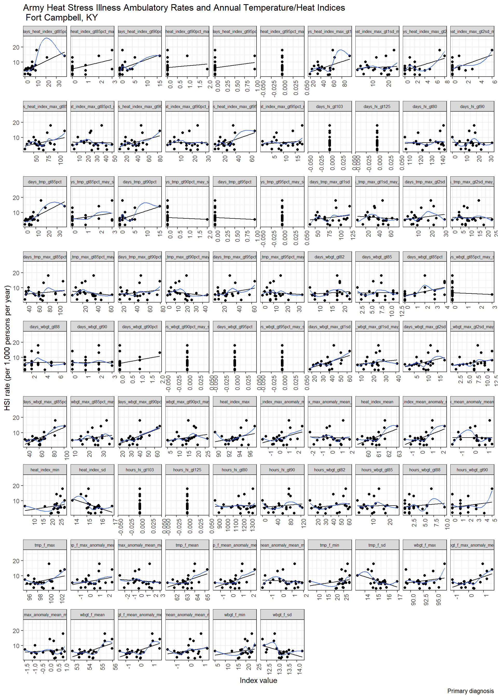
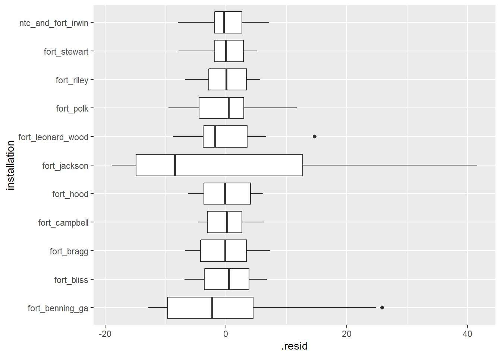
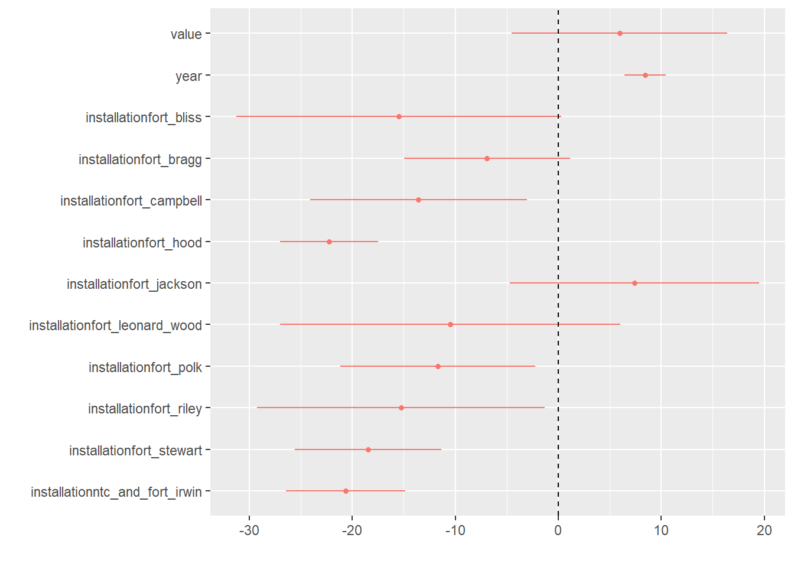
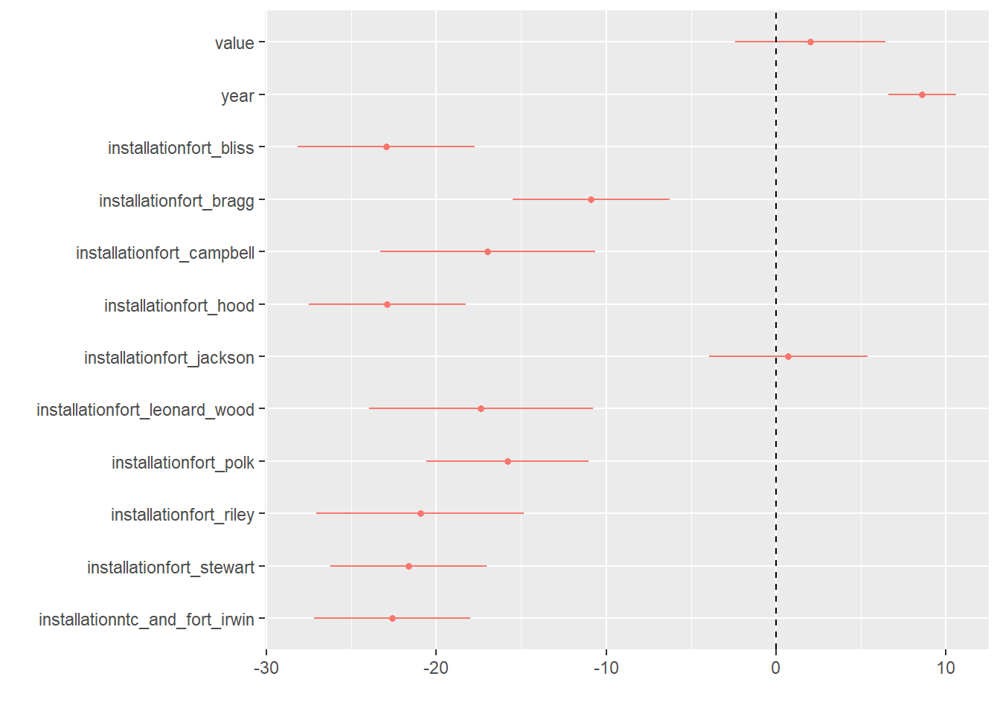
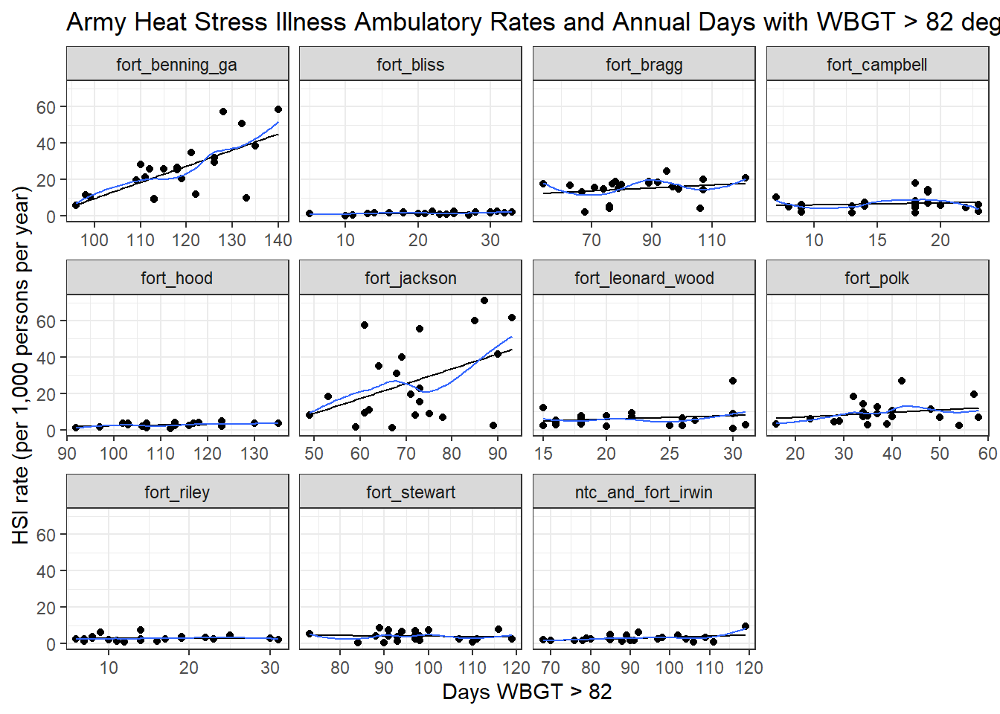
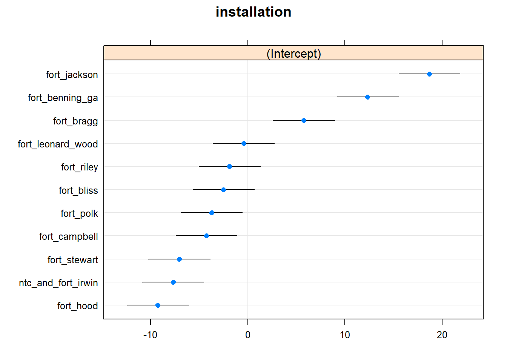

dmed_models
Annual models from DMED data.
Scope:
CONUS Army Installations:
Fort Jackson, SC
Fort Benning, GA
Fort Bragg, NC
Fort Campbell, KY
Fort Polk, LA
Fort Hood, TX
Fort Stewart, GA
Fort Leonard Wood, MO
Fort Riley, KS
Fort Irwin, CA
Fort Bliss, TX
Population: Active-duty Army service members
Outcome: Ambulatory (Out-patient)
Annual Rate of Heat Stress Illness (any type, primary diagnosis)
1997 - 2018
Exposure indices:
“Absolute” indices
Annual mean (full-year): temperature, heat index, WBGT
Annual heat risk days / hours - Heat index above 80 / 90 / 103 / 125 °F - WBGT above 82 / 85 / 88 / 90 °F
“Relative” indices (averaged over full-year and heat season months) Annual mean daily anomaly: temperature, heat index, WBGT
Annual maximum daily anomaly: temperature, heat index, WBGT
Days mean temperature index above daily climate normal percentile (averaged over all hours of day)
- temperature, heat index, WBGT above 85th / 90th / 95th percentiles
Days maximum temperature index above daily climate normal maximum percentile
- temperature, heat index, WBGT above 85th / 90th / 95th percentiles
Days mean temperature index above Standard Deviation(s) of mean daily temperature climate normal
- temperature, heat index, WBGT above 1 or 2 standard deviations of daily normal
Days maximum temperature index above Standard Deviation(s) of max daily temperature climate normal
- temperature, heat index, WBGT above 1 or 2 standard deviations of maximum daily normal
# Outcomes
dmed_tidy <-
read_rds("data/dmed_tidy.rds")
dmed_tidy## # A tibble: 11,955 x 9
## type category year count population rate location strata hsi
## <fct> <fct> <int> <dbl> <dbl> <dbl> <fct> <fct> <fct>
## 1 Ambulatory Data Male 1997 0 6057. 0 jackson gender hexhsa~
## 2 Ambulatory Data Female 1997 0 2749. 0 jackson gender hexhsa~
## 3 Ambulatory Data Total 1997 0 8806. 0 jackson gender hexhsa~
## 4 Hospitalizatio~ Male 1997 0 6057. 0 jackson gender hexhsa~
## 5 Hospitalizatio~ Female 1997 0 2749. 0 jackson gender hexhsa~
## 6 Hospitalizatio~ Total 1997 0 8806. 0 jackson gender hexhsa~
## 7 Reportable Eve~ Male 1997 0 6057. 0 jackson gender hexhsa~
## 8 Reportable Eve~ Female 1997 0 2749. 0 jackson gender hexhsa~
## 9 Reportable Eve~ Total 1997 0 8806. 0 jackson gender hexhsa~
## 10 Ambulatory Data Male 1998 0 6456. 0 jackson gender hexhsa~
## # ... with 11,945 more rows# Exposures
annual_tables_list <-
read_rds("data/annual_tables_list.rds")
annual_tables_list## # A tibble: 25 x 2
## # Groups: installation [25]
## installation data
## <chr> <list<df[,31]>>
## 1 eglin_afb [86 x 31]
## 2 fort_benning_ga [86 x 31]
## 3 fort_bliss [86 x 31]
## 4 fort_bragg [86 x 31]
## 5 fort_campbell [86 x 31]
## 6 fort_carson [86 x 31]
## 7 fort_drum [86 x 31]
## 8 fort_gordon [86 x 31]
## 9 fort_hood [86 x 31]
## 10 fort_jackson [86 x 31]
## # ... with 15 more rowsTable of HSI Ambulatory Rates
Ambulatory rates (per 1,000 persons per year) of any heat stress illness type (Army personnel)
dmed_tidy <-
read_rds("data/dmed_tidy.rds")
dmed_tidy %>%
filter(!location %in% c("us", "overseas"),
type == "Ambulatory Data",
hsi == "all",
strata == "gender",
category == "Total") %>%
dplyr::select(location, year, rate) %>%
pivot_wider(., names_from = year, values_from = rate) %>%
knitr::kable(digits = 2) %>%
kable_styling(bootstrap_options = "striped", font_size = 10) %>%
scroll_box(width = "700px") | location | 1997 | 1998 | 1999 | 2000 | 2001 | 2002 | 2003 | 2004 | 2005 | 2006 | 2007 | 2008 | 2009 | 2010 | 2011 | 2012 | 2013 | 2014 | 2015 | 2016 | 2017 | 2018 |
|---|---|---|---|---|---|---|---|---|---|---|---|---|---|---|---|---|---|---|---|---|---|---|
| jackson | 0.91 | 2.47 | 1.63 | 6.87 | 8.11 | 8.71 | 9.17 | 8.02 | 15.53 | 10.75 | 19.58 | 34.88 | 18.43 | 41.61 | 70.93 | 55.37 | 40.01 | 30.89 | 22.58 | 60.01 | 57.61 | 61.43 |
| benning | 5.81 | 9.66 | 10.26 | 9.50 | 11.50 | 11.91 | 9.07 | 21.12 | 28.41 | 20.63 | 25.92 | 19.84 | 26.81 | 38.59 | 34.63 | 25.21 | 25.69 | 31.81 | 29.66 | 50.83 | 57.29 | 58.39 |
| bragg | 2.03 | 4.02 | 3.99 | 5.40 | 15.74 | 18.01 | 13.09 | 17.48 | 15.92 | 17.04 | 14.57 | 19.03 | 16.66 | 19.88 | 24.67 | 18.94 | 17.67 | 14.68 | 18.29 | 14.54 | 15.29 | 20.90 |
| campbell | 2.32 | 5.47 | 4.98 | 4.65 | 5.97 | 4.67 | 1.82 | 7.46 | 5.45 | 1.59 | 6.99 | 2.15 | 5.37 | 4.51 | 6.31 | 5.78 | 6.29 | 10.21 | 8.08 | 13.15 | 14.22 | 17.97 |
| polk | 8.77 | 8.91 | 4.58 | 4.42 | 7.42 | 6.15 | 2.45 | 3.22 | 12.48 | 11.25 | 9.76 | 2.85 | 7.12 | 18.43 | 3.04 | 6.86 | 7.00 | 10.60 | 13.96 | 26.90 | 6.80 | 19.31 |
| hood | 0.96 | 1.69 | 1.53 | 2.57 | 3.32 | 3.65 | 2.50 | 0.93 | 3.34 | 2.14 | 2.46 | 1.67 | 0.79 | 3.46 | 1.78 | 3.85 | 2.79 | 2.34 | 3.77 | 4.55 | 3.54 | 3.60 |
| stewart | 0.32 | 2.59 | 1.30 | 1.72 | 3.38 | 3.88 | 0.44 | 5.32 | 0.81 | 4.72 | 4.29 | 3.91 | 6.70 | 2.42 | 7.48 | 4.08 | 2.55 | 7.24 | 6.96 | 2.52 | 8.62 | 7.60 |
| leonardwood | 1.92 | 2.55 | 3.79 | 5.12 | 8.99 | 5.20 | 0.66 | 2.71 | 9.14 | 2.98 | 2.29 | 2.08 | 2.41 | 12.09 | 7.39 | 7.01 | 6.46 | 4.56 | 6.37 | 26.79 | 7.69 | 4.76 |
| riley | 0.97 | 1.44 | 1.93 | 2.37 | 2.60 | 1.61 | 1.71 | 2.33 | 1.31 | 7.52 | 2.70 | 1.38 | 2.36 | 3.58 | 6.00 | 2.62 | 3.00 | 2.77 | 4.69 | 3.14 | 2.22 | 3.53 |
| irwin | 1.99 | 2.38 | 1.59 | 2.70 | 1.56 | 1.12 | 2.14 | 1.50 | 1.50 | 2.33 | 2.62 | 1.71 | 5.02 | 0.90 | 4.66 | 6.11 | 2.74 | 4.37 | 3.32 | 1.03 | 3.10 | 9.39 |
| bliss | 0.11 | 0.61 | 0.73 | 1.45 | 1.64 | 1.35 | 1.98 | 1.64 | 2.00 | 1.34 | 2.39 | 2.46 | 1.20 | 2.00 | 1.79 | 2.29 | 0.59 | 1.69 | 0.69 | 1.69 | 1.24 | 2.21 |
Plots of HSI Ambulatory Rates
dmed_tidy %>%
filter(!location %in% c("us", "overseas"),
type == "Ambulatory Data",
hsi == "all",
strata == "gender",
category == "Total") %>%
ggplot(aes(x = year, y = rate, color = location)) +
geom_point() +
geom_line() +
labs(
title = "Army Heat Stress Illness Ambulatory Rates",
x = "Year",
y = "HSI rate (per 1,000 persons per year)"
) +
theme_bw() +
theme(strip.text = element_text(size = 6)) +
theme(axis.text.x = element_text(angle = 90, hjust = 1))dmed_tidy %>%
filter(!location %in% c("us", "overseas"),
type == "Ambulatory Data",
hsi == "all",
strata == "gender",
category == "Total") %>%
ggplot(aes(x = fct_reorder(location, rate), y = rate)) +
geom_boxplot() +
coord_flip() +
labs(
title = "Army Heat Stress Illness Ambulatory Rates, 1997-2018",
x = "Installation",
y = "HSI rate (per 1,000 persons per year)"
) +
theme_bw() dmed_tidy %>%
filter(!location %in% c("us", "overseas"),
type == "Ambulatory Data",
hsi == "all",
strata == "gender",
category == "Total") %>%
ggplot(aes(x = rate, y = fct_reorder(location,rate))) +
ggridges::geom_density_ridges(scale = 0.75) +
labs(
title = "Army Heat Stress Illness Ambulatory Rates, 1997-2018",
x = "Installation",
y = "HSI rate (per 1,000 persons per year)"
) +
theme_bw() ## Picking joint bandwidth of 2.49index_long <-
annual_tables_list %>%
filter(installation %in% c("fort_benning_ga", "fort_bragg", "fort_campbell", "fort_jackson",
"fort_polk", "fort_hood", "fort_stewart", "fort_leonard_wood", "fort_riley",
"ntc_and_fort_irwin", "fort_bliss")) %>%
unnest(data) %>%
pivot_longer(., cols = `1990`:`2019`, names_to = "year", values_to = "value") %>%
mutate(year = as.integer(year))
hsi_rates <-
dmed_tidy %>%
filter(location %in% c("benning", "bragg", "campbell", "jackson",
"polk", "hood", "stewart", "leonardwood",
"riley", "irwin", "bliss"),
type == "Ambulatory Data",
hsi == "all",
strata == "gender",
category == "Total") %>%
dplyr::select(location, year, rate) %>%
dplyr::mutate(location = dplyr::recode(location, jackson = "fort_jackson"),
location = dplyr::recode(location, benning = "fort_benning_ga"),
location = dplyr::recode(location, bragg = "fort_bragg"),
location = dplyr::recode(location, campbell = "fort_campbell"),
location = dplyr::recode(location, polk = "fort_polk"),
location = dplyr::recode(location, hood = "fort_hood"),
location = dplyr::recode(location, stewart = "fort_stewart"),
location = dplyr::recode(location, leonardwood = "fort_leonard_wood"),
location = dplyr::recode(location, riley = "fort_riley"),
location = dplyr::recode(location, irwin = "ntc_and_fort_irwin"),
location = dplyr::recode(location, bliss = "fort_bliss"),
location = as.character(location))
hsi_rates## # A tibble: 242 x 3
## location year rate
## <chr> <int> <dbl>
## 1 fort_jackson 1997 0.908
## 2 fort_jackson 1998 2.47
## 3 fort_jackson 1999 1.63
## 4 fort_jackson 2000 6.87
## 5 fort_jackson 2001 8.11
## 6 fort_jackson 2002 8.71
## 7 fort_jackson 2003 9.17
## 8 fort_jackson 2004 8.02
## 9 fort_jackson 2005 15.5
## 10 fort_benning_ga 1997 5.81
## # ... with 232 more rows# Join table
joined_rate <-
index_long %>%
left_join(hsi_rates, by = c("installation" = "location", "year" = "year")) %>%
drop_na(rate)
joined_rate## # A tibble: 20,812 x 5
## # Groups: installation [11]
## installation index year value rate
## <chr> <chr> <int> <dbl> <dbl>
## 1 fort_benning_ga tmp_f_mean 1997 65.2 5.81
## 2 fort_benning_ga tmp_f_mean 1998 67.7 9.66
## 3 fort_benning_ga tmp_f_mean 1999 66.4 10.3
## 4 fort_benning_ga tmp_f_mean 2000 65.8 9.50
## 5 fort_benning_ga tmp_f_mean 2001 65.7 11.5
## 6 fort_benning_ga tmp_f_mean 2002 66.5 11.9
## 7 fort_benning_ga tmp_f_mean 2003 65.5 9.07
## 8 fort_benning_ga tmp_f_mean 2004 66.1 21.1
## 9 fort_benning_ga tmp_f_mean 2005 65.7 28.4
## 10 fort_benning_ga tmp_f_mean 2006 67.0 20.6
## # ... with 20,802 more rowsScatterplots of Temperature/Heat Index and HSI Rates
Each point represents a year from 1997 - 2018.
The back line is a linear regression and the blue curve is a loess smoothed conditional means curve.
joined_rate %>%
filter(installation == "fort_benning_ga") %>%
ggplot(aes(x = value, y = rate)) +
geom_point() +
geom_smooth(method = lm, se = FALSE, size = 0.5, color = "black") +
geom_smooth(se = FALSE, size = 0.5) +
facet_wrap(~ index, scales = "free_x") +
labs(
title = "Army Heat Stress Illness Ambulatory Rates and Annual Temperature/Heat Indices \n Fort Benning, GA",
x = "Index value",
y = "HSI rate (per 1,000 persons per year)",
caption = "Primary diagnosis"
) +
theme_bw() +
theme(strip.text = element_text(size = 6)) +
theme(axis.text.x = element_text(angle = 90, hjust = 1))## `geom_smooth()` using method = 'loess' and formula 'y ~ x'
joined_rate %>%
filter(installation == "fort_jackson") %>%
ggplot(aes(x = value, y = rate)) +
geom_point() +
geom_smooth(method = lm, se = FALSE, size = 0.5, color = "black") +
geom_smooth(se = FALSE, size = 0.5) +
facet_wrap(~ index, scales = "free_x") +
labs(
title = "Army Heat Stress Illness Ambulatory Rates and Annual Temperature/Heat Indices \n Fort Jackson, SC",
x = "Index value",
y = "HSI rate (per 1,000 persons per year)",
caption = "Primary diagnosis"
) +
theme_bw() +
theme(strip.text = element_text(size = 6)) +
theme(axis.text.x = element_text(angle = 90, hjust = 1))## `geom_smooth()` using method = 'loess' and formula 'y ~ x' joined_rate %>%
filter(installation == "fort_campbell") %>%
ggplot(aes(x = value, y = rate)) +
geom_point() +
geom_smooth(method = lm, se = FALSE, size = 0.5, color = "black") +
geom_smooth(se = FALSE, size = 0.5) +
facet_wrap(~ index, scales = "free_x") +
labs(
title = "Army Heat Stress Illness Ambulatory Rates and Annual Temperature/Heat Indices \n Fort Campbell, KY",
x = "Index value",
y = "HSI rate (per 1,000 persons per year)",
caption = "Primary diagnosis"
) +
theme_bw() +
theme(strip.text = element_text(size = 6)) +
theme(axis.text.x = element_text(angle = 90, hjust = 1))## `geom_smooth()` using method = 'loess' and formula 'y ~ x'
Linear models
# Linear regression function
annual_lm = function(df) {
df %>%
lm(rate ~ value, data = .)
}
# Include year in model
annual_year_lm = function(df) {
df %>%
lm(rate ~ value + year, data = .)
}
# Nest by each installation - index pair
annual_hsi_nest <-
joined_rate %>%
nest(data = year:rate) %>%
mutate(linear_models = map(data, annual_lm),
glance = map(linear_models, broom::glance),
tidy = map(linear_models, broom::tidy),
augment = map(linear_models, broom::augment))
annual_hsi_year_nest <-
joined_rate %>%
nest(data = year:rate) %>%
mutate(linear_models = map(data, annual_year_lm),
glance = map(linear_models, broom::glance),
tidy = map(linear_models, broom::tidy),
augment = map(linear_models, broom::augment))
annual_hsi_nest## # A tibble: 946 x 7
## # Groups: installation [11]
## installation index data linear_models glance tidy augment
## <chr> <chr> <list<df[> <list> <list> <list> <list>
## 1 fort_benning~ tmp_f_m~ [22 x 3] <lm> <tibble [~ <tibble~ <tibble ~
## 2 fort_benning~ heat_in~ [22 x 3] <lm> <tibble [~ <tibble~ <tibble ~
## 3 fort_benning~ wbgt_f_~ [22 x 3] <lm> <tibble [~ <tibble~ <tibble ~
## 4 fort_benning~ tmp_f_m~ [22 x 3] <lm> <tibble [~ <tibble~ <tibble ~
## 5 fort_benning~ heat_in~ [22 x 3] <lm> <tibble [~ <tibble~ <tibble ~
## 6 fort_benning~ wbgt_f_~ [22 x 3] <lm> <tibble [~ <tibble~ <tibble ~
## 7 fort_benning~ tmp_f_m~ [22 x 3] <lm> <tibble [~ <tibble~ <tibble ~
## 8 fort_benning~ heat_in~ [22 x 3] <lm> <tibble [~ <tibble~ <tibble ~
## 9 fort_benning~ wbgt_f_~ [22 x 3] <lm> <tibble [~ <tibble~ <tibble ~
## 10 fort_benning~ tmp_f_sd [22 x 3] <lm> <tibble [~ <tibble~ <tibble ~
## # ... with 936 more rowsannual_hsi_year_nest## # A tibble: 946 x 7
## # Groups: installation [11]
## installation index data linear_models glance tidy augment
## <chr> <chr> <list<df[> <list> <list> <list> <list>
## 1 fort_benning~ tmp_f_m~ [22 x 3] <lm> <tibble ~ <tibble~ <tibble [~
## 2 fort_benning~ heat_in~ [22 x 3] <lm> <tibble ~ <tibble~ <tibble [~
## 3 fort_benning~ wbgt_f_~ [22 x 3] <lm> <tibble ~ <tibble~ <tibble [~
## 4 fort_benning~ tmp_f_m~ [22 x 3] <lm> <tibble ~ <tibble~ <tibble [~
## 5 fort_benning~ heat_in~ [22 x 3] <lm> <tibble ~ <tibble~ <tibble [~
## 6 fort_benning~ wbgt_f_~ [22 x 3] <lm> <tibble ~ <tibble~ <tibble [~
## 7 fort_benning~ tmp_f_m~ [22 x 3] <lm> <tibble ~ <tibble~ <tibble [~
## 8 fort_benning~ heat_in~ [22 x 3] <lm> <tibble ~ <tibble~ <tibble [~
## 9 fort_benning~ wbgt_f_~ [22 x 3] <lm> <tibble ~ <tibble~ <tibble [~
## 10 fort_benning~ tmp_f_sd [22 x 3] <lm> <tibble ~ <tibble~ <tibble [~
## # ... with 936 more rowsLinear Models Summary Table
All models, sorted by R2
# Model summaries
annual_hsi_nest %>%
unnest(glance) %>%
dplyr::select(installation, index, r.squared:df.residual) %>%
arrange(desc(r.squared)) %>%
knitr::kable(digits = 4) %>%
kable_styling(bootstrap_options = "striped", font_size = 10) %>%
scroll_box(height = "700px")| installation | index | r.squared | adj.r.squared | sigma | statistic | p.value | df | logLik | AIC | BIC | deviance | df.residual |
|---|---|---|---|---|---|---|---|---|---|---|---|---|
| fort_campbell | days_tmp_gt85pct | 0.5127 | 0.4884 | 2.9304 | 21.0451 | 0.0002 | 2 | -53.8211 | 113.6422 | 116.9153 | 171.7416 | 20 |
| fort_campbell | days_wbgt_max_gt85pct | 0.5103 | 0.4858 | 2.9376 | 20.8424 | 0.0002 | 2 | -53.8755 | 113.7511 | 117.0242 | 172.5941 | 20 |
| fort_benning_ga | days_wbgt_max_gt1sd | 0.4984 | 0.4734 | 11.0948 | 19.8753 | 0.0002 | 2 | -83.1107 | 172.2213 | 175.4944 | 2461.8763 | 20 |
| fort_benning_ga | days_wbgt_gt82 | 0.4810 | 0.4550 | 11.2864 | 18.5328 | 0.0003 | 2 | -83.4874 | 172.9747 | 176.2478 | 2547.6452 | 20 |
| fort_benning_ga | days_wbgt_max_gt85pct | 0.4625 | 0.4356 | 11.4853 | 17.2095 | 0.0005 | 2 | -83.8718 | 173.7435 | 177.0167 | 2638.2515 | 20 |
| fort_benning_ga | hours_wbgt_gt82 | 0.4619 | 0.4350 | 11.4916 | 17.1687 | 0.0005 | 2 | -83.8838 | 173.7676 | 177.0408 | 2641.1434 | 20 |
| fort_benning_ga | days_wbgt_gt85 | 0.4601 | 0.4331 | 11.5111 | 17.0433 | 0.0005 | 2 | -83.9210 | 173.8420 | 177.1152 | 2650.0885 | 20 |
| fort_jackson | days_hi_gt80 | 0.4558 | 0.4286 | 17.0206 | 16.7544 | 0.0006 | 2 | -92.5255 | 191.0511 | 194.3242 | 5794.0039 | 20 |
| fort_campbell | days_heat_index_gt85pct | 0.4544 | 0.4271 | 3.1009 | 16.6548 | 0.0006 | 2 | -55.0655 | 116.1310 | 119.4041 | 192.3120 | 20 |
| fort_benning_ga | days_wbgt_max_gt90pct | 0.4488 | 0.4212 | 11.6311 | 16.2823 | 0.0006 | 2 | -84.1493 | 174.2987 | 177.5718 | 2705.6695 | 20 |
| fort_jackson | days_tmp_gt90pct_may_sep | 0.4360 | 0.4078 | 17.3276 | 15.4635 | 0.0008 | 2 | -92.9188 | 191.8377 | 195.1108 | 6004.9089 | 20 |
| fort_campbell | days_wbgt_max_gt90pct | 0.4355 | 0.4073 | 3.1540 | 15.4312 | 0.0008 | 2 | -55.4389 | 116.8779 | 120.1510 | 198.9532 | 20 |
| fort_jackson | days_heat_index_gt90pct_may_sep | 0.4340 | 0.4057 | 17.3594 | 15.3335 | 0.0009 | 2 | -92.9592 | 191.9184 | 195.1916 | 6026.9915 | 20 |
| fort_jackson | days_tmp_gt85pct_may_sep | 0.4337 | 0.4054 | 17.3639 | 15.3153 | 0.0009 | 2 | -92.9649 | 191.9298 | 195.2029 | 6030.1047 | 20 |
| fort_benning_ga | days_heat_index_max_gt90pct | 0.4269 | 0.3982 | 11.8599 | 14.8964 | 0.0010 | 2 | -84.5778 | 175.1555 | 178.4287 | 2813.1304 | 20 |
| fort_benning_ga | days_heat_index_max_gt1sd | 0.4167 | 0.3875 | 11.9649 | 14.2866 | 0.0012 | 2 | -84.7717 | 175.5433 | 178.8164 | 2863.1557 | 20 |
| fort_benning_ga | wbgt_f_max_anomaly_mean_may_sep | 0.4133 | 0.3840 | 11.9995 | 14.0888 | 0.0013 | 2 | -84.8353 | 175.6706 | 178.9437 | 2879.7694 | 20 |
| fort_jackson | days_heat_index_max_gt2sd | 0.4133 | 0.3839 | 17.6738 | 14.0878 | 0.0013 | 2 | -93.3540 | 192.7081 | 195.9812 | 6247.2452 | 20 |
| fort_jackson | days_heat_index_max_gt2sd_may_sep | 0.4059 | 0.3762 | 17.7851 | 13.6624 | 0.0014 | 2 | -93.4922 | 192.9844 | 196.2575 | 6326.2002 | 20 |
| fort_jackson | days_heat_index_gt85pct_may_sep | 0.3995 | 0.3694 | 17.8807 | 13.3034 | 0.0016 | 2 | -93.6101 | 193.2202 | 196.4934 | 6394.3868 | 20 |
| fort_benning_ga | hours_wbgt_gt85 | 0.3977 | 0.3676 | 12.1581 | 13.2051 | 0.0017 | 2 | -85.1242 | 176.2484 | 179.5216 | 2956.4090 | 20 |
| fort_benning_ga | days_wbgt_max_gt1sd_may_sep | 0.3822 | 0.3513 | 12.3131 | 12.3749 | 0.0022 | 2 | -85.4028 | 176.8055 | 180.0786 | 3032.2250 | 20 |
| fort_campbell | wbgt_f_mean_anomaly_mean | 0.3801 | 0.3491 | 3.3053 | 12.2610 | 0.0022 | 2 | -56.4700 | 118.9401 | 122.2132 | 218.5042 | 20 |
| fort_campbell | wbgt_f_mean | 0.3792 | 0.3481 | 3.3077 | 12.2157 | 0.0023 | 2 | -56.4855 | 118.9710 | 122.2441 | 218.8114 | 20 |
| fort_jackson | days_wbgt_max_gt2sd_may_sep | 0.3786 | 0.3476 | 18.1882 | 12.1869 | 0.0023 | 2 | -93.9852 | 193.9704 | 197.2436 | 6616.2010 | 20 |
| fort_jackson | hours_hi_gt80 | 0.3680 | 0.3364 | 18.3427 | 11.6470 | 0.0028 | 2 | -94.1713 | 194.3426 | 197.6157 | 6729.0794 | 20 |
| fort_benning_ga | days_wbgt_max_gt2sd | 0.3653 | 0.3335 | 12.4809 | 11.5101 | 0.0029 | 2 | -85.7006 | 177.4012 | 180.6743 | 3115.4484 | 20 |
| fort_benning_ga | days_heat_index_max_gt85pct | 0.3610 | 0.3291 | 12.5224 | 11.3013 | 0.0031 | 2 | -85.7737 | 177.5474 | 180.8206 | 3136.2295 | 20 |
| ntc_and_fort_irwin | wbgt_f_min | 0.3606 | 0.3287 | 1.6396 | 11.2805 | 0.0031 | 2 | -41.0461 | 88.0922 | 91.3653 | 53.7653 | 20 |
| fort_jackson | days_heat_index_max_gt90pct | 0.3593 | 0.3273 | 18.4685 | 11.2172 | 0.0032 | 2 | -94.3217 | 194.6434 | 197.9165 | 6821.7130 | 20 |
| fort_benning_ga | days_wbgt_gt88 | 0.3543 | 0.3221 | 12.5880 | 10.9763 | 0.0035 | 2 | -85.8885 | 177.7771 | 181.0502 | 3169.1346 | 20 |
| fort_jackson | days_heat_index_max_gt85pct_may_sep | 0.3539 | 0.3216 | 18.5464 | 10.9555 | 0.0035 | 2 | -94.4143 | 194.8286 | 198.1017 | 6879.3811 | 20 |
| fort_jackson | days_heat_index_max_gt85pct | 0.3490 | 0.3164 | 18.6172 | 10.7207 | 0.0038 | 2 | -94.4981 | 194.9962 | 198.2693 | 6931.9758 | 20 |
| fort_jackson | tmp_f_max_anomaly_mean_may_sep | 0.3482 | 0.3157 | 18.6276 | 10.6864 | 0.0038 | 2 | -94.5104 | 195.0207 | 198.2939 | 6939.7245 | 20 |
| fort_jackson | heat_index_max_anomaly_mean_may_sep | 0.3473 | 0.3147 | 18.6409 | 10.6426 | 0.0039 | 2 | -94.5261 | 195.0522 | 198.3253 | 6949.6447 | 20 |
| fort_benning_ga | days_wbgt_max_gt85pct_may_sep | 0.3466 | 0.3140 | 12.6628 | 10.6112 | 0.0039 | 2 | -86.0189 | 178.0379 | 181.3110 | 3206.9304 | 20 |
| fort_campbell | wbgt_f_max_anomaly_mean | 0.3464 | 0.3138 | 3.3938 | 10.6015 | 0.0040 | 2 | -57.0509 | 120.1019 | 123.3750 | 230.3535 | 20 |
| fort_jackson | days_heat_index_max_gt1sd_may_sep | 0.3412 | 0.3082 | 18.7286 | 10.3561 | 0.0043 | 2 | -94.6294 | 195.2588 | 198.5319 | 7015.2187 | 20 |
| fort_jackson | days_heat_index_max_gt95pct | 0.3378 | 0.3047 | 18.7764 | 10.2018 | 0.0046 | 2 | -94.6855 | 195.3709 | 198.6441 | 7051.0749 | 20 |
| fort_benning_ga | days_heat_index_max_gt95pct | 0.3342 | 0.3009 | 12.7832 | 10.0375 | 0.0048 | 2 | -86.2271 | 178.4541 | 181.7273 | 3268.1860 | 20 |
| fort_benning_ga | heat_index_max_anomaly_mean | 0.3333 | 0.2999 | 12.7916 | 9.9977 | 0.0049 | 2 | -86.2417 | 178.4833 | 181.7564 | 3272.5204 | 20 |
| fort_benning_ga | days_wbgt_max_gt90pct_may_sep | 0.3332 | 0.2999 | 12.7923 | 9.9944 | 0.0049 | 2 | -86.2429 | 178.4857 | 181.7589 | 3272.8800 | 20 |
| fort_jackson | days_tmp_max_gt95pct | 0.3309 | 0.2975 | 18.8736 | 9.8916 | 0.0051 | 2 | -94.7990 | 195.5980 | 198.8711 | 7124.2324 | 20 |
| fort_jackson | days_heat_index_max_gt1sd | 0.3292 | 0.2957 | 18.8975 | 9.8160 | 0.0052 | 2 | -94.8269 | 195.6537 | 198.9269 | 7142.2952 | 20 |
| fort_jackson | days_tmp_max_gt1sd_may_sep | 0.3284 | 0.2948 | 18.9091 | 9.7793 | 0.0053 | 2 | -94.8404 | 195.6809 | 198.9540 | 7151.1106 | 20 |
| fort_jackson | tmp_f_mean_anomaly_mean_may_sep | 0.3284 | 0.2948 | 18.9093 | 9.7788 | 0.0053 | 2 | -94.8406 | 195.6812 | 198.9544 | 7151.2278 | 20 |
| fort_benning_ga | wbgt_f_mean_anomaly_mean_may_sep | 0.3267 | 0.2930 | 12.8548 | 9.7037 | 0.0055 | 2 | -86.3500 | 178.7000 | 181.9731 | 3304.9077 | 20 |
| fort_jackson | days_heat_index_max_gt90pct_may_sep | 0.3259 | 0.2922 | 18.9446 | 9.6678 | 0.0055 | 2 | -94.8817 | 195.7634 | 199.0365 | 7177.9927 | 20 |
| fort_campbell | heat_index_mean_anomaly_mean | 0.3225 | 0.2886 | 3.4553 | 9.5211 | 0.0058 | 2 | -57.4463 | 120.8926 | 124.1657 | 238.7832 | 20 |
| fort_campbell | heat_index_mean | 0.3222 | 0.2883 | 3.4562 | 9.5056 | 0.0059 | 2 | -57.4521 | 120.9042 | 124.1773 | 238.9091 | 20 |
| fort_benning_ga | hours_hi_gt80 | 0.3218 | 0.2879 | 12.9012 | 9.4902 | 0.0059 | 2 | -86.4293 | 178.8586 | 182.1318 | 3328.8313 | 20 |
| fort_jackson | days_wbgt_gt85 | 0.3181 | 0.2840 | 19.0532 | 9.3308 | 0.0063 | 2 | -95.0074 | 196.0147 | 199.2879 | 7260.4607 | 20 |
| fort_jackson | days_wbgt_max_gt2sd | 0.3178 | 0.2837 | 19.0576 | 9.3170 | 0.0063 | 2 | -95.0125 | 196.0250 | 199.2982 | 7263.8619 | 20 |
| fort_jackson | days_tmp_max_gt1sd | 0.3176 | 0.2835 | 19.0599 | 9.3102 | 0.0063 | 2 | -95.0151 | 196.0302 | 199.3033 | 7265.5699 | 20 |
| fort_jackson | tmp_f_max_anomaly_mean | 0.3128 | 0.2784 | 19.1273 | 9.1037 | 0.0068 | 2 | -95.0928 | 196.1857 | 199.4588 | 7317.1016 | 20 |
| fort_benning_ga | days_hi_gt90 | 0.3113 | 0.2768 | 13.0012 | 9.0383 | 0.0070 | 2 | -86.5992 | 179.1984 | 182.4715 | 3380.6385 | 20 |
| fort_jackson | hours_hi_gt90 | 0.3106 | 0.2761 | 19.1583 | 9.0096 | 0.0071 | 2 | -95.1285 | 196.2569 | 199.5301 | 7340.8357 | 20 |
| fort_campbell | days_heat_index_max_gt2sd | 0.3058 | 0.2710 | 3.4978 | 8.8085 | 0.0076 | 2 | -57.7151 | 121.4302 | 124.7033 | 244.6900 | 20 |
| fort_jackson | days_wbgt_max_gt85pct_may_sep | 0.3034 | 0.2686 | 19.2579 | 8.7105 | 0.0079 | 2 | -95.2425 | 196.4850 | 199.7581 | 7417.3277 | 20 |
| fort_benning_ga | hours_hi_gt90 | 0.3007 | 0.2657 | 13.1006 | 8.5994 | 0.0082 | 2 | -86.7667 | 179.5335 | 182.8066 | 3432.5189 | 20 |
| fort_jackson | days_tmp_max_gt95pct_may_sep | 0.2991 | 0.2640 | 19.3174 | 8.5337 | 0.0084 | 2 | -95.3104 | 196.6208 | 199.8940 | 7463.2691 | 20 |
| fort_jackson | heat_index_mean_anomaly_mean_may_sep | 0.2952 | 0.2599 | 19.3712 | 8.3757 | 0.0090 | 2 | -95.3715 | 196.7430 | 200.0162 | 7504.8390 | 20 |
| fort_jackson | days_tmp_gt90pct | 0.2947 | 0.2594 | 19.3781 | 8.3553 | 0.0090 | 2 | -95.3794 | 196.7589 | 200.0320 | 7510.2369 | 20 |
| fort_jackson | days_heat_index_max_gt95pct_may_sep | 0.2931 | 0.2578 | 19.3991 | 8.2940 | 0.0093 | 2 | -95.4032 | 196.8065 | 200.0796 | 7526.5045 | 20 |
| fort_jackson | heat_index_max_anomaly_mean | 0.2923 | 0.2569 | 19.4103 | 8.2612 | 0.0094 | 2 | -95.4160 | 196.8319 | 200.1051 | 7535.2310 | 20 |
| fort_campbell | days_heat_index_max_gt2sd_may_sep | 0.2911 | 0.2557 | 3.5344 | 8.2146 | 0.0095 | 2 | -57.9442 | 121.8884 | 125.1616 | 249.8403 | 20 |
| fort_jackson | days_tmp_max_gt90pct | 0.2906 | 0.2552 | 19.4332 | 8.1948 | 0.0096 | 2 | -95.4419 | 196.8837 | 200.1569 | 7552.9924 | 20 |
| fort_jackson | tmp_f_max | 0.2905 | 0.2550 | 19.4358 | 8.1874 | 0.0097 | 2 | -95.4448 | 196.8895 | 200.1627 | 7554.9830 | 20 |
| ntc_and_fort_irwin | tmp_f_min | 0.2889 | 0.2533 | 1.7292 | 8.1235 | 0.0099 | 2 | -42.2164 | 90.4328 | 93.7059 | 59.8008 | 20 |
| ntc_and_fort_irwin | heat_index_min | 0.2889 | 0.2533 | 1.7292 | 8.1235 | 0.0099 | 2 | -42.2164 | 90.4328 | 93.7059 | 59.8008 | 20 |
| fort_benning_ga | heat_index_max_anomaly_mean_may_sep | 0.2873 | 0.2516 | 13.2258 | 8.0607 | 0.0101 | 2 | -86.9759 | 179.9518 | 183.2249 | 3498.4150 | 20 |
| fort_jackson | days_tmp_max_gt85pct | 0.2869 | 0.2513 | 19.4844 | 8.0469 | 0.0102 | 2 | -95.4997 | 196.9994 | 200.2725 | 7592.8067 | 20 |
| fort_jackson | days_tmp_max_gt90pct_may_sep | 0.2851 | 0.2494 | 19.5090 | 7.9762 | 0.0105 | 2 | -95.5275 | 197.0550 | 200.3281 | 7612.0059 | 20 |
| fort_jackson | days_tmp_max_gt2sd_may_sep | 0.2843 | 0.2485 | 19.5203 | 7.9438 | 0.0106 | 2 | -95.5402 | 197.0804 | 200.3536 | 7620.8254 | 20 |
| fort_jackson | days_tmp_max_gt85pct_may_sep | 0.2834 | 0.2476 | 19.5325 | 7.9090 | 0.0108 | 2 | -95.5540 | 197.1079 | 200.3810 | 7630.3455 | 20 |
| fort_jackson | days_tmp_gt85pct | 0.2831 | 0.2473 | 19.5362 | 7.8983 | 0.0108 | 2 | -95.5582 | 197.1163 | 200.3895 | 7633.2720 | 20 |
| fort_jackson | days_tmp_max_gt2sd | 0.2829 | 0.2471 | 19.5385 | 7.8918 | 0.0108 | 2 | -95.5607 | 197.1214 | 200.3945 | 7635.0339 | 20 |
| fort_stewart | days_hi_gt80 | 0.2822 | 0.2463 | 2.1874 | 7.8627 | 0.0110 | 2 | -47.3883 | 100.7765 | 104.0497 | 95.6972 | 20 |
| fort_jackson | days_tmp_gt95pct_may_sep | 0.2796 | 0.2436 | 19.5833 | 7.7642 | 0.0114 | 2 | -95.6112 | 197.2223 | 200.4955 | 7670.1385 | 20 |
| fort_benning_ga | heat_index_mean_anomaly_mean_may_sep | 0.2780 | 0.2419 | 13.3112 | 7.7015 | 0.0117 | 2 | -87.1176 | 180.2352 | 183.5084 | 3543.7794 | 20 |
| fort_campbell | days_wbgt_max_gt1sd | 0.2775 | 0.2413 | 3.5683 | 7.6806 | 0.0118 | 2 | -58.1544 | 122.3088 | 125.5819 | 254.6601 | 20 |
| fort_benning_ga | days_wbgt_gt90 | 0.2756 | 0.2394 | 13.3337 | 7.6083 | 0.0121 | 2 | -87.1547 | 180.3094 | 183.5825 | 3555.7471 | 20 |
| fort_jackson | hours_hi_gt103 | 0.2691 | 0.2325 | 19.7263 | 7.3631 | 0.0134 | 2 | -95.7712 | 197.5425 | 200.8156 | 7782.5665 | 20 |
| fort_jackson | days_wbgt_max_gt1sd_may_sep | 0.2681 | 0.2315 | 19.7400 | 7.3251 | 0.0136 | 2 | -95.7865 | 197.5730 | 200.8461 | 7793.3783 | 20 |
| fort_campbell | days_heat_index_gt90pct | 0.2675 | 0.2309 | 3.5929 | 7.3036 | 0.0137 | 2 | -58.3053 | 122.6105 | 125.8837 | 258.1766 | 20 |
| fort_campbell | days_wbgt_gt85pct | 0.2635 | 0.2266 | 3.6027 | 7.1544 | 0.0146 | 2 | -58.3656 | 122.7311 | 126.0042 | 259.5957 | 20 |
| ntc_and_fort_irwin | days_tmp_max_gt1sd | 0.2577 | 0.2206 | 1.7667 | 6.9426 | 0.0159 | 2 | -42.6882 | 91.3765 | 94.6496 | 62.4218 | 20 |
| fort_jackson | hours_wbgt_gt85 | 0.2525 | 0.2151 | 19.9487 | 6.7565 | 0.0172 | 2 | -96.0178 | 198.0356 | 201.3087 | 7958.9861 | 20 |
| fort_benning_ga | days_wbgt_max_gt2sd_may_sep | 0.2522 | 0.2148 | 13.5472 | 6.7449 | 0.0172 | 2 | -87.5042 | 181.0084 | 184.2815 | 3670.5354 | 20 |
| fort_benning_ga | wbgt_f_max_anomaly_mean | 0.2491 | 0.2115 | 13.5754 | 6.6338 | 0.0181 | 2 | -87.5500 | 181.0999 | 184.3730 | 3685.8362 | 20 |
| fort_benning_ga | heat_index_mean | 0.2491 | 0.2115 | 13.5756 | 6.6330 | 0.0181 | 2 | -87.5503 | 181.1006 | 184.3737 | 3685.9491 | 20 |
| fort_campbell | days_heat_index_max_gt95pct | 0.2488 | 0.2112 | 3.6385 | 6.6233 | 0.0181 | 2 | -58.5828 | 123.1657 | 126.4388 | 264.7741 | 20 |
| fort_benning_ga | heat_index_mean_anomaly_mean | 0.2488 | 0.2112 | 13.5781 | 6.6232 | 0.0181 | 2 | -87.5544 | 181.1087 | 184.3819 | 3687.3148 | 20 |
| ntc_and_fort_irwin | days_hi_gt90 | 0.2426 | 0.2047 | 1.7845 | 6.4058 | 0.0199 | 2 | -42.9096 | 91.8192 | 95.0924 | 63.6908 | 20 |
| fort_campbell | days_heat_index_gt85pct_may_sep | 0.2397 | 0.2016 | 3.6605 | 6.3039 | 0.0208 | 2 | -58.7156 | 123.4312 | 126.7043 | 267.9888 | 20 |
| fort_campbell | tmp_f_mean_anomaly_mean | 0.2371 | 0.1989 | 3.6667 | 6.2154 | 0.0215 | 2 | -58.7526 | 123.5053 | 126.7784 | 268.8935 | 20 |
| fort_campbell | tmp_f_mean | 0.2370 | 0.1988 | 3.6669 | 6.2119 | 0.0216 | 2 | -58.7541 | 123.5082 | 126.7814 | 268.9294 | 20 |
| fort_benning_ga | days_hi_gt80 | 0.2314 | 0.1930 | 13.7341 | 6.0220 | 0.0234 | 2 | -87.8056 | 181.6112 | 184.8843 | 3772.5000 | 20 |
| fort_campbell | days_heat_index_max_gt1sd | 0.2311 | 0.1927 | 3.6810 | 6.0124 | 0.0235 | 2 | -58.8382 | 123.6763 | 126.9495 | 270.9920 | 20 |
| fort_jackson | days_heat_index_gt90pct | 0.2300 | 0.1915 | 20.2471 | 5.9736 | 0.0239 | 2 | -96.3445 | 198.6890 | 201.9621 | 8198.9017 | 20 |
| fort_benning_ga | hours_wbgt_gt88 | 0.2295 | 0.1910 | 13.7510 | 5.9580 | 0.0241 | 2 | -87.8327 | 181.6654 | 184.9385 | 3781.7981 | 20 |
| ntc_and_fort_irwin | tmp_f_mean_anomaly_mean_may_sep | 0.2289 | 0.1903 | 1.8006 | 5.9370 | 0.0243 | 2 | -43.1067 | 92.2134 | 95.4865 | 64.8421 | 20 |
| fort_hood | days_hi_gt80 | 0.2282 | 0.1896 | 0.9644 | 5.9138 | 0.0245 | 2 | -29.3702 | 64.7404 | 68.0136 | 18.6004 | 20 |
| fort_stewart | days_tmp_gt85pct | 0.2273 | 0.1886 | 2.2696 | 5.8824 | 0.0249 | 2 | -48.1993 | 102.3985 | 105.6717 | 103.0194 | 20 |
| fort_campbell | days_tmp_gt90pct | 0.2256 | 0.1868 | 3.6943 | 5.8251 | 0.0255 | 2 | -58.9177 | 123.8353 | 127.1085 | 272.9578 | 20 |
| fort_polk | heat_index_max | 0.2252 | 0.1864 | 5.4891 | 5.8126 | 0.0257 | 2 | -67.6291 | 141.2581 | 144.5313 | 602.6053 | 20 |
| ntc_and_fort_irwin | days_tmp_max_gt85pct | 0.2212 | 0.1822 | 1.8096 | 5.6792 | 0.0272 | 2 | -43.2166 | 92.4331 | 95.7063 | 65.4931 | 20 |
| fort_jackson | hours_wbgt_gt82 | 0.2208 | 0.1818 | 20.3678 | 5.6666 | 0.0273 | 2 | -96.4753 | 198.9506 | 202.2237 | 8296.9834 | 20 |
| fort_hood | wbgt_f_mean_anomaly_mean_may_sep | 0.2157 | 0.1765 | 0.9722 | 5.4994 | 0.0295 | 2 | -29.5475 | 65.0951 | 68.3682 | 18.9027 | 20 |
| fort_hood | days_heat_index_gt85pct | 0.2134 | 0.1741 | 0.9736 | 5.4271 | 0.0304 | 2 | -29.5788 | 65.1576 | 68.4307 | 18.9565 | 20 |
| fort_jackson | days_hi_gt103 | 0.2129 | 0.1736 | 20.4703 | 5.4102 | 0.0306 | 2 | -96.5857 | 199.1715 | 202.4446 | 8380.6938 | 20 |
| fort_jackson | days_wbgt_max_gt1sd | 0.2123 | 0.1730 | 20.4778 | 5.3917 | 0.0309 | 2 | -96.5937 | 199.1874 | 202.4606 | 8386.7820 | 20 |
| fort_jackson | tmp_f_mean_anomaly_mean | 0.2120 | 0.1726 | 20.4826 | 5.3797 | 0.0311 | 2 | -96.5989 | 199.1978 | 202.4710 | 8390.7538 | 20 |
| fort_jackson | tmp_f_mean | 0.2117 | 0.1723 | 20.4864 | 5.3704 | 0.0312 | 2 | -96.6030 | 199.2059 | 202.4790 | 8393.8310 | 20 |
| fort_bliss | wbgt_f_max_anomaly_mean_may_sep | 0.2113 | 0.1719 | 0.5888 | 5.3597 | 0.0313 | 2 | -18.5144 | 43.0288 | 46.3019 | 6.9330 | 20 |
| ntc_and_fort_irwin | days_hi_gt80 | 0.2074 | 0.1677 | 1.8256 | 5.2321 | 0.0332 | 2 | -43.4097 | 92.8195 | 96.0926 | 66.6534 | 20 |
| fort_benning_ga | days_heat_index_max_gt1sd_may_sep | 0.2069 | 0.1672 | 13.9518 | 5.2162 | 0.0334 | 2 | -88.1516 | 182.3032 | 185.5763 | 3893.0457 | 20 |
| fort_jackson | wbgt_f_max_anomaly_mean_may_sep | 0.2048 | 0.1650 | 20.5762 | 5.1495 | 0.0345 | 2 | -96.6992 | 199.3984 | 202.6715 | 8467.5784 | 20 |
| fort_benning_ga | days_heat_index_max_gt2sd | 0.2047 | 0.1649 | 13.9710 | 5.1470 | 0.0345 | 2 | -88.1818 | 182.3637 | 185.6368 | 3903.7668 | 20 |
| fort_jackson | days_wbgt_max_gt85pct | 0.2045 | 0.1647 | 20.5797 | 5.1409 | 0.0346 | 2 | -96.7029 | 199.4059 | 202.6790 | 8470.4753 | 20 |
| fort_hood | heat_index_max_anomaly_mean | 0.2037 | 0.1638 | 0.9796 | 5.1151 | 0.0350 | 2 | -29.7146 | 65.4292 | 68.7023 | 19.1920 | 20 |
| fort_hood | days_wbgt_gt85pct | 0.2032 | 0.1634 | 0.9799 | 5.1010 | 0.0352 | 2 | -29.7208 | 65.4415 | 68.7147 | 19.2028 | 20 |
| ntc_and_fort_irwin | tmp_f_max_anomaly_mean_may_sep | 0.2031 | 0.1633 | 1.8304 | 5.0975 | 0.0353 | 2 | -43.4686 | 92.9372 | 96.2103 | 67.0109 | 20 |
| fort_hood | days_wbgt_max_gt1sd | 0.2025 | 0.1626 | 0.9803 | 5.0787 | 0.0356 | 2 | -29.7305 | 65.4611 | 68.7342 | 19.2198 | 20 |
| fort_bliss | wbgt_f_mean_anomaly_mean_may_sep | 0.2023 | 0.1624 | 0.5921 | 5.0723 | 0.0357 | 2 | -18.6397 | 43.2795 | 46.5526 | 7.0124 | 20 |
| fort_jackson | days_wbgt_gt85pct_may_sep | 0.2017 | 0.1618 | 20.6153 | 5.0540 | 0.0360 | 2 | -96.7410 | 199.4820 | 202.7551 | 8499.8221 | 20 |
| ntc_and_fort_irwin | heat_index_max_anomaly_mean | 0.2015 | 0.1616 | 1.8323 | 5.0474 | 0.0361 | 2 | -43.4906 | 92.9811 | 96.2543 | 67.1449 | 20 |
| ntc_and_fort_irwin | days_tmp_max_gt1sd_may_sep | 0.2012 | 0.1612 | 1.8327 | 5.0369 | 0.0363 | 2 | -43.4952 | 92.9903 | 96.2635 | 67.1730 | 20 |
| fort_campbell | heat_index_sd | 0.2007 | 0.1608 | 3.7530 | 5.0232 | 0.0365 | 2 | -59.2646 | 124.5292 | 127.8024 | 281.7043 | 20 |
| fort_campbell | wbgt_f_sd | 0.1998 | 0.1598 | 3.7552 | 4.9947 | 0.0370 | 2 | -59.2772 | 124.5544 | 127.8275 | 282.0262 | 20 |
| fort_bliss | days_wbgt_gt82 | 0.1991 | 0.1591 | 0.5933 | 4.9727 | 0.0374 | 2 | -18.6835 | 43.3671 | 46.6402 | 7.0404 | 20 |
| ntc_and_fort_irwin | tmp_f_max_anomaly_mean | 0.1991 | 0.1590 | 1.8351 | 4.9709 | 0.0374 | 2 | -43.5242 | 93.0485 | 96.3216 | 67.3508 | 20 |
| fort_jackson | days_wbgt_max_gt90pct | 0.1975 | 0.1573 | 20.6702 | 4.9212 | 0.0383 | 2 | -96.7995 | 199.5989 | 202.8720 | 8545.1253 | 20 |
| ntc_and_fort_irwin | hours_hi_gt80 | 0.1970 | 0.1569 | 1.8374 | 4.9074 | 0.0385 | 2 | -43.5522 | 93.1044 | 96.3776 | 67.5223 | 20 |
| fort_jackson | days_tmp_gt95pct | 0.1966 | 0.1564 | 20.6814 | 4.8943 | 0.0387 | 2 | -96.8114 | 199.6227 | 202.8958 | 8554.3716 | 20 |
| fort_hood | days_wbgt_max_gt85pct | 0.1951 | 0.1548 | 0.9849 | 4.8469 | 0.0396 | 2 | -29.8327 | 65.6654 | 68.9385 | 19.3991 | 20 |
| ntc_and_fort_irwin | days_heat_index_max_gt1sd | 0.1946 | 0.1544 | 1.8402 | 4.8332 | 0.0399 | 2 | -43.5850 | 93.1701 | 96.4432 | 67.7240 | 20 |
| fort_jackson | days_hi_gt90 | 0.1941 | 0.1538 | 20.7139 | 4.8162 | 0.0402 | 2 | -96.8459 | 199.6918 | 202.9650 | 8581.2970 | 20 |
| fort_polk | days_wbgt_gt85pct | 0.1935 | 0.1532 | 5.6002 | 4.7983 | 0.0405 | 2 | -68.0700 | 142.1400 | 145.4131 | 627.2508 | 20 |
| fort_jackson | heat_index_max | 0.1933 | 0.1530 | 20.7237 | 4.7926 | 0.0406 | 2 | -96.8564 | 199.7128 | 202.9859 | 8589.4643 | 20 |
| fort_hood | heat_index_mean_anomaly_mean | 0.1931 | 0.1528 | 0.9860 | 4.7873 | 0.0407 | 2 | -29.8591 | 65.7182 | 68.9913 | 19.4458 | 20 |
| fort_hood | days_heat_index_max_gt1sd | 0.1929 | 0.1525 | 0.9862 | 4.7801 | 0.0408 | 2 | -29.8623 | 65.7247 | 68.9978 | 19.4515 | 20 |
| fort_hood | heat_index_mean | 0.1923 | 0.1519 | 0.9866 | 4.7603 | 0.0412 | 2 | -29.8711 | 65.7422 | 69.0153 | 19.4670 | 20 |
| fort_jackson | heat_index_mean_anomaly_mean | 0.1912 | 0.1508 | 20.7506 | 4.7285 | 0.0418 | 2 | -96.8849 | 199.7697 | 203.0429 | 8611.7330 | 20 |
| fort_leonard_wood | heat_index_mean_anomaly_mean | 0.1909 | 0.1504 | 5.0212 | 4.7175 | 0.0421 | 2 | -65.6688 | 137.3375 | 140.6107 | 504.2407 | 20 |
| fort_jackson | heat_index_mean | 0.1908 | 0.1503 | 20.7563 | 4.7148 | 0.0421 | 2 | -96.8910 | 199.7819 | 203.0551 | 8616.5074 | 20 |
| ntc_and_fort_irwin | wbgt_f_max | 0.1907 | 0.1502 | 1.8446 | 4.7131 | 0.0421 | 2 | -43.6384 | 93.2768 | 96.5499 | 68.0533 | 20 |
| ntc_and_fort_irwin | heat_index_max_anomaly_mean_may_sep | 0.1897 | 0.1492 | 1.8458 | 4.6828 | 0.0427 | 2 | -43.6519 | 93.3037 | 96.5769 | 68.1368 | 20 |
| fort_leonard_wood | tmp_f_mean_anomaly_mean | 0.1892 | 0.1486 | 5.0264 | 4.6663 | 0.0431 | 2 | -65.6916 | 137.3832 | 140.6563 | 505.2887 | 20 |
| fort_jackson | days_wbgt_gt82 | 0.1892 | 0.1486 | 20.7768 | 4.6662 | 0.0431 | 2 | -96.9126 | 199.8252 | 203.0984 | 8633.4832 | 20 |
| fort_bliss | days_wbgt_max_gt2sd | 0.1891 | 0.1485 | 0.5970 | 4.6626 | 0.0432 | 2 | -18.8210 | 43.6419 | 46.9151 | 7.1289 | 20 |
| fort_leonard_wood | heat_index_mean | 0.1884 | 0.1478 | 5.0287 | 4.6434 | 0.0435 | 2 | -65.7018 | 137.4036 | 140.6768 | 505.7579 | 20 |
| fort_leonard_wood | tmp_f_mean | 0.1871 | 0.1465 | 5.0327 | 4.6043 | 0.0443 | 2 | -65.7193 | 137.4386 | 140.7117 | 506.5612 | 20 |
| fort_jackson | hours_wbgt_gt90 | 0.1869 | 0.1463 | 20.8057 | 4.5976 | 0.0445 | 2 | -96.9432 | 199.8865 | 203.1596 | 8657.5522 | 20 |
| fort_hood | wbgt_f_max_anomaly_mean | 0.1858 | 0.1451 | 0.9905 | 4.5637 | 0.0452 | 2 | -29.9588 | 65.9176 | 69.1907 | 19.6228 | 20 |
| fort_hood | days_wbgt_max_gt90pct | 0.1835 | 0.1427 | 0.9919 | 4.4953 | 0.0467 | 2 | -29.9895 | 65.9789 | 69.2521 | 19.6776 | 20 |
| ntc_and_fort_irwin | tmp_f_mean | 0.1821 | 0.1412 | 1.8544 | 4.4532 | 0.0476 | 2 | -43.7547 | 93.5093 | 96.7825 | 68.7765 | 20 |
| ntc_and_fort_irwin | tmp_f_mean_anomaly_mean | 0.1816 | 0.1407 | 1.8550 | 4.4377 | 0.0480 | 2 | -43.7616 | 93.5233 | 96.7964 | 68.8201 | 20 |
| fort_benning_ga | days_heat_index_gt85pct | 0.1815 | 0.1406 | 14.1728 | 4.4359 | 0.0480 | 2 | -88.4974 | 182.9947 | 186.2679 | 4017.3633 | 20 |
| fort_jackson | hours_wbgt_gt88 | 0.1779 | 0.1368 | 20.9205 | 4.3285 | 0.0505 | 2 | -97.0642 | 200.1285 | 203.4016 | 8753.3089 | 20 |
| ntc_and_fort_irwin | heat_index_mean_anomaly_mean_may_sep | 0.1772 | 0.1361 | 1.8599 | 4.3079 | 0.0510 | 2 | -43.8202 | 93.6405 | 96.9136 | 69.1878 | 20 |
| fort_polk | hours_hi_gt103 | 0.1772 | 0.1361 | 5.6565 | 4.3076 | 0.0511 | 2 | -68.2898 | 142.5797 | 145.8528 | 639.9138 | 20 |
| fort_campbell | tmp_f_sd | 0.1756 | 0.1344 | 3.8116 | 4.2603 | 0.0522 | 2 | -59.6052 | 125.2104 | 128.4836 | 290.5632 | 20 |
| fort_stewart | days_heat_index_max_gt2sd | 0.1754 | 0.1341 | 2.3446 | 4.2533 | 0.0524 | 2 | -48.9144 | 103.8288 | 107.1019 | 109.9392 | 20 |
| fort_jackson | days_wbgt_max_gt90pct_may_sep | 0.1749 | 0.1337 | 20.9585 | 4.2403 | 0.0527 | 2 | -97.1042 | 200.2084 | 203.4815 | 8785.1481 | 20 |
| fort_hood | wbgt_f_mean_anomaly_mean | 0.1741 | 0.1328 | 0.9976 | 4.2149 | 0.0534 | 2 | -30.1161 | 66.2322 | 69.5053 | 19.9054 | 20 |
| fort_campbell | heat_index_max_anomaly_mean | 0.1735 | 0.1322 | 3.8164 | 4.1987 | 0.0538 | 2 | -59.6332 | 125.2663 | 128.5395 | 291.3025 | 20 |
| fort_hood | wbgt_f_mean | 0.1730 | 0.1316 | 0.9983 | 4.1828 | 0.0542 | 2 | -30.1307 | 66.2614 | 69.5345 | 19.9319 | 20 |
| fort_benning_ga | tmp_f_mean_anomaly_mean_may_sep | 0.1722 | 0.1308 | 14.2537 | 4.1592 | 0.0548 | 2 | -88.6227 | 183.2453 | 186.5185 | 4063.3831 | 20 |
| fort_bliss | days_wbgt_max_gt1sd | 0.1720 | 0.1305 | 0.6033 | 4.1532 | 0.0550 | 2 | -19.0506 | 44.1011 | 47.3743 | 7.2793 | 20 |
| fort_bliss | heat_index_mean_anomaly_mean_may_sep | 0.1706 | 0.1292 | 0.6038 | 4.1144 | 0.0560 | 2 | -19.0682 | 44.1365 | 47.4096 | 7.2910 | 20 |
| fort_jackson | days_heat_index_gt85pct | 0.1693 | 0.1277 | 21.0303 | 4.0749 | 0.0571 | 2 | -97.1795 | 200.3590 | 203.6321 | 8845.5090 | 20 |
| fort_benning_ga | wbgt_f_max | 0.1675 | 0.1259 | 14.2937 | 4.0243 | 0.0586 | 2 | -88.6842 | 183.3685 | 186.6416 | 4086.1959 | 20 |
| fort_hood | hours_wbgt_gt82 | 0.1674 | 0.1258 | 1.0017 | 4.0210 | 0.0587 | 2 | -30.2046 | 66.4091 | 69.6822 | 20.0661 | 20 |
| fort_leonard_wood | heat_index_max_anomaly_mean | 0.1664 | 0.1248 | 5.0963 | 3.9936 | 0.0595 | 2 | -65.9958 | 137.9915 | 141.2646 | 519.4545 | 20 |
| fort_bliss | days_wbgt_max_gt1sd_may_sep | 0.1657 | 0.1240 | 0.6056 | 3.9717 | 0.0601 | 2 | -19.1335 | 44.2670 | 47.5401 | 7.3344 | 20 |
| fort_benning_ga | hours_wbgt_gt90 | 0.1636 | 0.1218 | 14.3271 | 3.9126 | 0.0619 | 2 | -88.7355 | 183.4711 | 186.7442 | 4105.2905 | 20 |
| fort_bliss | days_wbgt_max_gt90pct | 0.1630 | 0.1211 | 0.6066 | 3.8941 | 0.0624 | 2 | -19.1692 | 44.3384 | 47.6115 | 7.3582 | 20 |
| ntc_and_fort_irwin | days_heat_index_max_gt85pct | 0.1625 | 0.1206 | 1.8765 | 3.8807 | 0.0628 | 2 | -44.0153 | 94.0305 | 97.3037 | 70.4254 | 20 |
| fort_campbell | days_heat_index_max_gt90pct | 0.1616 | 0.1197 | 3.8439 | 3.8546 | 0.0637 | 2 | -59.7907 | 125.5814 | 128.8546 | 295.5048 | 20 |
| fort_stewart | wbgt_f_min | 0.1613 | 0.1194 | 2.3644 | 3.8476 | 0.0639 | 2 | -49.0999 | 104.1999 | 107.4730 | 111.8095 | 20 |
| fort_benning_ga | days_heat_index_max_gt85pct_may_sep | 0.1610 | 0.1190 | 14.3497 | 3.8372 | 0.0642 | 2 | -88.7702 | 183.5405 | 186.8136 | 4118.2640 | 20 |
| fort_benning_ga | tmp_f_max_anomaly_mean | 0.1607 | 0.1188 | 14.3517 | 3.8304 | 0.0644 | 2 | -88.7734 | 183.5467 | 186.8199 | 4119.4387 | 20 |
| ntc_and_fort_irwin | days_wbgt_gt82 | 0.1607 | 0.1188 | 1.8785 | 3.8304 | 0.0644 | 2 | -44.0385 | 94.0769 | 97.3500 | 70.5740 | 20 |
| fort_bliss | tmp_f_mean_anomaly_mean_may_sep | 0.1603 | 0.1183 | 0.6075 | 3.8186 | 0.0648 | 2 | -19.2040 | 44.4080 | 47.6812 | 7.3816 | 20 |
| ntc_and_fort_irwin | heat_index_mean | 0.1599 | 0.1179 | 1.8794 | 3.8077 | 0.0652 | 2 | -44.0490 | 94.0979 | 97.3711 | 70.6414 | 20 |
| fort_bliss | days_wbgt_max_gt90pct_may_sep | 0.1599 | 0.1179 | 0.6077 | 3.8075 | 0.0652 | 2 | -19.2091 | 44.4182 | 47.6914 | 7.3850 | 20 |
| ntc_and_fort_irwin | heat_index_mean_anomaly_mean | 0.1593 | 0.1173 | 1.8801 | 3.7904 | 0.0657 | 2 | -44.0570 | 94.1139 | 97.3870 | 70.6928 | 20 |
| fort_hood | days_wbgt_gt82 | 0.1587 | 0.1166 | 1.0069 | 3.7716 | 0.0663 | 2 | -30.3193 | 66.6387 | 69.9118 | 20.2766 | 20 |
| fort_bliss | days_heat_index_max_gt2sd | 0.1586 | 0.1166 | 0.6081 | 3.7711 | 0.0664 | 2 | -19.2260 | 44.4519 | 47.7251 | 7.3963 | 20 |
| fort_stewart | days_heat_index_max_gt95pct | 0.1576 | 0.1155 | 2.3697 | 3.7422 | 0.0673 | 2 | -49.1487 | 104.2973 | 107.5705 | 112.3059 | 20 |
| fort_polk | days_heat_index_gt85pct | 0.1571 | 0.1149 | 5.7252 | 3.7272 | 0.0678 | 2 | -68.5557 | 143.1114 | 146.3845 | 655.5684 | 20 |
| fort_bliss | hours_wbgt_gt82 | 0.1566 | 0.1144 | 0.6089 | 3.7130 | 0.0683 | 2 | -19.2529 | 44.5058 | 47.7789 | 7.4144 | 20 |
| fort_stewart | days_tmp_max_gt2sd | 0.1557 | 0.1135 | 2.3723 | 3.6890 | 0.0691 | 2 | -49.1734 | 104.3467 | 107.6198 | 112.5581 | 20 |
| fort_stewart | tmp_f_min | 0.1546 | 0.1123 | 2.3739 | 3.6576 | 0.0702 | 2 | -49.1879 | 104.3759 | 107.6490 | 112.7074 | 20 |
| fort_stewart | heat_index_min | 0.1546 | 0.1123 | 2.3739 | 3.6576 | 0.0702 | 2 | -49.1879 | 104.3759 | 107.6490 | 112.7074 | 20 |
| fort_jackson | days_heat_index_gt95pct | 0.1543 | 0.1120 | 21.2194 | 3.6477 | 0.0706 | 2 | -97.3764 | 200.7529 | 204.0260 | 9005.2980 | 20 |
| ntc_and_fort_irwin | days_heat_index_max_gt90pct | 0.1542 | 0.1120 | 1.8857 | 3.6476 | 0.0706 | 2 | -44.1232 | 94.2463 | 97.5195 | 71.1196 | 20 |
| fort_stewart | days_tmp_max_gt95pct | 0.1529 | 0.1105 | 2.3763 | 3.6089 | 0.0720 | 2 | -49.2106 | 104.4212 | 107.6943 | 112.9399 | 20 |
| fort_stewart | heat_index_max_anomaly_mean | 0.1516 | 0.1092 | 2.3781 | 3.5732 | 0.0733 | 2 | -49.2272 | 104.4545 | 107.7276 | 113.1109 | 20 |
| fort_benning_ga | days_tmp_max_gt1sd | 0.1516 | 0.1091 | 14.4299 | 3.5729 | 0.0733 | 2 | -88.8929 | 183.7858 | 187.0589 | 4164.4465 | 20 |
| fort_leonard_wood | tmp_f_max_anomaly_mean | 0.1515 | 0.1091 | 5.1419 | 3.5706 | 0.0734 | 2 | -66.1914 | 138.3828 | 141.6559 | 528.7759 | 20 |
| fort_benning_ga | tmp_f_mean | 0.1506 | 0.1081 | 14.4381 | 3.5463 | 0.0743 | 2 | -88.9053 | 183.8106 | 187.0838 | 4169.1490 | 20 |
| fort_hood | days_heat_index_max_gt90pct | 0.1505 | 0.1080 | 1.0118 | 3.5432 | 0.0744 | 2 | -30.4255 | 66.8511 | 70.1242 | 20.4733 | 20 |
| fort_stewart | tmp_f_max_anomaly_mean | 0.1503 | 0.1078 | 2.3800 | 3.5373 | 0.0746 | 2 | -49.2440 | 104.4880 | 107.7611 | 113.2834 | 20 |
| fort_benning_ga | tmp_f_mean_anomaly_mean | 0.1501 | 0.1076 | 14.4424 | 3.5322 | 0.0748 | 2 | -88.9119 | 183.8238 | 187.0969 | 4171.6376 | 20 |
| fort_jackson | days_wbgt_gt88 | 0.1498 | 0.1073 | 21.2749 | 3.5247 | 0.0751 | 2 | -97.4338 | 200.8676 | 204.1407 | 9052.3881 | 20 |
| ntc_and_fort_irwin | wbgt_f_mean_anomaly_mean_may_sep | 0.1488 | 0.1062 | 1.8918 | 3.4960 | 0.0762 | 2 | -44.1939 | 94.3879 | 97.6610 | 71.5786 | 20 |
| fort_polk | hours_wbgt_gt85 | 0.1484 | 0.1058 | 5.7547 | 3.4852 | 0.0767 | 2 | -68.6685 | 143.3370 | 146.6101 | 662.3236 | 20 |
| fort_campbell | tmp_f_max | 0.1477 | 0.1051 | 3.8755 | 3.4672 | 0.0774 | 2 | -59.9708 | 125.9417 | 129.2148 | 300.3834 | 20 |
| fort_stewart | days_heat_index_max_gt1sd | 0.1475 | 0.1049 | 2.3839 | 3.4603 | 0.0776 | 2 | -49.2801 | 104.5601 | 107.8333 | 113.6555 | 20 |
| fort_hood | wbgt_f_max_anomaly_mean_may_sep | 0.1463 | 0.1036 | 1.0143 | 3.4276 | 0.0789 | 2 | -30.4797 | 66.9594 | 70.2325 | 20.5744 | 20 |
| fort_campbell | days_wbgt_max_gt2sd | 0.1455 | 0.1028 | 3.8805 | 3.4062 | 0.0798 | 2 | -59.9995 | 125.9989 | 129.2720 | 301.1660 | 20 |
| fort_benning_ga | wbgt_f_mean_anomaly_mean | 0.1450 | 0.1023 | 14.4856 | 3.3919 | 0.0804 | 2 | -88.9777 | 183.9553 | 187.2284 | 4196.6573 | 20 |
| fort_benning_ga | wbgt_f_mean | 0.1449 | 0.1021 | 14.4868 | 3.3881 | 0.0806 | 2 | -88.9795 | 183.9590 | 187.2321 | 4197.3543 | 20 |
| fort_bliss | days_wbgt_gt85pct_may_sep | 0.1448 | 0.1020 | 0.6131 | 3.3858 | 0.0807 | 2 | -19.4057 | 44.8114 | 48.0846 | 7.5182 | 20 |
| fort_leonard_wood | days_wbgt_max_gt85pct | 0.1441 | 0.1013 | 5.1641 | 3.3677 | 0.0814 | 2 | -66.2865 | 138.5730 | 141.8462 | 533.3685 | 20 |
| fort_leonard_wood | wbgt_f_max_anomaly_mean | 0.1437 | 0.1009 | 5.1653 | 3.3570 | 0.0819 | 2 | -66.2915 | 138.5831 | 141.8562 | 533.6115 | 20 |
| fort_leonard_wood | days_wbgt_max_gt90pct | 0.1435 | 0.1007 | 5.1660 | 3.3513 | 0.0821 | 2 | -66.2942 | 138.5885 | 141.8616 | 533.7431 | 20 |
| fort_hood | days_tmp_gt85pct | 0.1432 | 0.1004 | 1.0161 | 3.3427 | 0.0825 | 2 | -30.5196 | 67.0393 | 70.3124 | 20.6492 | 20 |
| ntc_and_fort_irwin | wbgt_f_max_anomaly_mean_may_sep | 0.1430 | 0.1001 | 1.8982 | 3.3371 | 0.0827 | 2 | -44.2685 | 94.5371 | 97.8102 | 72.0657 | 20 |
| fort_stewart | days_heat_index_max_gt85pct | 0.1406 | 0.0976 | 2.3935 | 3.2708 | 0.0856 | 2 | -49.3693 | 104.7385 | 108.0117 | 114.5809 | 20 |
| fort_polk | wbgt_f_mean | 0.1402 | 0.0972 | 5.7824 | 3.2602 | 0.0861 | 2 | -68.7743 | 143.5487 | 146.8218 | 668.7284 | 20 |
| fort_polk | wbgt_f_mean_anomaly_mean | 0.1398 | 0.0968 | 5.7836 | 3.2508 | 0.0865 | 2 | -68.7788 | 143.5576 | 146.8307 | 668.9992 | 20 |
| ntc_and_fort_irwin | days_heat_index_max_gt2sd | 0.1397 | 0.0967 | 1.9019 | 3.2477 | 0.0866 | 2 | -44.3108 | 94.6216 | 97.8947 | 72.3429 | 20 |
| fort_jackson | days_heat_index_gt95pct_may_sep | 0.1393 | 0.0962 | 21.4067 | 3.2359 | 0.0871 | 2 | -97.5697 | 201.1394 | 204.4125 | 9164.9072 | 20 |
| ntc_and_fort_irwin | days_tmp_max_gt85pct_may_sep | 0.1379 | 0.0948 | 1.9038 | 3.2005 | 0.0888 | 2 | -44.3331 | 94.6663 | 97.9394 | 72.4901 | 20 |
| fort_hood | days_heat_index_max_gt85pct | 0.1378 | 0.0946 | 1.0193 | 3.1954 | 0.0890 | 2 | -30.5892 | 67.1785 | 70.4516 | 20.7803 | 20 |
| fort_stewart | days_tmp_max_gt85pct | 0.1373 | 0.0942 | 2.3980 | 3.1836 | 0.0896 | 2 | -49.4105 | 104.8211 | 108.0942 | 115.0116 | 20 |
| fort_polk | days_hi_gt103 | 0.1364 | 0.0932 | 5.7950 | 3.1594 | 0.0907 | 2 | -68.8221 | 143.6443 | 146.9174 | 671.6406 | 20 |
| fort_leonard_wood | hours_wbgt_gt82 | 0.1357 | 0.0925 | 5.1894 | 3.1409 | 0.0916 | 2 | -66.3938 | 138.7875 | 142.0607 | 538.5942 | 20 |
| fort_bliss | hours_wbgt_gt90 | 0.1339 | 0.0906 | 0.6170 | 3.0921 | 0.0940 | 2 | -19.5447 | 45.0895 | 48.3626 | 7.6138 | 20 |
| fort_stewart | days_tmp_max_gt90pct | 0.1336 | 0.0902 | 2.4033 | 3.0828 | 0.0944 | 2 | -49.4585 | 104.9170 | 108.1901 | 115.5140 | 20 |
| fort_bliss | heat_index_max_anomaly_mean_may_sep | 0.1335 | 0.0902 | 0.6171 | 3.0821 | 0.0945 | 2 | -19.5495 | 45.0990 | 48.3721 | 7.6171 | 20 |
| fort_campbell | days_tmp_gt85pct_may_sep | 0.1326 | 0.0892 | 3.9098 | 3.0565 | 0.0957 | 2 | -60.1650 | 126.3301 | 129.6032 | 305.7337 | 20 |
| fort_bragg | days_heat_index_max_gt95pct | 0.1317 | 0.0882 | 5.6343 | 3.0324 | 0.0970 | 2 | -68.2036 | 142.4072 | 145.6803 | 634.9160 | 20 |
| ntc_and_fort_irwin | days_heat_index_max_gt1sd_may_sep | 0.1309 | 0.0874 | 1.9116 | 3.0124 | 0.0980 | 2 | -44.4227 | 94.8453 | 98.1185 | 73.0826 | 20 |
| fort_benning_ga | days_heat_index_max_gt90pct_may_sep | 0.1305 | 0.0870 | 14.6083 | 3.0006 | 0.0986 | 2 | -89.1632 | 184.3265 | 187.5996 | 4268.0601 | 20 |
| fort_bragg | days_hi_gt80 | 0.1288 | 0.0853 | 5.6435 | 2.9581 | 0.1009 | 2 | -68.2392 | 142.4783 | 145.7515 | 636.9725 | 20 |
| fort_bliss | days_heat_index_gt90pct | 0.1286 | 0.0851 | 0.6189 | 2.9521 | 0.1012 | 2 | -19.6116 | 45.2232 | 48.4964 | 7.6602 | 20 |
| fort_hood | hours_hi_gt80 | 0.1248 | 0.0811 | 1.0269 | 2.8528 | 0.1067 | 2 | -30.7529 | 67.5059 | 70.7790 | 21.0918 | 20 |
| fort_bliss | days_heat_index_max_gt95pct | 0.1248 | 0.0810 | 0.6202 | 2.8519 | 0.1068 | 2 | -19.6598 | 45.3195 | 48.5926 | 7.6938 | 20 |
| fort_hood | days_wbgt_gt90pct | 0.1244 | 0.0807 | 1.0272 | 2.8427 | 0.1073 | 2 | -30.7578 | 67.5156 | 70.7887 | 21.1012 | 20 |
| fort_hood | days_heat_index_max_gt2sd | 0.1242 | 0.0804 | 1.0273 | 2.8364 | 0.1077 | 2 | -30.7608 | 67.5217 | 70.7948 | 21.1070 | 20 |
| fort_jackson | tmp_f_sd | 0.1240 | 0.0802 | 21.5953 | 2.8318 | 0.1080 | 2 | -97.7627 | 201.5253 | 204.7985 | 9327.1170 | 20 |
| fort_stewart | days_wbgt_max_gt85pct | 0.1240 | 0.0802 | 2.4165 | 2.8310 | 0.1080 | 2 | -49.5792 | 105.1583 | 108.4314 | 116.7881 | 20 |
| fort_bliss | days_heat_index_gt95pct_may_sep | 0.1233 | 0.0795 | 0.6208 | 2.8135 | 0.1090 | 2 | -19.6783 | 45.3565 | 48.6297 | 7.7068 | 20 |
| fort_stewart | days_tmp_max_gt1sd | 0.1215 | 0.0776 | 2.4200 | 2.7656 | 0.1119 | 2 | -49.6107 | 105.2214 | 108.4945 | 117.1234 | 20 |
| fort_stewart | days_heat_index_gt85pct | 0.1201 | 0.0761 | 2.4219 | 2.7294 | 0.1141 | 2 | -49.6282 | 105.2565 | 108.5296 | 117.3103 | 20 |
| fort_leonard_wood | days_wbgt_max_gt1sd | 0.1196 | 0.0756 | 5.2376 | 2.7166 | 0.1149 | 2 | -66.5973 | 139.1947 | 142.4678 | 548.6541 | 20 |
| fort_jackson | heat_index_sd | 0.1194 | 0.0753 | 21.6528 | 2.7107 | 0.1153 | 2 | -97.8212 | 201.6423 | 204.9155 | 9376.8512 | 20 |
| fort_leonard_wood | heat_index_max | 0.1193 | 0.0753 | 5.2384 | 2.7097 | 0.1154 | 2 | -66.6007 | 139.2014 | 142.4745 | 548.8227 | 20 |
| fort_stewart | tmp_f_mean | 0.1182 | 0.0741 | 2.4245 | 2.6812 | 0.1172 | 2 | -49.6515 | 105.3031 | 108.5762 | 117.5592 | 20 |
| fort_bliss | days_heat_index_max_gt1sd | 0.1176 | 0.0735 | 0.6228 | 2.6665 | 0.1181 | 2 | -19.7494 | 45.4988 | 48.7719 | 7.7568 | 20 |
| fort_stewart | tmp_f_mean_anomaly_mean | 0.1170 | 0.0728 | 2.4261 | 2.6498 | 0.1192 | 2 | -49.6668 | 105.3336 | 108.6067 | 117.7223 | 20 |
| fort_benning_ga | days_heat_index_max_gt95pct_may_sep | 0.1166 | 0.0725 | 14.7239 | 2.6411 | 0.1198 | 2 | -89.3366 | 184.6731 | 187.9462 | 4335.8393 | 20 |
| fort_polk | days_heat_index_max_gt95pct | 0.1164 | 0.0722 | 5.8618 | 2.6342 | 0.1202 | 2 | -69.0745 | 144.1489 | 147.4221 | 687.2257 | 20 |
| fort_campbell | days_heat_index_max_gt85pct | 0.1163 | 0.0721 | 3.9463 | 2.6323 | 0.1204 | 2 | -60.3693 | 126.7387 | 130.0118 | 311.4648 | 20 |
| fort_bliss | days_wbgt_gt90 | 0.1161 | 0.0719 | 0.6233 | 2.6260 | 0.1208 | 2 | -19.7691 | 45.5381 | 48.8113 | 7.7706 | 20 |
| fort_stewart | days_tmp_max_gt2sd_may_sep | 0.1157 | 0.0715 | 2.4279 | 2.6175 | 0.1214 | 2 | -49.6825 | 105.3650 | 108.6381 | 117.8905 | 20 |
| fort_bliss | days_wbgt_max_gt2sd_may_sep | 0.1154 | 0.0712 | 0.6235 | 2.6098 | 0.1219 | 2 | -19.7769 | 45.5538 | 48.8270 | 7.7762 | 20 |
| fort_benning_ga | days_heat_index_gt95pct | 0.1152 | 0.0710 | 14.7357 | 2.6047 | 0.1222 | 2 | -89.3542 | 184.7085 | 187.9816 | 4342.8136 | 20 |
| fort_leonard_wood | days_tmp_max_gt1sd | 0.1152 | 0.0710 | 5.2507 | 2.6038 | 0.1223 | 2 | -66.6521 | 139.3042 | 142.5773 | 551.3920 | 20 |
| fort_stewart | days_tmp_gt85pct_may_sep | 0.1134 | 0.0691 | 2.4310 | 2.5590 | 0.1253 | 2 | -49.7110 | 105.4219 | 108.6951 | 118.1960 | 20 |
| fort_bliss | tmp_f_max_anomaly_mean_may_sep | 0.1132 | 0.0689 | 0.6243 | 2.5530 | 0.1258 | 2 | -19.8046 | 45.6091 | 48.8823 | 7.7958 | 20 |
| fort_bragg | heat_index_sd | 0.1132 | 0.0689 | 5.6939 | 2.5530 | 0.1258 | 2 | -68.4350 | 142.8700 | 146.1431 | 648.4139 | 20 |
| fort_hood | tmp_f_mean_anomaly_mean | 0.1120 | 0.0676 | 1.0344 | 2.5233 | 0.1279 | 2 | -30.9127 | 67.8254 | 71.0985 | 21.4004 | 20 |
| fort_hood | days_heat_index_gt90pct | 0.1120 | 0.0676 | 1.0344 | 2.5219 | 0.1280 | 2 | -30.9134 | 67.8267 | 71.0999 | 21.4017 | 20 |
| fort_hood | tmp_f_mean | 0.1116 | 0.0671 | 1.0347 | 2.5115 | 0.1287 | 2 | -30.9185 | 67.8369 | 71.1100 | 21.4116 | 20 |
| fort_bragg | days_heat_index_max_gt95pct_may_sep | 0.1108 | 0.0664 | 5.7016 | 2.4925 | 0.1301 | 2 | -68.4645 | 142.9290 | 146.2022 | 650.1558 | 20 |
| ntc_and_fort_irwin | days_wbgt_max_gt2sd | 0.1107 | 0.0662 | 1.9337 | 2.4893 | 0.1303 | 2 | -44.6756 | 95.3512 | 98.6244 | 74.7826 | 20 |
| ntc_and_fort_irwin | days_tmp_gt85pct | 0.1098 | 0.0653 | 1.9346 | 2.4675 | 0.1319 | 2 | -44.6863 | 95.3726 | 98.6457 | 74.8551 | 20 |
| fort_hood | days_heat_index_max_gt95pct | 0.1097 | 0.0651 | 1.0358 | 2.4635 | 0.1322 | 2 | -30.9420 | 67.8839 | 71.1571 | 21.4574 | 20 |
| fort_bliss | days_heat_index_gt90pct_may_sep | 0.1092 | 0.0646 | 0.6258 | 2.4507 | 0.1332 | 2 | -19.8546 | 45.7092 | 48.9823 | 7.8313 | 20 |
| fort_jackson | wbgt_f_max_anomaly_mean | 0.1088 | 0.0642 | 21.7826 | 2.4409 | 0.1339 | 2 | -97.9527 | 201.9053 | 205.1784 | 9489.6016 | 20 |
| fort_bliss | days_wbgt_gt85 | 0.1086 | 0.0640 | 0.6260 | 2.4363 | 0.1342 | 2 | -19.8616 | 45.7233 | 48.9964 | 7.8363 | 20 |
| fort_benning_ga | days_wbgt_gt90pct | 0.1083 | 0.0637 | 14.7933 | 2.4290 | 0.1348 | 2 | -89.4401 | 184.8802 | 188.1533 | 4376.8380 | 20 |
| ntc_and_fort_irwin | wbgt_f_max_anomaly_mean | 0.1078 | 0.0632 | 1.9368 | 2.4164 | 0.1358 | 2 | -44.7113 | 95.4227 | 98.6958 | 75.0259 | 20 |
| fort_polk | wbgt_f_sd | 0.1076 | 0.0630 | 5.8909 | 2.4114 | 0.1361 | 2 | -69.1833 | 144.3666 | 147.6397 | 694.0573 | 20 |
| fort_polk | hours_wbgt_gt82 | 0.1073 | 0.0626 | 5.8920 | 2.4028 | 0.1368 | 2 | -69.1875 | 144.3750 | 147.6481 | 694.3228 | 20 |
| fort_stewart | days_wbgt_gt88 | 0.1072 | 0.0625 | 2.4396 | 2.4010 | 0.1369 | 2 | -49.7883 | 105.5766 | 108.8497 | 119.0296 | 20 |
| fort_bliss | days_wbgt_gt85pct | 0.1063 | 0.0616 | 0.6268 | 2.3777 | 0.1388 | 2 | -19.8904 | 45.7809 | 49.0540 | 7.8569 | 20 |
| fort_jackson | days_wbgt_gt85pct | 0.1052 | 0.0605 | 21.8260 | 2.3516 | 0.1408 | 2 | -97.9965 | 201.9930 | 205.2662 | 9527.5205 | 20 |
| fort_bragg | wbgt_f_sd | 0.1051 | 0.0604 | 5.7197 | 2.3499 | 0.1410 | 2 | -68.5345 | 143.0690 | 146.3421 | 654.3051 | 20 |
| fort_bragg | days_heat_index_max_gt2sd | 0.1043 | 0.0596 | 5.7223 | 2.3301 | 0.1426 | 2 | -68.5442 | 143.0885 | 146.3616 | 654.8853 | 20 |
| fort_benning_ga | days_tmp_gt85pct | 0.1021 | 0.0572 | 14.8445 | 2.2746 | 0.1471 | 2 | -89.5161 | 185.0321 | 188.3053 | 4407.1768 | 20 |
| fort_benning_ga | heat_index_sd | 0.1012 | 0.0563 | 14.8519 | 2.2523 | 0.1490 | 2 | -89.5271 | 185.0541 | 188.3273 | 4411.5881 | 20 |
| ntc_and_fort_irwin | days_tmp_max_gt90pct | 0.1009 | 0.0560 | 1.9443 | 2.2453 | 0.1496 | 2 | -44.7956 | 95.5912 | 98.8643 | 75.6027 | 20 |
| fort_hood | hours_wbgt_gt85 | 0.1009 | 0.0560 | 1.0409 | 2.2451 | 0.1497 | 2 | -31.0494 | 68.0989 | 71.3720 | 21.6681 | 20 |
| fort_polk | days_tmp_gt85pct | 0.1008 | 0.0559 | 5.9133 | 2.2423 | 0.1499 | 2 | -69.2666 | 144.5331 | 147.8063 | 699.3321 | 20 |
| fort_stewart | days_heat_index_max_gt90pct | 0.1004 | 0.0554 | 2.4489 | 2.2312 | 0.1509 | 2 | -49.8720 | 105.7440 | 109.0172 | 119.9392 | 20 |
| fort_stewart | days_wbgt_gt90pct_may_sep | 0.0999 | 0.0549 | 2.4495 | 2.2191 | 0.1519 | 2 | -49.8780 | 105.7560 | 109.0291 | 120.0045 | 20 |
| fort_benning_ga | days_wbgt_gt95pct | 0.0996 | 0.0546 | 14.8651 | 2.2129 | 0.1525 | 2 | -89.5466 | 185.0931 | 188.3662 | 4419.4075 | 20 |
| ntc_and_fort_irwin | days_tmp_max_gt2sd | 0.0987 | 0.0536 | 1.9467 | 2.1890 | 0.1546 | 2 | -44.8235 | 95.6469 | 98.9201 | 75.7946 | 20 |
| ntc_and_fort_irwin | days_heat_index_max_gt95pct | 0.0986 | 0.0535 | 1.9468 | 2.1881 | 0.1547 | 2 | -44.8239 | 95.6479 | 98.9210 | 75.7978 | 20 |
| fort_benning_ga | tmp_f_max_anomaly_mean_may_sep | 0.0981 | 0.0530 | 14.8777 | 2.1754 | 0.1558 | 2 | -89.5652 | 185.1303 | 188.4035 | 4426.8957 | 20 |
| fort_campbell | heat_index_max | 0.0979 | 0.0528 | 3.9872 | 2.1704 | 0.1563 | 2 | -60.5961 | 127.1922 | 130.4654 | 317.9531 | 20 |
| fort_bliss | days_tmp_gt90pct_may_sep | 0.0977 | 0.0526 | 0.6297 | 2.1667 | 0.1566 | 2 | -19.9946 | 45.9893 | 49.2624 | 7.9316 | 20 |
| fort_bliss | heat_index_sd | 0.0970 | 0.0519 | 0.6300 | 2.1490 | 0.1582 | 2 | -20.0034 | 46.0069 | 49.2800 | 7.9380 | 20 |
| fort_benning_ga | days_tmp_max_gt85pct | 0.0969 | 0.0517 | 14.8877 | 2.1454 | 0.1585 | 2 | -89.5800 | 185.1601 | 188.4332 | 4432.8775 | 20 |
| fort_polk | days_heat_index_max_gt90pct | 0.0968 | 0.0516 | 5.9265 | 2.1432 | 0.1587 | 2 | -69.3157 | 144.6314 | 147.9045 | 702.4618 | 20 |
| fort_benning_ga | days_tmp_max_gt95pct | 0.0965 | 0.0513 | 14.8912 | 2.1350 | 0.1595 | 2 | -89.5852 | 185.1704 | 188.4435 | 4434.9626 | 20 |
| fort_benning_ga | days_wbgt_gt85pct | 0.0959 | 0.0507 | 14.8958 | 2.1214 | 0.1608 | 2 | -89.5920 | 185.1840 | 188.4571 | 4437.7020 | 20 |
| fort_stewart | heat_index_mean | 0.0958 | 0.0506 | 2.4550 | 2.1200 | 0.1609 | 2 | -49.9272 | 105.8544 | 109.1275 | 120.5422 | 20 |
| ntc_and_fort_irwin | wbgt_f_mean | 0.0958 | 0.0506 | 1.9498 | 2.1181 | 0.1611 | 2 | -44.8587 | 95.7174 | 98.9905 | 76.0377 | 20 |
| fort_benning_ga | days_tmp_max_gt2sd | 0.0956 | 0.0504 | 14.8982 | 2.1143 | 0.1614 | 2 | -89.5955 | 185.1910 | 188.4642 | 4439.1231 | 20 |
| fort_hood | heat_index_mean_anomaly_mean_may_sep | 0.0955 | 0.0503 | 1.0440 | 2.1116 | 0.1617 | 2 | -31.1156 | 68.2313 | 71.5044 | 21.7989 | 20 |
| fort_bliss | days_wbgt_max_gt85pct_may_sep | 0.0954 | 0.0502 | 0.6306 | 2.1100 | 0.1618 | 2 | -20.0228 | 46.0456 | 49.3187 | 7.9520 | 20 |
| fort_leonard_wood | wbgt_f_mean_anomaly_mean | 0.0951 | 0.0499 | 5.3099 | 2.1024 | 0.1626 | 2 | -66.8988 | 139.7977 | 143.0708 | 563.9008 | 20 |
| ntc_and_fort_irwin | wbgt_f_mean_anomaly_mean | 0.0950 | 0.0498 | 1.9506 | 2.1005 | 0.1627 | 2 | -44.8674 | 95.7348 | 99.0080 | 76.0980 | 20 |
| fort_stewart | heat_index_mean_anomaly_mean | 0.0944 | 0.0492 | 2.4569 | 2.0857 | 0.1642 | 2 | -49.9442 | 105.8885 | 109.1616 | 120.7293 | 20 |
| ntc_and_fort_irwin | days_wbgt_max_gt90pct | 0.0938 | 0.0485 | 1.9519 | 2.0709 | 0.1656 | 2 | -44.8822 | 95.7644 | 99.0375 | 76.2003 | 20 |
| fort_polk | heat_index_sd | 0.0938 | 0.0485 | 5.9363 | 2.0697 | 0.1657 | 2 | -69.3523 | 144.7045 | 147.9776 | 704.8010 | 20 |
| fort_stewart | days_tmp_gt95pct_may_sep | 0.0930 | 0.0477 | 2.4588 | 2.0511 | 0.1675 | 2 | -49.9615 | 105.9229 | 109.1960 | 120.9185 | 20 |
| fort_campbell | days_wbgt_gt90pct | 0.0929 | 0.0475 | 3.9983 | 2.0479 | 0.1679 | 2 | -60.6571 | 127.3142 | 130.5873 | 319.7205 | 20 |
| fort_leonard_wood | wbgt_f_mean | 0.0925 | 0.0472 | 5.3174 | 2.0398 | 0.1687 | 2 | -66.9301 | 139.8601 | 143.1333 | 565.5040 | 20 |
| fort_bragg | heat_index_max_anomaly_mean_may_sep | 0.0924 | 0.0470 | 5.7605 | 2.0349 | 0.1691 | 2 | -68.6906 | 143.3812 | 146.6543 | 663.6573 | 20 |
| fort_jackson | wbgt_f_mean_anomaly_mean_may_sep | 0.0922 | 0.0468 | 21.9838 | 2.0320 | 0.1694 | 2 | -98.1549 | 202.3098 | 205.5830 | 9665.7124 | 20 |
| fort_campbell | tmp_f_max_anomaly_mean | 0.0921 | 0.0467 | 4.0001 | 2.0279 | 0.1698 | 2 | -60.6670 | 127.3341 | 130.6072 | 320.0097 | 20 |
| fort_polk | wbgt_f_max_anomaly_mean | 0.0916 | 0.0462 | 5.9435 | 2.0166 | 0.1710 | 2 | -69.3788 | 144.7576 | 148.0307 | 706.5031 | 20 |
| fort_bliss | days_tmp_max_gt95pct_may_sep | 0.0915 | 0.0461 | 0.6319 | 2.0154 | 0.1711 | 2 | -20.0700 | 46.1399 | 49.4131 | 7.9861 | 20 |
| fort_hood | hours_wbgt_gt88 | 0.0915 | 0.0460 | 1.0463 | 2.0133 | 0.1713 | 2 | -31.1646 | 68.3293 | 71.6024 | 21.8962 | 20 |
| fort_stewart | days_tmp_max_gt95pct_may_sep | 0.0908 | 0.0453 | 2.4619 | 1.9964 | 0.1730 | 2 | -49.9888 | 105.9776 | 109.2507 | 121.2194 | 20 |
| fort_bliss | hours_wbgt_gt85 | 0.0901 | 0.0446 | 0.6324 | 1.9801 | 0.1747 | 2 | -20.0876 | 46.1753 | 49.4484 | 7.9990 | 20 |
| fort_riley | days_heat_index_gt95pct | 0.0901 | 0.0446 | 1.5263 | 1.9797 | 0.1748 | 2 | -39.4709 | 84.9419 | 88.2150 | 46.5922 | 20 |
| fort_polk | days_heat_index_max_gt95pct_may_sep | 0.0900 | 0.0445 | 5.9486 | 1.9789 | 0.1749 | 2 | -69.3976 | 144.7953 | 148.0684 | 707.7145 | 20 |
| fort_bragg | days_heat_index_gt95pct | 0.0900 | 0.0444 | 5.7681 | 1.9768 | 0.1751 | 2 | -68.7196 | 143.4393 | 146.7124 | 665.4118 | 20 |
| fort_benning_ga | days_wbgt_gt85pct_may_sep | 0.0899 | 0.0444 | 14.9450 | 1.9759 | 0.1752 | 2 | -89.6646 | 185.3292 | 188.6023 | 4467.0835 | 20 |
| fort_stewart | days_hi_gt103 | 0.0896 | 0.0441 | 2.4635 | 1.9681 | 0.1760 | 2 | -50.0029 | 106.0059 | 109.2790 | 121.3752 | 20 |
| fort_jackson | days_wbgt_gt95pct_may_sep | 0.0895 | 0.0439 | 22.0172 | 1.9651 | 0.1763 | 2 | -98.1884 | 202.3768 | 205.6499 | 9695.1567 | 20 |
| fort_jackson | days_wbgt_gt90 | 0.0894 | 0.0439 | 22.0175 | 1.9645 | 0.1764 | 2 | -98.1887 | 202.3774 | 205.6505 | 9695.4231 | 20 |
| fort_stewart | days_tmp_max_gt85pct_may_sep | 0.0893 | 0.0438 | 2.4639 | 1.9615 | 0.1767 | 2 | -50.0063 | 106.0125 | 109.2857 | 121.4119 | 20 |
| fort_bliss | days_hi_gt90 | 0.0893 | 0.0437 | 0.6327 | 1.9604 | 0.1768 | 2 | -20.0975 | 46.1950 | 49.4681 | 8.0061 | 20 |
| fort_bliss | wbgt_f_sd | 0.0891 | 0.0436 | 0.6328 | 1.9564 | 0.1772 | 2 | -20.0995 | 46.1990 | 49.4721 | 8.0076 | 20 |
| fort_stewart | days_heat_index_max_gt1sd_may_sep | 0.0891 | 0.0436 | 2.4641 | 1.9563 | 0.1772 | 2 | -50.0088 | 106.0177 | 109.2908 | 121.4405 | 20 |
| fort_bliss | days_tmp_gt85pct_may_sep | 0.0889 | 0.0433 | 0.6328 | 1.9506 | 0.1778 | 2 | -20.1024 | 46.2048 | 49.4779 | 8.0097 | 20 |
| fort_stewart | days_wbgt_max_gt90pct | 0.0887 | 0.0431 | 2.4647 | 1.9466 | 0.1783 | 2 | -50.0137 | 106.0274 | 109.3005 | 121.4942 | 20 |
| fort_campbell | days_tmp_max_gt95pct | 0.0883 | 0.0427 | 4.0083 | 1.9370 | 0.1793 | 2 | -60.7126 | 127.4251 | 130.6983 | 321.3367 | 20 |
| fort_hood | days_tmp_gt95pct | 0.0882 | 0.0426 | 1.0482 | 1.9346 | 0.1795 | 2 | -31.2040 | 68.4081 | 71.6812 | 21.9748 | 20 |
| fort_bliss | days_tmp_max_gt2sd | 0.0877 | 0.0421 | 0.6332 | 1.9232 | 0.1808 | 2 | -20.1161 | 46.2322 | 49.5054 | 8.0197 | 20 |
| fort_stewart | days_tmp_max_gt90pct_may_sep | 0.0874 | 0.0418 | 2.4664 | 1.9164 | 0.1815 | 2 | -50.0289 | 106.0578 | 109.3309 | 121.6619 | 20 |
| fort_benning_ga | days_tmp_max_gt90pct | 0.0872 | 0.0415 | 14.9674 | 1.9103 | 0.1822 | 2 | -89.6975 | 185.3949 | 188.6681 | 4480.4570 | 20 |
| fort_polk | days_wbgt_gt85 | 0.0871 | 0.0414 | 5.9582 | 1.9077 | 0.1825 | 2 | -69.4333 | 144.8666 | 148.1398 | 710.0141 | 20 |
| fort_bliss | hours_wbgt_gt88 | 0.0865 | 0.0408 | 0.6337 | 1.8930 | 0.1841 | 2 | -20.1313 | 46.2626 | 49.5357 | 8.0308 | 20 |
| fort_hood | tmp_f_max_anomaly_mean | 0.0854 | 0.0397 | 1.0498 | 1.8683 | 0.1868 | 2 | -31.2373 | 68.4747 | 71.7478 | 22.0414 | 20 |
| ntc_and_fort_irwin | days_heat_index_max_gt85pct_may_sep | 0.0854 | 0.0396 | 1.9610 | 1.8666 | 0.1870 | 2 | -44.9845 | 95.9690 | 99.2421 | 76.9122 | 20 |
| fort_stewart | hours_wbgt_gt88 | 0.0853 | 0.0396 | 2.4692 | 1.8658 | 0.1871 | 2 | -50.0543 | 106.1086 | 109.3817 | 121.9431 | 20 |
| fort_bliss | days_heat_index_max_gt1sd_may_sep | 0.0852 | 0.0395 | 0.6341 | 1.8631 | 0.1874 | 2 | -20.1463 | 46.2927 | 49.5658 | 8.0418 | 20 |
| fort_stewart | tmp_f_max_anomaly_mean_may_sep | 0.0849 | 0.0391 | 2.4698 | 1.8552 | 0.1883 | 2 | -50.0596 | 106.1193 | 109.3924 | 122.0025 | 20 |
| fort_bliss | days_heat_index_max_gt2sd_may_sep | 0.0847 | 0.0390 | 0.6343 | 1.8519 | 0.1887 | 2 | -20.1520 | 46.3040 | 49.5771 | 8.0459 | 20 |
| fort_riley | days_wbgt_gt95pct | 0.0846 | 0.0388 | 1.5309 | 1.8475 | 0.1892 | 2 | -39.5373 | 85.0746 | 88.3477 | 46.8740 | 20 |
| fort_bliss | days_wbgt_max_gt85pct | 0.0840 | 0.0382 | 0.6345 | 1.8343 | 0.1907 | 2 | -20.1609 | 46.3217 | 49.5948 | 8.0524 | 20 |
| ntc_and_fort_irwin | hours_hi_gt90 | 0.0838 | 0.0380 | 1.9626 | 1.8304 | 0.1912 | 2 | -45.0027 | 96.0054 | 99.2785 | 77.0396 | 20 |
| fort_hood | days_heat_index_gt95pct | 0.0836 | 0.0378 | 1.0508 | 1.8255 | 0.1918 | 2 | -31.2589 | 68.5178 | 71.7910 | 22.0847 | 20 |
| fort_polk | days_heat_index_max_gt90pct_may_sep | 0.0834 | 0.0376 | 5.9703 | 1.8197 | 0.1924 | 2 | -69.4776 | 144.9552 | 148.2283 | 712.8781 | 20 |
| ntc_and_fort_irwin | days_heat_index_gt95pct_may_sep | 0.0810 | 0.0351 | 1.9657 | 1.7636 | 0.1991 | 2 | -45.0364 | 96.0728 | 99.3459 | 77.2760 | 20 |
| fort_bliss | days_wbgt_gt88 | 0.0804 | 0.0344 | 0.6358 | 1.7486 | 0.2010 | 2 | -20.2041 | 46.4082 | 49.6814 | 8.0841 | 20 |
| fort_bragg | tmp_f_sd | 0.0803 | 0.0343 | 5.7987 | 1.7455 | 0.2014 | 2 | -68.8360 | 143.6721 | 146.9452 | 672.4901 | 20 |
| fort_hood | days_wbgt_gt95pct | 0.0802 | 0.0342 | 1.0528 | 1.7433 | 0.2016 | 2 | -31.3004 | 68.6008 | 71.8739 | 22.1681 | 20 |
| fort_polk | days_wbgt_max_gt1sd | 0.0801 | 0.0341 | 5.9811 | 1.7408 | 0.2019 | 2 | -69.5174 | 145.0348 | 148.3080 | 715.4636 | 20 |
| fort_polk | days_tmp_max_gt90pct_may_sep | 0.0800 | 0.0340 | 5.9813 | 1.7391 | 0.2022 | 2 | -69.5183 | 145.0366 | 148.3097 | 715.5202 | 20 |
| fort_hood | heat_index_max_anomaly_mean_may_sep | 0.0796 | 0.0336 | 1.0531 | 1.7308 | 0.2032 | 2 | -31.3067 | 68.6135 | 71.8866 | 22.1809 | 20 |
| ntc_and_fort_irwin | days_heat_index_max_gt2sd_may_sep | 0.0794 | 0.0334 | 1.9674 | 1.7255 | 0.2039 | 2 | -45.0557 | 96.1114 | 99.3845 | 77.4117 | 20 |
| fort_stewart | days_heat_index_max_gt95pct_may_sep | 0.0786 | 0.0325 | 2.4783 | 1.7059 | 0.2063 | 2 | -50.1350 | 106.2701 | 109.5432 | 122.8415 | 20 |
| fort_polk | heat_index_mean | 0.0782 | 0.0322 | 5.9870 | 1.6979 | 0.2074 | 2 | -69.5392 | 145.0784 | 148.3515 | 716.8809 | 20 |
| fort_leonard_wood | hours_hi_gt80 | 0.0782 | 0.0321 | 5.3593 | 1.6969 | 0.2075 | 2 | -67.1025 | 140.2051 | 143.4782 | 574.4406 | 20 |
| fort_stewart | hours_hi_gt103 | 0.0778 | 0.0317 | 2.4794 | 1.6870 | 0.2088 | 2 | -50.1446 | 106.2893 | 109.5624 | 122.9489 | 20 |
| fort_bragg | days_tmp_gt95pct | 0.0778 | 0.0317 | 5.8066 | 1.6865 | 0.2088 | 2 | -68.8660 | 143.7319 | 147.0050 | 674.3215 | 20 |
| fort_polk | heat_index_mean_anomaly_mean | 0.0777 | 0.0316 | 5.9888 | 1.6849 | 0.2091 | 2 | -69.5458 | 145.0916 | 148.3647 | 717.3105 | 20 |
| fort_polk | days_heat_index_max_gt1sd | 0.0772 | 0.0310 | 5.9905 | 1.6725 | 0.2107 | 2 | -69.5521 | 145.1041 | 148.3773 | 717.7204 | 20 |
| fort_campbell | days_wbgt_max_gt2sd_may_sep | 0.0769 | 0.0308 | 4.0332 | 1.6671 | 0.2114 | 2 | -60.8487 | 127.6975 | 130.9706 | 325.3393 | 20 |
| fort_bragg | days_heat_index_max_gt2sd_may_sep | 0.0767 | 0.0305 | 5.8100 | 1.6606 | 0.2122 | 2 | -68.8791 | 143.7582 | 147.0313 | 675.1270 | 20 |
| ntc_and_fort_irwin | days_tmp_gt95pct | 0.0767 | 0.0305 | 1.9703 | 1.6605 | 0.2122 | 2 | -45.0886 | 96.1773 | 99.4504 | 77.6439 | 20 |
| fort_stewart | days_tmp_gt95pct | 0.0764 | 0.0302 | 2.4813 | 1.6533 | 0.2132 | 2 | -50.1617 | 106.3235 | 109.5966 | 123.1401 | 20 |
| fort_bliss | days_heat_index_max_gt85pct | 0.0760 | 0.0298 | 0.6373 | 1.6444 | 0.2144 | 2 | -20.2569 | 46.5139 | 49.7870 | 8.1230 | 20 |
| fort_bliss | days_tmp_max_gt95pct | 0.0759 | 0.0297 | 0.6373 | 1.6425 | 0.2146 | 2 | -20.2579 | 46.5157 | 49.7889 | 8.1237 | 20 |
| fort_bragg | days_heat_index_max_gt85pct | 0.0753 | 0.0291 | 5.8143 | 1.6287 | 0.2165 | 2 | -68.8953 | 143.7906 | 147.0637 | 676.1211 | 20 |
| fort_hood | days_wbgt_gt85 | 0.0750 | 0.0288 | 1.0557 | 1.6227 | 0.2173 | 2 | -31.3616 | 68.7232 | 71.9963 | 22.2918 | 20 |
| fort_bragg | hours_hi_gt90 | 0.0747 | 0.0284 | 5.8163 | 1.6137 | 0.2185 | 2 | -68.9029 | 143.8058 | 147.0790 | 676.5910 | 20 |
| fort_stewart | days_heat_index_max_gt2sd_may_sep | 0.0745 | 0.0283 | 2.4838 | 1.6111 | 0.2189 | 2 | -50.1832 | 106.3664 | 109.6395 | 123.3805 | 20 |
| fort_bragg | days_heat_index_max_gt1sd_may_sep | 0.0744 | 0.0281 | 5.8173 | 1.6067 | 0.2195 | 2 | -68.9065 | 143.8130 | 147.0862 | 676.8123 | 20 |
| fort_bliss | days_wbgt_gt90pct_may_sep | 0.0742 | 0.0279 | 0.6379 | 1.6036 | 0.2199 | 2 | -20.2777 | 46.5554 | 49.8285 | 8.1384 | 20 |
| fort_stewart | tmp_f_mean_anomaly_mean_may_sep | 0.0741 | 0.0278 | 2.4844 | 1.6004 | 0.2204 | 2 | -50.1886 | 106.3773 | 109.6504 | 123.4416 | 20 |
| fort_bliss | days_tmp_gt85pct | 0.0732 | 0.0268 | 0.6383 | 1.5785 | 0.2235 | 2 | -20.2905 | 46.5810 | 49.8541 | 8.1479 | 20 |
| fort_hood | days_tmp_gt90pct | 0.0731 | 0.0268 | 1.0568 | 1.5782 | 0.2235 | 2 | -31.3843 | 68.7685 | 72.0416 | 22.3378 | 20 |
| ntc_and_fort_irwin | hours_wbgt_gt82 | 0.0731 | 0.0268 | 1.9741 | 1.5778 | 0.2235 | 2 | -45.1307 | 96.2614 | 99.5346 | 77.9415 | 20 |
| fort_stewart | hours_hi_gt80 | 0.0727 | 0.0264 | 2.4862 | 1.5687 | 0.2248 | 2 | -50.2048 | 106.4096 | 109.6827 | 123.6232 | 20 |
| fort_bliss | tmp_f_sd | 0.0722 | 0.0258 | 0.6386 | 1.5571 | 0.2265 | 2 | -20.3014 | 46.6027 | 49.8758 | 8.1559 | 20 |
| fort_benning_ga | days_hi_gt103 | 0.0722 | 0.0258 | 15.0898 | 1.5564 | 0.2266 | 2 | -89.8766 | 185.7532 | 189.0263 | 4554.0158 | 20 |
| ntc_and_fort_irwin | days_tmp_max_gt95pct | 0.0720 | 0.0256 | 1.9753 | 1.5522 | 0.2272 | 2 | -45.1438 | 96.2875 | 99.5607 | 78.0340 | 20 |
| fort_bliss | hours_hi_gt80 | 0.0720 | 0.0256 | 0.6387 | 1.5509 | 0.2274 | 2 | -20.3046 | 46.6091 | 49.8823 | 8.1583 | 20 |
| fort_leonard_wood | days_heat_index_max_gt1sd | 0.0718 | 0.0254 | 5.3779 | 1.5472 | 0.2279 | 2 | -67.1787 | 140.3574 | 143.6306 | 578.4324 | 20 |
| fort_bragg | days_heat_index_gt90pct | 0.0718 | 0.0254 | 5.8254 | 1.5463 | 0.2281 | 2 | -68.9373 | 143.8746 | 147.1477 | 678.7077 | 20 |
| fort_bliss | days_tmp_max_gt1sd_may_sep | 0.0717 | 0.0253 | 0.6388 | 1.5452 | 0.2282 | 2 | -20.3074 | 46.6149 | 49.8880 | 8.1604 | 20 |
| fort_bragg | days_wbgt_gt95pct | 0.0717 | 0.0253 | 5.8256 | 1.5446 | 0.2283 | 2 | -68.9381 | 143.8763 | 147.1494 | 678.7603 | 20 |
| fort_stewart | days_wbgt_gt90 | 0.0717 | 0.0252 | 2.4876 | 1.5439 | 0.2284 | 2 | -50.2174 | 106.4349 | 109.7080 | 123.7652 | 20 |
| fort_hood | days_wbgt_gt88 | 0.0717 | 0.0252 | 1.0577 | 1.5437 | 0.2284 | 2 | -31.4019 | 68.8037 | 72.0768 | 22.3735 | 20 |
| fort_leonard_wood | days_heat_index_max_gt85pct | 0.0714 | 0.0250 | 5.3790 | 1.5382 | 0.2292 | 2 | -67.1833 | 140.3666 | 143.6397 | 578.6723 | 20 |
| fort_riley | days_tmp_gt95pct | 0.0714 | 0.0250 | 1.5419 | 1.5377 | 0.2293 | 2 | -39.6944 | 85.3888 | 88.6619 | 47.5484 | 20 |
| fort_bliss | days_heat_index_max_gt95pct_may_sep | 0.0710 | 0.0246 | 0.6390 | 1.5297 | 0.2305 | 2 | -20.3154 | 46.6308 | 49.9039 | 8.1663 | 20 |
| fort_bliss | days_tmp_gt90pct | 0.0707 | 0.0242 | 0.6391 | 1.5219 | 0.2316 | 2 | -20.3194 | 46.6388 | 49.9119 | 8.1693 | 20 |
| ntc_and_fort_irwin | tmp_f_max | 0.0701 | 0.0236 | 1.9773 | 1.5070 | 0.2338 | 2 | -45.1669 | 96.3337 | 99.6069 | 78.1980 | 20 |
| fort_stewart | days_tmp_gt90pct_may_sep | 0.0697 | 0.0232 | 2.4902 | 1.4994 | 0.2350 | 2 | -50.2402 | 106.4803 | 109.7535 | 124.0213 | 20 |
| fort_bragg | days_heat_index_max_gt85pct_may_sep | 0.0695 | 0.0229 | 5.8327 | 1.4928 | 0.2360 | 2 | -68.9646 | 143.9292 | 147.2024 | 680.3970 | 20 |
| fort_polk | tmp_f_sd | 0.0694 | 0.0228 | 6.0158 | 1.4904 | 0.2364 | 2 | -69.6449 | 145.2898 | 148.5629 | 723.8022 | 20 |
| fort_bragg | days_hi_gt90 | 0.0692 | 0.0227 | 5.8334 | 1.4871 | 0.2369 | 2 | -68.9676 | 143.9352 | 147.2083 | 680.5797 | 20 |
| fort_polk | tmp_f_max | 0.0691 | 0.0226 | 6.0166 | 1.4849 | 0.2372 | 2 | -69.6477 | 145.2954 | 148.5685 | 723.9863 | 20 |
| fort_bliss | days_heat_index_gt85pct | 0.0686 | 0.0220 | 0.6398 | 1.4731 | 0.2390 | 2 | -20.3443 | 46.6887 | 49.9618 | 8.1878 | 20 |
| fort_bragg | hours_hi_gt80 | 0.0684 | 0.0218 | 5.8360 | 1.4685 | 0.2397 | 2 | -68.9771 | 143.9541 | 147.2272 | 681.1663 | 20 |
| fort_hood | days_tmp_gt95pct_may_sep | 0.0676 | 0.0210 | 1.0600 | 1.4509 | 0.2424 | 2 | -31.4493 | 68.8986 | 72.1718 | 22.4703 | 20 |
| fort_stewart | days_tmp_gt90pct | 0.0674 | 0.0208 | 2.4933 | 1.4458 | 0.2432 | 2 | -50.2676 | 106.5352 | 109.8084 | 124.3312 | 20 |
| fort_stewart | days_heat_index_max_gt85pct_may_sep | 0.0665 | 0.0198 | 2.4945 | 1.4246 | 0.2466 | 2 | -50.2785 | 106.5571 | 109.8302 | 124.4548 | 20 |
| fort_bliss | days_heat_index_max_gt85pct_may_sep | 0.0664 | 0.0197 | 0.6406 | 1.4231 | 0.2469 | 2 | -20.3700 | 46.7400 | 50.0131 | 8.2070 | 20 |
| ntc_and_fort_irwin | days_tmp_gt90pct_may_sep | 0.0663 | 0.0196 | 1.9814 | 1.4192 | 0.2475 | 2 | -45.2119 | 96.4238 | 99.6969 | 78.5187 | 20 |
| fort_bragg | heat_index_mean_anomaly_mean_may_sep | 0.0661 | 0.0194 | 5.8432 | 1.4155 | 0.2481 | 2 | -69.0043 | 144.0086 | 147.2817 | 682.8546 | 20 |
| fort_bliss | wbgt_f_max_anomaly_mean | 0.0658 | 0.0191 | 0.6408 | 1.4086 | 0.2492 | 2 | -20.3774 | 46.7548 | 50.0279 | 8.2125 | 20 |
| ntc_and_fort_irwin | days_wbgt_gt85 | 0.0656 | 0.0189 | 1.9821 | 1.4050 | 0.2498 | 2 | -45.2192 | 96.4384 | 99.7115 | 78.5708 | 20 |
| fort_polk | tmp_f_mean | 0.0652 | 0.0184 | 6.0294 | 1.3940 | 0.2516 | 2 | -69.6943 | 145.3886 | 148.6618 | 727.0628 | 20 |
| fort_polk | days_wbgt_max_gt85pct | 0.0651 | 0.0184 | 6.0294 | 1.3934 | 0.2517 | 2 | -69.6946 | 145.3893 | 148.6624 | 727.0829 | 20 |
| fort_polk | days_wbgt_max_gt90pct | 0.0650 | 0.0183 | 6.0297 | 1.3913 | 0.2520 | 2 | -69.6957 | 145.3915 | 148.6646 | 727.1562 | 20 |
| ntc_and_fort_irwin | days_heat_index_gt95pct | 0.0650 | 0.0183 | 1.9827 | 1.3904 | 0.2522 | 2 | -45.2267 | 96.4534 | 99.7265 | 78.6244 | 20 |
| fort_stewart | heat_index_max_anomaly_mean_may_sep | 0.0648 | 0.0180 | 2.4968 | 1.3855 | 0.2530 | 2 | -50.2986 | 106.5972 | 109.8703 | 124.6820 | 20 |
| fort_polk | tmp_f_mean_anomaly_mean | 0.0646 | 0.0179 | 6.0310 | 1.3823 | 0.2535 | 2 | -69.7003 | 145.4007 | 148.6738 | 727.4611 | 20 |
| fort_bragg | days_wbgt_gt90pct_may_sep | 0.0646 | 0.0179 | 5.8477 | 1.3820 | 0.2536 | 2 | -69.0215 | 144.0430 | 147.3161 | 683.9233 | 20 |
| fort_leonard_wood | days_wbgt_max_gt2sd | 0.0645 | 0.0177 | 5.3990 | 1.3786 | 0.2541 | 2 | -67.2651 | 140.5302 | 143.8033 | 582.9922 | 20 |
| fort_bliss | days_tmp_max_gt1sd | 0.0642 | 0.0174 | 0.6413 | 1.3720 | 0.2552 | 2 | -20.3962 | 46.7924 | 50.0656 | 8.2266 | 20 |
| fort_campbell | days_heat_index_gt95pct | 0.0635 | 0.0167 | 4.0625 | 1.3562 | 0.2579 | 2 | -61.0077 | 128.0154 | 131.2886 | 330.0754 | 20 |
| fort_bragg | days_heat_index_max_gt90pct | 0.0634 | 0.0166 | 5.8515 | 1.3547 | 0.2582 | 2 | -69.0355 | 144.0711 | 147.3442 | 684.7976 | 20 |
| fort_campbell | wbgt_f_mean_anomaly_mean_may_sep | 0.0629 | 0.0161 | 4.0637 | 1.3433 | 0.2601 | 2 | -61.0143 | 128.0287 | 131.3018 | 330.2745 | 20 |
| fort_bliss | hours_hi_gt90 | 0.0622 | 0.0153 | 0.6420 | 1.3268 | 0.2630 | 2 | -20.4195 | 46.8391 | 50.1122 | 8.2440 | 20 |
| fort_bragg | days_wbgt_max_gt90pct | 0.0614 | 0.0144 | 5.8580 | 1.3074 | 0.2664 | 2 | -69.0599 | 144.1199 | 147.3930 | 686.3176 | 20 |
| fort_polk | days_tmp_max_gt90pct | 0.0612 | 0.0142 | 6.0422 | 1.3033 | 0.2671 | 2 | -69.7411 | 145.4821 | 148.7553 | 730.1592 | 20 |
| fort_bragg | hours_wbgt_gt90 | 0.0611 | 0.0142 | 5.8587 | 1.3023 | 0.2673 | 2 | -69.0626 | 144.1252 | 147.3983 | 686.4836 | 20 |
| fort_bragg | days_wbgt_max_gt2sd | 0.0610 | 0.0140 | 5.8592 | 1.2982 | 0.2680 | 2 | -69.0647 | 144.1294 | 147.4025 | 686.6156 | 20 |
| fort_stewart | days_tmp_max_gt1sd_may_sep | 0.0609 | 0.0139 | 2.5020 | 1.2963 | 0.2683 | 2 | -50.3446 | 106.6892 | 109.9623 | 125.2042 | 20 |
| fort_stewart | tmp_f_sd | 0.0602 | 0.0132 | 2.5030 | 1.2800 | 0.2713 | 2 | -50.3530 | 106.7060 | 109.9791 | 125.3000 | 20 |
| ntc_and_fort_irwin | days_heat_index_gt90pct_may_sep | 0.0601 | 0.0131 | 1.9880 | 1.2779 | 0.2717 | 2 | -45.2847 | 96.5694 | 99.8425 | 79.0402 | 20 |
| fort_polk | days_hi_gt80 | 0.0599 | 0.0129 | 6.0464 | 1.2734 | 0.2725 | 2 | -69.7565 | 145.5130 | 148.7862 | 731.1853 | 20 |
| fort_hood | days_wbgt_gt90pct_may_sep | 0.0596 | 0.0126 | 1.0645 | 1.2679 | 0.2735 | 2 | -31.5436 | 69.0872 | 72.3603 | 22.6637 | 20 |
| fort_polk | days_heat_index_gt90pct_may_sep | 0.0594 | 0.0123 | 6.0480 | 1.2623 | 0.2745 | 2 | -69.7623 | 145.5245 | 148.7976 | 731.5670 | 20 |
| fort_campbell | days_wbgt_max_gt90pct_may_sep | 0.0592 | 0.0121 | 4.0719 | 1.2576 | 0.2754 | 2 | -61.0586 | 128.1173 | 131.3904 | 331.6068 | 20 |
| fort_bragg | wbgt_f_max_anomaly_mean_may_sep | 0.0591 | 0.0120 | 5.8651 | 1.2555 | 0.2758 | 2 | -69.0868 | 144.1735 | 147.4467 | 687.9942 | 20 |
| fort_polk | days_tmp_gt90pct_may_sep | 0.0590 | 0.0119 | 6.0493 | 1.2533 | 0.2762 | 2 | -69.7669 | 145.5338 | 148.8069 | 731.8759 | 20 |
| ntc_and_fort_irwin | days_wbgt_max_gt85pct | 0.0590 | 0.0119 | 1.9891 | 1.2531 | 0.2762 | 2 | -45.2975 | 96.5950 | 99.8682 | 79.1323 | 20 |
| ntc_and_fort_irwin | days_tmp_max_gt2sd_may_sep | 0.0589 | 0.0119 | 1.9892 | 1.2525 | 0.2763 | 2 | -45.2978 | 96.5956 | 99.8688 | 79.1345 | 20 |
| fort_campbell | wbgt_f_max | 0.0587 | 0.0116 | 4.0730 | 1.2462 | 0.2775 | 2 | -61.0645 | 128.1290 | 131.4021 | 331.7836 | 20 |
| fort_riley | days_tmp_max_gt90pct_may_sep | 0.0586 | 0.0116 | 1.5524 | 1.2460 | 0.2776 | 2 | -39.8444 | 85.6888 | 88.9619 | 48.2011 | 20 |
| ntc_and_fort_irwin | days_tmp_gt85pct_may_sep | 0.0586 | 0.0116 | 1.9895 | 1.2456 | 0.2776 | 2 | -45.3014 | 96.6028 | 99.8759 | 79.1601 | 20 |
| fort_benning_ga | days_tmp_gt95pct | 0.0580 | 0.0109 | 15.2051 | 1.2304 | 0.2805 | 2 | -90.0442 | 186.0884 | 189.3615 | 4623.9276 | 20 |
| fort_hood | hours_hi_gt90 | 0.0578 | 0.0107 | 1.0655 | 1.2274 | 0.2811 | 2 | -31.5646 | 69.1291 | 72.4022 | 22.7069 | 20 |
| fort_bragg | days_heat_index_max_gt1sd | 0.0577 | 0.0106 | 5.8693 | 1.2250 | 0.2815 | 2 | -69.1026 | 144.2051 | 147.4782 | 688.9824 | 20 |
| fort_bliss | days_wbgt_gt90pct | 0.0575 | 0.0103 | 0.6437 | 1.2193 | 0.2826 | 2 | -20.4751 | 46.9502 | 50.2234 | 8.2858 | 20 |
| fort_hood | days_wbgt_gt85pct_may_sep | 0.0572 | 0.0100 | 1.0659 | 1.2130 | 0.2838 | 2 | -31.5720 | 69.1440 | 72.4171 | 22.7223 | 20 |
| fort_stewart | tmp_f_max | 0.0572 | 0.0100 | 2.5070 | 1.2126 | 0.2839 | 2 | -50.3879 | 106.7758 | 110.0489 | 125.6982 | 20 |
| fort_bliss | wbgt_f_mean_anomaly_mean | 0.0570 | 0.0099 | 0.6438 | 1.2094 | 0.2845 | 2 | -20.4803 | 46.9605 | 50.2337 | 8.2896 | 20 |
| fort_hood | days_wbgt_max_gt1sd_may_sep | 0.0570 | 0.0098 | 1.0660 | 1.2083 | 0.2847 | 2 | -31.5744 | 69.1488 | 72.4220 | 22.7273 | 20 |
| fort_stewart | days_wbgt_max_gt1sd | 0.0565 | 0.0093 | 2.5079 | 1.1975 | 0.2868 | 2 | -50.3957 | 106.7914 | 110.0646 | 125.7876 | 20 |
| ntc_and_fort_irwin | days_wbgt_max_gt1sd | 0.0562 | 0.0090 | 1.9921 | 1.1899 | 0.2883 | 2 | -45.3303 | 96.6605 | 99.9337 | 79.3682 | 20 |
| fort_bliss | days_tmp_max_gt85pct_may_sep | 0.0556 | 0.0084 | 0.6443 | 1.1784 | 0.2906 | 2 | -20.4964 | 46.9927 | 50.2658 | 8.3018 | 20 |
| fort_benning_ga | hours_hi_gt103 | 0.0556 | 0.0083 | 15.2244 | 1.1766 | 0.2909 | 2 | -90.0721 | 186.1442 | 189.4173 | 4635.6740 | 20 |
| fort_bliss | days_heat_index_max_gt90pct | 0.0555 | 0.0083 | 0.6443 | 1.1755 | 0.2912 | 2 | -20.4978 | 46.9957 | 50.2688 | 8.3029 | 20 |
| fort_hood | days_hi_gt90 | 0.0555 | 0.0082 | 1.0669 | 1.1746 | 0.2913 | 2 | -31.5919 | 69.1839 | 72.4570 | 22.7635 | 20 |
| fort_jackson | days_wbgt_gt95pct | 0.0554 | 0.0082 | 22.4252 | 1.1732 | 0.2916 | 2 | -98.5923 | 203.1846 | 206.4577 | 10057.7751 | 20 |
| fort_campbell | hours_wbgt_gt82 | 0.0554 | 0.0081 | 4.0801 | 1.1720 | 0.2919 | 2 | -61.1030 | 128.2059 | 131.4791 | 332.9463 | 20 |
| fort_bragg | hours_hi_gt103 | 0.0553 | 0.0081 | 5.8769 | 1.1705 | 0.2922 | 2 | -69.1308 | 144.2616 | 147.5348 | 690.7553 | 20 |
| fort_bragg | days_wbgt_gt82 | 0.0552 | 0.0080 | 5.8772 | 1.1685 | 0.2926 | 2 | -69.1319 | 144.2638 | 147.5369 | 690.8214 | 20 |
| fort_polk | days_wbgt_gt90pct | 0.0551 | 0.0079 | 6.0616 | 1.1668 | 0.2929 | 2 | -69.8118 | 145.6236 | 148.8967 | 734.8683 | 20 |
| fort_benning_ga | days_heat_index_gt90pct | 0.0551 | 0.0078 | 15.2285 | 1.1653 | 0.2932 | 2 | -90.0780 | 186.1559 | 189.4291 | 4638.1508 | 20 |
| fort_jackson | wbgt_f_max | 0.0549 | 0.0077 | 22.4311 | 1.1620 | 0.2939 | 2 | -98.5981 | 203.1962 | 206.4693 | 10063.0755 | 20 |
| fort_polk | days_wbgt_gt82 | 0.0548 | 0.0076 | 6.0626 | 1.1602 | 0.2943 | 2 | -69.8152 | 145.6304 | 148.9035 | 735.0971 | 20 |
| fort_bragg | days_tmp_max_gt95pct_may_sep | 0.0548 | 0.0075 | 5.8785 | 1.1587 | 0.2946 | 2 | -69.1370 | 144.2740 | 147.5471 | 691.1420 | 20 |
| fort_polk | hours_hi_gt90 | 0.0544 | 0.0071 | 6.0639 | 1.1508 | 0.2962 | 2 | -69.8201 | 145.6402 | 148.9133 | 735.4237 | 20 |
| fort_bragg | wbgt_f_mean_anomaly_mean_may_sep | 0.0543 | 0.0070 | 5.8800 | 1.1483 | 0.2967 | 2 | -69.1424 | 144.2848 | 147.5579 | 691.4823 | 20 |
| fort_polk | days_tmp_max_gt95pct | 0.0540 | 0.0067 | 6.0651 | 1.1427 | 0.2978 | 2 | -69.8243 | 145.6486 | 148.9217 | 735.7051 | 20 |
| ntc_and_fort_irwin | days_tmp_max_gt90pct_may_sep | 0.0540 | 0.0067 | 1.9943 | 1.1419 | 0.2980 | 2 | -45.3552 | 96.7104 | 99.9835 | 79.5484 | 20 |
| fort_bragg | heat_index_max_anomaly_mean | 0.0539 | 0.0066 | 5.8812 | 1.1394 | 0.2985 | 2 | -69.1470 | 144.2940 | 147.5671 | 691.7719 | 20 |
| fort_bragg | hours_wbgt_gt85 | 0.0539 | 0.0066 | 5.8812 | 1.1393 | 0.2985 | 2 | -69.1470 | 144.2941 | 147.5672 | 691.7745 | 20 |
| fort_hood | days_wbgt_max_gt85pct_may_sep | 0.0539 | 0.0066 | 1.0678 | 1.1386 | 0.2987 | 2 | -31.6106 | 69.2213 | 72.4944 | 22.8022 | 20 |
| fort_bliss | wbgt_f_mean | 0.0538 | 0.0065 | 0.6449 | 1.1380 | 0.2988 | 2 | -20.5174 | 47.0347 | 50.3078 | 8.3176 | 20 |
| fort_benning_ga | days_heat_index_max_gt2sd_may_sep | 0.0536 | 0.0063 | 15.2400 | 1.1334 | 0.2997 | 2 | -90.0946 | 186.1892 | 189.4623 | 4645.1621 | 20 |
| fort_polk | days_tmp_max_gt85pct | 0.0534 | 0.0061 | 6.0671 | 1.1286 | 0.3007 | 2 | -69.8316 | 145.6632 | 148.9364 | 736.1948 | 20 |
| fort_bragg | days_wbgt_max_gt2sd_may_sep | 0.0532 | 0.0059 | 5.8833 | 1.1241 | 0.3017 | 2 | -69.1550 | 144.3099 | 147.5831 | 692.2736 | 20 |
| fort_bragg | days_hi_gt103 | 0.0532 | 0.0058 | 5.8835 | 1.1227 | 0.3020 | 2 | -69.1557 | 144.3114 | 147.5845 | 692.3178 | 20 |
| fort_bliss | heat_index_max_anomaly_mean | 0.0531 | 0.0057 | 0.6451 | 1.1209 | 0.3023 | 2 | -20.5262 | 47.0525 | 50.3256 | 8.3244 | 20 |
| fort_stewart | days_wbgt_gt85pct | 0.0528 | 0.0054 | 2.5128 | 1.1148 | 0.3036 | 2 | -50.4388 | 106.8775 | 110.1507 | 126.2807 | 20 |
| fort_hood | days_wbgt_max_gt2sd | 0.0528 | 0.0054 | 1.0684 | 1.1143 | 0.3037 | 2 | -31.6233 | 69.2467 | 72.5198 | 22.8286 | 20 |
| fort_polk | days_heat_index_max_gt85pct | 0.0523 | 0.0049 | 6.0708 | 1.1029 | 0.3062 | 2 | -69.8450 | 145.6900 | 148.9631 | 737.0912 | 20 |
| fort_benning_ga | wbgt_f_sd | 0.0521 | 0.0047 | 15.2522 | 1.0995 | 0.3069 | 2 | -90.1122 | 186.2244 | 189.4975 | 4652.6137 | 20 |
| fort_campbell | hours_wbgt_gt90 | 0.0517 | 0.0043 | 4.0880 | 1.0904 | 0.3088 | 2 | -61.1455 | 128.2910 | 131.5641 | 334.2355 | 20 |
| fort_bragg | days_wbgt_max_gt1sd_may_sep | 0.0517 | 0.0042 | 5.8881 | 1.0896 | 0.3090 | 2 | -69.1730 | 144.3459 | 147.6190 | 693.4060 | 20 |
| fort_bragg | hours_wbgt_gt82 | 0.0516 | 0.0042 | 5.8883 | 1.0886 | 0.3092 | 2 | -69.1735 | 144.3470 | 147.6201 | 693.4401 | 20 |
| fort_riley | days_wbgt_max_gt2sd_may_sep | 0.0514 | 0.0040 | 1.5584 | 1.0835 | 0.3103 | 2 | -39.9288 | 85.8577 | 89.1308 | 48.5726 | 20 |
| fort_bliss | days_tmp_max_gt85pct | 0.0514 | 0.0039 | 0.6457 | 1.0832 | 0.3104 | 2 | -20.5459 | 47.0918 | 50.3649 | 8.3393 | 20 |
| fort_bragg | days_tmp_max_gt95pct | 0.0506 | 0.0031 | 5.8916 | 1.0651 | 0.3144 | 2 | -69.1857 | 144.3715 | 147.6446 | 694.2127 | 20 |
| fort_stewart | hours_wbgt_gt85 | 0.0504 | 0.0029 | 2.5159 | 1.0621 | 0.3150 | 2 | -50.4662 | 106.9324 | 110.2056 | 126.5963 | 20 |
| fort_campbell | days_tmp_max_gt2sd | 0.0501 | 0.0026 | 4.0914 | 1.0552 | 0.3166 | 2 | -61.1639 | 128.3277 | 131.6008 | 334.7940 | 20 |
| ntc_and_fort_irwin | days_tmp_gt90pct | 0.0501 | 0.0026 | 1.9985 | 1.0551 | 0.3166 | 2 | -45.4005 | 96.8010 | 100.0741 | 79.8766 | 20 |
| fort_leonard_wood | days_hi_gt80 | 0.0496 | 0.0021 | 5.4417 | 1.0448 | 0.3189 | 2 | -67.4382 | 140.8765 | 144.1496 | 592.2407 | 20 |
| fort_bliss | days_heat_index_gt85pct_may_sep | 0.0496 | 0.0021 | 0.6463 | 1.0438 | 0.3191 | 2 | -20.5664 | 47.1329 | 50.4060 | 8.3549 | 20 |
| fort_leonard_wood | heat_index_mean_anomaly_mean_may_sep | 0.0494 | 0.0018 | 5.4425 | 1.0385 | 0.3203 | 2 | -67.4415 | 140.8830 | 144.1561 | 592.4170 | 20 |
| fort_riley | days_heat_index_max_gt1sd_may_sep | 0.0492 | 0.0017 | 1.5602 | 1.0351 | 0.3211 | 2 | -39.9541 | 85.9082 | 89.1813 | 48.6843 | 20 |
| fort_polk | days_wbgt_max_gt1sd_may_sep | 0.0490 | 0.0015 | 6.0811 | 1.0313 | 0.3220 | 2 | -69.8824 | 145.7648 | 149.0379 | 739.6001 | 20 |
| fort_stewart | heat_index_mean_anomaly_mean_may_sep | 0.0490 | 0.0015 | 2.5178 | 1.0305 | 0.3222 | 2 | -50.4827 | 106.9654 | 110.2386 | 126.7864 | 20 |
| fort_bragg | days_tmp_max_gt2sd | 0.0487 | 0.0011 | 5.8974 | 1.0236 | 0.3237 | 2 | -69.2074 | 144.4148 | 147.6880 | 695.5816 | 20 |
| fort_riley | heat_index_max | 0.0487 | 0.0011 | 1.5606 | 1.0233 | 0.3238 | 2 | -39.9603 | 85.9206 | 89.1937 | 48.7116 | 20 |
| fort_campbell | days_tmp_max_gt1sd | 0.0486 | 0.0010 | 4.0948 | 1.0209 | 0.3244 | 2 | -61.1818 | 128.3636 | 131.6367 | 335.3411 | 20 |
| fort_riley | days_wbgt_max_gt90pct_may_sep | 0.0482 | 0.0006 | 1.5610 | 1.0132 | 0.3262 | 2 | -39.9656 | 85.9312 | 89.2043 | 48.7352 | 20 |
| fort_stewart | days_heat_index_max_gt90pct_may_sep | 0.0482 | 0.0006 | 2.5189 | 1.0118 | 0.3265 | 2 | -50.4925 | 106.9850 | 110.2582 | 126.8994 | 20 |
| fort_stewart | hours_wbgt_gt90 | 0.0481 | 0.0006 | 2.5189 | 1.0116 | 0.3265 | 2 | -50.4926 | 106.9852 | 110.2584 | 126.9005 | 20 |
| fort_leonard_wood | tmp_f_mean_anomaly_mean_may_sep | 0.0478 | 0.0001 | 5.4471 | 1.0031 | 0.3285 | 2 | -67.4600 | 140.9201 | 144.1932 | 593.4158 | 20 |
| fort_bragg | days_wbgt_max_gt85pct | 0.0476 | 0.0000 | 5.9007 | 1.0001 | 0.3292 | 2 | -69.2197 | 144.4394 | 147.7126 | 696.3601 | 20 |
| fort_bliss | days_hi_gt80 | 0.0475 | -0.0001 | 0.6470 | 0.9974 | 0.3299 | 2 | -20.5907 | 47.1815 | 50.4546 | 8.3733 | 20 |
| fort_bragg | tmp_f_mean_anomaly_mean_may_sep | 0.0473 | -0.0004 | 5.9018 | 0.9919 | 0.3312 | 2 | -69.2240 | 144.4480 | 147.7211 | 696.6317 | 20 |
| fort_bliss | heat_index_mean_anomaly_mean | 0.0471 | -0.0005 | 0.6472 | 0.9889 | 0.3319 | 2 | -20.5952 | 47.1904 | 50.4636 | 8.3767 | 20 |
| fort_leonard_wood | days_heat_index_max_gt90pct | 0.0470 | -0.0006 | 5.4492 | 0.9867 | 0.3324 | 2 | -67.4687 | 140.9373 | 144.2104 | 593.8812 | 20 |
| fort_bragg | tmp_f_max_anomaly_mean_may_sep | 0.0468 | -0.0008 | 5.9031 | 0.9825 | 0.3334 | 2 | -69.2289 | 144.4579 | 147.7310 | 696.9435 | 20 |
| fort_bragg | days_heat_index_max_gt90pct_may_sep | 0.0463 | -0.0014 | 5.9049 | 0.9699 | 0.3365 | 2 | -69.2356 | 144.4711 | 147.7443 | 697.3642 | 20 |
| fort_bragg | days_wbgt_gt90pct | 0.0461 | -0.0016 | 5.9054 | 0.9669 | 0.3372 | 2 | -69.2371 | 144.4743 | 147.7474 | 697.4644 | 20 |
| fort_riley | days_wbgt_max_gt85pct_may_sep | 0.0459 | -0.0018 | 1.5629 | 0.9625 | 0.3383 | 2 | -39.9921 | 85.9843 | 89.2574 | 48.8529 | 20 |
| ntc_and_fort_irwin | days_wbgt_gt90pct | 0.0458 | -0.0019 | 2.0030 | 0.9601 | 0.3389 | 2 | -45.4502 | 96.9004 | 100.1735 | 80.2384 | 20 |
| fort_jackson | days_wbgt_gt90pct | 0.0456 | -0.0022 | 22.5419 | 0.9545 | 0.3402 | 2 | -98.7065 | 203.4130 | 206.6861 | 10162.7377 | 20 |
| fort_polk | days_tmp_max_gt85pct_may_sep | 0.0455 | -0.0022 | 6.0923 | 0.9543 | 0.3403 | 2 | -69.9227 | 145.8455 | 149.1186 | 742.3176 | 20 |
| fort_campbell | days_tmp_max_gt90pct | 0.0455 | -0.0022 | 4.1014 | 0.9531 | 0.3406 | 2 | -61.2173 | 128.4347 | 131.7078 | 336.4255 | 20 |
| fort_bragg | days_wbgt_max_gt90pct_may_sep | 0.0454 | -0.0024 | 5.9077 | 0.9504 | 0.3413 | 2 | -69.2458 | 144.4916 | 147.7647 | 698.0128 | 20 |
| ntc_and_fort_irwin | days_wbgt_gt85pct | 0.0453 | -0.0024 | 2.0035 | 0.9499 | 0.3414 | 2 | -45.4556 | 96.9111 | 100.1843 | 80.2776 | 20 |
| fort_polk | heat_index_max_anomaly_mean | 0.0453 | -0.0024 | 6.0931 | 0.9489 | 0.3416 | 2 | -69.9256 | 145.8512 | 149.1243 | 742.5111 | 20 |
| fort_riley | days_heat_index_max_gt2sd_may_sep | 0.0452 | -0.0025 | 1.5635 | 0.9477 | 0.3419 | 2 | -39.9999 | 85.9999 | 89.2730 | 48.8875 | 20 |
| fort_benning_ga | days_tmp_max_gt1sd_may_sep | 0.0452 | -0.0025 | 15.3077 | 0.9469 | 0.3421 | 2 | -90.1921 | 186.3841 | 189.6573 | 4686.5163 | 20 |
| fort_bragg | days_wbgt_max_gt1sd | 0.0452 | -0.0026 | 5.9083 | 0.9463 | 0.3423 | 2 | -69.2480 | 144.4959 | 147.7690 | 698.1503 | 20 |
| fort_campbell | days_wbgt_max_gt85pct_may_sep | 0.0449 | -0.0029 | 4.1027 | 0.9391 | 0.3441 | 2 | -61.2247 | 128.4493 | 131.7224 | 336.6498 | 20 |
| ntc_and_fort_irwin | tmp_f_sd | 0.0446 | -0.0032 | 2.0042 | 0.9339 | 0.3454 | 2 | -45.4640 | 96.9280 | 100.2011 | 80.3389 | 20 |
| fort_campbell | wbgt_f_min | 0.0446 | -0.0032 | 4.1033 | 0.9334 | 0.3455 | 2 | -61.2277 | 128.4553 | 131.7284 | 336.7416 | 20 |
| fort_bragg | days_wbgt_gt90 | 0.0445 | -0.0032 | 5.9102 | 0.9325 | 0.3458 | 2 | -69.2552 | 144.5104 | 147.7835 | 698.6105 | 20 |
| fort_leonard_wood | days_tmp_max_gt85pct | 0.0445 | -0.0033 | 5.4564 | 0.9316 | 0.3460 | 2 | -67.4976 | 140.9951 | 144.2683 | 595.4442 | 20 |
| fort_bliss | days_tmp_max_gt90pct_may_sep | 0.0445 | -0.0033 | 0.6481 | 0.9306 | 0.3462 | 2 | -20.6258 | 47.2516 | 50.5247 | 8.4001 | 20 |
| fort_bliss | days_tmp_max_gt2sd_may_sep | 0.0444 | -0.0033 | 0.6481 | 0.9301 | 0.3463 | 2 | -20.6261 | 47.2521 | 50.5252 | 8.4002 | 20 |
| fort_bliss | heat_index_mean | 0.0444 | -0.0034 | 0.6481 | 0.9293 | 0.3465 | 2 | -20.6265 | 47.2529 | 50.5261 | 8.4006 | 20 |
| fort_hood | days_heat_index_gt90pct_may_sep | 0.0443 | -0.0034 | 1.0731 | 0.9279 | 0.3469 | 2 | -31.7208 | 69.4417 | 72.7148 | 23.0319 | 20 |
| ntc_and_fort_irwin | days_heat_index_gt85pct | 0.0442 | -0.0036 | 2.0047 | 0.9249 | 0.3477 | 2 | -45.4687 | 96.9374 | 100.2106 | 80.3735 | 20 |
| fort_stewart | days_heat_index_gt90pct | 0.0441 | -0.0037 | 2.5243 | 0.9217 | 0.3485 | 2 | -50.5398 | 107.0796 | 110.3527 | 127.4459 | 20 |
| fort_campbell | tmp_f_min | 0.0440 | -0.0038 | 4.1046 | 0.9200 | 0.3489 | 2 | -61.2347 | 128.4694 | 131.7425 | 336.9569 | 20 |
| fort_campbell | heat_index_min | 0.0440 | -0.0038 | 4.1046 | 0.9200 | 0.3489 | 2 | -61.2347 | 128.4694 | 131.7425 | 336.9569 | 20 |
| fort_bliss | days_tmp_gt95pct_may_sep | 0.0438 | -0.0040 | 0.6483 | 0.9158 | 0.3500 | 2 | -20.6336 | 47.2672 | 50.5404 | 8.4060 | 20 |
| fort_benning_ga | tmp_f_sd | 0.0427 | -0.0052 | 15.3279 | 0.8918 | 0.3563 | 2 | -90.2211 | 186.4421 | 189.7152 | 4698.8815 | 20 |
| fort_riley | days_heat_index_max_gt2sd | 0.0426 | -0.0053 | 1.5656 | 0.8903 | 0.3567 | 2 | -40.0301 | 86.0602 | 89.3333 | 49.0218 | 20 |
| fort_leonard_wood | wbgt_f_min | 0.0425 | -0.0054 | 5.4621 | 0.8877 | 0.3573 | 2 | -67.5206 | 141.0413 | 144.3144 | 596.6947 | 20 |
| fort_campbell | days_tmp_max_gt90pct_may_sep | 0.0421 | -0.0057 | 4.1085 | 0.8801 | 0.3594 | 2 | -61.2557 | 128.5114 | 131.7846 | 337.6020 | 20 |
| fort_leonard_wood | days_wbgt_gt82 | 0.0421 | -0.0058 | 5.4633 | 0.8786 | 0.3598 | 2 | -67.5255 | 141.0509 | 144.3240 | 596.9561 | 20 |
| fort_stewart | days_wbgt_max_gt2sd | 0.0415 | -0.0065 | 2.5277 | 0.8654 | 0.3633 | 2 | -50.5694 | 107.1389 | 110.4120 | 127.7898 | 20 |
| fort_stewart | heat_index_sd | 0.0414 | -0.0066 | 2.5279 | 0.8629 | 0.3640 | 2 | -50.5708 | 107.1415 | 110.4146 | 127.8051 | 20 |
| fort_riley | days_heat_index_max_gt90pct_may_sep | 0.0413 | -0.0067 | 1.5667 | 0.8608 | 0.3646 | 2 | -40.0457 | 86.0913 | 89.3644 | 49.0912 | 20 |
| fort_bliss | days_tmp_max_gt90pct | 0.0412 | -0.0068 | 0.6492 | 0.8586 | 0.3652 | 2 | -20.6637 | 47.3274 | 50.6006 | 8.4291 | 20 |
| fort_bragg | days_wbgt_gt85 | 0.0411 | -0.0068 | 5.9207 | 0.8583 | 0.3653 | 2 | -69.2943 | 144.5885 | 147.8617 | 701.0952 | 20 |
| fort_jackson | wbgt_f_mean_anomaly_mean | 0.0411 | -0.0069 | 22.5946 | 0.8568 | 0.3657 | 2 | -98.7579 | 203.5158 | 206.7890 | 10210.3561 | 20 |
| fort_leonard_wood | days_heat_index_gt90pct | 0.0410 | -0.0069 | 5.4663 | 0.8555 | 0.3660 | 2 | -67.5376 | 141.0752 | 144.3484 | 597.6162 | 20 |
| fort_jackson | wbgt_f_mean | 0.0407 | -0.0073 | 22.5993 | 0.8482 | 0.3680 | 2 | -98.7624 | 203.5248 | 206.7979 | 10214.5290 | 20 |
| fort_bragg | days_wbgt_max_gt85pct_may_sep | 0.0405 | -0.0075 | 5.9227 | 0.8442 | 0.3692 | 2 | -69.3017 | 144.6034 | 147.8765 | 701.5698 | 20 |
| fort_stewart | wbgt_f_max_anomaly_mean | 0.0405 | -0.0075 | 2.5291 | 0.8435 | 0.3693 | 2 | -50.5810 | 107.1620 | 110.4351 | 127.9241 | 20 |
| ntc_and_fort_irwin | days_heat_index_max_gt90pct_may_sep | 0.0402 | -0.0078 | 2.0089 | 0.8371 | 0.3711 | 2 | -45.5150 | 97.0299 | 100.3030 | 80.7121 | 20 |
| fort_bliss | days_heat_index_max_gt90pct_may_sep | 0.0401 | -0.0079 | 0.6496 | 0.8353 | 0.3716 | 2 | -20.6760 | 47.3520 | 50.6251 | 8.4385 | 20 |
| fort_riley | hours_hi_gt90 | 0.0401 | -0.0079 | 1.5677 | 0.8346 | 0.3718 | 2 | -40.0595 | 86.1189 | 89.3921 | 49.1529 | 20 |
| fort_bragg | days_tmp_max_gt90pct | 0.0400 | -0.0080 | 5.9243 | 0.8328 | 0.3723 | 2 | -69.3077 | 144.6154 | 147.8885 | 701.9530 | 20 |
| fort_benning_ga | days_tmp_gt90pct | 0.0399 | -0.0081 | 15.3499 | 0.8319 | 0.3726 | 2 | -90.2527 | 186.5053 | 189.7784 | 4712.3981 | 20 |
| fort_riley | days_heat_index_gt90pct_may_sep | 0.0399 | -0.0081 | 1.5678 | 0.8314 | 0.3727 | 2 | -40.0612 | 86.1223 | 89.3954 | 49.1604 | 20 |
| fort_hood | days_tmp_max_gt1sd | 0.0396 | -0.0084 | 1.0758 | 0.8256 | 0.3744 | 2 | -31.7747 | 69.5495 | 72.8226 | 23.1450 | 20 |
| ntc_and_fort_irwin | days_tmp_max_gt95pct_may_sep | 0.0395 | -0.0085 | 2.0096 | 0.8222 | 0.3753 | 2 | -45.5228 | 97.0457 | 100.3188 | 80.7699 | 20 |
| fort_hood | days_heat_index_max_gt1sd_may_sep | 0.0395 | -0.0086 | 1.0759 | 0.8216 | 0.3755 | 2 | -31.7769 | 69.5537 | 72.8268 | 23.1494 | 20 |
| fort_bragg | days_wbgt_gt85pct | 0.0395 | -0.0086 | 5.9259 | 0.8216 | 0.3755 | 2 | -69.3136 | 144.6273 | 147.9004 | 702.3310 | 20 |
| ntc_and_fort_irwin | days_wbgt_gt90pct_may_sep | 0.0393 | -0.0088 | 2.0098 | 0.8175 | 0.3767 | 2 | -45.5253 | 97.0506 | 100.3237 | 80.7881 | 20 |
| fort_riley | days_hi_gt90 | 0.0391 | -0.0089 | 1.5684 | 0.8146 | 0.3775 | 2 | -40.0700 | 86.1401 | 89.4132 | 49.2001 | 20 |
| fort_bragg | days_tmp_max_gt1sd_may_sep | 0.0384 | -0.0096 | 5.9291 | 0.7996 | 0.3818 | 2 | -69.3253 | 144.6505 | 147.9237 | 703.0739 | 20 |
| fort_bragg | days_wbgt_gt88 | 0.0382 | -0.0099 | 5.9299 | 0.7936 | 0.3836 | 2 | -69.3284 | 144.6568 | 147.9299 | 703.2751 | 20 |
| fort_riley | days_heat_index_gt85pct_may_sep | 0.0380 | -0.0101 | 1.5694 | 0.7890 | 0.3850 | 2 | -40.0836 | 86.1671 | 89.4403 | 49.2607 | 20 |
| fort_leonard_wood | days_wbgt_max_gt1sd_may_sep | 0.0379 | -0.0102 | 5.4752 | 0.7882 | 0.3852 | 2 | -67.5732 | 141.1464 | 144.4195 | 599.5516 | 20 |
| fort_stewart | days_wbgt_max_gt90pct_may_sep | 0.0375 | -0.0106 | 2.5329 | 0.7799 | 0.3877 | 2 | -50.6146 | 107.2292 | 110.5024 | 128.3158 | 20 |
| fort_leonard_wood | heat_index_max_anomaly_mean_may_sep | 0.0375 | -0.0107 | 5.4764 | 0.7787 | 0.3880 | 2 | -67.5782 | 141.1564 | 144.4296 | 599.8262 | 20 |
| fort_leonard_wood | days_wbgt_max_gt2sd_may_sep | 0.0372 | -0.0110 | 5.4773 | 0.7724 | 0.3899 | 2 | -67.5815 | 141.1630 | 144.4361 | 600.0056 | 20 |
| fort_riley | days_tmp_max_gt1sd_may_sep | 0.0371 | -0.0110 | 1.5701 | 0.7710 | 0.3903 | 2 | -40.0931 | 86.1862 | 89.4593 | 49.3033 | 20 |
| fort_leonard_wood | days_wbgt_gt90 | 0.0368 | -0.0113 | 5.4783 | 0.7645 | 0.3923 | 2 | -67.5857 | 141.1714 | 144.4445 | 600.2347 | 20 |
| fort_hood | days_wbgt_max_gt90pct_may_sep | 0.0366 | -0.0116 | 1.0775 | 0.7597 | 0.3938 | 2 | -31.8096 | 69.6192 | 72.8923 | 23.2185 | 20 |
| fort_leonard_wood | tmp_f_max_anomaly_mean_may_sep | 0.0360 | -0.0123 | 5.4808 | 0.7458 | 0.3980 | 2 | -67.5956 | 141.1912 | 144.4643 | 600.7752 | 20 |
| fort_leonard_wood | tmp_f_min | 0.0353 | -0.0129 | 5.4826 | 0.7316 | 0.4025 | 2 | -67.6031 | 141.2063 | 144.4794 | 601.1865 | 20 |
| fort_leonard_wood | heat_index_min | 0.0353 | -0.0129 | 5.4826 | 0.7316 | 0.4025 | 2 | -67.6031 | 141.2063 | 144.4794 | 601.1865 | 20 |
| ntc_and_fort_irwin | heat_index_sd | 0.0352 | -0.0131 | 2.0141 | 0.7289 | 0.4033 | 2 | -45.5722 | 97.1444 | 100.4176 | 81.1333 | 20 |
| ntc_and_fort_irwin | days_wbgt_max_gt1sd_may_sep | 0.0347 | -0.0136 | 2.0146 | 0.7190 | 0.4065 | 2 | -45.5775 | 97.1550 | 100.4281 | 81.1722 | 20 |
| fort_stewart | days_wbgt_gt95pct | 0.0346 | -0.0137 | 2.5368 | 0.7169 | 0.4072 | 2 | -50.6480 | 107.2961 | 110.5692 | 128.7061 | 20 |
| fort_bragg | days_tmp_max_gt90pct_may_sep | 0.0338 | -0.0146 | 5.9435 | 0.6986 | 0.4131 | 2 | -69.3788 | 144.7576 | 148.0307 | 706.5030 | 20 |
| fort_riley | days_heat_index_max_gt85pct_may_sep | 0.0335 | -0.0148 | 1.5730 | 0.6938 | 0.4147 | 2 | -40.1341 | 86.2682 | 89.5413 | 49.4874 | 20 |
| fort_bragg | days_tmp_max_gt85pct | 0.0334 | -0.0149 | 5.9445 | 0.6917 | 0.4154 | 2 | -69.3825 | 144.7650 | 148.0381 | 706.7410 | 20 |
| fort_riley | tmp_f_max | 0.0334 | -0.0149 | 1.5731 | 0.6908 | 0.4157 | 2 | -40.1356 | 86.2713 | 89.5444 | 49.4944 | 20 |
| fort_stewart | days_wbgt_gt85 | 0.0332 | -0.0152 | 2.5387 | 0.6858 | 0.4174 | 2 | -50.6646 | 107.3291 | 110.6022 | 128.8997 | 20 |
| fort_leonard_wood | days_tmp_max_gt90pct | 0.0330 | -0.0154 | 5.4892 | 0.6819 | 0.4187 | 2 | -67.6295 | 141.2591 | 144.5322 | 602.6312 | 20 |
| fort_bragg | days_tmp_max_gt85pct_may_sep | 0.0330 | -0.0154 | 5.9459 | 0.6816 | 0.4188 | 2 | -69.3878 | 144.7756 | 148.0488 | 707.0838 | 20 |
| fort_riley | days_tmp_max_gt95pct_may_sep | 0.0326 | -0.0158 | 1.5738 | 0.6739 | 0.4214 | 2 | -40.1447 | 86.2893 | 89.5625 | 49.5351 | 20 |
| fort_polk | days_tmp_max_gt95pct_may_sep | 0.0324 | -0.0160 | 6.1340 | 0.6702 | 0.4226 | 2 | -70.0729 | 146.1459 | 149.4190 | 752.5231 | 20 |
| fort_hood | days_tmp_max_gt90pct_may_sep | 0.0323 | -0.0161 | 1.0799 | 0.6678 | 0.4235 | 2 | -31.8584 | 69.7169 | 72.9900 | 23.3217 | 20 |
| fort_bliss | wbgt_f_max | 0.0318 | -0.0166 | 0.6523 | 0.6577 | 0.4269 | 2 | -20.7702 | 47.5404 | 50.8135 | 8.5110 | 20 |
| fort_riley | days_tmp_max_gt2sd_may_sep | 0.0317 | -0.0168 | 1.5745 | 0.6538 | 0.4283 | 2 | -40.1553 | 86.3107 | 89.5838 | 49.5831 | 20 |
| fort_riley | days_wbgt_max_gt2sd | 0.0315 | -0.0169 | 1.5747 | 0.6507 | 0.4294 | 2 | -40.1570 | 86.3140 | 89.5871 | 49.5906 | 20 |
| fort_jackson | wbgt_f_sd | 0.0310 | -0.0175 | 22.7136 | 0.6388 | 0.4335 | 2 | -98.8735 | 203.7469 | 207.0200 | 10318.1695 | 20 |
| fort_bragg | days_tmp_max_gt1sd | 0.0300 | -0.0185 | 5.9551 | 0.6177 | 0.4411 | 2 | -69.4219 | 144.8437 | 148.1169 | 709.2754 | 20 |
| fort_riley | days_wbgt_gt88 | 0.0299 | -0.0187 | 1.5760 | 0.6154 | 0.4419 | 2 | -40.1758 | 86.3516 | 89.6247 | 49.6754 | 20 |
| fort_bragg | days_tmp_max_gt2sd_may_sep | 0.0292 | -0.0194 | 5.9575 | 0.6014 | 0.4471 | 2 | -69.4306 | 144.8612 | 148.1343 | 709.8393 | 20 |
| fort_stewart | wbgt_f_sd | 0.0291 | -0.0195 | 2.5440 | 0.5989 | 0.4480 | 2 | -50.7108 | 107.4217 | 110.6948 | 129.4431 | 20 |
| ntc_and_fort_irwin | days_heat_index_max_gt95pct_may_sep | 0.0289 | -0.0197 | 2.0207 | 0.5943 | 0.4498 | 2 | -45.6439 | 97.2878 | 100.5609 | 81.6637 | 20 |
| fort_hood | days_tmp_max_gt85pct_may_sep | 0.0287 | -0.0199 | 1.0819 | 0.5908 | 0.4511 | 2 | -31.8995 | 69.7989 | 73.0721 | 23.4089 | 20 |
| fort_bliss | days_heat_index_gt95pct | 0.0282 | -0.0204 | 0.6536 | 0.5795 | 0.4554 | 2 | -20.8119 | 47.6238 | 50.8969 | 8.5434 | 20 |
| fort_campbell | days_tmp_max_gt85pct_may_sep | 0.0280 | -0.0206 | 4.1388 | 0.5759 | 0.4568 | 2 | -61.4171 | 128.8343 | 132.1074 | 342.5921 | 20 |
| fort_campbell | days_tmp_max_gt85pct | 0.0279 | -0.0207 | 4.1390 | 0.5741 | 0.4575 | 2 | -61.4181 | 128.8362 | 132.1094 | 342.6228 | 20 |
| fort_stewart | heat_index_max | 0.0278 | -0.0208 | 2.5457 | 0.5723 | 0.4582 | 2 | -50.7251 | 107.4502 | 110.7233 | 129.6108 | 20 |
| ntc_and_fort_irwin | days_wbgt_max_gt85pct_may_sep | 0.0278 | -0.0208 | 2.0218 | 0.5712 | 0.4586 | 2 | -45.6562 | 97.3125 | 100.5856 | 81.7555 | 20 |
| fort_benning_ga | tmp_f_min | 0.0277 | -0.0209 | 15.4476 | 0.5693 | 0.4593 | 2 | -90.3922 | 186.7843 | 190.0575 | 4772.5480 | 20 |
| fort_benning_ga | heat_index_min | 0.0277 | -0.0209 | 15.4476 | 0.5693 | 0.4593 | 2 | -90.3922 | 186.7843 | 190.0575 | 4772.5480 | 20 |
| fort_stewart | days_wbgt_max_gt85pct_may_sep | 0.0277 | -0.0210 | 2.5459 | 0.5689 | 0.4595 | 2 | -50.7269 | 107.4537 | 110.7268 | 129.6318 | 20 |
| fort_bliss | tmp_f_mean_anomaly_mean | 0.0277 | -0.0210 | 0.6537 | 0.5689 | 0.4595 | 2 | -20.8175 | 47.6351 | 50.9082 | 8.5478 | 20 |
| fort_bragg | hours_wbgt_gt88 | 0.0275 | -0.0211 | 5.9626 | 0.5665 | 0.4604 | 2 | -69.4492 | 144.8984 | 148.1715 | 711.0409 | 20 |
| fort_benning_ga | days_tmp_max_gt2sd_may_sep | 0.0275 | -0.0211 | 15.4488 | 0.5660 | 0.4606 | 2 | -90.3940 | 186.7879 | 190.0611 | 4773.3255 | 20 |
| fort_stewart | days_wbgt_max_gt2sd_may_sep | 0.0272 | -0.0214 | 2.5464 | 0.5600 | 0.4630 | 2 | -50.7316 | 107.4633 | 110.7364 | 129.6881 | 20 |
| fort_hood | days_tmp_max_gt2sd_may_sep | 0.0269 | -0.0218 | 1.0829 | 0.5521 | 0.4661 | 2 | -31.9202 | 69.8404 | 73.1135 | 23.4530 | 20 |
| fort_leonard_wood | days_tmp_gt95pct | 0.0268 | -0.0219 | 5.5068 | 0.5501 | 0.4669 | 2 | -67.6999 | 141.3997 | 144.6729 | 606.4962 | 20 |
| fort_riley | days_tmp_max_gt2sd | 0.0265 | -0.0221 | 1.5787 | 0.5455 | 0.4688 | 2 | -40.2132 | 86.4264 | 89.6995 | 49.8446 | 20 |
| ntc_and_fort_irwin | days_heat_index_gt90pct | 0.0264 | -0.0223 | 2.0232 | 0.5429 | 0.4698 | 2 | -45.6714 | 97.3428 | 100.6159 | 81.8680 | 20 |
| fort_bragg | tmp_f_max_anomaly_mean | 0.0264 | -0.0223 | 5.9661 | 0.5418 | 0.4702 | 2 | -69.4624 | 144.9249 | 148.1980 | 711.8960 | 20 |
| fort_stewart | hours_hi_gt90 | 0.0262 | -0.0225 | 2.5478 | 0.5389 | 0.4714 | 2 | -50.7429 | 107.4859 | 110.7590 | 129.8214 | 20 |
| fort_riley | days_wbgt_gt85 | 0.0260 | -0.0227 | 1.5791 | 0.5341 | 0.4734 | 2 | -40.2193 | 86.4386 | 89.7117 | 49.8722 | 20 |
| fort_riley | days_tmp_max_gt85pct_may_sep | 0.0259 | -0.0228 | 1.5792 | 0.5313 | 0.4745 | 2 | -40.2208 | 86.4416 | 89.7147 | 49.8791 | 20 |
| fort_bliss | tmp_f_max_anomaly_mean | 0.0259 | -0.0228 | 0.6543 | 0.5312 | 0.4745 | 2 | -20.8377 | 47.6754 | 50.9486 | 8.5634 | 20 |
| fort_benning_ga | days_heat_index_gt85pct_may_sep | 0.0259 | -0.0228 | 15.4619 | 0.5311 | 0.4746 | 2 | -90.4126 | 186.8252 | 190.0984 | 4781.4283 | 20 |
| fort_bliss | days_wbgt_gt95pct_may_sep | 0.0258 | -0.0230 | 0.6544 | 0.5287 | 0.4756 | 2 | -20.8391 | 47.6781 | 50.9512 | 8.5645 | 20 |
| fort_bliss | tmp_f_mean | 0.0256 | -0.0231 | 0.6544 | 0.5250 | 0.4771 | 2 | -20.8411 | 47.6822 | 50.9553 | 8.5661 | 20 |
| fort_stewart | wbgt_f_max_anomaly_mean_may_sep | 0.0256 | -0.0232 | 2.5487 | 0.5244 | 0.4773 | 2 | -50.7507 | 107.5014 | 110.7745 | 129.9128 | 20 |
| fort_campbell | hours_hi_gt90 | 0.0253 | -0.0235 | 4.1446 | 0.5185 | 0.4798 | 2 | -61.4479 | 128.8957 | 132.1688 | 343.5506 | 20 |
| fort_polk | days_wbgt_gt88 | 0.0253 | -0.0235 | 6.1566 | 0.5185 | 0.4798 | 2 | -70.1539 | 146.3079 | 149.5810 | 758.0850 | 20 |
| fort_leonard_wood | days_wbgt_max_gt85pct_may_sep | 0.0251 | -0.0237 | 5.5116 | 0.5143 | 0.4816 | 2 | -67.7191 | 141.4382 | 144.7113 | 607.5568 | 20 |
| fort_hood | hours_wbgt_gt90 | 0.0244 | -0.0244 | 1.0843 | 0.5004 | 0.4875 | 2 | -31.9479 | 69.8957 | 73.1689 | 23.5121 | 20 |
| fort_leonard_wood | days_tmp_max_gt1sd_may_sep | 0.0244 | -0.0244 | 5.5135 | 0.5004 | 0.4875 | 2 | -67.7265 | 141.4530 | 144.7262 | 607.9675 | 20 |
| fort_benning_ga | days_tmp_max_gt85pct_may_sep | 0.0243 | -0.0245 | 15.4745 | 0.4978 | 0.4886 | 2 | -90.4305 | 186.8609 | 190.1340 | 4789.1850 | 20 |
| fort_bragg | days_heat_index_gt85pct | 0.0242 | -0.0246 | 5.9728 | 0.4962 | 0.4893 | 2 | -69.4869 | 144.9738 | 148.2469 | 713.4817 | 20 |
| fort_campbell | days_wbgt_max_gt1sd_may_sep | 0.0241 | -0.0247 | 4.1470 | 0.4943 | 0.4901 | 2 | -61.4609 | 128.9217 | 132.1949 | 343.9571 | 20 |
| fort_polk | wbgt_f_max_anomaly_mean_may_sep | 0.0240 | -0.0248 | 6.1607 | 0.4912 | 0.4915 | 2 | -70.1686 | 146.3372 | 149.6103 | 759.0952 | 20 |
| fort_stewart | wbgt_f_max | 0.0239 | -0.0249 | 2.5508 | 0.4897 | 0.4921 | 2 | -50.7693 | 107.5386 | 110.8118 | 130.1331 | 20 |
| fort_polk | days_heat_index_max_gt85pct_may_sep | 0.0239 | -0.0249 | 6.1610 | 0.4895 | 0.4922 | 2 | -70.1695 | 146.3390 | 149.6121 | 759.1574 | 20 |
| fort_campbell | days_heat_index_max_gt95pct_may_sep | 0.0233 | -0.0255 | 4.1487 | 0.4773 | 0.4976 | 2 | -61.4700 | 128.9399 | 132.2131 | 344.2418 | 20 |
| fort_hood | tmp_f_mean_anomaly_mean_may_sep | 0.0232 | -0.0256 | 1.0849 | 0.4759 | 0.4982 | 2 | -31.9610 | 69.9220 | 73.1951 | 23.5402 | 20 |
| fort_polk | hours_wbgt_gt88 | 0.0229 | -0.0260 | 6.1642 | 0.4679 | 0.5018 | 2 | -70.1811 | 146.3622 | 149.6353 | 759.9585 | 20 |
| fort_hood | days_tmp_max_gt95pct | 0.0226 | -0.0263 | 1.0853 | 0.4620 | 0.5045 | 2 | -31.9685 | 69.9370 | 73.2101 | 23.5563 | 20 |
| fort_polk | hours_wbgt_gt90 | 0.0222 | -0.0267 | 6.1665 | 0.4533 | 0.5085 | 2 | -70.1890 | 146.3779 | 149.6511 | 760.5036 | 20 |
| fort_bliss | heat_index_max | 0.0221 | -0.0268 | 0.6556 | 0.4516 | 0.5092 | 2 | -20.8804 | 47.7609 | 51.0340 | 8.5968 | 20 |
| fort_bragg | wbgt_f_max | 0.0211 | -0.0278 | 5.9823 | 0.4313 | 0.5189 | 2 | -69.5218 | 145.0436 | 148.3167 | 715.7486 | 20 |
| fort_polk | tmp_f_max_anomaly_mean | 0.0209 | -0.0280 | 6.1703 | 0.4279 | 0.5205 | 2 | -70.2026 | 146.4053 | 149.6784 | 761.4485 | 20 |
| fort_campbell | hours_wbgt_gt88 | 0.0208 | -0.0282 | 4.1541 | 0.4244 | 0.5222 | 2 | -61.4984 | 128.9969 | 132.2700 | 345.1335 | 20 |
| ntc_and_fort_irwin | hours_wbgt_gt85 | 0.0205 | -0.0284 | 2.0293 | 0.4194 | 0.5246 | 2 | -45.7377 | 97.4754 | 100.7485 | 82.3630 | 20 |
| fort_leonard_wood | hours_wbgt_gt85 | 0.0201 | -0.0289 | 5.5256 | 0.4105 | 0.5290 | 2 | -67.7749 | 141.5498 | 144.8229 | 610.6462 | 20 |
| fort_polk | days_tmp_max_gt1sd | 0.0198 | -0.0292 | 6.1740 | 0.4034 | 0.5326 | 2 | -70.2158 | 146.4317 | 149.7048 | 762.3640 | 20 |
| fort_hood | wbgt_f_max | 0.0197 | -0.0293 | 1.0869 | 0.4012 | 0.5336 | 2 | -32.0012 | 70.0024 | 73.2755 | 23.6264 | 20 |
| fort_polk | days_wbgt_max_gt90pct_may_sep | 0.0194 | -0.0296 | 6.1751 | 0.3962 | 0.5362 | 2 | -70.2197 | 146.4394 | 149.7125 | 762.6295 | 20 |
| fort_leonard_wood | days_tmp_gt90pct | 0.0193 | -0.0297 | 5.5278 | 0.3941 | 0.5373 | 2 | -67.7837 | 141.5675 | 144.8406 | 611.1377 | 20 |
| fort_leonard_wood | days_tmp_gt85pct | 0.0190 | -0.0300 | 5.5286 | 0.3881 | 0.5403 | 2 | -67.7869 | 141.5739 | 144.8470 | 611.3165 | 20 |
| fort_bragg | heat_index_max | 0.0190 | -0.0300 | 5.9886 | 0.3879 | 0.5404 | 2 | -69.5452 | 145.0903 | 148.3635 | 717.2707 | 20 |
| fort_hood | tmp_f_max | 0.0188 | -0.0302 | 1.0873 | 0.3839 | 0.5425 | 2 | -32.0105 | 70.0211 | 73.2942 | 23.6465 | 20 |
| fort_riley | hours_wbgt_gt82 | 0.0188 | -0.0303 | 1.5849 | 0.3833 | 0.5428 | 2 | -40.3003 | 86.6007 | 89.8738 | 50.2411 | 20 |
| fort_riley | days_hi_gt80 | 0.0188 | -0.0303 | 1.5850 | 0.3824 | 0.5433 | 2 | -40.3009 | 86.6017 | 89.8749 | 50.2435 | 20 |
| fort_riley | hours_wbgt_gt85 | 0.0185 | -0.0306 | 1.5852 | 0.3772 | 0.5461 | 2 | -40.3037 | 86.6074 | 89.8805 | 50.2563 | 20 |
| fort_bragg | days_heat_index_gt85pct_may_sep | 0.0185 | -0.0306 | 5.9902 | 0.3768 | 0.5462 | 2 | -69.5512 | 145.1023 | 148.3755 | 717.6617 | 20 |
| fort_hood | days_heat_index_max_gt85pct_may_sep | 0.0182 | -0.0309 | 1.0877 | 0.3713 | 0.5492 | 2 | -32.0174 | 70.0348 | 73.3079 | 23.6612 | 20 |
| ntc_and_fort_irwin | days_tmp_gt95pct_may_sep | 0.0182 | -0.0309 | 2.0318 | 0.3700 | 0.5499 | 2 | -45.7644 | 97.5287 | 100.8019 | 82.5631 | 20 |
| fort_leonard_wood | wbgt_f_max_anomaly_mean_may_sep | 0.0181 | -0.0310 | 5.5313 | 0.3685 | 0.5506 | 2 | -67.7975 | 141.5950 | 144.8681 | 611.9035 | 20 |
| fort_leonard_wood | wbgt_f_max | 0.0180 | -0.0311 | 5.5314 | 0.3674 | 0.5512 | 2 | -67.7981 | 141.5962 | 144.8694 | 611.9379 | 20 |
| fort_leonard_wood | days_wbgt_max_gt90pct_may_sep | 0.0177 | -0.0314 | 5.5324 | 0.3604 | 0.5550 | 2 | -67.8019 | 141.6038 | 144.8769 | 612.1470 | 20 |
| fort_campbell | days_wbgt_gt82 | 0.0176 | -0.0315 | 4.1608 | 0.3586 | 0.5560 | 2 | -61.5339 | 129.0679 | 132.3410 | 346.2493 | 20 |
| fort_hood | days_tmp_gt85pct_may_sep | 0.0175 | -0.0316 | 1.0881 | 0.3558 | 0.5575 | 2 | -32.0257 | 70.0515 | 73.3246 | 23.6792 | 20 |
| fort_benning_ga | days_heat_index_gt90pct_may_sep | 0.0174 | -0.0317 | 15.5289 | 0.3543 | 0.5584 | 2 | -90.5077 | 187.0155 | 190.2886 | 4822.9570 | 20 |
| fort_campbell | days_heat_index_gt90pct_may_sep | 0.0174 | -0.0317 | 4.1613 | 0.3541 | 0.5585 | 2 | -61.5364 | 129.0727 | 132.3459 | 346.3260 | 20 |
| fort_polk | days_heat_index_max_gt1sd_may_sep | 0.0172 | -0.0319 | 6.1820 | 0.3507 | 0.5603 | 2 | -70.2443 | 146.4885 | 149.7616 | 764.3352 | 20 |
| fort_jackson | days_wbgt_gt90pct_may_sep | 0.0171 | -0.0320 | 22.8753 | 0.3481 | 0.5618 | 2 | -99.0295 | 204.0591 | 207.3322 | 10465.6136 | 20 |
| fort_bragg | heat_index_mean_anomaly_mean | 0.0171 | -0.0321 | 5.9946 | 0.3472 | 0.5623 | 2 | -69.5672 | 145.1343 | 148.4075 | 718.7067 | 20 |
| fort_bragg | heat_index_mean | 0.0171 | -0.0321 | 5.9946 | 0.3470 | 0.5624 | 2 | -69.5673 | 145.1346 | 148.4077 | 718.7141 | 20 |
| fort_riley | days_wbgt_gt90pct | 0.0167 | -0.0324 | 1.5866 | 0.3400 | 0.5663 | 2 | -40.3238 | 86.6475 | 89.9206 | 50.3481 | 20 |
| fort_leonard_wood | days_wbgt_gt90pct | 0.0163 | -0.0329 | 5.5364 | 0.3310 | 0.5715 | 2 | -67.8178 | 141.6356 | 144.9087 | 613.0326 | 20 |
| fort_bragg | days_tmp_gt85pct | 0.0160 | -0.0332 | 5.9979 | 0.3249 | 0.5750 | 2 | -69.5792 | 145.1585 | 148.4316 | 719.4954 | 20 |
| fort_leonard_wood | tmp_f_max | 0.0157 | -0.0335 | 5.5380 | 0.3193 | 0.5783 | 2 | -67.8241 | 141.6483 | 144.9214 | 613.3874 | 20 |
| fort_jackson | wbgt_f_min | 0.0157 | -0.0336 | 22.8921 | 0.3182 | 0.5789 | 2 | -99.0457 | 204.0914 | 207.3645 | 10480.9833 | 20 |
| fort_benning_ga | wbgt_f_min | 0.0156 | -0.0336 | 15.5434 | 0.3165 | 0.5800 | 2 | -90.5282 | 187.0565 | 190.3296 | 4831.9439 | 20 |
| fort_polk | days_tmp_gt85pct_may_sep | 0.0152 | -0.0341 | 6.1885 | 0.3078 | 0.5852 | 2 | -70.2675 | 146.5349 | 149.8081 | 765.9503 | 20 |
| fort_leonard_wood | hours_hi_gt90 | 0.0151 | -0.0342 | 5.5398 | 0.3058 | 0.5864 | 2 | -67.8314 | 141.6628 | 144.9360 | 613.7934 | 20 |
| ntc_and_fort_irwin | days_wbgt_gt90 | 0.0149 | -0.0343 | 2.0351 | 0.3033 | 0.5879 | 2 | -45.8004 | 97.6009 | 100.8740 | 82.8342 | 20 |
| fort_bliss | tmp_f_min | 0.0148 | -0.0345 | 0.6581 | 0.2997 | 0.5901 | 2 | -20.9625 | 47.9250 | 51.1981 | 8.6611 | 20 |
| fort_bliss | heat_index_min | 0.0148 | -0.0345 | 0.6581 | 0.2997 | 0.5901 | 2 | -20.9625 | 47.9250 | 51.1981 | 8.6611 | 20 |
| fort_riley | days_wbgt_gt85pct_may_sep | 0.0147 | -0.0346 | 1.5883 | 0.2985 | 0.5909 | 2 | -40.3462 | 86.6925 | 89.9656 | 50.4511 | 20 |
| fort_leonard_wood | days_heat_index_gt85pct | 0.0146 | -0.0346 | 5.5410 | 0.2973 | 0.5916 | 2 | -67.8360 | 141.6721 | 144.9452 | 614.0504 | 20 |
| fort_stewart | days_hi_gt90 | 0.0146 | -0.0346 | 2.5629 | 0.2969 | 0.5918 | 2 | -50.8733 | 107.7466 | 111.0197 | 131.3690 | 20 |
| fort_leonard_wood | days_heat_index_max_gt95pct | 0.0146 | -0.0347 | 5.5412 | 0.2961 | 0.5923 | 2 | -67.8367 | 141.6734 | 144.9465 | 614.0869 | 20 |
| fort_leonard_wood | days_tmp_max_gt2sd | 0.0145 | -0.0348 | 5.5414 | 0.2939 | 0.5937 | 2 | -67.8379 | 141.6757 | 144.9488 | 614.1525 | 20 |
| fort_hood | days_wbgt_gt90 | 0.0144 | -0.0349 | 1.0898 | 0.2915 | 0.5952 | 2 | -32.0605 | 70.1211 | 73.3942 | 23.7542 | 20 |
| fort_riley | wbgt_f_min | 0.0143 | -0.0350 | 1.5886 | 0.2907 | 0.5957 | 2 | -40.3505 | 86.7009 | 89.9741 | 50.4705 | 20 |
| ntc_and_fort_irwin | days_wbgt_gt95pct | 0.0143 | -0.0350 | 2.0358 | 0.2897 | 0.5964 | 2 | -45.8078 | 97.6156 | 100.8887 | 82.8897 | 20 |
| fort_leonard_wood | days_heat_index_gt95pct | 0.0142 | -0.0351 | 5.5424 | 0.2871 | 0.5980 | 2 | -67.8416 | 141.6831 | 144.9562 | 614.3590 | 20 |
| fort_leonard_wood | days_heat_index_max_gt90pct_may_sep | 0.0141 | -0.0352 | 5.5424 | 0.2867 | 0.5983 | 2 | -67.8418 | 141.6836 | 144.9567 | 614.3727 | 20 |
| fort_leonard_wood | days_heat_index_max_gt85pct_may_sep | 0.0141 | -0.0352 | 5.5426 | 0.2851 | 0.5992 | 2 | -67.8426 | 141.6853 | 144.9584 | 614.4191 | 20 |
| ntc_and_fort_irwin | days_wbgt_gt85pct_may_sep | 0.0139 | -0.0354 | 2.0362 | 0.2815 | 0.6016 | 2 | -45.8122 | 97.6245 | 100.8976 | 82.9232 | 20 |
| fort_campbell | wbgt_f_max_anomaly_mean_may_sep | 0.0138 | -0.0355 | 4.1689 | 0.2802 | 0.6024 | 2 | -61.5764 | 129.1528 | 132.4259 | 347.5888 | 20 |
| fort_riley | days_heat_index_max_gt95pct_may_sep | 0.0133 | -0.0361 | 1.5894 | 0.2689 | 0.6098 | 2 | -40.3623 | 86.7246 | 89.9977 | 50.5247 | 20 |
| fort_riley | days_wbgt_gt90pct_may_sep | 0.0132 | -0.0361 | 1.5894 | 0.2685 | 0.6100 | 2 | -40.3625 | 86.7250 | 89.9981 | 50.5257 | 20 |
| fort_riley | days_wbgt_gt85pct | 0.0131 | -0.0363 | 1.5896 | 0.2650 | 0.6124 | 2 | -40.3644 | 86.7288 | 90.0019 | 50.5345 | 20 |
| fort_leonard_wood | days_tmp_max_gt2sd_may_sep | 0.0130 | -0.0363 | 5.5455 | 0.2643 | 0.6128 | 2 | -67.8539 | 141.7079 | 144.9810 | 615.0513 | 20 |
| fort_riley | hours_hi_gt80 | 0.0130 | -0.0363 | 1.5896 | 0.2638 | 0.6131 | 2 | -40.3650 | 86.7301 | 90.0032 | 50.5375 | 20 |
| fort_bliss | days_tmp_gt95pct | 0.0129 | -0.0365 | 0.6587 | 0.2610 | 0.6150 | 2 | -20.9834 | 47.9669 | 51.2400 | 8.6776 | 20 |
| fort_polk | days_wbgt_max_gt85pct_may_sep | 0.0128 | -0.0366 | 6.1960 | 0.2589 | 0.6164 | 2 | -70.2940 | 146.5880 | 149.8611 | 767.7989 | 20 |
| fort_bliss | wbgt_f_min | 0.0127 | -0.0367 | 0.6588 | 0.2566 | 0.6180 | 2 | -20.9859 | 47.9717 | 51.2449 | 8.6796 | 20 |
| fort_bragg | days_tmp_gt90pct | 0.0126 | -0.0368 | 6.0083 | 0.2545 | 0.6194 | 2 | -69.6174 | 145.2348 | 148.5079 | 721.9950 | 20 |
| ntc_and_fort_irwin | days_wbgt_max_gt90pct_may_sep | 0.0123 | -0.0371 | 2.0378 | 0.2494 | 0.6230 | 2 | -45.8297 | 97.6594 | 100.9325 | 83.0548 | 20 |
| fort_campbell | tmp_f_max_anomaly_mean_may_sep | 0.0123 | -0.0371 | 4.1720 | 0.2492 | 0.6231 | 2 | -61.5932 | 129.1864 | 132.4595 | 348.1200 | 20 |
| fort_campbell | days_tmp_max_gt1sd_may_sep | 0.0121 | -0.0373 | 4.1725 | 0.2450 | 0.6260 | 2 | -61.5955 | 129.1909 | 132.4641 | 348.1919 | 20 |
| fort_benning_ga | days_tmp_max_gt90pct_may_sep | 0.0118 | -0.0376 | 15.5730 | 0.2393 | 0.6300 | 2 | -90.5701 | 187.1401 | 190.4133 | 4850.3594 | 20 |
| fort_polk | days_tmp_gt90pct | 0.0118 | -0.0376 | 6.1991 | 0.2383 | 0.6307 | 2 | -70.3052 | 146.6103 | 149.8835 | 768.5796 | 20 |
| fort_riley | tmp_f_min | 0.0116 | -0.0378 | 1.5908 | 0.2348 | 0.6332 | 2 | -40.3808 | 86.7616 | 90.0347 | 50.6098 | 20 |
| fort_riley | heat_index_min | 0.0116 | -0.0378 | 1.5908 | 0.2348 | 0.6332 | 2 | -40.3808 | 86.7616 | 90.0347 | 50.6098 | 20 |
| fort_leonard_wood | days_heat_index_max_gt1sd_may_sep | 0.0116 | -0.0379 | 5.5496 | 0.2341 | 0.6337 | 2 | -67.8703 | 141.7407 | 145.0138 | 615.9686 | 20 |
| fort_jackson | tmp_f_min | 0.0115 | -0.0379 | 22.9405 | 0.2327 | 0.6348 | 2 | -99.0921 | 204.1842 | 207.4573 | 10525.2998 | 20 |
| fort_jackson | heat_index_min | 0.0115 | -0.0379 | 22.9405 | 0.2327 | 0.6348 | 2 | -99.0921 | 204.1842 | 207.4573 | 10525.2998 | 20 |
| fort_bragg | wbgt_f_max_anomaly_mean | 0.0113 | -0.0382 | 6.0122 | 0.2280 | 0.6382 | 2 | -69.6318 | 145.2636 | 148.5367 | 722.9425 | 20 |
| fort_riley | days_heat_index_max_gt1sd | 0.0109 | -0.0386 | 1.5913 | 0.2203 | 0.6439 | 2 | -40.3887 | 86.7773 | 90.0505 | 50.6461 | 20 |
| fort_leonard_wood | wbgt_f_mean_anomaly_mean_may_sep | 0.0102 | -0.0393 | 5.5535 | 0.2057 | 0.6550 | 2 | -67.8858 | 141.7716 | 145.0447 | 616.8350 | 20 |
| fort_bragg | days_heat_index_gt95pct_may_sep | 0.0101 | -0.0394 | 6.0158 | 0.2038 | 0.6565 | 2 | -69.6449 | 145.2899 | 148.5630 | 723.8055 | 20 |
| fort_benning_ga | days_tmp_gt85pct_may_sep | 0.0100 | -0.0395 | 15.5876 | 0.2014 | 0.6584 | 2 | -90.5907 | 187.1814 | 190.4546 | 4859.4738 | 20 |
| fort_benning_ga | days_tmp_max_gt95pct_may_sep | 0.0099 | -0.0396 | 15.5883 | 0.1995 | 0.6599 | 2 | -90.5917 | 187.1834 | 190.4566 | 4859.9159 | 20 |
| fort_hood | days_tmp_max_gt85pct | 0.0098 | -0.0397 | 1.0924 | 0.1975 | 0.6615 | 2 | -32.1116 | 70.2232 | 73.4963 | 23.8647 | 20 |
| fort_hood | days_tmp_max_gt95pct_may_sep | 0.0097 | -0.0398 | 1.0924 | 0.1968 | 0.6621 | 2 | -32.1120 | 70.2240 | 73.4971 | 23.8656 | 20 |
| fort_campbell | days_tmp_max_gt95pct_may_sep | 0.0097 | -0.0398 | 4.1775 | 0.1967 | 0.6622 | 2 | -61.6218 | 129.2436 | 132.5167 | 349.0258 | 20 |
| fort_hood | wbgt_f_sd | 0.0095 | -0.0400 | 1.0925 | 0.1919 | 0.6660 | 2 | -32.1147 | 70.2293 | 73.5025 | 23.8714 | 20 |
| fort_stewart | days_wbgt_max_gt1sd_may_sep | 0.0093 | -0.0403 | 2.5699 | 0.1870 | 0.6701 | 2 | -50.9330 | 107.8661 | 111.1392 | 132.0845 | 20 |
| fort_hood | days_tmp_max_gt90pct | 0.0092 | -0.0403 | 1.0927 | 0.1856 | 0.6712 | 2 | -32.1181 | 70.2362 | 73.5093 | 23.8788 | 20 |
| ntc_and_fort_irwin | hours_wbgt_gt90 | 0.0091 | -0.0405 | 2.0412 | 0.1830 | 0.6733 | 2 | -45.8658 | 97.7316 | 101.0047 | 83.3277 | 20 |
| fort_riley | days_heat_index_gt95pct_may_sep | 0.0091 | -0.0405 | 1.5928 | 0.1830 | 0.6734 | 2 | -40.4090 | 86.8180 | 90.0912 | 50.7399 | 20 |
| fort_riley | hours_wbgt_gt90 | 0.0090 | -0.0406 | 1.5929 | 0.1815 | 0.6747 | 2 | -40.4098 | 86.8197 | 90.0928 | 50.7436 | 20 |
| fort_riley | days_tmp_gt85pct_may_sep | 0.0089 | -0.0407 | 1.5929 | 0.1791 | 0.6767 | 2 | -40.4111 | 86.8223 | 90.0954 | 50.7497 | 20 |
| fort_riley | days_tmp_gt85pct | 0.0084 | -0.0412 | 1.5933 | 0.1694 | 0.6850 | 2 | -40.4164 | 86.8328 | 90.1059 | 50.7739 | 20 |
| fort_riley | heat_index_max_anomaly_mean_may_sep | 0.0082 | -0.0414 | 1.5935 | 0.1656 | 0.6884 | 2 | -40.4185 | 86.8370 | 90.1101 | 50.7836 | 20 |
| fort_leonard_wood | days_tmp_max_gt95pct | 0.0080 | -0.0416 | 5.5595 | 0.1621 | 0.6915 | 2 | -67.9095 | 141.8191 | 145.0922 | 618.1679 | 20 |
| fort_hood | heat_index_max | 0.0080 | -0.0416 | 1.0933 | 0.1619 | 0.6917 | 2 | -32.1310 | 70.2621 | 73.5352 | 23.9070 | 20 |
| fort_leonard_wood | wbgt_f_sd | 0.0079 | -0.0417 | 5.5600 | 0.1587 | 0.6946 | 2 | -67.9114 | 141.8228 | 145.0960 | 618.2732 | 20 |
| fort_hood | heat_index_sd | 0.0079 | -0.0417 | 1.0934 | 0.1586 | 0.6946 | 2 | -32.1328 | 70.2656 | 73.5387 | 23.9108 | 20 |
| fort_leonard_wood | days_tmp_max_gt90pct_may_sep | 0.0079 | -0.0417 | 5.5600 | 0.1585 | 0.6948 | 2 | -67.9115 | 141.8231 | 145.0962 | 618.2795 | 20 |
| fort_campbell | days_heat_index_max_gt1sd_may_sep | 0.0078 | -0.0418 | 4.1815 | 0.1578 | 0.6954 | 2 | -61.6429 | 129.2859 | 132.5590 | 349.6978 | 20 |
| fort_polk | wbgt_f_max | 0.0078 | -0.0418 | 6.2117 | 0.1566 | 0.6965 | 2 | -70.3497 | 146.6993 | 149.9725 | 771.6950 | 20 |
| fort_polk | days_heat_index_max_gt2sd_may_sep | 0.0077 | -0.0419 | 6.2119 | 0.1552 | 0.6978 | 2 | -70.3504 | 146.7009 | 149.9740 | 771.7496 | 20 |
| fort_riley | tmp_f_max_anomaly_mean_may_sep | 0.0076 | -0.0420 | 1.5940 | 0.1533 | 0.6995 | 2 | -40.4252 | 86.8504 | 90.1235 | 50.8146 | 20 |
| fort_riley | wbgt_f_mean_anomaly_mean | 0.0075 | -0.0421 | 1.5941 | 0.1509 | 0.7018 | 2 | -40.4265 | 86.8531 | 90.1262 | 50.8207 | 20 |
| fort_riley | wbgt_f_mean | 0.0073 | -0.0424 | 1.5942 | 0.1465 | 0.7059 | 2 | -40.4289 | 86.8578 | 90.1309 | 50.8316 | 20 |
| fort_stewart | days_wbgt_gt82 | 0.0072 | -0.0424 | 2.5726 | 0.1449 | 0.7075 | 2 | -50.9560 | 107.9120 | 111.1851 | 132.3604 | 20 |
| fort_leonard_wood | days_hi_gt90 | 0.0071 | -0.0426 | 5.5623 | 0.1424 | 0.7099 | 2 | -67.9203 | 141.8406 | 145.1137 | 618.7734 | 20 |
| fort_riley | days_tmp_max_gt1sd | 0.0070 | -0.0426 | 1.5944 | 0.1415 | 0.7107 | 2 | -40.4316 | 86.8632 | 90.1364 | 50.8442 | 20 |
| fort_leonard_wood | days_wbgt_gt85 | 0.0070 | -0.0427 | 5.5625 | 0.1409 | 0.7113 | 2 | -67.9211 | 141.8422 | 145.1154 | 618.8186 | 20 |
| fort_hood | tmp_f_max_anomaly_mean_may_sep | 0.0068 | -0.0429 | 1.0940 | 0.1365 | 0.7157 | 2 | -32.1449 | 70.2898 | 73.5629 | 23.9371 | 20 |
| fort_bragg | days_wbgt_gt85pct_may_sep | 0.0067 | -0.0430 | 6.0262 | 0.1345 | 0.7177 | 2 | -69.6827 | 145.3655 | 148.6386 | 726.2979 | 20 |
| fort_riley | days_heat_index_gt85pct | 0.0065 | -0.0432 | 1.5949 | 0.1303 | 0.7219 | 2 | -40.4378 | 86.8755 | 90.1487 | 50.8727 | 20 |
| fort_riley | days_wbgt_gt82 | 0.0065 | -0.0432 | 1.5949 | 0.1299 | 0.7223 | 2 | -40.4380 | 86.8759 | 90.1491 | 50.8736 | 20 |
| fort_hood | days_hi_gt103 | 0.0062 | -0.0435 | 1.0943 | 0.1247 | 0.7277 | 2 | -32.1513 | 70.3026 | 73.5758 | 23.9511 | 20 |
| fort_polk | tmp_f_mean_anomaly_mean_may_sep | 0.0062 | -0.0435 | 6.2167 | 0.1240 | 0.7284 | 2 | -70.3675 | 146.7350 | 150.0081 | 772.9464 | 20 |
| fort_polk | days_heat_index_gt90pct | 0.0062 | -0.0435 | 6.2167 | 0.1238 | 0.7286 | 2 | -70.3676 | 146.7352 | 150.0083 | 772.9527 | 20 |
| fort_riley | hours_wbgt_gt88 | 0.0060 | -0.0437 | 1.5952 | 0.1215 | 0.7311 | 2 | -40.4426 | 86.8852 | 90.1583 | 50.8949 | 20 |
| fort_bragg | tmp_f_mean_anomaly_mean | 0.0059 | -0.0438 | 6.0285 | 0.1188 | 0.7339 | 2 | -69.6913 | 145.3826 | 148.6558 | 726.8643 | 20 |
| fort_bragg | tmp_f_mean | 0.0059 | -0.0438 | 6.0285 | 0.1187 | 0.7340 | 2 | -69.6914 | 145.3827 | 148.6559 | 726.8674 | 20 |
| fort_riley | heat_index_mean_anomaly_mean | 0.0057 | -0.0440 | 1.5955 | 0.1150 | 0.7381 | 2 | -40.4461 | 86.8923 | 90.1654 | 50.9114 | 20 |
| fort_leonard_wood | days_tmp_gt90pct_may_sep | 0.0056 | -0.0441 | 5.5663 | 0.1134 | 0.7398 | 2 | -67.9361 | 141.8723 | 145.1454 | 619.6641 | 20 |
| fort_riley | heat_index_mean | 0.0055 | -0.0442 | 1.5956 | 0.1114 | 0.7421 | 2 | -40.4481 | 86.8962 | 90.1693 | 50.9205 | 20 |
| fort_stewart | hours_wbgt_gt82 | 0.0055 | -0.0442 | 2.5747 | 0.1109 | 0.7426 | 2 | -50.9746 | 107.9492 | 111.2223 | 132.5845 | 20 |
| fort_campbell | tmp_f_mean_anomaly_mean_may_sep | 0.0053 | -0.0444 | 4.1868 | 0.1071 | 0.7469 | 2 | -61.6707 | 129.3414 | 132.6145 | 350.5808 | 20 |
| fort_campbell | days_hi_gt80 | 0.0053 | -0.0445 | 4.1869 | 0.1061 | 0.7480 | 2 | -61.6712 | 129.3424 | 132.6155 | 350.5973 | 20 |
| fort_polk | heat_index_max_anomaly_mean_may_sep | 0.0052 | -0.0445 | 6.2196 | 0.1053 | 0.7489 | 2 | -70.3777 | 146.7554 | 150.0285 | 773.6646 | 20 |
| fort_polk | heat_index_mean_anomaly_mean_may_sep | 0.0052 | -0.0445 | 6.2197 | 0.1048 | 0.7496 | 2 | -70.3780 | 146.7560 | 150.0292 | 773.6868 | 20 |
| fort_benning_ga | days_heat_index_gt95pct_may_sep | 0.0051 | -0.0447 | 15.6259 | 0.1024 | 0.7523 | 2 | -90.6447 | 187.2895 | 190.5626 | 4883.3907 | 20 |
| ntc_and_fort_irwin | wbgt_f_sd | 0.0051 | -0.0447 | 2.0453 | 0.1019 | 0.7528 | 2 | -45.9101 | 97.8201 | 101.0933 | 83.6639 | 20 |
| fort_polk | days_tmp_max_gt2sd_may_sep | 0.0050 | -0.0448 | 6.2204 | 0.1003 | 0.7547 | 2 | -70.3805 | 146.7609 | 150.0340 | 773.8579 | 20 |
| fort_riley | wbgt_f_max | 0.0049 | -0.0449 | 1.5961 | 0.0985 | 0.7569 | 2 | -40.4551 | 86.9103 | 90.1834 | 50.9531 | 20 |
| fort_riley | wbgt_f_mean_anomaly_mean_may_sep | 0.0049 | -0.0449 | 1.5962 | 0.0975 | 0.7581 | 2 | -40.4557 | 86.9114 | 90.1845 | 50.9556 | 20 |
| fort_leonard_wood | hours_wbgt_gt88 | 0.0048 | -0.0450 | 5.5687 | 0.0957 | 0.7602 | 2 | -67.9458 | 141.8917 | 145.1648 | 620.2108 | 20 |
| fort_bliss | tmp_f_max | 0.0048 | -0.0450 | 0.6614 | 0.0955 | 0.7605 | 2 | -21.0737 | 48.1474 | 51.4205 | 8.7491 | 20 |
| fort_leonard_wood | days_tmp_max_gt85pct_may_sep | 0.0047 | -0.0450 | 5.5688 | 0.0953 | 0.7608 | 2 | -67.9461 | 141.8922 | 145.1653 | 620.2248 | 20 |
| fort_leonard_wood | days_heat_index_max_gt95pct_may_sep | 0.0047 | -0.0451 | 5.5690 | 0.0936 | 0.7628 | 2 | -67.9470 | 141.8940 | 145.1671 | 620.2765 | 20 |
| fort_campbell | days_tmp_gt95pct | 0.0045 | -0.0452 | 4.1884 | 0.0913 | 0.7657 | 2 | -61.6793 | 129.3587 | 132.6318 | 350.8564 | 20 |
| fort_riley | days_wbgt_max_gt1sd_may_sep | 0.0044 | -0.0454 | 1.5965 | 0.0885 | 0.7692 | 2 | -40.4606 | 86.9212 | 90.1944 | 50.9785 | 20 |
| fort_riley | tmp_f_mean_anomaly_mean | 0.0043 | -0.0454 | 1.5966 | 0.0873 | 0.7707 | 2 | -40.4613 | 86.9226 | 90.1957 | 50.9816 | 20 |
| fort_riley | days_tmp_gt90pct_may_sep | 0.0043 | -0.0455 | 1.5966 | 0.0857 | 0.7727 | 2 | -40.4622 | 86.9243 | 90.1974 | 50.9856 | 20 |
| fort_hood | days_tmp_max_gt1sd_may_sep | 0.0042 | -0.0455 | 1.0954 | 0.0854 | 0.7732 | 2 | -32.1729 | 70.3457 | 73.6188 | 23.9980 | 20 |
| fort_riley | days_tmp_gt90pct | 0.0042 | -0.0456 | 1.5967 | 0.0850 | 0.7736 | 2 | -40.4625 | 86.9251 | 90.1982 | 50.9873 | 20 |
| fort_hood | days_heat_index_gt95pct_may_sep | 0.0042 | -0.0456 | 1.0954 | 0.0846 | 0.7742 | 2 | -32.1733 | 70.3466 | 73.6197 | 23.9989 | 20 |
| fort_riley | tmp_f_mean | 0.0042 | -0.0456 | 1.5967 | 0.0843 | 0.7745 | 2 | -40.4629 | 86.9258 | 90.1989 | 50.9890 | 20 |
| fort_riley | days_hi_gt103 | 0.0041 | -0.0457 | 1.5968 | 0.0828 | 0.7765 | 2 | -40.4637 | 86.9274 | 90.2006 | 50.9928 | 20 |
| fort_riley | hours_hi_gt103 | 0.0041 | -0.0457 | 1.5968 | 0.0828 | 0.7765 | 2 | -40.4637 | 86.9274 | 90.2006 | 50.9928 | 20 |
| fort_campbell | days_tmp_gt90pct_may_sep | 0.0040 | -0.0458 | 4.1896 | 0.0796 | 0.7807 | 2 | -61.6857 | 129.3714 | 132.6446 | 351.0602 | 20 |
| fort_campbell | days_wbgt_gt85pct_may_sep | 0.0040 | -0.0458 | 4.1896 | 0.0796 | 0.7807 | 2 | -61.6857 | 129.3714 | 132.6446 | 351.0602 | 20 |
| fort_hood | days_heat_index_max_gt90pct_may_sep | 0.0039 | -0.0459 | 1.0956 | 0.0782 | 0.7826 | 2 | -32.1768 | 70.3535 | 73.6267 | 24.0065 | 20 |
| fort_polk | days_wbgt_gt90 | 0.0039 | -0.0460 | 6.2239 | 0.0773 | 0.7838 | 2 | -70.3930 | 146.7861 | 150.0592 | 774.7443 | 20 |
| fort_polk | days_heat_index_max_gt2sd | 0.0038 | -0.0460 | 6.2242 | 0.0756 | 0.7862 | 2 | -70.3940 | 146.7880 | 150.0611 | 774.8106 | 20 |
| fort_benning_ga | tmp_f_max | 0.0035 | -0.0463 | 15.6383 | 0.0707 | 0.7930 | 2 | -90.6621 | 187.3242 | 190.5973 | 4891.1073 | 20 |
| fort_polk | wbgt_f_mean_anomaly_mean_may_sep | 0.0033 | -0.0465 | 6.2256 | 0.0668 | 0.7988 | 2 | -70.3988 | 146.7977 | 150.0708 | 775.1519 | 20 |
| fort_campbell | hours_hi_gt80 | 0.0033 | -0.0466 | 4.1911 | 0.0658 | 0.8001 | 2 | -61.6933 | 129.3865 | 132.6597 | 351.3012 | 20 |
| fort_campbell | heat_index_max_anomaly_mean_may_sep | 0.0033 | -0.0466 | 4.1911 | 0.0658 | 0.8002 | 2 | -61.6933 | 129.3866 | 132.6597 | 351.3023 | 20 |
| fort_riley | days_wbgt_max_gt90pct | 0.0031 | -0.0467 | 1.5976 | 0.0627 | 0.8048 | 2 | -40.4747 | 86.9495 | 90.2226 | 51.0440 | 20 |
| fort_stewart | wbgt_f_mean | 0.0030 | -0.0468 | 2.5779 | 0.0608 | 0.8078 | 2 | -51.0020 | 108.0041 | 111.2772 | 132.9154 | 20 |
| fort_polk | hours_hi_gt80 | 0.0030 | -0.0469 | 6.2267 | 0.0596 | 0.8096 | 2 | -70.4027 | 146.8055 | 150.0786 | 775.4270 | 20 |
| fort_bragg | wbgt_f_mean_anomaly_mean | 0.0029 | -0.0469 | 6.0375 | 0.0589 | 0.8108 | 2 | -69.7242 | 145.4483 | 148.7214 | 729.0374 | 20 |
| fort_bragg | wbgt_f_mean | 0.0029 | -0.0469 | 6.0376 | 0.0587 | 0.8110 | 2 | -69.7242 | 145.4484 | 148.7216 | 729.0416 | 20 |
| fort_stewart | wbgt_f_mean_anomaly_mean | 0.0028 | -0.0470 | 2.5782 | 0.0564 | 0.8146 | 2 | -51.0044 | 108.0088 | 111.2820 | 132.9443 | 20 |
| fort_riley | days_heat_index_gt90pct | 0.0028 | -0.0471 | 1.5978 | 0.0557 | 0.8158 | 2 | -40.4786 | 86.9572 | 90.2303 | 51.0618 | 20 |
| fort_polk | days_heat_index_gt95pct | 0.0028 | -0.0471 | 6.2274 | 0.0552 | 0.8166 | 2 | -70.4052 | 146.8103 | 150.0834 | 775.5979 | 20 |
| fort_hood | days_heat_index_max_gt2sd_may_sep | 0.0027 | -0.0472 | 1.0963 | 0.0535 | 0.8195 | 2 | -32.1903 | 70.3807 | 73.6538 | 24.0362 | 20 |
| fort_leonard_wood | days_heat_index_gt85pct_may_sep | 0.0027 | -0.0472 | 5.5746 | 0.0531 | 0.8200 | 2 | -67.9692 | 141.9383 | 145.2114 | 621.5272 | 20 |
| fort_riley | heat_index_mean_anomaly_mean_may_sep | 0.0025 | -0.0474 | 1.5981 | 0.0501 | 0.8251 | 2 | -40.4816 | 86.9633 | 90.2364 | 51.0760 | 20 |
| fort_riley | wbgt_f_max_anomaly_mean_may_sep | 0.0024 | -0.0474 | 1.5981 | 0.0489 | 0.8273 | 2 | -40.4823 | 86.9647 | 90.2378 | 51.0792 | 20 |
| fort_stewart | days_heat_index_gt85pct_may_sep | 0.0023 | -0.0475 | 2.5788 | 0.0468 | 0.8308 | 2 | -51.0097 | 108.0193 | 111.2925 | 133.0079 | 20 |
| fort_leonard_wood | days_tmp_gt85pct_may_sep | 0.0023 | -0.0476 | 5.5755 | 0.0467 | 0.8311 | 2 | -67.9727 | 141.9454 | 145.2185 | 621.7268 | 20 |
| ntc_and_fort_irwin | hours_wbgt_gt88 | 0.0022 | -0.0477 | 2.0482 | 0.0441 | 0.8359 | 2 | -45.9418 | 97.8836 | 101.1567 | 83.9055 | 20 |
| fort_riley | days_wbgt_gt90 | 0.0022 | -0.0477 | 1.5983 | 0.0436 | 0.8367 | 2 | -40.4852 | 86.9705 | 90.2436 | 51.0926 | 20 |
| fort_riley | tmp_f_mean_anomaly_mean_may_sep | 0.0021 | -0.0478 | 1.5984 | 0.0423 | 0.8390 | 2 | -40.4859 | 86.9718 | 90.2450 | 51.0959 | 20 |
| fort_polk | days_wbgt_gt85pct_may_sep | 0.0021 | -0.0478 | 6.2294 | 0.0422 | 0.8393 | 2 | -70.4123 | 146.8246 | 150.0977 | 776.1005 | 20 |
| fort_bragg | tmp_f_max | 0.0021 | -0.0478 | 6.0402 | 0.0413 | 0.8410 | 2 | -69.7338 | 145.4675 | 148.7407 | 729.6747 | 20 |
| fort_leonard_wood | days_tmp_max_gt95pct_may_sep | 0.0020 | -0.0479 | 5.5764 | 0.0407 | 0.8422 | 2 | -67.9760 | 141.9520 | 145.2251 | 621.9141 | 20 |
| fort_riley | days_heat_index_max_gt95pct | 0.0018 | -0.0481 | 1.5986 | 0.0371 | 0.8493 | 2 | -40.4888 | 86.9777 | 90.2508 | 51.1094 | 20 |
| fort_bragg | days_heat_index_gt90pct_may_sep | 0.0018 | -0.0481 | 6.0409 | 0.0368 | 0.8497 | 2 | -69.7362 | 145.4725 | 148.7456 | 729.8382 | 20 |
| fort_riley | days_tmp_max_gt90pct | 0.0017 | -0.0482 | 1.5987 | 0.0348 | 0.8539 | 2 | -40.4901 | 86.9801 | 90.2533 | 51.1151 | 20 |
| fort_hood | days_wbgt_max_gt2sd_may_sep | 0.0017 | -0.0482 | 1.0968 | 0.0341 | 0.8553 | 2 | -32.2010 | 70.4019 | 73.6750 | 24.0594 | 20 |
| fort_hood | days_tmp_max_gt2sd | 0.0017 | -0.0482 | 1.0968 | 0.0340 | 0.8556 | 2 | -32.2010 | 70.4021 | 73.6752 | 24.0595 | 20 |
| fort_bragg | days_tmp_gt85pct_may_sep | 0.0016 | -0.0483 | 6.0416 | 0.0319 | 0.8600 | 2 | -69.7389 | 145.4779 | 148.7510 | 730.0182 | 20 |
| fort_riley | heat_index_sd | 0.0015 | -0.0484 | 1.5989 | 0.0299 | 0.8645 | 2 | -40.4928 | 86.9855 | 90.2587 | 51.1277 | 20 |
| fort_riley | tmp_f_max_anomaly_mean | 0.0014 | -0.0485 | 1.5989 | 0.0285 | 0.8677 | 2 | -40.4935 | 86.9871 | 90.2602 | 51.1313 | 20 |
| fort_polk | days_heat_index_gt85pct_may_sep | 0.0014 | -0.0486 | 6.2317 | 0.0275 | 0.8699 | 2 | -70.4204 | 146.8407 | 150.1138 | 776.6700 | 20 |
| fort_polk | tmp_f_max_anomaly_mean_may_sep | 0.0013 | -0.0486 | 6.2318 | 0.0267 | 0.8718 | 2 | -70.4208 | 146.8416 | 150.1147 | 776.7015 | 20 |
| fort_riley | days_tmp_gt95pct_may_sep | 0.0013 | -0.0487 | 1.5991 | 0.0254 | 0.8751 | 2 | -40.4952 | 86.9905 | 90.2636 | 51.1392 | 20 |
| fort_riley | heat_index_max_anomaly_mean | 0.0012 | -0.0487 | 1.5991 | 0.0249 | 0.8763 | 2 | -40.4955 | 86.9910 | 90.2642 | 51.1405 | 20 |
| fort_leonard_wood | tmp_f_sd | 0.0012 | -0.0487 | 5.5786 | 0.0248 | 0.8764 | 2 | -67.9847 | 141.9694 | 145.2426 | 622.4068 | 20 |
| ntc_and_fort_irwin | days_hi_gt103 | 0.0012 | -0.0487 | 2.0492 | 0.0245 | 0.8772 | 2 | -45.9525 | 97.9051 | 101.1782 | 83.9875 | 20 |
| fort_riley | tmp_f_sd | 0.0012 | -0.0487 | 1.5991 | 0.0243 | 0.8777 | 2 | -40.4958 | 86.9916 | 90.2648 | 51.1419 | 20 |
| fort_campbell | days_wbgt_gt90 | 0.0012 | -0.0487 | 4.1954 | 0.0241 | 0.8782 | 2 | -61.7162 | 129.4324 | 132.7055 | 352.0339 | 20 |
| fort_polk | days_tmp_gt95pct | 0.0011 | -0.0489 | 6.2326 | 0.0216 | 0.8846 | 2 | -70.4236 | 146.8472 | 150.1203 | 776.8997 | 20 |
| fort_riley | wbgt_f_sd | 0.0011 | -0.0489 | 1.5992 | 0.0212 | 0.8858 | 2 | -40.4976 | 86.9951 | 90.2682 | 51.1499 | 20 |
| fort_polk | days_tmp_max_gt2sd | 0.0010 | -0.0490 | 6.2328 | 0.0200 | 0.8889 | 2 | -70.4245 | 146.8490 | 150.1221 | 776.9617 | 20 |
| fort_bragg | tmp_f_min | 0.0010 | -0.0490 | 6.0435 | 0.0196 | 0.8901 | 2 | -69.7457 | 145.4914 | 148.7645 | 730.4671 | 20 |
| fort_bragg | heat_index_min | 0.0010 | -0.0490 | 6.0435 | 0.0196 | 0.8901 | 2 | -69.7457 | 145.4914 | 148.7645 | 730.4671 | 20 |
| fort_polk | days_wbgt_max_gt2sd | 0.0010 | -0.0490 | 6.2329 | 0.0194 | 0.8906 | 2 | -70.4248 | 146.8496 | 150.1228 | 776.9853 | 20 |
| fort_benning_ga | days_tmp_gt90pct_may_sep | 0.0009 | -0.0491 | 15.6591 | 0.0174 | 0.8964 | 2 | -90.6914 | 187.3827 | 190.6558 | 4904.1336 | 20 |
| fort_polk | days_wbgt_max_gt2sd_may_sep | 0.0008 | -0.0491 | 6.2333 | 0.0168 | 0.8980 | 2 | -70.4262 | 146.8524 | 150.1256 | 777.0845 | 20 |
| fort_campbell | days_heat_index_max_gt85pct_may_sep | 0.0008 | -0.0491 | 4.1962 | 0.0168 | 0.8980 | 2 | -61.7202 | 129.4403 | 132.7134 | 352.1611 | 20 |
| fort_riley | days_tmp_max_gt95pct | 0.0008 | -0.0492 | 1.5994 | 0.0156 | 0.9017 | 2 | -40.5006 | 87.0012 | 90.2743 | 51.1640 | 20 |
| fort_hood | tmp_f_sd | 0.0008 | -0.0492 | 1.0973 | 0.0155 | 0.9020 | 2 | -32.2112 | 70.4223 | 73.6955 | 24.0817 | 20 |
| fort_bliss | hours_hi_gt103 | 0.0007 | -0.0492 | 0.6627 | 0.0150 | 0.9038 | 2 | -21.1178 | 48.2357 | 51.5088 | 8.7843 | 20 |
| fort_polk | tmp_f_min | 0.0007 | -0.0492 | 6.2336 | 0.0150 | 0.9039 | 2 | -70.4273 | 146.8545 | 150.1276 | 777.1579 | 20 |
| fort_polk | heat_index_min | 0.0007 | -0.0492 | 6.2336 | 0.0150 | 0.9039 | 2 | -70.4273 | 146.8545 | 150.1276 | 777.1579 | 20 |
| ntc_and_fort_irwin | heat_index_max | 0.0007 | -0.0493 | 2.0498 | 0.0137 | 0.9080 | 2 | -45.9585 | 97.9169 | 101.1901 | 84.0329 | 20 |
| fort_stewart | days_wbgt_gt85pct_may_sep | 0.0007 | -0.0493 | 2.5810 | 0.0135 | 0.9085 | 2 | -51.0280 | 108.0559 | 111.3290 | 133.2291 | 20 |
| fort_riley | days_wbgt_max_gt1sd | 0.0006 | -0.0494 | 1.5996 | 0.0110 | 0.9174 | 2 | -40.5031 | 87.0062 | 90.2794 | 51.1758 | 20 |
| fort_leonard_wood | heat_index_sd | 0.0005 | -0.0494 | 5.5805 | 0.0109 | 0.9178 | 2 | -67.9923 | 141.9847 | 145.2578 | 622.8388 | 20 |
| fort_bragg | wbgt_f_min | 0.0005 | -0.0494 | 6.0448 | 0.0109 | 0.9179 | 2 | -69.7505 | 145.5010 | 148.7741 | 730.7846 | 20 |
| fort_leonard_wood | days_wbgt_gt85pct | 0.0005 | -0.0495 | 5.5806 | 0.0100 | 0.9215 | 2 | -67.9929 | 141.9858 | 145.2589 | 622.8690 | 20 |
| fort_riley | days_heat_index_max_gt90pct | 0.0005 | -0.0495 | 1.5997 | 0.0098 | 0.9221 | 2 | -40.5038 | 87.0076 | 90.2807 | 51.1790 | 20 |
| fort_riley | days_wbgt_max_gt85pct | 0.0005 | -0.0495 | 1.5997 | 0.0094 | 0.9236 | 2 | -40.5040 | 87.0080 | 90.2811 | 51.1799 | 20 |
| fort_benning_ga | heat_index_max | 0.0004 | -0.0495 | 15.6625 | 0.0088 | 0.9264 | 2 | -90.6961 | 187.3922 | 190.6653 | 4906.2507 | 20 |
| fort_leonard_wood | days_heat_index_max_gt2sd | 0.0004 | -0.0496 | 5.5809 | 0.0078 | 0.9304 | 2 | -67.9941 | 141.9881 | 145.2612 | 622.9353 | 20 |
| fort_leonard_wood | days_wbgt_gt85pct_may_sep | 0.0004 | -0.0496 | 5.5810 | 0.0076 | 0.9313 | 2 | -67.9942 | 141.9883 | 145.2615 | 622.9418 | 20 |
| ntc_and_fort_irwin | days_wbgt_max_gt2sd_may_sep | 0.0004 | -0.0496 | 2.0501 | 0.0073 | 0.9330 | 2 | -45.9620 | 97.9240 | 101.1971 | 84.0599 | 20 |
| fort_campbell | days_wbgt_gt88 | 0.0003 | -0.0497 | 4.1973 | 0.0067 | 0.9358 | 2 | -61.7258 | 129.4515 | 132.7246 | 352.3404 | 20 |
| ntc_and_fort_irwin | days_heat_index_gt85pct_may_sep | 0.0003 | -0.0497 | 2.0502 | 0.0061 | 0.9385 | 2 | -45.9626 | 97.9253 | 101.1984 | 84.0647 | 20 |
| fort_polk | days_tmp_max_gt1sd_may_sep | 0.0003 | -0.0497 | 6.2350 | 0.0058 | 0.9399 | 2 | -70.4323 | 146.8645 | 150.1377 | 777.5121 | 20 |
| fort_campbell | days_wbgt_gt85 | 0.0003 | -0.0497 | 4.1974 | 0.0058 | 0.9400 | 2 | -61.7262 | 129.4524 | 132.7256 | 352.3553 | 20 |
| fort_campbell | days_tmp_max_gt2sd_may_sep | 0.0003 | -0.0497 | 4.1974 | 0.0056 | 0.9409 | 2 | -61.7263 | 129.4526 | 132.7258 | 352.3584 | 20 |
| fort_polk | days_wbgt_gt95pct | 0.0002 | -0.0497 | 6.2352 | 0.0048 | 0.9455 | 2 | -70.4328 | 146.8657 | 150.1388 | 777.5527 | 20 |
| fort_leonard_wood | days_wbgt_gt88 | 0.0002 | -0.0498 | 5.5814 | 0.0046 | 0.9466 | 2 | -67.9958 | 141.9916 | 145.2648 | 623.0356 | 20 |
| fort_campbell | hours_wbgt_gt85 | 0.0002 | -0.0498 | 4.1975 | 0.0045 | 0.9472 | 2 | -61.7269 | 129.4539 | 132.7270 | 352.3784 | 20 |
| fort_bliss | days_hi_gt103 | 0.0002 | -0.0498 | 0.6629 | 0.0039 | 0.9508 | 2 | -21.1239 | 48.2479 | 51.5210 | 8.7892 | 20 |
| fort_polk | wbgt_f_min | 0.0002 | -0.0498 | 6.2353 | 0.0038 | 0.9514 | 2 | -70.4334 | 146.8668 | 150.1399 | 777.5909 | 20 |
| fort_bragg | days_tmp_gt90pct_may_sep | 0.0002 | -0.0498 | 6.0459 | 0.0037 | 0.9521 | 2 | -69.7544 | 145.5089 | 148.7820 | 731.0474 | 20 |
| fort_bliss | days_wbgt_gt95pct | 0.0002 | -0.0498 | 0.6629 | 0.0034 | 0.9539 | 2 | -21.1242 | 48.2484 | 51.5215 | 8.7894 | 20 |
| fort_bragg | days_tmp_gt95pct_may_sep | 0.0002 | -0.0498 | 6.0459 | 0.0032 | 0.9557 | 2 | -69.7547 | 145.5095 | 148.7826 | 731.0672 | 20 |
| fort_hood | days_heat_index_max_gt95pct_may_sep | 0.0001 | -0.0499 | 1.0977 | 0.0027 | 0.9588 | 2 | -32.2182 | 70.4364 | 73.7095 | 24.0971 | 20 |
| fort_stewart | days_heat_index_gt90pct_may_sep | 0.0001 | -0.0499 | 2.5817 | 0.0019 | 0.9661 | 2 | -51.0344 | 108.0688 | 111.3419 | 133.3070 | 20 |
| fort_leonard_wood | days_heat_index_gt90pct_may_sep | 0.0001 | -0.0499 | 5.5818 | 0.0017 | 0.9673 | 2 | -67.9974 | 141.9948 | 145.2679 | 623.1252 | 20 |
| fort_polk | days_hi_gt90 | 0.0001 | -0.0499 | 6.2357 | 0.0014 | 0.9701 | 2 | -70.4347 | 146.8694 | 150.1425 | 777.6829 | 20 |
| ntc_and_fort_irwin | hours_hi_gt103 | 0.0001 | -0.0499 | 2.0504 | 0.0014 | 0.9705 | 2 | -45.9652 | 97.9304 | 101.2036 | 84.0845 | 20 |
| fort_leonard_wood | days_heat_index_max_gt2sd_may_sep | 0.0001 | -0.0499 | 5.5818 | 0.0014 | 0.9706 | 2 | -67.9976 | 141.9952 | 145.2683 | 623.1354 | 20 |
| ntc_and_fort_irwin | days_wbgt_gt88 | 0.0001 | -0.0499 | 2.0504 | 0.0013 | 0.9716 | 2 | -45.9653 | 97.9306 | 101.2037 | 84.0849 | 20 |
| fort_leonard_wood | hours_wbgt_gt90 | 0.0001 | -0.0499 | 5.5819 | 0.0010 | 0.9750 | 2 | -67.9978 | 141.9956 | 145.2687 | 623.1475 | 20 |
| fort_hood | hours_hi_gt103 | 0.0000 | -0.0499 | 1.0977 | 0.0010 | 0.9756 | 2 | -32.2192 | 70.4384 | 73.7115 | 24.0993 | 20 |
| fort_riley | days_tmp_max_gt85pct | 0.0000 | -0.0500 | 1.6000 | 0.0009 | 0.9761 | 2 | -40.5087 | 87.0174 | 90.2905 | 51.2017 | 20 |
| fort_hood | days_tmp_gt90pct_may_sep | 0.0000 | -0.0500 | 1.0977 | 0.0008 | 0.9776 | 2 | -32.2193 | 70.4385 | 73.7117 | 24.0995 | 20 |
| fort_stewart | wbgt_f_mean_anomaly_mean_may_sep | 0.0000 | -0.0500 | 2.5818 | 0.0008 | 0.9783 | 2 | -51.0350 | 108.0700 | 111.3431 | 133.3143 | 20 |
| fort_hood | wbgt_f_min | 0.0000 | -0.0500 | 1.0977 | 0.0006 | 0.9801 | 2 | -32.2194 | 70.4387 | 73.7118 | 24.0997 | 20 |
| fort_campbell | heat_index_mean_anomaly_mean_may_sep | 0.0000 | -0.0500 | 4.1979 | 0.0006 | 0.9803 | 2 | -61.7291 | 129.4582 | 132.7313 | 352.4468 | 20 |
| fort_hood | days_heat_index_gt85pct_may_sep | 0.0000 | -0.0500 | 1.0977 | 0.0006 | 0.9815 | 2 | -32.2194 | 70.4388 | 73.7119 | 24.0998 | 20 |
| fort_stewart | days_wbgt_gt90pct | 0.0000 | -0.0500 | 2.5818 | 0.0004 | 0.9835 | 2 | -51.0352 | 108.0703 | 111.3435 | 133.3165 | 20 |
| fort_stewart | days_heat_index_gt95pct | 0.0000 | -0.0500 | 2.5818 | 0.0004 | 0.9844 | 2 | -51.0352 | 108.0704 | 111.3435 | 133.3168 | 20 |
| fort_hood | tmp_f_min | 0.0000 | -0.0500 | 1.0977 | 0.0001 | 0.9918 | 2 | -32.2196 | 70.4393 | 73.7124 | 24.1003 | 20 |
| fort_hood | heat_index_min | 0.0000 | -0.0500 | 1.0977 | 0.0001 | 0.9918 | 2 | -32.2196 | 70.4393 | 73.7124 | 24.1003 | 20 |
| fort_riley | wbgt_f_max_anomaly_mean | 0.0000 | -0.0500 | 1.6001 | 0.0001 | 0.9935 | 2 | -40.5091 | 87.0183 | 90.2914 | 51.2039 | 20 |
| fort_campbell | days_hi_gt90 | 0.0000 | -0.0500 | 4.1980 | 0.0001 | 0.9941 | 2 | -61.7294 | 129.4588 | 132.7319 | 352.4568 | 20 |
| fort_campbell | days_heat_index_max_gt90pct_may_sep | 0.0000 | -0.0500 | 4.1980 | 0.0000 | 0.9944 | 2 | -61.7294 | 129.4588 | 132.7319 | 352.4569 | 20 |
| fort_riley | days_heat_index_max_gt85pct | 0.0000 | -0.0500 | 1.6001 | 0.0000 | 0.9949 | 2 | -40.5092 | 87.0183 | 90.2915 | 51.2039 | 20 |
| fort_benning_ga | days_hi_gt125 | 0.0000 | 0.0000 | 15.2883 | NA | NA | 1 | -90.7009 | 185.4018 | 187.5839 | 4908.3995 | 21 |
| fort_benning_ga | hours_hi_gt125 | 0.0000 | 0.0000 | 15.2883 | NA | NA | 1 | -90.7009 | 185.4018 | 187.5839 | 4908.3995 | 21 |
| fort_benning_ga | days_tmp_gt95pct_may_sep | 0.0000 | 0.0000 | 15.2883 | NA | NA | 1 | -90.7009 | 185.4018 | 187.5839 | 4908.3995 | 21 |
| fort_benning_ga | days_wbgt_gt90pct_may_sep | 0.0000 | 0.0000 | 15.2883 | NA | NA | 1 | -90.7009 | 185.4018 | 187.5839 | 4908.3995 | 21 |
| fort_benning_ga | days_wbgt_gt95pct_may_sep | 0.0000 | 0.0000 | 15.2883 | NA | NA | 1 | -90.7009 | 185.4018 | 187.5839 | 4908.3995 | 21 |
| fort_bliss | days_hi_gt125 | 0.0000 | 0.0000 | 0.6470 | NA | NA | 1 | -21.1261 | 46.2522 | 48.4343 | 8.7909 | 21 |
| fort_bliss | hours_hi_gt125 | 0.0000 | 0.0000 | 0.6470 | NA | NA | 1 | -21.1261 | 46.2522 | 48.4343 | 8.7909 | 21 |
| fort_bragg | days_hi_gt125 | 0.0000 | 0.0000 | 5.9007 | NA | NA | 1 | -69.7565 | 143.5130 | 145.6950 | 731.1826 | 21 |
| fort_bragg | hours_hi_gt125 | 0.0000 | 0.0000 | 5.9007 | NA | NA | 1 | -69.7565 | 143.5130 | 145.6950 | 731.1826 | 21 |
| fort_bragg | days_wbgt_gt95pct_may_sep | 0.0000 | 0.0000 | 5.9007 | NA | NA | 1 | -69.7565 | 143.5130 | 145.6950 | 731.1826 | 21 |
| fort_campbell | days_hi_gt103 | 0.0000 | 0.0000 | 4.0968 | NA | NA | 1 | -61.7294 | 127.4588 | 129.6409 | 352.4577 | 21 |
| fort_campbell | days_hi_gt125 | 0.0000 | 0.0000 | 4.0968 | NA | NA | 1 | -61.7294 | 127.4588 | 129.6409 | 352.4577 | 21 |
| fort_campbell | hours_hi_gt103 | 0.0000 | 0.0000 | 4.0968 | NA | NA | 1 | -61.7294 | 127.4588 | 129.6409 | 352.4577 | 21 |
| fort_campbell | hours_hi_gt125 | 0.0000 | 0.0000 | 4.0968 | NA | NA | 1 | -61.7294 | 127.4588 | 129.6409 | 352.4577 | 21 |
| fort_campbell | days_wbgt_gt95pct | 0.0000 | 0.0000 | 4.0968 | NA | NA | 1 | -61.7294 | 127.4588 | 129.6409 | 352.4577 | 21 |
| fort_campbell | days_tmp_gt95pct_may_sep | 0.0000 | 0.0000 | 4.0968 | NA | NA | 1 | -61.7294 | 127.4588 | 129.6409 | 352.4577 | 21 |
| fort_campbell | days_heat_index_gt95pct_may_sep | 0.0000 | 0.0000 | 4.0968 | NA | NA | 1 | -61.7294 | 127.4588 | 129.6409 | 352.4577 | 21 |
| fort_campbell | days_wbgt_gt90pct_may_sep | 0.0000 | 0.0000 | 4.0968 | NA | NA | 1 | -61.7294 | 127.4588 | 129.6409 | 352.4577 | 21 |
| fort_campbell | days_wbgt_gt95pct_may_sep | 0.0000 | 0.0000 | 4.0968 | NA | NA | 1 | -61.7294 | 127.4588 | 129.6409 | 352.4577 | 21 |
| fort_hood | days_hi_gt125 | 0.0000 | 0.0000 | 1.0713 | NA | NA | 1 | -32.2197 | 68.4394 | 70.6215 | 24.1004 | 21 |
| fort_hood | hours_hi_gt125 | 0.0000 | 0.0000 | 1.0713 | NA | NA | 1 | -32.2197 | 68.4394 | 70.6215 | 24.1004 | 21 |
| fort_hood | days_wbgt_gt95pct_may_sep | 0.0000 | 0.0000 | 1.0713 | NA | NA | 1 | -32.2197 | 68.4394 | 70.6215 | 24.1004 | 21 |
| fort_jackson | days_hi_gt125 | 0.0000 | 0.0000 | 22.5175 | NA | NA | 1 | -99.2193 | 202.4386 | 204.6207 | 10647.7477 | 21 |
| fort_jackson | hours_hi_gt125 | 0.0000 | 0.0000 | 22.5175 | NA | NA | 1 | -99.2193 | 202.4386 | 204.6207 | 10647.7477 | 21 |
| fort_leonard_wood | days_hi_gt103 | 0.0000 | 0.0000 | 5.4475 | NA | NA | 1 | -67.9984 | 139.9967 | 142.1788 | 623.1789 | 21 |
| fort_leonard_wood | days_hi_gt125 | 0.0000 | 0.0000 | 5.4475 | NA | NA | 1 | -67.9984 | 139.9967 | 142.1788 | 623.1789 | 21 |
| fort_leonard_wood | hours_hi_gt103 | 0.0000 | 0.0000 | 5.4475 | NA | NA | 1 | -67.9984 | 139.9967 | 142.1788 | 623.1789 | 21 |
| fort_leonard_wood | hours_hi_gt125 | 0.0000 | 0.0000 | 5.4475 | NA | NA | 1 | -67.9984 | 139.9967 | 142.1788 | 623.1789 | 21 |
| fort_leonard_wood | days_wbgt_gt95pct | 0.0000 | 0.0000 | 5.4475 | NA | NA | 1 | -67.9984 | 139.9967 | 142.1788 | 623.1789 | 21 |
| fort_leonard_wood | days_tmp_gt95pct_may_sep | 0.0000 | 0.0000 | 5.4475 | NA | NA | 1 | -67.9984 | 139.9967 | 142.1788 | 623.1789 | 21 |
| fort_leonard_wood | days_heat_index_gt95pct_may_sep | 0.0000 | 0.0000 | 5.4475 | NA | NA | 1 | -67.9984 | 139.9967 | 142.1788 | 623.1789 | 21 |
| fort_leonard_wood | days_wbgt_gt90pct_may_sep | 0.0000 | 0.0000 | 5.4475 | NA | NA | 1 | -67.9984 | 139.9967 | 142.1788 | 623.1789 | 21 |
| fort_leonard_wood | days_wbgt_gt95pct_may_sep | 0.0000 | 0.0000 | 5.4475 | NA | NA | 1 | -67.9984 | 139.9967 | 142.1788 | 623.1789 | 21 |
| fort_polk | days_hi_gt125 | 0.0000 | 0.0000 | 6.0857 | NA | NA | 1 | -70.4355 | 144.8710 | 147.0530 | 777.7390 | 21 |
| fort_polk | hours_hi_gt125 | 0.0000 | 0.0000 | 6.0857 | NA | NA | 1 | -70.4355 | 144.8710 | 147.0530 | 777.7390 | 21 |
| fort_polk | days_tmp_gt95pct_may_sep | 0.0000 | 0.0000 | 6.0857 | NA | NA | 1 | -70.4355 | 144.8710 | 147.0530 | 777.7390 | 21 |
| fort_polk | days_heat_index_gt95pct_may_sep | 0.0000 | 0.0000 | 6.0857 | NA | NA | 1 | -70.4355 | 144.8710 | 147.0530 | 777.7390 | 21 |
| fort_polk | days_wbgt_gt90pct_may_sep | 0.0000 | 0.0000 | 6.0857 | NA | NA | 1 | -70.4355 | 144.8710 | 147.0530 | 777.7390 | 21 |
| fort_polk | days_wbgt_gt95pct_may_sep | 0.0000 | 0.0000 | 6.0857 | NA | NA | 1 | -70.4355 | 144.8710 | 147.0530 | 777.7390 | 21 |
| fort_riley | days_hi_gt125 | 0.0000 | 0.0000 | 1.5615 | NA | NA | 1 | -40.5092 | 85.0184 | 87.2005 | 51.2040 | 21 |
| fort_riley | hours_hi_gt125 | 0.0000 | 0.0000 | 1.5615 | NA | NA | 1 | -40.5092 | 85.0184 | 87.2005 | 51.2040 | 21 |
| fort_riley | days_wbgt_gt95pct_may_sep | 0.0000 | 0.0000 | 1.5615 | NA | NA | 1 | -40.5092 | 85.0184 | 87.2005 | 51.2040 | 21 |
| fort_stewart | days_hi_gt125 | 0.0000 | 0.0000 | 2.5196 | NA | NA | 1 | -51.0354 | 106.0708 | 108.2529 | 133.3194 | 21 |
| fort_stewart | hours_hi_gt125 | 0.0000 | 0.0000 | 2.5196 | NA | NA | 1 | -51.0354 | 106.0708 | 108.2529 | 133.3194 | 21 |
| fort_stewart | days_heat_index_gt95pct_may_sep | 0.0000 | 0.0000 | 2.5196 | NA | NA | 1 | -51.0354 | 106.0708 | 108.2529 | 133.3194 | 21 |
| fort_stewart | days_wbgt_gt95pct_may_sep | 0.0000 | 0.0000 | 2.5196 | NA | NA | 1 | -51.0354 | 106.0708 | 108.2529 | 133.3194 | 21 |
| ntc_and_fort_irwin | days_hi_gt125 | 0.0000 | 0.0000 | 2.0011 | NA | NA | 1 | -45.9660 | 95.9320 | 98.1141 | 84.0904 | 21 |
| ntc_and_fort_irwin | hours_hi_gt125 | 0.0000 | 0.0000 | 2.0011 | NA | NA | 1 | -45.9660 | 95.9320 | 98.1141 | 84.0904 | 21 |
| ntc_and_fort_irwin | days_wbgt_gt95pct_may_sep | 0.0000 | 0.0000 | 2.0011 | NA | NA | 1 | -45.9660 | 95.9320 | 98.1141 | 84.0904 | 21 |
annual_hsi_nest %>%
unnest(tidy) %>%
dplyr::select(installation, index, term:p.value) %>%
filter(term %in% "value") %>%
arrange(p.value) %>%
knitr::kable(digits = 4) %>%
kable_styling(bootstrap_options = "striped", font_size = 10) %>%
scroll_box(height = "700px")| installation | index | term | estimate | std.error | statistic | p.value |
|---|---|---|---|---|---|---|
| fort_campbell | days_tmp_gt85pct | value | 0.3657 | 0.0797 | 4.5875 | 0.0002 |
| fort_campbell | days_wbgt_max_gt85pct | value | 0.1782 | 0.0390 | 4.5653 | 0.0002 |
| fort_benning_ga | days_wbgt_max_gt1sd | value | 0.5917 | 0.1327 | 4.4582 | 0.0002 |
| fort_benning_ga | days_wbgt_gt82 | value | 0.8898 | 0.2067 | 4.3050 | 0.0003 |
| fort_benning_ga | days_wbgt_max_gt85pct | value | 0.5932 | 0.1430 | 4.1484 | 0.0005 |
| fort_benning_ga | hours_wbgt_gt82 | value | 0.0687 | 0.0166 | 4.1435 | 0.0005 |
| fort_benning_ga | days_wbgt_gt85 | value | 0.6441 | 0.1560 | 4.1284 | 0.0005 |
| fort_jackson | days_hi_gt80 | value | 1.2001 | 0.2932 | 4.0932 | 0.0006 |
| fort_campbell | days_heat_index_gt85pct | value | 0.3354 | 0.0822 | 4.0810 | 0.0006 |
| fort_benning_ga | days_wbgt_max_gt90pct | value | 0.8222 | 0.2037 | 4.0351 | 0.0006 |
| fort_jackson | days_tmp_gt90pct_may_sep | value | 4.2628 | 1.0840 | 3.9324 | 0.0008 |
| fort_campbell | days_wbgt_max_gt90pct | value | 0.2201 | 0.0560 | 3.9283 | 0.0008 |
| fort_jackson | days_heat_index_gt90pct_may_sep | value | 6.7487 | 1.7235 | 3.9158 | 0.0009 |
| fort_jackson | days_tmp_gt85pct_may_sep | value | 1.8258 | 0.4665 | 3.9135 | 0.0009 |
| fort_benning_ga | days_heat_index_max_gt90pct | value | 0.6948 | 0.1800 | 3.8596 | 0.0010 |
| fort_benning_ga | days_heat_index_max_gt1sd | value | 0.3717 | 0.0983 | 3.7798 | 0.0012 |
| fort_benning_ga | wbgt_f_max_anomaly_mean_may_sep | value | 8.4240 | 2.2443 | 3.7535 | 0.0013 |
| fort_jackson | days_heat_index_max_gt2sd | value | 0.8753 | 0.2332 | 3.7534 | 0.0013 |
| fort_jackson | days_heat_index_max_gt2sd_may_sep | value | 1.1271 | 0.3049 | 3.6963 | 0.0014 |
| fort_jackson | days_heat_index_gt85pct_may_sep | value | 2.8925 | 0.7930 | 3.6474 | 0.0016 |
| fort_benning_ga | hours_wbgt_gt85 | value | 0.0693 | 0.0191 | 3.6339 | 0.0017 |
| fort_benning_ga | days_wbgt_max_gt1sd_may_sep | value | 0.8341 | 0.2371 | 3.5178 | 0.0022 |
| fort_campbell | wbgt_f_mean_anomaly_mean | value | 2.8698 | 0.8196 | 3.5016 | 0.0022 |
| fort_campbell | wbgt_f_mean | value | 2.8637 | 0.8194 | 3.4951 | 0.0023 |
| fort_jackson | days_wbgt_max_gt2sd_may_sep | value | 2.7187 | 0.7788 | 3.4910 | 0.0023 |
| fort_jackson | hours_hi_gt80 | value | 0.0558 | 0.0164 | 3.4128 | 0.0028 |
| fort_benning_ga | days_wbgt_max_gt2sd | value | 2.1536 | 0.6348 | 3.3926 | 0.0029 |
| fort_benning_ga | days_heat_index_max_gt85pct | value | 0.4009 | 0.1193 | 3.3617 | 0.0031 |
| ntc_and_fort_irwin | wbgt_f_min | value | -0.3012 | 0.0897 | -3.3586 | 0.0031 |
| fort_jackson | days_heat_index_max_gt90pct | value | 0.9517 | 0.2841 | 3.3492 | 0.0032 |
| fort_benning_ga | days_wbgt_gt88 | value | 0.6876 | 0.2075 | 3.3130 | 0.0035 |
| fort_jackson | days_heat_index_max_gt85pct_may_sep | value | 0.9393 | 0.2838 | 3.3099 | 0.0035 |
| fort_jackson | days_heat_index_max_gt85pct | value | 0.6605 | 0.2017 | 3.2742 | 0.0038 |
| fort_jackson | tmp_f_max_anomaly_mean_may_sep | value | 4.6510 | 1.4228 | 3.2690 | 0.0038 |
| fort_jackson | heat_index_max_anomaly_mean_may_sep | value | 5.7510 | 1.7629 | 3.2623 | 0.0039 |
| fort_benning_ga | days_wbgt_max_gt85pct_may_sep | value | 0.7467 | 0.2292 | 3.2575 | 0.0039 |
| fort_campbell | wbgt_f_max_anomaly_mean | value | 3.3030 | 1.0144 | 3.2560 | 0.0040 |
| fort_jackson | days_heat_index_max_gt1sd_may_sep | value | 0.7678 | 0.2386 | 3.2181 | 0.0043 |
| fort_jackson | days_heat_index_max_gt95pct | value | 1.0801 | 0.3382 | 3.1940 | 0.0046 |
| fort_benning_ga | days_heat_index_max_gt95pct | value | 0.8191 | 0.2585 | 3.1682 | 0.0048 |
| fort_benning_ga | heat_index_max_anomaly_mean | value | 6.0868 | 1.9250 | 3.1619 | 0.0049 |
| fort_benning_ga | days_wbgt_max_gt90pct_may_sep | value | 1.1034 | 0.3490 | 3.1614 | 0.0049 |
| fort_jackson | days_tmp_max_gt95pct | value | 0.7419 | 0.2359 | 3.1451 | 0.0051 |
| fort_jackson | days_heat_index_max_gt1sd | value | 0.5045 | 0.1610 | 3.1331 | 0.0052 |
| fort_jackson | days_tmp_max_gt1sd_may_sep | value | 0.5520 | 0.1765 | 3.1272 | 0.0053 |
| fort_jackson | tmp_f_mean_anomaly_mean_may_sep | value | 6.4162 | 2.0518 | 3.1271 | 0.0053 |
| fort_benning_ga | wbgt_f_mean_anomaly_mean_may_sep | value | 8.7756 | 2.8171 | 3.1151 | 0.0055 |
| fort_jackson | days_heat_index_max_gt90pct_may_sep | value | 1.1975 | 0.3851 | 3.1093 | 0.0055 |
| fort_campbell | heat_index_mean_anomaly_mean | value | 2.6759 | 0.8672 | 3.0856 | 0.0058 |
| fort_campbell | heat_index_mean | value | 2.6741 | 0.8673 | 3.0831 | 0.0059 |
| fort_benning_ga | hours_hi_gt80 | value | 0.0362 | 0.0117 | 3.0806 | 0.0059 |
| fort_jackson | days_wbgt_gt85 | value | 1.1464 | 0.3753 | 3.0546 | 0.0063 |
| fort_jackson | days_wbgt_max_gt2sd | value | 1.5405 | 0.5047 | 3.0524 | 0.0063 |
| fort_jackson | days_tmp_max_gt1sd | value | 0.3645 | 0.1195 | 3.0513 | 0.0063 |
| fort_jackson | tmp_f_max_anomaly_mean | value | 5.7109 | 1.8928 | 3.0172 | 0.0068 |
| fort_benning_ga | days_hi_gt90 | value | 0.5162 | 0.1717 | 3.0064 | 0.0070 |
| fort_jackson | hours_hi_gt90 | value | 0.0831 | 0.0277 | 3.0016 | 0.0071 |
| fort_campbell | days_heat_index_max_gt2sd | value | 0.9989 | 0.3366 | 2.9679 | 0.0076 |
| fort_jackson | days_wbgt_max_gt85pct_may_sep | value | 1.0613 | 0.3596 | 2.9514 | 0.0079 |
| fort_benning_ga | hours_hi_gt90 | value | 0.0355 | 0.0121 | 2.9325 | 0.0082 |
| fort_jackson | days_tmp_max_gt95pct_may_sep | value | 0.8726 | 0.2987 | 2.9213 | 0.0084 |
| fort_jackson | heat_index_mean_anomaly_mean_may_sep | value | 6.4204 | 2.2185 | 2.8941 | 0.0090 |
| fort_jackson | days_tmp_gt90pct | value | 1.6233 | 0.5616 | 2.8906 | 0.0090 |
| fort_jackson | days_heat_index_max_gt95pct_may_sep | value | 1.3771 | 0.4782 | 2.8799 | 0.0093 |
| fort_jackson | heat_index_max_anomaly_mean | value | 6.1965 | 2.1559 | 2.8742 | 0.0094 |
| fort_campbell | days_heat_index_max_gt2sd_may_sep | value | 1.5489 | 0.5404 | 2.8661 | 0.0095 |
| fort_jackson | days_tmp_max_gt90pct | value | 0.5356 | 0.1871 | 2.8627 | 0.0096 |
| fort_jackson | tmp_f_max | value | 2.9897 | 1.0449 | 2.8614 | 0.0097 |
| ntc_and_fort_irwin | tmp_f_min | value | -0.2523 | 0.0885 | -2.8502 | 0.0099 |
| ntc_and_fort_irwin | heat_index_min | value | -0.2523 | 0.0885 | -2.8502 | 0.0099 |
| fort_benning_ga | heat_index_max_anomaly_mean_may_sep | value | 3.7745 | 1.3294 | 2.8391 | 0.0101 |
| fort_jackson | days_tmp_max_gt85pct | value | 0.4333 | 0.1527 | 2.8367 | 0.0102 |
| fort_jackson | days_tmp_max_gt90pct_may_sep | value | 0.6712 | 0.2377 | 2.8242 | 0.0105 |
| fort_jackson | days_tmp_max_gt2sd_may_sep | value | 0.5537 | 0.1964 | 2.8185 | 0.0106 |
| fort_jackson | days_tmp_max_gt85pct_may_sep | value | 0.5541 | 0.1970 | 2.8123 | 0.0108 |
| fort_jackson | days_tmp_gt85pct | value | 0.8849 | 0.3149 | 2.8104 | 0.0108 |
| fort_jackson | days_tmp_max_gt2sd | value | 0.4423 | 0.1575 | 2.8092 | 0.0108 |
| fort_stewart | days_hi_gt80 | value | 0.1085 | 0.0387 | 2.8041 | 0.0110 |
| fort_jackson | days_tmp_gt95pct_may_sep | value | 13.3239 | 4.7817 | 2.7864 | 0.0114 |
| fort_benning_ga | heat_index_mean_anomaly_mean_may_sep | value | 4.7870 | 1.7250 | 2.7752 | 0.0117 |
| fort_campbell | days_wbgt_max_gt1sd | value | 0.1862 | 0.0672 | 2.7714 | 0.0118 |
| fort_benning_ga | days_wbgt_gt90 | value | 0.8834 | 0.3203 | 2.7583 | 0.0121 |
| fort_jackson | hours_hi_gt103 | value | 0.2013 | 0.0742 | 2.7135 | 0.0134 |
| fort_jackson | days_wbgt_max_gt1sd_may_sep | value | 0.9005 | 0.3327 | 2.7065 | 0.0136 |
| fort_campbell | days_heat_index_gt90pct | value | 0.5953 | 0.2203 | 2.7025 | 0.0137 |
| fort_campbell | days_wbgt_gt85pct | value | 1.3754 | 0.5142 | 2.6748 | 0.0146 |
| ntc_and_fort_irwin | days_tmp_max_gt1sd | value | 0.0326 | 0.0124 | 2.6349 | 0.0159 |
| fort_jackson | hours_wbgt_gt85 | value | 0.1386 | 0.0533 | 2.5993 | 0.0172 |
| fort_benning_ga | days_wbgt_max_gt2sd_may_sep | value | 2.5210 | 0.9707 | 2.5971 | 0.0172 |
| fort_benning_ga | wbgt_f_max_anomaly_mean | value | 7.9140 | 3.0726 | 2.5756 | 0.0181 |
| fort_benning_ga | heat_index_mean | value | 6.6795 | 2.5935 | 2.5755 | 0.0181 |
| fort_campbell | days_heat_index_max_gt95pct | value | 0.1563 | 0.0607 | 2.5736 | 0.0181 |
| fort_benning_ga | heat_index_mean_anomaly_mean | value | 6.6744 | 2.5935 | 2.5736 | 0.0181 |
| ntc_and_fort_irwin | days_hi_gt90 | value | 0.0584 | 0.0231 | 2.5310 | 0.0199 |
| fort_campbell | days_heat_index_gt85pct_may_sep | value | 2.0813 | 0.8289 | 2.5108 | 0.0208 |
| fort_campbell | tmp_f_mean_anomaly_mean | value | 2.2609 | 0.9069 | 2.4931 | 0.0215 |
| fort_campbell | tmp_f_mean | value | 2.2611 | 0.9072 | 2.4924 | 0.0216 |
| fort_benning_ga | days_hi_gt80 | value | 0.5886 | 0.2398 | 2.4540 | 0.0234 |
| fort_campbell | days_heat_index_max_gt1sd | value | 0.1120 | 0.0457 | 2.4520 | 0.0235 |
| fort_jackson | days_heat_index_gt90pct | value | 1.3722 | 0.5614 | 2.4441 | 0.0239 |
| fort_benning_ga | hours_wbgt_gt88 | value | 0.0921 | 0.0377 | 2.4409 | 0.0241 |
| ntc_and_fort_irwin | tmp_f_mean_anomaly_mean_may_sep | value | 0.5618 | 0.2306 | 2.4366 | 0.0243 |
| fort_hood | days_hi_gt80 | value | 0.0350 | 0.0144 | 2.4318 | 0.0245 |
| fort_stewart | days_tmp_gt85pct | value | 0.1074 | 0.0443 | 2.4254 | 0.0249 |
| fort_campbell | days_tmp_gt90pct | value | 0.5316 | 0.2203 | 2.4135 | 0.0255 |
| fort_polk | heat_index_max | value | 2.1324 | 0.8845 | 2.4109 | 0.0257 |
| ntc_and_fort_irwin | days_tmp_max_gt85pct | value | 0.0377 | 0.0158 | 2.3831 | 0.0272 |
| fort_jackson | hours_wbgt_gt82 | value | 0.0986 | 0.0414 | 2.3805 | 0.0273 |
| fort_hood | wbgt_f_mean_anomaly_mean_may_sep | value | 0.5005 | 0.2134 | 2.3451 | 0.0295 |
| fort_hood | days_heat_index_gt85pct | value | 0.0545 | 0.0234 | 2.3296 | 0.0304 |
| fort_jackson | days_hi_gt103 | value | 1.0934 | 0.4701 | 2.3260 | 0.0306 |
| fort_jackson | days_wbgt_max_gt1sd | value | 0.5640 | 0.2429 | 2.3220 | 0.0309 |
| fort_jackson | tmp_f_mean_anomaly_mean | value | 6.4308 | 2.7726 | 2.3194 | 0.0311 |
| fort_jackson | tmp_f_mean | value | 6.4357 | 2.7771 | 2.3174 | 0.0312 |
| fort_bliss | wbgt_f_max_anomaly_mean_may_sep | value | 0.2290 | 0.0989 | 2.3151 | 0.0313 |
| ntc_and_fort_irwin | days_hi_gt80 | value | 0.0625 | 0.0273 | 2.2874 | 0.0332 |
| fort_benning_ga | days_heat_index_max_gt1sd_may_sep | value | 0.3344 | 0.1464 | 2.2839 | 0.0334 |
| fort_jackson | wbgt_f_max_anomaly_mean_may_sep | value | 9.1594 | 4.0363 | 2.2692 | 0.0345 |
| fort_benning_ga | days_heat_index_max_gt2sd | value | 0.8977 | 0.3957 | 2.2687 | 0.0345 |
| fort_jackson | days_wbgt_max_gt85pct | value | 0.6659 | 0.2937 | 2.2673 | 0.0346 |
| fort_hood | heat_index_max_anomaly_mean | value | 0.3316 | 0.1466 | 2.2617 | 0.0350 |
| fort_hood | days_wbgt_gt85pct | value | 0.0539 | 0.0239 | 2.2585 | 0.0352 |
| ntc_and_fort_irwin | tmp_f_max_anomaly_mean_may_sep | value | 0.3732 | 0.1653 | 2.2578 | 0.0353 |
| fort_hood | days_wbgt_max_gt1sd | value | 0.0281 | 0.0125 | 2.2536 | 0.0356 |
| fort_bliss | wbgt_f_mean_anomaly_mean_may_sep | value | 0.2487 | 0.1104 | 2.2522 | 0.0357 |
| fort_jackson | days_wbgt_gt85pct_may_sep | value | 3.6655 | 1.6305 | 2.2481 | 0.0360 |
| ntc_and_fort_irwin | heat_index_max_anomaly_mean | value | 0.6218 | 0.2768 | 2.2466 | 0.0361 |
| ntc_and_fort_irwin | days_tmp_max_gt1sd_may_sep | value | 0.0356 | 0.0159 | 2.2443 | 0.0363 |
| fort_campbell | heat_index_sd | value | -2.8889 | 1.2890 | -2.2413 | 0.0365 |
| fort_campbell | wbgt_f_sd | value | -3.8208 | 1.7096 | -2.2349 | 0.0370 |
| fort_bliss | days_wbgt_gt82 | value | 0.0369 | 0.0166 | 2.2300 | 0.0374 |
| ntc_and_fort_irwin | tmp_f_max_anomaly_mean | value | 0.5892 | 0.2643 | 2.2295 | 0.0374 |
| fort_jackson | days_wbgt_max_gt90pct | value | 0.8425 | 0.3798 | 2.2184 | 0.0383 |
| ntc_and_fort_irwin | hours_hi_gt80 | value | 0.0032 | 0.0015 | 2.2153 | 0.0385 |
| fort_jackson | days_tmp_gt95pct | value | 4.1886 | 1.8933 | 2.2123 | 0.0387 |
| fort_hood | days_wbgt_max_gt85pct | value | 0.0284 | 0.0129 | 2.2016 | 0.0396 |
| ntc_and_fort_irwin | days_heat_index_max_gt1sd | value | 0.0367 | 0.0167 | 2.1985 | 0.0399 |
| fort_jackson | days_hi_gt90 | value | 0.7300 | 0.3327 | 2.1946 | 0.0402 |
| fort_polk | days_wbgt_gt85pct | value | 0.8072 | 0.3685 | 2.1905 | 0.0405 |
| fort_jackson | heat_index_max | value | 4.0473 | 1.8487 | 2.1892 | 0.0406 |
| fort_hood | heat_index_mean_anomaly_mean | value | 0.4013 | 0.1834 | 2.1880 | 0.0407 |
| fort_hood | days_heat_index_max_gt1sd | value | 0.0182 | 0.0083 | 2.1863 | 0.0408 |
| fort_hood | heat_index_mean | value | 0.4002 | 0.1834 | 2.1818 | 0.0412 |
| fort_jackson | heat_index_mean_anomaly_mean | value | 6.4242 | 2.9543 | 2.1745 | 0.0418 |
| fort_leonard_wood | heat_index_mean_anomaly_mean | value | 2.3984 | 1.1042 | 2.1720 | 0.0421 |
| fort_jackson | heat_index_mean | value | 6.4274 | 2.9601 | 2.1714 | 0.0421 |
| ntc_and_fort_irwin | wbgt_f_max | value | 0.2908 | 0.1340 | 2.1710 | 0.0421 |
| ntc_and_fort_irwin | heat_index_max_anomaly_mean_may_sep | value | 0.3781 | 0.1747 | 2.1640 | 0.0427 |
| fort_leonard_wood | tmp_f_mean_anomaly_mean | value | 2.1101 | 0.9768 | 2.1602 | 0.0431 |
| fort_jackson | days_wbgt_gt82 | value | 0.8187 | 0.3790 | 2.1601 | 0.0431 |
| fort_bliss | days_wbgt_max_gt2sd | value | 0.0276 | 0.0128 | 2.1593 | 0.0432 |
| fort_leonard_wood | heat_index_mean | value | 2.3921 | 1.1101 | 2.1548 | 0.0435 |
| fort_leonard_wood | tmp_f_mean | value | 2.1053 | 0.9812 | 2.1458 | 0.0443 |
| fort_jackson | hours_wbgt_gt90 | value | 0.7200 | 0.3358 | 2.1442 | 0.0445 |
| fort_hood | wbgt_f_max_anomaly_mean | value | 0.5020 | 0.2350 | 2.1363 | 0.0452 |
| fort_hood | days_wbgt_max_gt90pct | value | 0.0414 | 0.0195 | 2.1202 | 0.0467 |
| ntc_and_fort_irwin | tmp_f_mean | value | 0.7607 | 0.3605 | 2.1103 | 0.0476 |
| ntc_and_fort_irwin | tmp_f_mean_anomaly_mean | value | 0.7607 | 0.3611 | 2.1066 | 0.0480 |
| fort_benning_ga | days_heat_index_gt85pct | value | 0.7469 | 0.3546 | 2.1062 | 0.0480 |
| fort_jackson | hours_wbgt_gt88 | value | 0.2376 | 0.1142 | 2.0805 | 0.0505 |
| ntc_and_fort_irwin | heat_index_mean_anomaly_mean_may_sep | value | 0.4424 | 0.2131 | 2.0755 | 0.0510 |
| fort_polk | hours_hi_gt103 | value | 0.3074 | 0.1481 | 2.0755 | 0.0511 |
| fort_campbell | tmp_f_sd | value | -2.2936 | 1.1112 | -2.0641 | 0.0522 |
| fort_stewart | days_heat_index_max_gt2sd | value | 0.0713 | 0.0346 | 2.0623 | 0.0524 |
| fort_jackson | days_wbgt_max_gt90pct_may_sep | value | 1.2411 | 0.6027 | 2.0592 | 0.0527 |
| fort_hood | wbgt_f_mean_anomaly_mean | value | 0.4381 | 0.2134 | 2.0530 | 0.0534 |
| fort_campbell | heat_index_max_anomaly_mean | value | 1.6820 | 0.8209 | 2.0491 | 0.0538 |
| fort_hood | wbgt_f_mean | value | 0.4362 | 0.2133 | 2.0452 | 0.0542 |
| fort_benning_ga | tmp_f_mean_anomaly_mean_may_sep | value | 4.5805 | 2.2460 | 2.0394 | 0.0548 |
| fort_bliss | days_wbgt_max_gt1sd | value | 0.0158 | 0.0077 | 2.0379 | 0.0550 |
| fort_bliss | heat_index_mean_anomaly_mean_may_sep | value | 0.1952 | 0.0963 | 2.0284 | 0.0560 |
| fort_jackson | days_heat_index_gt85pct | value | 0.8103 | 0.4014 | 2.0186 | 0.0571 |
| fort_benning_ga | wbgt_f_max | value | 2.1503 | 1.0719 | 2.0061 | 0.0586 |
| fort_hood | hours_wbgt_gt82 | value | 0.0031 | 0.0015 | 2.0052 | 0.0587 |
| fort_leonard_wood | heat_index_max_anomaly_mean | value | 1.6313 | 0.8163 | 1.9984 | 0.0595 |
| fort_bliss | days_wbgt_max_gt1sd_may_sep | value | 0.0230 | 0.0115 | 1.9929 | 0.0601 |
| fort_benning_ga | hours_wbgt_gt90 | value | 0.1580 | 0.0799 | 1.9780 | 0.0619 |
| fort_bliss | days_wbgt_max_gt90pct | value | 0.0229 | 0.0116 | 1.9734 | 0.0624 |
| ntc_and_fort_irwin | days_heat_index_max_gt85pct | value | 0.0387 | 0.0197 | 1.9699 | 0.0628 |
| fort_campbell | days_heat_index_max_gt90pct | value | 0.0987 | 0.0503 | 1.9633 | 0.0637 |
| fort_stewart | wbgt_f_min | value | -0.2842 | 0.1449 | -1.9615 | 0.0639 |
| fort_benning_ga | days_heat_index_max_gt85pct_may_sep | value | 0.3375 | 0.1723 | 1.9589 | 0.0642 |
| fort_benning_ga | tmp_f_max_anomaly_mean | value | 4.0957 | 2.0927 | 1.9571 | 0.0644 |
| ntc_and_fort_irwin | days_wbgt_gt82 | value | 0.0592 | 0.0302 | 1.9571 | 0.0644 |
| fort_bliss | tmp_f_mean_anomaly_mean_may_sep | value | 0.2190 | 0.1121 | 1.9541 | 0.0648 |
| ntc_and_fort_irwin | heat_index_mean | value | 0.6749 | 0.3458 | 1.9513 | 0.0652 |
| fort_bliss | days_wbgt_max_gt90pct_may_sep | value | 0.0336 | 0.0172 | 1.9513 | 0.0652 |
| ntc_and_fort_irwin | heat_index_mean_anomaly_mean | value | 0.6745 | 0.3464 | 1.9469 | 0.0657 |
| fort_hood | days_wbgt_gt82 | value | 0.0403 | 0.0208 | 1.9421 | 0.0663 |
| fort_bliss | days_heat_index_max_gt2sd | value | 0.0267 | 0.0137 | 1.9419 | 0.0664 |
| fort_stewart | days_heat_index_max_gt95pct | value | 0.0549 | 0.0284 | 1.9345 | 0.0673 |
| fort_polk | days_heat_index_gt85pct | value | 0.3259 | 0.1688 | 1.9306 | 0.0678 |
| fort_bliss | hours_wbgt_gt82 | value | 0.0050 | 0.0026 | 1.9269 | 0.0683 |
| fort_stewart | days_tmp_max_gt2sd | value | 0.0323 | 0.0168 | 1.9207 | 0.0691 |
| fort_stewart | tmp_f_min | value | -0.2659 | 0.1390 | -1.9125 | 0.0702 |
| fort_stewart | heat_index_min | value | -0.2659 | 0.1390 | -1.9125 | 0.0702 |
| fort_jackson | days_heat_index_gt95pct | value | 3.0268 | 1.5848 | 1.9099 | 0.0706 |
| ntc_and_fort_irwin | days_heat_index_max_gt90pct | value | 0.0522 | 0.0274 | 1.9099 | 0.0706 |
| fort_stewart | days_tmp_max_gt95pct | value | 0.0417 | 0.0220 | 1.8997 | 0.0720 |
| fort_stewart | heat_index_max_anomaly_mean | value | 0.5810 | 0.3074 | 1.8903 | 0.0733 |
| fort_benning_ga | days_tmp_max_gt1sd | value | 0.1740 | 0.0921 | 1.8902 | 0.0733 |
| fort_leonard_wood | tmp_f_max_anomaly_mean | value | 1.3273 | 0.7024 | 1.8896 | 0.0734 |
| fort_benning_ga | tmp_f_mean | value | 5.6819 | 3.0172 | 1.8832 | 0.0743 |
| fort_hood | days_heat_index_max_gt90pct | value | 0.0252 | 0.0134 | 1.8823 | 0.0744 |
| fort_stewart | tmp_f_max_anomaly_mean | value | 0.4732 | 0.2516 | 1.8808 | 0.0746 |
| fort_benning_ga | tmp_f_mean_anomaly_mean | value | 5.6654 | 3.0144 | 1.8794 | 0.0748 |
| fort_jackson | days_wbgt_gt88 | value | 1.0850 | 0.5779 | 1.8774 | 0.0751 |
| ntc_and_fort_irwin | wbgt_f_mean_anomaly_mean_may_sep | value | 0.6409 | 0.3428 | 1.8697 | 0.0762 |
| fort_polk | hours_wbgt_gt85 | value | 0.0985 | 0.0528 | 1.8669 | 0.0767 |
| fort_campbell | tmp_f_max | value | 0.7976 | 0.4283 | 1.8620 | 0.0774 |
| fort_stewart | days_heat_index_max_gt1sd | value | 0.0331 | 0.0178 | 1.8602 | 0.0776 |
| fort_hood | wbgt_f_max_anomaly_mean_may_sep | value | 0.3776 | 0.2040 | 1.8514 | 0.0789 |
| fort_campbell | days_wbgt_max_gt2sd | value | 0.3665 | 0.1986 | 1.8456 | 0.0798 |
| fort_benning_ga | wbgt_f_mean_anomaly_mean | value | 5.7088 | 3.0997 | 1.8417 | 0.0804 |
| fort_benning_ga | wbgt_f_mean | value | 5.7013 | 3.0974 | 1.8407 | 0.0806 |
| fort_bliss | days_wbgt_gt85pct_may_sep | value | 0.0556 | 0.0302 | 1.8401 | 0.0807 |
| fort_leonard_wood | days_wbgt_max_gt85pct | value | 0.1395 | 0.0760 | 1.8351 | 0.0814 |
| fort_leonard_wood | wbgt_f_max_anomaly_mean | value | 2.4876 | 1.3577 | 1.8322 | 0.0819 |
| fort_leonard_wood | days_wbgt_max_gt90pct | value | 0.1842 | 0.1006 | 1.8306 | 0.0821 |
| fort_hood | days_tmp_gt85pct | value | 0.0415 | 0.0227 | 1.8283 | 0.0825 |
| ntc_and_fort_irwin | wbgt_f_max_anomaly_mean_may_sep | value | 0.5791 | 0.3170 | 1.8268 | 0.0827 |
| fort_stewart | days_heat_index_max_gt85pct | value | 0.0361 | 0.0200 | 1.8085 | 0.0856 |
| fort_polk | wbgt_f_mean | value | 2.8492 | 1.5780 | 1.8056 | 0.0861 |
| fort_polk | wbgt_f_mean_anomaly_mean | value | 2.8474 | 1.5793 | 1.8030 | 0.0865 |
| ntc_and_fort_irwin | days_heat_index_max_gt2sd | value | 0.0680 | 0.0378 | 1.8021 | 0.0866 |
| fort_jackson | days_heat_index_gt95pct_may_sep | value | 12.6457 | 7.0298 | 1.7989 | 0.0871 |
| ntc_and_fort_irwin | days_tmp_max_gt85pct_may_sep | value | 0.0369 | 0.0206 | 1.7890 | 0.0888 |
| fort_hood | days_heat_index_max_gt85pct | value | 0.0173 | 0.0097 | 1.7876 | 0.0890 |
| fort_stewart | days_tmp_max_gt85pct | value | 0.0272 | 0.0152 | 1.7843 | 0.0896 |
| fort_polk | days_hi_gt103 | value | 1.0270 | 0.5778 | 1.7775 | 0.0907 |
| fort_leonard_wood | hours_wbgt_gt82 | value | 0.1530 | 0.0863 | 1.7723 | 0.0916 |
| fort_bliss | hours_wbgt_gt90 | value | 0.1154 | 0.0656 | 1.7584 | 0.0940 |
| fort_stewart | days_tmp_max_gt90pct | value | 0.0330 | 0.0188 | 1.7558 | 0.0944 |
| fort_bliss | heat_index_max_anomaly_mean_may_sep | value | 0.1385 | 0.0789 | 1.7556 | 0.0945 |
| fort_campbell | days_tmp_gt85pct_may_sep | value | 1.3313 | 0.7615 | 1.7483 | 0.0957 |
| fort_bragg | days_heat_index_max_gt95pct | value | 0.1602 | 0.0920 | 1.7414 | 0.0970 |
| ntc_and_fort_irwin | days_heat_index_max_gt1sd_may_sep | value | 0.0381 | 0.0220 | 1.7356 | 0.0980 |
| fort_benning_ga | days_heat_index_max_gt90pct_may_sep | value | 0.4774 | 0.2756 | 1.7322 | 0.0986 |
| fort_bragg | days_hi_gt80 | value | 0.1328 | 0.0772 | 1.7199 | 0.1009 |
| fort_bliss | days_heat_index_gt90pct | value | 0.0314 | 0.0183 | 1.7182 | 0.1012 |
| fort_hood | hours_hi_gt80 | value | 0.0016 | 0.0009 | 1.6890 | 0.1067 |
| fort_bliss | days_heat_index_max_gt95pct | value | 0.0285 | 0.0169 | 1.6888 | 0.1068 |
| fort_hood | days_wbgt_gt90pct | value | 0.0680 | 0.0403 | 1.6860 | 0.1073 |
| fort_hood | days_heat_index_max_gt2sd | value | 0.0436 | 0.0259 | 1.6842 | 0.1077 |
| fort_jackson | tmp_f_sd | value | 5.5828 | 3.3176 | 1.6828 | 0.1080 |
| fort_stewart | days_wbgt_max_gt85pct | value | 0.0601 | 0.0357 | 1.6826 | 0.1080 |
| fort_bliss | days_heat_index_gt95pct_may_sep | value | 0.1517 | 0.0905 | 1.6773 | 0.1090 |
| fort_stewart | days_tmp_max_gt1sd | value | 0.0219 | 0.0131 | 1.6630 | 0.1119 |
| fort_stewart | days_heat_index_gt85pct | value | 0.1081 | 0.0654 | 1.6521 | 0.1141 |
| fort_leonard_wood | days_wbgt_max_gt1sd | value | 0.1361 | 0.0826 | 1.6482 | 0.1149 |
| fort_jackson | heat_index_sd | value | 6.0916 | 3.6999 | 1.6464 | 0.1153 |
| fort_leonard_wood | heat_index_max | value | 1.1975 | 0.7274 | 1.6461 | 0.1154 |
| fort_stewart | tmp_f_mean | value | 0.6139 | 0.3749 | 1.6374 | 0.1172 |
| fort_bliss | days_heat_index_max_gt1sd | value | 0.0125 | 0.0077 | 1.6329 | 0.1181 |
| fort_stewart | tmp_f_mean_anomaly_mean | value | 0.6098 | 0.3746 | 1.6278 | 0.1192 |
| fort_benning_ga | days_heat_index_max_gt95pct_may_sep | value | 0.6365 | 0.3917 | 1.6251 | 0.1198 |
| fort_polk | days_heat_index_max_gt95pct | value | 0.1997 | 0.1230 | 1.6230 | 0.1202 |
| fort_campbell | days_heat_index_max_gt85pct | value | 0.0676 | 0.0417 | 1.6224 | 0.1204 |
| fort_bliss | days_wbgt_gt90 | value | 0.2301 | 0.1420 | 1.6205 | 0.1208 |
| fort_stewart | days_tmp_max_gt2sd_may_sep | value | 0.0355 | 0.0219 | 1.6179 | 0.1214 |
| fort_bliss | days_wbgt_max_gt2sd_may_sep | value | 0.0287 | 0.0178 | 1.6155 | 0.1219 |
| fort_benning_ga | days_heat_index_gt95pct | value | 2.0335 | 1.2600 | 1.6139 | 0.1222 |
| fort_leonard_wood | days_tmp_max_gt1sd | value | 0.0604 | 0.0374 | 1.6136 | 0.1223 |
| fort_stewart | days_tmp_gt85pct_may_sep | value | 0.1545 | 0.0966 | 1.5997 | 0.1253 |
| fort_bliss | tmp_f_max_anomaly_mean_may_sep | value | 0.1507 | 0.0943 | 1.5978 | 0.1258 |
| fort_bragg | heat_index_sd | value | 1.8936 | 1.1852 | 1.5978 | 0.1258 |
| fort_hood | tmp_f_mean_anomaly_mean | value | 0.3207 | 0.2019 | 1.5885 | 0.1279 |
| fort_hood | days_heat_index_gt90pct | value | 0.0537 | 0.0338 | 1.5881 | 0.1280 |
| fort_hood | tmp_f_mean | value | 0.3201 | 0.2020 | 1.5848 | 0.1287 |
| fort_bragg | days_heat_index_max_gt95pct_may_sep | value | 0.2240 | 0.1419 | 1.5788 | 0.1301 |
| ntc_and_fort_irwin | days_wbgt_max_gt2sd | value | 0.1176 | 0.0745 | 1.5777 | 0.1303 |
| ntc_and_fort_irwin | days_tmp_gt85pct | value | 0.0642 | 0.0409 | 1.5708 | 0.1319 |
| fort_hood | days_heat_index_max_gt95pct | value | 0.0292 | 0.0186 | 1.5695 | 0.1322 |
| fort_bliss | days_heat_index_gt90pct_may_sep | value | 0.0528 | 0.0337 | 1.5655 | 0.1332 |
| fort_jackson | wbgt_f_max_anomaly_mean | value | 5.9619 | 3.8160 | 1.5623 | 0.1339 |
| fort_bliss | days_wbgt_gt85 | value | 0.0434 | 0.0278 | 1.5609 | 0.1342 |
| fort_benning_ga | days_wbgt_gt90pct | value | 1.0266 | 0.6587 | 1.5585 | 0.1348 |
| ntc_and_fort_irwin | wbgt_f_max_anomaly_mean | value | 0.6702 | 0.4311 | 1.5545 | 0.1358 |
| fort_polk | wbgt_f_sd | value | -4.2237 | 2.7199 | -1.5529 | 0.1361 |
| fort_polk | hours_wbgt_gt82 | value | 0.0327 | 0.0211 | 1.5501 | 0.1368 |
| fort_stewart | days_wbgt_gt88 | value | 0.0954 | 0.0615 | 1.5495 | 0.1369 |
| fort_bliss | days_wbgt_gt85pct | value | 0.0208 | 0.0135 | 1.5420 | 0.1388 |
| fort_jackson | days_wbgt_gt85pct | value | 0.8118 | 0.5294 | 1.5335 | 0.1408 |
| fort_bragg | wbgt_f_sd | value | 2.3737 | 1.5485 | 1.5329 | 0.1410 |
| fort_bragg | days_heat_index_max_gt2sd | value | 0.1104 | 0.0723 | 1.5265 | 0.1426 |
| fort_benning_ga | days_tmp_gt85pct | value | 0.5846 | 0.3877 | 1.5082 | 0.1471 |
| fort_benning_ga | heat_index_sd | value | 4.3036 | 2.8676 | 1.5008 | 0.1490 |
| ntc_and_fort_irwin | days_tmp_max_gt90pct | value | 0.0327 | 0.0218 | 1.4984 | 0.1496 |
| fort_hood | hours_wbgt_gt85 | value | 0.0027 | 0.0018 | 1.4984 | 0.1497 |
| fort_polk | days_tmp_gt85pct | value | 0.2512 | 0.1678 | 1.4974 | 0.1499 |
| fort_stewart | days_heat_index_max_gt90pct | value | 0.0386 | 0.0259 | 1.4937 | 0.1509 |
| fort_stewart | days_wbgt_gt90pct_may_sep | value | 3.7348 | 2.5072 | 1.4897 | 0.1519 |
| fort_benning_ga | days_wbgt_gt95pct | value | 2.3646 | 1.5896 | 1.4876 | 0.1525 |
| ntc_and_fort_irwin | days_tmp_max_gt2sd | value | 0.0358 | 0.0242 | 1.4795 | 0.1546 |
| ntc_and_fort_irwin | days_heat_index_max_gt95pct | value | 0.0566 | 0.0383 | 1.4792 | 0.1547 |
| fort_benning_ga | tmp_f_max_anomaly_mean_may_sep | value | 2.1357 | 1.4480 | 1.4749 | 0.1558 |
| fort_campbell | heat_index_max | value | 0.7285 | 0.4945 | 1.4732 | 0.1563 |
| fort_bliss | days_tmp_gt90pct_may_sep | value | 0.0616 | 0.0418 | 1.4720 | 0.1566 |
| fort_bliss | heat_index_sd | value | 0.2083 | 0.1421 | 1.4659 | 0.1582 |
| fort_benning_ga | days_tmp_max_gt85pct | value | 0.1591 | 0.1086 | 1.4647 | 0.1585 |
| fort_polk | days_heat_index_max_gt90pct | value | 0.1400 | 0.0957 | 1.4640 | 0.1587 |
| fort_benning_ga | days_tmp_max_gt95pct | value | 0.2359 | 0.1615 | 1.4612 | 0.1595 |
| fort_benning_ga | days_wbgt_gt85pct | value | 0.5736 | 0.3938 | 1.4565 | 0.1608 |
| fort_stewart | heat_index_mean | value | 0.6378 | 0.4380 | 1.4560 | 0.1609 |
| ntc_and_fort_irwin | wbgt_f_mean | value | 0.6159 | 0.4232 | 1.4554 | 0.1611 |
| fort_benning_ga | days_tmp_max_gt2sd | value | 0.3030 | 0.2084 | 1.4541 | 0.1614 |
| fort_hood | heat_index_mean_anomaly_mean_may_sep | value | 0.1995 | 0.1373 | 1.4531 | 0.1617 |
| fort_bliss | days_wbgt_max_gt85pct_may_sep | value | 0.0199 | 0.0137 | 1.4526 | 0.1618 |
| fort_leonard_wood | wbgt_f_mean_anomaly_mean | value | 2.1051 | 1.4518 | 1.4500 | 0.1626 |
| ntc_and_fort_irwin | wbgt_f_mean_anomaly_mean | value | 0.6141 | 0.4237 | 1.4493 | 0.1627 |
| fort_stewart | heat_index_mean_anomaly_mean | value | 0.6317 | 0.4374 | 1.4442 | 0.1642 |
| ntc_and_fort_irwin | days_wbgt_max_gt90pct | value | 0.0517 | 0.0359 | 1.4391 | 0.1656 |
| fort_polk | heat_index_sd | value | -3.5603 | 2.4747 | -1.4387 | 0.1657 |
| fort_stewart | days_tmp_gt95pct_may_sep | value | 3.6044 | 2.5167 | 1.4322 | 0.1675 |
| fort_campbell | days_wbgt_gt90pct | value | 2.3629 | 1.6512 | 1.4310 | 0.1679 |
| fort_leonard_wood | wbgt_f_mean | value | 2.0805 | 1.4567 | 1.4282 | 0.1687 |
| fort_bragg | heat_index_max_anomaly_mean_may_sep | value | 0.7237 | 0.5073 | 1.4265 | 0.1691 |
| fort_jackson | wbgt_f_mean_anomaly_mean_may_sep | value | 5.6819 | 3.9860 | 1.4255 | 0.1694 |
| fort_campbell | tmp_f_max_anomaly_mean | value | 1.1509 | 0.8082 | 1.4241 | 0.1698 |
| fort_polk | wbgt_f_max_anomaly_mean | value | 2.1848 | 1.5385 | 1.4201 | 0.1710 |
| fort_bliss | days_tmp_max_gt95pct_may_sep | value | 0.0383 | 0.0270 | 1.4197 | 0.1711 |
| fort_hood | hours_wbgt_gt88 | value | 0.0046 | 0.0032 | 1.4189 | 0.1713 |
| fort_stewart | days_tmp_max_gt95pct_may_sep | value | 0.0448 | 0.0317 | 1.4129 | 0.1730 |
| fort_bliss | hours_wbgt_gt85 | value | 0.0095 | 0.0068 | 1.4072 | 0.1747 |
| fort_riley | days_heat_index_gt95pct | value | -0.1339 | 0.0952 | -1.4070 | 0.1748 |
| fort_polk | days_heat_index_max_gt95pct_may_sep | value | 0.3403 | 0.2419 | 1.4067 | 0.1749 |
| fort_bragg | days_heat_index_gt95pct | value | 0.4596 | 0.3269 | 1.4060 | 0.1751 |
| fort_benning_ga | days_wbgt_gt85pct_may_sep | value | 3.8798 | 2.7601 | 1.4057 | 0.1752 |
| fort_stewart | days_hi_gt103 | value | 0.0477 | 0.0340 | 1.4029 | 0.1760 |
| fort_jackson | days_wbgt_gt95pct_may_sep | value | 9.8273 | 7.0104 | 1.4018 | 0.1763 |
| fort_jackson | days_wbgt_gt90 | value | 1.9553 | 1.3950 | 1.4016 | 0.1764 |
| fort_stewart | days_tmp_max_gt85pct_may_sep | value | 0.0300 | 0.0214 | 1.4005 | 0.1767 |
| fort_bliss | days_hi_gt90 | value | 0.0366 | 0.0261 | 1.4002 | 0.1768 |
| fort_bliss | wbgt_f_sd | value | 0.2153 | 0.1539 | 1.3987 | 0.1772 |
| fort_stewart | days_heat_index_max_gt1sd_may_sep | value | 0.0342 | 0.0244 | 1.3987 | 0.1772 |
| fort_bliss | days_tmp_gt85pct_may_sep | value | 0.0406 | 0.0291 | 1.3966 | 0.1778 |
| fort_stewart | days_wbgt_max_gt90pct | value | 0.0705 | 0.0505 | 1.3952 | 0.1783 |
| fort_campbell | days_tmp_max_gt95pct | value | 0.0852 | 0.0612 | 1.3918 | 0.1793 |
| fort_hood | days_tmp_gt95pct | value | 0.1213 | 0.0872 | 1.3909 | 0.1795 |
| fort_bliss | days_tmp_max_gt2sd | value | 0.0160 | 0.0115 | 1.3868 | 0.1808 |
| fort_stewart | days_tmp_max_gt90pct_may_sep | value | 0.0371 | 0.0268 | 1.3843 | 0.1815 |
| fort_benning_ga | days_tmp_max_gt90pct | value | 0.1766 | 0.1278 | 1.3821 | 0.1822 |
| fort_polk | days_wbgt_gt85 | value | 0.2531 | 0.1832 | 1.3812 | 0.1825 |
| fort_bliss | hours_wbgt_gt88 | value | 0.0349 | 0.0254 | 1.3759 | 0.1841 |
| fort_hood | tmp_f_max_anomaly_mean | value | 0.2026 | 0.1482 | 1.3669 | 0.1868 |
| ntc_and_fort_irwin | days_heat_index_max_gt85pct_may_sep | value | 0.0346 | 0.0253 | 1.3662 | 0.1870 |
| fort_stewart | hours_wbgt_gt88 | value | 0.0229 | 0.0168 | 1.3660 | 0.1871 |
| fort_bliss | days_heat_index_max_gt1sd_may_sep | value | 0.0151 | 0.0111 | 1.3650 | 0.1874 |
| fort_stewart | tmp_f_max_anomaly_mean_may_sep | value | 0.2454 | 0.1802 | 1.3621 | 0.1883 |
| fort_bliss | days_heat_index_max_gt2sd_may_sep | value | 0.0252 | 0.0185 | 1.3608 | 0.1887 |
| fort_riley | days_wbgt_gt95pct | value | -0.2037 | 0.1499 | -1.3592 | 0.1892 |
| fort_bliss | days_wbgt_max_gt85pct | value | 0.0137 | 0.0101 | 1.3543 | 0.1907 |
| ntc_and_fort_irwin | hours_hi_gt90 | value | 0.0029 | 0.0021 | 1.3529 | 0.1912 |
| fort_hood | days_heat_index_gt95pct | value | 0.1065 | 0.0788 | 1.3511 | 0.1918 |
| fort_polk | days_heat_index_max_gt90pct_may_sep | value | 0.2366 | 0.1754 | 1.3490 | 0.1924 |
| ntc_and_fort_irwin | days_heat_index_gt95pct_may_sep | value | -1.0780 | 0.8118 | -1.3280 | 0.1991 |
| fort_bliss | days_wbgt_gt88 | value | 0.0861 | 0.0651 | 1.3223 | 0.2010 |
| fort_bragg | tmp_f_sd | value | 1.6322 | 1.2354 | 1.3212 | 0.2014 |
| fort_hood | days_wbgt_gt95pct | value | 0.1511 | 0.1145 | 1.3203 | 0.2016 |
| fort_polk | days_wbgt_max_gt1sd | value | 0.1202 | 0.0911 | 1.3194 | 0.2019 |
| fort_polk | days_tmp_max_gt90pct_may_sep | value | 0.2731 | 0.2071 | 1.3188 | 0.2022 |
| fort_hood | heat_index_max_anomaly_mean_may_sep | value | 0.1417 | 0.1077 | 1.3156 | 0.2032 |
| ntc_and_fort_irwin | days_heat_index_max_gt2sd_may_sep | value | 0.0706 | 0.0537 | 1.3136 | 0.2039 |
| fort_stewart | days_heat_index_max_gt95pct_may_sep | value | 0.0553 | 0.0423 | 1.3061 | 0.2063 |
| fort_polk | heat_index_mean | value | 1.5750 | 1.2088 | 1.3030 | 0.2074 |
| fort_leonard_wood | hours_hi_gt80 | value | 0.0098 | 0.0075 | 1.3027 | 0.2075 |
| fort_stewart | hours_hi_gt103 | value | 0.0082 | 0.0063 | 1.2988 | 0.2088 |
| fort_bragg | days_tmp_gt95pct | value | 0.4597 | 0.3540 | 1.2986 | 0.2088 |
| fort_polk | heat_index_mean_anomaly_mean | value | 1.5682 | 1.2082 | 1.2980 | 0.2091 |
| fort_polk | days_heat_index_max_gt1sd | value | 0.0974 | 0.0753 | 1.2932 | 0.2107 |
| fort_campbell | days_wbgt_max_gt2sd_may_sep | value | 0.3464 | 0.2683 | 1.2912 | 0.2114 |
| fort_bragg | days_heat_index_max_gt2sd_may_sep | value | 0.1412 | 0.1096 | 1.2886 | 0.2122 |
| ntc_and_fort_irwin | days_tmp_gt95pct | value | 0.2074 | 0.1610 | 1.2886 | 0.2122 |
| fort_stewart | days_tmp_gt95pct | value | 0.5838 | 0.4541 | 1.2858 | 0.2132 |
| fort_bliss | days_heat_index_max_gt85pct | value | 0.0115 | 0.0090 | 1.2823 | 0.2144 |
| fort_bliss | days_tmp_max_gt95pct | value | 0.0226 | 0.0176 | 1.2816 | 0.2146 |
| fort_bragg | days_heat_index_max_gt85pct | value | 0.0675 | 0.0529 | 1.2762 | 0.2165 |
| fort_hood | days_wbgt_gt85 | value | 0.0198 | 0.0155 | 1.2739 | 0.2173 |
| fort_bragg | hours_hi_gt90 | value | 0.0088 | 0.0069 | 1.2703 | 0.2185 |
| fort_stewart | days_heat_index_max_gt2sd_may_sep | value | 0.0651 | 0.0513 | 1.2693 | 0.2189 |
| fort_bragg | days_heat_index_max_gt1sd_may_sep | value | 0.0827 | 0.0653 | 1.2675 | 0.2195 |
| fort_bliss | days_wbgt_gt90pct_may_sep | value | 0.0675 | 0.0533 | 1.2663 | 0.2199 |
| fort_stewart | tmp_f_mean_anomaly_mean_may_sep | value | 0.3087 | 0.2440 | 1.2651 | 0.2204 |
| fort_bliss | days_tmp_gt85pct | value | 0.0178 | 0.0142 | 1.2564 | 0.2235 |
| fort_hood | days_tmp_gt90pct | value | 0.0521 | 0.0415 | 1.2563 | 0.2235 |
| ntc_and_fort_irwin | hours_wbgt_gt82 | value | 0.0037 | 0.0030 | 1.2561 | 0.2235 |
| fort_stewart | hours_hi_gt80 | value | 0.0025 | 0.0020 | 1.2525 | 0.2248 |
| fort_bliss | tmp_f_sd | value | 0.1770 | 0.1419 | 1.2479 | 0.2265 |
| fort_benning_ga | days_hi_gt103 | value | 0.5027 | 0.4030 | 1.2475 | 0.2266 |
| ntc_and_fort_irwin | days_tmp_max_gt95pct | value | 0.0325 | 0.0261 | 1.2459 | 0.2272 |
| fort_bliss | hours_hi_gt80 | value | 0.0015 | 0.0012 | 1.2453 | 0.2274 |
| fort_leonard_wood | days_heat_index_max_gt1sd | value | 0.0652 | 0.0524 | 1.2439 | 0.2279 |
| fort_bragg | days_heat_index_gt90pct | value | 0.2103 | 0.1691 | 1.2435 | 0.2281 |
| fort_bliss | days_tmp_max_gt1sd_may_sep | value | 0.0124 | 0.0099 | 1.2431 | 0.2282 |
| fort_bragg | days_wbgt_gt95pct | value | 0.6002 | 0.4830 | 1.2428 | 0.2283 |
| fort_stewart | days_wbgt_gt90 | value | 0.2349 | 0.1891 | 1.2425 | 0.2284 |
| fort_hood | days_wbgt_gt88 | value | 0.0215 | 0.0173 | 1.2425 | 0.2284 |
| fort_leonard_wood | days_heat_index_max_gt85pct | value | 0.0626 | 0.0505 | 1.2403 | 0.2292 |
| fort_riley | days_tmp_gt95pct | value | -0.1375 | 0.1109 | -1.2400 | 0.2293 |
| fort_bliss | days_heat_index_max_gt95pct_may_sep | value | 0.0320 | 0.0259 | 1.2368 | 0.2305 |
| fort_bliss | days_tmp_gt90pct | value | 0.0263 | 0.0213 | 1.2336 | 0.2316 |
| ntc_and_fort_irwin | tmp_f_max | value | 0.1362 | 0.1109 | 1.2276 | 0.2338 |
| fort_stewart | days_tmp_gt90pct_may_sep | value | 0.4155 | 0.3393 | 1.2245 | 0.2350 |
| fort_bragg | days_heat_index_max_gt85pct_may_sep | value | 0.1023 | 0.0838 | 1.2218 | 0.2360 |
| fort_polk | tmp_f_sd | value | -2.6937 | 2.2065 | -1.2208 | 0.2364 |
| fort_bragg | days_hi_gt90 | value | 0.0859 | 0.0704 | 1.2194 | 0.2369 |
| fort_polk | tmp_f_max | value | 0.9204 | 0.7553 | 1.2186 | 0.2372 |
| fort_bliss | days_heat_index_gt85pct | value | 0.0170 | 0.0140 | 1.2137 | 0.2390 |
| fort_bragg | hours_hi_gt80 | value | 0.0058 | 0.0048 | 1.2118 | 0.2397 |
| fort_hood | days_tmp_gt95pct_may_sep | value | 1.3068 | 1.0849 | 1.2045 | 0.2424 |
| fort_stewart | days_tmp_gt90pct | value | 0.1182 | 0.0983 | 1.2024 | 0.2432 |
| fort_stewart | days_heat_index_max_gt85pct_may_sep | value | 0.0335 | 0.0281 | 1.1935 | 0.2466 |
| fort_bliss | days_heat_index_max_gt85pct_may_sep | value | 0.0155 | 0.0130 | 1.1929 | 0.2469 |
| ntc_and_fort_irwin | days_tmp_gt90pct_may_sep | value | 0.3051 | 0.2561 | 1.1913 | 0.2475 |
| fort_bragg | heat_index_mean_anomaly_mean_may_sep | value | 0.8058 | 0.6773 | 1.1897 | 0.2481 |
| fort_bliss | wbgt_f_max_anomaly_mean | value | 0.1527 | 0.1286 | 1.1869 | 0.2492 |
| ntc_and_fort_irwin | days_wbgt_gt85 | value | 0.0314 | 0.0265 | 1.1853 | 0.2498 |
| fort_polk | tmp_f_mean | value | 1.3756 | 1.1651 | 1.1807 | 0.2516 |
| fort_polk | days_wbgt_max_gt85pct | value | 0.0989 | 0.0838 | 1.1804 | 0.2517 |
| fort_polk | days_wbgt_max_gt90pct | value | 0.1308 | 0.1109 | 1.1795 | 0.2520 |
| ntc_and_fort_irwin | days_heat_index_gt95pct | value | 0.2046 | 0.1735 | 1.1792 | 0.2522 |
| fort_stewart | heat_index_max_anomaly_mean_may_sep | value | 0.2916 | 0.2477 | 1.1771 | 0.2530 |
| fort_polk | tmp_f_mean_anomaly_mean | value | 1.3688 | 1.1643 | 1.1757 | 0.2535 |
| fort_bragg | days_wbgt_gt90pct_may_sep | value | -1.9551 | 1.6631 | -1.1756 | 0.2536 |
| fort_leonard_wood | days_wbgt_max_gt2sd | value | 0.2546 | 0.2168 | 1.1742 | 0.2541 |
| fort_bliss | days_tmp_max_gt1sd | value | 0.0086 | 0.0073 | 1.1713 | 0.2552 |
| fort_campbell | days_heat_index_gt95pct | value | 3.5086 | 3.0128 | 1.1646 | 0.2579 |
| fort_bragg | days_heat_index_max_gt90pct | value | 0.0858 | 0.0737 | 1.1639 | 0.2582 |
| fort_campbell | wbgt_f_mean_anomaly_mean_may_sep | value | 1.4183 | 1.2238 | 1.1590 | 0.2601 |
| fort_bliss | hours_hi_gt90 | value | 0.0045 | 0.0039 | 1.1519 | 0.2630 |
| fort_bragg | days_wbgt_max_gt90pct | value | 0.1018 | 0.0890 | 1.1434 | 0.2664 |
| fort_polk | days_tmp_max_gt90pct | value | 0.1145 | 0.1003 | 1.1416 | 0.2671 |
| fort_bragg | hours_wbgt_gt90 | value | 0.0454 | 0.0397 | 1.1412 | 0.2673 |
| fort_bragg | days_wbgt_max_gt2sd | value | 0.1504 | 0.1320 | 1.1394 | 0.2680 |
| fort_stewart | days_tmp_max_gt1sd_may_sep | value | 0.0205 | 0.0180 | 1.1386 | 0.2683 |
| fort_stewart | tmp_f_sd | value | 0.4539 | 0.4012 | 1.1314 | 0.2713 |
| ntc_and_fort_irwin | days_heat_index_gt90pct_may_sep | value | -0.2596 | 0.2296 | -1.1304 | 0.2717 |
| fort_polk | days_hi_gt80 | value | -0.1247 | 0.1105 | -1.1284 | 0.2725 |
| fort_hood | days_wbgt_gt90pct_may_sep | value | 1.2269 | 1.0896 | 1.1260 | 0.2735 |
| fort_polk | days_heat_index_gt90pct_may_sep | value | -1.7361 | 1.5453 | -1.1235 | 0.2745 |
| fort_campbell | days_wbgt_max_gt90pct_may_sep | value | 0.1940 | 0.1730 | 1.1214 | 0.2754 |
| fort_bragg | wbgt_f_max_anomaly_mean_may_sep | value | 1.0804 | 0.9642 | 1.1205 | 0.2758 |
| fort_polk | days_tmp_gt90pct_may_sep | value | -1.7433 | 1.5572 | -1.1195 | 0.2762 |
| ntc_and_fort_irwin | days_wbgt_max_gt85pct | value | 0.0266 | 0.0238 | 1.1194 | 0.2762 |
| ntc_and_fort_irwin | days_tmp_max_gt2sd_may_sep | value | 0.0341 | 0.0305 | 1.1192 | 0.2763 |
| fort_campbell | wbgt_f_max | value | 0.4315 | 0.3865 | 1.1164 | 0.2775 |
| fort_riley | days_tmp_max_gt90pct_may_sep | value | 0.0435 | 0.0390 | 1.1162 | 0.2776 |
| ntc_and_fort_irwin | days_tmp_gt85pct_may_sep | value | 0.0920 | 0.0824 | 1.1161 | 0.2776 |
| fort_benning_ga | days_tmp_gt95pct | value | 1.7460 | 1.5740 | 1.1092 | 0.2805 |
| fort_hood | hours_hi_gt90 | value | 0.0012 | 0.0011 | 1.1079 | 0.2811 |
| fort_bragg | days_heat_index_max_gt1sd | value | 0.0505 | 0.0456 | 1.1068 | 0.2815 |
| fort_bliss | days_wbgt_gt90pct | value | 0.0249 | 0.0225 | 1.1042 | 0.2826 |
| fort_hood | days_wbgt_gt85pct_may_sep | value | 0.4654 | 0.4225 | 1.1014 | 0.2838 |
| fort_stewart | tmp_f_max | value | 0.1495 | 0.1357 | 1.1012 | 0.2839 |
| fort_bliss | wbgt_f_mean_anomaly_mean | value | 0.1484 | 0.1349 | 1.0997 | 0.2845 |
| fort_hood | days_wbgt_max_gt1sd_may_sep | value | 0.0263 | 0.0240 | 1.0992 | 0.2847 |
| fort_stewart | days_wbgt_max_gt1sd | value | 0.0399 | 0.0365 | 1.0943 | 0.2868 |
| ntc_and_fort_irwin | days_wbgt_max_gt1sd | value | 0.0249 | 0.0228 | 1.0908 | 0.2883 |
| fort_bliss | days_tmp_max_gt85pct_may_sep | value | 0.0146 | 0.0134 | 1.0855 | 0.2906 |
| fort_benning_ga | hours_hi_gt103 | value | 0.0751 | 0.0692 | 1.0847 | 0.2909 |
| fort_bliss | days_heat_index_max_gt90pct | value | 0.0134 | 0.0123 | 1.0842 | 0.2912 |
| fort_hood | days_hi_gt90 | value | 0.0158 | 0.0146 | 1.0838 | 0.2913 |
| fort_jackson | days_wbgt_gt95pct | value | 2.2817 | 2.1066 | 1.0831 | 0.2916 |
| fort_campbell | hours_wbgt_gt82 | value | 0.0589 | 0.0544 | 1.0826 | 0.2919 |
| fort_bragg | hours_hi_gt103 | value | 0.0345 | 0.0319 | 1.0819 | 0.2922 |
| fort_bragg | days_wbgt_gt82 | value | 0.0825 | 0.0763 | 1.0810 | 0.2926 |
| fort_polk | days_wbgt_gt90pct | value | 1.3024 | 1.2058 | 1.0802 | 0.2929 |
| fort_benning_ga | days_heat_index_gt90pct | value | 0.6513 | 0.6033 | 1.0795 | 0.2932 |
| fort_jackson | wbgt_f_max | value | 1.5947 | 1.4794 | 1.0780 | 0.2939 |
| fort_polk | days_wbgt_gt82 | value | 0.1363 | 0.1265 | 1.0771 | 0.2943 |
| fort_bragg | days_tmp_max_gt95pct_may_sep | value | 0.1041 | 0.0967 | 1.0764 | 0.2946 |
| fort_polk | hours_hi_gt90 | value | 0.0147 | 0.0137 | 1.0727 | 0.2962 |
| fort_bragg | wbgt_f_mean_anomaly_mean_may_sep | value | 1.1024 | 1.0288 | 1.0716 | 0.2967 |
| fort_polk | days_tmp_max_gt95pct | value | 0.1331 | 0.1245 | 1.0690 | 0.2978 |
| ntc_and_fort_irwin | days_tmp_max_gt90pct_may_sep | value | 0.0298 | 0.0279 | 1.0686 | 0.2980 |
| fort_bragg | heat_index_max_anomaly_mean | value | 0.7959 | 0.7456 | 1.0674 | 0.2985 |
| fort_bragg | hours_wbgt_gt85 | value | 0.0121 | 0.0114 | 1.0674 | 0.2985 |
| fort_hood | days_wbgt_max_gt85pct_may_sep | value | 0.0232 | 0.0218 | 1.0671 | 0.2987 |
| fort_bliss | wbgt_f_mean | value | 0.1444 | 0.1354 | 1.0668 | 0.2988 |
| fort_benning_ga | days_heat_index_max_gt2sd_may_sep | value | 0.6109 | 0.5738 | 1.0646 | 0.2997 |
| fort_polk | days_tmp_max_gt85pct | value | 0.0755 | 0.0711 | 1.0624 | 0.3007 |
| fort_bragg | days_wbgt_max_gt2sd_may_sep | value | 0.2154 | 0.2032 | 1.0602 | 0.3017 |
| fort_bragg | days_hi_gt103 | value | 0.1952 | 0.1842 | 1.0596 | 0.3020 |
| fort_bliss | heat_index_max_anomaly_mean | value | 0.1151 | 0.1087 | 1.0587 | 0.3023 |
| fort_stewart | days_wbgt_gt85pct | value | 0.0755 | 0.0715 | 1.0558 | 0.3036 |
| fort_hood | days_wbgt_max_gt2sd | value | 0.0468 | 0.0443 | 1.0556 | 0.3037 |
| fort_polk | days_heat_index_max_gt85pct | value | 0.0724 | 0.0689 | 1.0502 | 0.3062 |
| fort_benning_ga | wbgt_f_sd | value | 3.9659 | 3.7821 | 1.0486 | 0.3069 |
| fort_campbell | hours_wbgt_gt90 | value | 0.6975 | 0.6680 | 1.0442 | 0.3088 |
| fort_bragg | days_wbgt_max_gt1sd_may_sep | value | 0.0909 | 0.0870 | 1.0438 | 0.3090 |
| fort_bragg | hours_wbgt_gt82 | value | 0.0085 | 0.0081 | 1.0433 | 0.3092 |
| fort_riley | days_wbgt_max_gt2sd_may_sep | value | 0.0430 | 0.0413 | 1.0409 | 0.3103 |
| fort_bliss | days_tmp_max_gt85pct | value | 0.0096 | 0.0092 | 1.0408 | 0.3104 |
| fort_bragg | days_tmp_max_gt95pct | value | 0.0682 | 0.0661 | 1.0320 | 0.3144 |
| fort_stewart | hours_wbgt_gt85 | value | 0.0056 | 0.0054 | 1.0306 | 0.3150 |
| fort_campbell | days_tmp_max_gt2sd | value | 0.1225 | 0.1192 | 1.0272 | 0.3166 |
| ntc_and_fort_irwin | days_tmp_gt90pct | value | 0.0713 | 0.0694 | 1.0272 | 0.3166 |
| fort_leonard_wood | days_hi_gt80 | value | 0.0943 | 0.0923 | 1.0221 | 0.3189 |
| fort_bliss | days_heat_index_gt85pct_may_sep | value | 0.0261 | 0.0255 | 1.0217 | 0.3191 |
| fort_leonard_wood | heat_index_mean_anomaly_mean_may_sep | value | 0.9546 | 0.9368 | 1.0191 | 0.3203 |
| fort_riley | days_heat_index_max_gt1sd_may_sep | value | 0.0242 | 0.0238 | 1.0174 | 0.3211 |
| fort_polk | days_wbgt_max_gt1sd_may_sep | value | 0.1448 | 0.1426 | 1.0155 | 0.3220 |
| fort_stewart | heat_index_mean_anomaly_mean_may_sep | value | 0.3117 | 0.3070 | 1.0152 | 0.3222 |
| fort_bragg | days_tmp_max_gt2sd | value | 0.0573 | 0.0567 | 1.0117 | 0.3237 |
| fort_riley | heat_index_max | value | 0.0682 | 0.0674 | 1.0116 | 0.3238 |
| fort_campbell | days_tmp_max_gt1sd | value | 0.0359 | 0.0355 | 1.0104 | 0.3244 |
| fort_riley | days_wbgt_max_gt90pct_may_sep | value | 0.0456 | 0.0453 | 1.0066 | 0.3262 |
| fort_stewart | days_heat_index_max_gt90pct_may_sep | value | 0.0360 | 0.0358 | 1.0059 | 0.3265 |
| fort_stewart | hours_wbgt_gt90 | value | 0.0614 | 0.0610 | 1.0058 | 0.3265 |
| fort_leonard_wood | tmp_f_mean_anomaly_mean_may_sep | value | 0.8141 | 0.8129 | 1.0016 | 0.3285 |
| fort_bragg | days_wbgt_max_gt85pct | value | 0.0657 | 0.0657 | 1.0001 | 0.3292 |
| fort_bliss | days_hi_gt80 | value | 0.0116 | 0.0116 | 0.9987 | 0.3299 |
| fort_bragg | tmp_f_mean_anomaly_mean_may_sep | value | 0.8184 | 0.8217 | 0.9960 | 0.3312 |
| fort_bliss | heat_index_mean_anomaly_mean | value | 0.1226 | 0.1233 | 0.9944 | 0.3319 |
| fort_leonard_wood | days_heat_index_max_gt90pct | value | 0.0695 | 0.0700 | 0.9933 | 0.3324 |
| fort_bragg | tmp_f_max_anomaly_mean_may_sep | value | 0.5524 | 0.5573 | 0.9912 | 0.3334 |
| fort_bragg | days_heat_index_max_gt90pct_may_sep | value | 0.1160 | 0.1178 | 0.9848 | 0.3365 |
| fort_bragg | days_wbgt_gt90pct | value | 0.1963 | 0.1996 | 0.9833 | 0.3372 |
| fort_riley | days_wbgt_max_gt85pct_may_sep | value | 0.0337 | 0.0343 | 0.9811 | 0.3383 |
| ntc_and_fort_irwin | days_wbgt_gt90pct | value | 0.0693 | 0.0707 | 0.9799 | 0.3389 |
| fort_jackson | days_wbgt_gt90pct | value | 0.8154 | 0.8346 | 0.9770 | 0.3402 |
| fort_polk | days_tmp_max_gt85pct_may_sep | value | 0.1462 | 0.1497 | 0.9769 | 0.3403 |
| fort_campbell | days_tmp_max_gt90pct | value | 0.0494 | 0.0506 | 0.9763 | 0.3406 |
| fort_bragg | days_wbgt_max_gt90pct_may_sep | value | 0.1304 | 0.1337 | 0.9749 | 0.3413 |
| ntc_and_fort_irwin | days_wbgt_gt85pct | value | 0.0458 | 0.0470 | 0.9746 | 0.3414 |
| fort_polk | heat_index_max_anomaly_mean | value | 1.0933 | 1.1223 | 0.9741 | 0.3416 |
| fort_riley | days_heat_index_max_gt2sd_may_sep | value | 0.0398 | 0.0409 | 0.9735 | 0.3419 |
| fort_benning_ga | days_tmp_max_gt1sd_may_sep | value | 0.1188 | 0.1221 | 0.9731 | 0.3421 |
| fort_bragg | days_wbgt_max_gt1sd | value | 0.0542 | 0.0558 | 0.9728 | 0.3423 |
| fort_campbell | days_wbgt_max_gt85pct_may_sep | value | 0.1207 | 0.1246 | 0.9691 | 0.3441 |
| ntc_and_fort_irwin | tmp_f_sd | value | 0.3647 | 0.3774 | 0.9664 | 0.3454 |
| fort_campbell | wbgt_f_min | value | 0.2061 | 0.2134 | 0.9661 | 0.3455 |
| fort_bragg | days_wbgt_gt90 | value | 0.1836 | 0.1902 | 0.9657 | 0.3458 |
| fort_leonard_wood | days_tmp_max_gt85pct | value | 0.0457 | 0.0473 | 0.9652 | 0.3460 |
| fort_bliss | days_tmp_max_gt90pct_may_sep | value | 0.0172 | 0.0179 | 0.9647 | 0.3462 |
| fort_bliss | days_tmp_max_gt2sd_may_sep | value | 0.0168 | 0.0174 | 0.9644 | 0.3463 |
| fort_bliss | heat_index_mean | value | 0.1192 | 0.1237 | 0.9640 | 0.3465 |
| fort_hood | days_heat_index_gt90pct_may_sep | value | 0.1876 | 0.1947 | 0.9633 | 0.3469 |
| ntc_and_fort_irwin | days_heat_index_gt85pct | value | 0.0383 | 0.0398 | 0.9617 | 0.3477 |
| fort_stewart | days_heat_index_gt90pct | value | 0.1083 | 0.1128 | 0.9601 | 0.3485 |
| fort_campbell | tmp_f_min | value | 0.1821 | 0.1899 | 0.9592 | 0.3489 |
| fort_campbell | heat_index_min | value | 0.1821 | 0.1899 | 0.9592 | 0.3489 |
| fort_bliss | days_tmp_gt95pct_may_sep | value | 0.1234 | 0.1290 | 0.9569 | 0.3500 |
| fort_benning_ga | tmp_f_sd | value | 2.8596 | 3.0281 | 0.9443 | 0.3563 |
| fort_riley | days_heat_index_max_gt2sd | value | 0.0363 | 0.0385 | 0.9436 | 0.3567 |
| fort_leonard_wood | wbgt_f_min | value | -0.2028 | 0.2153 | -0.9422 | 0.3573 |
| fort_campbell | days_tmp_max_gt90pct_may_sep | value | -0.0778 | 0.0829 | -0.9381 | 0.3594 |
| fort_leonard_wood | days_wbgt_gt82 | value | 0.2010 | 0.2144 | 0.9373 | 0.3598 |
| fort_stewart | days_wbgt_max_gt2sd | value | 0.1169 | 0.1256 | 0.9303 | 0.3633 |
| fort_stewart | heat_index_sd | value | 0.4585 | 0.4935 | 0.9289 | 0.3640 |
| fort_riley | days_heat_index_max_gt90pct_may_sep | value | 0.0386 | 0.0416 | 0.9278 | 0.3646 |
| fort_bliss | days_tmp_max_gt90pct | value | 0.0112 | 0.0121 | 0.9266 | 0.3652 |
| fort_bragg | days_wbgt_gt85 | value | 0.0769 | 0.0830 | 0.9264 | 0.3653 |
| fort_jackson | wbgt_f_mean_anomaly_mean | value | 3.6933 | 3.9901 | 0.9256 | 0.3657 |
| fort_leonard_wood | days_heat_index_gt90pct | value | 0.2034 | 0.2199 | 0.9249 | 0.3660 |
| fort_jackson | wbgt_f_mean | value | 3.6825 | 3.9984 | 0.9210 | 0.3680 |
| fort_bragg | days_wbgt_max_gt85pct_may_sep | value | 0.0885 | 0.0963 | 0.9188 | 0.3692 |
| fort_stewart | wbgt_f_max_anomaly_mean | value | 0.5431 | 0.5913 | 0.9184 | 0.3693 |
| ntc_and_fort_irwin | days_heat_index_max_gt90pct_may_sep | value | 0.0368 | 0.0403 | 0.9149 | 0.3711 |
| fort_bliss | days_heat_index_max_gt90pct_may_sep | value | 0.0182 | 0.0199 | 0.9140 | 0.3716 |
| fort_riley | hours_hi_gt90 | value | 0.0194 | 0.0212 | 0.9136 | 0.3718 |
| fort_bragg | days_tmp_max_gt90pct | value | 0.0493 | 0.0541 | 0.9126 | 0.3723 |
| fort_benning_ga | days_tmp_gt90pct | value | 0.6122 | 0.6712 | 0.9121 | 0.3726 |
| fort_riley | days_heat_index_gt90pct_may_sep | value | 0.1219 | 0.1337 | 0.9118 | 0.3727 |
| fort_hood | days_tmp_max_gt1sd | value | 0.0065 | 0.0072 | 0.9086 | 0.3744 |
| ntc_and_fort_irwin | days_tmp_max_gt95pct_may_sep | value | 0.0312 | 0.0344 | 0.9068 | 0.3753 |
| fort_hood | days_heat_index_max_gt1sd_may_sep | value | 0.0107 | 0.0118 | 0.9064 | 0.3755 |
| fort_bragg | days_wbgt_gt85pct | value | 0.1218 | 0.1343 | 0.9064 | 0.3755 |
| ntc_and_fort_irwin | days_wbgt_gt90pct_may_sep | value | -0.7505 | 0.8300 | -0.9042 | 0.3767 |
| fort_riley | days_hi_gt90 | value | 0.0816 | 0.0904 | 0.9026 | 0.3775 |
| fort_bragg | days_tmp_max_gt1sd_may_sep | value | 0.0466 | 0.0522 | 0.8942 | 0.3818 |
| fort_bragg | days_wbgt_gt88 | value | 0.1156 | 0.1298 | 0.8909 | 0.3836 |
| fort_riley | days_heat_index_gt85pct_may_sep | value | 0.0600 | 0.0675 | 0.8883 | 0.3850 |
| fort_leonard_wood | days_wbgt_max_gt1sd_may_sep | value | 0.1277 | 0.1439 | 0.8878 | 0.3852 |
| fort_stewart | days_wbgt_max_gt90pct_may_sep | value | 0.0644 | 0.0730 | 0.8831 | 0.3877 |
| fort_leonard_wood | heat_index_max_anomaly_mean_may_sep | value | 0.6347 | 0.7193 | 0.8824 | 0.3880 |
| fort_leonard_wood | days_wbgt_max_gt2sd_may_sep | value | 0.2380 | 0.2708 | 0.8789 | 0.3899 |
| fort_riley | days_tmp_max_gt1sd_may_sep | value | 0.0187 | 0.0213 | 0.8781 | 0.3903 |
| fort_leonard_wood | days_wbgt_gt90 | value | -1.2239 | 1.3997 | -0.8744 | 0.3923 |
| fort_hood | days_wbgt_max_gt90pct_may_sep | value | 0.0296 | 0.0340 | 0.8716 | 0.3938 |
| fort_leonard_wood | tmp_f_max_anomaly_mean_may_sep | value | 0.4864 | 0.5633 | 0.8636 | 0.3980 |
| fort_leonard_wood | tmp_f_min | value | -0.1805 | 0.2111 | -0.8554 | 0.4025 |
| fort_leonard_wood | heat_index_min | value | -0.1805 | 0.2111 | -0.8554 | 0.4025 |
| ntc_and_fort_irwin | heat_index_sd | value | 0.3332 | 0.3903 | 0.8538 | 0.4033 |
| ntc_and_fort_irwin | days_wbgt_max_gt1sd_may_sep | value | 0.0277 | 0.0327 | 0.8479 | 0.4065 |
| fort_stewart | days_wbgt_gt95pct | value | -0.3265 | 0.3856 | -0.8467 | 0.4072 |
| fort_bragg | days_tmp_max_gt90pct_may_sep | value | 0.0681 | 0.0815 | 0.8358 | 0.4131 |
| fort_riley | days_heat_index_max_gt85pct_may_sep | value | 0.0252 | 0.0303 | 0.8329 | 0.4147 |
| fort_bragg | days_tmp_max_gt85pct | value | 0.0360 | 0.0433 | 0.8317 | 0.4154 |
| fort_riley | tmp_f_max | value | 0.1016 | 0.1222 | 0.8312 | 0.4157 |
| fort_stewart | days_wbgt_gt85 | value | 0.0328 | 0.0396 | 0.8281 | 0.4174 |
| fort_leonard_wood | days_tmp_max_gt90pct | value | 0.0560 | 0.0678 | 0.8258 | 0.4187 |
| fort_bragg | days_tmp_max_gt85pct_may_sep | value | 0.0527 | 0.0638 | 0.8256 | 0.4188 |
| fort_riley | days_tmp_max_gt95pct_may_sep | value | 0.0421 | 0.0513 | 0.8209 | 0.4214 |
| fort_polk | days_tmp_max_gt95pct_may_sep | value | 0.2423 | 0.2960 | 0.8186 | 0.4226 |
| fort_hood | days_tmp_max_gt90pct_may_sep | value | -0.0113 | 0.0139 | -0.8172 | 0.4235 |
| fort_bliss | wbgt_f_max | value | 0.0333 | 0.0411 | 0.8110 | 0.4269 |
| fort_riley | days_tmp_max_gt2sd_may_sep | value | 0.0254 | 0.0314 | 0.8086 | 0.4283 |
| fort_riley | days_wbgt_max_gt2sd | value | 0.0296 | 0.0366 | 0.8067 | 0.4294 |
| fort_jackson | wbgt_f_sd | value | 4.0683 | 5.0900 | 0.7993 | 0.4335 |
| fort_bragg | days_tmp_max_gt1sd | value | 0.0282 | 0.0359 | 0.7860 | 0.4411 |
| fort_riley | days_wbgt_gt88 | value | 0.1028 | 0.1310 | 0.7845 | 0.4419 |
| fort_bragg | days_tmp_max_gt2sd_may_sep | value | 0.0686 | 0.0885 | 0.7755 | 0.4471 |
| fort_stewart | wbgt_f_sd | value | 0.5944 | 0.7680 | 0.7739 | 0.4480 |
| ntc_and_fort_irwin | days_heat_index_max_gt95pct_may_sep | value | 0.0420 | 0.0545 | 0.7709 | 0.4498 |
| fort_hood | days_tmp_max_gt85pct_may_sep | value | -0.0080 | 0.0104 | -0.7686 | 0.4511 |
| fort_bliss | days_heat_index_gt95pct | value | 0.0239 | 0.0314 | 0.7612 | 0.4554 |
| fort_campbell | days_tmp_max_gt85pct_may_sep | value | -0.0442 | 0.0582 | -0.7589 | 0.4568 |
| fort_campbell | days_tmp_max_gt85pct | value | 0.0291 | 0.0385 | 0.7577 | 0.4575 |
| fort_stewart | heat_index_max | value | 0.1806 | 0.2387 | 0.7565 | 0.4582 |
| ntc_and_fort_irwin | days_wbgt_max_gt85pct_may_sep | value | 0.0253 | 0.0334 | 0.7558 | 0.4586 |
| fort_benning_ga | tmp_f_min | value | 0.6709 | 0.8891 | 0.7545 | 0.4593 |
| fort_benning_ga | heat_index_min | value | 0.6709 | 0.8891 | 0.7545 | 0.4593 |
| fort_stewart | days_wbgt_max_gt85pct_may_sep | value | 0.0345 | 0.0457 | 0.7543 | 0.4595 |
| fort_bliss | tmp_f_mean_anomaly_mean | value | 0.0960 | 0.1273 | 0.7543 | 0.4595 |
| fort_bragg | hours_wbgt_gt88 | value | 0.0164 | 0.0218 | 0.7527 | 0.4604 |
| fort_benning_ga | days_tmp_max_gt2sd_may_sep | value | 0.1897 | 0.2521 | 0.7523 | 0.4606 |
| fort_stewart | days_wbgt_max_gt2sd_may_sep | value | 0.1604 | 0.2144 | 0.7483 | 0.4630 |
| fort_hood | days_tmp_max_gt2sd_may_sep | value | -0.0110 | 0.0147 | -0.7430 | 0.4661 |
| fort_leonard_wood | days_tmp_gt95pct | value | -0.6908 | 0.9314 | -0.7417 | 0.4669 |
| fort_riley | days_tmp_max_gt2sd | value | 0.0203 | 0.0275 | 0.7386 | 0.4688 |
| ntc_and_fort_irwin | days_heat_index_gt90pct | value | 0.0477 | 0.0648 | 0.7368 | 0.4698 |
| fort_bragg | tmp_f_max_anomaly_mean | value | 0.5638 | 0.7660 | 0.7361 | 0.4702 |
| fort_stewart | hours_hi_gt90 | value | 0.0020 | 0.0027 | 0.7341 | 0.4714 |
| fort_riley | days_wbgt_gt85 | value | 0.0535 | 0.0732 | 0.7308 | 0.4734 |
| fort_riley | days_tmp_max_gt85pct_may_sep | value | 0.0205 | 0.0281 | 0.7289 | 0.4745 |
| fort_bliss | tmp_f_max_anomaly_mean | value | 0.0834 | 0.1144 | 0.7289 | 0.4745 |
| fort_benning_ga | days_heat_index_gt85pct_may_sep | value | 0.6370 | 0.8740 | 0.7288 | 0.4746 |
| fort_bliss | days_wbgt_gt95pct_may_sep | value | -0.1965 | 0.2702 | -0.7271 | 0.4756 |
| fort_bliss | tmp_f_mean | value | 0.0925 | 0.1277 | 0.7245 | 0.4771 |
| fort_stewart | wbgt_f_max_anomaly_mean_may_sep | value | 0.4674 | 0.6454 | 0.7242 | 0.4773 |
| fort_campbell | hours_hi_gt90 | value | 0.0181 | 0.0252 | 0.7201 | 0.4798 |
| fort_polk | days_wbgt_gt88 | value | 0.2914 | 0.4047 | 0.7201 | 0.4798 |
| fort_leonard_wood | days_wbgt_max_gt85pct_may_sep | value | 0.1001 | 0.1396 | 0.7171 | 0.4816 |
| fort_hood | hours_wbgt_gt90 | value | 0.0062 | 0.0087 | 0.7074 | 0.4875 |
| fort_leonard_wood | days_tmp_max_gt1sd_may_sep | value | 0.0388 | 0.0548 | 0.7074 | 0.4875 |
| fort_benning_ga | days_tmp_max_gt85pct_may_sep | value | 0.0952 | 0.1349 | 0.7056 | 0.4886 |
| fort_bragg | days_heat_index_gt85pct | value | 0.0803 | 0.1139 | 0.7044 | 0.4893 |
| fort_campbell | days_wbgt_max_gt1sd_may_sep | value | 0.0899 | 0.1279 | 0.7031 | 0.4901 |
| fort_polk | wbgt_f_max_anomaly_mean_may_sep | value | 0.9678 | 1.3809 | 0.7009 | 0.4915 |
| fort_stewart | wbgt_f_max | value | -0.1201 | 0.1716 | -0.6998 | 0.4921 |
| fort_polk | days_heat_index_max_gt85pct_may_sep | value | 0.1027 | 0.1468 | 0.6997 | 0.4922 |
| fort_campbell | days_heat_index_max_gt95pct_may_sep | value | 0.1167 | 0.1690 | 0.6909 | 0.4976 |
| fort_hood | tmp_f_mean_anomaly_mean_may_sep | value | 0.1099 | 0.1594 | 0.6899 | 0.4982 |
| fort_polk | hours_wbgt_gt88 | value | 0.1313 | 0.1920 | 0.6841 | 0.5018 |
| fort_hood | days_tmp_max_gt95pct | value | 0.0090 | 0.0132 | 0.6797 | 0.5045 |
| fort_polk | hours_wbgt_gt90 | value | 0.2440 | 0.3624 | 0.6732 | 0.5085 |
| fort_bliss | heat_index_max | value | 0.0212 | 0.0316 | 0.6720 | 0.5092 |
| fort_bragg | wbgt_f_max | value | 0.2599 | 0.3957 | 0.6567 | 0.5189 |
| fort_polk | tmp_f_max_anomaly_mean | value | 0.6876 | 1.0511 | 0.6541 | 0.5205 |
| fort_campbell | hours_wbgt_gt88 | value | 0.2463 | 0.3780 | 0.6515 | 0.5222 |
| ntc_and_fort_irwin | hours_wbgt_gt85 | value | 0.0026 | 0.0040 | 0.6476 | 0.5246 |
| fort_leonard_wood | hours_wbgt_gt85 | value | 0.1955 | 0.3052 | 0.6407 | 0.5290 |
| fort_polk | days_tmp_max_gt1sd | value | 0.0373 | 0.0587 | 0.6351 | 0.5326 |
| fort_hood | wbgt_f_max | value | 0.0473 | 0.0747 | 0.6334 | 0.5336 |
| fort_polk | days_wbgt_max_gt90pct_may_sep | value | 0.1414 | 0.2247 | 0.6295 | 0.5362 |
| fort_leonard_wood | days_tmp_gt90pct | value | 0.1750 | 0.2787 | 0.6277 | 0.5373 |
| fort_leonard_wood | days_tmp_gt85pct | value | 0.0817 | 0.1311 | 0.6230 | 0.5403 |
| fort_bragg | heat_index_max | value | 0.2288 | 0.3674 | 0.6228 | 0.5404 |
| fort_hood | tmp_f_max | value | -0.0356 | 0.0574 | -0.6196 | 0.5425 |
| fort_riley | hours_wbgt_gt82 | value | 0.0055 | 0.0088 | 0.6191 | 0.5428 |
| fort_riley | days_hi_gt80 | value | 0.0191 | 0.0310 | 0.6184 | 0.5433 |
| fort_riley | hours_wbgt_gt85 | value | 0.0122 | 0.0198 | 0.6141 | 0.5461 |
| fort_bragg | days_heat_index_gt85pct_may_sep | value | 0.1841 | 0.2999 | 0.6138 | 0.5462 |
| fort_hood | days_heat_index_max_gt85pct_may_sep | value | 0.0083 | 0.0137 | 0.6093 | 0.5492 |
| ntc_and_fort_irwin | days_tmp_gt95pct_may_sep | value | 0.5768 | 0.9483 | 0.6082 | 0.5499 |
| fort_leonard_wood | wbgt_f_max_anomaly_mean_may_sep | value | 0.7673 | 1.2640 | 0.6071 | 0.5506 |
| fort_leonard_wood | wbgt_f_max | value | -0.4906 | 0.8094 | -0.6061 | 0.5512 |
| fort_leonard_wood | days_wbgt_max_gt90pct_may_sep | value | 0.1409 | 0.2347 | 0.6004 | 0.5550 |
| fort_campbell | days_wbgt_gt82 | value | 0.1092 | 0.1823 | 0.5988 | 0.5560 |
| fort_hood | days_tmp_gt85pct_may_sep | value | -0.0412 | 0.0690 | -0.5965 | 0.5575 |
| fort_benning_ga | days_heat_index_gt90pct_may_sep | value | 1.2511 | 2.1018 | 0.5952 | 0.5584 |
| fort_campbell | days_heat_index_gt90pct_may_sep | value | 1.1557 | 1.9421 | 0.5951 | 0.5585 |
| fort_polk | days_heat_index_max_gt1sd_may_sep | value | 0.0826 | 0.1394 | 0.5922 | 0.5603 |
| fort_jackson | days_wbgt_gt90pct_may_sep | value | 1.6822 | 2.8513 | 0.5900 | 0.5618 |
| fort_bragg | heat_index_mean_anomaly_mean | value | 0.5754 | 0.9765 | 0.5892 | 0.5623 |
| fort_bragg | heat_index_mean | value | 0.5755 | 0.9771 | 0.5890 | 0.5624 |
| fort_riley | days_wbgt_gt90pct | value | -0.0344 | 0.0590 | -0.5831 | 0.5663 |
| fort_leonard_wood | days_wbgt_gt90pct | value | -0.6331 | 1.1003 | -0.5753 | 0.5715 |
| fort_bragg | days_tmp_gt85pct | value | 0.0567 | 0.0995 | 0.5700 | 0.5750 |
| fort_leonard_wood | tmp_f_max | value | 0.2709 | 0.4795 | 0.5650 | 0.5783 |
| fort_jackson | wbgt_f_min | value | 0.6116 | 1.0843 | 0.5641 | 0.5789 |
| fort_benning_ga | wbgt_f_min | value | 0.5376 | 0.9557 | 0.5625 | 0.5800 |
| fort_polk | days_tmp_gt85pct_may_sep | value | -0.3905 | 0.7038 | -0.5548 | 0.5852 |
| fort_leonard_wood | hours_hi_gt90 | value | 0.0204 | 0.0369 | 0.5530 | 0.5864 |
| ntc_and_fort_irwin | days_wbgt_gt90 | value | 0.0436 | 0.0792 | 0.5507 | 0.5879 |
| fort_bliss | tmp_f_min | value | -0.0132 | 0.0241 | -0.5474 | 0.5901 |
| fort_bliss | heat_index_min | value | -0.0132 | 0.0241 | -0.5474 | 0.5901 |
| fort_riley | days_wbgt_gt85pct_may_sep | value | 0.0766 | 0.1402 | 0.5463 | 0.5909 |
| fort_leonard_wood | days_heat_index_gt85pct | value | 0.0667 | 0.1224 | 0.5453 | 0.5916 |
| fort_stewart | days_hi_gt90 | value | 0.0223 | 0.0410 | 0.5449 | 0.5918 |
| fort_leonard_wood | days_heat_index_max_gt95pct | value | 0.0525 | 0.0966 | 0.5442 | 0.5923 |
| fort_leonard_wood | days_tmp_max_gt2sd | value | 0.0402 | 0.0742 | 0.5422 | 0.5937 |
| fort_hood | days_wbgt_gt90 | value | 0.0181 | 0.0336 | 0.5399 | 0.5952 |
| fort_riley | wbgt_f_min | value | -0.0340 | 0.0631 | -0.5391 | 0.5957 |
| ntc_and_fort_irwin | days_wbgt_gt95pct | value | 0.1086 | 0.2017 | 0.5382 | 0.5964 |
| fort_leonard_wood | days_heat_index_gt95pct | value | -0.5173 | 0.9655 | -0.5358 | 0.5980 |
| fort_leonard_wood | days_heat_index_max_gt90pct_may_sep | value | 0.0528 | 0.0987 | 0.5354 | 0.5983 |
| fort_leonard_wood | days_heat_index_max_gt85pct_may_sep | value | 0.0391 | 0.0733 | 0.5340 | 0.5992 |
| ntc_and_fort_irwin | days_wbgt_gt85pct_may_sep | value | 0.1121 | 0.2112 | 0.5306 | 0.6016 |
| fort_campbell | wbgt_f_max_anomaly_mean_may_sep | value | 0.6555 | 1.2385 | 0.5293 | 0.6024 |
| fort_riley | days_heat_index_max_gt95pct_may_sep | value | 0.0287 | 0.0553 | 0.5186 | 0.6098 |
| fort_riley | days_wbgt_gt90pct_may_sep | value | 0.1631 | 0.3148 | 0.5182 | 0.6100 |
| fort_riley | days_wbgt_gt85pct | value | -0.0205 | 0.0399 | -0.5148 | 0.6124 |
| fort_leonard_wood | days_tmp_max_gt2sd_may_sep | value | 0.0454 | 0.0883 | 0.5141 | 0.6128 |
| fort_riley | hours_hi_gt80 | value | 0.0022 | 0.0043 | 0.5136 | 0.6131 |
| fort_bliss | days_tmp_gt95pct | value | 0.0209 | 0.0409 | 0.5109 | 0.6150 |
| fort_polk | days_wbgt_max_gt85pct_may_sep | value | 0.0804 | 0.1581 | 0.5088 | 0.6164 |
| fort_bliss | wbgt_f_min | value | -0.0126 | 0.0250 | -0.5065 | 0.6180 |
| fort_bragg | days_tmp_gt90pct | value | 0.0741 | 0.1469 | 0.5045 | 0.6194 |
| ntc_and_fort_irwin | days_wbgt_max_gt90pct_may_sep | value | 0.0309 | 0.0618 | 0.4994 | 0.6230 |
| fort_campbell | tmp_f_max_anomaly_mean_may_sep | value | -0.3122 | 0.6255 | -0.4992 | 0.6231 |
| fort_campbell | days_tmp_max_gt1sd_may_sep | value | -0.0251 | 0.0508 | -0.4950 | 0.6260 |
| fort_benning_ga | days_tmp_max_gt90pct_may_sep | value | 0.0851 | 0.1740 | 0.4892 | 0.6300 |
| fort_polk | days_tmp_gt90pct | value | 0.1993 | 0.4082 | 0.4882 | 0.6307 |
| fort_riley | tmp_f_min | value | -0.0322 | 0.0665 | -0.4846 | 0.6332 |
| fort_riley | heat_index_min | value | -0.0322 | 0.0665 | -0.4846 | 0.6332 |
| fort_leonard_wood | days_heat_index_max_gt1sd_may_sep | value | 0.0396 | 0.0817 | 0.4839 | 0.6337 |
| fort_jackson | tmp_f_min | value | 0.5201 | 1.0783 | 0.4824 | 0.6348 |
| fort_jackson | heat_index_min | value | 0.5201 | 1.0783 | 0.4824 | 0.6348 |
| fort_bragg | wbgt_f_max_anomaly_mean | value | 0.5382 | 1.1272 | 0.4775 | 0.6382 |
| fort_riley | days_heat_index_max_gt1sd | value | 0.0080 | 0.0170 | 0.4694 | 0.6439 |
| fort_leonard_wood | wbgt_f_mean_anomaly_mean_may_sep | value | 0.6639 | 1.4638 | 0.4535 | 0.6550 |
| fort_bragg | days_heat_index_gt95pct_may_sep | value | 1.1217 | 2.4843 | 0.4515 | 0.6565 |
| fort_benning_ga | days_tmp_gt85pct_may_sep | value | 0.5216 | 1.1624 | 0.4487 | 0.6584 |
| fort_benning_ga | days_tmp_max_gt95pct_may_sep | value | 0.0965 | 0.2160 | 0.4467 | 0.6599 |
| fort_hood | days_tmp_max_gt85pct | value | 0.0037 | 0.0084 | 0.4445 | 0.6615 |
| fort_hood | days_tmp_max_gt95pct_may_sep | value | -0.0081 | 0.0184 | -0.4437 | 0.6621 |
| fort_campbell | days_tmp_max_gt95pct_may_sep | value | -0.0491 | 0.1108 | -0.4435 | 0.6622 |
| fort_hood | wbgt_f_sd | value | 0.1190 | 0.2717 | 0.4381 | 0.6660 |
| fort_stewart | days_wbgt_max_gt1sd_may_sep | value | 0.0261 | 0.0603 | 0.4324 | 0.6701 |
| fort_hood | days_tmp_max_gt90pct | value | 0.0047 | 0.0110 | 0.4308 | 0.6712 |
| ntc_and_fort_irwin | hours_wbgt_gt90 | value | 0.0104 | 0.0244 | 0.4278 | 0.6733 |
| fort_riley | days_heat_index_gt95pct_may_sep | value | -0.2618 | 0.6120 | -0.4277 | 0.6734 |
| fort_riley | hours_wbgt_gt90 | value | 0.0389 | 0.0914 | 0.4260 | 0.6747 |
| fort_riley | days_tmp_gt85pct_may_sep | value | 0.0327 | 0.0773 | 0.4232 | 0.6767 |
| fort_riley | days_tmp_gt85pct | value | -0.0120 | 0.0293 | -0.4116 | 0.6850 |
| fort_riley | heat_index_max_anomaly_mean_may_sep | value | 0.0711 | 0.1747 | 0.4069 | 0.6884 |
| fort_leonard_wood | days_tmp_max_gt95pct | value | 0.0370 | 0.0920 | 0.4026 | 0.6915 |
| fort_hood | heat_index_max | value | -0.0261 | 0.0650 | -0.4023 | 0.6917 |
| fort_leonard_wood | wbgt_f_sd | value | -0.8565 | 2.1500 | -0.3984 | 0.6946 |
| fort_hood | heat_index_sd | value | 0.0849 | 0.2131 | 0.3983 | 0.6946 |
| fort_leonard_wood | days_tmp_max_gt90pct_may_sep | value | 0.0371 | 0.0932 | 0.3981 | 0.6948 |
| fort_campbell | days_heat_index_max_gt1sd_may_sep | value | 0.0480 | 0.1209 | 0.3973 | 0.6954 |
| fort_polk | wbgt_f_max | value | 0.1793 | 0.4531 | 0.3958 | 0.6965 |
| fort_polk | days_heat_index_max_gt2sd_may_sep | value | 0.2305 | 0.5850 | 0.3940 | 0.6978 |
| fort_riley | tmp_f_max_anomaly_mean_may_sep | value | 0.0758 | 0.1935 | 0.3915 | 0.6995 |
| fort_riley | wbgt_f_mean_anomaly_mean | value | -0.1155 | 0.2973 | -0.3884 | 0.7018 |
| fort_riley | wbgt_f_mean | value | -0.1138 | 0.2972 | -0.3828 | 0.7059 |
| fort_stewart | days_wbgt_gt82 | value | -0.0201 | 0.0528 | -0.3807 | 0.7075 |
| fort_leonard_wood | days_hi_gt90 | value | 0.0579 | 0.1534 | 0.3774 | 0.7099 |
| fort_riley | days_tmp_max_gt1sd | value | 0.0055 | 0.0147 | 0.3762 | 0.7107 |
| fort_leonard_wood | days_wbgt_gt85 | value | 0.1569 | 0.4180 | 0.3754 | 0.7113 |
| fort_hood | tmp_f_max_anomaly_mean_may_sep | value | 0.0383 | 0.1036 | 0.3694 | 0.7157 |
| fort_bragg | days_wbgt_gt85pct_may_sep | value | 0.2432 | 0.6631 | 0.3668 | 0.7177 |
| fort_riley | days_heat_index_gt85pct | value | -0.0095 | 0.0262 | -0.3609 | 0.7219 |
| fort_riley | days_wbgt_gt82 | value | 0.0170 | 0.0472 | 0.3604 | 0.7223 |
| fort_hood | days_hi_gt103 | value | 0.0120 | 0.0339 | 0.3532 | 0.7277 |
| fort_polk | tmp_f_mean_anomaly_mean_may_sep | value | 0.3578 | 1.0160 | 0.3521 | 0.7284 |
| fort_polk | days_heat_index_gt90pct | value | 0.1565 | 0.4447 | 0.3519 | 0.7286 |
| fort_riley | hours_wbgt_gt88 | value | 0.0161 | 0.0461 | 0.3485 | 0.7311 |
| fort_bragg | tmp_f_mean_anomaly_mean | value | 0.3589 | 1.0411 | 0.3447 | 0.7339 |
| fort_bragg | tmp_f_mean | value | 0.3591 | 1.0421 | 0.3446 | 0.7340 |
| fort_riley | heat_index_mean_anomaly_mean | value | -0.0932 | 0.2747 | -0.3391 | 0.7381 |
| fort_leonard_wood | days_tmp_gt90pct_may_sep | value | -0.6142 | 1.8235 | -0.3368 | 0.7398 |
| fort_riley | heat_index_mean | value | -0.0916 | 0.2746 | -0.3337 | 0.7421 |
| fort_stewart | hours_wbgt_gt82 | value | 0.0017 | 0.0050 | 0.3330 | 0.7426 |
| fort_campbell | tmp_f_mean_anomaly_mean_may_sep | value | -0.2861 | 0.8744 | -0.3272 | 0.7469 |
| fort_campbell | days_hi_gt80 | value | 0.0256 | 0.0785 | 0.3258 | 0.7480 |
| fort_polk | heat_index_max_anomaly_mean_may_sep | value | 0.3830 | 1.1802 | 0.3245 | 0.7489 |
| fort_polk | heat_index_mean_anomaly_mean_may_sep | value | 0.3600 | 1.1123 | 0.3237 | 0.7496 |
| fort_benning_ga | days_heat_index_gt95pct_may_sep | value | -3.7088 | 11.5885 | -0.3200 | 0.7523 |
| ntc_and_fort_irwin | wbgt_f_sd | value | 0.1612 | 0.5048 | 0.3193 | 0.7528 |
| fort_polk | days_tmp_max_gt2sd_may_sep | value | 0.0609 | 0.1922 | 0.3167 | 0.7547 |
| fort_riley | wbgt_f_max | value | 0.0296 | 0.0943 | 0.3138 | 0.7569 |
| fort_riley | wbgt_f_mean_anomaly_mean_may_sep | value | -0.0846 | 0.2710 | -0.3123 | 0.7581 |
| fort_leonard_wood | hours_wbgt_gt88 | value | 0.1966 | 0.6356 | 0.3094 | 0.7602 |
| fort_bliss | tmp_f_max | value | 0.0199 | 0.0644 | 0.3090 | 0.7605 |
| fort_leonard_wood | days_tmp_max_gt85pct_may_sep | value | 0.0199 | 0.0646 | 0.3086 | 0.7608 |
| fort_leonard_wood | days_heat_index_max_gt95pct_may_sep | value | 0.0441 | 0.1440 | 0.3059 | 0.7628 |
| fort_campbell | days_tmp_gt95pct | value | -1.2952 | 4.2870 | -0.3021 | 0.7657 |
| fort_riley | days_wbgt_max_gt1sd_may_sep | value | 0.0084 | 0.0284 | 0.2975 | 0.7692 |
| fort_riley | tmp_f_mean_anomaly_mean | value | -0.0818 | 0.2768 | -0.2954 | 0.7707 |
| fort_riley | days_tmp_gt90pct_may_sep | value | 0.0534 | 0.1824 | 0.2927 | 0.7727 |
| fort_hood | days_tmp_max_gt1sd_may_sep | value | -0.0027 | 0.0092 | -0.2922 | 0.7732 |
| fort_riley | days_tmp_gt90pct | value | -0.0128 | 0.0438 | -0.2916 | 0.7736 |
| fort_hood | days_heat_index_gt95pct_may_sep | value | 0.2363 | 0.8124 | 0.2909 | 0.7742 |
| fort_riley | tmp_f_mean | value | -0.0804 | 0.2767 | -0.2904 | 0.7745 |
| fort_riley | days_hi_gt103 | value | -0.2352 | 0.8172 | -0.2878 | 0.7765 |
| fort_riley | hours_hi_gt103 | value | -0.1176 | 0.4086 | -0.2878 | 0.7765 |
| fort_campbell | days_tmp_gt90pct_may_sep | value | -0.6050 | 2.1441 | -0.2822 | 0.7807 |
| fort_campbell | days_wbgt_gt85pct_may_sep | value | -0.4033 | 1.4294 | -0.2822 | 0.7807 |
| fort_hood | days_heat_index_max_gt90pct_may_sep | value | 0.0058 | 0.0207 | 0.2797 | 0.7826 |
| fort_polk | days_wbgt_gt90 | value | 0.1658 | 0.5963 | 0.2780 | 0.7838 |
| fort_polk | days_heat_index_max_gt2sd | value | -0.1334 | 0.4852 | -0.2749 | 0.7862 |
| fort_benning_ga | tmp_f_max | value | -0.2452 | 0.9221 | -0.2659 | 0.7930 |
| fort_polk | wbgt_f_mean_anomaly_mean_may_sep | value | 0.3883 | 1.5031 | 0.2584 | 0.7988 |
| fort_campbell | hours_hi_gt80 | value | 0.0016 | 0.0064 | 0.2566 | 0.8001 |
| fort_campbell | heat_index_max_anomaly_mean_may_sep | value | -0.2222 | 0.8664 | -0.2565 | 0.8002 |
| fort_riley | days_wbgt_max_gt90pct | value | -0.0064 | 0.0257 | -0.2505 | 0.8048 |
| fort_stewart | wbgt_f_mean | value | 0.1434 | 0.5816 | 0.2465 | 0.8078 |
| fort_polk | hours_hi_gt80 | value | -0.0019 | 0.0078 | -0.2442 | 0.8096 |
| fort_bragg | wbgt_f_mean_anomaly_mean | value | 0.2842 | 1.1716 | 0.2426 | 0.8108 |
| fort_bragg | wbgt_f_mean | value | 0.2840 | 1.1717 | 0.2424 | 0.8110 |
| fort_stewart | wbgt_f_mean_anomaly_mean | value | 0.1378 | 0.5799 | 0.2375 | 0.8146 |
| fort_riley | days_heat_index_gt90pct | value | -0.0099 | 0.0420 | -0.2360 | 0.8158 |
| fort_polk | days_heat_index_gt95pct | value | 0.3498 | 1.4886 | 0.2350 | 0.8166 |
| fort_hood | days_heat_index_max_gt2sd_may_sep | value | 0.0094 | 0.0406 | 0.2312 | 0.8195 |
| fort_leonard_wood | days_heat_index_gt85pct_may_sep | value | -0.1226 | 0.5318 | -0.2305 | 0.8200 |
| fort_riley | heat_index_mean_anomaly_mean_may_sep | value | -0.0507 | 0.2264 | -0.2239 | 0.8251 |
| fort_riley | wbgt_f_max_anomaly_mean_may_sep | value | 0.0519 | 0.2349 | 0.2211 | 0.8273 |
| fort_stewart | days_heat_index_gt85pct_may_sep | value | -0.0486 | 0.2246 | -0.2164 | 0.8308 |
| fort_leonard_wood | days_tmp_gt85pct_may_sep | value | -0.0989 | 0.4574 | -0.2161 | 0.8311 |
| ntc_and_fort_irwin | hours_wbgt_gt88 | value | 0.0021 | 0.0099 | 0.2099 | 0.8359 |
| fort_riley | days_wbgt_gt90 | value | 0.0385 | 0.1842 | 0.2088 | 0.8367 |
| fort_riley | tmp_f_mean_anomaly_mean_may_sep | value | -0.0509 | 0.2473 | -0.2058 | 0.8390 |
| fort_polk | days_wbgt_gt85pct_may_sep | value | -0.3582 | 1.7430 | -0.2055 | 0.8393 |
| fort_bragg | tmp_f_max | value | 0.0691 | 0.3399 | 0.2033 | 0.8410 |
| fort_leonard_wood | days_tmp_max_gt95pct_may_sep | value | 0.0268 | 0.1329 | 0.2017 | 0.8422 |
| fort_riley | days_heat_index_max_gt95pct | value | -0.0059 | 0.0306 | -0.1925 | 0.8493 |
| fort_bragg | days_heat_index_gt90pct_may_sep | value | 0.1090 | 0.5680 | 0.1919 | 0.8497 |
| fort_riley | days_tmp_max_gt90pct | value | 0.0040 | 0.0213 | 0.1865 | 0.8539 |
| fort_hood | days_wbgt_max_gt2sd_may_sep | value | 0.0104 | 0.0564 | 0.1847 | 0.8553 |
| fort_hood | days_tmp_max_gt2sd | value | 0.0023 | 0.0125 | 0.1844 | 0.8556 |
| fort_bragg | days_tmp_gt85pct_may_sep | value | 0.0410 | 0.2295 | 0.1786 | 0.8600 |
| fort_riley | heat_index_sd | value | 0.0673 | 0.3895 | 0.1728 | 0.8645 |
| fort_riley | tmp_f_max_anomaly_mean | value | 0.0405 | 0.2403 | 0.1687 | 0.8677 |
| fort_polk | days_heat_index_gt85pct_may_sep | value | -0.1025 | 0.6176 | -0.1659 | 0.8699 |
| fort_polk | tmp_f_max_anomaly_mean_may_sep | value | 0.1509 | 0.9233 | 0.1634 | 0.8718 |
| fort_riley | days_tmp_gt95pct_may_sep | value | -0.1582 | 0.9934 | -0.1592 | 0.8751 |
| fort_riley | heat_index_max_anomaly_mean | value | 0.0366 | 0.2318 | 0.1577 | 0.8763 |
| fort_leonard_wood | tmp_f_sd | value | -0.2093 | 1.3286 | -0.1575 | 0.8764 |
| ntc_and_fort_irwin | days_hi_gt103 | value | -0.0119 | 0.0763 | -0.1565 | 0.8772 |
| fort_riley | tmp_f_sd | value | 0.0624 | 0.4004 | 0.1559 | 0.8777 |
| fort_campbell | days_wbgt_gt90 | value | 0.1540 | 0.9926 | 0.1552 | 0.8782 |
| fort_polk | days_tmp_gt95pct | value | 0.2341 | 1.5924 | 0.1470 | 0.8846 |
| fort_riley | wbgt_f_sd | value | 0.0617 | 0.4243 | 0.1455 | 0.8858 |
| fort_polk | days_tmp_max_gt2sd | value | 0.0225 | 0.1594 | 0.1415 | 0.8889 |
| fort_bragg | tmp_f_min | value | -0.0304 | 0.2170 | -0.1400 | 0.8901 |
| fort_bragg | heat_index_min | value | -0.0304 | 0.2170 | -0.1400 | 0.8901 |
| fort_polk | days_wbgt_max_gt2sd | value | -0.0369 | 0.2650 | -0.1393 | 0.8906 |
| fort_benning_ga | days_tmp_gt90pct_may_sep | value | -0.5779 | 4.3815 | -0.1319 | 0.8964 |
| fort_polk | days_wbgt_max_gt2sd_may_sep | value | 0.0426 | 0.3279 | 0.1298 | 0.8980 |
| fort_campbell | days_heat_index_max_gt85pct_may_sep | value | -0.0095 | 0.0735 | -0.1298 | 0.8980 |
| fort_riley | days_tmp_max_gt95pct | value | -0.0035 | 0.0278 | -0.1251 | 0.9017 |
| fort_hood | tmp_f_sd | value | -0.0261 | 0.2096 | -0.1247 | 0.9020 |
| fort_bliss | hours_hi_gt103 | value | 0.0055 | 0.0447 | 0.1225 | 0.9038 |
| fort_polk | tmp_f_min | value | -0.0625 | 0.5107 | -0.1223 | 0.9039 |
| fort_polk | heat_index_min | value | -0.0625 | 0.5107 | -0.1223 | 0.9039 |
| ntc_and_fort_irwin | heat_index_max | value | 0.0167 | 0.1430 | 0.1170 | 0.9080 |
| fort_stewart | days_wbgt_gt85pct_may_sep | value | 0.0620 | 0.5329 | 0.1164 | 0.9085 |
| fort_riley | days_wbgt_max_gt1sd | value | -0.0021 | 0.0198 | -0.1050 | 0.9174 |
| fort_leonard_wood | heat_index_sd | value | -0.1596 | 1.5275 | -0.1045 | 0.9178 |
| fort_bragg | wbgt_f_min | value | -0.0230 | 0.2201 | -0.1044 | 0.9179 |
| fort_leonard_wood | days_wbgt_gt85pct | value | 0.0357 | 0.3580 | 0.0998 | 0.9215 |
| fort_riley | days_heat_index_max_gt90pct | value | 0.0021 | 0.0214 | 0.0990 | 0.9221 |
| fort_riley | days_wbgt_max_gt85pct | value | -0.0018 | 0.0186 | -0.0972 | 0.9236 |
| fort_benning_ga | heat_index_max | value | -0.0818 | 0.8737 | -0.0936 | 0.9264 |
| fort_leonard_wood | days_heat_index_max_gt2sd | value | 0.0181 | 0.2045 | 0.0884 | 0.9304 |
| fort_leonard_wood | days_wbgt_gt85pct_may_sep | value | -0.3611 | 4.1389 | -0.0872 | 0.9313 |
| ntc_and_fort_irwin | days_wbgt_max_gt2sd_may_sep | value | 0.0112 | 0.1310 | 0.0852 | 0.9330 |
| fort_campbell | days_wbgt_gt88 | value | 0.0455 | 0.5571 | 0.0816 | 0.9358 |
| ntc_and_fort_irwin | days_heat_index_gt85pct_may_sep | value | 0.0061 | 0.0784 | 0.0781 | 0.9385 |
| fort_polk | days_tmp_max_gt1sd_may_sep | value | 0.0076 | 0.0990 | 0.0764 | 0.9399 |
| fort_campbell | days_wbgt_gt85 | value | 0.0232 | 0.3045 | 0.0763 | 0.9400 |
| fort_campbell | days_tmp_max_gt2sd_may_sep | value | -0.0118 | 0.1567 | -0.0751 | 0.9409 |
| fort_polk | days_wbgt_gt95pct | value | -0.4418 | 6.3819 | -0.0692 | 0.9455 |
| fort_leonard_wood | days_wbgt_gt88 | value | -0.0475 | 0.7007 | -0.0678 | 0.9466 |
| fort_campbell | hours_wbgt_gt85 | value | 0.0098 | 0.1454 | 0.0671 | 0.9472 |
| fort_bliss | days_hi_gt103 | value | -0.0124 | 0.1991 | -0.0625 | 0.9508 |
| fort_polk | wbgt_f_min | value | -0.0413 | 0.6693 | -0.0617 | 0.9514 |
| fort_bragg | days_tmp_gt90pct_may_sep | value | 0.0256 | 0.4214 | 0.0608 | 0.9521 |
| fort_bliss | days_wbgt_gt95pct | value | 0.0027 | 0.0454 | 0.0586 | 0.9539 |
| fort_bragg | days_tmp_gt95pct_may_sep | value | -0.0869 | 1.5471 | -0.0562 | 0.9557 |
| fort_hood | days_heat_index_max_gt95pct_may_sep | value | -0.0015 | 0.0280 | -0.0524 | 0.9588 |
| fort_stewart | days_heat_index_gt90pct_may_sep | value | 0.0267 | 0.6204 | 0.0431 | 0.9661 |
| fort_leonard_wood | days_heat_index_gt90pct_may_sep | value | 0.1440 | 3.4677 | 0.0415 | 0.9673 |
| fort_polk | days_hi_gt90 | value | 0.0060 | 0.1582 | 0.0380 | 0.9701 |
| ntc_and_fort_irwin | hours_hi_gt103 | value | 0.0005 | 0.0126 | 0.0374 | 0.9705 |
| fort_leonard_wood | days_heat_index_max_gt2sd_may_sep | value | -0.0110 | 0.2951 | -0.0374 | 0.9706 |
| ntc_and_fort_irwin | days_wbgt_gt88 | value | 0.0016 | 0.0446 | 0.0360 | 0.9716 |
| fort_leonard_wood | hours_wbgt_gt90 | value | 0.0356 | 1.1215 | 0.0317 | 0.9750 |
| fort_hood | hours_hi_gt103 | value | 0.0002 | 0.0059 | 0.0310 | 0.9756 |
| fort_riley | days_tmp_max_gt85pct | value | -0.0005 | 0.0170 | -0.0303 | 0.9761 |
| fort_hood | days_tmp_gt90pct_may_sep | value | -0.0086 | 0.3034 | -0.0284 | 0.9776 |
| fort_stewart | wbgt_f_mean_anomaly_mean_may_sep | value | -0.0175 | 0.6350 | -0.0275 | 0.9783 |
| fort_hood | wbgt_f_min | value | -0.0017 | 0.0676 | -0.0253 | 0.9801 |
| fort_campbell | heat_index_mean_anomaly_mean_may_sep | value | -0.0256 | 1.0258 | -0.0249 | 0.9803 |
| fort_hood | days_heat_index_gt85pct_may_sep | value | -0.0018 | 0.0747 | -0.0235 | 0.9815 |
| fort_stewart | days_wbgt_gt90pct | value | 0.0039 | 0.1864 | 0.0209 | 0.9835 |
| fort_stewart | days_heat_index_gt95pct | value | -0.0092 | 0.4668 | -0.0198 | 0.9844 |
| fort_hood | tmp_f_min | value | 0.0006 | 0.0592 | 0.0104 | 0.9918 |
| fort_hood | heat_index_min | value | 0.0006 | 0.0592 | 0.0104 | 0.9918 |
| fort_riley | wbgt_f_max_anomaly_mean | value | 0.0024 | 0.2916 | 0.0083 | 0.9935 |
| fort_campbell | days_hi_gt90 | value | -0.0009 | 0.1156 | -0.0074 | 0.9941 |
| fort_campbell | days_heat_index_max_gt90pct_may_sep | value | 0.0008 | 0.1126 | 0.0070 | 0.9944 |
| fort_riley | days_heat_index_max_gt85pct | value | -0.0001 | 0.0173 | -0.0065 | 0.9949 |
Discussion
Best fit linear models: the annual “temperature/heat” index describes much of the variability in heat stress illness rates.
The installations with the best fit models are Fort Campbell, KY, Fort Benning, GA, and Fort Jackson, SC. These are all sites with high rates of HSIs. Fort Bragg, NC is an exception that has high HSI rates, but is not listed high among best fit linear models.
Best fit indices (R2 above 40%):
- days_wbgt_max_gt85pct (relative)
- days_wbgt_max_gt1sd (relative)
- days_tmp_gt85pct (relative)
- days_wbgt_gt82
- hours_wbgt_gt82
- days_wbgt_gt85
- days_hi_gt80
- days_wbgt_max_gt85pct (relative)
- days_heat_index_gt85pct (relative)
- days_heat_index_max_gt1sd (relative)
- days_wbgt_max_gt90pct (relative)
- days_wbgt_max_gt2sd_may_sep (relative)
- days_heat_index_max_gt90pct (relative)
- wbgt_f_max_anomaly_mean_may_sep (relative)
- days_tmp_gt90pct_may_sep (relative)
- days_heat_index_gt90pct_may_sep (relative)
- days_wbgt_max_gt1sd_may_sep (relative)
The top models are relative indices (based on 1990-2018 climatology), aggregated over the entire calendar year.
WBGT models generally fit better than Heat Index or temperature.
Linear Models Summary, by Installation
# Model Summary Tables by Installation
annual_hsi_nest %>%
unnest(glance) %>%
dplyr::select(installation, index, r.squared:df.residual) %>%
group_by(installation, add = TRUE) %>%
arrange(desc(r.squared), .by_group = TRUE) %>%
group_split() %>%
knitr::kable(digits = 4) %>%
kable_styling(bootstrap_options = "striped", font_size = 10) %>%
scroll_box(height = "300px")
|
|
|
|
|
|
|
|
|
|
|
annual_hsi_nest %>%
unnest(tidy) %>%
dplyr::select(installation, index, term:p.value) %>%
filter(term %in% "value") %>%
group_by(installation, add = TRUE) %>%
arrange(p.value) %>%
group_split() %>%
knitr::kable(digits = 4) %>%
kable_styling(bootstrap_options = "striped", font_size = 10) %>%
scroll_box(height = "300px")
|
|
|
|
|
|
|
|
|
|
|
Note: NA’s are present for models where the conditions were not met (e.g. no days with HI above 125°F, no days with mean temp above 95th percentile).
Installations with poorly fitting models (all R2 below 25%) are:
Fort Riley, KS (highest R2 = 11.8%), Fort Bragg, NC (17.0%), Fort Leonard Wood, MO (19.0%), and Fort Hood, TX (22.8%).
A WBGT-based model fit best for 6 installations, and a Heat Index-based model fit best for 5 (Hood, Jackson, Leonard Wood, Stewart).
Include year in model.
annual_hsi_year_nest %>%
unnest(glance) %>%
dplyr::select(installation, index, r.squared:df.residual) %>%
arrange(desc(r.squared)) %>%
knitr::kable(digits = 4) %>%
kable_styling(bootstrap_options = "striped", font_size = 10) %>%
scroll_box(height = "700px")| installation | index | r.squared | adj.r.squared | sigma | statistic | p.value | df | logLik | AIC | BIC | deviance | df.residual |
|---|---|---|---|---|---|---|---|---|---|---|---|---|
| fort_benning_ga | days_wbgt_gt85 | 0.8355 | 0.8182 | 6.5184 | 48.2604 | 0.0000 | 3 | -70.8458 | 149.6916 | 154.0558 | 807.2975 | 19 |
| fort_benning_ga | hours_wbgt_gt82 | 0.8342 | 0.8168 | 6.5441 | 47.8075 | 0.0000 | 3 | -70.9324 | 149.8648 | 154.2289 | 813.6768 | 19 |
| fort_benning_ga | hours_wbgt_gt85 | 0.8342 | 0.8167 | 6.5452 | 47.7873 | 0.0000 | 3 | -70.9363 | 149.8725 | 154.2367 | 813.9639 | 19 |
| fort_jackson | days_tmp_gt95pct_may_sep | 0.8272 | 0.8090 | 9.8420 | 45.4618 | 0.0000 | 3 | -79.9105 | 167.8210 | 172.1852 | 1840.4359 | 19 |
| fort_benning_ga | wbgt_f_mean_anomaly_mean_may_sep | 0.8260 | 0.8077 | 6.7037 | 45.1112 | 0.0000 | 3 | -71.4625 | 150.9250 | 155.2892 | 853.8502 | 19 |
| fort_benning_ga | days_wbgt_gt88 | 0.8233 | 0.8046 | 6.7573 | 44.2483 | 0.0000 | 3 | -71.6377 | 151.2754 | 155.6396 | 867.5589 | 19 |
| fort_benning_ga | days_wbgt_max_gt1sd_may_sep | 0.8223 | 0.8036 | 6.7760 | 43.9522 | 0.0000 | 3 | -71.6985 | 151.3969 | 155.7611 | 872.3642 | 19 |
| fort_benning_ga | wbgt_f_max_anomaly_mean_may_sep | 0.8208 | 0.8019 | 6.8044 | 43.5059 | 0.0000 | 3 | -71.7907 | 151.5814 | 155.9455 | 879.7094 | 19 |
| fort_benning_ga | days_wbgt_gt82 | 0.8189 | 0.7999 | 6.8394 | 42.9662 | 0.0000 | 3 | -71.9033 | 151.8065 | 156.1707 | 888.7591 | 19 |
| fort_benning_ga | days_wbgt_max_gt90pct | 0.8186 | 0.7995 | 6.8456 | 42.8708 | 0.0000 | 3 | -71.9233 | 151.8465 | 156.2107 | 890.3769 | 19 |
| fort_jackson | hours_wbgt_gt82 | 0.8182 | 0.7990 | 10.0948 | 42.7440 | 0.0000 | 3 | -80.4684 | 168.9367 | 173.3009 | 1936.1776 | 19 |
| fort_jackson | days_heat_index_gt90pct_may_sep | 0.8179 | 0.7987 | 10.1032 | 42.6569 | 0.0000 | 3 | -80.4867 | 168.9734 | 173.3376 | 1939.4080 | 19 |
| fort_benning_ga | hours_hi_gt80 | 0.8173 | 0.7981 | 6.8695 | 42.5071 | 0.0000 | 3 | -71.9999 | 151.9999 | 156.3641 | 896.6046 | 19 |
| fort_benning_ga | days_wbgt_gt85pct_may_sep | 0.8153 | 0.7958 | 6.9082 | 41.9264 | 0.0000 | 3 | -72.1235 | 152.2469 | 156.6111 | 906.7291 | 19 |
| fort_benning_ga | days_wbgt_max_gt2sd_may_sep | 0.8151 | 0.7956 | 6.9120 | 41.8685 | 0.0000 | 3 | -72.1359 | 152.2717 | 156.6359 | 907.7514 | 19 |
| fort_benning_ga | days_wbgt_max_gt85pct | 0.8145 | 0.7949 | 6.9232 | 41.7029 | 0.0000 | 3 | -72.1714 | 152.3428 | 156.7069 | 910.6872 | 19 |
| fort_benning_ga | heat_index_mean_anomaly_mean_may_sep | 0.8143 | 0.7947 | 6.9263 | 41.6569 | 0.0000 | 3 | -72.1813 | 152.3625 | 156.7267 | 911.5054 | 19 |
| fort_benning_ga | days_wbgt_max_gt85pct_may_sep | 0.8138 | 0.7942 | 6.9361 | 41.5135 | 0.0000 | 3 | -72.2121 | 152.4243 | 156.7884 | 914.0674 | 19 |
| fort_benning_ga | hours_hi_gt90 | 0.8132 | 0.7936 | 6.9458 | 41.3698 | 0.0000 | 3 | -72.2432 | 152.4863 | 156.8505 | 916.6506 | 19 |
| fort_benning_ga | days_wbgt_max_gt1sd | 0.8132 | 0.7936 | 6.9463 | 41.3630 | 0.0000 | 3 | -72.2446 | 152.4893 | 156.8534 | 916.7723 | 19 |
| fort_benning_ga | days_tmp_gt95pct | 0.8125 | 0.7928 | 6.9594 | 41.1722 | 0.0000 | 3 | -72.2860 | 152.5720 | 156.9361 | 920.2245 | 19 |
| fort_benning_ga | wbgt_f_min | 0.8123 | 0.7926 | 6.9630 | 41.1191 | 0.0000 | 3 | -72.2975 | 152.5950 | 156.9592 | 921.1889 | 19 |
| fort_benning_ga | hours_wbgt_gt88 | 0.8123 | 0.7925 | 6.9634 | 41.1132 | 0.0000 | 3 | -72.2988 | 152.5976 | 156.9618 | 921.2973 | 19 |
| fort_benning_ga | days_heat_index_gt85pct | 0.8112 | 0.7913 | 6.9844 | 40.8103 | 0.0000 | 3 | -72.3648 | 152.7296 | 157.0938 | 926.8439 | 19 |
| fort_jackson | days_tmp_gt90pct_may_sep | 0.8111 | 0.7912 | 10.2896 | 40.7838 | 0.0000 | 3 | -80.8890 | 169.7780 | 174.1422 | 2011.6529 | 19 |
| fort_jackson | days_wbgt_gt85 | 0.8099 | 0.7899 | 10.3216 | 40.4728 | 0.0000 | 3 | -80.9573 | 169.9145 | 174.2787 | 2024.1750 | 19 |
| fort_jackson | hours_hi_gt90 | 0.8095 | 0.7894 | 10.3326 | 40.3663 | 0.0000 | 3 | -80.9807 | 169.9615 | 174.3256 | 2028.4978 | 19 |
| fort_benning_ga | hours_wbgt_gt90 | 0.8093 | 0.7892 | 7.0190 | 40.3150 | 0.0000 | 3 | -72.4737 | 152.9473 | 157.3115 | 936.0596 | 19 |
| fort_benning_ga | days_wbgt_max_gt90pct_may_sep | 0.8088 | 0.7887 | 7.0273 | 40.1973 | 0.0000 | 3 | -72.4997 | 152.9993 | 157.3635 | 938.2763 | 19 |
| fort_jackson | days_tmp_gt85pct_may_sep | 0.8088 | 0.7886 | 10.3520 | 40.1795 | 0.0000 | 3 | -81.0220 | 170.0440 | 174.4082 | 2036.1219 | 19 |
| fort_benning_ga | tmp_f_min | 0.8083 | 0.7882 | 7.0366 | 40.0654 | 0.0000 | 3 | -72.5289 | 153.0578 | 157.4220 | 940.7737 | 19 |
| fort_benning_ga | heat_index_min | 0.8083 | 0.7882 | 7.0366 | 40.0654 | 0.0000 | 3 | -72.5289 | 153.0578 | 157.4220 | 940.7737 | 19 |
| fort_benning_ga | days_wbgt_gt90 | 0.8082 | 0.7880 | 7.0396 | 40.0234 | 0.0000 | 3 | -72.5382 | 153.0765 | 157.4406 | 941.5712 | 19 |
| fort_benning_ga | days_heat_index_gt90pct_may_sep | 0.8080 | 0.7878 | 7.0425 | 39.9829 | 0.0000 | 3 | -72.5472 | 153.0945 | 157.4586 | 942.3420 | 19 |
| fort_benning_ga | days_heat_index_gt95pct_may_sep | 0.8078 | 0.7876 | 7.0464 | 39.9284 | 0.0000 | 3 | -72.5594 | 153.1187 | 157.4829 | 943.3808 | 19 |
| fort_benning_ga | days_tmp_gt90pct_may_sep | 0.8062 | 0.7858 | 7.0755 | 39.5232 | 0.0000 | 3 | -72.6499 | 153.2998 | 157.6640 | 951.1783 | 19 |
| fort_jackson | hours_hi_gt103 | 0.8058 | 0.7854 | 10.4321 | 39.4202 | 0.0000 | 3 | -81.1914 | 170.3829 | 174.7470 | 2067.7267 | 19 |
| fort_jackson | days_heat_index_max_gt90pct_may_sep | 0.8056 | 0.7851 | 10.4385 | 39.3600 | 0.0000 | 3 | -81.2050 | 170.4100 | 174.7741 | 2070.2752 | 19 |
| fort_benning_ga | days_heat_index_max_gt90pct | 0.8054 | 0.7849 | 7.0912 | 39.3060 | 0.0000 | 3 | -72.6987 | 153.3975 | 157.7616 | 955.4103 | 19 |
| fort_jackson | hours_wbgt_gt85 | 0.8040 | 0.7834 | 10.4808 | 38.9658 | 0.0000 | 3 | -81.2941 | 170.5882 | 174.9523 | 2087.1121 | 19 |
| fort_benning_ga | heat_index_sd | 0.8037 | 0.7830 | 7.1219 | 38.8864 | 0.0000 | 3 | -72.7937 | 153.5875 | 157.9516 | 963.6973 | 19 |
| fort_jackson | days_heat_index_max_gt2sd_may_sep | 0.8036 | 0.7829 | 10.4924 | 38.8595 | 0.0000 | 3 | -81.3182 | 170.6365 | 175.0007 | 2091.7013 | 19 |
| fort_benning_ga | days_hi_gt90 | 0.8035 | 0.7829 | 7.1242 | 38.8540 | 0.0000 | 3 | -72.8011 | 153.6022 | 157.9664 | 964.3426 | 19 |
| fort_benning_ga | days_heat_index_max_gt1sd | 0.8034 | 0.7827 | 7.1272 | 38.8142 | 0.0000 | 3 | -72.8102 | 153.6203 | 157.9845 | 965.1372 | 19 |
| fort_benning_ga | tmp_f_max | 0.8031 | 0.7823 | 7.1325 | 38.7419 | 0.0000 | 3 | -72.8266 | 153.6533 | 158.0174 | 966.5838 | 19 |
| fort_benning_ga | days_wbgt_gt85pct | 0.8030 | 0.7823 | 7.1337 | 38.7257 | 0.0000 | 3 | -72.8303 | 153.6606 | 158.0248 | 966.9070 | 19 |
| fort_benning_ga | days_heat_index_max_gt85pct | 0.8027 | 0.7820 | 7.1384 | 38.6618 | 0.0000 | 3 | -72.8449 | 153.6898 | 158.0540 | 968.1912 | 19 |
| fort_benning_ga | days_wbgt_max_gt2sd | 0.8024 | 0.7816 | 7.1443 | 38.5832 | 0.0000 | 3 | -72.8629 | 153.7257 | 158.0899 | 969.7734 | 19 |
| fort_benning_ga | days_heat_index_gt85pct_may_sep | 0.8020 | 0.7811 | 7.1526 | 38.4710 | 0.0000 | 3 | -72.8886 | 153.7771 | 158.1413 | 972.0414 | 19 |
| fort_benning_ga | heat_index_mean | 0.8014 | 0.7805 | 7.1619 | 38.3468 | 0.0000 | 3 | -72.9171 | 153.8342 | 158.1983 | 974.5655 | 19 |
| fort_benning_ga | heat_index_max_anomaly_mean_may_sep | 0.8014 | 0.7805 | 7.1629 | 38.3332 | 0.0000 | 3 | -72.9202 | 153.8404 | 158.2046 | 974.8406 | 19 |
| fort_benning_ga | heat_index_mean_anomaly_mean | 0.8013 | 0.7804 | 7.1639 | 38.3196 | 0.0000 | 3 | -72.9233 | 153.8467 | 158.2108 | 975.1181 | 19 |
| fort_benning_ga | wbgt_f_sd | 0.8011 | 0.7802 | 7.1678 | 38.2683 | 0.0000 | 3 | -72.9351 | 153.8703 | 158.2344 | 976.1654 | 19 |
| fort_benning_ga | days_heat_index_max_gt1sd_may_sep | 0.8006 | 0.7796 | 7.1770 | 38.1453 | 0.0000 | 3 | -72.9635 | 153.9270 | 158.2912 | 978.6853 | 19 |
| fort_benning_ga | tmp_f_mean_anomaly_mean_may_sep | 0.8000 | 0.7790 | 7.1875 | 38.0061 | 0.0000 | 3 | -72.9957 | 153.9914 | 158.3556 | 981.5547 | 19 |
| fort_benning_ga | days_heat_index_max_gt85pct_may_sep | 0.7997 | 0.7786 | 7.1933 | 37.9296 | 0.0000 | 3 | -73.0134 | 154.0268 | 158.3910 | 983.1375 | 19 |
| fort_benning_ga | days_heat_index_max_gt95pct | 0.7992 | 0.7781 | 7.2026 | 37.8083 | 0.0000 | 3 | -73.0416 | 154.0832 | 158.4473 | 985.6583 | 19 |
| fort_benning_ga | wbgt_f_max | 0.7990 | 0.7778 | 7.2060 | 37.7631 | 0.0000 | 3 | -73.0521 | 154.1042 | 158.4684 | 986.6005 | 19 |
| fort_benning_ga | wbgt_f_mean | 0.7990 | 0.7778 | 7.2064 | 37.7575 | 0.0000 | 3 | -73.0534 | 154.1068 | 158.4710 | 986.7167 | 19 |
| fort_benning_ga | wbgt_f_mean_anomaly_mean | 0.7989 | 0.7777 | 7.2076 | 37.7424 | 0.0000 | 3 | -73.0569 | 154.1138 | 158.4780 | 987.0326 | 19 |
| fort_benning_ga | days_tmp_max_gt85pct_may_sep | 0.7987 | 0.7775 | 7.2108 | 37.7003 | 0.0000 | 3 | -73.0667 | 154.1334 | 158.4976 | 987.9130 | 19 |
| fort_benning_ga | days_tmp_max_gt90pct_may_sep | 0.7987 | 0.7775 | 7.2111 | 37.6968 | 0.0000 | 3 | -73.0675 | 154.1351 | 158.4993 | 987.9873 | 19 |
| fort_benning_ga | days_tmp_max_gt95pct_may_sep | 0.7986 | 0.7774 | 7.2130 | 37.6709 | 0.0000 | 3 | -73.0736 | 154.1472 | 158.5113 | 988.5297 | 19 |
| fort_benning_ga | tmp_f_max_anomaly_mean | 0.7984 | 0.7772 | 7.2159 | 37.6330 | 0.0000 | 3 | -73.0824 | 154.1648 | 158.5290 | 989.3242 | 19 |
| fort_benning_ga | days_heat_index_max_gt90pct_may_sep | 0.7983 | 0.7770 | 7.2189 | 37.5941 | 0.0000 | 3 | -73.0915 | 154.1830 | 158.5472 | 990.1403 | 19 |
| fort_benning_ga | days_tmp_max_gt1sd_may_sep | 0.7979 | 0.7766 | 7.2256 | 37.5071 | 0.0000 | 3 | -73.1118 | 154.2237 | 158.5878 | 991.9733 | 19 |
| fort_benning_ga | days_heat_index_max_gt95pct_may_sep | 0.7978 | 0.7765 | 7.2274 | 37.4836 | 0.0000 | 3 | -73.1173 | 154.2347 | 158.5989 | 992.4699 | 19 |
| fort_benning_ga | days_heat_index_gt90pct | 0.7978 | 0.7765 | 7.2282 | 37.4732 | 0.0000 | 3 | -73.1198 | 154.2396 | 158.6037 | 992.6894 | 19 |
| fort_benning_ga | days_tmp_max_gt2sd | 0.7977 | 0.7764 | 7.2296 | 37.4555 | 0.0000 | 3 | -73.1239 | 154.2479 | 158.6120 | 993.0644 | 19 |
| fort_benning_ga | days_tmp_max_gt2sd_may_sep | 0.7977 | 0.7764 | 7.2298 | 37.4526 | 0.0000 | 3 | -73.1246 | 154.2492 | 158.6134 | 993.1255 | 19 |
| fort_benning_ga | days_tmp_gt90pct | 0.7977 | 0.7764 | 7.2298 | 37.4523 | 0.0000 | 3 | -73.1247 | 154.2494 | 158.6135 | 993.1320 | 19 |
| fort_benning_ga | wbgt_f_max_anomaly_mean | 0.7976 | 0.7763 | 7.2307 | 37.4409 | 0.0000 | 3 | -73.1273 | 154.2547 | 158.6188 | 993.3717 | 19 |
| fort_benning_ga | days_heat_index_gt95pct | 0.7974 | 0.7760 | 7.2354 | 37.3801 | 0.0000 | 3 | -73.1416 | 154.2832 | 158.6474 | 994.6606 | 19 |
| fort_benning_ga | days_tmp_max_gt85pct | 0.7972 | 0.7758 | 7.2388 | 37.3355 | 0.0000 | 3 | -73.1521 | 154.3041 | 158.6683 | 995.6084 | 19 |
| fort_benning_ga | tmp_f_sd | 0.7971 | 0.7757 | 7.2401 | 37.3191 | 0.0000 | 3 | -73.1559 | 154.3118 | 158.6760 | 995.9563 | 19 |
| fort_benning_ga | days_heat_index_max_gt2sd | 0.7969 | 0.7755 | 7.2434 | 37.2763 | 0.0000 | 3 | -73.1660 | 154.3320 | 158.6961 | 996.8684 | 19 |
| fort_benning_ga | days_wbgt_gt90pct | 0.7967 | 0.7753 | 7.2474 | 37.2246 | 0.0000 | 3 | -73.1781 | 154.3563 | 158.7205 | 997.9707 | 19 |
| fort_benning_ga | heat_index_max | 0.7966 | 0.7752 | 7.2491 | 37.2027 | 0.0000 | 3 | -73.1833 | 154.3666 | 158.7308 | 998.4395 | 19 |
| fort_benning_ga | days_heat_index_max_gt2sd_may_sep | 0.7966 | 0.7752 | 7.2495 | 37.1978 | 0.0000 | 3 | -73.1844 | 154.3689 | 158.7331 | 998.5427 | 19 |
| fort_benning_ga | days_tmp_gt85pct | 0.7965 | 0.7751 | 7.2500 | 37.1915 | 0.0000 | 3 | -73.1860 | 154.3719 | 158.7361 | 998.6792 | 19 |
| fort_benning_ga | tmp_f_max_anomaly_mean_may_sep | 0.7965 | 0.7751 | 7.2501 | 37.1900 | 0.0000 | 3 | -73.1863 | 154.3726 | 158.7368 | 998.7113 | 19 |
| fort_benning_ga | days_tmp_max_gt95pct | 0.7964 | 0.7750 | 7.2515 | 37.1713 | 0.0000 | 3 | -73.1907 | 154.3814 | 158.7456 | 999.1111 | 19 |
| fort_benning_ga | days_tmp_max_gt90pct | 0.7964 | 0.7750 | 7.2519 | 37.1665 | 0.0000 | 3 | -73.1918 | 154.3837 | 158.7479 | 999.2141 | 19 |
| fort_benning_ga | heat_index_max_anomaly_mean | 0.7964 | 0.7750 | 7.2523 | 37.1620 | 0.0000 | 3 | -73.1929 | 154.3858 | 158.7499 | 999.3089 | 19 |
| fort_benning_ga | tmp_f_mean | 0.7964 | 0.7749 | 7.2528 | 37.1550 | 0.0000 | 3 | -73.1945 | 154.3891 | 158.7533 | 999.4597 | 19 |
| fort_benning_ga | tmp_f_mean_anomaly_mean | 0.7964 | 0.7749 | 7.2533 | 37.1487 | 0.0000 | 3 | -73.1960 | 154.3921 | 158.7562 | 999.5955 | 19 |
| fort_benning_ga | days_tmp_max_gt1sd | 0.7962 | 0.7748 | 7.2553 | 37.1234 | 0.0000 | 3 | -73.2020 | 154.4040 | 158.7682 | 1000.1380 | 19 |
| fort_benning_ga | days_tmp_gt85pct_may_sep | 0.7962 | 0.7747 | 7.2560 | 37.1133 | 0.0000 | 3 | -73.2044 | 154.4088 | 158.7730 | 1000.3548 | 19 |
| fort_benning_ga | days_hi_gt103 | 0.7961 | 0.7746 | 7.2586 | 37.0808 | 0.0000 | 3 | -73.2121 | 154.4241 | 158.7883 | 1001.0528 | 19 |
| fort_benning_ga | days_wbgt_gt95pct | 0.7960 | 0.7745 | 7.2593 | 37.0721 | 0.0000 | 3 | -73.2141 | 154.4282 | 158.7924 | 1001.2389 | 19 |
| fort_benning_ga | hours_hi_gt103 | 0.7960 | 0.7745 | 7.2593 | 37.0710 | 0.0000 | 3 | -73.2144 | 154.4288 | 158.7929 | 1001.2635 | 19 |
| fort_benning_ga | days_hi_gt80 | 0.7960 | 0.7745 | 7.2595 | 37.0685 | 0.0000 | 3 | -73.2150 | 154.4299 | 158.7941 | 1001.3170 | 19 |
| fort_benning_ga | days_hi_gt125 | 0.7960 | 0.7858 | 7.0759 | 78.0347 | 0.0000 | 2 | -73.2154 | 152.4309 | 155.7040 | 1001.3595 | 20 |
| fort_benning_ga | hours_hi_gt125 | 0.7960 | 0.7858 | 7.0759 | 78.0347 | 0.0000 | 2 | -73.2154 | 152.4309 | 155.7040 | 1001.3595 | 20 |
| fort_benning_ga | days_tmp_gt95pct_may_sep | 0.7960 | 0.7858 | 7.0759 | 78.0347 | 0.0000 | 2 | -73.2154 | 152.4309 | 155.7040 | 1001.3595 | 20 |
| fort_benning_ga | days_wbgt_gt90pct_may_sep | 0.7960 | 0.7858 | 7.0759 | 78.0347 | 0.0000 | 2 | -73.2154 | 152.4309 | 155.7040 | 1001.3595 | 20 |
| fort_benning_ga | days_wbgt_gt95pct_may_sep | 0.7960 | 0.7858 | 7.0759 | 78.0347 | 0.0000 | 2 | -73.2154 | 152.4309 | 155.7040 | 1001.3595 | 20 |
| fort_jackson | days_hi_gt103 | 0.7942 | 0.7725 | 10.7398 | 36.6565 | 0.0000 | 3 | -81.8311 | 171.6622 | 176.0264 | 2191.5337 | 19 |
| fort_jackson | days_wbgt_gt82 | 0.7889 | 0.7667 | 10.8762 | 35.5066 | 0.0000 | 3 | -82.1086 | 172.2173 | 176.5814 | 2247.5294 | 19 |
| fort_jackson | days_heat_index_max_gt85pct_may_sep | 0.7826 | 0.7597 | 11.0390 | 34.1886 | 0.0000 | 3 | -82.4356 | 172.8711 | 177.2353 | 2315.3308 | 19 |
| fort_jackson | hours_wbgt_gt90 | 0.7822 | 0.7593 | 11.0471 | 34.1245 | 0.0000 | 3 | -82.4517 | 172.9035 | 177.2676 | 2318.7361 | 19 |
| fort_jackson | hours_wbgt_gt88 | 0.7802 | 0.7571 | 11.0983 | 33.7228 | 0.0000 | 3 | -82.5535 | 173.1070 | 177.4711 | 2340.2852 | 19 |
| fort_jackson | days_tmp_max_gt95pct_may_sep | 0.7799 | 0.7568 | 11.1049 | 33.6718 | 0.0000 | 3 | -82.5665 | 173.1329 | 177.4971 | 2343.0462 | 19 |
| fort_jackson | days_heat_index_max_gt95pct_may_sep | 0.7787 | 0.7554 | 11.1367 | 33.4252 | 0.0000 | 3 | -82.6295 | 173.2590 | 177.6231 | 2356.5096 | 19 |
| fort_jackson | days_heat_index_gt85pct_may_sep | 0.7781 | 0.7548 | 11.1509 | 33.3165 | 0.0000 | 3 | -82.6574 | 173.3147 | 177.6789 | 2362.4887 | 19 |
| fort_jackson | days_heat_index_max_gt1sd_may_sep | 0.7780 | 0.7546 | 11.1544 | 33.2894 | 0.0000 | 3 | -82.6643 | 173.3287 | 177.6929 | 2363.9883 | 19 |
| fort_jackson | heat_index_max_anomaly_mean_may_sep | 0.7772 | 0.7538 | 11.1735 | 33.1428 | 0.0000 | 3 | -82.7021 | 173.4042 | 177.7683 | 2372.1123 | 19 |
| fort_jackson | days_wbgt_max_gt85pct_may_sep | 0.7752 | 0.7515 | 11.2251 | 32.7518 | 0.0000 | 3 | -82.8034 | 173.6068 | 177.9710 | 2394.0662 | 19 |
| fort_jackson | hours_hi_gt80 | 0.7749 | 0.7512 | 11.2308 | 32.7089 | 0.0000 | 3 | -82.8146 | 173.6292 | 177.9934 | 2396.5008 | 19 |
| fort_jackson | days_hi_gt90 | 0.7738 | 0.7499 | 11.2599 | 32.4913 | 0.0000 | 3 | -82.8714 | 173.7429 | 178.1070 | 2408.9155 | 19 |
| fort_jackson | days_tmp_max_gt90pct_may_sep | 0.7704 | 0.7463 | 11.3422 | 31.8839 | 0.0000 | 3 | -83.0317 | 174.0635 | 178.4276 | 2444.2757 | 19 |
| fort_jackson | days_tmp_max_gt85pct_may_sep | 0.7704 | 0.7463 | 11.3425 | 31.8819 | 0.0000 | 3 | -83.0323 | 174.0645 | 178.4287 | 2444.3947 | 19 |
| fort_jackson | days_wbgt_max_gt1sd_may_sep | 0.7703 | 0.7462 | 11.3449 | 31.8642 | 0.0000 | 3 | -83.0370 | 174.0739 | 178.4381 | 2445.4368 | 19 |
| fort_jackson | days_tmp_gt95pct | 0.7702 | 0.7460 | 11.3494 | 31.8318 | 0.0000 | 3 | -83.0456 | 174.0911 | 178.4553 | 2447.3532 | 19 |
| fort_jackson | tmp_f_max_anomaly_mean_may_sep | 0.7701 | 0.7459 | 11.3498 | 31.8290 | 0.0000 | 3 | -83.0463 | 174.0926 | 178.4568 | 2447.5216 | 19 |
| fort_jackson | days_tmp_max_gt1sd_may_sep | 0.7664 | 0.7418 | 11.4409 | 31.1728 | 0.0000 | 3 | -83.2224 | 174.4448 | 178.8089 | 2487.0102 | 19 |
| fort_jackson | days_wbgt_max_gt2sd_may_sep | 0.7661 | 0.7415 | 11.4491 | 31.1145 | 0.0000 | 3 | -83.2381 | 174.4763 | 178.8405 | 2490.5773 | 19 |
| fort_jackson | tmp_f_mean_anomaly_mean_may_sep | 0.7653 | 0.7406 | 11.4693 | 30.9720 | 0.0000 | 3 | -83.2768 | 174.5536 | 178.9178 | 2499.3466 | 19 |
| fort_jackson | days_wbgt_gt88 | 0.7635 | 0.7386 | 11.5133 | 30.6628 | 0.0000 | 3 | -83.3612 | 174.7223 | 179.0865 | 2518.5872 | 19 |
| fort_jackson | days_heat_index_max_gt2sd | 0.7625 | 0.7375 | 11.5371 | 30.4978 | 0.0000 | 3 | -83.4065 | 174.8129 | 179.1771 | 2528.9783 | 19 |
| fort_jackson | heat_index_mean_anomaly_mean_may_sep | 0.7616 | 0.7365 | 11.5587 | 30.3480 | 0.0000 | 3 | -83.4477 | 174.8955 | 179.2596 | 2538.4867 | 19 |
| fort_jackson | days_tmp_max_gt2sd_may_sep | 0.7608 | 0.7356 | 11.5774 | 30.2198 | 0.0000 | 3 | -83.4832 | 174.9664 | 179.3306 | 2546.6816 | 19 |
| fort_jackson | tmp_f_max | 0.7555 | 0.7298 | 11.7055 | 29.3552 | 0.0000 | 3 | -83.7253 | 175.4506 | 179.8147 | 2603.3496 | 19 |
| fort_jackson | days_wbgt_max_gt90pct_may_sep | 0.7548 | 0.7290 | 11.7230 | 29.2389 | 0.0000 | 3 | -83.7582 | 175.5165 | 179.8807 | 2611.1648 | 19 |
| fort_jackson | heat_index_sd | 0.7525 | 0.7264 | 11.7773 | 28.8830 | 0.0000 | 3 | -83.8598 | 175.7195 | 180.0837 | 2635.3762 | 19 |
| fort_jackson | days_tmp_gt90pct | 0.7515 | 0.7253 | 11.8010 | 28.7291 | 0.0000 | 3 | -83.9040 | 175.8079 | 180.1721 | 2645.9867 | 19 |
| fort_jackson | days_wbgt_max_gt2sd | 0.7513 | 0.7251 | 11.8065 | 28.6930 | 0.0000 | 3 | -83.9144 | 175.8287 | 180.1929 | 2648.4857 | 19 |
| fort_jackson | days_wbgt_gt95pct_may_sep | 0.7491 | 0.7227 | 11.8584 | 28.3595 | 0.0000 | 3 | -84.0108 | 176.0217 | 180.3858 | 2671.8155 | 19 |
| fort_jackson | tmp_f_sd | 0.7490 | 0.7226 | 11.8590 | 28.3560 | 0.0000 | 3 | -84.0119 | 176.0237 | 180.3879 | 2672.0652 | 19 |
| fort_jackson | days_heat_index_gt95pct | 0.7489 | 0.7225 | 11.8621 | 28.3361 | 0.0000 | 3 | -84.0176 | 176.0353 | 180.3994 | 2673.4680 | 19 |
| fort_jackson | days_wbgt_gt85pct_may_sep | 0.7476 | 0.7210 | 11.8937 | 28.1349 | 0.0000 | 3 | -84.0763 | 176.1526 | 180.5167 | 2687.7595 | 19 |
| fort_jackson | days_heat_index_gt95pct_may_sep | 0.7469 | 0.7203 | 11.9085 | 28.0419 | 0.0000 | 3 | -84.1035 | 176.2070 | 180.5711 | 2694.4153 | 19 |
| fort_jackson | days_wbgt_gt95pct | 0.7426 | 0.7155 | 12.0108 | 27.4047 | 0.0000 | 3 | -84.2918 | 176.5836 | 180.9478 | 2740.9387 | 19 |
| fort_jackson | days_wbgt_gt90pct_may_sep | 0.7424 | 0.7153 | 12.0143 | 27.3833 | 0.0000 | 3 | -84.2982 | 176.5963 | 180.9605 | 2742.5291 | 19 |
| fort_jackson | days_tmp_max_gt95pct | 0.7421 | 0.7150 | 12.0221 | 27.3357 | 0.0000 | 3 | -84.3124 | 176.6248 | 180.9890 | 2746.0772 | 19 |
| fort_jackson | wbgt_f_max_anomaly_mean_may_sep | 0.7417 | 0.7145 | 12.0323 | 27.2729 | 0.0000 | 3 | -84.3312 | 176.6623 | 181.0265 | 2750.7634 | 19 |
| fort_jackson | days_wbgt_gt90 | 0.7402 | 0.7128 | 12.0670 | 27.0621 | 0.0000 | 3 | -84.3944 | 176.7888 | 181.1529 | 2766.6222 | 19 |
| fort_jackson | days_tmp_max_gt2sd | 0.7383 | 0.7107 | 12.1113 | 26.7947 | 0.0000 | 3 | -84.4751 | 176.9503 | 181.3145 | 2787.0073 | 19 |
| fort_jackson | days_tmp_max_gt85pct | 0.7368 | 0.7091 | 12.1441 | 26.5991 | 0.0000 | 3 | -84.5346 | 177.0692 | 181.4333 | 2802.1098 | 19 |
| fort_jackson | days_heat_index_max_gt1sd | 0.7359 | 0.7081 | 12.1665 | 26.4664 | 0.0000 | 3 | -84.5751 | 177.1502 | 181.5143 | 2812.4462 | 19 |
| fort_jackson | days_heat_index_max_gt90pct | 0.7349 | 0.7070 | 12.1889 | 26.3345 | 0.0000 | 3 | -84.6155 | 177.2310 | 181.5952 | 2822.7994 | 19 |
| fort_jackson | days_wbgt_gt90pct | 0.7342 | 0.7062 | 12.2054 | 26.2374 | 0.0000 | 3 | -84.6454 | 177.2907 | 181.6549 | 2830.4696 | 19 |
| fort_jackson | heat_index_max | 0.7339 | 0.7059 | 12.2121 | 26.1982 | 0.0000 | 3 | -84.6574 | 177.3149 | 181.6790 | 2833.5777 | 19 |
| fort_jackson | days_hi_gt80 | 0.7337 | 0.7056 | 12.2169 | 26.1702 | 0.0000 | 3 | -84.6661 | 177.3321 | 181.6963 | 2835.7998 | 19 |
| fort_jackson | days_heat_index_max_gt85pct | 0.7332 | 0.7051 | 12.2281 | 26.1048 | 0.0000 | 3 | -84.6862 | 177.3725 | 181.7367 | 2841.0099 | 19 |
| fort_jackson | days_wbgt_max_gt90pct | 0.7325 | 0.7043 | 12.2448 | 26.0080 | 0.0000 | 3 | -84.7162 | 177.4324 | 181.7965 | 2848.7541 | 19 |
| fort_jackson | days_tmp_max_gt90pct | 0.7323 | 0.7042 | 12.2473 | 25.9934 | 0.0000 | 3 | -84.7207 | 177.4414 | 181.8056 | 2849.9264 | 19 |
| fort_jackson | tmp_f_max_anomaly_mean | 0.7320 | 0.7038 | 12.2551 | 25.9480 | 0.0000 | 3 | -84.7348 | 177.4696 | 181.8338 | 2853.5778 | 19 |
| fort_jackson | days_heat_index_max_gt95pct | 0.7317 | 0.7034 | 12.2623 | 25.9067 | 0.0000 | 3 | -84.7476 | 177.4952 | 181.8594 | 2856.9020 | 19 |
| fort_jackson | heat_index_max_anomaly_mean | 0.7311 | 0.7027 | 12.2767 | 25.8233 | 0.0000 | 3 | -84.7736 | 177.5471 | 181.9113 | 2863.6492 | 19 |
| fort_jackson | days_tmp_gt85pct | 0.7304 | 0.7020 | 12.2915 | 25.7385 | 0.0000 | 3 | -84.8000 | 177.6000 | 181.9641 | 2870.5395 | 19 |
| fort_jackson | days_heat_index_gt90pct | 0.7301 | 0.7017 | 12.2980 | 25.7013 | 0.0000 | 3 | -84.8116 | 177.6232 | 181.9874 | 2873.5748 | 19 |
| fort_jackson | days_tmp_max_gt1sd | 0.7298 | 0.7013 | 12.3057 | 25.6574 | 0.0000 | 3 | -84.8253 | 177.6507 | 182.0149 | 2877.1639 | 19 |
| fort_jackson | tmp_f_mean_anomaly_mean | 0.7294 | 0.7009 | 12.3153 | 25.6027 | 0.0000 | 3 | -84.8425 | 177.6850 | 182.0491 | 2881.6504 | 19 |
| fort_jackson | tmp_f_mean | 0.7292 | 0.7007 | 12.3185 | 25.5840 | 0.0000 | 3 | -84.8483 | 177.6967 | 182.0609 | 2883.1859 | 19 |
| fort_jackson | days_wbgt_max_gt85pct | 0.7292 | 0.7007 | 12.3198 | 25.5766 | 0.0000 | 3 | -84.8507 | 177.7013 | 182.0655 | 2883.7947 | 19 |
| fort_jackson | heat_index_mean_anomaly_mean | 0.7291 | 0.7006 | 12.3206 | 25.5723 | 0.0000 | 3 | -84.8520 | 177.7040 | 182.0682 | 2884.1430 | 19 |
| fort_jackson | heat_index_mean | 0.7290 | 0.7004 | 12.3246 | 25.5496 | 0.0000 | 3 | -84.8591 | 177.7183 | 182.0824 | 2886.0138 | 19 |
| fort_jackson | days_wbgt_max_gt1sd | 0.7289 | 0.7003 | 12.3268 | 25.5370 | 0.0000 | 3 | -84.8631 | 177.7262 | 182.0904 | 2887.0542 | 19 |
| fort_jackson | wbgt_f_mean_anomaly_mean_may_sep | 0.7288 | 0.7002 | 12.3290 | 25.5247 | 0.0000 | 3 | -84.8669 | 177.7339 | 182.0980 | 2888.0611 | 19 |
| fort_jackson | wbgt_f_sd | 0.7282 | 0.6996 | 12.3410 | 25.4565 | 0.0000 | 3 | -84.8884 | 177.7768 | 182.1410 | 2893.7025 | 19 |
| fort_jackson | wbgt_f_max_anomaly_mean | 0.7237 | 0.6947 | 12.4427 | 24.8876 | 0.0000 | 3 | -85.0689 | 178.1377 | 182.5019 | 2941.5713 | 19 |
| fort_jackson | days_wbgt_gt85pct | 0.7223 | 0.6931 | 12.4740 | 24.7151 | 0.0000 | 3 | -85.1242 | 178.2484 | 182.6125 | 2956.3997 | 19 |
| fort_jackson | wbgt_f_mean_anomaly_mean | 0.7214 | 0.6921 | 12.4943 | 24.6041 | 0.0000 | 3 | -85.1599 | 178.3199 | 182.6841 | 2966.0273 | 19 |
| fort_jackson | wbgt_f_mean | 0.7214 | 0.6920 | 12.4958 | 24.5956 | 0.0000 | 3 | -85.1627 | 178.3254 | 182.6895 | 2966.7643 | 19 |
| fort_jackson | tmp_f_min | 0.7209 | 0.6916 | 12.5053 | 24.5437 | 0.0000 | 3 | -85.1794 | 178.3589 | 182.7230 | 2971.2843 | 19 |
| fort_jackson | heat_index_min | 0.7209 | 0.6916 | 12.5053 | 24.5437 | 0.0000 | 3 | -85.1794 | 178.3589 | 182.7230 | 2971.2843 | 19 |
| fort_jackson | wbgt_f_min | 0.7204 | 0.6910 | 12.5165 | 24.4830 | 0.0000 | 3 | -85.1991 | 178.3982 | 182.7623 | 2976.5974 | 19 |
| fort_jackson | wbgt_f_max | 0.7204 | 0.6910 | 12.5174 | 24.4782 | 0.0000 | 3 | -85.2006 | 178.4013 | 182.7654 | 2977.0169 | 19 |
| fort_jackson | days_heat_index_gt85pct | 0.7204 | 0.6910 | 12.5179 | 24.4756 | 0.0000 | 3 | -85.2015 | 178.4029 | 182.7671 | 2977.2407 | 19 |
| fort_jackson | days_hi_gt125 | 0.7204 | 0.7064 | 12.2017 | 51.5180 | 0.0000 | 2 | -85.2029 | 176.4059 | 179.6790 | 2977.6396 | 20 |
| fort_jackson | hours_hi_gt125 | 0.7204 | 0.7064 | 12.2017 | 51.5180 | 0.0000 | 2 | -85.2029 | 176.4059 | 179.6790 | 2977.6396 | 20 |
| fort_campbell | days_tmp_gt85pct | 0.6755 | 0.6413 | 2.4536 | 19.7721 | 0.0000 | 3 | -49.3506 | 106.7013 | 111.0655 | 114.3870 | 19 |
| fort_campbell | days_heat_index_max_gt2sd_may_sep | 0.6382 | 0.6001 | 2.5906 | 16.7579 | 0.0001 | 3 | -50.5460 | 109.0920 | 113.4561 | 127.5176 | 19 |
| fort_campbell | days_heat_index_gt85pct | 0.6356 | 0.5972 | 2.6000 | 16.5699 | 0.0001 | 3 | -50.6250 | 109.2500 | 113.6142 | 128.4371 | 19 |
| fort_campbell | days_wbgt_max_gt85pct | 0.5994 | 0.5573 | 2.7259 | 14.2169 | 0.0002 | 3 | -51.6655 | 111.3311 | 115.6953 | 141.1796 | 19 |
| fort_campbell | days_heat_index_max_gt2sd | 0.5990 | 0.5568 | 2.7275 | 14.1894 | 0.0002 | 3 | -51.6783 | 111.3567 | 115.7208 | 141.3439 | 19 |
| fort_campbell | wbgt_f_mean_anomaly_mean | 0.5895 | 0.5462 | 2.7597 | 13.6402 | 0.0002 | 3 | -51.9364 | 111.8727 | 116.2369 | 144.6986 | 19 |
| fort_campbell | wbgt_f_mean | 0.5894 | 0.5461 | 2.7600 | 13.6346 | 0.0002 | 3 | -51.9390 | 111.8780 | 116.2422 | 144.7333 | 19 |
| fort_campbell | days_tmp_gt85pct_may_sep | 0.5875 | 0.5441 | 2.7663 | 13.5292 | 0.0002 | 3 | -51.9893 | 111.9785 | 116.3427 | 145.3961 | 19 |
| fort_campbell | wbgt_f_sd | 0.5868 | 0.5433 | 2.7685 | 13.4918 | 0.0002 | 3 | -52.0071 | 112.0142 | 116.3784 | 145.6322 | 19 |
| fort_campbell | days_heat_index_gt85pct_may_sep | 0.5846 | 0.5409 | 2.7759 | 13.3709 | 0.0002 | 3 | -52.0651 | 112.1302 | 116.4944 | 146.4020 | 19 |
| fort_campbell | days_wbgt_max_gt90pct | 0.5818 | 0.5378 | 2.7853 | 13.2169 | 0.0003 | 3 | -52.1394 | 112.2789 | 116.6431 | 147.3948 | 19 |
| fort_stewart | days_wbgt_gt95pct | 0.5727 | 0.5277 | 1.7316 | 12.7316 | 0.0003 | 3 | -41.6830 | 91.3659 | 95.7301 | 56.9700 | 19 |
| fort_campbell | days_heat_index_gt90pct | 0.5678 | 0.5223 | 2.8314 | 12.4823 | 0.0003 | 3 | -52.5010 | 113.0021 | 117.3662 | 152.3204 | 19 |
| fort_campbell | days_wbgt_gt85pct | 0.5567 | 0.5100 | 2.8677 | 11.9289 | 0.0004 | 3 | -52.7815 | 113.5629 | 117.9271 | 156.2535 | 19 |
| fort_campbell | days_wbgt_max_gt1sd | 0.5534 | 0.5064 | 2.8784 | 11.7705 | 0.0005 | 3 | -52.8631 | 113.7261 | 118.0903 | 157.4172 | 19 |
| fort_campbell | days_tmp_max_gt90pct_may_sep | 0.5531 | 0.5061 | 2.8792 | 11.7584 | 0.0005 | 3 | -52.8693 | 113.7387 | 118.1029 | 157.5069 | 19 |
| fort_campbell | wbgt_f_min | 0.5509 | 0.5036 | 2.8865 | 11.6512 | 0.0005 | 3 | -52.9250 | 113.8500 | 118.2141 | 158.3057 | 19 |
| fort_campbell | days_tmp_gt90pct | 0.5493 | 0.5019 | 2.8915 | 11.5785 | 0.0005 | 3 | -52.9628 | 113.9257 | 118.2899 | 158.8515 | 19 |
| fort_campbell | tmp_f_min | 0.5487 | 0.5011 | 2.8935 | 11.5483 | 0.0005 | 3 | -52.9786 | 113.9572 | 118.3214 | 159.0794 | 19 |
| fort_campbell | heat_index_min | 0.5487 | 0.5011 | 2.8935 | 11.5483 | 0.0005 | 3 | -52.9786 | 113.9572 | 118.3214 | 159.0794 | 19 |
| fort_campbell | heat_index_sd | 0.5484 | 0.5008 | 2.8945 | 11.5348 | 0.0005 | 3 | -52.9857 | 113.9714 | 118.3356 | 159.1818 | 19 |
| fort_campbell | tmp_f_sd | 0.5362 | 0.4873 | 2.9333 | 10.9815 | 0.0007 | 3 | -53.2789 | 114.5577 | 118.9219 | 163.4812 | 19 |
| fort_campbell | days_hi_gt90 | 0.5355 | 0.4866 | 2.9353 | 10.9537 | 0.0007 | 3 | -53.2938 | 114.5876 | 118.9518 | 163.7037 | 19 |
| fort_campbell | heat_index_mean | 0.5344 | 0.4854 | 2.9388 | 10.9056 | 0.0007 | 3 | -53.3197 | 114.6394 | 119.0036 | 164.0894 | 19 |
| fort_campbell | heat_index_mean_anomaly_mean | 0.5344 | 0.4853 | 2.9390 | 10.9020 | 0.0007 | 3 | -53.3217 | 114.6433 | 119.0075 | 164.1184 | 19 |
| fort_campbell | days_tmp_max_gt95pct_may_sep | 0.5332 | 0.4840 | 2.9428 | 10.8495 | 0.0007 | 3 | -53.3500 | 114.7000 | 119.0642 | 164.5420 | 19 |
| fort_campbell | days_heat_index_max_gt1sd | 0.5285 | 0.4789 | 2.9574 | 10.6497 | 0.0008 | 3 | -53.4585 | 114.9170 | 119.2812 | 166.1733 | 19 |
| fort_campbell | days_wbgt_max_gt2sd | 0.5228 | 0.4725 | 2.9753 | 10.4069 | 0.0009 | 3 | -53.5919 | 115.1838 | 119.5480 | 168.2003 | 19 |
| fort_campbell | hours_hi_gt90 | 0.5225 | 0.4722 | 2.9763 | 10.3936 | 0.0009 | 3 | -53.5992 | 115.1985 | 119.5627 | 168.3128 | 19 |
| fort_campbell | days_tmp_max_gt85pct_may_sep | 0.5203 | 0.4698 | 2.9830 | 10.3054 | 0.0009 | 3 | -53.6481 | 115.2962 | 119.6604 | 169.0623 | 19 |
| fort_stewart | days_tmp_gt85pct | 0.5203 | 0.4698 | 1.8346 | 10.3047 | 0.0009 | 3 | -42.9545 | 93.9090 | 98.2731 | 63.9511 | 19 |
| fort_campbell | days_heat_index_max_gt90pct_may_sep | 0.5192 | 0.4686 | 2.9866 | 10.2576 | 0.0010 | 3 | -53.6747 | 115.3494 | 119.7136 | 169.4712 | 19 |
| fort_campbell | wbgt_f_max | 0.5190 | 0.4684 | 2.9871 | 10.2502 | 0.0010 | 3 | -53.6788 | 115.3576 | 119.7218 | 169.5346 | 19 |
| fort_stewart | days_tmp_gt85pct_may_sep | 0.5175 | 0.4667 | 1.8400 | 10.1886 | 0.0010 | 3 | -43.0192 | 94.0384 | 98.4026 | 64.3284 | 19 |
| fort_campbell | days_heat_index_max_gt95pct | 0.5174 | 0.4666 | 2.9922 | 10.1834 | 0.0010 | 3 | -53.7161 | 115.4322 | 119.7964 | 170.1105 | 19 |
| fort_stewart | days_tmp_max_gt95pct_may_sep | 0.5170 | 0.4661 | 1.8410 | 10.1679 | 0.0010 | 3 | -43.0307 | 94.0614 | 98.4256 | 64.3959 | 19 |
| fort_campbell | wbgt_f_max_anomaly_mean | 0.5164 | 0.4655 | 2.9951 | 10.1445 | 0.0010 | 3 | -53.7379 | 115.4758 | 119.8399 | 170.4475 | 19 |
| fort_stewart | days_heat_index_gt95pct | 0.5136 | 0.4624 | 1.8474 | 10.0319 | 0.0011 | 3 | -43.1071 | 94.2142 | 98.5783 | 64.8445 | 19 |
| fort_campbell | wbgt_f_mean_anomaly_mean_may_sep | 0.5133 | 0.4620 | 3.0049 | 10.0175 | 0.0011 | 3 | -53.8092 | 115.6184 | 119.9826 | 171.5565 | 19 |
| fort_campbell | days_hi_gt80 | 0.5125 | 0.4611 | 3.0073 | 9.9859 | 0.0011 | 3 | -53.8270 | 115.6540 | 120.0182 | 171.8344 | 19 |
| fort_campbell | tmp_f_mean | 0.5121 | 0.4607 | 3.0085 | 9.9710 | 0.0011 | 3 | -53.8354 | 115.6709 | 120.0350 | 171.9659 | 19 |
| fort_campbell | tmp_f_mean_anomaly_mean | 0.5120 | 0.4606 | 3.0087 | 9.9678 | 0.0011 | 3 | -53.8372 | 115.6745 | 120.0386 | 171.9940 | 19 |
| fort_campbell | days_wbgt_max_gt2sd_may_sep | 0.5114 | 0.4599 | 3.0107 | 9.9421 | 0.0011 | 3 | -53.8518 | 115.7035 | 120.0677 | 172.2211 | 19 |
| fort_campbell | days_heat_index_max_gt85pct_may_sep | 0.5095 | 0.4578 | 3.0166 | 9.8667 | 0.0012 | 3 | -53.8945 | 115.7891 | 120.1532 | 172.8922 | 19 |
| fort_campbell | days_wbgt_gt90pct | 0.5088 | 0.4571 | 3.0185 | 9.8417 | 0.0012 | 3 | -53.9087 | 115.8174 | 120.1816 | 173.1153 | 19 |
| fort_campbell | tmp_f_max | 0.5088 | 0.4571 | 3.0187 | 9.8390 | 0.0012 | 3 | -53.9103 | 115.8206 | 120.1847 | 173.1399 | 19 |
| fort_campbell | days_tmp_gt95pct | 0.5078 | 0.4560 | 3.0216 | 9.8018 | 0.0012 | 3 | -53.9314 | 115.8628 | 120.2270 | 173.4729 | 19 |
| fort_campbell | hours_wbgt_gt85 | 0.5073 | 0.4554 | 3.0233 | 9.7802 | 0.0012 | 3 | -53.9438 | 115.8876 | 120.2517 | 173.6681 | 19 |
| fort_campbell | days_tmp_max_gt1sd_may_sep | 0.5062 | 0.4543 | 3.0264 | 9.7403 | 0.0012 | 3 | -53.9665 | 115.9331 | 120.2972 | 174.0275 | 19 |
| fort_stewart | days_tmp_gt95pct_may_sep | 0.5061 | 0.4541 | 1.8616 | 9.7347 | 0.0012 | 3 | -43.2757 | 94.5515 | 98.9156 | 65.8463 | 19 |
| fort_stewart | days_tmp_max_gt90pct_may_sep | 0.5055 | 0.4534 | 1.8628 | 9.7106 | 0.0012 | 3 | -43.2895 | 94.5790 | 98.9432 | 65.9289 | 19 |
| fort_campbell | days_heat_index_gt90pct_may_sep | 0.5038 | 0.4516 | 3.0339 | 9.6456 | 0.0013 | 3 | -54.0208 | 116.0417 | 120.4059 | 174.8890 | 19 |
| fort_stewart | days_tmp_max_gt95pct | 0.5036 | 0.4513 | 1.8664 | 9.6369 | 0.0013 | 3 | -43.3318 | 94.6637 | 99.0278 | 66.1830 | 19 |
| fort_campbell | days_heat_index_max_gt90pct | 0.5036 | 0.4513 | 3.0347 | 9.6363 | 0.0013 | 3 | -54.0262 | 116.0524 | 120.4166 | 174.9740 | 19 |
| fort_stewart | days_tmp_max_gt2sd_may_sep | 0.5031 | 0.4508 | 1.8672 | 9.6196 | 0.0013 | 3 | -43.3418 | 94.6836 | 99.0477 | 66.2428 | 19 |
| fort_campbell | days_tmp_max_gt2sd_may_sep | 0.5031 | 0.4507 | 3.0362 | 9.6167 | 0.0013 | 3 | -54.0374 | 116.0748 | 120.4390 | 175.1527 | 19 |
| fort_campbell | days_wbgt_gt88 | 0.5027 | 0.4503 | 3.0374 | 9.6020 | 0.0013 | 3 | -54.0459 | 116.0918 | 120.4559 | 175.2875 | 19 |
| fort_campbell | days_heat_index_max_gt85pct | 0.5018 | 0.4493 | 3.0401 | 9.5675 | 0.0013 | 3 | -54.0658 | 116.1316 | 120.4958 | 175.6052 | 19 |
| fort_campbell | hours_wbgt_gt90 | 0.5015 | 0.4490 | 3.0411 | 9.5554 | 0.0013 | 3 | -54.0728 | 116.1455 | 120.5097 | 175.7164 | 19 |
| fort_campbell | days_heat_index_max_gt95pct_may_sep | 0.5014 | 0.4489 | 3.0413 | 9.5531 | 0.0013 | 3 | -54.0741 | 116.1482 | 120.5123 | 175.7376 | 19 |
| fort_campbell | days_heat_index_gt95pct | 0.5007 | 0.4482 | 3.0432 | 9.5285 | 0.0014 | 3 | -54.0883 | 116.1766 | 120.5408 | 175.9646 | 19 |
| fort_campbell | tmp_f_mean_anomaly_mean_may_sep | 0.5005 | 0.4480 | 3.0439 | 9.5204 | 0.0014 | 3 | -54.0930 | 116.1860 | 120.5501 | 176.0396 | 19 |
| fort_campbell | days_wbgt_gt85 | 0.5003 | 0.4477 | 3.0446 | 9.5110 | 0.0014 | 3 | -54.0984 | 116.1969 | 120.5610 | 176.1268 | 19 |
| fort_campbell | days_wbgt_gt82 | 0.5001 | 0.4474 | 3.0453 | 9.5027 | 0.0014 | 3 | -54.1033 | 116.2065 | 120.5707 | 176.2043 | 19 |
| fort_campbell | days_wbgt_max_gt1sd_may_sep | 0.4993 | 0.4466 | 3.0478 | 9.4722 | 0.0014 | 3 | -54.1209 | 116.2419 | 120.6060 | 176.4875 | 19 |
| fort_campbell | tmp_f_max_anomaly_mean_may_sep | 0.4989 | 0.4462 | 3.0488 | 9.4595 | 0.0014 | 3 | -54.1283 | 116.2566 | 120.6207 | 176.6054 | 19 |
| fort_campbell | hours_hi_gt80 | 0.4989 | 0.4462 | 3.0489 | 9.4583 | 0.0014 | 3 | -54.1290 | 116.2579 | 120.6221 | 176.6164 | 19 |
| fort_campbell | days_heat_index_max_gt1sd_may_sep | 0.4986 | 0.4459 | 3.0497 | 9.4485 | 0.0014 | 3 | -54.1346 | 116.2693 | 120.6334 | 176.7075 | 19 |
| fort_campbell | days_tmp_max_gt1sd | 0.4985 | 0.4457 | 3.0500 | 9.4438 | 0.0014 | 3 | -54.1374 | 116.2748 | 120.6390 | 176.7518 | 19 |
| fort_campbell | heat_index_max | 0.4985 | 0.4457 | 3.0502 | 9.4414 | 0.0014 | 3 | -54.1388 | 116.2776 | 120.6418 | 176.7744 | 19 |
| fort_campbell | days_wbgt_max_gt90pct_may_sep | 0.4984 | 0.4456 | 3.0503 | 9.4404 | 0.0014 | 3 | -54.1394 | 116.2787 | 120.6429 | 176.7833 | 19 |
| fort_campbell | heat_index_max_anomaly_mean_may_sep | 0.4983 | 0.4455 | 3.0506 | 9.4370 | 0.0014 | 3 | -54.1413 | 116.2827 | 120.6469 | 176.8153 | 19 |
| fort_campbell | hours_wbgt_gt82 | 0.4982 | 0.4454 | 3.0511 | 9.4312 | 0.0014 | 3 | -54.1447 | 116.2895 | 120.6536 | 176.8697 | 19 |
| fort_campbell | days_tmp_max_gt90pct | 0.4980 | 0.4451 | 3.0516 | 9.4240 | 0.0014 | 3 | -54.1489 | 116.2978 | 120.6620 | 176.9367 | 19 |
| fort_campbell | days_wbgt_gt90 | 0.4979 | 0.4451 | 3.0519 | 9.4211 | 0.0014 | 3 | -54.1506 | 116.3011 | 120.6653 | 176.9636 | 19 |
| fort_campbell | wbgt_f_max_anomaly_mean_may_sep | 0.4977 | 0.4448 | 3.0525 | 9.4128 | 0.0014 | 3 | -54.1554 | 116.3108 | 120.6750 | 177.0416 | 19 |
| fort_campbell | heat_index_mean_anomaly_mean_may_sep | 0.4976 | 0.4448 | 3.0527 | 9.4110 | 0.0014 | 3 | -54.1564 | 116.3128 | 120.6770 | 177.0579 | 19 |
| fort_campbell | heat_index_max_anomaly_mean | 0.4975 | 0.4446 | 3.0531 | 9.4063 | 0.0014 | 3 | -54.1592 | 116.3183 | 120.6825 | 177.1019 | 19 |
| fort_campbell | tmp_f_max_anomaly_mean | 0.4971 | 0.4442 | 3.0543 | 9.3913 | 0.0015 | 3 | -54.1679 | 116.3359 | 120.7000 | 177.2432 | 19 |
| fort_campbell | days_tmp_max_gt2sd | 0.4971 | 0.4442 | 3.0543 | 9.3904 | 0.0015 | 3 | -54.1684 | 116.3369 | 120.7010 | 177.2513 | 19 |
| fort_campbell | hours_wbgt_gt88 | 0.4970 | 0.4441 | 3.0545 | 9.3885 | 0.0015 | 3 | -54.1696 | 116.3391 | 120.7033 | 177.2694 | 19 |
| fort_campbell | days_tmp_max_gt85pct | 0.4970 | 0.4441 | 3.0545 | 9.3879 | 0.0015 | 3 | -54.1699 | 116.3398 | 120.7039 | 177.2745 | 19 |
| fort_campbell | days_tmp_gt90pct_may_sep | 0.4970 | 0.4441 | 3.0546 | 9.3877 | 0.0015 | 3 | -54.1700 | 116.3401 | 120.7042 | 177.2770 | 19 |
| fort_campbell | days_wbgt_gt85pct_may_sep | 0.4970 | 0.4441 | 3.0546 | 9.3877 | 0.0015 | 3 | -54.1700 | 116.3401 | 120.7042 | 177.2770 | 19 |
| fort_campbell | days_wbgt_max_gt85pct_may_sep | 0.4970 | 0.4441 | 3.0546 | 9.3875 | 0.0015 | 3 | -54.1701 | 116.3403 | 120.7044 | 177.2787 | 19 |
| fort_campbell | days_tmp_max_gt95pct | 0.4970 | 0.4441 | 3.0546 | 9.3875 | 0.0015 | 3 | -54.1702 | 116.3403 | 120.7045 | 177.2790 | 19 |
| fort_campbell | days_hi_gt103 | 0.4970 | 0.4719 | 2.9772 | 19.7631 | 0.0002 | 2 | -54.1702 | 114.3403 | 117.6134 | 177.2790 | 20 |
| fort_campbell | days_hi_gt125 | 0.4970 | 0.4719 | 2.9772 | 19.7631 | 0.0002 | 2 | -54.1702 | 114.3403 | 117.6134 | 177.2790 | 20 |
| fort_campbell | hours_hi_gt103 | 0.4970 | 0.4719 | 2.9772 | 19.7631 | 0.0002 | 2 | -54.1702 | 114.3403 | 117.6134 | 177.2790 | 20 |
| fort_campbell | hours_hi_gt125 | 0.4970 | 0.4719 | 2.9772 | 19.7631 | 0.0002 | 2 | -54.1702 | 114.3403 | 117.6134 | 177.2790 | 20 |
| fort_campbell | days_wbgt_gt95pct | 0.4970 | 0.4719 | 2.9772 | 19.7631 | 0.0002 | 2 | -54.1702 | 114.3403 | 117.6134 | 177.2790 | 20 |
| fort_campbell | days_tmp_gt95pct_may_sep | 0.4970 | 0.4719 | 2.9772 | 19.7631 | 0.0002 | 2 | -54.1702 | 114.3403 | 117.6134 | 177.2790 | 20 |
| fort_campbell | days_heat_index_gt95pct_may_sep | 0.4970 | 0.4719 | 2.9772 | 19.7631 | 0.0002 | 2 | -54.1702 | 114.3403 | 117.6134 | 177.2790 | 20 |
| fort_campbell | days_wbgt_gt90pct_may_sep | 0.4970 | 0.4719 | 2.9772 | 19.7631 | 0.0002 | 2 | -54.1702 | 114.3403 | 117.6134 | 177.2790 | 20 |
| fort_campbell | days_wbgt_gt95pct_may_sep | 0.4970 | 0.4719 | 2.9772 | 19.7631 | 0.0002 | 2 | -54.1702 | 114.3403 | 117.6134 | 177.2790 | 20 |
| fort_bragg | days_wbgt_gt90pct_may_sep | 0.4960 | 0.4430 | 4.4039 | 9.3507 | 0.0015 | 3 | -62.2187 | 132.4373 | 136.8015 | 368.4873 | 19 |
| fort_stewart | days_wbgt_gt82 | 0.4949 | 0.4417 | 1.8826 | 9.3086 | 0.0015 | 3 | -43.5222 | 95.0443 | 99.4085 | 67.3381 | 19 |
| fort_stewart | days_tmp_max_gt85pct_may_sep | 0.4947 | 0.4415 | 1.8830 | 9.3010 | 0.0015 | 3 | -43.5266 | 95.0532 | 99.4174 | 67.3653 | 19 |
| fort_stewart | days_tmp_max_gt2sd | 0.4881 | 0.4342 | 1.8952 | 9.0583 | 0.0017 | 3 | -43.6696 | 95.3391 | 99.7033 | 68.2464 | 19 |
| fort_stewart | days_tmp_max_gt90pct | 0.4868 | 0.4328 | 1.8977 | 9.0109 | 0.0018 | 3 | -43.6977 | 95.3954 | 99.7595 | 68.4212 | 19 |
| fort_stewart | days_tmp_gt90pct_may_sep | 0.4847 | 0.4305 | 1.9015 | 8.9367 | 0.0018 | 3 | -43.7418 | 95.4837 | 99.8479 | 68.6964 | 19 |
| fort_stewart | heat_index_max | 0.4808 | 0.4262 | 1.9086 | 8.7985 | 0.0020 | 3 | -43.8246 | 95.6492 | 100.0134 | 69.2151 | 19 |
| fort_stewart | hours_hi_gt103 | 0.4805 | 0.4258 | 1.9093 | 8.7855 | 0.0020 | 3 | -43.8324 | 95.6649 | 100.0291 | 69.2645 | 19 |
| fort_bragg | days_tmp_max_gt1sd | 0.4799 | 0.4252 | 4.4737 | 8.7667 | 0.0020 | 3 | -62.5648 | 133.1296 | 137.4937 | 380.2667 | 19 |
| fort_stewart | days_tmp_max_gt85pct | 0.4793 | 0.4245 | 1.9114 | 8.7457 | 0.0020 | 3 | -43.8564 | 95.7128 | 100.0769 | 69.4155 | 19 |
| fort_stewart | days_hi_gt103 | 0.4779 | 0.4229 | 1.9140 | 8.6957 | 0.0021 | 3 | -43.8865 | 95.7731 | 100.1373 | 69.6061 | 19 |
| fort_bragg | days_wbgt_gt85pct_may_sep | 0.4771 | 0.4220 | 4.4859 | 8.6676 | 0.0021 | 3 | -62.6246 | 133.2493 | 137.6134 | 382.3414 | 19 |
| fort_stewart | days_heat_index_max_gt95pct_may_sep | 0.4756 | 0.4204 | 1.9182 | 8.6165 | 0.0022 | 3 | -43.9346 | 95.8691 | 100.2333 | 69.9105 | 19 |
| fort_bragg | days_heat_index_max_gt1sd | 0.4753 | 0.4201 | 4.4934 | 8.6072 | 0.0022 | 3 | -62.6613 | 133.3225 | 137.6867 | 383.6167 | 19 |
| fort_bragg | wbgt_f_max | 0.4750 | 0.4198 | 4.4948 | 8.5960 | 0.0022 | 3 | -62.6681 | 133.3362 | 137.7003 | 383.8547 | 19 |
| fort_bragg | days_tmp_max_gt85pct | 0.4747 | 0.4194 | 4.4961 | 8.5849 | 0.0022 | 3 | -62.6749 | 133.3497 | 137.7139 | 384.0913 | 19 |
| fort_bragg | days_heat_index_max_gt90pct | 0.4739 | 0.4185 | 4.4995 | 8.5582 | 0.0022 | 3 | -62.6911 | 133.3822 | 137.7464 | 384.6592 | 19 |
| fort_stewart | days_hi_gt90 | 0.4735 | 0.4181 | 1.9221 | 8.5439 | 0.0023 | 3 | -43.9787 | 95.9575 | 100.3216 | 70.1918 | 19 |
| fort_bragg | days_tmp_max_gt2sd | 0.4731 | 0.4177 | 4.5029 | 8.5304 | 0.0023 | 3 | -62.7080 | 133.4161 | 137.7802 | 385.2514 | 19 |
| fort_stewart | days_heat_index_max_gt95pct | 0.4730 | 0.4175 | 1.9230 | 8.5259 | 0.0023 | 3 | -43.9897 | 95.9795 | 100.3436 | 70.2621 | 19 |
| fort_stewart | days_heat_index_gt85pct | 0.4727 | 0.4172 | 1.9234 | 8.5178 | 0.0023 | 3 | -43.9946 | 95.9893 | 100.3535 | 70.2935 | 19 |
| fort_stewart | days_hi_gt80 | 0.4725 | 0.4170 | 1.9239 | 8.5096 | 0.0023 | 3 | -43.9996 | 95.9993 | 100.3635 | 70.3254 | 19 |
| fort_bragg | tmp_f_max_anomaly_mean | 0.4721 | 0.4165 | 4.5073 | 8.4958 | 0.0023 | 3 | -62.7291 | 133.4583 | 137.8225 | 385.9912 | 19 |
| fort_stewart | wbgt_f_max | 0.4713 | 0.4156 | 1.9261 | 8.4680 | 0.0023 | 3 | -44.0251 | 96.0502 | 100.4143 | 70.4883 | 19 |
| fort_stewart | days_heat_index_max_gt85pct_may_sep | 0.4712 | 0.4155 | 1.9263 | 8.4636 | 0.0024 | 3 | -44.0278 | 96.0556 | 100.4197 | 70.5055 | 19 |
| fort_stewart | tmp_f_sd | 0.4710 | 0.4153 | 1.9266 | 8.4581 | 0.0024 | 3 | -44.0311 | 96.0623 | 100.4265 | 70.5271 | 19 |
| fort_stewart | wbgt_f_mean_anomaly_mean_may_sep | 0.4708 | 0.4151 | 1.9269 | 8.4533 | 0.0024 | 3 | -44.0341 | 96.0682 | 100.4324 | 70.5462 | 19 |
| fort_bragg | days_wbgt_max_gt90pct | 0.4703 | 0.4146 | 4.5149 | 8.4350 | 0.0024 | 3 | -62.7664 | 133.5327 | 137.8969 | 387.2995 | 19 |
| fort_bragg | days_tmp_max_gt1sd_may_sep | 0.4700 | 0.4142 | 4.5162 | 8.4245 | 0.0024 | 3 | -62.7728 | 133.5457 | 137.9099 | 387.5277 | 19 |
| fort_stewart | days_heat_index_max_gt2sd | 0.4697 | 0.4139 | 1.9289 | 8.4155 | 0.0024 | 3 | -44.0573 | 96.1145 | 100.4787 | 70.6947 | 19 |
| fort_stewart | days_heat_index_max_gt1sd_may_sep | 0.4697 | 0.4139 | 1.9290 | 8.4138 | 0.0024 | 3 | -44.0583 | 96.1166 | 100.4808 | 70.7015 | 19 |
| fort_bragg | days_wbgt_max_gt85pct | 0.4693 | 0.4134 | 4.5194 | 8.3994 | 0.0024 | 3 | -62.7882 | 133.5765 | 137.9406 | 388.0704 | 19 |
| fort_bragg | wbgt_f_max_anomaly_mean | 0.4691 | 0.4132 | 4.5202 | 8.3929 | 0.0024 | 3 | -62.7922 | 133.5845 | 137.9487 | 388.2118 | 19 |
| fort_bragg | days_wbgt_max_gt2sd | 0.4690 | 0.4131 | 4.5205 | 8.3908 | 0.0024 | 3 | -62.7935 | 133.5871 | 137.9512 | 388.2572 | 19 |
| fort_bragg | days_wbgt_max_gt90pct_may_sep | 0.4682 | 0.4122 | 4.5239 | 8.3634 | 0.0025 | 3 | -62.8104 | 133.6208 | 137.9850 | 388.8532 | 19 |
| fort_stewart | days_tmp_max_gt1sd_may_sep | 0.4681 | 0.4121 | 1.9319 | 8.3608 | 0.0025 | 3 | -44.0909 | 96.1819 | 100.5460 | 70.9114 | 19 |
| fort_stewart | tmp_f_max_anomaly_mean_may_sep | 0.4680 | 0.4120 | 1.9321 | 8.3567 | 0.0025 | 3 | -44.0935 | 96.1869 | 100.5511 | 70.9278 | 19 |
| fort_stewart | days_tmp_max_gt1sd | 0.4678 | 0.4118 | 1.9324 | 8.3520 | 0.0025 | 3 | -44.0963 | 96.1927 | 100.5568 | 70.9462 | 19 |
| fort_stewart | tmp_f_min | 0.4678 | 0.4117 | 1.9325 | 8.3488 | 0.0025 | 3 | -44.0983 | 96.1967 | 100.5608 | 70.9592 | 19 |
| fort_stewart | heat_index_min | 0.4678 | 0.4117 | 1.9325 | 8.3488 | 0.0025 | 3 | -44.0983 | 96.1967 | 100.5608 | 70.9592 | 19 |
| fort_bragg | days_tmp_max_gt90pct | 0.4673 | 0.4112 | 4.5276 | 8.3343 | 0.0025 | 3 | -62.8284 | 133.6567 | 138.0209 | 389.4884 | 19 |
| fort_bragg | days_tmp_max_gt85pct_may_sep | 0.4673 | 0.4112 | 4.5278 | 8.3327 | 0.0025 | 3 | -62.8293 | 133.6586 | 138.0228 | 389.5223 | 19 |
| fort_bragg | tmp_f_mean_anomaly_mean | 0.4669 | 0.4107 | 4.5296 | 8.3188 | 0.0025 | 3 | -62.8379 | 133.6758 | 138.0399 | 389.8260 | 19 |
| fort_bragg | tmp_f_mean | 0.4669 | 0.4107 | 4.5296 | 8.3187 | 0.0025 | 3 | -62.8380 | 133.6759 | 138.0401 | 389.8290 | 19 |
| fort_bragg | hours_wbgt_gt90 | 0.4668 | 0.4106 | 4.5299 | 8.3162 | 0.0025 | 3 | -62.8395 | 133.6790 | 138.0432 | 389.8831 | 19 |
| fort_bragg | heat_index_max_anomaly_mean | 0.4666 | 0.4104 | 4.5309 | 8.3089 | 0.0026 | 3 | -62.8440 | 133.6881 | 138.0522 | 390.0440 | 19 |
| fort_stewart | days_heat_index_max_gt90pct_may_sep | 0.4664 | 0.4102 | 1.9350 | 8.3035 | 0.0026 | 3 | -44.1263 | 96.2525 | 100.6167 | 71.1396 | 19 |
| fort_bragg | days_heat_index_gt85pct | 0.4664 | 0.4102 | 4.5316 | 8.3032 | 0.0026 | 3 | -62.8475 | 133.6950 | 138.0592 | 390.1671 | 19 |
| fort_bragg | days_heat_index_max_gt85pct | 0.4663 | 0.4101 | 4.5320 | 8.2999 | 0.0026 | 3 | -62.8496 | 133.6991 | 138.0633 | 390.2398 | 19 |
| fort_stewart | days_heat_index_max_gt85pct | 0.4661 | 0.4099 | 1.9355 | 8.2933 | 0.0026 | 3 | -44.1326 | 96.2652 | 100.6293 | 71.1804 | 19 |
| fort_stewart | hours_wbgt_gt82 | 0.4660 | 0.4098 | 1.9356 | 8.2919 | 0.0026 | 3 | -44.1334 | 96.2669 | 100.6310 | 71.1860 | 19 |
| fort_stewart | tmp_f_mean_anomaly_mean_may_sep | 0.4658 | 0.4096 | 1.9360 | 8.2844 | 0.0026 | 3 | -44.1380 | 96.2761 | 100.6403 | 71.2158 | 19 |
| fort_bragg | days_tmp_gt85pct_may_sep | 0.4657 | 0.4095 | 4.5344 | 8.2810 | 0.0026 | 3 | -62.8612 | 133.7225 | 138.0866 | 390.6543 | 19 |
| fort_bragg | days_wbgt_max_gt1sd | 0.4655 | 0.4093 | 4.5352 | 8.2744 | 0.0026 | 3 | -62.8653 | 133.7307 | 138.0948 | 390.7997 | 19 |
| fort_bragg | days_tmp_max_gt2sd_may_sep | 0.4653 | 0.4090 | 4.5363 | 8.2662 | 0.0026 | 3 | -62.8704 | 133.7408 | 138.1050 | 390.9797 | 19 |
| fort_bragg | days_heat_index_max_gt1sd_may_sep | 0.4653 | 0.4090 | 4.5364 | 8.2657 | 0.0026 | 3 | -62.8707 | 133.7414 | 138.1056 | 390.9913 | 19 |
| fort_bragg | days_heat_index_max_gt2sd | 0.4651 | 0.4088 | 4.5369 | 8.2611 | 0.0026 | 3 | -62.8736 | 133.7472 | 138.1113 | 391.0929 | 19 |
| fort_bragg | days_tmp_gt85pct | 0.4650 | 0.4086 | 4.5376 | 8.2556 | 0.0026 | 3 | -62.8770 | 133.7540 | 138.1182 | 391.2146 | 19 |
| fort_stewart | days_heat_index_gt90pct | 0.4647 | 0.4083 | 1.9381 | 8.2462 | 0.0026 | 3 | -44.1617 | 96.3234 | 100.6876 | 71.3692 | 19 |
| fort_bragg | wbgt_f_min | 0.4645 | 0.4082 | 4.5394 | 8.2416 | 0.0026 | 3 | -62.8856 | 133.7712 | 138.1354 | 391.5214 | 19 |
| fort_bragg | wbgt_f_sd | 0.4644 | 0.4080 | 4.5401 | 8.2364 | 0.0027 | 3 | -62.8888 | 133.7777 | 138.1419 | 391.6362 | 19 |
| fort_stewart | days_heat_index_max_gt2sd_may_sep | 0.4644 | 0.4080 | 1.9387 | 8.2360 | 0.0027 | 3 | -44.1680 | 96.3361 | 100.7002 | 71.4102 | 19 |
| fort_bragg | days_heat_index_gt95pct_may_sep | 0.4642 | 0.4078 | 4.5408 | 8.2309 | 0.0027 | 3 | -62.8923 | 133.7846 | 138.1487 | 391.7585 | 19 |
| fort_bragg | heat_index_sd | 0.4642 | 0.4078 | 4.5409 | 8.2300 | 0.0027 | 3 | -62.8928 | 133.7857 | 138.1498 | 391.7783 | 19 |
| fort_bragg | days_wbgt_max_gt85pct_may_sep | 0.4641 | 0.4077 | 4.5411 | 8.2288 | 0.0027 | 3 | -62.8936 | 133.7872 | 138.1514 | 391.8053 | 19 |
| fort_bragg | days_tmp_max_gt95pct | 0.4641 | 0.4077 | 4.5411 | 8.2286 | 0.0027 | 3 | -62.8937 | 133.7874 | 138.1516 | 391.8093 | 19 |
| fort_stewart | days_tmp_gt90pct | 0.4635 | 0.4070 | 1.9402 | 8.2077 | 0.0027 | 3 | -44.1856 | 96.3712 | 100.7354 | 71.5244 | 19 |
| fort_bragg | wbgt_f_mean_anomaly_mean_may_sep | 0.4634 | 0.4069 | 4.5441 | 8.2048 | 0.0027 | 3 | -62.9085 | 133.8170 | 138.1812 | 392.3362 | 19 |
| fort_bragg | days_heat_index_max_gt85pct_may_sep | 0.4632 | 0.4067 | 4.5449 | 8.1988 | 0.0027 | 3 | -62.9122 | 133.8244 | 138.1886 | 392.4690 | 19 |
| fort_stewart | days_wbgt_max_gt1sd_may_sep | 0.4631 | 0.4066 | 1.9410 | 8.1940 | 0.0027 | 3 | -44.1942 | 96.3883 | 100.7525 | 71.5800 | 19 |
| fort_bragg | tmp_f_min | 0.4628 | 0.4063 | 4.5466 | 8.1855 | 0.0027 | 3 | -62.9205 | 133.8409 | 138.2051 | 392.7635 | 19 |
| fort_bragg | heat_index_min | 0.4628 | 0.4063 | 4.5466 | 8.1855 | 0.0027 | 3 | -62.9205 | 133.8409 | 138.2051 | 392.7635 | 19 |
| fort_bragg | heat_index_mean_anomaly_mean | 0.4627 | 0.4062 | 4.5471 | 8.1816 | 0.0027 | 3 | -62.9229 | 133.8458 | 138.2100 | 392.8502 | 19 |
| fort_bragg | heat_index_mean | 0.4627 | 0.4062 | 4.5472 | 8.1813 | 0.0027 | 3 | -62.9231 | 133.8462 | 138.2104 | 392.8573 | 19 |
| fort_stewart | tmp_f_mean | 0.4626 | 0.4061 | 1.9418 | 8.1792 | 0.0027 | 3 | -44.2034 | 96.4067 | 100.7709 | 71.6399 | 19 |
| fort_bragg | days_heat_index_gt95pct | 0.4626 | 0.4060 | 4.5477 | 8.1770 | 0.0027 | 3 | -62.9258 | 133.8516 | 138.2157 | 392.9537 | 19 |
| fort_bragg | days_wbgt_max_gt1sd_may_sep | 0.4625 | 0.4060 | 4.5479 | 8.1757 | 0.0027 | 3 | -62.9266 | 133.8532 | 138.2174 | 392.9825 | 19 |
| fort_bragg | tmp_f_max_anomaly_mean_may_sep | 0.4625 | 0.4059 | 4.5481 | 8.1738 | 0.0027 | 3 | -62.9278 | 133.8556 | 138.2198 | 393.0253 | 19 |
| fort_bragg | days_heat_index_max_gt95pct | 0.4624 | 0.4058 | 4.5485 | 8.1706 | 0.0028 | 3 | -62.9298 | 133.8595 | 138.2237 | 393.0957 | 19 |
| fort_stewart | tmp_f_mean_anomaly_mean | 0.4624 | 0.4058 | 1.9423 | 8.1701 | 0.0028 | 3 | -44.2090 | 96.4180 | 100.7822 | 71.6766 | 19 |
| fort_bragg | days_heat_index_max_gt95pct_may_sep | 0.4623 | 0.4057 | 4.5487 | 8.1692 | 0.0028 | 3 | -62.9306 | 133.8613 | 138.2255 | 393.1272 | 19 |
| fort_stewart | days_heat_index_max_gt1sd | 0.4622 | 0.4055 | 1.9427 | 8.1631 | 0.0028 | 3 | -44.2134 | 96.4268 | 100.7909 | 71.7052 | 19 |
| fort_bragg | days_tmp_gt90pct | 0.4621 | 0.4055 | 4.5497 | 8.1615 | 0.0028 | 3 | -62.9354 | 133.8709 | 138.2351 | 393.2986 | 19 |
| fort_bragg | tmp_f_max | 0.4620 | 0.4054 | 4.5500 | 8.1591 | 0.0028 | 3 | -62.9369 | 133.8738 | 138.2380 | 393.3513 | 19 |
| fort_bragg | days_wbgt_gt90pct | 0.4619 | 0.4053 | 4.5504 | 8.1561 | 0.0028 | 3 | -62.9388 | 133.8776 | 138.2418 | 393.4189 | 19 |
| fort_bragg | days_wbgt_gt85 | 0.4618 | 0.4051 | 4.5512 | 8.1503 | 0.0028 | 3 | -62.9424 | 133.8849 | 138.2490 | 393.5485 | 19 |
| fort_bragg | hours_hi_gt103 | 0.4617 | 0.4051 | 4.5513 | 8.1489 | 0.0028 | 3 | -62.9433 | 133.8865 | 138.2507 | 393.5784 | 19 |
| fort_bragg | wbgt_f_mean_anomaly_mean | 0.4617 | 0.4050 | 4.5514 | 8.1482 | 0.0028 | 3 | -62.9437 | 133.8874 | 138.2516 | 393.5943 | 19 |
| fort_bragg | wbgt_f_mean | 0.4617 | 0.4050 | 4.5515 | 8.1478 | 0.0028 | 3 | -62.9440 | 133.8880 | 138.2521 | 393.6041 | 19 |
| fort_stewart | days_wbgt_gt88 | 0.4617 | 0.4050 | 1.9435 | 8.1471 | 0.0028 | 3 | -44.2233 | 96.4467 | 100.8109 | 71.7702 | 19 |
| fort_stewart | tmp_f_max_anomaly_mean | 0.4615 | 0.4048 | 1.9439 | 8.1404 | 0.0028 | 3 | -44.2275 | 96.4550 | 100.8192 | 71.7973 | 19 |
| fort_stewart | days_wbgt_gt90pct_may_sep | 0.4613 | 0.4046 | 1.9442 | 8.1355 | 0.0028 | 3 | -44.2305 | 96.4611 | 100.8252 | 71.8171 | 19 |
| fort_bragg | days_heat_index_max_gt2sd_may_sep | 0.4612 | 0.4045 | 4.5534 | 8.1332 | 0.0028 | 3 | -62.9531 | 133.9061 | 138.2703 | 393.9289 | 19 |
| fort_bragg | heat_index_mean_anomaly_mean_may_sep | 0.4611 | 0.4044 | 4.5539 | 8.1288 | 0.0028 | 3 | -62.9558 | 133.9116 | 138.2757 | 394.0268 | 19 |
| fort_bragg | days_tmp_gt90pct_may_sep | 0.4609 | 0.4042 | 4.5547 | 8.1232 | 0.0028 | 3 | -62.9593 | 133.9186 | 138.2828 | 394.1526 | 19 |
| fort_bragg | days_heat_index_gt85pct_may_sep | 0.4607 | 0.4039 | 4.5556 | 8.1159 | 0.0028 | 3 | -62.9639 | 133.9278 | 138.2920 | 394.3173 | 19 |
| fort_bragg | days_heat_index_max_gt90pct_may_sep | 0.4607 | 0.4039 | 4.5559 | 8.1138 | 0.0028 | 3 | -62.9652 | 133.9303 | 138.2945 | 394.3625 | 19 |
| fort_bragg | days_heat_index_gt90pct | 0.4606 | 0.4038 | 4.5561 | 8.1117 | 0.0028 | 3 | -62.9665 | 133.9329 | 138.2971 | 394.4095 | 19 |
| fort_bragg | days_wbgt_gt85pct | 0.4605 | 0.4038 | 4.5563 | 8.1104 | 0.0028 | 3 | -62.9673 | 133.9346 | 138.2988 | 394.4398 | 19 |
| fort_bragg | tmp_f_sd | 0.4605 | 0.4037 | 4.5564 | 8.1094 | 0.0028 | 3 | -62.9680 | 133.9359 | 138.3001 | 394.4627 | 19 |
| fort_bragg | hours_hi_gt80 | 0.4605 | 0.4037 | 4.5566 | 8.1085 | 0.0028 | 3 | -62.9685 | 133.9370 | 138.3012 | 394.4827 | 19 |
| fort_bragg | hours_hi_gt90 | 0.4605 | 0.4037 | 4.5567 | 8.1076 | 0.0028 | 3 | -62.9690 | 133.9381 | 138.3022 | 394.5015 | 19 |
| fort_bragg | wbgt_f_max_anomaly_mean_may_sep | 0.4605 | 0.4037 | 4.5567 | 8.1076 | 0.0028 | 3 | -62.9690 | 133.9381 | 138.3022 | 394.5017 | 19 |
| fort_bragg | days_wbgt_gt82 | 0.4604 | 0.4036 | 4.5570 | 8.1053 | 0.0028 | 3 | -62.9705 | 133.9410 | 138.3052 | 394.5544 | 19 |
| fort_stewart | wbgt_f_max_anomaly_mean_may_sep | 0.4603 | 0.4035 | 1.9461 | 8.1015 | 0.0029 | 3 | -44.2518 | 96.5036 | 100.8678 | 71.9562 | 19 |
| fort_bragg | days_wbgt_max_gt2sd_may_sep | 0.4602 | 0.4034 | 4.5577 | 8.0997 | 0.0029 | 3 | -62.9740 | 133.9480 | 138.3122 | 394.6797 | 19 |
| fort_stewart | days_wbgt_max_gt1sd | 0.4602 | 0.4034 | 1.9462 | 8.0994 | 0.0029 | 3 | -44.2531 | 96.5062 | 100.8704 | 71.9646 | 19 |
| fort_bragg | days_tmp_gt95pct | 0.4602 | 0.4034 | 4.5578 | 8.0989 | 0.0029 | 3 | -62.9745 | 133.9489 | 138.3131 | 394.6961 | 19 |
| fort_bragg | days_hi_gt90 | 0.4602 | 0.4034 | 4.5579 | 8.0984 | 0.0029 | 3 | -62.9748 | 133.9496 | 138.3138 | 394.7092 | 19 |
| fort_bragg | days_tmp_max_gt90pct_may_sep | 0.4601 | 0.4033 | 4.5580 | 8.0972 | 0.0029 | 3 | -62.9755 | 133.9511 | 138.3153 | 394.7350 | 19 |
| fort_stewart | wbgt_f_min | 0.4601 | 0.4032 | 1.9464 | 8.0949 | 0.0029 | 3 | -44.2559 | 96.5118 | 100.8760 | 71.9830 | 19 |
| fort_bragg | hours_wbgt_gt85 | 0.4600 | 0.4032 | 4.5585 | 8.0934 | 0.0029 | 3 | -62.9779 | 133.9559 | 138.3200 | 394.8209 | 19 |
| fort_bragg | days_tmp_max_gt95pct_may_sep | 0.4600 | 0.4032 | 4.5585 | 8.0933 | 0.0029 | 3 | -62.9780 | 133.9559 | 138.3201 | 394.8222 | 19 |
| fort_bragg | days_wbgt_gt90 | 0.4599 | 0.4031 | 4.5590 | 8.0898 | 0.0029 | 3 | -62.9801 | 133.9603 | 138.3245 | 394.9002 | 19 |
| fort_bragg | days_hi_gt80 | 0.4599 | 0.4030 | 4.5591 | 8.0888 | 0.0029 | 3 | -62.9808 | 133.9616 | 138.3257 | 394.9231 | 19 |
| fort_bragg | days_hi_gt103 | 0.4599 | 0.4030 | 4.5592 | 8.0884 | 0.0029 | 3 | -62.9810 | 133.9621 | 138.3262 | 394.9321 | 19 |
| fort_bragg | days_wbgt_gt95pct | 0.4599 | 0.4030 | 4.5592 | 8.0884 | 0.0029 | 3 | -62.9811 | 133.9621 | 138.3263 | 394.9331 | 19 |
| fort_bragg | days_wbgt_gt88 | 0.4599 | 0.4030 | 4.5592 | 8.0881 | 0.0029 | 3 | -62.9813 | 133.9625 | 138.3267 | 394.9404 | 19 |
| fort_bragg | tmp_f_mean_anomaly_mean_may_sep | 0.4599 | 0.4030 | 4.5592 | 8.0878 | 0.0029 | 3 | -62.9814 | 133.9628 | 138.3270 | 394.9454 | 19 |
| fort_bragg | heat_index_max_anomaly_mean_may_sep | 0.4598 | 0.4030 | 4.5593 | 8.0877 | 0.0029 | 3 | -62.9815 | 133.9630 | 138.3272 | 394.9487 | 19 |
| fort_bragg | days_heat_index_gt90pct_may_sep | 0.4598 | 0.4030 | 4.5593 | 8.0876 | 0.0029 | 3 | -62.9816 | 133.9632 | 138.3273 | 394.9518 | 19 |
| fort_bragg | hours_wbgt_gt82 | 0.4598 | 0.4030 | 4.5593 | 8.0872 | 0.0029 | 3 | -62.9818 | 133.9636 | 138.3277 | 394.9590 | 19 |
| fort_bragg | hours_wbgt_gt88 | 0.4598 | 0.4030 | 4.5593 | 8.0872 | 0.0029 | 3 | -62.9818 | 133.9636 | 138.3277 | 394.9591 | 19 |
| fort_bragg | days_tmp_gt95pct_may_sep | 0.4598 | 0.4030 | 4.5593 | 8.0870 | 0.0029 | 3 | -62.9819 | 133.9639 | 138.3280 | 394.9645 | 19 |
| fort_bragg | heat_index_max | 0.4598 | 0.4030 | 4.5593 | 8.0870 | 0.0029 | 3 | -62.9819 | 133.9639 | 138.3281 | 394.9649 | 19 |
| fort_bragg | days_hi_gt125 | 0.4598 | 0.4328 | 4.4439 | 17.0252 | 0.0005 | 2 | -62.9820 | 131.9639 | 135.2370 | 394.9651 | 20 |
| fort_bragg | hours_hi_gt125 | 0.4598 | 0.4328 | 4.4439 | 17.0252 | 0.0005 | 2 | -62.9820 | 131.9639 | 135.2370 | 394.9651 | 20 |
| fort_bragg | days_wbgt_gt95pct_may_sep | 0.4598 | 0.4328 | 4.4439 | 17.0252 | 0.0005 | 2 | -62.9820 | 131.9639 | 135.2370 | 394.9651 | 20 |
| fort_stewart | days_wbgt_gt85pct | 0.4592 | 0.4023 | 1.9480 | 8.0663 | 0.0029 | 3 | -44.2738 | 96.5476 | 100.9118 | 72.1003 | 19 |
| fort_stewart | heat_index_sd | 0.4591 | 0.4021 | 1.9482 | 8.0627 | 0.0029 | 3 | -44.2760 | 96.5521 | 100.9163 | 72.1149 | 19 |
| fort_stewart | days_heat_index_gt90pct_may_sep | 0.4584 | 0.4014 | 1.9494 | 8.0420 | 0.0029 | 3 | -44.2890 | 96.5780 | 100.9422 | 72.2000 | 19 |
| fort_stewart | wbgt_f_mean_anomaly_mean | 0.4579 | 0.4009 | 1.9503 | 8.0259 | 0.0030 | 3 | -44.2991 | 96.5983 | 100.9624 | 72.2664 | 19 |
| fort_stewart | days_heat_index_max_gt90pct | 0.4578 | 0.4007 | 1.9506 | 8.0202 | 0.0030 | 3 | -44.3027 | 96.6055 | 100.9696 | 72.2901 | 19 |
| fort_stewart | wbgt_f_mean | 0.4578 | 0.4007 | 1.9506 | 8.0198 | 0.0030 | 3 | -44.3030 | 96.6060 | 100.9701 | 72.2917 | 19 |
| fort_stewart | wbgt_f_max_anomaly_mean | 0.4575 | 0.4004 | 1.9510 | 8.0130 | 0.0030 | 3 | -44.3072 | 96.6144 | 100.9786 | 72.3196 | 19 |
| fort_stewart | tmp_f_max | 0.4574 | 0.4003 | 1.9512 | 8.0097 | 0.0030 | 3 | -44.3093 | 96.6186 | 100.9828 | 72.3333 | 19 |
| fort_stewart | days_wbgt_gt85 | 0.4573 | 0.4001 | 1.9515 | 8.0037 | 0.0030 | 3 | -44.3131 | 96.6261 | 100.9903 | 72.3580 | 19 |
| fort_stewart | days_wbgt_max_gt2sd | 0.4572 | 0.4000 | 1.9517 | 8.0008 | 0.0030 | 3 | -44.3149 | 96.6298 | 100.9940 | 72.3702 | 19 |
| fort_stewart | hours_wbgt_gt88 | 0.4570 | 0.3999 | 1.9519 | 7.9965 | 0.0030 | 3 | -44.3176 | 96.6352 | 100.9993 | 72.3877 | 19 |
| fort_stewart | days_wbgt_max_gt2sd_may_sep | 0.4566 | 0.3994 | 1.9527 | 7.9821 | 0.0030 | 3 | -44.3267 | 96.6533 | 101.0175 | 72.4475 | 19 |
| fort_stewart | hours_wbgt_gt90 | 0.4565 | 0.3993 | 1.9528 | 7.9795 | 0.0031 | 3 | -44.3283 | 96.6566 | 101.0208 | 72.4584 | 19 |
| fort_stewart | heat_index_mean | 0.4564 | 0.3992 | 1.9530 | 7.9771 | 0.0031 | 3 | -44.3298 | 96.6596 | 101.0237 | 72.4681 | 19 |
| fort_stewart | heat_index_max_anomaly_mean | 0.4564 | 0.3992 | 1.9531 | 7.9755 | 0.0031 | 3 | -44.3308 | 96.6617 | 101.0258 | 72.4750 | 19 |
| fort_stewart | heat_index_mean_anomaly_mean | 0.4563 | 0.3991 | 1.9532 | 7.9729 | 0.0031 | 3 | -44.3325 | 96.6649 | 101.0291 | 72.4857 | 19 |
| fort_stewart | heat_index_max_anomaly_mean_may_sep | 0.4562 | 0.3990 | 1.9533 | 7.9708 | 0.0031 | 3 | -44.3338 | 96.6675 | 101.0317 | 72.4943 | 19 |
| fort_stewart | days_wbgt_max_gt90pct | 0.4562 | 0.3990 | 1.9534 | 7.9700 | 0.0031 | 3 | -44.3343 | 96.6686 | 101.0328 | 72.4978 | 19 |
| fort_stewart | hours_hi_gt80 | 0.4562 | 0.3989 | 1.9534 | 7.9689 | 0.0031 | 3 | -44.3350 | 96.6700 | 101.0341 | 72.5023 | 19 |
| fort_stewart | days_tmp_gt95pct | 0.4560 | 0.3988 | 1.9537 | 7.9648 | 0.0031 | 3 | -44.3376 | 96.6751 | 101.0393 | 72.5193 | 19 |
| fort_stewart | heat_index_mean_anomaly_mean_may_sep | 0.4559 | 0.3987 | 1.9538 | 7.9616 | 0.0031 | 3 | -44.3396 | 96.6792 | 101.0433 | 72.5326 | 19 |
| fort_stewart | days_wbgt_max_gt85pct | 0.4555 | 0.3982 | 1.9546 | 7.9481 | 0.0031 | 3 | -44.3481 | 96.6961 | 101.0603 | 72.5886 | 19 |
| fort_stewart | days_wbgt_max_gt85pct_may_sep | 0.4555 | 0.3982 | 1.9547 | 7.9465 | 0.0031 | 3 | -44.3491 | 96.6982 | 101.0624 | 72.5955 | 19 |
| fort_stewart | days_wbgt_gt85pct_may_sep | 0.4554 | 0.3981 | 1.9548 | 7.9450 | 0.0031 | 3 | -44.3501 | 96.7001 | 101.0643 | 72.6017 | 19 |
| fort_stewart | days_wbgt_gt90pct | 0.4554 | 0.3981 | 1.9549 | 7.9435 | 0.0031 | 3 | -44.3510 | 96.7020 | 101.0661 | 72.6079 | 19 |
| fort_stewart | wbgt_f_sd | 0.4553 | 0.3980 | 1.9550 | 7.9417 | 0.0031 | 3 | -44.3521 | 96.7042 | 101.0684 | 72.6154 | 19 |
| fort_stewart | days_heat_index_gt85pct_may_sep | 0.4553 | 0.3980 | 1.9550 | 7.9410 | 0.0031 | 3 | -44.3525 | 96.7051 | 101.0692 | 72.6181 | 19 |
| fort_stewart | days_wbgt_max_gt90pct_may_sep | 0.4553 | 0.3980 | 1.9550 | 7.9410 | 0.0031 | 3 | -44.3526 | 96.7051 | 101.0693 | 72.6183 | 19 |
| fort_stewart | hours_hi_gt90 | 0.4553 | 0.3980 | 1.9550 | 7.9408 | 0.0031 | 3 | -44.3527 | 96.7053 | 101.0695 | 72.6189 | 19 |
| fort_stewart | hours_wbgt_gt85 | 0.4553 | 0.3980 | 1.9550 | 7.9408 | 0.0031 | 3 | -44.3527 | 96.7053 | 101.0695 | 72.6190 | 19 |
| fort_stewart | days_wbgt_gt90 | 0.4553 | 0.3980 | 1.9550 | 7.9408 | 0.0031 | 3 | -44.3527 | 96.7054 | 101.0695 | 72.6190 | 19 |
| fort_stewart | days_hi_gt125 | 0.4553 | 0.4281 | 1.9055 | 16.7174 | 0.0006 | 2 | -44.3527 | 94.7054 | 97.9785 | 72.6192 | 20 |
| fort_stewart | hours_hi_gt125 | 0.4553 | 0.4281 | 1.9055 | 16.7174 | 0.0006 | 2 | -44.3527 | 94.7054 | 97.9785 | 72.6192 | 20 |
| fort_stewart | days_heat_index_gt95pct_may_sep | 0.4553 | 0.4281 | 1.9055 | 16.7174 | 0.0006 | 2 | -44.3527 | 94.7054 | 97.9785 | 72.6192 | 20 |
| fort_stewart | days_wbgt_gt95pct_may_sep | 0.4553 | 0.4281 | 1.9055 | 16.7174 | 0.0006 | 2 | -44.3527 | 94.7054 | 97.9785 | 72.6192 | 20 |
| fort_polk | heat_index_max | 0.4551 | 0.3977 | 4.7229 | 7.9333 | 0.0031 | 3 | -63.7575 | 135.5150 | 139.8792 | 423.8177 | 19 |
| ntc_and_fort_irwin | wbgt_f_max | 0.4441 | 0.3856 | 1.5685 | 7.5894 | 0.0038 | 3 | -39.5072 | 87.0143 | 91.3785 | 46.7459 | 19 |
| fort_polk | hours_hi_gt103 | 0.4344 | 0.3748 | 4.8118 | 7.2952 | 0.0045 | 3 | -64.1676 | 136.3353 | 140.6995 | 439.9177 | 19 |
| ntc_and_fort_irwin | wbgt_f_min | 0.4308 | 0.3709 | 1.5872 | 7.1900 | 0.0047 | 3 | -39.7673 | 87.5346 | 91.8987 | 47.8644 | 19 |
| ntc_and_fort_irwin | tmp_f_min | 0.3964 | 0.3329 | 1.6344 | 6.2393 | 0.0083 | 3 | -40.4124 | 88.8248 | 93.1890 | 50.7556 | 19 |
| ntc_and_fort_irwin | heat_index_min | 0.3964 | 0.3329 | 1.6344 | 6.2393 | 0.0083 | 3 | -40.4124 | 88.8248 | 93.1890 | 50.7556 | 19 |
| fort_hood | days_tmp_max_gt85pct_may_sep | 0.3768 | 0.3112 | 0.8891 | 5.7432 | 0.0112 | 3 | -27.0185 | 62.0369 | 66.4011 | 15.0201 | 19 |
| fort_hood | days_tmp_max_gt90pct_may_sep | 0.3684 | 0.3019 | 0.8951 | 5.5401 | 0.0127 | 3 | -27.1660 | 62.3321 | 66.6962 | 15.2230 | 19 |
| fort_polk | days_hi_gt103 | 0.3596 | 0.2922 | 5.1198 | 5.3352 | 0.0145 | 3 | -65.5326 | 139.0653 | 143.4294 | 498.0383 | 19 |
| fort_hood | days_tmp_max_gt2sd_may_sep | 0.3571 | 0.2894 | 0.9031 | 5.2756 | 0.0151 | 3 | -27.3611 | 62.7223 | 67.0864 | 15.4954 | 19 |
| fort_polk | wbgt_f_sd | 0.3549 | 0.2870 | 5.1387 | 5.2263 | 0.0155 | 3 | -65.6137 | 139.2274 | 143.5916 | 501.7223 | 19 |
| fort_hood | days_wbgt_gt85pct | 0.3467 | 0.2780 | 0.9103 | 5.0422 | 0.0175 | 3 | -27.5363 | 63.0727 | 67.4369 | 15.7442 | 19 |
| fort_hood | days_heat_index_gt85pct | 0.3452 | 0.2762 | 0.9114 | 5.0073 | 0.0179 | 3 | -27.5628 | 63.1255 | 67.4897 | 15.7820 | 19 |
| fort_hood | days_tmp_max_gt1sd_may_sep | 0.3410 | 0.2716 | 0.9143 | 4.9149 | 0.0190 | 3 | -27.6330 | 63.2661 | 67.6302 | 15.8832 | 19 |
| fort_hood | days_tmp_gt85pct_may_sep | 0.3407 | 0.2713 | 0.9145 | 4.9096 | 0.0191 | 3 | -27.6371 | 63.2742 | 67.6384 | 15.8890 | 19 |
| fort_hood | wbgt_f_mean_anomaly_mean | 0.3352 | 0.2653 | 0.9183 | 4.7910 | 0.0207 | 3 | -27.7280 | 63.4559 | 67.8201 | 16.0208 | 19 |
| fort_hood | wbgt_f_mean | 0.3347 | 0.2647 | 0.9186 | 4.7800 | 0.0208 | 3 | -27.7365 | 63.4729 | 67.8371 | 16.0332 | 19 |
| fort_hood | days_wbgt_max_gt90pct | 0.3341 | 0.2640 | 0.9190 | 4.7671 | 0.0210 | 3 | -27.7464 | 63.4928 | 67.8569 | 16.0477 | 19 |
| fort_hood | wbgt_f_max_anomaly_mean | 0.3261 | 0.2551 | 0.9246 | 4.5965 | 0.0235 | 3 | -27.8787 | 63.7575 | 68.1217 | 16.2419 | 19 |
| fort_leonard_wood | hours_wbgt_gt82 | 0.3241 | 0.2530 | 4.7082 | 4.5563 | 0.0242 | 3 | -63.6888 | 135.3776 | 139.7418 | 421.1787 | 19 |
| ntc_and_fort_irwin | days_tmp_max_gt1sd | 0.3241 | 0.2530 | 1.7295 | 4.5558 | 0.0242 | 3 | -41.6568 | 91.3136 | 95.6778 | 56.8348 | 19 |
| ntc_and_fort_irwin | days_heat_index_gt95pct_may_sep | 0.3235 | 0.2523 | 1.7303 | 4.5431 | 0.0244 | 3 | -41.6668 | 91.3335 | 95.6977 | 56.8863 | 19 |
| fort_hood | wbgt_f_mean_anomaly_mean_may_sep | 0.3231 | 0.2518 | 0.9266 | 4.5346 | 0.0245 | 3 | -27.9271 | 63.8543 | 68.2184 | 16.3135 | 19 |
| fort_hood | days_wbgt_max_gt1sd | 0.3228 | 0.2515 | 0.9268 | 4.5275 | 0.0247 | 3 | -27.9327 | 63.8654 | 68.2295 | 16.3218 | 19 |
| ntc_and_fort_irwin | days_tmp_max_gt85pct | 0.3225 | 0.2511 | 1.7317 | 4.5212 | 0.0248 | 3 | -41.6840 | 91.3679 | 95.7321 | 56.9752 | 19 |
| fort_hood | days_wbgt_max_gt85pct | 0.3215 | 0.2500 | 0.9277 | 4.5006 | 0.0251 | 3 | -27.9538 | 63.9077 | 68.2719 | 16.3532 | 19 |
| ntc_and_fort_irwin | days_hi_gt90 | 0.3203 | 0.2488 | 1.7344 | 4.4769 | 0.0255 | 3 | -41.7187 | 91.4374 | 95.8016 | 57.1556 | 19 |
| fort_hood | days_tmp_max_gt95pct_may_sep | 0.3200 | 0.2484 | 0.9287 | 4.4710 | 0.0256 | 3 | -27.9771 | 63.9543 | 68.3184 | 16.3879 | 19 |
| fort_hood | days_wbgt_gt90pct | 0.3194 | 0.2477 | 0.9292 | 4.4579 | 0.0259 | 3 | -27.9874 | 63.9749 | 68.3391 | 16.4032 | 19 |
| fort_hood | heat_index_mean_anomaly_mean | 0.3180 | 0.2462 | 0.9301 | 4.4298 | 0.0264 | 3 | -28.0096 | 64.0192 | 68.3834 | 16.4363 | 19 |
| fort_hood | heat_index_mean | 0.3176 | 0.2458 | 0.9303 | 4.4223 | 0.0265 | 3 | -28.0155 | 64.0311 | 68.3952 | 16.4452 | 19 |
| fort_polk | days_wbgt_gt85pct | 0.3135 | 0.2412 | 5.3012 | 4.3373 | 0.0281 | 3 | -66.2986 | 140.5972 | 144.9614 | 533.9557 | 19 |
| ntc_and_fort_irwin | days_wbgt_gt88 | 0.3130 | 0.2407 | 1.7437 | 4.3280 | 0.0283 | 3 | -41.8365 | 91.6731 | 96.0372 | 57.7710 | 19 |
| ntc_and_fort_irwin | days_heat_index_gt90pct_may_sep | 0.3101 | 0.2374 | 1.7474 | 4.2693 | 0.0294 | 3 | -41.8833 | 91.7667 | 96.1309 | 58.0174 | 19 |
| ntc_and_fort_irwin | tmp_f_mean_anomaly_mean_may_sep | 0.3099 | 0.2373 | 1.7476 | 4.2668 | 0.0295 | 3 | -41.8854 | 91.7707 | 96.1349 | 58.0279 | 19 |
| fort_hood | days_tmp_gt85pct | 0.3092 | 0.2365 | 0.9361 | 4.2528 | 0.0298 | 3 | -28.1502 | 64.3005 | 68.6646 | 16.6478 | 19 |
| fort_hood | days_hi_gt80 | 0.3080 | 0.2351 | 0.9369 | 4.2279 | 0.0303 | 3 | -28.1702 | 64.3404 | 68.7046 | 16.6781 | 19 |
| fort_polk | heat_index_sd | 0.3079 | 0.2350 | 5.3228 | 4.2253 | 0.0303 | 3 | -66.3880 | 140.7760 | 145.1402 | 538.3120 | 19 |
| fort_hood | days_heat_index_max_gt2sd | 0.3077 | 0.2348 | 0.9371 | 4.2222 | 0.0304 | 3 | -28.1748 | 64.3496 | 68.7137 | 16.6850 | 19 |
| ntc_and_fort_irwin | days_tmp_max_gt1sd_may_sep | 0.3075 | 0.2347 | 1.7506 | 4.2193 | 0.0305 | 3 | -41.9234 | 91.8467 | 96.2109 | 58.2288 | 19 |
| ntc_and_fort_irwin | tmp_f_mean | 0.3064 | 0.2333 | 1.7521 | 4.1959 | 0.0310 | 3 | -41.9422 | 91.8843 | 96.2485 | 58.3284 | 19 |
| fort_hood | days_wbgt_gt95pct | 0.3059 | 0.2329 | 0.9383 | 4.1871 | 0.0311 | 3 | -28.2029 | 64.4058 | 68.7700 | 16.7277 | 19 |
| ntc_and_fort_irwin | tmp_f_mean_anomaly_mean | 0.3059 | 0.2328 | 1.7527 | 4.1865 | 0.0312 | 3 | -41.9497 | 91.8995 | 96.2636 | 58.3685 | 19 |
| fort_hood | days_tmp_gt95pct_may_sep | 0.3020 | 0.2285 | 0.9410 | 4.1097 | 0.0329 | 3 | -28.2653 | 64.5306 | 68.8948 | 16.8229 | 19 |
| ntc_and_fort_irwin | tmp_f_max_anomaly_mean | 0.3014 | 0.2279 | 1.7583 | 4.0992 | 0.0331 | 3 | -42.0201 | 92.0402 | 96.4043 | 58.7431 | 19 |
| ntc_and_fort_irwin | tmp_f_max_anomaly_mean_may_sep | 0.3014 | 0.2279 | 1.7584 | 4.0988 | 0.0331 | 3 | -42.0204 | 92.0408 | 96.4049 | 58.7446 | 19 |
| fort_hood | days_heat_index_gt90pct | 0.3006 | 0.2270 | 0.9419 | 4.0829 | 0.0335 | 3 | -28.2870 | 64.5740 | 68.9382 | 16.8561 | 19 |
| fort_hood | heat_index_max_anomaly_mean | 0.3005 | 0.2268 | 0.9420 | 4.0802 | 0.0336 | 3 | -28.2892 | 64.5784 | 68.9426 | 16.8594 | 19 |
| fort_hood | days_tmp_gt95pct | 0.2999 | 0.2262 | 0.9424 | 4.0686 | 0.0338 | 3 | -28.2986 | 64.5971 | 68.9613 | 16.8738 | 19 |
| fort_hood | days_tmp_max_gt85pct | 0.2986 | 0.2248 | 0.9432 | 4.0445 | 0.0344 | 3 | -28.3182 | 64.6363 | 69.0005 | 16.9039 | 19 |
| ntc_and_fort_irwin | days_tmp_gt90pct_may_sep | 0.2985 | 0.2246 | 1.7620 | 4.0420 | 0.0345 | 3 | -42.0664 | 92.1329 | 96.4970 | 58.9911 | 19 |
| fort_hood | tmp_f_sd | 0.2979 | 0.2240 | 0.9437 | 4.0306 | 0.0347 | 3 | -28.3295 | 64.6589 | 69.0231 | 16.9213 | 19 |
| fort_hood | tmp_f_max_anomaly_mean_may_sep | 0.2975 | 0.2236 | 0.9439 | 4.0238 | 0.0349 | 3 | -28.3350 | 64.6699 | 69.0341 | 16.9297 | 19 |
| ntc_and_fort_irwin | days_tmp_max_gt85pct_may_sep | 0.2969 | 0.2229 | 1.7640 | 4.0119 | 0.0352 | 3 | -42.0909 | 92.1819 | 96.5460 | 59.1226 | 19 |
| ntc_and_fort_irwin | days_hi_gt103 | 0.2967 | 0.2227 | 1.7642 | 4.0085 | 0.0353 | 3 | -42.0937 | 92.1874 | 96.5516 | 59.1376 | 19 |
| fort_hood | tmp_f_max | 0.2961 | 0.2220 | 0.9449 | 3.9958 | 0.0356 | 3 | -28.3577 | 64.7155 | 69.0796 | 16.9648 | 19 |
| fort_hood | days_heat_index_max_gt95pct_may_sep | 0.2960 | 0.2219 | 0.9450 | 3.9940 | 0.0356 | 3 | -28.3592 | 64.7184 | 69.0826 | 16.9671 | 19 |
| fort_polk | tmp_f_sd | 0.2959 | 0.2218 | 5.3686 | 3.9921 | 0.0357 | 3 | -66.5765 | 141.1531 | 145.5172 | 547.6175 | 19 |
| ntc_and_fort_irwin | tmp_f_max | 0.2946 | 0.2203 | 1.7670 | 3.9668 | 0.0363 | 3 | -42.1277 | 92.2554 | 96.6196 | 59.3206 | 19 |
| ntc_and_fort_irwin | days_heat_index_max_gt2sd | 0.2945 | 0.2203 | 1.7670 | 3.9664 | 0.0363 | 3 | -42.1280 | 92.2560 | 96.6202 | 59.3222 | 19 |
| fort_hood | days_heat_index_gt85pct_may_sep | 0.2945 | 0.2202 | 0.9460 | 3.9657 | 0.0364 | 3 | -28.3823 | 64.7646 | 69.1288 | 17.0027 | 19 |
| fort_polk | wbgt_f_mean | 0.2939 | 0.2195 | 5.3763 | 3.9537 | 0.0367 | 3 | -66.6079 | 141.2158 | 145.5799 | 549.1809 | 19 |
| ntc_and_fort_irwin | heat_index_max_anomaly_mean | 0.2938 | 0.2195 | 1.7679 | 3.9528 | 0.0367 | 3 | -42.1392 | 92.2783 | 96.6425 | 59.3825 | 19 |
| ntc_and_fort_irwin | days_tmp_gt85pct | 0.2937 | 0.2194 | 1.7680 | 3.9512 | 0.0367 | 3 | -42.1404 | 92.2808 | 96.6450 | 59.3892 | 19 |
| ntc_and_fort_irwin | days_tmp_gt85pct_may_sep | 0.2937 | 0.2194 | 1.7680 | 3.9507 | 0.0368 | 3 | -42.1408 | 92.2817 | 96.6458 | 59.3914 | 19 |
| fort_hood | days_heat_index_gt95pct | 0.2937 | 0.2193 | 0.9465 | 3.9501 | 0.0368 | 3 | -28.3951 | 64.7902 | 69.1543 | 17.0225 | 19 |
| fort_hood | hours_wbgt_gt82 | 0.2936 | 0.2192 | 0.9466 | 3.9478 | 0.0368 | 3 | -28.3970 | 64.7939 | 69.1581 | 17.0254 | 19 |
| ntc_and_fort_irwin | hours_hi_gt80 | 0.2935 | 0.2192 | 1.7682 | 3.9473 | 0.0368 | 3 | -42.1436 | 92.2873 | 96.6514 | 59.4066 | 19 |
| fort_polk | wbgt_f_mean_anomaly_mean | 0.2935 | 0.2191 | 5.3777 | 3.9465 | 0.0369 | 3 | -66.6138 | 141.2276 | 145.5918 | 549.4771 | 19 |
| fort_hood | days_heat_index_max_gt1sd | 0.2926 | 0.2182 | 0.9472 | 3.9302 | 0.0373 | 3 | -28.4113 | 64.8226 | 69.1868 | 17.0477 | 19 |
| ntc_and_fort_irwin | days_tmp_gt95pct | 0.2923 | 0.2178 | 1.7698 | 3.9241 | 0.0375 | 3 | -42.1627 | 92.3253 | 96.6895 | 59.5094 | 19 |
| fort_hood | days_tmp_max_gt2sd | 0.2919 | 0.2173 | 0.9477 | 3.9159 | 0.0377 | 3 | -28.4231 | 64.8462 | 69.2103 | 17.0659 | 19 |
| ntc_and_fort_irwin | heat_index_mean | 0.2909 | 0.2162 | 1.7716 | 3.8970 | 0.0382 | 3 | -42.1849 | 92.3697 | 96.7339 | 59.6296 | 19 |
| ntc_and_fort_irwin | hours_wbgt_gt85 | 0.2905 | 0.2158 | 1.7720 | 3.8902 | 0.0384 | 3 | -42.1905 | 92.3809 | 96.7451 | 59.6600 | 19 |
| ntc_and_fort_irwin | wbgt_f_sd | 0.2905 | 0.2158 | 1.7720 | 3.8898 | 0.0384 | 3 | -42.1908 | 92.3816 | 96.7458 | 59.6618 | 19 |
| ntc_and_fort_irwin | heat_index_mean_anomaly_mean | 0.2905 | 0.2158 | 1.7721 | 3.8889 | 0.0384 | 3 | -42.1915 | 92.3830 | 96.7472 | 59.6657 | 19 |
| fort_hood | days_tmp_gt90pct_may_sep | 0.2902 | 0.2155 | 0.9488 | 3.8845 | 0.0385 | 3 | -28.4489 | 64.8977 | 69.2619 | 17.1059 | 19 |
| ntc_and_fort_irwin | days_hi_gt80 | 0.2900 | 0.2152 | 1.7727 | 3.8798 | 0.0386 | 3 | -42.1990 | 92.3979 | 96.7621 | 59.7061 | 19 |
| fort_hood | wbgt_f_max_anomaly_mean_may_sep | 0.2900 | 0.2152 | 0.9490 | 3.8794 | 0.0387 | 3 | -28.4531 | 64.9061 | 69.2703 | 17.1125 | 19 |
| ntc_and_fort_irwin | days_heat_index_max_gt2sd_may_sep | 0.2895 | 0.2147 | 1.7733 | 3.8710 | 0.0389 | 3 | -42.2063 | 92.4125 | 96.7767 | 59.7457 | 19 |
| ntc_and_fort_irwin | days_heat_index_max_gt1sd | 0.2891 | 0.2142 | 1.7738 | 3.8626 | 0.0391 | 3 | -42.2131 | 92.4262 | 96.7904 | 59.7830 | 19 |
| fort_hood | days_wbgt_max_gt2sd | 0.2883 | 0.2134 | 0.9501 | 3.8482 | 0.0395 | 3 | -28.4788 | 64.9575 | 69.3217 | 17.1525 | 19 |
| ntc_and_fort_irwin | days_wbgt_max_gt2sd_may_sep | 0.2881 | 0.2132 | 1.7750 | 3.8451 | 0.0396 | 3 | -42.2276 | 92.4551 | 96.8193 | 59.8616 | 19 |
| fort_polk | days_hi_gt80 | 0.2881 | 0.2132 | 5.3982 | 3.8446 | 0.0396 | 3 | -66.6975 | 141.3950 | 145.7591 | 553.6722 | 19 |
| ntc_and_fort_irwin | heat_index_max_anomaly_mean_may_sep | 0.2876 | 0.2126 | 1.7757 | 3.8344 | 0.0399 | 3 | -42.2364 | 92.4727 | 96.8369 | 59.9094 | 19 |
| ntc_and_fort_irwin | hours_wbgt_gt88 | 0.2874 | 0.2124 | 1.7759 | 3.8316 | 0.0400 | 3 | -42.2387 | 92.4774 | 96.8416 | 59.9222 | 19 |
| fort_hood | hours_wbgt_gt88 | 0.2874 | 0.2124 | 0.9507 | 3.8312 | 0.0400 | 3 | -28.4928 | 64.9855 | 69.3497 | 17.1743 | 19 |
| ntc_and_fort_irwin | days_wbgt_gt85pct_may_sep | 0.2872 | 0.2121 | 1.7762 | 3.8270 | 0.0401 | 3 | -42.2425 | 92.4849 | 96.8491 | 59.9428 | 19 |
| ntc_and_fort_irwin | wbgt_f_mean | 0.2870 | 0.2120 | 1.7764 | 3.8247 | 0.0402 | 3 | -42.2444 | 92.4888 | 96.8529 | 59.9532 | 19 |
| ntc_and_fort_irwin | heat_index_mean_anomaly_mean_may_sep | 0.2868 | 0.2117 | 1.7766 | 3.8204 | 0.0403 | 3 | -42.2479 | 92.4958 | 96.8600 | 59.9725 | 19 |
| ntc_and_fort_irwin | wbgt_f_mean_anomaly_mean | 0.2866 | 0.2115 | 1.7768 | 3.8173 | 0.0404 | 3 | -42.2505 | 92.5011 | 96.8652 | 59.9867 | 19 |
| fort_hood | days_heat_index_max_gt90pct_may_sep | 0.2865 | 0.2114 | 0.9513 | 3.8151 | 0.0405 | 3 | -28.5061 | 65.0121 | 69.3763 | 17.1951 | 19 |
| fort_hood | days_tmp_gt90pct | 0.2864 | 0.2113 | 0.9514 | 3.8134 | 0.0405 | 3 | -28.5074 | 65.0149 | 69.3790 | 17.1973 | 19 |
| fort_hood | days_tmp_max_gt90pct | 0.2855 | 0.2103 | 0.9520 | 3.7955 | 0.0410 | 3 | -28.5223 | 65.0445 | 69.4087 | 17.2205 | 19 |
| fort_hood | tmp_f_mean_anomaly_mean | 0.2851 | 0.2099 | 0.9522 | 3.7892 | 0.0412 | 3 | -28.5274 | 65.0548 | 69.4190 | 17.2285 | 19 |
| fort_hood | tmp_f_mean | 0.2850 | 0.2097 | 0.9523 | 3.7865 | 0.0413 | 3 | -28.5297 | 65.0593 | 69.4235 | 17.2321 | 19 |
| ntc_and_fort_irwin | days_tmp_gt95pct_may_sep | 0.2844 | 0.2090 | 1.7797 | 3.7747 | 0.0417 | 3 | -42.2857 | 92.5714 | 96.9356 | 60.1788 | 19 |
| ntc_and_fort_irwin | days_heat_index_max_gt85pct | 0.2839 | 0.2085 | 1.7802 | 3.7665 | 0.0419 | 3 | -42.2925 | 92.5851 | 96.9493 | 60.2163 | 19 |
| fort_polk | days_heat_index_max_gt95pct_may_sep | 0.2836 | 0.2082 | 5.4153 | 3.7605 | 0.0421 | 3 | -66.7670 | 141.5340 | 145.8981 | 557.1812 | 19 |
| fort_hood | days_heat_index_gt90pct_may_sep | 0.2834 | 0.2080 | 0.9534 | 3.7575 | 0.0422 | 3 | -28.5537 | 65.1074 | 69.4716 | 17.2698 | 19 |
| ntc_and_fort_irwin | wbgt_f_max_anomaly_mean | 0.2827 | 0.2072 | 1.7818 | 3.7440 | 0.0426 | 3 | -42.3112 | 92.6224 | 96.9866 | 60.3185 | 19 |
| ntc_and_fort_irwin | days_wbgt_max_gt90pct_may_sep | 0.2827 | 0.2071 | 1.7818 | 3.7433 | 0.0426 | 3 | -42.3118 | 92.6237 | 96.9878 | 60.3219 | 19 |
| ntc_and_fort_irwin | days_heat_index_gt95pct | 0.2826 | 0.2071 | 1.7819 | 3.7423 | 0.0426 | 3 | -42.3126 | 92.6252 | 96.9894 | 60.3261 | 19 |
| ntc_and_fort_irwin | days_wbgt_gt90pct_may_sep | 0.2821 | 0.2065 | 1.7825 | 3.7327 | 0.0429 | 3 | -42.3206 | 92.6411 | 97.0053 | 60.3698 | 19 |
| fort_hood | days_wbgt_gt90pct_may_sep | 0.2819 | 0.2063 | 0.9544 | 3.7293 | 0.0430 | 3 | -28.5771 | 65.1543 | 69.5184 | 17.3066 | 19 |
| ntc_and_fort_irwin | wbgt_f_mean_anomaly_mean_may_sep | 0.2819 | 0.2063 | 1.7828 | 3.7288 | 0.0430 | 3 | -42.3238 | 92.6476 | 97.0118 | 60.3876 | 19 |
| fort_hood | tmp_f_mean_anomaly_mean_may_sep | 0.2817 | 0.2061 | 0.9545 | 3.7256 | 0.0431 | 3 | -28.5802 | 65.1604 | 69.5246 | 17.3114 | 19 |
| ntc_and_fort_irwin | days_wbgt_gt85 | 0.2814 | 0.2057 | 1.7834 | 3.7194 | 0.0433 | 3 | -42.3316 | 92.6632 | 97.0274 | 60.4306 | 19 |
| ntc_and_fort_irwin | days_tmp_max_gt2sd | 0.2812 | 0.2055 | 1.7836 | 3.7163 | 0.0434 | 3 | -42.3343 | 92.6685 | 97.0327 | 60.4450 | 19 |
| fort_hood | days_heat_index_max_gt90pct | 0.2809 | 0.2052 | 0.9551 | 3.7105 | 0.0436 | 3 | -28.5928 | 65.1856 | 69.5497 | 17.3312 | 19 |
| ntc_and_fort_irwin | days_heat_index_max_gt90pct | 0.2804 | 0.2046 | 1.7847 | 3.7010 | 0.0439 | 3 | -42.3470 | 92.6940 | 97.0582 | 60.5151 | 19 |
| fort_hood | days_heat_index_max_gt95pct | 0.2802 | 0.2044 | 0.9556 | 3.6974 | 0.0440 | 3 | -28.6037 | 65.2074 | 69.5716 | 17.3485 | 19 |
| fort_hood | days_wbgt_max_gt85pct_may_sep | 0.2798 | 0.2040 | 0.9558 | 3.6905 | 0.0442 | 3 | -28.6095 | 65.2190 | 69.5831 | 17.3575 | 19 |
| ntc_and_fort_irwin | days_tmp_max_gt2sd_may_sep | 0.2796 | 0.2037 | 1.7856 | 3.6866 | 0.0444 | 3 | -42.3590 | 92.7179 | 97.0821 | 60.5809 | 19 |
| fort_hood | days_wbgt_max_gt90pct_may_sep | 0.2793 | 0.2034 | 0.9561 | 3.6814 | 0.0445 | 3 | -28.6170 | 65.2340 | 69.5982 | 17.3694 | 19 |
| fort_polk | hours_hi_gt80 | 0.2791 | 0.2033 | 5.4321 | 3.6787 | 0.0446 | 3 | -66.8350 | 141.6701 | 146.0342 | 560.6391 | 19 |
| fort_hood | days_wbgt_gt82 | 0.2791 | 0.2032 | 0.9562 | 3.6783 | 0.0446 | 3 | -28.6196 | 65.2392 | 69.6034 | 17.3736 | 19 |
| fort_leonard_wood | days_wbgt_max_gt1sd | 0.2789 | 0.2030 | 4.8633 | 3.6743 | 0.0448 | 3 | -64.4016 | 136.8032 | 141.1674 | 449.3746 | 19 |
| ntc_and_fort_irwin | days_heat_index_max_gt1sd_may_sep | 0.2788 | 0.2029 | 1.7866 | 3.6721 | 0.0448 | 3 | -42.3711 | 92.7422 | 97.1064 | 60.6479 | 19 |
| fort_hood | days_wbgt_gt88 | 0.2788 | 0.2029 | 0.9565 | 3.6720 | 0.0448 | 3 | -28.6249 | 65.2497 | 69.6139 | 17.3818 | 19 |
| fort_hood | wbgt_f_max | 0.2788 | 0.2029 | 0.9565 | 3.6720 | 0.0448 | 3 | -28.6249 | 65.2498 | 69.6139 | 17.3819 | 19 |
| ntc_and_fort_irwin | days_tmp_max_gt90pct | 0.2787 | 0.2028 | 1.7867 | 3.6710 | 0.0449 | 3 | -42.3720 | 92.7440 | 97.1081 | 60.6527 | 19 |
| fort_hood | days_wbgt_gt85pct_may_sep | 0.2784 | 0.2025 | 0.9567 | 3.6659 | 0.0450 | 3 | -28.6300 | 65.2599 | 69.6241 | 17.3899 | 19 |
| ntc_and_fort_irwin | heat_index_max | 0.2779 | 0.2019 | 1.7877 | 3.6562 | 0.0454 | 3 | -42.3844 | 92.7687 | 97.1329 | 60.7210 | 19 |
| ntc_and_fort_irwin | days_wbgt_max_gt85pct_may_sep | 0.2774 | 0.2014 | 1.7883 | 3.6474 | 0.0456 | 3 | -42.3917 | 92.7834 | 97.1476 | 60.7616 | 19 |
| ntc_and_fort_irwin | days_heat_index_gt85pct_may_sep | 0.2774 | 0.2014 | 1.7883 | 3.6474 | 0.0456 | 3 | -42.3918 | 92.7835 | 97.1477 | 60.7618 | 19 |
| ntc_and_fort_irwin | wbgt_f_max_anomaly_mean_may_sep | 0.2774 | 0.2013 | 1.7883 | 3.6468 | 0.0457 | 3 | -42.3923 | 92.7845 | 97.1487 | 60.7647 | 19 |
| ntc_and_fort_irwin | days_wbgt_gt82 | 0.2774 | 0.2013 | 1.7884 | 3.6465 | 0.0457 | 3 | -42.3925 | 92.7849 | 97.1491 | 60.7658 | 19 |
| fort_hood | days_tmp_max_gt1sd | 0.2773 | 0.2013 | 0.9574 | 3.6458 | 0.0457 | 3 | -28.6468 | 65.2936 | 69.6578 | 17.4166 | 19 |
| ntc_and_fort_irwin | days_wbgt_gt85pct | 0.2771 | 0.2010 | 1.7886 | 3.6421 | 0.0458 | 3 | -42.3961 | 92.7923 | 97.1564 | 60.7860 | 19 |
| ntc_and_fort_irwin | heat_index_sd | 0.2771 | 0.2010 | 1.7887 | 3.6408 | 0.0459 | 3 | -42.3973 | 92.7945 | 97.1587 | 60.7922 | 19 |
| fort_hood | days_wbgt_max_gt1sd_may_sep | 0.2770 | 0.2009 | 0.9577 | 3.6391 | 0.0459 | 3 | -28.6524 | 65.3048 | 69.6689 | 17.4254 | 19 |
| ntc_and_fort_irwin | days_tmp_max_gt90pct_may_sep | 0.2769 | 0.2008 | 1.7889 | 3.6380 | 0.0460 | 3 | -42.3996 | 92.7993 | 97.1634 | 60.8053 | 19 |
| ntc_and_fort_irwin | days_wbgt_gt95pct | 0.2769 | 0.2007 | 1.7890 | 3.6372 | 0.0460 | 3 | -42.4003 | 92.8006 | 97.1648 | 60.8091 | 19 |
| fort_polk | tmp_f_max | 0.2768 | 0.2007 | 5.4409 | 3.6360 | 0.0460 | 3 | -66.8708 | 141.7415 | 146.1057 | 562.4630 | 19 |
| ntc_and_fort_irwin | hours_hi_gt103 | 0.2767 | 0.2006 | 1.7891 | 3.6349 | 0.0461 | 3 | -42.4022 | 92.8045 | 97.1686 | 60.8197 | 19 |
| fort_polk | hours_wbgt_gt85 | 0.2764 | 0.2003 | 5.4423 | 3.6293 | 0.0462 | 3 | -66.8763 | 141.7527 | 146.1169 | 562.7489 | 19 |
| fort_hood | hours_wbgt_gt85 | 0.2760 | 0.1998 | 0.9583 | 3.6223 | 0.0465 | 3 | -28.6665 | 65.3330 | 69.6971 | 17.4477 | 19 |
| fort_hood | days_heat_index_max_gt85pct_may_sep | 0.2757 | 0.1995 | 0.9585 | 3.6161 | 0.0467 | 3 | -28.6717 | 65.3434 | 69.7075 | 17.4560 | 19 |
| ntc_and_fort_irwin | days_wbgt_max_gt1sd_may_sep | 0.2753 | 0.1990 | 1.7909 | 3.6089 | 0.0469 | 3 | -42.4240 | 92.8480 | 97.2121 | 60.9401 | 19 |
| ntc_and_fort_irwin | days_heat_index_max_gt85pct_may_sep | 0.2753 | 0.1990 | 1.7909 | 3.6088 | 0.0469 | 3 | -42.4241 | 92.8482 | 97.2124 | 60.9409 | 19 |
| ntc_and_fort_irwin | days_wbgt_max_gt85pct | 0.2753 | 0.1990 | 1.7910 | 3.6083 | 0.0470 | 3 | -42.4245 | 92.8491 | 97.2132 | 60.9431 | 19 |
| fort_polk | days_heat_index_max_gt2sd_may_sep | 0.2752 | 0.1989 | 5.4467 | 3.6078 | 0.0470 | 3 | -66.8944 | 141.7888 | 146.1530 | 563.6738 | 19 |
| ntc_and_fort_irwin | days_wbgt_max_gt2sd | 0.2748 | 0.1985 | 1.7915 | 3.6006 | 0.0472 | 3 | -42.4310 | 92.8620 | 97.2261 | 60.9789 | 19 |
| fort_hood | hours_wbgt_gt90 | 0.2747 | 0.1984 | 0.9591 | 3.5989 | 0.0473 | 3 | -28.6861 | 65.3722 | 69.7364 | 17.4789 | 19 |
| fort_polk | days_heat_index_max_gt90pct_may_sep | 0.2746 | 0.1982 | 5.4492 | 3.5961 | 0.0474 | 3 | -66.9042 | 141.8085 | 146.1726 | 564.1773 | 19 |
| fort_hood | days_heat_index_max_gt85pct | 0.2743 | 0.1979 | 0.9595 | 3.5903 | 0.0476 | 3 | -28.6934 | 65.3867 | 69.7509 | 17.4904 | 19 |
| ntc_and_fort_irwin | days_tmp_max_gt95pct | 0.2743 | 0.1979 | 1.7922 | 3.5901 | 0.0476 | 3 | -42.4398 | 92.8795 | 97.2437 | 61.0275 | 19 |
| ntc_and_fort_irwin | days_tmp_max_gt95pct_may_sep | 0.2742 | 0.1979 | 1.7922 | 3.5898 | 0.0476 | 3 | -42.4400 | 92.8800 | 97.2442 | 61.0289 | 19 |
| fort_hood | heat_index_sd | 0.2742 | 0.1978 | 0.9595 | 3.5886 | 0.0476 | 3 | -28.6948 | 65.3896 | 69.7537 | 17.4927 | 19 |
| ntc_and_fort_irwin | days_wbgt_max_gt1sd | 0.2741 | 0.1977 | 1.7924 | 3.5868 | 0.0477 | 3 | -42.4426 | 92.8851 | 97.2493 | 61.0432 | 19 |
| ntc_and_fort_irwin | days_heat_index_max_gt95pct | 0.2739 | 0.1975 | 1.7926 | 3.5839 | 0.0478 | 3 | -42.4450 | 92.8899 | 97.2541 | 61.0565 | 19 |
| ntc_and_fort_irwin | hours_wbgt_gt82 | 0.2737 | 0.1972 | 1.7929 | 3.5795 | 0.0479 | 3 | -42.4487 | 92.8975 | 97.2616 | 61.0773 | 19 |
| ntc_and_fort_irwin | days_heat_index_max_gt95pct_may_sep | 0.2736 | 0.1971 | 1.7931 | 3.5777 | 0.0480 | 3 | -42.4502 | 92.9005 | 97.2646 | 61.0857 | 19 |
| fort_hood | hours_hi_gt80 | 0.2735 | 0.1970 | 0.9600 | 3.5764 | 0.0481 | 3 | -28.7050 | 65.4100 | 69.7742 | 17.5089 | 19 |
| ntc_and_fort_irwin | tmp_f_sd | 0.2734 | 0.1969 | 1.7933 | 3.5744 | 0.0481 | 3 | -42.4530 | 92.9059 | 97.2701 | 61.1008 | 19 |
| ntc_and_fort_irwin | days_wbgt_gt90pct | 0.2733 | 0.1968 | 1.7934 | 3.5732 | 0.0482 | 3 | -42.4540 | 92.9080 | 97.2721 | 61.1065 | 19 |
| ntc_and_fort_irwin | days_heat_index_gt85pct | 0.2733 | 0.1968 | 1.7934 | 3.5731 | 0.0482 | 3 | -42.4541 | 92.9082 | 97.2723 | 61.1071 | 19 |
| ntc_and_fort_irwin | days_wbgt_max_gt90pct | 0.2733 | 0.1968 | 1.7934 | 3.5721 | 0.0482 | 3 | -42.4549 | 92.9098 | 97.2739 | 61.1115 | 19 |
| ntc_and_fort_irwin | days_heat_index_gt90pct | 0.2732 | 0.1967 | 1.7935 | 3.5715 | 0.0482 | 3 | -42.4554 | 92.9108 | 97.2749 | 61.1143 | 19 |
| ntc_and_fort_irwin | hours_hi_gt90 | 0.2732 | 0.1967 | 1.7935 | 3.5714 | 0.0482 | 3 | -42.4555 | 92.9110 | 97.2752 | 61.1151 | 19 |
| fort_hood | hours_hi_gt103 | 0.2731 | 0.1966 | 0.9602 | 3.5700 | 0.0483 | 3 | -28.7104 | 65.4208 | 69.7850 | 17.5175 | 19 |
| ntc_and_fort_irwin | days_heat_index_max_gt90pct_may_sep | 0.2731 | 0.1966 | 1.7936 | 3.5698 | 0.0483 | 3 | -42.4569 | 92.9137 | 97.2779 | 61.1225 | 19 |
| ntc_and_fort_irwin | days_tmp_gt90pct | 0.2731 | 0.1966 | 1.7936 | 3.5698 | 0.0483 | 3 | -42.4569 | 92.9137 | 97.2779 | 61.1225 | 19 |
| fort_hood | days_hi_gt90 | 0.2731 | 0.1966 | 0.9602 | 3.5695 | 0.0483 | 3 | -28.7109 | 65.4217 | 69.7859 | 17.5183 | 19 |
| ntc_and_fort_irwin | days_wbgt_gt90 | 0.2731 | 0.1966 | 1.7936 | 3.5692 | 0.0483 | 3 | -42.4574 | 92.9148 | 97.2790 | 61.1255 | 19 |
| ntc_and_fort_irwin | hours_wbgt_gt90 | 0.2731 | 0.1966 | 1.7937 | 3.5688 | 0.0483 | 3 | -42.4577 | 92.9154 | 97.2796 | 61.1273 | 19 |
| ntc_and_fort_irwin | days_hi_gt125 | 0.2731 | 0.2367 | 1.7483 | 7.5129 | 0.0126 | 2 | -42.4579 | 90.9157 | 94.1888 | 61.1280 | 20 |
| ntc_and_fort_irwin | hours_hi_gt125 | 0.2731 | 0.2367 | 1.7483 | 7.5129 | 0.0126 | 2 | -42.4579 | 90.9157 | 94.1888 | 61.1280 | 20 |
| ntc_and_fort_irwin | days_wbgt_gt95pct_may_sep | 0.2731 | 0.2367 | 1.7483 | 7.5129 | 0.0126 | 2 | -42.4579 | 90.9157 | 94.1888 | 61.1280 | 20 |
| fort_hood | heat_index_max | 0.2725 | 0.1959 | 0.9606 | 3.5585 | 0.0487 | 3 | -28.7201 | 65.4401 | 69.8043 | 17.5329 | 19 |
| fort_hood | days_tmp_max_gt95pct | 0.2715 | 0.1948 | 0.9613 | 3.5405 | 0.0493 | 3 | -28.7353 | 65.4706 | 69.8347 | 17.5572 | 19 |
| fort_hood | heat_index_mean_anomaly_mean_may_sep | 0.2711 | 0.1943 | 0.9616 | 3.5329 | 0.0496 | 3 | -28.7417 | 65.4834 | 69.8476 | 17.5675 | 19 |
| fort_hood | days_hi_gt103 | 0.2704 | 0.1936 | 0.9620 | 3.5212 | 0.0500 | 3 | -28.7516 | 65.5031 | 69.8673 | 17.5832 | 19 |
| fort_hood | days_heat_index_gt95pct_may_sep | 0.2704 | 0.1936 | 0.9620 | 3.5205 | 0.0501 | 3 | -28.7521 | 65.5043 | 69.8685 | 17.5841 | 19 |
| fort_hood | wbgt_f_min | 0.2703 | 0.1935 | 0.9621 | 3.5194 | 0.0501 | 3 | -28.7531 | 65.5062 | 69.8703 | 17.5856 | 19 |
| fort_hood | days_heat_index_max_gt1sd_may_sep | 0.2702 | 0.1934 | 0.9621 | 3.5177 | 0.0502 | 3 | -28.7545 | 65.5090 | 69.8732 | 17.5879 | 19 |
| fort_hood | days_wbgt_max_gt2sd_may_sep | 0.2701 | 0.1933 | 0.9622 | 3.5160 | 0.0502 | 3 | -28.7560 | 65.5119 | 69.8761 | 17.5902 | 19 |
| fort_hood | days_wbgt_gt90 | 0.2700 | 0.1931 | 0.9623 | 3.5134 | 0.0503 | 3 | -28.7581 | 65.5162 | 69.8804 | 17.5937 | 19 |
| fort_hood | days_heat_index_max_gt2sd_may_sep | 0.2699 | 0.1930 | 0.9623 | 3.5117 | 0.0504 | 3 | -28.7596 | 65.5192 | 69.8833 | 17.5960 | 19 |
| fort_hood | tmp_f_max_anomaly_mean | 0.2699 | 0.1930 | 0.9624 | 3.5114 | 0.0504 | 3 | -28.7598 | 65.5196 | 69.8838 | 17.5964 | 19 |
| fort_hood | hours_hi_gt90 | 0.2695 | 0.1926 | 0.9626 | 3.5044 | 0.0506 | 3 | -28.7658 | 65.5315 | 69.8957 | 17.6059 | 19 |
| fort_hood | days_wbgt_gt85 | 0.2690 | 0.1921 | 0.9629 | 3.4966 | 0.0509 | 3 | -28.7723 | 65.5447 | 69.9088 | 17.6164 | 19 |
| fort_hood | wbgt_f_sd | 0.2690 | 0.1920 | 0.9629 | 3.4953 | 0.0510 | 3 | -28.7734 | 65.5468 | 69.9110 | 17.6182 | 19 |
| fort_hood | tmp_f_min | 0.2689 | 0.1919 | 0.9630 | 3.4937 | 0.0510 | 3 | -28.7748 | 65.5495 | 69.9137 | 17.6203 | 19 |
| fort_hood | heat_index_min | 0.2689 | 0.1919 | 0.9630 | 3.4937 | 0.0510 | 3 | -28.7748 | 65.5495 | 69.9137 | 17.6203 | 19 |
| fort_hood | heat_index_max_anomaly_mean_may_sep | 0.2688 | 0.1919 | 0.9630 | 3.4932 | 0.0511 | 3 | -28.7753 | 65.5505 | 69.9147 | 17.6211 | 19 |
| fort_hood | days_hi_gt125 | 0.2688 | 0.2323 | 0.9387 | 7.3538 | 0.0134 | 2 | -28.7754 | 63.5507 | 66.8239 | 17.6213 | 20 |
| fort_hood | hours_hi_gt125 | 0.2688 | 0.2323 | 0.9387 | 7.3538 | 0.0134 | 2 | -28.7754 | 63.5507 | 66.8239 | 17.6213 | 20 |
| fort_hood | days_wbgt_gt95pct_may_sep | 0.2688 | 0.2323 | 0.9387 | 7.3538 | 0.0134 | 2 | -28.7754 | 63.5507 | 66.8239 | 17.6213 | 20 |
| fort_polk | days_tmp_max_gt90pct_may_sep | 0.2681 | 0.1911 | 5.4735 | 3.4798 | 0.0516 | 3 | -67.0024 | 142.0047 | 146.3689 | 569.2320 | 19 |
| fort_polk | days_heat_index_gt85pct | 0.2678 | 0.1907 | 5.4748 | 3.4738 | 0.0518 | 3 | -67.0075 | 142.0150 | 146.3791 | 569.4974 | 19 |
| fort_polk | days_wbgt_max_gt2sd | 0.2653 | 0.1880 | 5.4838 | 3.4312 | 0.0534 | 3 | -67.0436 | 142.0873 | 146.4515 | 571.3732 | 19 |
| fort_leonard_wood | wbgt_f_max_anomaly_mean | 0.2639 | 0.1864 | 4.9136 | 3.4057 | 0.0544 | 3 | -64.6282 | 137.2564 | 141.6206 | 458.7284 | 19 |
| fort_leonard_wood | days_wbgt_max_gt90pct | 0.2639 | 0.1864 | 4.9136 | 3.4055 | 0.0545 | 3 | -64.6284 | 137.2567 | 141.6209 | 458.7344 | 19 |
| fort_polk | days_wbgt_gt95pct | 0.2634 | 0.1859 | 5.4910 | 3.3974 | 0.0548 | 3 | -67.0724 | 142.1448 | 146.5090 | 572.8687 | 19 |
| fort_leonard_wood | days_wbgt_gt82 | 0.2620 | 0.1843 | 4.9200 | 3.3722 | 0.0558 | 3 | -64.6568 | 137.3135 | 141.6777 | 459.9205 | 19 |
| fort_polk | days_hi_gt90 | 0.2567 | 0.1785 | 5.5158 | 3.2815 | 0.0597 | 3 | -67.1717 | 142.3434 | 146.7076 | 578.0647 | 19 |
| fort_leonard_wood | heat_index_mean_anomaly_mean | 0.2530 | 0.1744 | 4.9498 | 3.2176 | 0.0626 | 3 | -64.7897 | 137.5795 | 141.9436 | 465.5134 | 19 |
| fort_leonard_wood | heat_index_max | 0.2524 | 0.1737 | 4.9520 | 3.2065 | 0.0631 | 3 | -64.7993 | 137.5986 | 141.9628 | 465.9186 | 19 |
| fort_leonard_wood | heat_index_mean | 0.2511 | 0.1722 | 4.9562 | 3.1847 | 0.0642 | 3 | -64.8182 | 137.6364 | 142.0006 | 466.7194 | 19 |
| fort_polk | days_wbgt_max_gt1sd | 0.2511 | 0.1722 | 5.5368 | 3.1847 | 0.0642 | 3 | -67.2553 | 142.5107 | 146.8748 | 582.4749 | 19 |
| fort_leonard_wood | days_wbgt_max_gt85pct | 0.2509 | 0.1721 | 4.9566 | 3.1826 | 0.0643 | 3 | -64.8200 | 137.6401 | 142.0042 | 466.7976 | 19 |
| fort_polk | days_heat_index_max_gt95pct | 0.2502 | 0.1713 | 5.5399 | 3.1708 | 0.0648 | 3 | -67.2674 | 142.5348 | 146.8989 | 583.1136 | 19 |
| fort_polk | days_wbgt_max_gt1sd_may_sep | 0.2489 | 0.1699 | 5.5447 | 3.1486 | 0.0659 | 3 | -67.2867 | 142.5734 | 146.9376 | 584.1388 | 19 |
| fort_polk | days_heat_index_max_gt90pct | 0.2445 | 0.1650 | 5.5610 | 3.0746 | 0.0697 | 3 | -67.3512 | 142.7024 | 147.0665 | 587.5731 | 19 |
| fort_polk | days_tmp_max_gt1sd_may_sep | 0.2435 | 0.1639 | 5.5648 | 3.0576 | 0.0706 | 3 | -67.3661 | 142.7322 | 147.0963 | 588.3691 | 19 |
| fort_leonard_wood | tmp_f_mean_anomaly_mean | 0.2435 | 0.1638 | 4.9813 | 3.0575 | 0.0706 | 3 | -64.9290 | 137.8581 | 142.2223 | 471.4467 | 19 |
| fort_polk | days_tmp_gt85pct | 0.2434 | 0.1637 | 5.5651 | 3.0560 | 0.0707 | 3 | -67.3675 | 142.7350 | 147.0991 | 588.4438 | 19 |
| fort_polk | days_tmp_max_gt85pct_may_sep | 0.2430 | 0.1633 | 5.5666 | 3.0494 | 0.0710 | 3 | -67.3733 | 142.7466 | 147.1107 | 588.7545 | 19 |
| fort_polk | days_wbgt_max_gt85pct | 0.2427 | 0.1630 | 5.5678 | 3.0441 | 0.0713 | 3 | -67.3780 | 142.7559 | 147.1201 | 589.0050 | 19 |
| fort_leonard_wood | tmp_f_mean | 0.2419 | 0.1621 | 4.9865 | 3.0310 | 0.0720 | 3 | -64.9523 | 137.9046 | 142.2687 | 472.4435 | 19 |
| fort_polk | days_tmp_max_gt95pct_may_sep | 0.2416 | 0.1618 | 5.5716 | 3.0268 | 0.0723 | 3 | -67.3931 | 142.7862 | 147.1503 | 589.8155 | 19 |
| fort_leonard_wood | wbgt_f_mean_anomaly_mean | 0.2416 | 0.1618 | 4.9875 | 3.0263 | 0.0723 | 3 | -64.9564 | 137.9129 | 142.2770 | 472.6219 | 19 |
| fort_polk | hours_wbgt_gt82 | 0.2415 | 0.1617 | 5.5721 | 3.0247 | 0.0724 | 3 | -67.3950 | 142.7899 | 147.1541 | 589.9156 | 19 |
| fort_polk | wbgt_f_max_anomaly_mean | 0.2415 | 0.1616 | 5.5723 | 3.0240 | 0.0724 | 3 | -67.3956 | 142.7912 | 147.1554 | 589.9509 | 19 |
| fort_polk | days_tmp_max_gt1sd | 0.2409 | 0.1610 | 5.5742 | 3.0151 | 0.0729 | 3 | -67.4034 | 142.8069 | 147.1710 | 590.3705 | 19 |
| fort_polk | days_wbgt_gt85 | 0.2408 | 0.1609 | 5.5748 | 3.0127 | 0.0730 | 3 | -67.4055 | 142.8110 | 147.1751 | 590.4807 | 19 |
| fort_polk | tmp_f_max_anomaly_mean | 0.2407 | 0.1607 | 5.5752 | 3.0107 | 0.0731 | 3 | -67.4072 | 142.8145 | 147.1787 | 590.5749 | 19 |
| fort_polk | days_heat_index_max_gt85pct_may_sep | 0.2405 | 0.1605 | 5.5759 | 3.0078 | 0.0733 | 3 | -67.4098 | 142.8196 | 147.1838 | 590.7124 | 19 |
| fort_polk | tmp_f_max_anomaly_mean_may_sep | 0.2404 | 0.1604 | 5.5763 | 3.0059 | 0.0734 | 3 | -67.4115 | 142.8230 | 147.1871 | 590.8023 | 19 |
| fort_polk | days_wbgt_max_gt2sd_may_sep | 0.2396 | 0.1595 | 5.5791 | 2.9930 | 0.0741 | 3 | -67.4228 | 142.8456 | 147.2098 | 591.4113 | 19 |
| fort_leonard_wood | wbgt_f_mean | 0.2395 | 0.1595 | 4.9943 | 2.9921 | 0.0742 | 3 | -64.9865 | 137.9729 | 142.3371 | 473.9142 | 19 |
| fort_polk | days_wbgt_max_gt90pct | 0.2390 | 0.1589 | 5.5812 | 2.9840 | 0.0746 | 3 | -67.4307 | 142.8615 | 147.2256 | 591.8376 | 19 |
| fort_polk | heat_index_mean | 0.2388 | 0.1587 | 5.5819 | 2.9806 | 0.0748 | 3 | -67.4338 | 142.8676 | 147.2317 | 592.0019 | 19 |
| fort_polk | days_wbgt_gt90pct | 0.2388 | 0.1587 | 5.5819 | 2.9805 | 0.0748 | 3 | -67.4338 | 142.8677 | 147.2318 | 592.0041 | 19 |
| fort_polk | hours_wbgt_gt90 | 0.2387 | 0.1586 | 5.5822 | 2.9793 | 0.0749 | 3 | -67.4349 | 142.8698 | 147.2339 | 592.0606 | 19 |
| fort_polk | heat_index_mean_anomaly_mean | 0.2387 | 0.1585 | 5.5825 | 2.9779 | 0.0750 | 3 | -67.4362 | 142.8724 | 147.2365 | 592.1305 | 19 |
| fort_polk | days_heat_index_max_gt1sd_may_sep | 0.2386 | 0.1585 | 5.5826 | 2.9777 | 0.0750 | 3 | -67.4364 | 142.8727 | 147.2369 | 592.1401 | 19 |
| fort_polk | days_tmp_max_gt2sd | 0.2386 | 0.1585 | 5.5827 | 2.9772 | 0.0750 | 3 | -67.4367 | 142.8735 | 147.2376 | 592.1602 | 19 |
| fort_polk | tmp_f_mean_anomaly_mean_may_sep | 0.2386 | 0.1584 | 5.5829 | 2.9764 | 0.0751 | 3 | -67.4375 | 142.8750 | 147.2392 | 592.2013 | 19 |
| fort_polk | days_wbgt_gt85pct_may_sep | 0.2381 | 0.1580 | 5.5844 | 2.9696 | 0.0755 | 3 | -67.4435 | 142.8869 | 147.2511 | 592.5227 | 19 |
| fort_polk | days_tmp_gt90pct_may_sep | 0.2377 | 0.1575 | 5.5859 | 2.9626 | 0.0759 | 3 | -67.4496 | 142.8992 | 147.2634 | 592.8532 | 19 |
| fort_polk | days_heat_index_max_gt1sd | 0.2370 | 0.1567 | 5.5885 | 2.9512 | 0.0765 | 3 | -67.4597 | 142.9195 | 147.2837 | 593.4005 | 19 |
| fort_polk | hours_hi_gt90 | 0.2369 | 0.1566 | 5.5890 | 2.9490 | 0.0767 | 3 | -67.4616 | 142.9233 | 147.2874 | 593.5020 | 19 |
| fort_polk | heat_index_max_anomaly_mean_may_sep | 0.2368 | 0.1565 | 5.5892 | 2.9482 | 0.0767 | 3 | -67.4624 | 142.9248 | 147.2890 | 593.5434 | 19 |
| fort_polk | days_heat_index_gt85pct_may_sep | 0.2368 | 0.1565 | 5.5893 | 2.9477 | 0.0767 | 3 | -67.4628 | 142.9255 | 147.2897 | 593.5631 | 19 |
| fort_polk | days_wbgt_gt90 | 0.2368 | 0.1565 | 5.5893 | 2.9476 | 0.0767 | 3 | -67.4629 | 142.9257 | 147.2899 | 593.5691 | 19 |
| fort_polk | days_tmp_gt85pct_may_sep | 0.2368 | 0.1565 | 5.5893 | 2.9475 | 0.0768 | 3 | -67.4630 | 142.9260 | 147.2901 | 593.5754 | 19 |
| fort_polk | days_tmp_max_gt2sd_may_sep | 0.2368 | 0.1564 | 5.5895 | 2.9470 | 0.0768 | 3 | -67.4634 | 142.9269 | 147.2910 | 593.5992 | 19 |
| fort_polk | heat_index_mean_anomaly_mean_may_sep | 0.2366 | 0.1563 | 5.5900 | 2.9445 | 0.0769 | 3 | -67.4656 | 142.9312 | 147.2954 | 593.7176 | 19 |
| fort_polk | days_heat_index_max_gt2sd | 0.2365 | 0.1562 | 5.5903 | 2.9434 | 0.0770 | 3 | -67.4666 | 142.9333 | 147.2974 | 593.7725 | 19 |
| fort_polk | wbgt_f_min | 0.2357 | 0.1552 | 5.5934 | 2.9293 | 0.0778 | 3 | -67.4790 | 142.9581 | 147.3222 | 594.4421 | 19 |
| fort_polk | days_heat_index_max_gt85pct | 0.2356 | 0.1551 | 5.5938 | 2.9278 | 0.0779 | 3 | -67.4804 | 142.9608 | 147.3249 | 594.5145 | 19 |
| fort_polk | days_tmp_gt95pct | 0.2355 | 0.1551 | 5.5940 | 2.9269 | 0.0780 | 3 | -67.4812 | 142.9623 | 147.3265 | 594.5571 | 19 |
| fort_polk | hours_wbgt_gt88 | 0.2355 | 0.1550 | 5.5941 | 2.9262 | 0.0780 | 3 | -67.4818 | 142.9636 | 147.3277 | 594.5903 | 19 |
| fort_polk | days_heat_index_gt90pct | 0.2354 | 0.1549 | 5.5944 | 2.9250 | 0.0781 | 3 | -67.4829 | 142.9658 | 147.3299 | 594.6500 | 19 |
| fort_polk | tmp_f_mean | 0.2353 | 0.1549 | 5.5946 | 2.9239 | 0.0781 | 3 | -67.4838 | 142.9677 | 147.3318 | 594.7012 | 19 |
| fort_polk | tmp_f_mean_anomaly_mean | 0.2353 | 0.1548 | 5.5949 | 2.9227 | 0.0782 | 3 | -67.4850 | 142.9699 | 147.3341 | 594.7620 | 19 |
| fort_polk | days_wbgt_gt88 | 0.2352 | 0.1547 | 5.5950 | 2.9222 | 0.0782 | 3 | -67.4853 | 142.9707 | 147.3348 | 594.7820 | 19 |
| fort_polk | heat_index_max_anomaly_mean | 0.2350 | 0.1544 | 5.5961 | 2.9176 | 0.0785 | 3 | -67.4894 | 142.9788 | 147.3429 | 595.0016 | 19 |
| fort_polk | wbgt_f_mean_anomaly_mean_may_sep | 0.2349 | 0.1544 | 5.5962 | 2.9169 | 0.0786 | 3 | -67.4901 | 142.9801 | 147.3443 | 595.0382 | 19 |
| fort_polk | tmp_f_min | 0.2349 | 0.1544 | 5.5963 | 2.9165 | 0.0786 | 3 | -67.4904 | 142.9808 | 147.3450 | 595.0564 | 19 |
| fort_polk | heat_index_min | 0.2349 | 0.1544 | 5.5963 | 2.9165 | 0.0786 | 3 | -67.4904 | 142.9808 | 147.3450 | 595.0564 | 19 |
| fort_polk | days_wbgt_gt82 | 0.2348 | 0.1543 | 5.5965 | 2.9158 | 0.0786 | 3 | -67.4910 | 142.9820 | 147.3462 | 595.0902 | 19 |
| fort_polk | days_tmp_max_gt90pct | 0.2348 | 0.1542 | 5.5967 | 2.9149 | 0.0787 | 3 | -67.4918 | 142.9836 | 147.3477 | 595.1315 | 19 |
| fort_polk | days_heat_index_gt95pct | 0.2346 | 0.1540 | 5.5973 | 2.9121 | 0.0789 | 3 | -67.4943 | 142.9886 | 147.3528 | 595.2685 | 19 |
| fort_polk | days_heat_index_gt90pct_may_sep | 0.2346 | 0.1540 | 5.5973 | 2.9119 | 0.0789 | 3 | -67.4945 | 142.9889 | 147.3531 | 595.2757 | 19 |
| fort_polk | days_wbgt_max_gt90pct_may_sep | 0.2344 | 0.1538 | 5.5981 | 2.9088 | 0.0791 | 3 | -67.4973 | 142.9945 | 147.3587 | 595.4274 | 19 |
| fort_polk | days_wbgt_max_gt85pct_may_sep | 0.2343 | 0.1537 | 5.5983 | 2.9075 | 0.0791 | 3 | -67.4984 | 142.9968 | 147.3609 | 595.4888 | 19 |
| fort_polk | days_tmp_max_gt85pct | 0.2343 | 0.1537 | 5.5985 | 2.9067 | 0.0792 | 3 | -67.4990 | 142.9981 | 147.3623 | 595.5244 | 19 |
| fort_polk | days_tmp_gt90pct | 0.2343 | 0.1537 | 5.5985 | 2.9067 | 0.0792 | 3 | -67.4991 | 142.9982 | 147.3623 | 595.5261 | 19 |
| fort_polk | wbgt_f_max | 0.2343 | 0.1537 | 5.5985 | 2.9067 | 0.0792 | 3 | -67.4991 | 142.9982 | 147.3623 | 595.5263 | 19 |
| fort_polk | days_tmp_max_gt95pct | 0.2343 | 0.1537 | 5.5986 | 2.9065 | 0.0792 | 3 | -67.4993 | 142.9986 | 147.3628 | 595.5379 | 19 |
| fort_polk | wbgt_f_max_anomaly_mean_may_sep | 0.2342 | 0.1536 | 5.5987 | 2.9061 | 0.0792 | 3 | -67.4997 | 142.9993 | 147.3635 | 595.5571 | 19 |
| fort_polk | days_hi_gt125 | 0.2342 | 0.1959 | 5.4570 | 6.1175 | 0.0225 | 2 | -67.4999 | 140.9998 | 144.2729 | 595.5695 | 20 |
| fort_polk | hours_hi_gt125 | 0.2342 | 0.1959 | 5.4570 | 6.1175 | 0.0225 | 2 | -67.4999 | 140.9998 | 144.2729 | 595.5695 | 20 |
| fort_polk | days_tmp_gt95pct_may_sep | 0.2342 | 0.1959 | 5.4570 | 6.1175 | 0.0225 | 2 | -67.4999 | 140.9998 | 144.2729 | 595.5695 | 20 |
| fort_polk | days_heat_index_gt95pct_may_sep | 0.2342 | 0.1959 | 5.4570 | 6.1175 | 0.0225 | 2 | -67.4999 | 140.9998 | 144.2729 | 595.5695 | 20 |
| fort_polk | days_wbgt_gt90pct_may_sep | 0.2342 | 0.1959 | 5.4570 | 6.1175 | 0.0225 | 2 | -67.4999 | 140.9998 | 144.2729 | 595.5695 | 20 |
| fort_polk | days_wbgt_gt95pct_may_sep | 0.2342 | 0.1959 | 5.4570 | 6.1175 | 0.0225 | 2 | -67.4999 | 140.9998 | 144.2729 | 595.5695 | 20 |
| fort_leonard_wood | days_wbgt_max_gt1sd_may_sep | 0.2297 | 0.1486 | 5.0265 | 2.8325 | 0.0838 | 3 | -65.1280 | 138.2560 | 142.6201 | 480.0505 | 19 |
| fort_leonard_wood | wbgt_f_max | 0.2189 | 0.1367 | 5.0614 | 2.6629 | 0.0956 | 3 | -65.2802 | 138.5604 | 142.9246 | 486.7406 | 19 |
| fort_leonard_wood | heat_index_max_anomaly_mean | 0.2162 | 0.1337 | 5.0703 | 2.6206 | 0.0988 | 3 | -65.3186 | 138.6372 | 143.0014 | 488.4416 | 19 |
| fort_leonard_wood | days_wbgt_gt85 | 0.2127 | 0.1299 | 5.0815 | 2.5670 | 0.1031 | 3 | -65.3673 | 138.7347 | 143.0988 | 490.6100 | 19 |
| fort_leonard_wood | days_wbgt_gt90 | 0.2122 | 0.1293 | 5.0831 | 2.5592 | 0.1037 | 3 | -65.3744 | 138.7489 | 143.1130 | 490.9273 | 19 |
| fort_leonard_wood | hours_hi_gt80 | 0.2121 | 0.1292 | 5.0835 | 2.5573 | 0.1039 | 3 | -65.3762 | 138.7524 | 143.1166 | 491.0057 | 19 |
| fort_bliss | wbgt_f_max_anomaly_mean_may_sep | 0.2115 | 0.1285 | 0.6040 | 2.5481 | 0.1046 | 3 | -18.5123 | 45.0245 | 49.3887 | 6.9317 | 19 |
| fort_riley | wbgt_f_sd | 0.2112 | 0.1281 | 1.4580 | 2.5433 | 0.1050 | 3 | -37.8998 | 83.7996 | 88.1638 | 40.3908 | 19 |
| fort_riley | days_wbgt_gt82 | 0.2092 | 0.1259 | 1.4599 | 2.5128 | 0.1076 | 3 | -37.9277 | 83.8554 | 88.2195 | 40.4933 | 19 |
| fort_leonard_wood | days_heat_index_max_gt2sd | 0.2086 | 0.1253 | 5.0948 | 2.5040 | 0.1083 | 3 | -65.4250 | 138.8499 | 143.2141 | 493.1874 | 19 |
| fort_riley | days_heat_index_gt95pct | 0.2084 | 0.1251 | 1.4606 | 2.5014 | 0.1086 | 3 | -37.9381 | 83.8763 | 88.2404 | 40.5318 | 19 |
| fort_leonard_wood | wbgt_f_min | 0.2081 | 0.1247 | 5.0965 | 2.4962 | 0.1090 | 3 | -65.4321 | 138.8641 | 143.2283 | 493.5060 | 19 |
| fort_riley | days_wbgt_gt95pct | 0.2076 | 0.1242 | 1.4613 | 2.4888 | 0.1096 | 3 | -37.9497 | 83.8994 | 88.2635 | 40.5744 | 19 |
| fort_leonard_wood | tmp_f_max_anomaly_mean | 0.2073 | 0.1239 | 5.0988 | 2.4850 | 0.1100 | 3 | -65.4423 | 138.8846 | 143.2488 | 493.9659 | 19 |
| fort_riley | tmp_f_sd | 0.2069 | 0.1235 | 1.4619 | 2.4790 | 0.1105 | 3 | -37.9587 | 83.9174 | 88.2816 | 40.6076 | 19 |
| fort_bliss | wbgt_f_mean_anomaly_mean_may_sep | 0.2048 | 0.1211 | 0.6066 | 2.4463 | 0.1134 | 3 | -18.6057 | 45.2114 | 49.5756 | 6.9908 | 19 |
| fort_leonard_wood | days_wbgt_max_gt2sd | 0.2041 | 0.1203 | 5.1093 | 2.4359 | 0.1144 | 3 | -65.4875 | 138.9750 | 143.3391 | 495.9984 | 19 |
| fort_bliss | days_wbgt_gt82 | 0.2040 | 0.1202 | 0.6069 | 2.4349 | 0.1144 | 3 | -18.6162 | 45.2324 | 49.5966 | 6.9975 | 19 |
| fort_riley | heat_index_sd | 0.2039 | 0.1201 | 1.4647 | 2.4335 | 0.1146 | 3 | -38.0005 | 84.0010 | 88.3652 | 40.7623 | 19 |
| fort_leonard_wood | wbgt_f_mean_anomaly_mean_may_sep | 0.2037 | 0.1198 | 5.1107 | 2.4297 | 0.1149 | 3 | -65.4932 | 138.9865 | 143.3506 | 496.2575 | 19 |
| fort_leonard_wood | hours_wbgt_gt85 | 0.2025 | 0.1186 | 5.1143 | 2.4126 | 0.1165 | 3 | -65.5090 | 139.0180 | 143.3822 | 496.9694 | 19 |
| fort_riley | days_tmp_gt95pct | 0.2025 | 0.1186 | 1.4660 | 2.4125 | 0.1165 | 3 | -38.0199 | 84.0398 | 88.4039 | 40.8341 | 19 |
| fort_leonard_wood | days_tmp_gt95pct | 0.2023 | 0.1183 | 5.1150 | 2.4093 | 0.1168 | 3 | -65.5121 | 139.0241 | 143.3883 | 497.1085 | 19 |
| fort_leonard_wood | tmp_f_min | 0.2012 | 0.1171 | 5.1186 | 2.3928 | 0.1184 | 3 | -65.5273 | 139.0546 | 143.4187 | 497.7964 | 19 |
| fort_leonard_wood | heat_index_min | 0.2012 | 0.1171 | 5.1186 | 2.3928 | 0.1184 | 3 | -65.5273 | 139.0546 | 143.4187 | 497.7964 | 19 |
| fort_leonard_wood | wbgt_f_max_anomaly_mean_may_sep | 0.2006 | 0.1164 | 5.1206 | 2.3835 | 0.1192 | 3 | -65.5359 | 139.0717 | 143.4359 | 498.1848 | 19 |
| fort_leonard_wood | heat_index_mean_anomaly_mean_may_sep | 0.2000 | 0.1158 | 5.1224 | 2.3750 | 0.1201 | 3 | -65.5438 | 139.0876 | 143.4518 | 498.5447 | 19 |
| fort_leonard_wood | days_wbgt_max_gt90pct_may_sep | 0.1984 | 0.1140 | 5.1275 | 2.3516 | 0.1223 | 3 | -65.5654 | 139.1309 | 143.4951 | 499.5262 | 19 |
| fort_leonard_wood | days_wbgt_max_gt85pct_may_sep | 0.1971 | 0.1126 | 5.1315 | 2.3328 | 0.1242 | 3 | -65.5829 | 139.1658 | 143.5300 | 500.3194 | 19 |
| fort_riley | days_heat_index_max_gt95pct | 0.1959 | 0.1113 | 1.4720 | 2.3150 | 0.1260 | 3 | -38.1104 | 84.2207 | 88.5849 | 41.1714 | 19 |
| fort_leonard_wood | tmp_f_mean_anomaly_mean_may_sep | 0.1954 | 0.1107 | 5.1372 | 2.3069 | 0.1268 | 3 | -65.6070 | 139.2140 | 143.5782 | 501.4181 | 19 |
| fort_leonard_wood | days_wbgt_gt90pct | 0.1927 | 0.1077 | 5.1458 | 2.2672 | 0.1309 | 3 | -65.6440 | 139.2881 | 143.6523 | 503.1087 | 19 |
| fort_leonard_wood | days_tmp_max_gt1sd | 0.1924 | 0.1074 | 5.1468 | 2.2629 | 0.1314 | 3 | -65.6481 | 139.2962 | 143.6604 | 503.2950 | 19 |
| fort_leonard_wood | days_tmp_max_gt95pct | 0.1923 | 0.1073 | 5.1469 | 2.2624 | 0.1314 | 3 | -65.6486 | 139.2972 | 143.6613 | 503.3163 | 19 |
| fort_leonard_wood | days_wbgt_max_gt2sd_may_sep | 0.1913 | 0.1062 | 5.1501 | 2.2477 | 0.1330 | 3 | -65.6623 | 139.3246 | 143.6887 | 503.9435 | 19 |
| fort_riley | wbgt_f_mean_anomaly_mean_may_sep | 0.1910 | 0.1058 | 1.4766 | 2.2429 | 0.1335 | 3 | -38.1777 | 84.3554 | 88.7196 | 41.4242 | 19 |
| fort_leonard_wood | days_hi_gt80 | 0.1905 | 0.1052 | 5.1529 | 2.2351 | 0.1344 | 3 | -65.6742 | 139.3483 | 143.7125 | 504.4877 | 19 |
| fort_bliss | days_wbgt_max_gt2sd | 0.1899 | 0.1046 | 0.6122 | 2.2265 | 0.1353 | 3 | -18.8099 | 45.6199 | 49.9840 | 7.1218 | 19 |
| fort_leonard_wood | days_heat_index_max_gt95pct | 0.1893 | 0.1040 | 5.1564 | 2.2188 | 0.1361 | 3 | -65.6894 | 139.3789 | 143.7430 | 505.1887 | 19 |
| fort_leonard_wood | heat_index_max_anomaly_mean_may_sep | 0.1884 | 0.1030 | 5.1593 | 2.2059 | 0.1376 | 3 | -65.7016 | 139.4032 | 143.7673 | 505.7471 | 19 |
| fort_riley | days_wbgt_max_gt1sd | 0.1874 | 0.1019 | 1.4798 | 2.1914 | 0.1392 | 3 | -38.2260 | 84.4520 | 88.8162 | 41.6065 | 19 |
| fort_leonard_wood | days_heat_index_gt85pct | 0.1872 | 0.1016 | 5.1632 | 2.1880 | 0.1396 | 3 | -65.7184 | 139.4368 | 143.8010 | 506.5216 | 19 |
| fort_leonard_wood | days_heat_index_gt85pct_may_sep | 0.1866 | 0.1010 | 5.1650 | 2.1800 | 0.1405 | 3 | -65.7259 | 139.4517 | 143.8159 | 506.8649 | 19 |
| fort_leonard_wood | tmp_f_max_anomaly_mean_may_sep | 0.1863 | 0.1007 | 5.1661 | 2.1752 | 0.1411 | 3 | -65.7305 | 139.4609 | 143.8251 | 507.0765 | 19 |
| fort_leonard_wood | days_heat_index_gt95pct | 0.1861 | 0.1005 | 5.1666 | 2.1728 | 0.1413 | 3 | -65.7326 | 139.4653 | 143.8295 | 507.1769 | 19 |
| fort_bliss | hours_wbgt_gt82 | 0.1843 | 0.0985 | 0.6143 | 2.1469 | 0.1443 | 3 | -18.8848 | 45.7696 | 50.1338 | 7.1704 | 19 |
| fort_leonard_wood | days_tmp_max_gt95pct_may_sep | 0.1838 | 0.0979 | 5.1739 | 2.1400 | 0.1452 | 3 | -65.7637 | 139.5274 | 143.8915 | 508.6104 | 19 |
| fort_leonard_wood | days_tmp_gt85pct_may_sep | 0.1837 | 0.0978 | 5.1742 | 2.1383 | 0.1453 | 3 | -65.7652 | 139.5304 | 143.8946 | 508.6812 | 19 |
| fort_leonard_wood | days_heat_index_max_gt2sd_may_sep | 0.1836 | 0.0976 | 5.1747 | 2.1361 | 0.1456 | 3 | -65.7673 | 139.5347 | 143.8989 | 508.7794 | 19 |
| fort_riley | days_wbgt_max_gt90pct | 0.1833 | 0.0974 | 1.4835 | 2.1325 | 0.1460 | 3 | -38.2816 | 84.5632 | 88.9273 | 41.8173 | 19 |
| fort_bliss | days_wbgt_max_gt1sd | 0.1827 | 0.0967 | 0.6149 | 2.1235 | 0.1471 | 3 | -18.9070 | 45.8140 | 50.1782 | 7.1849 | 19 |
| fort_leonard_wood | days_heat_index_max_gt95pct_may_sep | 0.1824 | 0.0964 | 5.1784 | 2.1198 | 0.1476 | 3 | -65.7827 | 139.5655 | 143.9296 | 509.4920 | 19 |
| fort_riley | wbgt_f_max_anomaly_mean_may_sep | 0.1822 | 0.0962 | 1.4845 | 2.1171 | 0.1479 | 3 | -38.2961 | 84.5923 | 88.9564 | 41.8726 | 19 |
| fort_leonard_wood | hours_wbgt_gt90 | 0.1819 | 0.0957 | 5.1802 | 2.1117 | 0.1485 | 3 | -65.7904 | 139.5808 | 143.9450 | 509.8468 | 19 |
| fort_riley | days_heat_index_max_gt95pct_may_sep | 0.1816 | 0.0955 | 1.4851 | 2.1086 | 0.1489 | 3 | -38.3042 | 84.6084 | 88.9726 | 41.9034 | 19 |
| fort_leonard_wood | days_tmp_gt85pct | 0.1814 | 0.0953 | 5.1815 | 2.1057 | 0.1493 | 3 | -65.7961 | 139.5922 | 143.9563 | 510.1103 | 19 |
| fort_riley | heat_index_mean_anomaly_mean_may_sep | 0.1808 | 0.0946 | 1.4858 | 2.0966 | 0.1504 | 3 | -38.3155 | 84.6311 | 88.9952 | 41.9465 | 19 |
| fort_leonard_wood | days_tmp_max_gt90pct_may_sep | 0.1804 | 0.0942 | 5.1846 | 2.0916 | 0.1510 | 3 | -65.8094 | 139.6189 | 143.9830 | 510.7297 | 19 |
| fort_leonard_wood | days_tmp_max_gt2sd | 0.1802 | 0.0940 | 5.1853 | 2.0888 | 0.1514 | 3 | -65.8121 | 139.6242 | 143.9884 | 510.8539 | 19 |
| fort_riley | days_tmp_max_gt95pct | 0.1801 | 0.0938 | 1.4865 | 2.0866 | 0.1516 | 3 | -38.3250 | 84.6500 | 89.0142 | 41.9827 | 19 |
| fort_riley | days_wbgt_gt85pct | 0.1800 | 0.0937 | 1.4865 | 2.0859 | 0.1517 | 3 | -38.3257 | 84.6515 | 89.0157 | 41.9855 | 19 |
| fort_riley | days_tmp_gt85pct | 0.1798 | 0.0935 | 1.4867 | 2.0831 | 0.1521 | 3 | -38.3284 | 84.6568 | 89.0210 | 41.9957 | 19 |
| fort_leonard_wood | days_tmp_max_gt90pct | 0.1795 | 0.0931 | 5.1877 | 2.0781 | 0.1527 | 3 | -65.8223 | 139.6445 | 144.0087 | 511.3262 | 19 |
| fort_leonard_wood | days_wbgt_gt85pct | 0.1793 | 0.0929 | 5.1882 | 2.0756 | 0.1530 | 3 | -65.8246 | 139.6492 | 144.0134 | 511.4356 | 19 |
| fort_leonard_wood | days_tmp_max_gt85pct_may_sep | 0.1793 | 0.0929 | 5.1882 | 2.0755 | 0.1530 | 3 | -65.8247 | 139.6494 | 144.0136 | 511.4403 | 19 |
| fort_leonard_wood | hours_wbgt_gt88 | 0.1790 | 0.0926 | 5.1891 | 2.0717 | 0.1535 | 3 | -65.8284 | 139.6568 | 144.0210 | 511.6118 | 19 |
| fort_leonard_wood | days_tmp_max_gt1sd_may_sep | 0.1788 | 0.0924 | 5.1899 | 2.0684 | 0.1539 | 3 | -65.8315 | 139.6630 | 144.0272 | 511.7564 | 19 |
| fort_leonard_wood | tmp_f_max | 0.1787 | 0.0922 | 5.1902 | 2.0668 | 0.1541 | 3 | -65.8330 | 139.6661 | 144.0303 | 511.8277 | 19 |
| fort_leonard_wood | days_tmp_gt90pct | 0.1785 | 0.0920 | 5.1908 | 2.0640 | 0.1545 | 3 | -65.8357 | 139.6714 | 144.0356 | 511.9521 | 19 |
| fort_leonard_wood | days_tmp_max_gt85pct | 0.1784 | 0.0919 | 5.1910 | 2.0632 | 0.1546 | 3 | -65.8365 | 139.6729 | 144.0371 | 511.9863 | 19 |
| fort_leonard_wood | days_heat_index_max_gt1sd | 0.1784 | 0.0919 | 5.1911 | 2.0628 | 0.1546 | 3 | -65.8368 | 139.6736 | 144.0378 | 512.0032 | 19 |
| fort_leonard_wood | wbgt_f_sd | 0.1784 | 0.0919 | 5.1911 | 2.0628 | 0.1546 | 3 | -65.8369 | 139.6737 | 144.0379 | 512.0048 | 19 |
| fort_leonard_wood | days_heat_index_gt90pct_may_sep | 0.1784 | 0.0919 | 5.1912 | 2.0625 | 0.1547 | 3 | -65.8372 | 139.6743 | 144.0385 | 512.0190 | 19 |
| fort_leonard_wood | hours_hi_gt90 | 0.1784 | 0.0919 | 5.1912 | 2.0624 | 0.1547 | 3 | -65.8373 | 139.6745 | 144.0387 | 512.0238 | 19 |
| fort_leonard_wood | days_wbgt_gt88 | 0.1781 | 0.0916 | 5.1920 | 2.0588 | 0.1551 | 3 | -65.8406 | 139.6812 | 144.0454 | 512.1799 | 19 |
| fort_leonard_wood | tmp_f_sd | 0.1781 | 0.0916 | 5.1921 | 2.0585 | 0.1552 | 3 | -65.8410 | 139.6819 | 144.0461 | 512.1955 | 19 |
| fort_riley | tmp_f_mean_anomaly_mean_may_sep | 0.1781 | 0.0916 | 1.4883 | 2.0584 | 0.1552 | 3 | -38.3518 | 84.7036 | 89.0678 | 42.0851 | 19 |
| fort_leonard_wood | days_heat_index_max_gt85pct | 0.1778 | 0.0913 | 5.1930 | 2.0544 | 0.1557 | 3 | -65.8448 | 139.6896 | 144.0538 | 512.3744 | 19 |
| fort_leonard_wood | days_tmp_gt90pct_may_sep | 0.1777 | 0.0912 | 5.1932 | 2.0536 | 0.1558 | 3 | -65.8455 | 139.6911 | 144.0553 | 512.4095 | 19 |
| fort_leonard_wood | heat_index_sd | 0.1776 | 0.0911 | 5.1935 | 2.0520 | 0.1560 | 3 | -65.8471 | 139.6942 | 144.0583 | 512.4807 | 19 |
| fort_leonard_wood | days_wbgt_gt85pct_may_sep | 0.1776 | 0.0910 | 5.1936 | 2.0515 | 0.1561 | 3 | -65.8476 | 139.6952 | 144.0594 | 512.5059 | 19 |
| fort_riley | days_wbgt_max_gt1sd_may_sep | 0.1776 | 0.0910 | 1.4888 | 2.0511 | 0.1561 | 3 | -38.3588 | 84.7176 | 89.0818 | 42.1119 | 19 |
| fort_leonard_wood | days_heat_index_max_gt85pct_may_sep | 0.1775 | 0.0910 | 5.1938 | 2.0506 | 0.1562 | 3 | -65.8484 | 139.6968 | 144.0610 | 512.5433 | 19 |
| fort_leonard_wood | days_heat_index_max_gt90pct_may_sep | 0.1775 | 0.0909 | 5.1939 | 2.0503 | 0.1562 | 3 | -65.8487 | 139.6974 | 144.0616 | 512.5560 | 19 |
| fort_leonard_wood | days_heat_index_gt90pct | 0.1775 | 0.0909 | 5.1939 | 2.0503 | 0.1562 | 3 | -65.8487 | 139.6975 | 144.0616 | 512.5580 | 19 |
| fort_leonard_wood | days_heat_index_max_gt90pct | 0.1775 | 0.0909 | 5.1940 | 2.0501 | 0.1563 | 3 | -65.8490 | 139.6979 | 144.0621 | 512.5688 | 19 |
| fort_leonard_wood | days_tmp_max_gt2sd_may_sep | 0.1775 | 0.0909 | 5.1940 | 2.0499 | 0.1563 | 3 | -65.8492 | 139.6983 | 144.0625 | 512.5778 | 19 |
| fort_leonard_wood | days_heat_index_max_gt1sd_may_sep | 0.1775 | 0.0909 | 5.1940 | 2.0498 | 0.1563 | 3 | -65.8492 | 139.6983 | 144.0625 | 512.5782 | 19 |
| fort_leonard_wood | days_hi_gt90 | 0.1774 | 0.0909 | 5.1941 | 2.0494 | 0.1563 | 3 | -65.8495 | 139.6991 | 144.0633 | 512.5959 | 19 |
| fort_leonard_wood | days_hi_gt103 | 0.1774 | 0.1363 | 5.0626 | 4.3146 | 0.0509 | 2 | -65.8495 | 137.6991 | 140.9722 | 512.5959 | 20 |
| fort_leonard_wood | days_hi_gt125 | 0.1774 | 0.1363 | 5.0626 | 4.3146 | 0.0509 | 2 | -65.8495 | 137.6991 | 140.9722 | 512.5959 | 20 |
| fort_leonard_wood | hours_hi_gt103 | 0.1774 | 0.1363 | 5.0626 | 4.3146 | 0.0509 | 2 | -65.8495 | 137.6991 | 140.9722 | 512.5959 | 20 |
| fort_leonard_wood | hours_hi_gt125 | 0.1774 | 0.1363 | 5.0626 | 4.3146 | 0.0509 | 2 | -65.8495 | 137.6991 | 140.9722 | 512.5959 | 20 |
| fort_leonard_wood | days_wbgt_gt95pct | 0.1774 | 0.1363 | 5.0626 | 4.3146 | 0.0509 | 2 | -65.8495 | 137.6991 | 140.9722 | 512.5959 | 20 |
| fort_leonard_wood | days_tmp_gt95pct_may_sep | 0.1774 | 0.1363 | 5.0626 | 4.3146 | 0.0509 | 2 | -65.8495 | 137.6991 | 140.9722 | 512.5959 | 20 |
| fort_leonard_wood | days_heat_index_gt95pct_may_sep | 0.1774 | 0.1363 | 5.0626 | 4.3146 | 0.0509 | 2 | -65.8495 | 137.6991 | 140.9722 | 512.5959 | 20 |
| fort_leonard_wood | days_wbgt_gt90pct_may_sep | 0.1774 | 0.1363 | 5.0626 | 4.3146 | 0.0509 | 2 | -65.8495 | 137.6991 | 140.9722 | 512.5959 | 20 |
| fort_leonard_wood | days_wbgt_gt95pct_may_sep | 0.1774 | 0.1363 | 5.0626 | 4.3146 | 0.0509 | 2 | -65.8495 | 137.6991 | 140.9722 | 512.5959 | 20 |
| fort_bliss | heat_index_mean_anomaly_mean_may_sep | 0.1756 | 0.0889 | 0.6176 | 2.0240 | 0.1596 | 3 | -19.0016 | 46.0031 | 50.3673 | 7.2469 | 19 |
| fort_riley | days_wbgt_gt90pct | 0.1753 | 0.0885 | 1.4908 | 2.0195 | 0.1602 | 3 | -38.3889 | 84.7779 | 89.1420 | 42.2274 | 19 |
| fort_riley | days_heat_index_gt85pct | 0.1748 | 0.0879 | 1.4913 | 2.0118 | 0.1613 | 3 | -38.3963 | 84.7926 | 89.1568 | 42.2556 | 19 |
| fort_riley | days_heat_index_max_gt90pct | 0.1748 | 0.0879 | 1.4913 | 2.0117 | 0.1613 | 3 | -38.3964 | 84.7928 | 89.1569 | 42.2560 | 19 |
| fort_bliss | days_wbgt_max_gt1sd_may_sep | 0.1743 | 0.0874 | 0.6181 | 2.0050 | 0.1622 | 3 | -19.0197 | 46.0393 | 50.4035 | 7.2589 | 19 |
| fort_riley | hours_wbgt_gt82 | 0.1741 | 0.0872 | 1.4919 | 2.0029 | 0.1624 | 3 | -38.4048 | 84.8096 | 89.1738 | 42.2883 | 19 |
| fort_riley | heat_index_max | 0.1714 | 0.0841 | 1.4944 | 1.9644 | 0.1677 | 3 | -38.4416 | 84.8833 | 89.2475 | 42.4302 | 19 |
| fort_riley | days_wbgt_gt90 | 0.1710 | 0.0838 | 1.4947 | 1.9598 | 0.1683 | 3 | -38.4461 | 84.8922 | 89.2563 | 42.4473 | 19 |
| fort_riley | hours_hi_gt80 | 0.1709 | 0.0836 | 1.4948 | 1.9576 | 0.1686 | 3 | -38.4482 | 84.8964 | 89.2606 | 42.4555 | 19 |
| fort_bliss | days_tmp_gt95pct_may_sep | 0.1697 | 0.0823 | 0.6198 | 1.9419 | 0.1709 | 3 | -19.0802 | 46.1604 | 50.5246 | 7.2989 | 19 |
| fort_bliss | days_wbgt_max_gt90pct | 0.1696 | 0.0822 | 0.6198 | 1.9409 | 0.1710 | 3 | -19.0811 | 46.1623 | 50.5265 | 7.2996 | 19 |
| fort_riley | days_wbgt_max_gt85pct | 0.1694 | 0.0819 | 1.4962 | 1.9370 | 0.1716 | 3 | -38.4680 | 84.9360 | 89.3002 | 42.5320 | 19 |
| fort_riley | days_heat_index_gt90pct | 0.1690 | 0.0815 | 1.4965 | 1.9315 | 0.1723 | 3 | -38.4733 | 84.9466 | 89.3108 | 42.5525 | 19 |
| fort_riley | days_tmp_max_gt85pct | 0.1689 | 0.0814 | 1.4966 | 1.9303 | 0.1725 | 3 | -38.4744 | 84.9489 | 89.3130 | 42.5569 | 19 |
| fort_bliss | hours_wbgt_gt90 | 0.1685 | 0.0810 | 0.6203 | 1.9250 | 0.1733 | 3 | -19.0964 | 46.1929 | 50.5570 | 7.3097 | 19 |
| fort_riley | days_tmp_gt90pct | 0.1682 | 0.0807 | 1.4972 | 1.9212 | 0.1738 | 3 | -38.4833 | 84.9665 | 89.3307 | 42.5910 | 19 |
| fort_riley | days_tmp_gt85pct_may_sep | 0.1676 | 0.0800 | 1.4977 | 1.9134 | 0.1750 | 3 | -38.4907 | 84.9814 | 89.3456 | 42.6199 | 19 |
| fort_bliss | days_heat_index_gt95pct_may_sep | 0.1676 | 0.0799 | 0.6206 | 1.9124 | 0.1751 | 3 | -19.1086 | 46.2172 | 50.5814 | 7.3178 | 19 |
| fort_riley | days_heat_index_max_gt85pct | 0.1672 | 0.0795 | 1.4981 | 1.9073 | 0.1758 | 3 | -38.4966 | 84.9932 | 89.3574 | 42.6428 | 19 |
| fort_bliss | days_heat_index_max_gt2sd | 0.1669 | 0.0793 | 0.6208 | 1.9038 | 0.1764 | 3 | -19.1169 | 46.2337 | 50.5979 | 7.3233 | 19 |
| fort_bliss | tmp_f_mean_anomaly_mean_may_sep | 0.1668 | 0.0791 | 0.6209 | 1.9016 | 0.1767 | 3 | -19.1190 | 46.2379 | 50.6021 | 7.3247 | 19 |
| fort_riley | heat_index_max_anomaly_mean_may_sep | 0.1662 | 0.0784 | 1.4990 | 1.8938 | 0.1778 | 3 | -38.5097 | 85.0193 | 89.3835 | 42.6934 | 19 |
| fort_riley | days_hi_gt103 | 0.1659 | 0.0781 | 1.4993 | 1.8891 | 0.1785 | 3 | -38.5142 | 85.0284 | 89.3926 | 42.7110 | 19 |
| fort_riley | hours_hi_gt103 | 0.1659 | 0.0781 | 1.4993 | 1.8891 | 0.1785 | 3 | -38.5142 | 85.0284 | 89.3926 | 42.7110 | 19 |
| fort_riley | days_heat_index_gt95pct_may_sep | 0.1654 | 0.0776 | 1.4997 | 1.8834 | 0.1794 | 3 | -38.5197 | 85.0394 | 89.4036 | 42.7324 | 19 |
| fort_bliss | days_wbgt_max_gt90pct_may_sep | 0.1647 | 0.0767 | 0.6217 | 1.8728 | 0.1810 | 3 | -19.1468 | 46.2936 | 50.6577 | 7.3433 | 19 |
| fort_riley | days_tmp_max_gt90pct | 0.1646 | 0.0767 | 1.5005 | 1.8718 | 0.1811 | 3 | -38.5309 | 85.0617 | 89.4259 | 42.7757 | 19 |
| fort_riley | tmp_f_max_anomaly_mean_may_sep | 0.1642 | 0.0763 | 1.5008 | 1.8670 | 0.1819 | 3 | -38.5356 | 85.0711 | 89.4353 | 42.7941 | 19 |
| fort_riley | days_hi_gt80 | 0.1640 | 0.0760 | 1.5010 | 1.8639 | 0.1823 | 3 | -38.5386 | 85.0772 | 89.4413 | 42.8058 | 19 |
| fort_riley | days_heat_index_max_gt90pct_may_sep | 0.1636 | 0.0756 | 1.5013 | 1.8588 | 0.1831 | 3 | -38.5435 | 85.0869 | 89.4511 | 42.8248 | 19 |
| fort_riley | days_tmp_max_gt85pct_may_sep | 0.1636 | 0.0756 | 1.5013 | 1.8585 | 0.1832 | 3 | -38.5438 | 85.0876 | 89.4518 | 42.8260 | 19 |
| fort_riley | wbgt_f_max | 0.1632 | 0.0751 | 1.5017 | 1.8525 | 0.1841 | 3 | -38.5496 | 85.0992 | 89.4634 | 42.8487 | 19 |
| fort_riley | tmp_f_max | 0.1630 | 0.0749 | 1.5019 | 1.8504 | 0.1844 | 3 | -38.5516 | 85.1032 | 89.4673 | 42.8564 | 19 |
| fort_riley | days_heat_index_gt90pct_may_sep | 0.1630 | 0.0749 | 1.5019 | 1.8498 | 0.1845 | 3 | -38.5522 | 85.1045 | 89.4686 | 42.8589 | 19 |
| fort_riley | days_wbgt_gt90pct_may_sep | 0.1624 | 0.0743 | 1.5024 | 1.8422 | 0.1857 | 3 | -38.5595 | 85.1191 | 89.4832 | 42.8874 | 19 |
| fort_riley | days_heat_index_max_gt85pct_may_sep | 0.1623 | 0.0741 | 1.5025 | 1.8404 | 0.1859 | 3 | -38.5613 | 85.1226 | 89.4867 | 42.8942 | 19 |
| fort_riley | tmp_f_min | 0.1616 | 0.0734 | 1.5031 | 1.8318 | 0.1873 | 3 | -38.5697 | 85.1394 | 89.5036 | 42.9270 | 19 |
| fort_riley | heat_index_min | 0.1616 | 0.0734 | 1.5031 | 1.8318 | 0.1873 | 3 | -38.5697 | 85.1394 | 89.5036 | 42.9270 | 19 |
| fort_riley | hours_wbgt_gt85 | 0.1616 | 0.0734 | 1.5031 | 1.8315 | 0.1873 | 3 | -38.5699 | 85.1398 | 89.5040 | 42.9278 | 19 |
| fort_riley | wbgt_f_mean_anomaly_mean | 0.1616 | 0.0733 | 1.5032 | 1.8308 | 0.1875 | 3 | -38.5706 | 85.1413 | 89.5054 | 42.9307 | 19 |
| fort_riley | wbgt_f_mean | 0.1614 | 0.0732 | 1.5033 | 1.8289 | 0.1878 | 3 | -38.5725 | 85.1450 | 89.5092 | 42.9380 | 19 |
| fort_riley | hours_hi_gt90 | 0.1614 | 0.0731 | 1.5033 | 1.8280 | 0.1879 | 3 | -38.5733 | 85.1466 | 89.5108 | 42.9411 | 19 |
| fort_riley | days_heat_index_max_gt1sd | 0.1613 | 0.0730 | 1.5034 | 1.8270 | 0.1881 | 3 | -38.5743 | 85.1486 | 89.5128 | 42.9451 | 19 |
| fort_riley | heat_index_mean_anomaly_mean | 0.1613 | 0.0730 | 1.5035 | 1.8265 | 0.1881 | 3 | -38.5748 | 85.1496 | 89.5138 | 42.9470 | 19 |
| fort_bliss | days_wbgt_gt85pct_may_sep | 0.1611 | 0.0728 | 0.6230 | 1.8249 | 0.1884 | 3 | -19.1933 | 46.3865 | 50.7507 | 7.3744 | 19 |
| fort_riley | heat_index_mean | 0.1611 | 0.0728 | 1.5036 | 1.8247 | 0.1884 | 3 | -38.5765 | 85.1530 | 89.5172 | 42.9537 | 19 |
| fort_riley | days_heat_index_max_gt2sd_may_sep | 0.1606 | 0.0722 | 1.5040 | 1.8177 | 0.1895 | 3 | -38.5834 | 85.1667 | 89.5309 | 42.9803 | 19 |
| fort_riley | days_wbgt_gt85pct_may_sep | 0.1604 | 0.0720 | 1.5042 | 1.8149 | 0.1900 | 3 | -38.5860 | 85.1721 | 89.5362 | 42.9908 | 19 |
| fort_riley | days_wbgt_gt85 | 0.1603 | 0.0719 | 1.5043 | 1.8138 | 0.1901 | 3 | -38.5871 | 85.1743 | 89.5384 | 42.9951 | 19 |
| fort_riley | days_heat_index_max_gt2sd | 0.1603 | 0.0719 | 1.5043 | 1.8131 | 0.1903 | 3 | -38.5878 | 85.1757 | 89.5398 | 42.9979 | 19 |
| fort_riley | days_tmp_max_gt1sd | 0.1600 | 0.0716 | 1.5045 | 1.8102 | 0.1907 | 3 | -38.5907 | 85.1813 | 89.5455 | 43.0090 | 19 |
| fort_riley | hours_wbgt_gt90 | 0.1600 | 0.0716 | 1.5046 | 1.8094 | 0.1909 | 3 | -38.5914 | 85.1828 | 89.5470 | 43.0118 | 19 |
| fort_riley | wbgt_f_min | 0.1598 | 0.0714 | 1.5047 | 1.8075 | 0.1912 | 3 | -38.5933 | 85.1865 | 89.5507 | 43.0191 | 19 |
| fort_riley | days_heat_index_gt85pct_may_sep | 0.1597 | 0.0713 | 1.5048 | 1.8062 | 0.1914 | 3 | -38.5946 | 85.1892 | 89.5533 | 43.0242 | 19 |
| fort_riley | days_tmp_max_gt1sd_may_sep | 0.1597 | 0.0712 | 1.5049 | 1.8049 | 0.1916 | 3 | -38.5958 | 85.1915 | 89.5557 | 43.0289 | 19 |
| fort_riley | tmp_f_max_anomaly_mean | 0.1597 | 0.0712 | 1.5049 | 1.8048 | 0.1916 | 3 | -38.5959 | 85.1917 | 89.5559 | 43.0292 | 19 |
| fort_riley | days_tmp_max_gt95pct_may_sep | 0.1596 | 0.0711 | 1.5050 | 1.8035 | 0.1918 | 3 | -38.5971 | 85.1942 | 89.5584 | 43.0342 | 19 |
| fort_riley | days_wbgt_gt88 | 0.1595 | 0.0711 | 1.5050 | 1.8033 | 0.1918 | 3 | -38.5973 | 85.1947 | 89.5588 | 43.0350 | 19 |
| fort_riley | days_hi_gt90 | 0.1595 | 0.0710 | 1.5050 | 1.8026 | 0.1919 | 3 | -38.5980 | 85.1960 | 89.5602 | 43.0377 | 19 |
| fort_riley | days_heat_index_max_gt1sd_may_sep | 0.1595 | 0.0710 | 1.5050 | 1.8025 | 0.1920 | 3 | -38.5982 | 85.1963 | 89.5605 | 43.0383 | 19 |
| fort_riley | days_tmp_max_gt2sd_may_sep | 0.1595 | 0.0710 | 1.5051 | 1.8023 | 0.1920 | 3 | -38.5984 | 85.1967 | 89.5609 | 43.0390 | 19 |
| fort_riley | days_tmp_max_gt2sd | 0.1594 | 0.0709 | 1.5051 | 1.8016 | 0.1921 | 3 | -38.5990 | 85.1979 | 89.5621 | 43.0414 | 19 |
| fort_riley | tmp_f_mean_anomaly_mean | 0.1593 | 0.0708 | 1.5052 | 1.8000 | 0.1924 | 3 | -38.6006 | 85.2012 | 89.5653 | 43.0477 | 19 |
| fort_riley | tmp_f_mean | 0.1592 | 0.0707 | 1.5053 | 1.7992 | 0.1925 | 3 | -38.6014 | 85.2027 | 89.5669 | 43.0508 | 19 |
| fort_riley | days_wbgt_max_gt2sd_may_sep | 0.1592 | 0.0707 | 1.5053 | 1.7990 | 0.1925 | 3 | -38.6015 | 85.2030 | 89.5672 | 43.0514 | 19 |
| fort_riley | wbgt_f_max_anomaly_mean | 0.1591 | 0.0706 | 1.5054 | 1.7978 | 0.1927 | 3 | -38.6027 | 85.2054 | 89.5696 | 43.0560 | 19 |
| fort_riley | days_wbgt_max_gt90pct_may_sep | 0.1591 | 0.0705 | 1.5054 | 1.7970 | 0.1929 | 3 | -38.6035 | 85.2070 | 89.5712 | 43.0591 | 19 |
| fort_riley | days_tmp_max_gt90pct_may_sep | 0.1590 | 0.0705 | 1.5055 | 1.7963 | 0.1930 | 3 | -38.6042 | 85.2084 | 89.5726 | 43.0619 | 19 |
| fort_riley | days_wbgt_max_gt85pct_may_sep | 0.1589 | 0.0703 | 1.5056 | 1.7946 | 0.1932 | 3 | -38.6059 | 85.2117 | 89.5759 | 43.0684 | 19 |
| fort_riley | days_tmp_gt95pct_may_sep | 0.1589 | 0.0703 | 1.5056 | 1.7945 | 0.1933 | 3 | -38.6060 | 85.2119 | 89.5761 | 43.0687 | 19 |
| fort_riley | days_wbgt_max_gt2sd | 0.1588 | 0.0702 | 1.5057 | 1.7929 | 0.1935 | 3 | -38.6075 | 85.2149 | 89.5791 | 43.0746 | 19 |
| fort_riley | hours_wbgt_gt88 | 0.1587 | 0.0702 | 1.5057 | 1.7922 | 0.1936 | 3 | -38.6082 | 85.2163 | 89.5805 | 43.0774 | 19 |
| fort_riley | heat_index_max_anomaly_mean | 0.1587 | 0.0701 | 1.5057 | 1.7920 | 0.1937 | 3 | -38.6084 | 85.2168 | 89.5810 | 43.0783 | 19 |
| fort_riley | days_tmp_gt90pct_may_sep | 0.1587 | 0.0701 | 1.5058 | 1.7915 | 0.1937 | 3 | -38.6088 | 85.2176 | 89.5818 | 43.0799 | 19 |
| fort_riley | days_hi_gt125 | 0.1587 | 0.1166 | 1.4677 | 3.7716 | 0.0663 | 2 | -38.6088 | 83.2176 | 86.4908 | 43.0800 | 20 |
| fort_riley | hours_hi_gt125 | 0.1587 | 0.1166 | 1.4677 | 3.7716 | 0.0663 | 2 | -38.6088 | 83.2176 | 86.4908 | 43.0800 | 20 |
| fort_riley | days_wbgt_gt95pct_may_sep | 0.1587 | 0.1166 | 1.4677 | 3.7716 | 0.0663 | 2 | -38.6088 | 83.2176 | 86.4908 | 43.0800 | 20 |
| fort_bliss | days_wbgt_gt90 | 0.1573 | 0.0686 | 0.6244 | 1.7738 | 0.1967 | 3 | -19.2430 | 46.4860 | 50.8502 | 7.4078 | 19 |
| fort_bliss | days_wbgt_gt85 | 0.1559 | 0.0670 | 0.6250 | 1.7541 | 0.2000 | 3 | -19.2622 | 46.5245 | 50.8887 | 7.4207 | 19 |
| fort_bliss | hours_wbgt_gt85 | 0.1508 | 0.0614 | 0.6268 | 1.6867 | 0.2117 | 3 | -19.3283 | 46.6566 | 51.0208 | 7.4654 | 19 |
| fort_bliss | days_heat_index_gt90pct | 0.1469 | 0.0571 | 0.6283 | 1.6358 | 0.2211 | 3 | -19.3785 | 46.7569 | 51.1211 | 7.4996 | 19 |
| fort_bliss | heat_index_max_anomaly_mean_may_sep | 0.1461 | 0.0562 | 0.6286 | 1.6253 | 0.2231 | 3 | -19.3888 | 46.7777 | 51.1419 | 7.5066 | 19 |
| fort_bliss | days_hi_gt90 | 0.1438 | 0.0537 | 0.6294 | 1.5960 | 0.2287 | 3 | -19.4178 | 46.8357 | 51.1998 | 7.5264 | 19 |
| fort_bliss | days_heat_index_max_gt1sd | 0.1433 | 0.0532 | 0.6296 | 1.5897 | 0.2300 | 3 | -19.4242 | 46.8483 | 51.2125 | 7.5308 | 19 |
| fort_bliss | hours_wbgt_gt88 | 0.1416 | 0.0513 | 0.6302 | 1.5674 | 0.2344 | 3 | -19.4462 | 46.8924 | 51.2566 | 7.5459 | 19 |
| fort_bliss | days_heat_index_gt90pct_may_sep | 0.1415 | 0.0511 | 0.6302 | 1.5657 | 0.2347 | 3 | -19.4479 | 46.8959 | 51.2600 | 7.5471 | 19 |
| fort_bliss | days_heat_index_max_gt95pct | 0.1411 | 0.0507 | 0.6304 | 1.5603 | 0.2358 | 3 | -19.4533 | 46.9066 | 51.2708 | 7.5508 | 19 |
| fort_bliss | heat_index_sd | 0.1393 | 0.0487 | 0.6311 | 1.5375 | 0.2405 | 3 | -19.4760 | 46.9519 | 51.3161 | 7.5663 | 19 |
| fort_bliss | wbgt_f_sd | 0.1393 | 0.0487 | 0.6311 | 1.5370 | 0.2406 | 3 | -19.4765 | 46.9529 | 51.3171 | 7.5667 | 19 |
| fort_bliss | days_tmp_gt90pct_may_sep | 0.1357 | 0.0447 | 0.6324 | 1.4910 | 0.2503 | 3 | -19.5224 | 47.0449 | 51.4090 | 7.5984 | 19 |
| fort_bliss | tmp_f_max_anomaly_mean_may_sep | 0.1330 | 0.0417 | 0.6334 | 1.4572 | 0.2578 | 3 | -19.5563 | 47.1126 | 51.4767 | 7.6218 | 19 |
| fort_bliss | days_wbgt_gt85pct | 0.1319 | 0.0405 | 0.6338 | 1.4435 | 0.2608 | 3 | -19.5701 | 47.1402 | 51.5043 | 7.6313 | 19 |
| fort_bliss | days_wbgt_max_gt2sd_may_sep | 0.1304 | 0.0388 | 0.6343 | 1.4242 | 0.2653 | 3 | -19.5895 | 47.1791 | 51.5433 | 7.6449 | 19 |
| fort_bliss | days_wbgt_gt88 | 0.1302 | 0.0387 | 0.6344 | 1.4225 | 0.2657 | 3 | -19.5912 | 47.1824 | 51.5466 | 7.6460 | 19 |
| fort_bliss | tmp_f_sd | 0.1286 | 0.0369 | 0.6350 | 1.4022 | 0.2704 | 3 | -19.6117 | 47.2233 | 51.5875 | 7.6602 | 19 |
| fort_bliss | days_tmp_max_gt2sd | 0.1272 | 0.0353 | 0.6355 | 1.3843 | 0.2746 | 3 | -19.6298 | 47.2595 | 51.6237 | 7.6729 | 19 |
| fort_bliss | days_heat_index_max_gt1sd_may_sep | 0.1270 | 0.0351 | 0.6356 | 1.3817 | 0.2753 | 3 | -19.6323 | 47.2647 | 51.6289 | 7.6747 | 19 |
| fort_bliss | days_tmp_max_gt95pct_may_sep | 0.1257 | 0.0336 | 0.6360 | 1.3654 | 0.2792 | 3 | -19.6489 | 47.2978 | 51.6619 | 7.6862 | 19 |
| fort_bliss | days_wbgt_gt95pct_may_sep | 0.1247 | 0.0326 | 0.6364 | 1.3535 | 0.2821 | 3 | -19.6610 | 47.3219 | 51.6861 | 7.6947 | 19 |
| fort_bliss | hours_hi_gt90 | 0.1245 | 0.0324 | 0.6364 | 1.3512 | 0.2827 | 3 | -19.6632 | 47.3265 | 51.6907 | 7.6963 | 19 |
| fort_bliss | days_heat_index_max_gt85pct | 0.1235 | 0.0313 | 0.6368 | 1.3389 | 0.2858 | 3 | -19.6757 | 47.3514 | 51.7156 | 7.7050 | 19 |
| fort_bliss | days_wbgt_max_gt85pct_may_sep | 0.1235 | 0.0313 | 0.6368 | 1.3389 | 0.2858 | 3 | -19.6757 | 47.3515 | 51.7157 | 7.7050 | 19 |
| fort_bliss | days_tmp_gt85pct_may_sep | 0.1218 | 0.0294 | 0.6374 | 1.3181 | 0.2910 | 3 | -19.6969 | 47.3937 | 51.7579 | 7.7198 | 19 |
| fort_bliss | hours_hi_gt80 | 0.1217 | 0.0293 | 0.6375 | 1.3168 | 0.2914 | 3 | -19.6981 | 47.3963 | 51.7605 | 7.7207 | 19 |
| fort_bliss | wbgt_f_max_anomaly_mean | 0.1208 | 0.0282 | 0.6378 | 1.3050 | 0.2944 | 3 | -19.7102 | 47.4204 | 51.7845 | 7.7292 | 19 |
| fort_bliss | days_heat_index_max_gt2sd_may_sep | 0.1205 | 0.0279 | 0.6379 | 1.3011 | 0.2954 | 3 | -19.7142 | 47.4283 | 51.7925 | 7.7320 | 19 |
| fort_bliss | days_wbgt_gt95pct | 0.1200 | 0.0274 | 0.6381 | 1.2956 | 0.2969 | 3 | -19.7198 | 47.4396 | 51.8038 | 7.7359 | 19 |
| fort_bliss | days_heat_index_max_gt85pct_may_sep | 0.1189 | 0.0261 | 0.6385 | 1.2817 | 0.3005 | 3 | -19.7339 | 47.4679 | 51.8320 | 7.7459 | 19 |
| fort_bliss | heat_index_max | 0.1187 | 0.0259 | 0.6386 | 1.2792 | 0.3012 | 3 | -19.7365 | 47.4730 | 51.8372 | 7.7477 | 19 |
| fort_bliss | days_wbgt_max_gt85pct | 0.1184 | 0.0256 | 0.6387 | 1.2762 | 0.3020 | 3 | -19.7396 | 47.4792 | 51.8433 | 7.7498 | 19 |
| fort_bliss | wbgt_f_mean_anomaly_mean | 0.1179 | 0.0251 | 0.6388 | 1.2701 | 0.3036 | 3 | -19.7458 | 47.4916 | 51.8557 | 7.7542 | 19 |
| fort_bliss | days_tmp_max_gt1sd_may_sep | 0.1179 | 0.0251 | 0.6388 | 1.2699 | 0.3036 | 3 | -19.7460 | 47.4919 | 51.8561 | 7.7543 | 19 |
| fort_bliss | days_tmp_max_gt95pct | 0.1170 | 0.0240 | 0.6392 | 1.2584 | 0.3067 | 3 | -19.7577 | 47.5155 | 51.8796 | 7.7626 | 19 |
| fort_bliss | wbgt_f_mean | 0.1162 | 0.0232 | 0.6395 | 1.2492 | 0.3092 | 3 | -19.7672 | 47.5343 | 51.8985 | 7.7693 | 19 |
| fort_bliss | days_tmp_max_gt1sd | 0.1159 | 0.0229 | 0.6396 | 1.2458 | 0.3102 | 3 | -19.7707 | 47.5414 | 51.9055 | 7.7718 | 19 |
| fort_bliss | days_wbgt_gt90pct_may_sep | 0.1153 | 0.0222 | 0.6398 | 1.2382 | 0.3123 | 3 | -19.7785 | 47.5569 | 51.9211 | 7.7773 | 19 |
| fort_bliss | days_tmp_gt85pct | 0.1137 | 0.0204 | 0.6404 | 1.2183 | 0.3178 | 3 | -19.7988 | 47.5977 | 51.9618 | 7.7917 | 19 |
| fort_bliss | days_tmp_gt90pct | 0.1129 | 0.0195 | 0.6407 | 1.2092 | 0.3204 | 3 | -19.8082 | 47.6163 | 51.9805 | 7.7983 | 19 |
| fort_bliss | days_heat_index_max_gt95pct_may_sep | 0.1118 | 0.0184 | 0.6410 | 1.1964 | 0.3241 | 3 | -19.8213 | 47.6427 | 52.0068 | 7.8077 | 19 |
| fort_bliss | heat_index_mean_anomaly_mean | 0.1114 | 0.0178 | 0.6412 | 1.1908 | 0.3257 | 3 | -19.8271 | 47.6542 | 52.0183 | 7.8117 | 19 |
| fort_bliss | heat_index_max_anomaly_mean | 0.1107 | 0.0171 | 0.6415 | 1.1826 | 0.3281 | 3 | -19.8356 | 47.6711 | 52.0353 | 7.8178 | 19 |
| fort_bliss | days_tmp_max_gt85pct_may_sep | 0.1104 | 0.0168 | 0.6416 | 1.1792 | 0.3290 | 3 | -19.8390 | 47.6779 | 52.0421 | 7.8202 | 19 |
| fort_bliss | heat_index_mean | 0.1102 | 0.0165 | 0.6416 | 1.1766 | 0.3298 | 3 | -19.8417 | 47.6833 | 52.0475 | 7.8221 | 19 |
| fort_bliss | days_heat_index_gt85pct | 0.1102 | 0.0165 | 0.6416 | 1.1765 | 0.3298 | 3 | -19.8418 | 47.6836 | 52.0477 | 7.8222 | 19 |
| fort_bliss | days_tmp_max_gt85pct | 0.1098 | 0.0161 | 0.6418 | 1.1714 | 0.3313 | 3 | -19.8471 | 47.6942 | 52.0584 | 7.8260 | 19 |
| fort_bliss | days_hi_gt80 | 0.1086 | 0.0148 | 0.6422 | 1.1580 | 0.3353 | 3 | -19.8609 | 47.7218 | 52.0859 | 7.8358 | 19 |
| fort_bliss | days_tmp_max_gt2sd_may_sep | 0.1081 | 0.0142 | 0.6424 | 1.1509 | 0.3375 | 3 | -19.8682 | 47.7365 | 52.1006 | 7.8410 | 19 |
| fort_bliss | tmp_f_max | 0.1080 | 0.0141 | 0.6424 | 1.1499 | 0.3377 | 3 | -19.8692 | 47.7384 | 52.1026 | 7.8417 | 19 |
| fort_bliss | days_wbgt_gt90pct | 0.1078 | 0.0139 | 0.6425 | 1.1475 | 0.3385 | 3 | -19.8717 | 47.7435 | 52.1076 | 7.8435 | 19 |
| fort_bliss | days_heat_index_max_gt90pct | 0.1078 | 0.0139 | 0.6425 | 1.1475 | 0.3385 | 3 | -19.8717 | 47.7435 | 52.1076 | 7.8435 | 19 |
| fort_bliss | days_tmp_max_gt90pct_may_sep | 0.1069 | 0.0129 | 0.6428 | 1.1368 | 0.3417 | 3 | -19.8828 | 47.7656 | 52.1298 | 7.8514 | 19 |
| fort_bliss | tmp_f_mean_anomaly_mean | 0.1059 | 0.0118 | 0.6432 | 1.1253 | 0.3452 | 3 | -19.8947 | 47.7893 | 52.1535 | 7.8599 | 19 |
| fort_bliss | tmp_f_mean | 0.1053 | 0.0111 | 0.6434 | 1.1181 | 0.3475 | 3 | -19.9021 | 47.8043 | 52.1685 | 7.8652 | 19 |
| fort_bliss | tmp_f_min | 0.1053 | 0.0111 | 0.6434 | 1.1176 | 0.3476 | 3 | -19.9027 | 47.8053 | 52.1695 | 7.8656 | 19 |
| fort_bliss | heat_index_min | 0.1053 | 0.0111 | 0.6434 | 1.1176 | 0.3476 | 3 | -19.9027 | 47.8053 | 52.1695 | 7.8656 | 19 |
| fort_bliss | days_tmp_max_gt90pct | 0.1051 | 0.0109 | 0.6435 | 1.1160 | 0.3481 | 3 | -19.9043 | 47.8085 | 52.1727 | 7.8667 | 19 |
| fort_bliss | days_heat_index_gt85pct_may_sep | 0.1048 | 0.0106 | 0.6436 | 1.1121 | 0.3493 | 3 | -19.9083 | 47.8167 | 52.1809 | 7.8697 | 19 |
| fort_bliss | wbgt_f_min | 0.1047 | 0.0104 | 0.6436 | 1.1107 | 0.3498 | 3 | -19.9098 | 47.8195 | 52.1837 | 7.8707 | 19 |
| fort_bliss | days_heat_index_max_gt90pct_may_sep | 0.1046 | 0.0103 | 0.6436 | 1.1098 | 0.3501 | 3 | -19.9108 | 47.8215 | 52.1857 | 7.8714 | 19 |
| fort_bliss | days_heat_index_gt95pct | 0.1044 | 0.0101 | 0.6437 | 1.1075 | 0.3508 | 3 | -19.9131 | 47.8261 | 52.1903 | 7.8730 | 19 |
| fort_bliss | tmp_f_max_anomaly_mean | 0.1044 | 0.0101 | 0.6437 | 1.1069 | 0.3510 | 3 | -19.9137 | 47.8275 | 52.1916 | 7.8735 | 19 |
| fort_bliss | days_tmp_gt95pct | 0.1040 | 0.0097 | 0.6439 | 1.1031 | 0.3522 | 3 | -19.9177 | 47.8354 | 52.1996 | 7.8764 | 19 |
| fort_bliss | hours_hi_gt103 | 0.1038 | 0.0095 | 0.6439 | 1.1008 | 0.3529 | 3 | -19.9201 | 47.8402 | 52.2044 | 7.8781 | 19 |
| fort_bliss | days_hi_gt103 | 0.1037 | 0.0093 | 0.6440 | 1.0989 | 0.3535 | 3 | -19.9221 | 47.8441 | 52.2083 | 7.8795 | 19 |
| fort_bliss | wbgt_f_max | 0.1037 | 0.0093 | 0.6440 | 1.0988 | 0.3535 | 3 | -19.9221 | 47.8442 | 52.2084 | 7.8795 | 19 |
| fort_bliss | days_hi_gt125 | 0.1037 | 0.0589 | 0.6277 | 2.3133 | 0.1439 | 2 | -19.9221 | 45.8442 | 49.1174 | 7.8795 | 20 |
| fort_bliss | hours_hi_gt125 | 0.1037 | 0.0589 | 0.6277 | 2.3133 | 0.1439 | 2 | -19.9221 | 45.8442 | 49.1174 | 7.8795 | 20 |
annual_hsi_year_nest %>%
unnest(tidy) %>%
dplyr::select(installation, index, term:p.value) %>%
filter(term %in% "value") %>%
arrange(p.value) %>%
knitr::kable(digits = 4) %>%
kable_styling(bootstrap_options = "striped", font_size = 10) %>%
scroll_box(height = "700px")| installation | index | term | estimate | std.error | statistic | p.value |
|---|---|---|---|---|---|---|
| fort_jackson | days_tmp_gt95pct_may_sep | value | 8.5048 | 2.4821 | 3.4264 | 0.0028 |
| fort_campbell | days_tmp_gt85pct | value | 0.2483 | 0.0768 | 3.2321 | 0.0044 |
| fort_jackson | hours_wbgt_gt82 | value | 0.0669 | 0.0209 | 3.1969 | 0.0047 |
| fort_jackson | days_heat_index_gt90pct_may_sep | value | 3.5763 | 1.1214 | 3.1893 | 0.0048 |
| fort_jackson | days_tmp_gt90pct_may_sep | value | 2.1945 | 0.7265 | 3.0205 | 0.0070 |
| fort_jackson | days_wbgt_gt85 | value | 0.6448 | 0.2155 | 2.9916 | 0.0075 |
| fort_jackson | hours_hi_gt90 | value | 0.0471 | 0.0158 | 2.9816 | 0.0077 |
| fort_jackson | days_tmp_gt85pct_may_sep | value | 0.9317 | 0.3143 | 2.9641 | 0.0080 |
| fort_jackson | hours_hi_gt103 | value | 0.1182 | 0.0409 | 2.8915 | 0.0094 |
| fort_jackson | days_heat_index_max_gt90pct_may_sep | value | 0.6538 | 0.2266 | 2.8857 | 0.0095 |
| fort_jackson | hours_wbgt_gt85 | value | 0.0827 | 0.0290 | 2.8473 | 0.0103 |
| fort_jackson | days_heat_index_max_gt2sd_may_sep | value | 0.5703 | 0.2010 | 2.8368 | 0.0105 |
| fort_polk | heat_index_max | value | 2.1118 | 0.7611 | 2.7748 | 0.0121 |
| fort_campbell | days_heat_index_max_gt2sd_may_sep | value | 1.1137 | 0.4090 | 2.7229 | 0.0135 |
| fort_campbell | days_heat_index_gt85pct | value | 0.2137 | 0.0795 | 2.6880 | 0.0146 |
| fort_jackson | days_hi_gt103 | value | 0.6619 | 0.2536 | 2.6106 | 0.0172 |
| fort_polk | hours_hi_gt103 | value | 0.3271 | 0.1262 | 2.5928 | 0.0179 |
| fort_jackson | days_wbgt_gt82 | value | 0.5042 | 0.2030 | 2.4844 | 0.0225 |
| ntc_and_fort_irwin | wbgt_f_max | value | 0.2757 | 0.1140 | 2.4178 | 0.0258 |
| fort_jackson | days_heat_index_max_gt85pct_may_sep | value | 0.4377 | 0.1877 | 2.3313 | 0.0309 |
| fort_jackson | hours_wbgt_gt90 | value | 0.4250 | 0.1829 | 2.3236 | 0.0314 |
| ntc_and_fort_irwin | wbgt_f_min | value | -0.2276 | 0.0992 | -2.2946 | 0.0333 |
| fort_stewart | days_wbgt_gt95pct | value | -0.6164 | 0.2698 | -2.2845 | 0.0340 |
| fort_jackson | hours_wbgt_gt88 | value | 0.1412 | 0.0621 | 2.2747 | 0.0347 |
| fort_jackson | days_tmp_max_gt95pct_may_sep | value | 0.4208 | 0.1855 | 2.2685 | 0.0351 |
| fort_jackson | days_heat_index_max_gt95pct_may_sep | value | 0.6624 | 0.2960 | 2.2379 | 0.0374 |
| fort_jackson | days_heat_index_gt85pct_may_sep | value | 1.2696 | 0.5708 | 2.2242 | 0.0385 |
| fort_jackson | days_heat_index_max_gt1sd_may_sep | value | 0.3502 | 0.1577 | 2.2208 | 0.0387 |
| fort_campbell | days_wbgt_max_gt85pct | value | 0.1090 | 0.0494 | 2.2041 | 0.0400 |
| fort_jackson | heat_index_max_anomaly_mean_may_sep | value | 2.5948 | 1.1782 | 2.2023 | 0.0402 |
| fort_campbell | days_heat_index_max_gt2sd | value | 0.6188 | 0.2816 | 2.1978 | 0.0406 |
| fort_jackson | days_wbgt_max_gt85pct_may_sep | value | 0.4912 | 0.2282 | 2.1521 | 0.0445 |
| fort_jackson | hours_hi_gt80 | value | 0.0244 | 0.0114 | 2.1465 | 0.0450 |
| fort_benning_ga | days_wbgt_gt85 | value | 0.2315 | 0.1083 | 2.1371 | 0.0458 |
| fort_jackson | days_hi_gt90 | value | 0.3962 | 0.1871 | 2.1180 | 0.0476 |
| fort_benning_ga | hours_wbgt_gt82 | value | 0.0244 | 0.0116 | 2.0935 | 0.0500 |
| fort_benning_ga | hours_wbgt_gt85 | value | 0.0251 | 0.0120 | 2.0915 | 0.0502 |
| fort_campbell | wbgt_f_mean_anomaly_mean | value | 1.6357 | 0.7908 | 2.0683 | 0.0525 |
| fort_campbell | wbgt_f_mean | value | 1.6320 | 0.7896 | 2.0670 | 0.0526 |
| fort_campbell | days_tmp_gt85pct_may_sep | value | 1.1044 | 0.5410 | 2.0412 | 0.0554 |
| fort_jackson | days_tmp_max_gt90pct_may_sep | value | 0.3050 | 0.1498 | 2.0362 | 0.0559 |
| fort_jackson | days_tmp_max_gt85pct_may_sep | value | 0.2522 | 0.1239 | 2.0359 | 0.0559 |
| fort_jackson | days_wbgt_max_gt1sd_may_sep | value | 0.4176 | 0.2054 | 2.0335 | 0.0562 |
| fort_campbell | wbgt_f_sd | value | -2.6251 | 1.2919 | -2.0319 | 0.0564 |
| fort_leonard_wood | hours_wbgt_gt82 | value | 0.1592 | 0.0784 | 2.0308 | 0.0565 |
| fort_jackson | days_tmp_gt95pct | value | 2.1890 | 1.0788 | 2.0290 | 0.0567 |
| fort_jackson | tmp_f_max_anomaly_mean_may_sep | value | 1.9831 | 0.9776 | 2.0286 | 0.0567 |
| fort_campbell | days_heat_index_gt85pct_may_sep | value | 1.3161 | 0.6575 | 2.0018 | 0.0598 |
| ntc_and_fort_irwin | tmp_f_min | value | -0.1815 | 0.0921 | -1.9705 | 0.0635 |
| ntc_and_fort_irwin | heat_index_min | value | -0.1815 | 0.0921 | -1.9705 | 0.0635 |
| fort_campbell | days_wbgt_max_gt90pct | value | 0.1223 | 0.0623 | 1.9627 | 0.0645 |
| fort_jackson | days_tmp_max_gt1sd_may_sep | value | 0.2314 | 0.1195 | 1.9360 | 0.0679 |
| fort_polk | days_hi_gt103 | value | 0.9852 | 0.5107 | 1.9289 | 0.0688 |
| fort_jackson | days_wbgt_max_gt2sd_may_sep | value | 1.0970 | 0.5691 | 1.9276 | 0.0690 |
| fort_jackson | tmp_f_mean_anomaly_mean_may_sep | value | 2.6610 | 1.3955 | 1.9068 | 0.0718 |
| fort_polk | wbgt_f_sd | value | -4.4764 | 2.3745 | -1.8852 | 0.0748 |
| fort_jackson | days_wbgt_gt88 | value | 0.5963 | 0.3204 | 1.8609 | 0.0783 |
| fort_jackson | days_heat_index_max_gt2sd | value | 0.3364 | 0.1832 | 1.8360 | 0.0821 |
| fort_hood | days_tmp_max_gt85pct_may_sep | value | -0.0162 | 0.0089 | -1.8140 | 0.0855 |
| fort_jackson | heat_index_mean_anomaly_mean_may_sep | value | 2.6491 | 1.4612 | 1.8130 | 0.0857 |
| fort_benning_ga | wbgt_f_mean_anomaly_mean_may_sep | value | 3.0137 | 1.6634 | 1.8117 | 0.0859 |
| fort_jackson | days_tmp_max_gt2sd_may_sep | value | 0.2293 | 0.1279 | 1.7931 | 0.0889 |
| fort_campbell | days_heat_index_gt90pct | value | 0.3319 | 0.1881 | 1.7644 | 0.0937 |
| fort_hood | days_tmp_max_gt90pct_may_sep | value | -0.0205 | 0.0118 | -1.7301 | 0.0998 |
| fort_benning_ga | days_wbgt_gt88 | value | 0.2214 | 0.1293 | 1.7118 | 0.1032 |
| fort_benning_ga | days_wbgt_max_gt1sd_may_sep | value | 0.2599 | 0.1550 | 1.6762 | 0.1101 |
| fort_jackson | tmp_f_max | value | 1.1558 | 0.6993 | 1.6528 | 0.1148 |
| fort_leonard_wood | days_wbgt_max_gt1sd | value | 0.1256 | 0.0768 | 1.6349 | 0.1185 |
| fort_jackson | days_wbgt_max_gt90pct_may_sep | value | 0.5740 | 0.3515 | 1.6330 | 0.1189 |
| fort_benning_ga | wbgt_f_max_anomaly_mean_may_sep | value | 2.5244 | 1.5574 | 1.6209 | 0.1215 |
| fort_hood | days_tmp_max_gt2sd_may_sep | value | -0.0204 | 0.0127 | -1.6145 | 0.1229 |
| fort_bliss | wbgt_f_max_anomaly_mean_may_sep | value | 0.2233 | 0.1385 | 1.6119 | 0.1235 |
| fort_stewart | days_tmp_gt85pct | value | 0.0614 | 0.0382 | 1.6048 | 0.1250 |
| fort_campbell | days_wbgt_gt85pct | value | 0.7184 | 0.4493 | 1.5989 | 0.1263 |
| fort_jackson | heat_index_sd | value | 3.2265 | 2.0540 | 1.5709 | 0.1327 |
| fort_stewart | days_tmp_gt85pct_may_sep | value | 0.1154 | 0.0738 | 1.5649 | 0.1341 |
| fort_stewart | days_tmp_max_gt95pct_may_sep | value | 0.0370 | 0.0238 | 1.5577 | 0.1358 |
| fort_bliss | wbgt_f_mean_anomaly_mean_may_sep | value | 0.2264 | 0.1457 | 1.5542 | 0.1366 |
| fort_benning_ga | days_wbgt_gt82 | value | 0.2551 | 0.1645 | 1.5515 | 0.1373 |
| fort_campbell | days_wbgt_max_gt1sd | value | 0.0937 | 0.0605 | 1.5483 | 0.1380 |
| fort_bliss | days_wbgt_gt82 | value | 0.0326 | 0.0211 | 1.5476 | 0.1382 |
| fort_campbell | days_tmp_max_gt90pct_may_sep | value | -0.0898 | 0.0582 | -1.5444 | 0.1390 |
| fort_jackson | days_tmp_gt90pct | value | 0.5925 | 0.3839 | 1.5432 | 0.1393 |
| fort_benning_ga | days_wbgt_max_gt90pct | value | 0.2348 | 0.1526 | 1.5389 | 0.1403 |
| fort_jackson | days_wbgt_max_gt2sd | value | 0.5486 | 0.3570 | 1.5367 | 0.1409 |
| fort_stewart | days_heat_index_gt95pct | value | -0.5343 | 0.3540 | -1.5093 | 0.1477 |
| fort_campbell | wbgt_f_min | value | 0.2266 | 0.1502 | 1.5090 | 0.1477 |
| fort_hood | days_wbgt_gt85pct | value | 0.0359 | 0.0239 | 1.5051 | 0.1487 |
| fort_leonard_wood | wbgt_f_max_anomaly_mean | value | 1.9771 | 1.3236 | 1.4937 | 0.1517 |
| fort_leonard_wood | days_wbgt_max_gt90pct | value | 0.1464 | 0.0980 | 1.4936 | 0.1517 |
| fort_benning_ga | hours_hi_gt80 | value | 0.0107 | 0.0072 | 1.4899 | 0.1527 |
| fort_hood | days_heat_index_gt85pct | value | 0.0356 | 0.0239 | 1.4880 | 0.1531 |
| fort_campbell | days_tmp_gt90pct | value | 0.2758 | 0.1858 | 1.4846 | 0.1540 |
| fort_polk | days_wbgt_gt85pct | value | 0.5555 | 0.3752 | 1.4807 | 0.1551 |
| fort_leonard_wood | days_wbgt_gt82 | value | 0.2901 | 0.1967 | 1.4752 | 0.1565 |
| fort_jackson | days_wbgt_gt95pct_may_sep | value | 5.6365 | 3.8221 | 1.4747 | 0.1567 |
| fort_campbell | tmp_f_min | value | 0.1974 | 0.1339 | 1.4744 | 0.1568 |
| fort_campbell | heat_index_min | value | 0.1974 | 0.1339 | 1.4744 | 0.1568 |
| fort_jackson | tmp_f_sd | value | 2.7531 | 1.8677 | 1.4740 | 0.1568 |
| fort_jackson | days_heat_index_gt95pct | value | 1.3532 | 0.9204 | 1.4703 | 0.1579 |
| fort_campbell | heat_index_sd | value | -1.5491 | 1.0540 | -1.4697 | 0.1580 |
| fort_hood | days_tmp_max_gt1sd_may_sep | value | -0.0119 | 0.0082 | -1.4419 | 0.1656 |
| fort_hood | days_tmp_gt85pct_may_sep | value | -0.0861 | 0.0598 | -1.4392 | 0.1664 |
| fort_jackson | days_wbgt_gt85pct_may_sep | value | 1.4357 | 1.0029 | 1.4315 | 0.1685 |
| fort_bliss | days_wbgt_max_gt2sd | value | 0.0259 | 0.0182 | 1.4218 | 0.1713 |
| fort_polk | heat_index_sd | value | -3.1631 | 2.2250 | -1.4216 | 0.1714 |
| fort_jackson | days_heat_index_gt95pct_may_sep | value | 5.7138 | 4.0431 | 1.4132 | 0.1738 |
| fort_benning_ga | days_wbgt_gt85pct_may_sep | value | 1.8275 | 1.2978 | 1.4082 | 0.1752 |
| fort_benning_ga | days_wbgt_max_gt2sd_may_sep | value | 0.7649 | 0.5465 | 1.3997 | 0.1777 |
| fort_stewart | days_tmp_gt95pct_may_sep | value | 2.6833 | 1.9194 | 1.3980 | 0.1782 |
| fort_stewart | days_tmp_max_gt90pct_may_sep | value | 0.0283 | 0.0203 | 1.3886 | 0.1810 |
| fort_leonard_wood | heat_index_mean_anomaly_mean | value | 1.6961 | 1.2235 | 1.3862 | 0.1817 |
| fort_leonard_wood | heat_index_max | value | 0.9647 | 0.6992 | 1.3797 | 0.1837 |
| fort_hood | wbgt_f_mean_anomaly_mean | value | 0.2874 | 0.2086 | 1.3777 | 0.1843 |
| fort_benning_ga | days_wbgt_max_gt85pct | value | 0.1553 | 0.1129 | 1.3754 | 0.1850 |
| fort_hood | wbgt_f_mean | value | 0.2858 | 0.2084 | 1.3718 | 0.1861 |
| fort_bliss | hours_wbgt_gt82 | value | 0.0040 | 0.0029 | 1.3707 | 0.1864 |
| fort_benning_ga | heat_index_mean_anomaly_mean_may_sep | value | 1.3802 | 1.0085 | 1.3686 | 0.1871 |
| fort_leonard_wood | heat_index_mean | value | 1.6818 | 1.2306 | 1.3666 | 0.1877 |
| fort_leonard_wood | days_wbgt_max_gt85pct | value | 0.1039 | 0.0761 | 1.3653 | 0.1881 |
| fort_hood | days_wbgt_max_gt90pct | value | 0.0265 | 0.0194 | 1.3650 | 0.1882 |
| fort_stewart | days_tmp_max_gt95pct | value | 0.0243 | 0.0179 | 1.3593 | 0.1900 |
| fort_bliss | days_wbgt_max_gt1sd | value | 0.0130 | 0.0096 | 1.3553 | 0.1912 |
| fort_stewart | days_tmp_max_gt2sd_may_sep | value | 0.0232 | 0.0172 | 1.3524 | 0.1921 |
| fort_benning_ga | days_wbgt_max_gt85pct_may_sep | value | 0.2000 | 0.1484 | 1.3470 | 0.1938 |
| fort_benning_ga | hours_hi_gt90 | value | 0.0097 | 0.0073 | 1.3251 | 0.2009 |
| fort_benning_ga | days_wbgt_max_gt1sd | value | 0.1508 | 0.1139 | 1.3240 | 0.2012 |
| fort_benning_ga | days_tmp_gt95pct | value | -1.0182 | 0.7867 | -1.2943 | 0.2111 |
| fort_polk | tmp_f_sd | value | -2.5411 | 1.9701 | -1.2899 | 0.2126 |
| fort_bliss | heat_index_mean_anomaly_mean_may_sep | value | 0.1667 | 0.1294 | 1.2878 | 0.2133 |
| fort_leonard_wood | tmp_f_mean_anomaly_mean | value | 1.4459 | 1.1228 | 1.2878 | 0.2133 |
| fort_benning_ga | wbgt_f_min | value | 0.5505 | 0.4281 | 1.2859 | 0.2139 |
| fort_benning_ga | hours_wbgt_gt88 | value | 0.0269 | 0.0209 | 1.2850 | 0.2142 |
| fort_jackson | days_wbgt_gt95pct | value | 1.4529 | 1.1343 | 1.2809 | 0.2156 |
| fort_jackson | days_wbgt_gt90pct_may_sep | value | 1.9117 | 1.4979 | 1.2763 | 0.2172 |
| fort_bliss | days_wbgt_max_gt1sd_may_sep | value | 0.0190 | 0.0149 | 1.2746 | 0.2178 |
| fort_leonard_wood | tmp_f_mean | value | 1.4340 | 1.1285 | 1.2707 | 0.2192 |
| fort_hood | wbgt_f_max_anomaly_mean | value | 0.3056 | 0.2406 | 1.2703 | 0.2193 |
| fort_leonard_wood | wbgt_f_mean_anomaly_mean | value | 1.7450 | 1.3765 | 1.2677 | 0.2202 |
| fort_polk | wbgt_f_mean | value | 1.9425 | 1.5334 | 1.2668 | 0.2205 |
| fort_campbell | tmp_f_sd | value | -1.1469 | 0.9057 | -1.2663 | 0.2207 |
| fort_jackson | days_tmp_max_gt95pct | value | 0.2244 | 0.1773 | 1.2658 | 0.2209 |
| fort_polk | wbgt_f_mean_anomaly_mean | value | 1.9380 | 1.5351 | 1.2625 | 0.2221 |
| fort_campbell | days_hi_gt90 | value | -0.1052 | 0.0838 | -1.2552 | 0.2246 |
| fort_jackson | wbgt_f_max_anomaly_mean_may_sep | value | 3.1854 | 2.5446 | 1.2518 | 0.2258 |
| fort_leonard_wood | wbgt_f_mean | value | 1.7199 | 1.3811 | 1.2453 | 0.2282 |
| fort_benning_ga | days_heat_index_gt85pct | value | 0.2304 | 0.1864 | 1.2359 | 0.2315 |
| fort_campbell | heat_index_mean | value | 1.1207 | 0.9069 | 1.2358 | 0.2316 |
| fort_campbell | heat_index_mean_anomaly_mean | value | 1.1204 | 0.9077 | 1.2343 | 0.2321 |
| fort_hood | wbgt_f_mean_anomaly_mean_may_sep | value | 0.2917 | 0.2363 | 1.2341 | 0.2322 |
| fort_hood | days_wbgt_max_gt1sd | value | 0.0164 | 0.0134 | 1.2299 | 0.2337 |
| fort_bliss | days_tmp_gt95pct_may_sep | value | 0.1531 | 0.1245 | 1.2294 | 0.2339 |
| fort_bliss | days_wbgt_max_gt90pct | value | 0.0190 | 0.0155 | 1.2286 | 0.2342 |
| fort_stewart | days_wbgt_gt82 | value | -0.0478 | 0.0392 | -1.2207 | 0.2371 |
| fort_stewart | days_tmp_max_gt85pct_may_sep | value | 0.0202 | 0.0166 | 1.2173 | 0.2384 |
| fort_bliss | hours_wbgt_gt90 | value | 0.0884 | 0.0726 | 1.2170 | 0.2385 |
| fort_hood | days_wbgt_max_gt85pct | value | 0.0166 | 0.0137 | 1.2138 | 0.2397 |
| fort_campbell | days_tmp_max_gt95pct_may_sep | value | -0.0955 | 0.0787 | -1.2128 | 0.2401 |
| fort_bliss | days_heat_index_gt95pct_may_sep | value | 0.1169 | 0.0968 | 1.2076 | 0.2420 |
| fort_jackson | days_wbgt_gt90 | value | 0.9374 | 0.7787 | 1.2038 | 0.2434 |
| fort_bliss | days_heat_index_max_gt2sd | value | 0.0217 | 0.0181 | 1.2013 | 0.2444 |
| fort_bliss | tmp_f_mean_anomaly_mean_may_sep | value | 0.1812 | 0.1510 | 1.1997 | 0.2450 |
| fort_polk | days_hi_gt80 | value | -0.1184 | 0.0987 | -1.1991 | 0.2452 |
| ntc_and_fort_irwin | days_tmp_max_gt1sd | value | 0.0189 | 0.0158 | 1.1980 | 0.2456 |
| fort_hood | days_tmp_max_gt95pct_may_sep | value | -0.0192 | 0.0161 | -1.1958 | 0.2465 |
| ntc_and_fort_irwin | days_heat_index_gt95pct_may_sep | value | -0.8565 | 0.7196 | -1.1903 | 0.2486 |
| fort_hood | days_wbgt_gt90pct | value | 0.0449 | 0.0378 | 1.1878 | 0.2495 |
| fort_bliss | days_wbgt_max_gt90pct_may_sep | value | 0.0283 | 0.0240 | 1.1779 | 0.2534 |
| ntc_and_fort_irwin | days_tmp_max_gt85pct | value | 0.0212 | 0.0180 | 1.1768 | 0.2538 |
| fort_hood | heat_index_mean_anomaly_mean | value | 0.2294 | 0.1960 | 1.1704 | 0.2563 |
| fort_bragg | days_wbgt_gt90pct_may_sep | value | -1.4701 | 1.2582 | -1.1684 | 0.2571 |
| fort_hood | heat_index_mean | value | 0.2284 | 0.1959 | 1.1657 | 0.2582 |
| fort_benning_ga | hours_wbgt_gt90 | value | 0.0478 | 0.0415 | 1.1513 | 0.2639 |
| ntc_and_fort_irwin | days_hi_gt90 | value | 0.0327 | 0.0284 | 1.1492 | 0.2648 |
| fort_polk | days_heat_index_max_gt95pct_may_sep | value | 0.2556 | 0.2234 | 1.1441 | 0.2668 |
| fort_bliss | days_wbgt_gt85pct_may_sep | value | 0.0427 | 0.0374 | 1.1409 | 0.2681 |
| fort_jackson | days_tmp_max_gt2sd | value | 0.1276 | 0.1119 | 1.1400 | 0.2685 |
| fort_leonard_wood | days_wbgt_max_gt1sd_may_sep | value | 0.1504 | 0.1325 | 1.1350 | 0.2705 |
| fort_benning_ga | days_wbgt_max_gt90pct_may_sep | value | 0.2575 | 0.2278 | 1.1302 | 0.2724 |
| fort_campbell | days_heat_index_max_gt1sd | value | 0.0465 | 0.0413 | 1.1269 | 0.2738 |
| fort_riley | wbgt_f_sd | value | -0.5246 | 0.4664 | -1.1247 | 0.2747 |
| fort_benning_ga | tmp_f_min | value | 0.4489 | 0.4058 | 1.1062 | 0.2825 |
| fort_benning_ga | heat_index_min | value | 0.4489 | 0.4058 | 1.1062 | 0.2825 |
| fort_stewart | days_tmp_max_gt2sd | value | 0.0157 | 0.0143 | 1.1034 | 0.2836 |
| fort_riley | days_wbgt_gt82 | value | -0.0617 | 0.0560 | -1.1017 | 0.2844 |
| fort_bliss | days_wbgt_gt90 | value | 0.1705 | 0.1550 | 1.1000 | 0.2851 |
| fort_benning_ga | days_wbgt_gt90 | value | 0.2117 | 0.1927 | 1.0984 | 0.2858 |
| fort_riley | days_heat_index_gt95pct | value | -0.1017 | 0.0930 | -1.0929 | 0.2881 |
| fort_jackson | days_tmp_max_gt85pct | value | 0.1199 | 0.1099 | 1.0910 | 0.2889 |
| fort_benning_ga | days_heat_index_gt90pct_may_sep | value | 1.0401 | 0.9535 | 1.0908 | 0.2890 |
| fort_polk | hours_hi_gt80 | value | -0.0077 | 0.0071 | -1.0880 | 0.2902 |
| fort_bliss | days_wbgt_gt85 | value | 0.0323 | 0.0298 | 1.0838 | 0.2920 |
| fort_riley | days_wbgt_gt95pct | value | -0.1576 | 0.1455 | -1.0832 | 0.2923 |
| fort_benning_ga | days_heat_index_gt95pct_may_sep | value | 5.7627 | 5.3328 | 1.0806 | 0.2934 |
| fort_stewart | days_tmp_max_gt90pct | value | 0.0168 | 0.0155 | 1.0797 | 0.2938 |
| fort_riley | tmp_f_sd | value | -0.4709 | 0.4378 | -1.0755 | 0.2956 |
| fort_polk | tmp_f_max | value | 0.7276 | 0.6880 | 1.0575 | 0.3035 |
| fort_jackson | days_heat_index_max_gt1sd | value | 0.1315 | 0.1245 | 1.0564 | 0.3040 |
| fort_hood | days_tmp_gt85pct | value | 0.0237 | 0.0225 | 1.0541 | 0.3051 |
| fort_polk | hours_wbgt_gt85 | value | 0.0576 | 0.0547 | 1.0527 | 0.3057 |
| ntc_and_fort_irwin | days_wbgt_gt88 | value | -0.0429 | 0.0409 | -1.0507 | 0.3066 |
| fort_stewart | days_tmp_gt90pct_may_sep | value | 0.2725 | 0.2616 | 1.0416 | 0.3107 |
| fort_riley | heat_index_sd | value | -0.4423 | 0.4255 | -1.0394 | 0.3117 |
| fort_polk | days_heat_index_max_gt2sd_may_sep | value | 0.5460 | 0.5266 | 1.0369 | 0.3128 |
| fort_hood | days_hi_gt80 | value | 0.0185 | 0.0179 | 1.0366 | 0.3129 |
| fort_hood | days_heat_index_max_gt2sd | value | 0.0257 | 0.0249 | 1.0326 | 0.3148 |
| fort_polk | days_heat_index_max_gt90pct_may_sep | value | 0.1676 | 0.1630 | 1.0282 | 0.3168 |
| fort_bliss | hours_wbgt_gt85 | value | 0.0072 | 0.0070 | 1.0266 | 0.3175 |
| fort_riley | days_tmp_gt95pct | value | -0.1090 | 0.1067 | -1.0222 | 0.3195 |
| fort_jackson | days_heat_index_max_gt90pct | value | 0.2375 | 0.2326 | 1.0209 | 0.3201 |
| fort_campbell | days_wbgt_max_gt2sd | value | 0.1631 | 0.1611 | 1.0127 | 0.3239 |
| ntc_and_fort_irwin | days_heat_index_gt90pct_may_sep | value | -0.2048 | 0.2029 | -1.0093 | 0.3255 |
| ntc_and_fort_irwin | tmp_f_mean_anomaly_mean_may_sep | value | 0.2904 | 0.2882 | 1.0075 | 0.3264 |
| fort_hood | days_wbgt_gt95pct | value | 0.1045 | 0.1037 | 1.0074 | 0.3264 |
| fort_campbell | hours_hi_gt90 | value | -0.0201 | 0.0200 | -1.0061 | 0.3270 |
| fort_leonard_wood | wbgt_f_max | value | -0.7536 | 0.7501 | -1.0046 | 0.3277 |
| fort_benning_ga | days_tmp_gt90pct_may_sep | value | -1.9885 | 1.9861 | -1.0012 | 0.3293 |
| fort_jackson | days_wbgt_gt90pct | value | 0.4521 | 0.4549 | 0.9939 | 0.3327 |
| fort_jackson | heat_index_max | value | 1.1639 | 1.1842 | 0.9828 | 0.3380 |
| fort_bliss | days_heat_index_gt90pct | value | 0.0226 | 0.0231 | 0.9811 | 0.3388 |
| fort_jackson | days_hi_gt80 | value | 0.2865 | 0.2939 | 0.9749 | 0.3419 |
| ntc_and_fort_irwin | days_tmp_max_gt1sd_may_sep | value | 0.0179 | 0.0184 | 0.9726 | 0.3430 |
| fort_bliss | heat_index_max_anomaly_mean_may_sep | value | 0.1024 | 0.1054 | 0.9715 | 0.3435 |
| fort_leonard_wood | heat_index_max_anomaly_mean | value | 0.9765 | 1.0074 | 0.9693 | 0.3446 |
| fort_stewart | heat_index_max | value | -0.1946 | 0.2013 | -0.9667 | 0.3459 |
| fort_campbell | days_tmp_max_gt85pct_may_sep | value | -0.0403 | 0.0419 | -0.9610 | 0.3486 |
| fort_stewart | hours_hi_gt103 | value | 0.0047 | 0.0049 | 0.9593 | 0.3495 |
| fort_benning_ga | days_heat_index_max_gt90pct | value | 0.1354 | 0.1416 | 0.9559 | 0.3511 |
| fort_jackson | days_heat_index_max_gt85pct | value | 0.1566 | 0.1638 | 0.9559 | 0.3511 |
| ntc_and_fort_irwin | tmp_f_mean | value | 0.3803 | 0.3982 | 0.9550 | 0.3516 |
| fort_hood | days_tmp_gt95pct_may_sep | value | 0.9257 | 0.9749 | 0.9496 | 0.3542 |
| ntc_and_fort_irwin | tmp_f_mean_anomaly_mean | value | 0.3784 | 0.3992 | 0.9478 | 0.3551 |
| fort_bliss | days_hi_gt90 | value | 0.0261 | 0.0277 | 0.9441 | 0.3570 |
| fort_riley | days_heat_index_max_gt95pct | value | -0.0282 | 0.0301 | -0.9385 | 0.3598 |
| fort_bliss | days_heat_index_max_gt1sd | value | 0.0087 | 0.0093 | 0.9380 | 0.3600 |
| fort_polk | days_tmp_max_gt90pct_may_sep | value | 0.1818 | 0.1939 | 0.9376 | 0.3602 |
| fort_stewart | days_tmp_max_gt85pct | value | 0.0120 | 0.0129 | 0.9364 | 0.3608 |
| fort_campbell | days_heat_index_max_gt90pct_may_sep | value | -0.0766 | 0.0819 | -0.9356 | 0.3612 |
| fort_polk | days_heat_index_gt85pct | value | 0.1726 | 0.1850 | 0.9327 | 0.3627 |
| fort_campbell | wbgt_f_max | value | 0.2665 | 0.2861 | 0.9316 | 0.3632 |
| fort_hood | days_heat_index_gt90pct | value | 0.0302 | 0.0325 | 0.9287 | 0.3647 |
| fort_jackson | days_wbgt_max_gt90pct | value | 0.2282 | 0.2461 | 0.9272 | 0.3655 |
| fort_hood | heat_index_max_anomaly_mean | value | 0.1625 | 0.1754 | 0.9266 | 0.3658 |
| fort_leonard_wood | days_wbgt_gt85 | value | 0.3625 | 0.3928 | 0.9227 | 0.3677 |
| fort_jackson | days_tmp_max_gt90pct | value | 0.1279 | 0.1386 | 0.9227 | 0.3677 |
| fort_hood | days_tmp_gt95pct | value | 0.0742 | 0.0809 | 0.9174 | 0.3704 |
| fort_bliss | hours_wbgt_gt88 | value | 0.0247 | 0.0269 | 0.9166 | 0.3709 |
| fort_leonard_wood | days_wbgt_gt90 | value | -1.1895 | 1.2989 | -0.9158 | 0.3713 |
| fort_bliss | days_heat_index_gt90pct_may_sep | value | 0.0360 | 0.0394 | 0.9149 | 0.3717 |
| fort_leonard_wood | hours_hi_gt80 | value | 0.0067 | 0.0074 | 0.9140 | 0.3722 |
| fort_bliss | days_heat_index_max_gt95pct | value | 0.0201 | 0.0221 | 0.9095 | 0.3745 |
| fort_jackson | tmp_f_max_anomaly_mean | value | 1.3229 | 1.4555 | 0.9089 | 0.3748 |
| fort_stewart | days_hi_gt103 | value | 0.0246 | 0.0271 | 0.9069 | 0.3758 |
| fort_hood | days_tmp_max_gt85pct | value | -0.0075 | 0.0083 | -0.8980 | 0.3804 |
| fort_polk | days_wbgt_max_gt2sd | value | -0.2182 | 0.2432 | -0.8970 | 0.3809 |
| fort_jackson | days_heat_index_max_gt95pct | value | 0.2435 | 0.2718 | 0.8961 | 0.3814 |
| fort_campbell | days_heat_index_max_gt95pct | value | 0.0530 | 0.0592 | 0.8948 | 0.3821 |
| fort_bliss | heat_index_sd | value | 0.1407 | 0.1586 | 0.8868 | 0.3863 |
| fort_hood | tmp_f_sd | value | -0.1656 | 0.1868 | -0.8866 | 0.3864 |
| fort_bliss | wbgt_f_sd | value | 0.1475 | 0.1664 | 0.8863 | 0.3865 |
| fort_hood | tmp_f_max_anomaly_mean_may_sep | value | -0.0882 | 0.1002 | -0.8810 | 0.3893 |
| ntc_and_fort_irwin | tmp_f_max_anomaly_mean | value | 0.2766 | 0.3150 | 0.8783 | 0.3908 |
| ntc_and_fort_irwin | tmp_f_max_anomaly_mean_may_sep | value | 0.1753 | 0.1997 | 0.8780 | 0.3909 |
| fort_campbell | wbgt_f_max_anomaly_mean | value | 1.0828 | 1.2408 | 0.8727 | 0.3937 |
| fort_riley | wbgt_f_mean_anomaly_mean_may_sep | value | -0.2263 | 0.2597 | -0.8715 | 0.3944 |
| fort_jackson | heat_index_max_anomaly_mean | value | 1.4025 | 1.6127 | 0.8697 | 0.3953 |
| fort_polk | days_wbgt_gt95pct | value | 5.2296 | 6.0270 | 0.8677 | 0.3964 |
| fort_leonard_wood | days_heat_index_max_gt2sd | value | -0.1784 | 0.2063 | -0.8647 | 0.3980 |
| fort_benning_ga | heat_index_sd | value | 1.2278 | 1.4248 | 0.8617 | 0.3996 |
| fort_stewart | days_heat_index_max_gt95pct_may_sep | value | 0.0287 | 0.0335 | 0.8580 | 0.4016 |
| fort_hood | tmp_f_max | value | -0.0428 | 0.0499 | -0.8575 | 0.4019 |
| fort_leonard_wood | wbgt_f_min | value | -0.1727 | 0.2014 | -0.8573 | 0.4020 |
| fort_bragg | days_tmp_max_gt1sd | value | -0.0258 | 0.0301 | -0.8570 | 0.4021 |
| fort_hood | days_heat_index_max_gt95pct_may_sep | value | -0.0215 | 0.0251 | -0.8559 | 0.4027 |
| fort_benning_ga | days_hi_gt90 | value | 0.0957 | 0.1121 | 0.8540 | 0.4037 |
| fort_leonard_wood | tmp_f_max_anomaly_mean | value | 0.7327 | 0.8656 | 0.8465 | 0.4078 |
| fort_benning_ga | days_heat_index_max_gt1sd | value | 0.0651 | 0.0771 | 0.8444 | 0.4089 |
| fort_jackson | days_tmp_gt85pct | value | 0.1962 | 0.2330 | 0.8420 | 0.4103 |
| fort_bliss | days_tmp_gt90pct_may_sep | value | 0.0403 | 0.0480 | 0.8385 | 0.4122 |
| fort_hood | days_heat_index_gt85pct_may_sep | value | -0.0559 | 0.0672 | -0.8314 | 0.4161 |
| ntc_and_fort_irwin | days_tmp_gt90pct_may_sep | value | 0.1926 | 0.2321 | 0.8296 | 0.4171 |
| fort_jackson | days_heat_index_gt90pct | value | 0.3189 | 0.3844 | 0.8295 | 0.4171 |
| fort_benning_ga | tmp_f_max | value | -0.3478 | 0.4207 | -0.8268 | 0.4186 |
| fort_benning_ga | days_wbgt_gt85pct | value | 0.1606 | 0.1951 | 0.8228 | 0.4208 |
| fort_riley | days_wbgt_max_gt1sd | value | -0.0160 | 0.0195 | -0.8203 | 0.4222 |
| fort_hood | days_heat_index_gt95pct | value | 0.0602 | 0.0736 | 0.8175 | 0.4238 |
| fort_hood | hours_wbgt_gt82 | value | 0.0014 | 0.0017 | 0.8155 | 0.4249 |
| fort_jackson | days_tmp_max_gt1sd | value | 0.0765 | 0.0939 | 0.8146 | 0.4254 |
| fort_stewart | days_hi_gt90 | value | -0.0267 | 0.0330 | -0.8106 | 0.4276 |
| fort_benning_ga | days_heat_index_max_gt85pct | value | 0.0685 | 0.0850 | 0.8068 | 0.4298 |
| ntc_and_fort_irwin | days_tmp_max_gt85pct_may_sep | value | 0.0172 | 0.0214 | 0.8028 | 0.4320 |
| fort_bliss | tmp_f_max_anomaly_mean_may_sep | value | 0.0991 | 0.1236 | 0.8016 | 0.4327 |
| ntc_and_fort_irwin | days_hi_gt103 | value | -0.0539 | 0.0674 | -0.7997 | 0.4338 |
| fort_hood | days_heat_index_max_gt1sd | value | 0.0081 | 0.0101 | 0.7996 | 0.4338 |
| fort_stewart | days_heat_index_max_gt95pct | value | 0.0202 | 0.0252 | 0.7984 | 0.4345 |
| fort_leonard_wood | days_wbgt_max_gt2sd | value | 0.1679 | 0.2106 | 0.7974 | 0.4351 |
| fort_campbell | wbgt_f_mean_anomaly_mean_may_sep | value | 0.7321 | 0.9196 | 0.7961 | 0.4358 |
| fort_jackson | tmp_f_mean_anomaly_mean | value | 1.4786 | 1.8585 | 0.7955 | 0.4361 |
| fort_stewart | days_heat_index_gt85pct | value | 0.0436 | 0.0550 | 0.7929 | 0.4376 |
| fort_bragg | days_wbgt_gt85pct_may_sep | value | -0.4105 | 0.5183 | -0.7920 | 0.4381 |
| fort_leonard_wood | wbgt_f_mean_anomaly_mean_may_sep | value | 1.0762 | 1.3607 | 0.7909 | 0.4388 |
| fort_jackson | tmp_f_mean | value | 1.4692 | 1.8622 | 0.7890 | 0.4399 |
| fort_stewart | days_hi_gt80 | value | 0.0348 | 0.0442 | 0.7872 | 0.4409 |
| fort_benning_ga | days_wbgt_max_gt2sd | value | 0.3593 | 0.4567 | 0.7867 | 0.4412 |
| fort_hood | days_tmp_max_gt2sd | value | -0.0091 | 0.0115 | -0.7863 | 0.4414 |
| fort_jackson | days_wbgt_max_gt85pct | value | 0.1534 | 0.1951 | 0.7863 | 0.4414 |
| fort_bliss | days_wbgt_gt85pct | value | 0.0133 | 0.0169 | 0.7861 | 0.4415 |
| fort_jackson | heat_index_mean_anomaly_mean | value | 1.5129 | 1.9277 | 0.7848 | 0.4422 |
| fort_jackson | heat_index_mean | value | 1.5005 | 1.9320 | 0.7767 | 0.4469 |
| fort_campbell | days_hi_gt80 | value | 0.0439 | 0.0565 | 0.7759 | 0.4474 |
| fort_leonard_wood | hours_wbgt_gt85 | value | 0.2185 | 0.2827 | 0.7729 | 0.4491 |
| fort_jackson | days_wbgt_max_gt1sd | value | 0.1261 | 0.1633 | 0.7721 | 0.4495 |
| fort_leonard_wood | days_tmp_gt95pct | value | -0.6657 | 0.8652 | -0.7694 | 0.4511 |
| fort_jackson | wbgt_f_mean_anomaly_mean_may_sep | value | 1.7739 | 2.3108 | 0.7677 | 0.4521 |
| fort_campbell | tmp_f_mean | value | 0.6798 | 0.8873 | 0.7662 | 0.4530 |
| fort_campbell | tmp_f_mean_anomaly_mean | value | 0.6782 | 0.8875 | 0.7641 | 0.4542 |
| fort_bliss | days_wbgt_max_gt2sd_may_sep | value | 0.0190 | 0.0249 | 0.7637 | 0.4544 |
| fort_bliss | days_wbgt_gt88 | value | 0.0546 | 0.0717 | 0.7617 | 0.4556 |
| ntc_and_fort_irwin | tmp_f_max | value | 0.0776 | 0.1020 | 0.7608 | 0.4561 |
| ntc_and_fort_irwin | days_heat_index_max_gt2sd | value | 0.0302 | 0.0397 | 0.7605 | 0.4563 |
| fort_polk | days_hi_gt90 | value | -0.1117 | 0.1473 | -0.7585 | 0.4574 |
| fort_stewart | wbgt_f_max | value | -0.0983 | 0.1297 | -0.7579 | 0.4578 |
| fort_riley | days_wbgt_max_gt90pct | value | -0.0186 | 0.0246 | -0.7574 | 0.4581 |
| fort_benning_ga | days_heat_index_gt85pct_may_sep | value | 0.3074 | 0.4061 | 0.7570 | 0.4583 |
| fort_hood | days_tmp_gt90pct_may_sep | value | -0.2055 | 0.2716 | -0.7566 | 0.4586 |
| fort_stewart | days_heat_index_max_gt85pct_may_sep | value | 0.0167 | 0.0221 | 0.7547 | 0.4597 |
| fort_hood | wbgt_f_max_anomaly_mean_may_sep | value | 0.1650 | 0.2195 | 0.7516 | 0.4615 |
| fort_leonard_wood | tmp_f_min | value | -0.1486 | 0.1977 | -0.7516 | 0.4615 |
| fort_leonard_wood | heat_index_min | value | -0.1486 | 0.1977 | -0.7516 | 0.4615 |
| fort_stewart | tmp_f_sd | value | 0.2357 | 0.3140 | 0.7508 | 0.4620 |
| fort_bragg | days_heat_index_max_gt1sd | value | -0.0305 | 0.0406 | -0.7497 | 0.4626 |
| ntc_and_fort_irwin | heat_index_max_anomaly_mean | value | 0.2624 | 0.3511 | 0.7473 | 0.4640 |
| fort_stewart | wbgt_f_mean_anomaly_mean_may_sep | value | -0.3595 | 0.4811 | -0.7472 | 0.4641 |
| fort_campbell | days_wbgt_max_gt2sd_may_sep | value | 0.1536 | 0.2057 | 0.7470 | 0.4642 |
| ntc_and_fort_irwin | days_tmp_gt85pct | value | 0.0301 | 0.0404 | 0.7458 | 0.4649 |
| ntc_and_fort_irwin | days_tmp_gt85pct_may_sep | value | 0.0557 | 0.0747 | 0.7454 | 0.4652 |
| fort_jackson | wbgt_f_sd | value | 2.0641 | 2.7804 | 0.7424 | 0.4669 |
| ntc_and_fort_irwin | hours_hi_gt80 | value | 0.0014 | 0.0018 | 0.7420 | 0.4672 |
| fort_bragg | wbgt_f_max | value | 0.2206 | 0.2975 | 0.7416 | 0.4674 |
| fort_leonard_wood | wbgt_f_max_anomaly_mean_may_sep | value | 0.8682 | 1.1711 | 0.7414 | 0.4675 |
| fort_riley | wbgt_f_max_anomaly_mean_may_sep | value | -0.1824 | 0.2465 | -0.7402 | 0.4682 |
| fort_bliss | tmp_f_sd | value | 0.1125 | 0.1526 | 0.7375 | 0.4698 |
| fort_bragg | days_tmp_max_gt85pct | value | -0.0266 | 0.0363 | -0.7334 | 0.4723 |
| fort_leonard_wood | heat_index_mean_anomaly_mean_may_sep | value | 0.6555 | 0.8958 | 0.7318 | 0.4732 |
| fort_riley | days_heat_index_max_gt95pct_may_sep | value | -0.0470 | 0.0643 | -0.7304 | 0.4740 |
| fort_benning_ga | heat_index_mean | value | 1.1323 | 1.5666 | 0.7228 | 0.4786 |
| fort_hood | days_wbgt_max_gt2sd | value | 0.0289 | 0.0400 | 0.7206 | 0.4799 |
| fort_stewart | days_heat_index_max_gt2sd | value | 0.0231 | 0.0321 | 0.7192 | 0.4808 |
| fort_benning_ga | heat_index_max_anomaly_mean_may_sep | value | 0.6108 | 0.8497 | 0.7189 | 0.4809 |
| ntc_and_fort_irwin | days_tmp_gt95pct | value | 0.1081 | 0.1504 | 0.7189 | 0.4810 |
| fort_stewart | days_heat_index_max_gt1sd_may_sep | value | 0.0143 | 0.0199 | 0.7179 | 0.4816 |
| fort_riley | heat_index_mean_anomaly_mean_may_sep | value | -0.1552 | 0.2167 | -0.7165 | 0.4824 |
| fort_bliss | days_tmp_max_gt2sd | value | 0.0096 | 0.0134 | 0.7154 | 0.4831 |
| fort_benning_ga | heat_index_mean_anomaly_mean | value | 1.1206 | 1.5672 | 0.7151 | 0.4833 |
| fort_bragg | days_heat_index_max_gt90pct | value | -0.0474 | 0.0664 | -0.7135 | 0.4842 |
| fort_bliss | days_heat_index_max_gt1sd_may_sep | value | 0.0091 | 0.0127 | 0.7122 | 0.4850 |
| fort_leonard_wood | days_wbgt_max_gt90pct_may_sep | value | 0.1534 | 0.2176 | 0.7051 | 0.4893 |
| fort_riley | days_tmp_max_gt95pct | value | -0.0190 | 0.0270 | -0.7047 | 0.4896 |
| fort_riley | days_wbgt_gt85pct | value | -0.0263 | 0.0374 | -0.7038 | 0.4901 |
| fort_hood | hours_wbgt_gt88 | value | 0.0022 | 0.0031 | 0.7032 | 0.4905 |
| fort_riley | days_tmp_gt85pct | value | -0.0193 | 0.0275 | -0.7004 | 0.4922 |
| fort_benning_ga | wbgt_f_sd | value | 1.2646 | 1.8059 | 0.7003 | 0.4922 |
| fort_campbell | days_heat_index_max_gt85pct_may_sep | value | -0.0370 | 0.0532 | -0.6943 | 0.4959 |
| fort_bragg | days_tmp_max_gt2sd | value | -0.0340 | 0.0492 | -0.6921 | 0.4972 |
| fort_bliss | days_tmp_max_gt95pct_may_sep | value | 0.0226 | 0.0327 | 0.6913 | 0.4977 |
| ntc_and_fort_irwin | heat_index_mean | value | 0.2702 | 0.3911 | 0.6910 | 0.4979 |
| fort_hood | days_heat_index_max_gt90pct_may_sep | value | -0.0132 | 0.0192 | -0.6862 | 0.5009 |
| fort_hood | days_tmp_gt90pct | value | 0.0266 | 0.0388 | 0.6844 | 0.5020 |
| ntc_and_fort_irwin | hours_wbgt_gt85 | value | -0.0027 | 0.0040 | -0.6838 | 0.5024 |
| ntc_and_fort_irwin | wbgt_f_sd | value | -0.3218 | 0.4710 | -0.6833 | 0.5027 |
| fort_leonard_wood | days_wbgt_max_gt85pct_may_sep | value | 0.0888 | 0.1301 | 0.6828 | 0.5030 |
| ntc_and_fort_irwin | heat_index_mean_anomaly_mean | value | 0.2676 | 0.3921 | 0.6824 | 0.5032 |
| fort_stewart | days_tmp_max_gt1sd_may_sep | value | 0.0096 | 0.0142 | 0.6765 | 0.5069 |
| fort_campbell | days_wbgt_gt90pct | value | 0.8790 | 1.3003 | 0.6760 | 0.5072 |
| fort_bliss | days_wbgt_gt95pct_may_sep | value | -0.1778 | 0.2631 | -0.6756 | 0.5074 |
| fort_campbell | tmp_f_max | value | 0.2459 | 0.3648 | 0.6740 | 0.5085 |
| fort_stewart | tmp_f_max_anomaly_mean_may_sep | value | 0.0986 | 0.1464 | 0.6731 | 0.5090 |
| ntc_and_fort_irwin | days_hi_gt80 | value | 0.0247 | 0.0367 | 0.6727 | 0.5093 |
| fort_bliss | hours_hi_gt90 | value | 0.0028 | 0.0041 | 0.6726 | 0.5093 |
| fort_riley | tmp_f_mean_anomaly_mean_may_sep | value | -0.1584 | 0.2364 | -0.6702 | 0.5108 |
| fort_stewart | days_tmp_max_gt1sd | value | 0.0075 | 0.0113 | 0.6694 | 0.5113 |
| fort_stewart | tmp_f_min | value | -0.0837 | 0.1256 | -0.6667 | 0.5130 |
| fort_stewart | heat_index_min | value | -0.0837 | 0.1256 | -0.6667 | 0.5130 |
| fort_hood | days_tmp_max_gt90pct | value | -0.0070 | 0.0105 | -0.6650 | 0.5140 |
| fort_bragg | tmp_f_max_anomaly_mean | value | -0.4177 | 0.6284 | -0.6646 | 0.5143 |
| fort_benning_ga | days_heat_index_max_gt1sd_may_sep | value | 0.0557 | 0.0840 | 0.6635 | 0.5150 |
| ntc_and_fort_irwin | days_heat_index_max_gt2sd_may_sep | value | 0.0337 | 0.0509 | 0.6630 | 0.5153 |
| fort_riley | days_wbgt_max_gt1sd_may_sep | value | -0.0198 | 0.0300 | -0.6609 | 0.5166 |
| fort_hood | tmp_f_mean_anomaly_mean | value | 0.1350 | 0.2051 | 0.6581 | 0.5183 |
| fort_bliss | days_heat_index_max_gt85pct | value | 0.0067 | 0.0102 | 0.6561 | 0.5197 |
| fort_bliss | days_wbgt_max_gt85pct_may_sep | value | 0.0115 | 0.0175 | 0.6560 | 0.5197 |
| fort_hood | tmp_f_mean | value | 0.1343 | 0.2051 | 0.6551 | 0.5203 |
| ntc_and_fort_irwin | days_heat_index_max_gt1sd | value | 0.0141 | 0.0215 | 0.6538 | 0.5211 |
| fort_polk | days_wbgt_max_gt1sd | value | 0.0584 | 0.0894 | 0.6536 | 0.5212 |
| fort_leonard_wood | tmp_f_mean_anomaly_mean_may_sep | value | 0.5100 | 0.7837 | 0.6508 | 0.5230 |
| fort_campbell | days_tmp_gt95pct | value | -1.9995 | 3.0968 | -0.6457 | 0.5262 |
| fort_polk | days_heat_index_max_gt95pct | value | 0.0842 | 0.1321 | 0.6371 | 0.5317 |
| ntc_and_fort_irwin | days_wbgt_max_gt2sd_may_sep | value | -0.0745 | 0.1175 | -0.6340 | 0.5336 |
| fort_stewart | days_heat_index_max_gt90pct_may_sep | value | 0.0175 | 0.0279 | 0.6286 | 0.5371 |
| fort_campbell | hours_wbgt_gt85 | value | -0.0667 | 0.1061 | -0.6285 | 0.5371 |
| fort_bliss | days_tmp_gt85pct_may_sep | value | 0.0227 | 0.0362 | 0.6270 | 0.5381 |
| fort_bliss | hours_hi_gt80 | value | 0.0008 | 0.0013 | 0.6252 | 0.5393 |
| fort_hood | days_heat_index_gt90pct_may_sep | value | 0.1093 | 0.1758 | 0.6219 | 0.5414 |
| ntc_and_fort_irwin | heat_index_max_anomaly_mean_may_sep | value | 0.1392 | 0.2239 | 0.6217 | 0.5415 |
| fort_stewart | days_heat_index_max_gt85pct | value | 0.0110 | 0.0178 | 0.6197 | 0.5428 |
| fort_riley | days_wbgt_gt90pct | value | -0.0343 | 0.0555 | -0.6194 | 0.5430 |
| fort_benning_ga | tmp_f_mean_anomaly_mean_may_sep | value | 0.7650 | 1.2356 | 0.6192 | 0.5432 |
| fort_stewart | hours_wbgt_gt82 | value | -0.0024 | 0.0039 | -0.6185 | 0.5436 |
| ntc_and_fort_irwin | hours_wbgt_gt88 | value | -0.0056 | 0.0090 | -0.6183 | 0.5437 |
| fort_bragg | days_wbgt_max_gt90pct | value | -0.0485 | 0.0790 | -0.6132 | 0.5470 |
| ntc_and_fort_irwin | days_wbgt_gt85pct_may_sep | value | 0.1129 | 0.1842 | 0.6129 | 0.5472 |
| fort_stewart | tmp_f_mean_anomaly_mean_may_sep | value | 0.1204 | 0.1967 | 0.6119 | 0.5479 |
| ntc_and_fort_irwin | wbgt_f_mean | value | 0.2547 | 0.4174 | 0.6102 | 0.5490 |
| fort_polk | days_wbgt_max_gt1sd_may_sep | value | 0.0812 | 0.1331 | 0.6098 | 0.5492 |
| fort_riley | days_heat_index_gt85pct | value | -0.0150 | 0.0246 | -0.6088 | 0.5499 |
| fort_riley | days_heat_index_max_gt90pct | value | -0.0130 | 0.0213 | -0.6087 | 0.5499 |
| fort_bliss | wbgt_f_max_anomaly_mean | value | 0.0862 | 0.1418 | 0.6080 | 0.5504 |
| ntc_and_fort_irwin | heat_index_mean_anomaly_mean_may_sep | value | 0.1589 | 0.2626 | 0.6051 | 0.5523 |
| fort_bragg | days_tmp_max_gt1sd_may_sep | value | -0.0265 | 0.0439 | -0.6039 | 0.5531 |
| fort_bliss | days_heat_index_max_gt2sd_may_sep | value | 0.0137 | 0.0228 | 0.6022 | 0.5542 |
| ntc_and_fort_irwin | wbgt_f_mean_anomaly_mean | value | 0.2513 | 0.4180 | 0.6013 | 0.5548 |
| fort_leonard_wood | days_wbgt_gt90pct | value | -0.6122 | 1.0227 | -0.5986 | 0.5565 |
| fort_riley | hours_wbgt_gt82 | value | -0.0062 | 0.0103 | -0.5964 | 0.5580 |
| fort_campbell | days_tmp_max_gt1sd_may_sep | value | -0.0220 | 0.0368 | -0.5958 | 0.5583 |
| fort_bliss | days_wbgt_gt95pct | value | -0.0284 | 0.0478 | -0.5939 | 0.5596 |
| fort_benning_ga | days_heat_index_max_gt85pct_may_sep | value | 0.0556 | 0.0937 | 0.5934 | 0.5599 |
| fort_leonard_wood | days_tmp_max_gt1sd | value | 0.0264 | 0.0445 | 0.5926 | 0.5605 |
| fort_leonard_wood | days_tmp_max_gt95pct | value | -0.0571 | 0.0964 | -0.5919 | 0.5609 |
| fort_hood | days_wbgt_gt90pct_may_sep | value | 0.5943 | 1.0111 | 0.5878 | 0.5636 |
| fort_hood | tmp_f_mean_anomaly_mean_may_sep | value | -0.0935 | 0.1603 | -0.5832 | 0.5666 |
| fort_bragg | days_wbgt_max_gt85pct | value | -0.0327 | 0.0563 | -0.5810 | 0.5681 |
| fort_stewart | days_heat_index_gt90pct | value | 0.0507 | 0.0879 | 0.5769 | 0.5708 |
| fort_bragg | wbgt_f_max_anomaly_mean | value | -0.5094 | 0.8861 | -0.5749 | 0.5721 |
| fort_bragg | days_wbgt_max_gt2sd | value | -0.0668 | 0.1166 | -0.5729 | 0.5734 |
| fort_bliss | days_heat_index_max_gt85pct_may_sep | value | 0.0083 | 0.0146 | 0.5726 | 0.5736 |
| fort_leonard_wood | days_wbgt_max_gt2sd_may_sep | value | 0.1479 | 0.2590 | 0.5712 | 0.5746 |
| fort_bliss | heat_index_max | value | 0.0176 | 0.0309 | 0.5686 | 0.5763 |
| fort_stewart | days_heat_index_max_gt2sd_may_sep | value | 0.0236 | 0.0415 | 0.5672 | 0.5772 |
| fort_hood | days_heat_index_max_gt90pct | value | 0.0087 | 0.0155 | 0.5639 | 0.5794 |
| fort_bliss | days_wbgt_max_gt85pct | value | 0.0072 | 0.0127 | 0.5638 | 0.5795 |
| fort_bliss | wbgt_f_mean_anomaly_mean | value | 0.0810 | 0.1462 | 0.5541 | 0.5860 |
| fort_bliss | days_tmp_max_gt1sd_may_sep | value | 0.0064 | 0.0116 | 0.5538 | 0.5862 |
| fort_leonard_wood | days_hi_gt80 | value | 0.0501 | 0.0907 | 0.5526 | 0.5870 |
| fort_benning_ga | days_heat_index_max_gt95pct | value | 0.0999 | 0.1816 | 0.5501 | 0.5886 |
| ntc_and_fort_irwin | days_tmp_gt95pct_may_sep | value | 0.4554 | 0.8319 | 0.5474 | 0.5905 |
| fort_hood | days_heat_index_max_gt95pct | value | 0.0105 | 0.0193 | 0.5466 | 0.5910 |
| fort_bragg | days_wbgt_max_gt90pct_may_sep | value | -0.0622 | 0.1137 | -0.5465 | 0.5911 |
| fort_riley | heat_index_max | value | 0.0363 | 0.0673 | 0.5394 | 0.5959 |
| fort_stewart | days_tmp_gt90pct | value | 0.0426 | 0.0791 | 0.5393 | 0.5959 |
| fort_hood | days_wbgt_max_gt85pct_may_sep | value | 0.0108 | 0.0201 | 0.5373 | 0.5973 |
| ntc_and_fort_irwin | days_heat_index_max_gt85pct | value | 0.0127 | 0.0236 | 0.5364 | 0.5979 |
| fort_bliss | days_tmp_max_gt95pct | value | 0.0114 | 0.0213 | 0.5349 | 0.5989 |
| fort_benning_ga | wbgt_f_max | value | -0.3353 | 0.6289 | -0.5331 | 0.6001 |
| fort_riley | days_wbgt_gt90 | value | -0.0989 | 0.1859 | -0.5322 | 0.6008 |
| fort_benning_ga | wbgt_f_mean | value | 0.8805 | 1.6583 | 0.5310 | 0.6016 |
| fort_riley | hours_hi_gt80 | value | -0.0025 | 0.0048 | -0.5287 | 0.6032 |
| fort_leonard_wood | days_heat_index_max_gt95pct | value | -0.0551 | 0.1044 | -0.5278 | 0.6037 |
| fort_stewart | days_wbgt_max_gt1sd_may_sep | value | -0.0249 | 0.0473 | -0.5252 | 0.6055 |
| fort_benning_ga | wbgt_f_mean_anomaly_mean | value | 0.8720 | 1.6605 | 0.5252 | 0.6056 |
| fort_hood | days_wbgt_max_gt90pct_may_sep | value | 0.0161 | 0.0306 | 0.5249 | 0.6057 |
| fort_hood | days_wbgt_gt82 | value | 0.0130 | 0.0250 | 0.5205 | 0.6087 |
| fort_bliss | wbgt_f_mean | value | 0.0761 | 0.1466 | 0.5192 | 0.6096 |
| fort_bragg | days_tmp_max_gt90pct | value | -0.0234 | 0.0453 | -0.5169 | 0.6112 |
| fort_bragg | days_tmp_max_gt85pct_may_sep | value | -0.0271 | 0.0527 | -0.5153 | 0.6123 |
| fort_bliss | days_tmp_max_gt1sd | value | 0.0043 | 0.0084 | 0.5132 | 0.6137 |
| fort_hood | days_wbgt_gt88 | value | 0.0085 | 0.0166 | 0.5116 | 0.6148 |
| fort_hood | wbgt_f_max | value | 0.0337 | 0.0659 | 0.5116 | 0.6148 |
| fort_stewart | tmp_f_mean | value | 0.1664 | 0.3265 | 0.5096 | 0.6162 |
| fort_campbell | days_heat_index_gt90pct_may_sep | value | 0.7233 | 1.4195 | 0.5096 | 0.6162 |
| fort_benning_ga | days_tmp_max_gt85pct_may_sep | value | -0.0329 | 0.0646 | -0.5085 | 0.6169 |
| fort_polk | days_heat_index_max_gt90pct | value | 0.0513 | 0.1009 | 0.5085 | 0.6170 |
| fort_leonard_wood | heat_index_max_anomaly_mean_may_sep | value | 0.3521 | 0.6941 | 0.5072 | 0.6178 |
| fort_benning_ga | days_tmp_max_gt90pct_may_sep | value | -0.0415 | 0.0819 | -0.5071 | 0.6179 |
| ntc_and_fort_irwin | wbgt_f_max_anomaly_mean | value | 0.2258 | 0.4471 | 0.5050 | 0.6194 |
| ntc_and_fort_irwin | days_wbgt_max_gt90pct_may_sep | value | -0.0295 | 0.0586 | -0.5039 | 0.6201 |
| fort_hood | days_wbgt_gt85pct_may_sep | value | 0.1986 | 0.3950 | 0.5028 | 0.6209 |
| ntc_and_fort_irwin | days_heat_index_gt95pct | value | 0.0824 | 0.1640 | 0.5025 | 0.6211 |
| fort_bragg | tmp_f_mean_anomaly_mean | value | -0.4026 | 0.8045 | -0.5005 | 0.6225 |
| fort_bragg | tmp_f_mean | value | -0.4029 | 0.8052 | -0.5003 | 0.6226 |
| fort_campbell | days_heat_index_max_gt90pct | value | 0.0225 | 0.0449 | 0.5003 | 0.6226 |
| fort_stewart | tmp_f_mean_anomaly_mean | value | 0.1630 | 0.3260 | 0.4999 | 0.6229 |
| fort_bliss | days_wbgt_gt90pct_may_sep | value | 0.0325 | 0.0651 | 0.4998 | 0.6230 |
| fort_bragg | hours_wbgt_gt90 | value | 0.0158 | 0.0317 | 0.4977 | 0.6244 |
| fort_benning_ga | days_tmp_max_gt95pct_may_sep | value | -0.0504 | 0.1014 | -0.4966 | 0.6252 |
| fort_riley | days_wbgt_max_gt85pct | value | -0.0088 | 0.0177 | -0.4948 | 0.6264 |
| fort_stewart | days_heat_index_max_gt1sd | value | 0.0080 | 0.0163 | 0.4921 | 0.6283 |
| fort_bragg | heat_index_max_anomaly_mean | value | -0.3150 | 0.6434 | -0.4896 | 0.6300 |
| ntc_and_fort_irwin | days_wbgt_gt90pct_may_sep | value | -0.3671 | 0.7515 | -0.4885 | 0.6308 |
| fort_riley | days_heat_index_gt90pct | value | -0.0192 | 0.0396 | -0.4853 | 0.6330 |
| fort_bragg | days_heat_index_gt85pct | value | -0.0445 | 0.0920 | -0.4834 | 0.6344 |
| fort_riley | days_tmp_max_gt85pct | value | -0.0079 | 0.0164 | -0.4833 | 0.6344 |
| fort_jackson | wbgt_f_max_anomaly_mean | value | 1.1120 | 2.3038 | 0.4827 | 0.6348 |
| ntc_and_fort_irwin | wbgt_f_mean_anomaly_mean_may_sep | value | 0.1937 | 0.4014 | 0.4826 | 0.6349 |
| fort_polk | days_tmp_max_gt1sd_may_sep | value | -0.0438 | 0.0907 | -0.4822 | 0.6352 |
| fort_benning_ga | tmp_f_max_anomaly_mean | value | -0.5831 | 1.2130 | -0.4808 | 0.6362 |
| fort_campbell | days_tmp_max_gt2sd_may_sep | value | -0.0546 | 0.1138 | -0.4803 | 0.6365 |
| fort_polk | days_tmp_gt85pct | value | 0.0865 | 0.1803 | 0.4797 | 0.6369 |
| fort_bragg | days_heat_index_max_gt85pct | value | -0.0229 | 0.0478 | -0.4797 | 0.6369 |
| fort_leonard_wood | days_heat_index_gt85pct | value | -0.0625 | 0.1310 | -0.4773 | 0.6386 |
| fort_stewart | days_wbgt_gt88 | value | 0.0251 | 0.0529 | 0.4741 | 0.6408 |
| fort_hood | days_tmp_max_gt1sd | value | -0.0036 | 0.0076 | -0.4726 | 0.6419 |
| fort_polk | days_tmp_max_gt85pct_may_sep | value | 0.0663 | 0.1414 | 0.4690 | 0.6444 |
| ntc_and_fort_irwin | days_wbgt_gt85 | value | -0.0143 | 0.0306 | -0.4683 | 0.6449 |
| fort_riley | days_tmp_gt90pct | value | -0.0193 | 0.0412 | -0.4670 | 0.6458 |
| fort_stewart | tmp_f_max_anomaly_mean | value | 0.1087 | 0.2331 | 0.4664 | 0.6463 |
| fort_campbell | days_wbgt_gt88 | value | -0.1889 | 0.4066 | -0.4646 | 0.6475 |
| fort_benning_ga | days_heat_index_max_gt90pct_may_sep | value | 0.0676 | 0.1457 | 0.4640 | 0.6479 |
| fort_leonard_wood | days_heat_index_gt85pct_may_sep | value | -0.2296 | 0.4955 | -0.4635 | 0.6483 |
| ntc_and_fort_irwin | days_tmp_max_gt2sd | value | 0.0115 | 0.0247 | 0.4634 | 0.6484 |
| fort_bliss | days_tmp_gt85pct | value | 0.0081 | 0.0176 | 0.4628 | 0.6488 |
| fort_hood | days_wbgt_max_gt1sd_may_sep | value | 0.0104 | 0.0225 | 0.4622 | 0.6492 |
| fort_stewart | days_wbgt_gt90pct_may_sep | value | 0.9830 | 2.1340 | 0.4607 | 0.6503 |
| fort_polk | days_wbgt_max_gt85pct | value | 0.0380 | 0.0826 | 0.4602 | 0.6506 |
| fort_bragg | days_tmp_gt85pct_may_sep | value | -0.0800 | 0.1748 | -0.4579 | 0.6522 |
| fort_leonard_wood | tmp_f_max_anomaly_mean_may_sep | value | 0.2483 | 0.5459 | 0.4548 | 0.6544 |
| fort_riley | days_tmp_gt85pct_may_sep | value | -0.0368 | 0.0813 | -0.4529 | 0.6558 |
| fort_leonard_wood | days_heat_index_gt95pct | value | -0.4063 | 0.9017 | -0.4506 | 0.6574 |
| fort_bragg | days_wbgt_max_gt1sd | value | -0.0212 | 0.0470 | -0.4500 | 0.6578 |
| fort_bliss | days_tmp_gt90pct | value | 0.0117 | 0.0263 | 0.4448 | 0.6615 |
| fort_riley | days_heat_index_max_gt85pct | value | -0.0073 | 0.0166 | -0.4414 | 0.6639 |
| fort_bragg | days_tmp_max_gt2sd_may_sep | value | -0.0317 | 0.0720 | -0.4401 | 0.6648 |
| fort_bragg | days_heat_index_max_gt1sd_may_sep | value | -0.0258 | 0.0586 | -0.4394 | 0.6653 |
| ntc_and_fort_irwin | days_heat_index_max_gt90pct | value | 0.0145 | 0.0331 | 0.4387 | 0.6658 |
| fort_hood | hours_wbgt_gt85 | value | 0.0008 | 0.0019 | 0.4347 | 0.6686 |
| fort_bragg | days_heat_index_max_gt2sd | value | -0.0301 | 0.0695 | -0.4337 | 0.6694 |
| fort_polk | days_tmp_max_gt95pct_may_sep | value | 0.1181 | 0.2743 | 0.4305 | 0.6717 |
| fort_bragg | days_tmp_gt85pct | value | -0.0335 | 0.0786 | -0.4268 | 0.6743 |
| fort_polk | hours_wbgt_gt82 | value | 0.0100 | 0.0234 | 0.4267 | 0.6744 |
| fort_campbell | days_heat_index_max_gt85pct | value | 0.0149 | 0.0349 | 0.4256 | 0.6752 |
| fort_polk | wbgt_f_max_anomaly_mean | value | 0.6953 | 1.6345 | 0.4254 | 0.6753 |
| fort_hood | days_heat_index_max_gt85pct_may_sep | value | -0.0056 | 0.0132 | -0.4242 | 0.6762 |
| fort_benning_ga | days_tmp_max_gt1sd_may_sep | value | -0.0255 | 0.0601 | -0.4240 | 0.6763 |
| fort_stewart | wbgt_f_max_anomaly_mean_may_sep | value | -0.2189 | 0.5231 | -0.4184 | 0.6803 |
| fort_bliss | days_heat_index_max_gt95pct_may_sep | value | 0.0136 | 0.0326 | 0.4182 | 0.6805 |
| fort_stewart | days_wbgt_max_gt1sd | value | -0.0131 | 0.0316 | -0.4157 | 0.6823 |
| fort_riley | heat_index_max_anomaly_mean_may_sep | value | -0.0753 | 0.1816 | -0.4148 | 0.6829 |
| ntc_and_fort_irwin | days_tmp_max_gt2sd_may_sep | value | 0.0119 | 0.0288 | 0.4142 | 0.6833 |
| fort_benning_ga | days_heat_index_max_gt95pct_may_sep | value | 0.0843 | 0.2043 | 0.4125 | 0.6846 |
| fort_campbell | hours_wbgt_gt90 | value | 0.2099 | 0.5107 | 0.4110 | 0.6856 |
| fort_stewart | wbgt_f_min | value | -0.0567 | 0.1384 | -0.4098 | 0.6865 |
| fort_polk | days_tmp_max_gt1sd | value | -0.0242 | 0.0591 | -0.4090 | 0.6871 |
| fort_bragg | wbgt_f_min | value | 0.0682 | 0.1668 | 0.4088 | 0.6873 |
| fort_campbell | days_heat_index_max_gt95pct_may_sep | value | -0.0531 | 0.1301 | -0.4082 | 0.6877 |
| fort_benning_ga | days_heat_index_gt90pct | value | 0.1195 | 0.2934 | 0.4074 | 0.6883 |
| fort_bliss | heat_index_mean_anomaly_mean | value | 0.0549 | 0.1352 | 0.4060 | 0.6892 |
| fort_riley | days_hi_gt103 | value | -0.3113 | 0.7683 | -0.4051 | 0.6899 |
| fort_riley | hours_hi_gt103 | value | -0.1556 | 0.3842 | -0.4051 | 0.6899 |
| fort_polk | days_wbgt_gt85 | value | 0.0782 | 0.1932 | 0.4047 | 0.6903 |
| fort_bragg | wbgt_f_sd | value | 0.5355 | 1.3326 | 0.4019 | 0.6923 |
| fort_polk | tmp_f_max_anomaly_mean | value | -0.4256 | 1.0618 | -0.4009 | 0.6930 |
| fort_benning_ga | days_tmp_max_gt2sd | value | -0.0437 | 0.1098 | -0.3984 | 0.6948 |
| fort_benning_ga | days_tmp_max_gt2sd_may_sep | value | -0.0481 | 0.1213 | -0.3969 | 0.6959 |
| fort_benning_ga | days_tmp_gt90pct | value | -0.1302 | 0.3282 | -0.3967 | 0.6960 |
| fort_polk | days_heat_index_max_gt85pct_may_sep | value | 0.0532 | 0.1346 | 0.3953 | 0.6971 |
| fort_bragg | days_heat_index_gt95pct_may_sep | value | -0.7623 | 1.9331 | -0.3944 | 0.6977 |
| fort_hood | hours_wbgt_gt90 | value | 0.0031 | 0.0078 | 0.3934 | 0.6984 |
| fort_riley | days_heat_index_gt95pct_may_sep | value | -0.2267 | 0.5766 | -0.3931 | 0.6986 |
| fort_bragg | heat_index_sd | value | 0.4068 | 1.0349 | 0.3931 | 0.6986 |
| fort_polk | tmp_f_max_anomaly_mean_may_sep | value | -0.3326 | 0.8495 | -0.3916 | 0.6997 |
| fort_bragg | days_wbgt_max_gt85pct_may_sep | value | -0.0313 | 0.0801 | -0.3914 | 0.6998 |
| fort_bragg | days_tmp_max_gt95pct | value | -0.0220 | 0.0561 | -0.3912 | 0.7000 |
| fort_benning_ga | wbgt_f_max_anomaly_mean | value | 0.7493 | 1.9171 | 0.3909 | 0.7002 |
| ntc_and_fort_irwin | days_heat_index_max_gt1sd_may_sep | value | 0.0097 | 0.0251 | 0.3878 | 0.7025 |
| fort_bliss | heat_index_max_anomaly_mean | value | 0.0480 | 0.1239 | 0.3874 | 0.7027 |
| ntc_and_fort_irwin | days_tmp_max_gt90pct | value | 0.0088 | 0.0229 | 0.3859 | 0.7039 |
| fort_leonard_wood | days_tmp_max_gt95pct_may_sep | value | -0.0497 | 0.1288 | -0.3859 | 0.7039 |
| fort_leonard_wood | days_tmp_gt85pct_may_sep | value | -0.1627 | 0.4256 | -0.3824 | 0.7064 |
| fort_bliss | days_tmp_max_gt85pct_may_sep | value | 0.0059 | 0.0156 | 0.3797 | 0.7084 |
| fort_leonard_wood | days_heat_index_max_gt2sd_may_sep | value | -0.1047 | 0.2773 | -0.3775 | 0.7100 |
| fort_hood | days_heat_index_max_gt85pct | value | 0.0043 | 0.0114 | 0.3771 | 0.7103 |
| fort_campbell | days_heat_index_gt95pct | value | 0.8841 | 2.3468 | 0.3767 | 0.7105 |
| fort_hood | heat_index_sd | value | -0.0734 | 0.1964 | -0.3738 | 0.7127 |
| fort_bliss | heat_index_mean | value | 0.0506 | 0.1354 | 0.3735 | 0.7129 |
| fort_bliss | days_heat_index_gt85pct | value | 0.0067 | 0.0179 | 0.3732 | 0.7131 |
| fort_stewart | days_wbgt_gt85pct | value | 0.0212 | 0.0573 | 0.3698 | 0.7156 |
| fort_jackson | days_wbgt_gt85pct | value | 0.1185 | 0.3208 | 0.3695 | 0.7159 |
| fort_riley | days_tmp_max_gt90pct | value | -0.0077 | 0.0209 | -0.3676 | 0.7172 |
| fort_campbell | tmp_f_mean_anomaly_mean_may_sep | value | -0.2326 | 0.6359 | -0.3657 | 0.7186 |
| fort_polk | days_wbgt_max_gt2sd_may_sep | value | -0.1097 | 0.3001 | -0.3655 | 0.7188 |
| fort_stewart | heat_index_sd | value | 0.1419 | 0.3892 | 0.3645 | 0.7195 |
| fort_bliss | days_tmp_max_gt85pct | value | 0.0038 | 0.0105 | 0.3606 | 0.7224 |
| fort_benning_ga | days_heat_index_gt95pct | value | -0.2436 | 0.6811 | -0.3577 | 0.7245 |
| ntc_and_fort_irwin | heat_index_max | value | 0.0446 | 0.1251 | 0.3569 | 0.7251 |
| fort_bragg | wbgt_f_mean_anomaly_mean_may_sep | value | 0.2936 | 0.8229 | 0.3568 | 0.7252 |
| fort_riley | tmp_f_max_anomaly_mean_may_sep | value | -0.0705 | 0.1980 | -0.3563 | 0.7255 |
| fort_campbell | days_wbgt_gt85 | value | -0.0783 | 0.2221 | -0.3525 | 0.7283 |
| fort_hood | hours_hi_gt80 | value | 0.0004 | 0.0011 | 0.3492 | 0.7308 |
| fort_riley | days_hi_gt80 | value | -0.0118 | 0.0339 | -0.3489 | 0.7310 |
| fort_bragg | days_heat_index_max_gt85pct_may_sep | value | -0.0256 | 0.0737 | -0.3476 | 0.7319 |
| fort_polk | days_wbgt_max_gt90pct | value | 0.0387 | 0.1117 | 0.3461 | 0.7330 |
| fort_campbell | days_wbgt_gt82 | value | 0.0457 | 0.1342 | 0.3404 | 0.7373 |
| fort_leonard_wood | days_heat_index_max_gt95pct_may_sep | value | -0.0481 | 0.1414 | -0.3402 | 0.7374 |
| ntc_and_fort_irwin | days_wbgt_max_gt85pct_may_sep | value | -0.0111 | 0.0328 | -0.3385 | 0.7387 |
| ntc_and_fort_irwin | days_heat_index_gt85pct_may_sep | value | -0.0234 | 0.0693 | -0.3384 | 0.7388 |
| fort_polk | heat_index_mean | value | 0.4278 | 1.2643 | 0.3384 | 0.7388 |
| fort_polk | days_wbgt_gt90pct | value | 0.4017 | 1.1874 | 0.3383 | 0.7389 |
| ntc_and_fort_irwin | wbgt_f_max_anomaly_mean_may_sep | value | 0.1290 | 0.3828 | 0.3371 | 0.7398 |
| ntc_and_fort_irwin | days_wbgt_gt82 | value | 0.0131 | 0.0390 | 0.3366 | 0.7401 |
| fort_riley | days_heat_index_max_gt90pct_may_sep | value | -0.0176 | 0.0522 | -0.3365 | 0.7402 |
| fort_riley | days_tmp_max_gt85pct_may_sep | value | -0.0108 | 0.0321 | -0.3356 | 0.7408 |
| fort_polk | hours_wbgt_gt90 | value | 0.1117 | 0.3330 | 0.3356 | 0.7409 |
| fort_hood | hours_hi_gt103 | value | -0.0017 | 0.0052 | -0.3355 | 0.7410 |
| fort_hood | days_hi_gt90 | value | -0.0053 | 0.0159 | -0.3343 | 0.7418 |
| fort_polk | heat_index_mean_anomaly_mean | value | 0.4198 | 1.2636 | 0.3322 | 0.7434 |
| fort_stewart | days_heat_index_gt90pct_may_sep | value | 0.1560 | 0.4695 | 0.3322 | 0.7434 |
| fort_polk | days_heat_index_max_gt1sd_may_sep | value | 0.0422 | 0.1271 | 0.3317 | 0.7437 |
| fort_benning_ga | days_tmp_max_gt85pct | value | -0.0190 | 0.0572 | -0.3313 | 0.7441 |
| fort_polk | days_tmp_max_gt2sd | value | -0.0482 | 0.1457 | -0.3307 | 0.7445 |
| fort_polk | tmp_f_mean_anomaly_mean_may_sep | value | -0.3136 | 0.9541 | -0.3287 | 0.7460 |
| ntc_and_fort_irwin | days_wbgt_gt85pct | value | 0.0143 | 0.0438 | 0.3270 | 0.7473 |
| fort_bragg | tmp_f_min | value | 0.0537 | 0.1646 | 0.3264 | 0.7477 |
| fort_bragg | heat_index_min | value | 0.0537 | 0.1646 | 0.3264 | 0.7477 |
| fort_bliss | days_hi_gt80 | value | 0.0043 | 0.0131 | 0.3257 | 0.7482 |
| ntc_and_fort_irwin | heat_index_sd | value | -0.1269 | 0.3917 | -0.3240 | 0.7495 |
| fort_benning_ga | tmp_f_sd | value | 0.4682 | 1.4584 | 0.3211 | 0.7517 |
| fort_riley | wbgt_f_max | value | -0.0302 | 0.0942 | -0.3202 | 0.7523 |
| fort_leonard_wood | hours_wbgt_gt90 | value | -0.3382 | 1.0566 | -0.3201 | 0.7524 |
| fort_bragg | heat_index_mean_anomaly_mean | value | -0.2460 | 0.7691 | -0.3198 | 0.7526 |
| fort_bragg | heat_index_mean | value | -0.2457 | 0.7695 | -0.3193 | 0.7530 |
| ntc_and_fort_irwin | days_tmp_max_gt90pct_may_sep | value | 0.0084 | 0.0266 | 0.3176 | 0.7543 |
| ntc_and_fort_irwin | days_wbgt_gt95pct | value | 0.0563 | 0.1784 | 0.3157 | 0.7557 |
| fort_riley | tmp_f_max | value | 0.0385 | 0.1223 | 0.3149 | 0.7563 |
| fort_riley | days_heat_index_gt90pct_may_sep | value | 0.0428 | 0.1366 | 0.3131 | 0.7576 |
| fort_polk | days_wbgt_gt85pct_may_sep | value | 0.5008 | 1.6022 | 0.3126 | 0.7580 |
| fort_bragg | days_heat_index_gt95pct | value | 0.0865 | 0.2775 | 0.3119 | 0.7585 |
| ntc_and_fort_irwin | hours_hi_gt103 | value | -0.0034 | 0.0111 | -0.3104 | 0.7597 |
| fort_bragg | days_wbgt_max_gt1sd_may_sep | value | -0.0228 | 0.0735 | -0.3096 | 0.7602 |
| fort_hood | heat_index_max | value | -0.0177 | 0.0572 | -0.3095 | 0.7603 |
| fort_bragg | tmp_f_max_anomaly_mean_may_sep | value | -0.1427 | 0.4661 | -0.3062 | 0.7628 |
| fort_bliss | days_tmp_max_gt2sd_may_sep | value | 0.0060 | 0.0196 | 0.3055 | 0.7633 |
| fort_stewart | wbgt_f_mean_anomaly_mean | value | -0.1352 | 0.4440 | -0.3046 | 0.7640 |
| fort_leonard_wood | days_tmp_gt85pct | value | -0.0421 | 0.1384 | -0.3043 | 0.7642 |
| fort_bliss | tmp_f_max | value | 0.0189 | 0.0626 | 0.3026 | 0.7654 |
| fort_bragg | days_heat_index_max_gt95pct | value | -0.0278 | 0.0924 | -0.3006 | 0.7670 |
| fort_bragg | days_heat_index_max_gt95pct_may_sep | value | 0.0372 | 0.1250 | 0.2980 | 0.7689 |
| fort_bliss | days_wbgt_gt90pct | value | 0.0082 | 0.0277 | 0.2954 | 0.7709 |
| fort_bliss | days_heat_index_max_gt90pct | value | 0.0044 | 0.0150 | 0.2954 | 0.7709 |
| fort_polk | days_tmp_gt90pct_may_sep | value | -0.4606 | 1.5611 | -0.2951 | 0.7712 |
| fort_stewart | days_heat_index_max_gt90pct | value | 0.0066 | 0.0225 | 0.2941 | 0.7718 |
| fort_stewart | wbgt_f_mean | value | -0.1307 | 0.4454 | -0.2934 | 0.7724 |
| fort_benning_ga | days_heat_index_max_gt2sd | value | 0.0683 | 0.2334 | 0.2926 | 0.7730 |
| fort_riley | days_wbgt_gt90pct_may_sep | value | 0.0877 | 0.3003 | 0.2921 | 0.7734 |
| fort_campbell | days_wbgt_max_gt1sd_may_sep | value | 0.0278 | 0.0951 | 0.2919 | 0.7735 |
| fort_riley | days_heat_index_max_gt85pct_may_sep | value | -0.0102 | 0.0356 | -0.2869 | 0.7773 |
| fort_bragg | days_tmp_gt90pct | value | -0.0325 | 0.1144 | -0.2837 | 0.7797 |
| fort_stewart | wbgt_f_max_anomaly_mean | value | -0.1374 | 0.4897 | -0.2806 | 0.7821 |
| fort_bragg | tmp_f_max | value | -0.0721 | 0.2584 | -0.2792 | 0.7831 |
| fort_stewart | tmp_f_max | value | 0.0302 | 0.1103 | 0.2741 | 0.7870 |
| fort_bragg | days_wbgt_gt90pct | value | -0.0454 | 0.1663 | -0.2733 | 0.7876 |
| fort_jackson | wbgt_f_mean_anomaly_mean | value | 0.6143 | 2.2522 | 0.2727 | 0.7880 |
| fort_campbell | tmp_f_max_anomaly_mean_may_sep | value | -0.1236 | 0.4592 | -0.2692 | 0.7907 |
| fort_campbell | hours_hi_gt80 | value | -0.0012 | 0.0047 | -0.2670 | 0.7924 |
| fort_jackson | wbgt_f_mean | value | 0.5956 | 2.2568 | 0.2639 | 0.7947 |
| fort_polk | days_heat_index_max_gt1sd | value | 0.0211 | 0.0800 | 0.2635 | 0.7950 |
| fort_leonard_wood | days_tmp_max_gt90pct_may_sep | value | -0.0243 | 0.0922 | -0.2635 | 0.7950 |
| fort_hood | days_tmp_max_gt95pct | value | -0.0033 | 0.0127 | -0.2633 | 0.7951 |
| fort_stewart | days_wbgt_gt85 | value | -0.0084 | 0.0323 | -0.2619 | 0.7962 |
| fort_bragg | days_wbgt_gt85 | value | -0.0179 | 0.0683 | -0.2615 | 0.7965 |
| fort_bliss | days_tmp_max_gt90pct_may_sep | value | 0.0053 | 0.0205 | 0.2608 | 0.7971 |
| fort_riley | tmp_f_min | value | 0.0178 | 0.0684 | 0.2602 | 0.7975 |
| fort_riley | heat_index_min | value | 0.0178 | 0.0684 | 0.2602 | 0.7975 |
| fort_riley | hours_wbgt_gt85 | value | -0.0055 | 0.0212 | -0.2595 | 0.7980 |
| fort_bragg | hours_hi_gt103 | value | 0.0067 | 0.0257 | 0.2587 | 0.7986 |
| fort_polk | hours_hi_gt90 | value | 0.0035 | 0.0136 | 0.2573 | 0.7997 |
| fort_bragg | wbgt_f_mean_anomaly_mean | value | -0.2296 | 0.8924 | -0.2572 | 0.7998 |
| fort_riley | wbgt_f_mean_anomaly_mean | value | -0.0723 | 0.2813 | -0.2571 | 0.7999 |
| fort_bragg | wbgt_f_mean | value | -0.2288 | 0.8925 | -0.2563 | 0.8005 |
| fort_stewart | days_wbgt_max_gt2sd | value | -0.0266 | 0.1040 | -0.2557 | 0.8009 |
| fort_polk | heat_index_max_anomaly_mean_may_sep | value | -0.2791 | 1.0958 | -0.2547 | 0.8017 |
| fort_leonard_wood | days_tmp_max_gt2sd | value | -0.0193 | 0.0757 | -0.2545 | 0.8018 |
| fort_benning_ga | days_wbgt_gt90pct | value | 0.0872 | 0.3433 | 0.2540 | 0.8022 |
| fort_polk | days_heat_index_gt85pct_may_sep | value | 0.1427 | 0.5631 | 0.2534 | 0.8027 |
| fort_polk | days_wbgt_gt90 | value | -0.1392 | 0.5502 | -0.2530 | 0.8029 |
| fort_polk | days_tmp_gt85pct_may_sep | value | -0.1625 | 0.6430 | -0.2526 | 0.8033 |
| fort_polk | days_tmp_max_gt2sd_may_sep | value | 0.0434 | 0.1729 | 0.2511 | 0.8044 |
| fort_riley | wbgt_f_mean | value | -0.0705 | 0.2812 | -0.2507 | 0.8048 |
| fort_riley | hours_hi_gt90 | value | 0.0055 | 0.0220 | 0.2479 | 0.8069 |
| fort_campbell | days_heat_index_max_gt1sd_may_sep | value | -0.0222 | 0.0897 | -0.2479 | 0.8069 |
| fort_stewart | hours_wbgt_gt88 | value | 0.0035 | 0.0143 | 0.2465 | 0.8079 |
| fort_riley | days_heat_index_max_gt1sd | value | -0.0042 | 0.0174 | -0.2443 | 0.8096 |
| fort_polk | heat_index_mean_anomaly_mean_may_sep | value | -0.2511 | 1.0316 | -0.2434 | 0.8103 |
| fort_riley | heat_index_mean_anomaly_mean | value | -0.0629 | 0.2594 | -0.2426 | 0.8109 |
| ntc_and_fort_irwin | days_wbgt_max_gt1sd_may_sep | value | -0.0078 | 0.0323 | -0.2421 | 0.8113 |
| ntc_and_fort_irwin | days_heat_index_max_gt85pct_may_sep | value | 0.0064 | 0.0263 | 0.2416 | 0.8117 |
| fort_hood | heat_index_mean_anomaly_mean_may_sep | value | 0.0357 | 0.1478 | 0.2413 | 0.8119 |
| ntc_and_fort_irwin | days_wbgt_max_gt85pct | value | -0.0061 | 0.0254 | -0.2401 | 0.8128 |
| fort_polk | days_heat_index_max_gt2sd | value | -0.1045 | 0.4359 | -0.2398 | 0.8131 |
| fort_campbell | days_tmp_max_gt1sd | value | 0.0065 | 0.0274 | 0.2381 | 0.8144 |
| fort_riley | heat_index_mean | value | -0.0613 | 0.2593 | -0.2364 | 0.8157 |
| fort_benning_ga | heat_index_max | value | 0.0954 | 0.4049 | 0.2357 | 0.8162 |
| fort_campbell | heat_index_max | value | 0.0959 | 0.4117 | 0.2329 | 0.8183 |
| fort_benning_ga | days_heat_index_max_gt2sd_may_sep | value | 0.0650 | 0.2807 | 0.2315 | 0.8194 |
| fort_campbell | days_wbgt_max_gt90pct_may_sep | value | 0.0313 | 0.1356 | 0.2308 | 0.8199 |
| fort_benning_ga | days_tmp_gt85pct | value | 0.0453 | 0.2008 | 0.2258 | 0.8238 |
| fort_benning_ga | tmp_f_max_anomaly_mean_may_sep | value | -0.1709 | 0.7612 | -0.2245 | 0.8248 |
| fort_bragg | days_heat_index_max_gt2sd_may_sep | value | -0.0216 | 0.0966 | -0.2236 | 0.8255 |
| fort_campbell | heat_index_max_anomaly_mean_may_sep | value | -0.1408 | 0.6309 | -0.2232 | 0.8257 |
| fort_bliss | tmp_f_mean_anomaly_mean | value | 0.0295 | 0.1355 | 0.2179 | 0.8298 |
| fort_leonard_wood | days_tmp_max_gt90pct | value | -0.0163 | 0.0752 | -0.2172 | 0.8304 |
| ntc_and_fort_irwin | days_wbgt_max_gt2sd | value | 0.0181 | 0.0841 | 0.2156 | 0.8316 |
| fort_bragg | heat_index_mean_anomaly_mean_may_sep | value | 0.1189 | 0.5590 | 0.2127 | 0.8338 |
| fort_stewart | days_wbgt_max_gt2sd_may_sep | value | 0.0356 | 0.1675 | 0.2123 | 0.8342 |
| fort_riley | days_heat_index_max_gt2sd_may_sep | value | -0.0105 | 0.0502 | -0.2099 | 0.8360 |
| fort_campbell | hours_wbgt_gt82 | value | 0.0089 | 0.0425 | 0.2097 | 0.8362 |
| fort_leonard_wood | days_wbgt_gt85pct | value | -0.0699 | 0.3369 | -0.2076 | 0.8377 |
| fort_leonard_wood | days_tmp_max_gt85pct_may_sep | value | -0.0129 | 0.0624 | -0.2072 | 0.8381 |
| fort_benning_ga | days_tmp_max_gt95pct | value | -0.0175 | 0.0846 | -0.2068 | 0.8384 |
| fort_stewart | hours_wbgt_gt90 | value | -0.0105 | 0.0510 | -0.2054 | 0.8395 |
| fort_hood | days_hi_gt103 | value | -0.0062 | 0.0306 | -0.2029 | 0.8414 |
| fort_benning_ga | days_tmp_max_gt90pct | value | -0.0134 | 0.0662 | -0.2020 | 0.8421 |
| fort_jackson | tmp_f_min | value | -0.1199 | 0.5950 | -0.2016 | 0.8424 |
| fort_jackson | heat_index_min | value | -0.1199 | 0.5950 | -0.2016 | 0.8424 |
| fort_hood | days_heat_index_gt95pct_may_sep | value | -0.1459 | 0.7281 | -0.2004 | 0.8433 |
| fort_stewart | heat_index_mean | value | 0.0762 | 0.3827 | 0.1991 | 0.8443 |
| fort_riley | days_wbgt_gt85pct_may_sep | value | -0.0288 | 0.1449 | -0.1985 | 0.8448 |
| fort_bragg | days_tmp_gt90pct_may_sep | value | -0.0630 | 0.3182 | -0.1979 | 0.8452 |
| fort_benning_ga | heat_index_max_anomaly_mean | value | 0.2773 | 1.4043 | 0.1975 | 0.8456 |
| fort_hood | wbgt_f_min | value | 0.0117 | 0.0595 | 0.1963 | 0.8465 |
| fort_stewart | heat_index_max_anomaly_mean | value | 0.0581 | 0.2990 | 0.1945 | 0.8479 |
| fort_riley | days_wbgt_gt85 | value | -0.0155 | 0.0802 | -0.1937 | 0.8485 |
| fort_campbell | days_tmp_max_gt90pct | value | -0.0077 | 0.0401 | -0.1917 | 0.8500 |
| fort_leonard_wood | hours_wbgt_gt88 | value | -0.1171 | 0.6125 | -0.1912 | 0.8504 |
| fort_riley | days_heat_index_max_gt2sd | value | -0.0088 | 0.0462 | -0.1905 | 0.8509 |
| fort_benning_ga | tmp_f_mean | value | 0.3166 | 1.6658 | 0.1900 | 0.8513 |
| fort_hood | days_heat_index_max_gt1sd_may_sep | value | -0.0022 | 0.0118 | -0.1898 | 0.8514 |
| fort_polk | wbgt_f_min | value | 0.1146 | 0.6038 | 0.1898 | 0.8515 |
| fort_stewart | heat_index_mean_anomaly_mean | value | 0.0714 | 0.3818 | 0.1871 | 0.8535 |
| fort_bliss | tmp_f_mean | value | 0.0252 | 0.1358 | 0.1859 | 0.8545 |
| fort_campbell | days_wbgt_gt90 | value | -0.1334 | 0.7251 | -0.1840 | 0.8560 |
| fort_polk | days_heat_index_max_gt85pct | value | 0.0127 | 0.0694 | 0.1836 | 0.8563 |
| fort_bliss | tmp_f_min | value | -0.0045 | 0.0244 | -0.1834 | 0.8564 |
| fort_bliss | heat_index_min | value | -0.0045 | 0.0244 | -0.1834 | 0.8564 |
| fort_hood | days_wbgt_max_gt2sd_may_sep | value | 0.0091 | 0.0495 | 0.1832 | 0.8566 |
| fort_benning_ga | tmp_f_mean_anomaly_mean | value | 0.3047 | 1.6639 | 0.1831 | 0.8566 |
| fort_stewart | heat_index_max_anomaly_mean_may_sep | value | 0.0372 | 0.2057 | 0.1810 | 0.8583 |
| fort_polk | days_tmp_gt95pct | value | -0.2597 | 1.4438 | -0.1799 | 0.8592 |
| fort_stewart | days_wbgt_max_gt90pct | value | -0.0081 | 0.0457 | -0.1784 | 0.8603 |
| fort_riley | days_tmp_max_gt1sd | value | -0.0026 | 0.0146 | -0.1771 | 0.8613 |
| ntc_and_fort_irwin | days_tmp_max_gt95pct | value | 0.0047 | 0.0266 | 0.1769 | 0.8615 |
| fort_polk | hours_wbgt_gt88 | value | 0.0318 | 0.1795 | 0.1769 | 0.8615 |
| fort_bragg | days_heat_index_gt85pct_may_sep | value | -0.0415 | 0.2351 | -0.1767 | 0.8616 |
| fort_leonard_wood | days_tmp_max_gt1sd_may_sep | value | 0.0095 | 0.0539 | 0.1766 | 0.8617 |
| fort_bliss | days_tmp_max_gt90pct | value | 0.0025 | 0.0141 | 0.1757 | 0.8624 |
| ntc_and_fort_irwin | days_tmp_max_gt95pct_may_sep | value | 0.0057 | 0.0324 | 0.1757 | 0.8624 |
| fort_stewart | hours_hi_gt80 | value | 0.0003 | 0.0017 | 0.1751 | 0.8629 |
| fort_riley | hours_wbgt_gt90 | value | 0.0151 | 0.0873 | 0.1735 | 0.8641 |
| fort_hood | days_wbgt_gt90 | value | 0.0052 | 0.0301 | 0.1727 | 0.8647 |
| fort_polk | days_heat_index_gt90pct | value | 0.0689 | 0.4018 | 0.1714 | 0.8657 |
| fort_bragg | days_heat_index_max_gt90pct_may_sep | value | -0.0166 | 0.0973 | -0.1704 | 0.8665 |
| fort_leonard_wood | tmp_f_max | value | 0.0777 | 0.4603 | 0.1689 | 0.8677 |
| fort_polk | tmp_f_mean | value | 0.2036 | 1.2221 | 0.1666 | 0.8695 |
| fort_hood | days_heat_index_max_gt2sd_may_sep | value | -0.0060 | 0.0361 | -0.1652 | 0.8706 |
| fort_hood | tmp_f_max_anomaly_mean | value | 0.0259 | 0.1580 | 0.1640 | 0.8715 |
| fort_riley | wbgt_f_min | value | 0.0106 | 0.0646 | 0.1640 | 0.8715 |
| fort_bragg | days_heat_index_gt90pct | value | 0.0232 | 0.1416 | 0.1636 | 0.8718 |
| ntc_and_fort_irwin | days_wbgt_max_gt1sd | value | -0.0039 | 0.0238 | -0.1625 | 0.8726 |
| fort_stewart | days_tmp_gt95pct | value | -0.0646 | 0.3994 | -0.1618 | 0.8731 |
| fort_polk | tmp_f_mean_anomaly_mean | value | 0.1961 | 1.2211 | 0.1606 | 0.8741 |
| fort_campbell | wbgt_f_max_anomaly_mean_may_sep | value | -0.1478 | 0.9261 | -0.1596 | 0.8749 |
| fort_bragg | days_wbgt_gt85pct | value | -0.0174 | 0.1094 | -0.1591 | 0.8753 |
| fort_polk | days_wbgt_gt88 | value | 0.0605 | 0.3814 | 0.1586 | 0.8756 |
| fort_riley | days_heat_index_gt85pct_may_sep | value | 0.0112 | 0.0711 | 0.1569 | 0.8770 |
| fort_bragg | tmp_f_sd | value | 0.1634 | 1.0505 | 0.1556 | 0.8780 |
| fort_leonard_wood | days_tmp_gt90pct | value | -0.0441 | 0.2856 | -0.1546 | 0.8788 |
| fort_bliss | days_heat_index_gt85pct_may_sep | value | 0.0049 | 0.0321 | 0.1543 | 0.8790 |
| fort_campbell | heat_index_mean_anomaly_mean_may_sep | value | -0.1149 | 0.7462 | -0.1540 | 0.8792 |
| fort_bragg | hours_hi_gt80 | value | 0.0006 | 0.0040 | 0.1524 | 0.8804 |
| fort_benning_ga | days_tmp_max_gt1sd | value | -0.0079 | 0.0519 | -0.1523 | 0.8805 |
| fort_stewart | heat_index_mean_anomaly_mean_may_sep | value | 0.0375 | 0.2491 | 0.1507 | 0.8818 |
| fort_leonard_wood | days_tmp_max_gt85pct | value | -0.0082 | 0.0545 | -0.1504 | 0.8820 |
| fort_riley | days_tmp_max_gt1sd_may_sep | value | 0.0034 | 0.0224 | 0.1502 | 0.8822 |
| fort_riley | tmp_f_max_anomaly_mean | value | 0.0339 | 0.2262 | 0.1497 | 0.8826 |
| fort_bragg | hours_hi_gt90 | value | 0.0009 | 0.0058 | 0.1494 | 0.8828 |
| fort_bragg | wbgt_f_max_anomaly_mean_may_sep | value | -0.1217 | 0.8145 | -0.1494 | 0.8828 |
| ntc_and_fort_irwin | days_heat_index_max_gt95pct | value | 0.0063 | 0.0424 | 0.1492 | 0.8830 |
| fort_leonard_wood | days_heat_index_max_gt1sd | value | 0.0092 | 0.0619 | 0.1483 | 0.8837 |
| fort_leonard_wood | wbgt_f_sd | value | -0.3002 | 2.0268 | -0.1481 | 0.8838 |
| fort_leonard_wood | days_heat_index_gt90pct_may_sep | value | -0.4740 | 3.2394 | -0.1463 | 0.8852 |
| fort_bliss | wbgt_f_min | value | -0.0037 | 0.0252 | -0.1462 | 0.8853 |
| fort_leonard_wood | hours_hi_gt90 | value | 0.0052 | 0.0355 | 0.1457 | 0.8857 |
| fort_riley | days_tmp_max_gt95pct_may_sep | value | -0.0082 | 0.0574 | -0.1422 | 0.8884 |
| fort_riley | days_wbgt_gt88 | value | 0.0189 | 0.1343 | 0.1409 | 0.8894 |
| fort_bragg | days_wbgt_gt82 | value | -0.0090 | 0.0639 | -0.1406 | 0.8896 |
| fort_bliss | days_heat_index_max_gt90pct_may_sep | value | 0.0033 | 0.0235 | 0.1402 | 0.8900 |
| fort_benning_ga | days_tmp_gt85pct_may_sep | value | -0.0754 | 0.5456 | -0.1381 | 0.8916 |
| fort_campbell | heat_index_max_anomaly_mean | value | 0.1097 | 0.7956 | 0.1378 | 0.8918 |
| fort_riley | days_hi_gt90 | value | -0.0143 | 0.1044 | -0.1366 | 0.8928 |
| fort_riley | days_heat_index_max_gt1sd_may_sep | value | 0.0036 | 0.0264 | 0.1357 | 0.8935 |
| fort_polk | heat_index_max_anomaly_mean | value | -0.1591 | 1.1813 | -0.1347 | 0.8943 |
| fort_riley | days_tmp_max_gt2sd_may_sep | value | -0.0047 | 0.0348 | -0.1345 | 0.8944 |
| fort_riley | days_tmp_max_gt2sd | value | -0.0039 | 0.0297 | -0.1305 | 0.8975 |
| fort_polk | wbgt_f_mean_anomaly_mean_may_sep | value | 0.1764 | 1.3541 | 0.1303 | 0.8977 |
| fort_hood | hours_hi_gt90 | value | -0.0001 | 0.0012 | -0.1288 | 0.8989 |
| fort_polk | tmp_f_min | value | 0.0590 | 0.4612 | 0.1280 | 0.8995 |
| fort_polk | heat_index_min | value | 0.0590 | 0.4612 | 0.1280 | 0.8995 |
| ntc_and_fort_irwin | hours_wbgt_gt82 | value | -0.0004 | 0.0032 | -0.1255 | 0.9014 |
| fort_bliss | days_heat_index_gt95pct | value | 0.0043 | 0.0346 | 0.1250 | 0.9018 |
| fort_leonard_wood | days_wbgt_gt88 | value | -0.0810 | 0.6520 | -0.1242 | 0.9024 |
| fort_polk | days_wbgt_gt82 | value | -0.0170 | 0.1375 | -0.1237 | 0.9028 |
| fort_leonard_wood | tmp_f_sd | value | -0.1508 | 1.2369 | -0.1219 | 0.9043 |
| fort_bliss | tmp_f_max_anomaly_mean | value | 0.0150 | 0.1244 | 0.1204 | 0.9054 |
| fort_riley | tmp_f_mean_anomaly_mean | value | -0.0313 | 0.2624 | -0.1193 | 0.9063 |
| fort_polk | days_tmp_max_gt90pct | value | 0.0124 | 0.1051 | 0.1183 | 0.9071 |
| fort_bragg | days_wbgt_max_gt2sd_may_sep | value | -0.0198 | 0.1692 | -0.1172 | 0.9079 |
| ntc_and_fort_irwin | days_heat_index_max_gt95pct_may_sep | value | -0.0060 | 0.0520 | -0.1148 | 0.9098 |
| fort_bragg | days_tmp_gt95pct | value | 0.0343 | 0.3011 | 0.1138 | 0.9106 |
| fort_riley | tmp_f_mean | value | -0.0298 | 0.2623 | -0.1136 | 0.9108 |
| fort_riley | days_wbgt_max_gt2sd_may_sep | value | 0.0052 | 0.0467 | 0.1123 | 0.9117 |
| fort_bragg | days_hi_gt90 | value | -0.0067 | 0.0604 | -0.1110 | 0.9128 |
| fort_bragg | days_tmp_max_gt90pct_may_sep | value | -0.0069 | 0.0654 | -0.1053 | 0.9173 |
| fort_riley | wbgt_f_max_anomaly_mean | value | -0.0283 | 0.2749 | -0.1028 | 0.9192 |
| fort_polk | days_heat_index_gt95pct | value | -0.1326 | 1.3530 | -0.0980 | 0.9229 |
| fort_polk | days_heat_index_gt90pct_may_sep | value | -0.1567 | 1.6183 | -0.0968 | 0.9239 |
| fort_riley | days_wbgt_max_gt90pct_may_sep | value | -0.0052 | 0.0542 | -0.0960 | 0.9246 |
| ntc_and_fort_irwin | tmp_f_sd | value | -0.0345 | 0.3750 | -0.0920 | 0.9276 |
| fort_leonard_wood | days_heat_index_max_gt85pct | value | 0.0055 | 0.0608 | 0.0906 | 0.9287 |
| fort_stewart | days_wbgt_max_gt85pct | value | 0.0030 | 0.0334 | 0.0895 | 0.9296 |
| fort_riley | days_tmp_max_gt90pct_may_sep | value | 0.0041 | 0.0460 | 0.0893 | 0.9298 |
| fort_bliss | days_tmp_gt95pct | value | 0.0037 | 0.0419 | 0.0872 | 0.9314 |
| fort_bragg | hours_wbgt_gt85 | value | 0.0008 | 0.0093 | 0.0833 | 0.9345 |
| fort_leonard_wood | days_tmp_gt90pct_may_sep | value | -0.1428 | 1.7176 | -0.0831 | 0.9346 |
| fort_bragg | days_tmp_max_gt95pct_may_sep | value | 0.0066 | 0.0793 | 0.0829 | 0.9348 |
| ntc_and_fort_irwin | days_wbgt_gt90pct | value | 0.0056 | 0.0685 | 0.0818 | 0.9357 |
| fort_jackson | wbgt_f_min | value | -0.0490 | 0.6005 | -0.0816 | 0.9358 |
| ntc_and_fort_irwin | days_heat_index_gt85pct | value | 0.0031 | 0.0384 | 0.0807 | 0.9366 |
| fort_stewart | days_wbgt_max_gt85pct_may_sep | value | -0.0029 | 0.0364 | -0.0789 | 0.9380 |
| fort_benning_ga | days_hi_gt103 | value | -0.0156 | 0.2038 | -0.0763 | 0.9400 |
| fort_hood | days_wbgt_gt85 | value | 0.0012 | 0.0164 | 0.0724 | 0.9431 |
| ntc_and_fort_irwin | days_wbgt_max_gt90pct | value | 0.0029 | 0.0400 | 0.0716 | 0.9437 |
| fort_riley | days_wbgt_max_gt85pct_may_sep | value | -0.0029 | 0.0402 | -0.0715 | 0.9437 |
| fort_riley | days_tmp_gt95pct_may_sep | value | -0.0659 | 0.9366 | -0.0704 | 0.9446 |
| fort_stewart | days_wbgt_gt85pct_may_sep | value | -0.0274 | 0.4043 | -0.0677 | 0.9467 |
| fort_polk | days_wbgt_max_gt90pct_may_sep | value | 0.0142 | 0.2110 | 0.0674 | 0.9470 |
| fort_leonard_wood | heat_index_sd | value | -0.0929 | 1.4220 | -0.0654 | 0.9486 |
| ntc_and_fort_irwin | days_heat_index_gt90pct | value | -0.0040 | 0.0609 | -0.0652 | 0.9487 |
| ntc_and_fort_irwin | hours_hi_gt90 | value | 0.0001 | 0.0023 | 0.0635 | 0.9501 |
| fort_jackson | wbgt_f_max | value | 0.0540 | 0.8567 | 0.0630 | 0.9504 |
| fort_campbell | tmp_f_max_anomaly_mean | value | -0.0426 | 0.6884 | -0.0619 | 0.9513 |
| fort_bliss | hours_hi_gt103 | value | 0.0026 | 0.0435 | 0.0588 | 0.9537 |
| fort_hood | wbgt_f_sd | value | -0.0142 | 0.2449 | -0.0579 | 0.9544 |
| fort_leonard_wood | days_wbgt_gt85pct_may_sep | value | 0.2232 | 3.8625 | 0.0578 | 0.9545 |
| fort_bragg | days_wbgt_gt90 | value | -0.0087 | 0.1551 | -0.0559 | 0.9560 |
| fort_stewart | days_wbgt_gt90pct | value | -0.0077 | 0.1412 | -0.0546 | 0.9571 |
| fort_campbell | days_tmp_max_gt2sd | value | 0.0051 | 0.0935 | 0.0544 | 0.9571 |
| fort_polk | days_wbgt_max_gt85pct_may_sep | value | 0.0074 | 0.1462 | 0.0508 | 0.9601 |
| fort_jackson | days_heat_index_gt85pct | value | -0.0138 | 0.2743 | -0.0505 | 0.9603 |
| fort_riley | days_wbgt_max_gt2sd | value | -0.0019 | 0.0396 | -0.0486 | 0.9617 |
| fort_benning_ga | days_wbgt_gt95pct | value | 0.0396 | 0.8282 | 0.0478 | 0.9623 |
| fort_bragg | days_hi_gt80 | value | -0.0033 | 0.0741 | -0.0450 | 0.9646 |
| fort_leonard_wood | days_heat_index_max_gt85pct_may_sep | value | -0.0032 | 0.0721 | -0.0442 | 0.9652 |
| fort_benning_ga | hours_hi_gt103 | value | 0.0015 | 0.0342 | 0.0427 | 0.9664 |
| ntc_and_fort_irwin | days_heat_index_max_gt90pct_may_sep | value | -0.0016 | 0.0392 | -0.0414 | 0.9674 |
| ntc_and_fort_irwin | days_tmp_gt90pct | value | 0.0028 | 0.0684 | 0.0413 | 0.9675 |
| fort_bragg | days_hi_gt103 | value | -0.0061 | 0.1523 | -0.0398 | 0.9686 |
| fort_bragg | days_wbgt_gt95pct | value | 0.0161 | 0.4097 | 0.0393 | 0.9691 |
| fort_leonard_wood | days_heat_index_max_gt90pct_may_sep | value | -0.0037 | 0.0969 | -0.0385 | 0.9697 |
| fort_polk | days_tmp_max_gt85pct | value | 0.0028 | 0.0741 | 0.0380 | 0.9701 |
| fort_leonard_wood | days_heat_index_gt90pct | value | 0.0088 | 0.2359 | 0.0375 | 0.9705 |
| fort_polk | days_tmp_gt90pct | value | 0.0140 | 0.3770 | 0.0372 | 0.9707 |
| fort_polk | wbgt_f_max | value | -0.0155 | 0.4166 | -0.0371 | 0.9708 |
| fort_bragg | days_wbgt_gt88 | value | 0.0036 | 0.1039 | 0.0345 | 0.9729 |
| fort_riley | hours_wbgt_gt88 | value | -0.0015 | 0.0445 | -0.0338 | 0.9734 |
| fort_campbell | hours_wbgt_gt88 | value | 0.0091 | 0.2835 | 0.0320 | 0.9748 |
| fort_hood | tmp_f_min | value | 0.0017 | 0.0519 | 0.0320 | 0.9748 |
| fort_hood | heat_index_min | value | 0.0017 | 0.0519 | 0.0320 | 0.9748 |
| fort_stewart | wbgt_f_sd | value | 0.0194 | 0.6087 | 0.0319 | 0.9749 |
| fort_polk | days_tmp_max_gt95pct | value | -0.0042 | 0.1320 | -0.0318 | 0.9750 |
| fort_leonard_wood | days_heat_index_max_gt90pct | value | 0.0024 | 0.0771 | 0.0317 | 0.9750 |
| fort_bragg | tmp_f_mean_anomaly_mean_may_sep | value | -0.0207 | 0.6719 | -0.0308 | 0.9757 |
| fort_benning_ga | days_hi_gt80 | value | -0.0043 | 0.1509 | -0.0284 | 0.9776 |
| ntc_and_fort_irwin | days_wbgt_gt90 | value | 0.0020 | 0.0716 | 0.0282 | 0.9778 |
| fort_bragg | heat_index_max_anomaly_mean_may_sep | value | 0.0126 | 0.4476 | 0.0281 | 0.9779 |
| fort_riley | heat_index_max_anomaly_mean | value | 0.0060 | 0.2189 | 0.0272 | 0.9786 |
| fort_leonard_wood | days_tmp_max_gt2sd_may_sep | value | -0.0022 | 0.0863 | -0.0259 | 0.9796 |
| fort_leonard_wood | days_heat_index_max_gt1sd_may_sep | value | -0.0020 | 0.0794 | -0.0256 | 0.9798 |
| fort_bragg | days_heat_index_gt90pct_may_sep | value | -0.0109 | 0.4298 | -0.0253 | 0.9800 |
| fort_campbell | days_tmp_max_gt85pct | value | -0.0006 | 0.0292 | -0.0218 | 0.9828 |
| fort_polk | wbgt_f_max_anomaly_mean_may_sep | value | -0.0264 | 1.3283 | -0.0199 | 0.9843 |
| fort_stewart | days_heat_index_gt85pct_may_sep | value | -0.0029 | 0.1707 | -0.0172 | 0.9864 |
| fort_bragg | hours_wbgt_gt82 | value | -0.0001 | 0.0067 | -0.0171 | 0.9865 |
| fort_bragg | hours_wbgt_gt88 | value | 0.0003 | 0.0172 | 0.0171 | 0.9865 |
| fort_stewart | days_wbgt_max_gt90pct_may_sep | value | -0.0009 | 0.0589 | -0.0158 | 0.9875 |
| ntc_and_fort_irwin | hours_wbgt_gt90 | value | -0.0003 | 0.0218 | -0.0154 | 0.9879 |
| fort_campbell | days_tmp_gt90pct_may_sep | value | -0.0227 | 1.5690 | -0.0145 | 0.9886 |
| fort_campbell | days_wbgt_gt85pct_may_sep | value | -0.0151 | 1.0460 | -0.0145 | 0.9886 |
| fort_hood | heat_index_max_anomaly_mean_may_sep | value | -0.0015 | 0.1178 | -0.0131 | 0.9897 |
| fort_bliss | days_hi_gt103 | value | 0.0020 | 0.1936 | 0.0105 | 0.9917 |
| fort_stewart | hours_hi_gt90 | value | 0.0000 | 0.0021 | -0.0100 | 0.9921 |
| fort_stewart | hours_wbgt_gt85 | value | 0.0000 | 0.0045 | -0.0080 | 0.9937 |
| fort_stewart | days_wbgt_gt90 | value | -0.0012 | 0.1620 | -0.0075 | 0.9941 |
| fort_riley | days_tmp_gt90pct_may_sep | value | -0.0010 | 0.1745 | -0.0059 | 0.9954 |
| fort_bragg | days_tmp_gt95pct_may_sep | value | -0.0062 | 1.1668 | -0.0053 | 0.9958 |
| fort_campbell | days_wbgt_max_gt85pct_may_sep | value | -0.0005 | 0.0973 | -0.0051 | 0.9959 |
| fort_bliss | wbgt_f_max | value | 0.0002 | 0.0487 | 0.0040 | 0.9969 |
| fort_bragg | heat_index_max | value | -0.0010 | 0.2857 | -0.0034 | 0.9974 |
| fort_campbell | days_tmp_max_gt95pct | value | -0.0001 | 0.0514 | -0.0014 | 0.9989 |
| fort_leonard_wood | days_hi_gt90 | value | 0.0000 | 0.1462 | -0.0002 | 0.9999 |
Selected indices (ambulatory)
Based on fits of linear models of annual heat illness ambulatory rates at 11 installations, we selected 10 indices out of 86 tested. Both absolute and relative indices are included. These models generally represent thresholds at the lower end of the heat intensity scales - rather than extreme heat days. 9 of the 10 are based on the full calendar year, rather than just the hot season.
Further analysis: will hospitalizations be closer tied to more extreme heat indices?
Absolute days_wbgt_gt82
hours_wbgt_gt82
days_wbgt_gt85
days_hi_gt80
Relative days_tmp_gt85pct
days_wbgt_max_gt85pct
days_wbgt_max_gt1sd days_heat_index_gt85pct days_wbgt_max_gt90pct
days_tmp_gt90pct_may_sep
Full / Pooled Model
Ambulatory rates, pooled: unweighted by base populations, no indicator variables for installation
joined_rate %>%
filter(index %in% c("days_hi_gt80", "days_wbgt_gt82", "hours_wbgt_gt82",
"days_wbgt_gt85", "days_tmp_gt85pct", "days_wbgt_max_gt85pct",
"days_wbgt_max_gt1sd", "days_heat_index_gt85pct",
"days_wbgt_max_gt90pct", "days_tmp_gt90pct_may_sep")) %>%
ggplot(aes(x = value, y = rate)) +
geom_point() +
geom_smooth(method = lm, se = FALSE, size = 0.5, color = "black") +
geom_smooth(se = FALSE, size = 0.5) +
facet_wrap(~ index, scales = "free_x") +
labs(
title = "Army Heat Stress Illness Ambulatory Rates and Annual Temperature/Heat Indices \n
Pooled across 11 installations (unweighted)",
x = "Index value",
y = "HSI rate (per 1,000 persons per year)"
) +
theme_bw() +
theme(strip.text = element_text(size = 10)) +
theme(axis.text.x = element_text(angle = 90, hjust = 1))## `geom_smooth()` using method = 'loess' and formula 'y ~ x'# Nest by index of heat
index_nest <-
joined_rate %>%
dplyr::select(index, everything()) %>%
nest(data = installation:rate) %>%
mutate(linear_models = map(data, annual_lm),
glance = map(linear_models, broom::glance),
tidy = map(linear_models, broom::tidy))
index_nest %>%
unnest(glance) %>%
dplyr::select(index, r.squared:df.residual) %>%
arrange(desc(r.squared)) %>%
knitr::kable(digits = 4) %>%
kable_styling(bootstrap_options = "striped", font_size = 8) %>%
scroll_box(height = "700px")| index | r.squared | adj.r.squared | sigma | statistic | p.value | df | logLik | AIC | BIC | deviance | df.residual |
|---|---|---|---|---|---|---|---|---|---|---|---|
| wbgt_f_max | 0.1541 | 0.1506 | 11.3583 | 43.7359 | 0.0000 | 2 | -930.4270 | 1866.854 | 1877.321 | 30962.76 | 240 |
| hours_wbgt_gt88 | 0.1467 | 0.1431 | 11.4084 | 41.2525 | 0.0000 | 2 | -931.4908 | 1868.982 | 1879.448 | 31236.16 | 240 |
| days_wbgt_gt88 | 0.1422 | 0.1386 | 11.4385 | 39.7739 | 0.0000 | 2 | -932.1285 | 1870.257 | 1880.724 | 31401.23 | 240 |
| hours_hi_gt103 | 0.1410 | 0.1374 | 11.4461 | 39.3987 | 0.0000 | 2 | -932.2910 | 1870.582 | 1881.049 | 31443.41 | 240 |
| hours_wbgt_gt85 | 0.1406 | 0.1370 | 11.4492 | 39.2500 | 0.0000 | 2 | -932.3553 | 1870.711 | 1881.178 | 31460.14 | 240 |
| hours_wbgt_gt90 | 0.1382 | 0.1346 | 11.4646 | 38.4976 | 0.0000 | 2 | -932.6818 | 1871.364 | 1881.830 | 31545.14 | 240 |
| days_heat_index_max_gt1sd | 0.1342 | 0.1306 | 11.4914 | 37.2008 | 0.0000 | 2 | -933.2466 | 1872.493 | 1882.960 | 31692.71 | 240 |
| days_wbgt_gt85 | 0.1288 | 0.1252 | 11.5271 | 35.4896 | 0.0000 | 2 | -933.9958 | 1873.992 | 1884.458 | 31889.57 | 240 |
| days_wbgt_gt90 | 0.1273 | 0.1237 | 11.5369 | 35.0218 | 0.0000 | 2 | -934.2015 | 1874.403 | 1884.870 | 31943.82 | 240 |
| days_hi_gt103 | 0.1166 | 0.1130 | 11.6074 | 31.6910 | 0.0000 | 2 | -935.6759 | 1877.352 | 1887.819 | 32335.44 | 240 |
| heat_index_max | 0.1145 | 0.1108 | 11.6214 | 31.0352 | 0.0000 | 2 | -935.9683 | 1877.937 | 1888.403 | 32413.67 | 240 |
| hours_hi_gt90 | 0.1091 | 0.1054 | 11.6566 | 29.3998 | 0.0000 | 2 | -936.7006 | 1879.401 | 1889.868 | 32610.44 | 240 |
| hours_wbgt_gt82 | 0.1088 | 0.1051 | 11.6588 | 29.2992 | 0.0000 | 2 | -936.7458 | 1879.492 | 1889.958 | 32622.62 | 240 |
| days_heat_index_max_gt2sd | 0.1051 | 0.1013 | 11.6832 | 28.1735 | 0.0000 | 2 | -937.2526 | 1880.505 | 1890.972 | 32759.55 | 240 |
| heat_index_sd | 0.1049 | 0.1012 | 11.6842 | 28.1273 | 0.0000 | 2 | -937.2735 | 1880.547 | 1891.014 | 32765.20 | 240 |
| days_hi_gt90 | 0.0986 | 0.0948 | 11.7254 | 26.2466 | 0.0000 | 2 | -938.1252 | 1882.250 | 1892.717 | 32996.65 | 240 |
| days_wbgt_gt82 | 0.0942 | 0.0904 | 11.7540 | 24.9549 | 0.0000 | 2 | -938.7136 | 1883.427 | 1893.894 | 33157.52 | 240 |
| days_wbgt_max_gt1sd | 0.0907 | 0.0869 | 11.7768 | 23.9293 | 0.0000 | 2 | -939.1829 | 1884.366 | 1894.833 | 33286.36 | 240 |
| days_heat_index_max_gt2sd_may_sep | 0.0906 | 0.0868 | 11.7770 | 23.9199 | 0.0000 | 2 | -939.1873 | 1884.374 | 1894.841 | 33287.55 | 240 |
| days_hi_gt80 | 0.0886 | 0.0848 | 11.7901 | 23.3348 | 0.0000 | 2 | -939.4558 | 1884.911 | 1895.378 | 33361.50 | 240 |
| days_tmp_max_gt1sd | 0.0858 | 0.0820 | 11.8084 | 22.5180 | 0.0000 | 2 | -939.8317 | 1885.663 | 1896.130 | 33465.31 | 240 |
| hours_hi_gt80 | 0.0855 | 0.0817 | 11.8100 | 22.4469 | 0.0000 | 2 | -939.8645 | 1885.729 | 1896.196 | 33474.37 | 240 |
| days_heat_index_max_gt1sd_may_sep | 0.0832 | 0.0794 | 11.8249 | 21.7882 | 0.0000 | 2 | -940.1685 | 1886.337 | 1896.804 | 33558.60 | 240 |
| tmp_f_max | 0.0728 | 0.0689 | 11.8921 | 18.8348 | 0.0000 | 2 | -941.5414 | 1889.083 | 1899.550 | 33941.52 | 240 |
| tmp_f_sd | 0.0694 | 0.0655 | 11.9139 | 17.8897 | 0.0000 | 2 | -941.9840 | 1889.968 | 1900.435 | 34065.90 | 240 |
| heat_index_max_anomaly_mean | 0.0687 | 0.0648 | 11.9183 | 17.6976 | 0.0000 | 2 | -942.0741 | 1890.148 | 1900.615 | 34091.30 | 240 |
| heat_index_max_anomaly_mean_may_sep | 0.0628 | 0.0589 | 11.9559 | 16.0795 | 0.0001 | 2 | -942.8363 | 1891.673 | 1902.139 | 34306.71 | 240 |
| days_tmp_max_gt2sd | 0.0614 | 0.0575 | 11.9649 | 15.6950 | 0.0001 | 2 | -943.0181 | 1892.036 | 1902.503 | 34358.30 | 240 |
| days_wbgt_max_gt90pct | 0.0606 | 0.0567 | 11.9701 | 15.4746 | 0.0001 | 2 | -943.1225 | 1892.245 | 1902.712 | 34387.94 | 240 |
| tmp_f_max_anomaly_mean | 0.0603 | 0.0564 | 11.9718 | 15.4003 | 0.0001 | 2 | -943.1577 | 1892.315 | 1902.782 | 34397.94 | 240 |
| days_wbgt_max_gt85pct | 0.0600 | 0.0560 | 11.9740 | 15.3097 | 0.0001 | 2 | -943.2006 | 1892.401 | 1902.868 | 34410.16 | 240 |
| wbgt_f_sd | 0.0598 | 0.0559 | 11.9751 | 15.2621 | 0.0001 | 2 | -943.2232 | 1892.446 | 1902.913 | 34416.57 | 240 |
| days_heat_index_max_gt85pct | 0.0581 | 0.0541 | 11.9860 | 14.7964 | 0.0002 | 2 | -943.4441 | 1892.888 | 1903.355 | 34479.48 | 240 |
| days_heat_index_max_gt95pct | 0.0545 | 0.0506 | 12.0086 | 13.8408 | 0.0002 | 2 | -943.8988 | 1893.797 | 1904.264 | 34609.27 | 240 |
| tmp_f_max_anomaly_mean_may_sep | 0.0533 | 0.0493 | 12.0165 | 13.5051 | 0.0003 | 2 | -944.0589 | 1894.118 | 1904.585 | 34655.10 | 240 |
| days_wbgt_max_gt85pct_may_sep | 0.0532 | 0.0493 | 12.0168 | 13.4920 | 0.0003 | 2 | -944.0651 | 1894.130 | 1904.597 | 34656.89 | 240 |
| days_heat_index_max_gt90pct | 0.0531 | 0.0491 | 12.0176 | 13.4571 | 0.0003 | 2 | -944.0818 | 1894.164 | 1904.630 | 34661.67 | 240 |
| heat_index_mean_anomaly_mean_may_sep | 0.0504 | 0.0465 | 12.0345 | 12.7461 | 0.0004 | 2 | -944.4217 | 1894.843 | 1905.310 | 34759.18 | 240 |
| tmp_f_mean_anomaly_mean_may_sep | 0.0489 | 0.0449 | 12.0445 | 12.3271 | 0.0005 | 2 | -944.6225 | 1895.245 | 1905.712 | 34816.89 | 240 |
| days_tmp_max_gt95pct | 0.0461 | 0.0421 | 12.0620 | 11.5972 | 0.0008 | 2 | -944.9730 | 1895.946 | 1906.413 | 34917.90 | 240 |
| heat_index_mean_anomaly_mean | 0.0447 | 0.0407 | 12.0708 | 11.2288 | 0.0009 | 2 | -945.1503 | 1896.301 | 1906.767 | 34969.11 | 240 |
| days_tmp_max_gt85pct | 0.0433 | 0.0393 | 12.0799 | 10.8501 | 0.0011 | 2 | -945.3328 | 1896.666 | 1907.132 | 35021.89 | 240 |
| days_wbgt_max_gt90pct_may_sep | 0.0428 | 0.0388 | 12.0827 | 10.7347 | 0.0012 | 2 | -945.3885 | 1896.777 | 1907.244 | 35038.01 | 240 |
| days_tmp_max_gt90pct | 0.0421 | 0.0381 | 12.0873 | 10.5445 | 0.0013 | 2 | -945.4803 | 1896.961 | 1907.427 | 35064.61 | 240 |
| tmp_f_mean_anomaly_mean | 0.0420 | 0.0381 | 12.0876 | 10.5335 | 0.0013 | 2 | -945.4857 | 1896.971 | 1907.438 | 35066.15 | 240 |
| heat_index_mean | 0.0416 | 0.0377 | 12.0901 | 10.4287 | 0.0014 | 2 | -945.5363 | 1897.072 | 1907.539 | 35080.82 | 240 |
| days_heat_index_max_gt95pct_may_sep | 0.0402 | 0.0362 | 12.0993 | 10.0478 | 0.0017 | 2 | -945.7205 | 1897.441 | 1907.908 | 35134.27 | 240 |
| days_heat_index_max_gt85pct_may_sep | 0.0400 | 0.0360 | 12.1006 | 9.9932 | 0.0018 | 2 | -945.7469 | 1897.494 | 1907.961 | 35141.94 | 240 |
| days_tmp_gt85pct | 0.0388 | 0.0348 | 12.1079 | 9.6912 | 0.0021 | 2 | -945.8931 | 1897.786 | 1908.253 | 35184.44 | 240 |
| days_heat_index_max_gt90pct_may_sep | 0.0383 | 0.0343 | 12.1114 | 9.5482 | 0.0022 | 2 | -945.9625 | 1897.925 | 1908.392 | 35204.61 | 240 |
| days_tmp_max_gt2sd_may_sep | 0.0382 | 0.0342 | 12.1116 | 9.5415 | 0.0022 | 2 | -945.9657 | 1897.931 | 1908.398 | 35205.55 | 240 |
| days_tmp_gt85pct_may_sep | 0.0381 | 0.0341 | 12.1123 | 9.5111 | 0.0023 | 2 | -945.9804 | 1897.961 | 1908.428 | 35209.84 | 240 |
| wbgt_f_max_anomaly_mean_may_sep | 0.0376 | 0.0336 | 12.1157 | 9.3710 | 0.0025 | 2 | -946.0484 | 1898.097 | 1908.564 | 35229.61 | 240 |
| wbgt_f_mean | 0.0349 | 0.0309 | 12.1325 | 8.6815 | 0.0035 | 2 | -946.3834 | 1898.767 | 1909.234 | 35327.30 | 240 |
| days_tmp_max_gt95pct_may_sep | 0.0339 | 0.0299 | 12.1387 | 8.4288 | 0.0040 | 2 | -946.5065 | 1899.013 | 1909.480 | 35363.24 | 240 |
| days_tmp_max_gt1sd_may_sep | 0.0336 | 0.0296 | 12.1406 | 8.3506 | 0.0042 | 2 | -946.5445 | 1899.089 | 1909.556 | 35374.37 | 240 |
| wbgt_f_max_anomaly_mean | 0.0328 | 0.0288 | 12.1457 | 8.1396 | 0.0047 | 2 | -946.6474 | 1899.295 | 1909.762 | 35404.45 | 240 |
| days_tmp_max_gt90pct_may_sep | 0.0323 | 0.0283 | 12.1488 | 8.0153 | 0.0050 | 2 | -946.7080 | 1899.416 | 1909.883 | 35422.19 | 240 |
| days_wbgt_max_gt1sd_may_sep | 0.0320 | 0.0279 | 12.1509 | 7.9280 | 0.0053 | 2 | -946.7506 | 1899.501 | 1909.968 | 35434.67 | 240 |
| days_wbgt_gt95pct_may_sep | 0.0317 | 0.0277 | 12.1524 | 7.8651 | 0.0055 | 2 | -946.7813 | 1899.563 | 1910.029 | 35443.65 | 240 |
| days_tmp_max_gt85pct_may_sep | 0.0307 | 0.0267 | 12.1588 | 7.6071 | 0.0063 | 2 | -946.9073 | 1899.815 | 1910.281 | 35480.58 | 240 |
| tmp_f_mean | 0.0300 | 0.0259 | 12.1635 | 7.4137 | 0.0069 | 2 | -947.0019 | 1900.004 | 1910.470 | 35508.32 | 240 |
| days_wbgt_max_gt2sd | 0.0237 | 0.0197 | 12.2025 | 5.8364 | 0.0164 | 2 | -947.7757 | 1901.552 | 1912.018 | 35736.15 | 240 |
| days_heat_index_gt85pct | 0.0230 | 0.0190 | 12.2070 | 5.6565 | 0.0182 | 2 | -947.8643 | 1901.729 | 1912.196 | 35762.32 | 240 |
| wbgt_f_mean_anomaly_mean_may_sep | 0.0203 | 0.0162 | 12.2239 | 4.9751 | 0.0266 | 2 | -948.2004 | 1902.401 | 1912.868 | 35861.79 | 240 |
| days_wbgt_gt85pct | 0.0187 | 0.0146 | 12.2339 | 4.5745 | 0.0335 | 2 | -948.3984 | 1902.797 | 1913.264 | 35920.53 | 240 |
| days_tmp_gt90pct_may_sep | 0.0163 | 0.0122 | 12.2486 | 3.9875 | 0.0470 | 2 | -948.6892 | 1903.378 | 1913.845 | 36006.95 | 240 |
| wbgt_f_mean_anomaly_mean | 0.0148 | 0.0107 | 12.2583 | 3.6036 | 0.0589 | 2 | -948.8798 | 1903.759 | 1914.226 | 36063.70 | 240 |
| days_tmp_gt90pct | 0.0137 | 0.0096 | 12.2648 | 3.3435 | 0.0687 | 2 | -949.0090 | 1904.018 | 1914.485 | 36102.24 | 240 |
| days_tmp_gt95pct_may_sep | 0.0116 | 0.0074 | 12.2784 | 2.8059 | 0.0952 | 2 | -949.2766 | 1904.553 | 1915.020 | 36182.18 | 240 |
| days_heat_index_gt90pct | 0.0103 | 0.0062 | 12.2862 | 2.4967 | 0.1154 | 2 | -949.4308 | 1904.862 | 1915.328 | 36228.30 | 240 |
| wbgt_f_min | 0.0069 | 0.0028 | 12.3073 | 1.6675 | 0.1978 | 2 | -949.8452 | 1905.690 | 1916.157 | 36352.61 | 240 |
| days_wbgt_gt90pct | 0.0069 | 0.0027 | 12.3075 | 1.6607 | 0.1987 | 2 | -949.8486 | 1905.697 | 1916.164 | 36353.63 | 240 |
| days_heat_index_gt85pct_may_sep | 0.0061 | 0.0020 | 12.3122 | 1.4755 | 0.2257 | 2 | -949.9414 | 1905.883 | 1916.350 | 36381.52 | 240 |
| tmp_f_min | 0.0059 | 0.0017 | 12.3136 | 1.4210 | 0.2344 | 2 | -949.9687 | 1905.938 | 1916.404 | 36389.73 | 240 |
| heat_index_min | 0.0059 | 0.0017 | 12.3136 | 1.4210 | 0.2344 | 2 | -949.9687 | 1905.938 | 1916.404 | 36389.73 | 240 |
| days_heat_index_gt95pct_may_sep | 0.0035 | -0.0007 | 12.3284 | 0.8420 | 0.3597 | 2 | -950.2593 | 1906.518 | 1916.985 | 36477.21 | 240 |
| days_wbgt_gt85pct_may_sep | 0.0034 | -0.0007 | 12.3287 | 0.8304 | 0.3631 | 2 | -950.2651 | 1906.530 | 1916.997 | 36478.97 | 240 |
| days_wbgt_max_gt2sd_may_sep | 0.0026 | -0.0015 | 12.3339 | 0.6271 | 0.4292 | 2 | -950.3673 | 1906.735 | 1917.201 | 36509.79 | 240 |
| days_wbgt_gt90pct_may_sep | 0.0017 | -0.0024 | 12.3393 | 0.4136 | 0.5208 | 2 | -950.4747 | 1906.949 | 1917.416 | 36542.22 | 240 |
| days_wbgt_gt95pct | 0.0015 | -0.0026 | 12.3405 | 0.3692 | 0.5440 | 2 | -950.4970 | 1906.994 | 1917.461 | 36548.96 | 240 |
| days_heat_index_gt95pct | 0.0006 | -0.0036 | 12.3465 | 0.1334 | 0.7153 | 2 | -950.6158 | 1907.232 | 1917.698 | 36584.86 | 240 |
| days_heat_index_gt90pct_may_sep | 0.0003 | -0.0039 | 12.3484 | 0.0604 | 0.8061 | 2 | -950.6526 | 1907.305 | 1917.772 | 36595.98 | 240 |
| days_tmp_gt95pct | 0.0000 | -0.0041 | 12.3498 | 0.0050 | 0.9438 | 2 | -950.6805 | 1907.361 | 1917.828 | 36604.43 | 240 |
| days_hi_gt125 | 0.0000 | 0.0000 | 12.3243 | NA | NA | 1 | -950.6830 | 1905.366 | 1912.344 | 36605.19 | 241 |
| hours_hi_gt125 | 0.0000 | 0.0000 | 12.3243 | NA | NA | 1 | -950.6830 | 1905.366 | 1912.344 | 36605.19 | 241 |
index_nest %>%
unnest(tidy) %>%
filter(term %in% "value") %>%
dplyr::select(index, term:p.value) %>%
arrange(desc(estimate)) %>%
knitr::kable(digits = 4) %>%
kable_styling(bootstrap_options = "striped", font_size = 10) %>%
scroll_box(height = "700px")| index | term | estimate | std.error | statistic | p.value |
|---|---|---|---|---|---|
| days_wbgt_gt95pct_may_sep | value | 8.1269 | 2.8978 | 2.8045 | 0.0055 |
| days_tmp_gt95pct_may_sep | value | 2.3090 | 1.3784 | 1.6751 | 0.0952 |
| wbgt_f_max_anomaly_mean | value | 2.2588 | 0.7917 | 2.8530 | 0.0047 |
| heat_index_mean_anomaly_mean | value | 2.2158 | 0.6612 | 3.3509 | 0.0009 |
| heat_index_max_anomaly_mean | value | 2.2001 | 0.5230 | 4.2069 | 0.0000 |
| wbgt_f_max_anomaly_mean_may_sep | value | 2.1259 | 0.6944 | 3.0612 | 0.0025 |
| tmp_f_mean_anomaly_mean | value | 2.1210 | 0.6535 | 3.2455 | 0.0013 |
| tmp_f_max_anomaly_mean | value | 1.9178 | 0.4887 | 3.9243 | 0.0001 |
| heat_index_mean_anomaly_mean_may_sep | value | 1.7556 | 0.4918 | 3.5702 | 0.0004 |
| tmp_f_mean_anomaly_mean_may_sep | value | 1.7516 | 0.4989 | 3.5110 | 0.0005 |
| wbgt_f_mean_anomaly_mean_may_sep | value | 1.6752 | 0.7511 | 2.2305 | 0.0266 |
| heat_index_max_anomaly_mean_may_sep | value | 1.5786 | 0.3937 | 4.0099 | 0.0001 |
| wbgt_f_mean_anomaly_mean | value | 1.4976 | 0.7889 | 1.8983 | 0.0589 |
| heat_index_sd | value | 1.4492 | 0.2732 | 5.3035 | 0.0000 |
| tmp_f_max_anomaly_mean_may_sep | value | 1.3122 | 0.3571 | 3.6749 | 0.0003 |
| wbgt_f_sd | value | 1.2755 | 0.3265 | 3.9067 | 0.0001 |
| tmp_f_sd | value | 1.2053 | 0.2850 | 4.2296 | 0.0000 |
| wbgt_f_max | value | 1.1140 | 0.1684 | 6.6133 | 0.0000 |
| days_tmp_gt90pct_may_sep | value | 0.6686 | 0.3348 | 1.9969 | 0.0470 |
| heat_index_max | value | 0.5866 | 0.1053 | 5.5709 | 0.0000 |
| days_wbgt_gt90 | value | 0.5848 | 0.0988 | 5.9179 | 0.0000 |
| tmp_f_max | value | 0.4811 | 0.1108 | 4.3399 | 0.0000 |
| days_tmp_gt85pct_may_sep | value | 0.4614 | 0.1496 | 3.0840 | 0.0023 |
| wbgt_f_mean | value | 0.4481 | 0.1521 | 2.9464 | 0.0035 |
| days_hi_gt103 | value | 0.4372 | 0.0777 | 5.6295 | 0.0000 |
| heat_index_mean | value | 0.4219 | 0.1306 | 3.2294 | 0.0014 |
| tmp_f_mean | value | 0.3653 | 0.1342 | 2.7228 | 0.0069 |
| days_wbgt_max_gt90pct_may_sep | value | 0.3568 | 0.1089 | 3.2764 | 0.0012 |
| days_heat_index_max_gt2sd_may_sep | value | 0.3424 | 0.0700 | 4.8908 | 0.0000 |
| days_wbgt_gt88 | value | 0.3238 | 0.0513 | 6.3067 | 0.0000 |
| days_heat_index_max_gt95pct_may_sep | value | 0.3092 | 0.0975 | 3.1698 | 0.0017 |
| days_wbgt_gt85pct_may_sep | value | 0.2739 | 0.3006 | 0.9113 | 0.3631 |
| days_wbgt_max_gt85pct_may_sep | value | 0.2656 | 0.0723 | 3.6731 | 0.0003 |
| days_wbgt_max_gt90pct | value | 0.2526 | 0.0642 | 3.9338 | 0.0001 |
| days_heat_index_max_gt2sd | value | 0.2468 | 0.0465 | 5.3079 | 0.0000 |
| days_heat_index_max_gt95pct | value | 0.2350 | 0.0632 | 3.7203 | 0.0002 |
| days_heat_index_max_gt90pct_may_sep | value | 0.2297 | 0.0743 | 3.0900 | 0.0022 |
| days_wbgt_max_gt2sd | value | 0.2100 | 0.0869 | 2.4159 | 0.0164 |
| days_wbgt_gt95pct | value | 0.2026 | 0.3334 | 0.6076 | 0.5440 |
| days_tmp_max_gt95pct_may_sep | value | 0.1984 | 0.0683 | 2.9032 | 0.0040 |
| days_tmp_gt85pct | value | 0.1937 | 0.0622 | 3.1131 | 0.0021 |
| days_tmp_gt90pct | value | 0.1932 | 0.1056 | 1.8285 | 0.0687 |
| days_heat_index_gt85pct_may_sep | value | 0.1886 | 0.1552 | 1.2147 | 0.2257 |
| days_heat_index_max_gt1sd_may_sep | value | 0.1842 | 0.0395 | 4.6678 | 0.0000 |
| days_wbgt_max_gt85pct | value | 0.1836 | 0.0469 | 3.9128 | 0.0001 |
| days_heat_index_max_gt90pct | value | 0.1798 | 0.0490 | 3.6684 | 0.0003 |
| days_wbgt_max_gt1sd_may_sep | value | 0.1712 | 0.0608 | 2.8157 | 0.0053 |
| days_heat_index_max_gt85pct_may_sep | value | 0.1666 | 0.0527 | 3.1612 | 0.0018 |
| hours_wbgt_gt90 | value | 0.1647 | 0.0265 | 6.2046 | 0.0000 |
| days_wbgt_max_gt1sd | value | 0.1643 | 0.0336 | 4.8918 | 0.0000 |
| days_tmp_max_gt95pct | value | 0.1629 | 0.0478 | 3.4055 | 0.0008 |
| days_tmp_max_gt90pct_may_sep | value | 0.1537 | 0.0543 | 2.8311 | 0.0050 |
| days_wbgt_gt90pct | value | 0.1528 | 0.1185 | 1.2887 | 0.1987 |
| days_heat_index_gt90pct | value | 0.1526 | 0.0966 | 1.5801 | 0.1154 |
| days_wbgt_gt85 | value | 0.1522 | 0.0256 | 5.9573 | 0.0000 |
| days_heat_index_max_gt1sd | value | 0.1515 | 0.0248 | 6.0992 | 0.0000 |
| days_tmp_max_gt2sd_may_sep | value | 0.1489 | 0.0482 | 3.0889 | 0.0022 |
| days_wbgt_gt85pct | value | 0.1470 | 0.0687 | 2.1388 | 0.0335 |
| days_heat_index_gt85pct | value | 0.1461 | 0.0614 | 2.3783 | 0.0182 |
| days_heat_index_max_gt85pct | value | 0.1386 | 0.0360 | 3.8466 | 0.0002 |
| days_tmp_max_gt2sd | value | 0.1362 | 0.0344 | 3.9617 | 0.0001 |
| days_tmp_max_gt90pct | value | 0.1252 | 0.0386 | 3.2472 | 0.0013 |
| days_tmp_max_gt85pct_may_sep | value | 0.1153 | 0.0418 | 2.7581 | 0.0063 |
| days_tmp_max_gt1sd | value | 0.1074 | 0.0226 | 4.7453 | 0.0000 |
| days_tmp_max_gt85pct | value | 0.1000 | 0.0304 | 3.2940 | 0.0011 |
| days_tmp_max_gt1sd_may_sep | value | 0.0990 | 0.0343 | 2.8897 | 0.0042 |
| days_wbgt_max_gt2sd_may_sep | value | 0.0981 | 0.1239 | 0.7919 | 0.4292 |
| days_hi_gt90 | value | 0.0957 | 0.0187 | 5.1231 | 0.0000 |
| days_wbgt_gt82 | value | 0.0941 | 0.0188 | 4.9955 | 0.0000 |
| hours_hi_gt103 | value | 0.0918 | 0.0146 | 6.2768 | 0.0000 |
| days_heat_index_gt95pct | value | 0.0872 | 0.2387 | 0.3652 | 0.7153 |
| days_hi_gt80 | value | 0.0792 | 0.0164 | 4.8306 | 0.0000 |
| hours_wbgt_gt88 | value | 0.0691 | 0.0108 | 6.4228 | 0.0000 |
| hours_wbgt_gt85 | value | 0.0246 | 0.0039 | 6.2650 | 0.0000 |
| days_tmp_gt95pct | value | 0.0194 | 0.2745 | 0.0706 | 0.9438 |
| hours_wbgt_gt82 | value | 0.0119 | 0.0022 | 5.4129 | 0.0000 |
| hours_hi_gt90 | value | 0.0104 | 0.0019 | 5.4222 | 0.0000 |
| hours_hi_gt80 | value | 0.0047 | 0.0010 | 4.7378 | 0.0000 |
| days_heat_index_gt90pct_may_sep | value | -0.0738 | 0.3002 | -0.2457 | 0.8061 |
| tmp_f_min | value | -0.0948 | 0.0796 | -1.1921 | 0.2344 |
| heat_index_min | value | -0.0948 | 0.0796 | -1.1921 | 0.2344 |
| wbgt_f_min | value | -0.1116 | 0.0864 | -1.2913 | 0.1978 |
| days_wbgt_gt90pct_may_sep | value | -0.4060 | 0.6312 | -0.6431 | 0.5208 |
| days_heat_index_gt95pct_may_sep | value | -1.0014 | 1.0913 | -0.9176 | 0.3597 |
Poor fits of pooled, unweighted ambulatory annual rates of heat illness
Pooled linear models, weighted by population
Hypothesis: poor fits due to weighting of Fort Bragg and Fort hood, which had poor fits in separate installation models.
# Join Army population by installation and year
dmed_tidy %>%
filter(!location %in% c("us", "overseas"),
type == "Ambulatory Data",
hsi == "all",
strata == "gender",
category == "Total") %>%
dplyr::select(location, year, population) %>%
ggplot(aes(x = year, y = population, color = location)) +
geom_point() +
geom_line() +
labs(
title = "Army Installation Population",
x = "Year",
y = "Population"
) +
theme_bw()
dmed_population <-
dmed_tidy %>%
filter(!location %in% c("us", "overseas"),
type == "Ambulatory Data",
hsi == "all",
strata == "gender",
category == "Total") %>%
dplyr::select(location, year, population) %>%
mutate(location = dplyr::recode(location, jackson = "fort_jackson"),
location = dplyr::recode(location, benning = "fort_benning_ga"),
location = dplyr::recode(location, bragg = "fort_bragg"),
location = dplyr::recode(location, campbell = "fort_campbell"),
location = dplyr::recode(location, polk = "fort_polk"),
location = dplyr::recode(location, hood = "fort_hood"),
location = dplyr::recode(location, stewart = "fort_stewart"),
location = dplyr::recode(location, leonardwood = "fort_leonard_wood"),
location = dplyr::recode(location, riley = "fort_riley"),
location = dplyr::recode(location, irwin = "ntc_and_fort_irwin"),
location = dplyr::recode(location, bliss = "fort_bliss"),
location = as.character(location))
joined_rate %>%
filter(index %in% c("days_hi_gt80", "days_wbgt_gt82", "hours_wbgt_gt82",
"days_wbgt_gt85", "days_tmp_gt85pct", "days_wbgt_max_gt85pct",
"days_wbgt_max_gt1sd", "days_heat_index_gt85pct",
"days_wbgt_max_gt90pct", "days_tmp_gt90pct_may_sep")) %>%
left_join(dmed_population, by = c("installation" = "location", "year")) %>%
ggplot(aes(x = value, y = rate, size = population)) +
geom_point(alpha = 0.2) +
geom_smooth(method = lm, se = TRUE, size = 0.5, color = "black", mapping = aes(weight = population)) +
facet_wrap(~ index, scales = "free_x") +
labs(
title = "Army Heat Stress Illness Ambulatory Rates and Annual Temperature/Heat Indices \n
Pooled across 11 installations (weighted by populatio)",
x = "Index value",
y = "HSI rate (per 1,000 persons per year)"
) +
theme_bw() +
theme(strip.text = element_text(size = 10)) +
theme(axis.text.x = element_text(angle = 90, hjust = 1))# Weighted linear regression function
weighted_lm = function(df) {
df %>%
lm(rate ~ value, weights = population, data = .)
}
weighted_nest <-
joined_rate %>%
left_join(dmed_population, by = c("installation" = "location", "year")) %>%
dplyr::select(index, everything()) %>%
nest(data = installation:population) %>%
mutate(linear_models = map(data, weighted_lm),
glance = map(linear_models, broom::glance),
tidy = map(linear_models, broom::tidy))
weighted_nest %>%
unnest(glance) %>%
dplyr::select(index, r.squared:df.residual) %>%
arrange(desc(r.squared)) %>%
knitr::kable(digits = 4) %>%
kable_styling(bootstrap_options = "striped", font_size = 10) %>%
scroll_box(height = "700px")| index | r.squared | adj.r.squared | sigma | statistic | p.value | df | logLik | AIC | BIC | deviance | df.residual |
|---|---|---|---|---|---|---|---|---|---|---|---|
| wbgt_f_max | 0.1382 | 0.1347 | 1420.383 | 38.5024 | 0.0000 | 2 | -932.2222 | 1870.444 | 1880.911 | 484196914 | 240 |
| hours_wbgt_gt88 | 0.1185 | 0.1148 | 1436.600 | 32.2501 | 0.0000 | 2 | -934.9695 | 1875.939 | 1886.406 | 495316603 | 240 |
| days_heat_index_max_gt1sd | 0.1184 | 0.1147 | 1436.651 | 32.2306 | 0.0000 | 2 | -934.9782 | 1875.956 | 1886.423 | 495352079 | 240 |
| hours_wbgt_gt90 | 0.1180 | 0.1143 | 1436.992 | 32.1017 | 0.0000 | 2 | -935.0355 | 1876.071 | 1886.538 | 495586747 | 240 |
| hours_wbgt_gt85 | 0.1154 | 0.1117 | 1439.104 | 31.3035 | 0.0000 | 2 | -935.3910 | 1876.782 | 1887.249 | 497044865 | 240 |
| days_wbgt_gt88 | 0.1131 | 0.1094 | 1440.983 | 30.5962 | 0.0000 | 2 | -935.7068 | 1877.414 | 1887.880 | 498343972 | 240 |
| days_wbgt_gt90 | 0.1034 | 0.0996 | 1448.857 | 27.6633 | 0.0000 | 2 | -937.0255 | 1880.051 | 1890.518 | 503804655 | 240 |
| heat_index_max | 0.0999 | 0.0962 | 1451.616 | 26.6468 | 0.0000 | 2 | -937.4859 | 1880.972 | 1891.439 | 505725223 | 240 |
| days_wbgt_gt85 | 0.0993 | 0.0956 | 1452.093 | 26.4715 | 0.0000 | 2 | -937.5655 | 1881.131 | 1891.598 | 506057911 | 240 |
| hours_hi_gt103 | 0.0974 | 0.0937 | 1453.637 | 25.9056 | 0.0000 | 2 | -937.8227 | 1881.645 | 1892.112 | 507134757 | 240 |
| hours_wbgt_gt82 | 0.0912 | 0.0874 | 1458.630 | 24.0885 | 0.0000 | 2 | -938.6524 | 1883.305 | 1893.772 | 510624319 | 240 |
| days_heat_index_max_gt2sd | 0.0883 | 0.0845 | 1460.930 | 23.2574 | 0.0000 | 2 | -939.0338 | 1884.068 | 1894.534 | 512236242 | 240 |
| days_wbgt_max_gt1sd | 0.0863 | 0.0825 | 1462.594 | 22.6590 | 0.0000 | 2 | -939.3091 | 1884.618 | 1895.085 | 513403230 | 240 |
| heat_index_sd | 0.0856 | 0.0818 | 1463.157 | 22.4567 | 0.0000 | 2 | -939.4024 | 1884.805 | 1895.272 | 513799052 | 240 |
| hours_hi_gt90 | 0.0813 | 0.0774 | 1466.587 | 21.2307 | 0.0000 | 2 | -939.9689 | 1885.938 | 1896.405 | 516210315 | 240 |
| days_hi_gt103 | 0.0785 | 0.0747 | 1468.768 | 20.4555 | 0.0000 | 2 | -940.3285 | 1886.657 | 1897.124 | 517746822 | 240 |
| days_wbgt_gt82 | 0.0751 | 0.0713 | 1471.496 | 19.4904 | 0.0000 | 2 | -940.7777 | 1887.555 | 1898.022 | 519672466 | 240 |
| days_hi_gt90 | 0.0736 | 0.0698 | 1472.669 | 19.0775 | 0.0000 | 2 | -940.9704 | 1887.941 | 1898.408 | 520500661 | 240 |
| days_hi_gt80 | 0.0702 | 0.0663 | 1475.396 | 18.1205 | 0.0000 | 2 | -941.4182 | 1888.836 | 1899.303 | 522430497 | 240 |
| days_heat_index_max_gt1sd_may_sep | 0.0697 | 0.0658 | 1475.805 | 17.9773 | 0.0000 | 2 | -941.4853 | 1888.971 | 1899.438 | 522720441 | 240 |
| days_heat_index_max_gt2sd_may_sep | 0.0690 | 0.0651 | 1476.326 | 17.7953 | 0.0000 | 2 | -941.5707 | 1889.141 | 1899.608 | 523089516 | 240 |
| hours_hi_gt80 | 0.0631 | 0.0592 | 1481.051 | 16.1532 | 0.0001 | 2 | -942.3439 | 1890.688 | 1901.155 | 526442818 | 240 |
| days_tmp_max_gt1sd | 0.0563 | 0.0524 | 1486.383 | 14.3187 | 0.0002 | 2 | -943.2136 | 1892.427 | 1902.894 | 530240233 | 240 |
| wbgt_f_sd | 0.0528 | 0.0489 | 1489.132 | 13.3805 | 0.0003 | 2 | -943.6608 | 1893.322 | 1903.789 | 532203622 | 240 |
| days_wbgt_max_gt90pct | 0.0507 | 0.0467 | 1490.789 | 12.8176 | 0.0004 | 2 | -943.9299 | 1893.860 | 1904.327 | 533388426 | 240 |
| days_wbgt_max_gt85pct | 0.0503 | 0.0464 | 1491.072 | 12.7215 | 0.0004 | 2 | -943.9759 | 1893.952 | 1904.419 | 533591296 | 240 |
| tmp_f_sd | 0.0451 | 0.0411 | 1495.185 | 11.3332 | 0.0009 | 2 | -944.6425 | 1895.285 | 1905.752 | 536538657 | 240 |
| days_heat_index_max_gt95pct | 0.0438 | 0.0398 | 1496.234 | 10.9809 | 0.0011 | 2 | -944.8122 | 1895.624 | 1906.091 | 537291873 | 240 |
| heat_index_max_anomaly_mean | 0.0431 | 0.0391 | 1496.744 | 10.8100 | 0.0012 | 2 | -944.8946 | 1895.789 | 1906.256 | 537657871 | 240 |
| days_heat_index_max_gt85pct | 0.0423 | 0.0383 | 1497.346 | 10.6081 | 0.0013 | 2 | -944.9920 | 1895.984 | 1906.451 | 538091035 | 240 |
| days_heat_index_max_gt90pct | 0.0392 | 0.0352 | 1499.810 | 9.7856 | 0.0020 | 2 | -945.3898 | 1896.780 | 1907.246 | 539862871 | 240 |
| heat_index_max_anomaly_mean_may_sep | 0.0377 | 0.0337 | 1500.940 | 9.4095 | 0.0024 | 2 | -945.5721 | 1897.144 | 1907.611 | 540676996 | 240 |
| wbgt_f_mean | 0.0345 | 0.0305 | 1503.438 | 8.5813 | 0.0037 | 2 | -945.9746 | 1897.949 | 1908.416 | 542478438 | 240 |
| heat_index_mean | 0.0339 | 0.0299 | 1503.908 | 8.4261 | 0.0040 | 2 | -946.0502 | 1898.100 | 1908.567 | 542817334 | 240 |
| days_tmp_max_gt95pct | 0.0331 | 0.0290 | 1504.573 | 8.2066 | 0.0045 | 2 | -946.1572 | 1898.314 | 1908.781 | 543297391 | 240 |
| days_tmp_gt85pct | 0.0327 | 0.0287 | 1504.829 | 8.1222 | 0.0048 | 2 | -946.1983 | 1898.397 | 1908.863 | 543482285 | 240 |
| days_wbgt_max_gt85pct_may_sep | 0.0323 | 0.0283 | 1505.154 | 8.0148 | 0.0050 | 2 | -946.2507 | 1898.501 | 1908.968 | 543717457 | 240 |
| days_heat_index_gt85pct | 0.0311 | 0.0271 | 1506.073 | 7.7123 | 0.0059 | 2 | -946.3984 | 1898.797 | 1909.264 | 544381476 | 240 |
| tmp_f_max_anomaly_mean | 0.0308 | 0.0267 | 1506.363 | 7.6170 | 0.0062 | 2 | -946.4449 | 1898.890 | 1909.357 | 544590995 | 240 |
| days_tmp_max_gt2sd | 0.0305 | 0.0265 | 1506.544 | 7.5575 | 0.0064 | 2 | -946.4740 | 1898.948 | 1909.415 | 544721846 | 240 |
| heat_index_mean_anomaly_mean_may_sep | 0.0281 | 0.0241 | 1508.412 | 6.9446 | 0.0090 | 2 | -946.7740 | 1899.548 | 1910.015 | 546073944 | 240 |
| days_wbgt_max_gt90pct_may_sep | 0.0281 | 0.0240 | 1508.467 | 6.9267 | 0.0090 | 2 | -946.7827 | 1899.565 | 1910.032 | 546113395 | 240 |
| heat_index_mean_anomaly_mean | 0.0269 | 0.0228 | 1509.371 | 6.6309 | 0.0106 | 2 | -946.9277 | 1899.855 | 1910.322 | 546768378 | 240 |
| days_tmp_max_gt90pct | 0.0269 | 0.0228 | 1509.377 | 6.6291 | 0.0106 | 2 | -946.9286 | 1899.857 | 1910.324 | 546772350 | 240 |
| days_tmp_max_gt85pct | 0.0263 | 0.0222 | 1509.844 | 6.4764 | 0.0116 | 2 | -947.0036 | 1900.007 | 1910.474 | 547111183 | 240 |
| days_wbgt_max_gt1sd_may_sep | 0.0255 | 0.0214 | 1510.485 | 6.2675 | 0.0130 | 2 | -947.1062 | 1900.212 | 1910.679 | 547575194 | 240 |
| days_heat_index_max_gt85pct_may_sep | 0.0243 | 0.0203 | 1511.353 | 5.9844 | 0.0152 | 2 | -947.2453 | 1900.491 | 1910.957 | 548205395 | 240 |
| days_heat_index_max_gt95pct_may_sep | 0.0241 | 0.0200 | 1511.559 | 5.9174 | 0.0157 | 2 | -947.2783 | 1900.557 | 1911.023 | 548354784 | 240 |
| days_wbgt_gt85pct | 0.0240 | 0.0199 | 1511.618 | 5.8985 | 0.0159 | 2 | -947.2876 | 1900.575 | 1911.042 | 548396996 | 240 |
| tmp_f_max_anomaly_mean_may_sep | 0.0240 | 0.0199 | 1511.645 | 5.8896 | 0.0160 | 2 | -947.2920 | 1900.584 | 1911.051 | 548416834 | 240 |
| tmp_f_max | 0.0239 | 0.0198 | 1511.716 | 5.8666 | 0.0162 | 2 | -947.3033 | 1900.607 | 1911.073 | 548468119 | 240 |
| wbgt_f_max_anomaly_mean_may_sep | 0.0236 | 0.0195 | 1511.920 | 5.8001 | 0.0168 | 2 | -947.3360 | 1900.672 | 1911.139 | 548616524 | 240 |
| tmp_f_mean_anomaly_mean_may_sep | 0.0219 | 0.0179 | 1513.203 | 5.3836 | 0.0212 | 2 | -947.5412 | 1901.082 | 1911.549 | 549547657 | 240 |
| days_heat_index_max_gt90pct_may_sep | 0.0216 | 0.0176 | 1513.435 | 5.3083 | 0.0221 | 2 | -947.5784 | 1901.157 | 1911.624 | 549716340 | 240 |
| tmp_f_mean_anomaly_mean | 0.0210 | 0.0170 | 1513.903 | 5.1565 | 0.0240 | 2 | -947.6533 | 1901.307 | 1911.773 | 550056831 | 240 |
| wbgt_f_max_anomaly_mean | 0.0210 | 0.0169 | 1513.919 | 5.1515 | 0.0241 | 2 | -947.6557 | 1901.312 | 1911.778 | 550067975 | 240 |
| tmp_f_mean | 0.0206 | 0.0165 | 1514.256 | 5.0421 | 0.0256 | 2 | -947.7097 | 1901.419 | 1911.886 | 550313477 | 240 |
| days_tmp_max_gt95pct_may_sep | 0.0193 | 0.0152 | 1515.265 | 4.7159 | 0.0309 | 2 | -947.8709 | 1901.742 | 1912.209 | 551047103 | 240 |
| days_wbgt_max_gt2sd | 0.0175 | 0.0134 | 1516.606 | 4.2836 | 0.0396 | 2 | -948.0849 | 1902.170 | 1912.637 | 552022382 | 240 |
| days_tmp_max_gt90pct_may_sep | 0.0146 | 0.0105 | 1518.854 | 3.5609 | 0.0604 | 2 | -948.4434 | 1902.887 | 1913.354 | 553660236 | 240 |
| days_tmp_max_gt85pct_may_sep | 0.0146 | 0.0105 | 1518.902 | 3.5454 | 0.0609 | 2 | -948.4511 | 1902.902 | 1913.369 | 553695471 | 240 |
| days_tmp_max_gt1sd_may_sep | 0.0139 | 0.0098 | 1519.383 | 3.3913 | 0.0668 | 2 | -948.5277 | 1903.055 | 1913.522 | 554046116 | 240 |
| wbgt_f_mean_anomaly_mean_may_sep | 0.0139 | 0.0097 | 1519.443 | 3.3722 | 0.0675 | 2 | -948.5372 | 1903.074 | 1913.541 | 554089502 | 240 |
| days_heat_index_gt90pct | 0.0132 | 0.0091 | 1519.977 | 3.2012 | 0.0748 | 2 | -948.6222 | 1903.244 | 1913.711 | 554479188 | 240 |
| days_tmp_gt90pct | 0.0127 | 0.0086 | 1520.330 | 3.0883 | 0.0801 | 2 | -948.6784 | 1903.357 | 1913.824 | 554736674 | 240 |
| days_wbgt_gt90pct | 0.0121 | 0.0080 | 1520.780 | 2.9444 | 0.0875 | 2 | -948.7501 | 1903.500 | 1913.967 | 555065334 | 240 |
| days_tmp_gt85pct_may_sep | 0.0112 | 0.0071 | 1521.475 | 2.7224 | 0.1003 | 2 | -948.8607 | 1903.721 | 1914.188 | 555572867 | 240 |
| days_wbgt_gt95pct | 0.0103 | 0.0061 | 1522.205 | 2.4897 | 0.1159 | 2 | -948.9767 | 1903.953 | 1914.420 | 556106065 | 240 |
| wbgt_f_mean_anomaly_mean | 0.0100 | 0.0059 | 1522.376 | 2.4353 | 0.1200 | 2 | -949.0039 | 1904.008 | 1914.475 | 556230929 | 240 |
| days_tmp_max_gt2sd_may_sep | 0.0093 | 0.0051 | 1522.970 | 2.2462 | 0.1353 | 2 | -949.0983 | 1904.197 | 1914.663 | 556665020 | 240 |
| days_wbgt_gt90pct_may_sep | 0.0090 | 0.0049 | 1523.145 | 2.1905 | 0.1402 | 2 | -949.1261 | 1904.252 | 1914.719 | 556793058 | 240 |
| days_wbgt_gt95pct_may_sep | 0.0090 | 0.0049 | 1523.186 | 2.1774 | 0.1414 | 2 | -949.1327 | 1904.265 | 1914.732 | 556823248 | 240 |
| days_heat_index_gt95pct | 0.0051 | 0.0009 | 1526.193 | 1.2241 | 0.2697 | 2 | -949.6099 | 1905.220 | 1915.687 | 559023804 | 240 |
| days_heat_index_gt95pct_may_sep | 0.0051 | 0.0009 | 1526.197 | 1.2227 | 0.2699 | 2 | -949.6106 | 1905.221 | 1915.688 | 559026900 | 240 |
| days_tmp_gt95pct | 0.0050 | 0.0009 | 1526.229 | 1.2129 | 0.2719 | 2 | -949.6155 | 1905.231 | 1915.698 | 559049698 | 240 |
| days_heat_index_gt85pct_may_sep | 0.0048 | 0.0007 | 1526.402 | 1.1580 | 0.2830 | 2 | -949.6430 | 1905.286 | 1915.753 | 559176898 | 240 |
| wbgt_f_min | 0.0021 | -0.0021 | 1528.497 | 0.4974 | 0.4813 | 2 | -949.9750 | 1905.950 | 1916.417 | 560712824 | 240 |
| days_tmp_gt95pct_may_sep | 0.0020 | -0.0022 | 1528.547 | 0.4816 | 0.4884 | 2 | -949.9829 | 1905.966 | 1916.433 | 560749813 | 240 |
| tmp_f_min | 0.0017 | -0.0025 | 1528.780 | 0.4084 | 0.5234 | 2 | -950.0197 | 1906.040 | 1916.506 | 560920392 | 240 |
| heat_index_min | 0.0017 | -0.0025 | 1528.780 | 0.4084 | 0.5234 | 2 | -950.0197 | 1906.040 | 1916.506 | 560920392 | 240 |
| days_tmp_gt90pct_may_sep | 0.0013 | -0.0029 | 1529.098 | 0.3086 | 0.5791 | 2 | -950.0700 | 1906.140 | 1916.607 | 561153512 | 240 |
| days_wbgt_max_gt2sd_may_sep | 0.0010 | -0.0031 | 1529.287 | 0.2492 | 0.6181 | 2 | -950.0999 | 1906.200 | 1916.667 | 561292166 | 240 |
| days_wbgt_gt85pct_may_sep | 0.0010 | -0.0031 | 1529.290 | 0.2481 | 0.6189 | 2 | -950.1005 | 1906.201 | 1916.668 | 561294719 | 240 |
| days_heat_index_gt90pct_may_sep | 0.0009 | -0.0033 | 1529.392 | 0.2161 | 0.6424 | 2 | -950.1166 | 1906.233 | 1916.700 | 561369434 | 240 |
| days_hi_gt125 | 0.0000 | 0.0000 | 1526.903 | NA | NA | 1 | -950.2255 | 1904.451 | 1911.429 | 561874988 | 241 |
| hours_hi_gt125 | 0.0000 | 0.0000 | 1526.903 | NA | NA | 1 | -950.2255 | 1904.451 | 1911.429 | 561874988 | 241 |
weighted_nest %>%
unnest(tidy) %>%
filter(term %in% "value") %>%
dplyr::select(index, term:p.value) %>%
arrange(desc(estimate)) %>%
knitr::kable(digits = 4) %>%
kable_styling(bootstrap_options = "striped", font_size = 10) %>%
scroll_box(height = "700px") | index | term | estimate | std.error | statistic | p.value |
|---|---|---|---|---|---|
| days_wbgt_gt95pct_may_sep | value | 5.0465 | 3.4200 | 1.4756 | 0.1414 |
| wbgt_f_max_anomaly_mean | value | 1.5980 | 0.7040 | 2.2697 | 0.0241 |
| heat_index_max_anomaly_mean | value | 1.5409 | 0.4687 | 3.2879 | 0.0012 |
| heat_index_mean_anomaly_mean | value | 1.5267 | 0.5929 | 2.5751 | 0.0106 |
| wbgt_f_max_anomaly_mean_may_sep | value | 1.4896 | 0.6185 | 2.4083 | 0.0168 |
| tmp_f_mean_anomaly_mean | value | 1.3534 | 0.5960 | 2.2708 | 0.0240 |
| heat_index_sd | value | 1.2625 | 0.2664 | 4.7388 | 0.0000 |
| wbgt_f_mean_anomaly_mean_may_sep | value | 1.2256 | 0.6674 | 1.8364 | 0.0675 |
| tmp_f_max_anomaly_mean | value | 1.2253 | 0.4440 | 2.7599 | 0.0062 |
| heat_index_mean_anomaly_mean_may_sep | value | 1.1488 | 0.4359 | 2.6353 | 0.0090 |
| wbgt_f_sd | value | 1.1288 | 0.3086 | 3.6579 | 0.0003 |
| wbgt_f_mean_anomaly_mean | value | 1.0780 | 0.6908 | 1.5605 | 0.1200 |
| tmp_f_mean_anomaly_mean_may_sep | value | 1.0658 | 0.4594 | 2.3203 | 0.0212 |
| heat_index_max_anomaly_mean_may_sep | value | 1.0491 | 0.3420 | 3.0675 | 0.0024 |
| tmp_f_sd | value | 0.9705 | 0.2883 | 3.3665 | 0.0009 |
| wbgt_f_max | value | 0.9410 | 0.1517 | 6.2050 | 0.0000 |
| days_tmp_gt95pct_may_sep | value | 0.8792 | 1.2669 | 0.6940 | 0.4884 |
| tmp_f_max_anomaly_mean_may_sep | value | 0.7773 | 0.3203 | 2.4269 | 0.0160 |
| heat_index_max | value | 0.4912 | 0.0952 | 5.1621 | 0.0000 |
| days_wbgt_gt95pct | value | 0.4423 | 0.2803 | 1.5779 | 0.1159 |
| days_wbgt_gt90 | value | 0.4121 | 0.0783 | 5.2596 | 0.0000 |
| wbgt_f_mean | value | 0.4102 | 0.1400 | 2.9294 | 0.0037 |
| heat_index_mean | value | 0.3609 | 0.1243 | 2.9028 | 0.0040 |
| days_hi_gt103 | value | 0.3247 | 0.0718 | 4.5228 | 0.0000 |
| tmp_f_mean | value | 0.2924 | 0.1302 | 2.2455 | 0.0256 |
| tmp_f_max | value | 0.2796 | 0.1154 | 2.4221 | 0.0162 |
| days_heat_index_max_gt2sd_may_sep | value | 0.2596 | 0.0615 | 4.2184 | 0.0000 |
| days_tmp_gt95pct | value | 0.2473 | 0.2245 | 1.1013 | 0.2719 |
| days_wbgt_max_gt90pct_may_sep | value | 0.2415 | 0.0918 | 2.6319 | 0.0090 |
| days_wbgt_gt88 | value | 0.2329 | 0.0421 | 5.5314 | 0.0000 |
| days_tmp_gt85pct_may_sep | value | 0.2252 | 0.1365 | 1.6500 | 0.1003 |
| days_heat_index_gt95pct | value | 0.2191 | 0.1980 | 1.1064 | 0.2697 |
| days_heat_index_max_gt95pct_may_sep | value | 0.2047 | 0.0841 | 2.4326 | 0.0157 |
| days_wbgt_max_gt90pct | value | 0.2007 | 0.0560 | 3.5802 | 0.0004 |
| days_heat_index_max_gt2sd | value | 0.1927 | 0.0400 | 4.8226 | 0.0000 |
| days_heat_index_max_gt95pct | value | 0.1804 | 0.0545 | 3.3137 | 0.0011 |
| days_wbgt_max_gt85pct_may_sep | value | 0.1781 | 0.0629 | 2.8310 | 0.0050 |
| days_wbgt_gt90pct | value | 0.1755 | 0.1023 | 1.7159 | 0.0875 |
| days_tmp_gt90pct_may_sep | value | 0.1611 | 0.2901 | 0.5555 | 0.5791 |
| days_tmp_gt90pct | value | 0.1550 | 0.0882 | 1.7574 | 0.0801 |
| days_tmp_gt85pct | value | 0.1527 | 0.0536 | 2.8499 | 0.0048 |
| days_wbgt_max_gt2sd | value | 0.1507 | 0.0728 | 2.0697 | 0.0396 |
| days_heat_index_max_gt90pct_may_sep | value | 0.1488 | 0.0646 | 2.3040 | 0.0221 |
| days_heat_index_gt85pct_may_sep | value | 0.1486 | 0.1381 | 1.0761 | 0.2830 |
| days_heat_index_gt90pct | value | 0.1485 | 0.0830 | 1.7892 | 0.0748 |
| days_heat_index_gt85pct | value | 0.1471 | 0.0530 | 2.7771 | 0.0059 |
| days_wbgt_max_gt85pct | value | 0.1457 | 0.0408 | 3.5667 | 0.0004 |
| days_wbgt_gt85pct | value | 0.1454 | 0.0599 | 2.4287 | 0.0159 |
| days_heat_index_max_gt1sd_may_sep | value | 0.1421 | 0.0335 | 4.2400 | 0.0000 |
| days_wbgt_max_gt1sd | value | 0.1359 | 0.0285 | 4.7602 | 0.0000 |
| days_heat_index_max_gt90pct | value | 0.1322 | 0.0423 | 3.1282 | 0.0020 |
| days_wbgt_max_gt1sd_may_sep | value | 0.1322 | 0.0528 | 2.5035 | 0.0130 |
| days_wbgt_gt85pct_may_sep | value | 0.1316 | 0.2642 | 0.4981 | 0.6189 |
| days_tmp_max_gt95pct_may_sep | value | 0.1241 | 0.0572 | 2.1716 | 0.0309 |
| days_heat_index_max_gt1sd | value | 0.1229 | 0.0216 | 5.6772 | 0.0000 |
| hours_wbgt_gt90 | value | 0.1157 | 0.0204 | 5.6658 | 0.0000 |
| days_wbgt_gt85 | value | 0.1142 | 0.0222 | 5.1450 | 0.0000 |
| days_tmp_max_gt95pct | value | 0.1139 | 0.0397 | 2.8647 | 0.0045 |
| days_heat_index_max_gt85pct_may_sep | value | 0.1111 | 0.0454 | 2.4463 | 0.0152 |
| days_heat_index_max_gt85pct | value | 0.1015 | 0.0311 | 3.2570 | 0.0013 |
| days_tmp_max_gt90pct_may_sep | value | 0.0864 | 0.0458 | 1.8870 | 0.0604 |
| days_tmp_max_gt2sd | value | 0.0846 | 0.0308 | 2.7491 | 0.0064 |
| days_tmp_max_gt90pct | value | 0.0833 | 0.0323 | 2.5747 | 0.0106 |
| days_tmp_max_gt1sd | value | 0.0758 | 0.0200 | 3.7840 | 0.0002 |
| days_hi_gt90 | value | 0.0749 | 0.0172 | 4.3678 | 0.0000 |
| days_wbgt_gt82 | value | 0.0726 | 0.0164 | 4.4148 | 0.0000 |
| hours_hi_gt103 | value | 0.0680 | 0.0134 | 5.0898 | 0.0000 |
| days_hi_gt80 | value | 0.0672 | 0.0158 | 4.2568 | 0.0000 |
| days_tmp_max_gt85pct_may_sep | value | 0.0662 | 0.0351 | 1.8829 | 0.0609 |
| days_tmp_max_gt2sd_may_sep | value | 0.0656 | 0.0438 | 1.4987 | 0.1353 |
| days_tmp_max_gt85pct | value | 0.0652 | 0.0256 | 2.5449 | 0.0116 |
| days_tmp_max_gt1sd_may_sep | value | 0.0543 | 0.0295 | 1.8415 | 0.0668 |
| days_wbgt_max_gt2sd_may_sep | value | 0.0533 | 0.1067 | 0.4992 | 0.6181 |
| hours_wbgt_gt88 | value | 0.0488 | 0.0086 | 5.6789 | 0.0000 |
| hours_wbgt_gt85 | value | 0.0187 | 0.0033 | 5.5950 | 0.0000 |
| hours_wbgt_gt82 | value | 0.0093 | 0.0019 | 4.9080 | 0.0000 |
| hours_hi_gt90 | value | 0.0079 | 0.0017 | 4.6077 | 0.0000 |
| hours_hi_gt80 | value | 0.0038 | 0.0009 | 4.0191 | 0.0001 |
| tmp_f_min | value | -0.0496 | 0.0776 | -0.6391 | 0.5234 |
| heat_index_min | value | -0.0496 | 0.0776 | -0.6391 | 0.5234 |
| wbgt_f_min | value | -0.0591 | 0.0839 | -0.7053 | 0.4813 |
| days_heat_index_gt90pct_may_sep | value | -0.1200 | 0.2581 | -0.4649 | 0.6424 |
| days_wbgt_gt90pct_may_sep | value | -0.8154 | 0.5509 | -1.4800 | 0.1402 |
| days_heat_index_gt95pct_may_sep | value | -1.0531 | 0.9524 | -1.1058 | 0.2699 |
Pooled model with year
Nest by index of heat
pooled_year_nest <-
joined_rate %>%
dplyr::select(index, everything()) %>%
nest(data = installation:rate) %>%
mutate(linear_models = map(data, annual_year_lm),
glance = map(linear_models, broom::glance),
tidy = map(linear_models, broom::tidy))
pooled_year_nest %>%
unnest(glance) %>%
dplyr::select(index, r.squared:df.residual) %>%
arrange(desc(r.squared)) %>%
knitr::kable(digits = 4) %>%
kable_styling(bootstrap_options = "striped", font_size = 8) %>%
scroll_box(height = "700px")| index | r.squared | adj.r.squared | sigma | statistic | p.value | df | logLik | AIC | BIC | deviance | df.residual |
|---|---|---|---|---|---|---|---|---|---|---|---|
| wbgt_f_max | 0.2445 | 0.2382 | 10.7568 | 38.6788 | 0 | 3 | -916.7535 | 1841.507 | 1855.463 | 27654.28 | 239 |
| hours_hi_gt103 | 0.2386 | 0.2322 | 10.7990 | 37.4440 | 0 | 3 | -917.7017 | 1843.403 | 1857.359 | 27871.85 | 239 |
| hours_wbgt_gt88 | 0.2377 | 0.2313 | 10.8052 | 37.2645 | 0 | 3 | -917.8402 | 1843.680 | 1857.636 | 27903.77 | 239 |
| hours_wbgt_gt90 | 0.2354 | 0.2290 | 10.8217 | 36.7865 | 0 | 3 | -918.2097 | 1844.419 | 1858.375 | 27989.10 | 239 |
| hours_wbgt_gt85 | 0.2325 | 0.2260 | 10.8423 | 36.1928 | 0 | 3 | -918.6703 | 1845.341 | 1859.296 | 28095.84 | 239 |
| days_wbgt_gt88 | 0.2308 | 0.2243 | 10.8542 | 35.8526 | 0 | 3 | -918.9350 | 1845.870 | 1859.826 | 28157.37 | 239 |
| heat_index_max | 0.2260 | 0.2195 | 10.8879 | 34.8923 | 0 | 3 | -919.6852 | 1847.370 | 1861.326 | 28332.51 | 239 |
| days_wbgt_gt85 | 0.2216 | 0.2150 | 10.9191 | 34.0115 | 0 | 3 | -920.3775 | 1848.755 | 1862.711 | 28495.06 | 239 |
| days_wbgt_gt90 | 0.2201 | 0.2136 | 10.9292 | 33.7274 | 0 | 3 | -920.6016 | 1849.203 | 1863.159 | 28547.89 | 239 |
| days_hi_gt103 | 0.2148 | 0.2082 | 10.9667 | 32.6818 | 0 | 3 | -921.4301 | 1850.860 | 1864.816 | 28744.04 | 239 |
| heat_index_sd | 0.2116 | 0.2050 | 10.9886 | 32.0757 | 0 | 3 | -921.9131 | 1851.826 | 1865.782 | 28858.99 | 239 |
| hours_wbgt_gt82 | 0.2107 | 0.2041 | 10.9952 | 31.8939 | 0 | 3 | -922.0583 | 1852.117 | 1866.072 | 28893.64 | 239 |
| hours_hi_gt90 | 0.2074 | 0.2008 | 11.0179 | 31.2711 | 0 | 3 | -922.5570 | 1853.114 | 1867.070 | 29012.99 | 239 |
| days_hi_gt90 | 0.2001 | 0.1934 | 11.0687 | 29.8902 | 0 | 3 | -923.6703 | 1855.341 | 1869.296 | 29281.17 | 239 |
| days_wbgt_gt82 | 0.1985 | 0.1918 | 11.0797 | 29.5918 | 0 | 3 | -923.9123 | 1855.824 | 1869.780 | 29339.77 | 239 |
| days_hi_gt80 | 0.1905 | 0.1838 | 11.1345 | 28.1280 | 0 | 3 | -925.1062 | 1858.212 | 1872.168 | 29630.69 | 239 |
| hours_hi_gt80 | 0.1903 | 0.1835 | 11.1361 | 28.0871 | 0 | 3 | -925.1397 | 1858.279 | 1872.235 | 29638.90 | 239 |
| days_heat_index_max_gt1sd | 0.1839 | 0.1771 | 11.1801 | 26.9280 | 0 | 3 | -926.0937 | 1860.187 | 1874.143 | 29873.52 | 239 |
| tmp_f_max | 0.1821 | 0.1752 | 11.1925 | 26.6040 | 0 | 3 | -926.3617 | 1860.724 | 1874.679 | 29939.76 | 239 |
| tmp_f_sd | 0.1803 | 0.1734 | 11.2048 | 26.2828 | 0 | 3 | -926.6281 | 1861.256 | 1875.212 | 30005.74 | 239 |
| days_heat_index_max_gt2sd | 0.1793 | 0.1725 | 11.2112 | 26.1149 | 0 | 3 | -926.7675 | 1861.535 | 1875.491 | 30040.34 | 239 |
| days_heat_index_max_gt2sd_may_sep | 0.1756 | 0.1687 | 11.2368 | 25.4533 | 0 | 3 | -927.3185 | 1862.637 | 1876.593 | 30177.44 | 239 |
| wbgt_f_sd | 0.1736 | 0.1667 | 11.2505 | 25.1000 | 0 | 3 | -927.6138 | 1863.228 | 1877.183 | 30251.18 | 239 |
| days_wbgt_max_gt1sd | 0.1645 | 0.1576 | 11.3118 | 23.5361 | 0 | 3 | -928.9296 | 1865.859 | 1879.815 | 30581.93 | 239 |
| days_heat_index_max_gt1sd_may_sep | 0.1582 | 0.1511 | 11.3550 | 22.4511 | 0 | 3 | -929.8509 | 1867.702 | 1881.658 | 30815.69 | 239 |
| heat_index_mean | 0.1568 | 0.1497 | 11.3642 | 22.2217 | 0 | 3 | -930.0466 | 1868.093 | 1882.049 | 30865.56 | 239 |
| wbgt_f_mean | 0.1542 | 0.1471 | 11.3816 | 21.7883 | 0 | 3 | -930.4172 | 1868.834 | 1882.790 | 30960.24 | 239 |
| days_wbgt_gt95pct_may_sep | 0.1538 | 0.1467 | 11.3845 | 21.7151 | 0 | 3 | -930.4799 | 1868.960 | 1882.916 | 30976.30 | 239 |
| days_tmp_max_gt1sd | 0.1518 | 0.1447 | 11.3975 | 21.3937 | 0 | 3 | -930.7556 | 1869.511 | 1883.467 | 31046.95 | 239 |
| tmp_f_mean | 0.1469 | 0.1397 | 11.4308 | 20.5754 | 0 | 3 | -931.4604 | 1870.921 | 1884.877 | 31228.32 | 239 |
| days_tmp_max_gt2sd | 0.1466 | 0.1395 | 11.4328 | 20.5267 | 0 | 3 | -931.5025 | 1871.005 | 1884.961 | 31239.18 | 239 |
| days_tmp_gt85pct_may_sep | 0.1402 | 0.1330 | 11.4753 | 19.4915 | 0 | 3 | -932.4003 | 1872.801 | 1886.756 | 31471.85 | 239 |
| days_tmp_max_gt2sd_may_sep | 0.1380 | 0.1308 | 11.4900 | 19.1357 | 0 | 3 | -932.7105 | 1873.421 | 1887.377 | 31552.61 | 239 |
| tmp_f_max_anomaly_mean_may_sep | 0.1378 | 0.1306 | 11.4915 | 19.0989 | 0 | 3 | -932.7426 | 1873.485 | 1887.441 | 31561.00 | 239 |
| heat_index_max_anomaly_mean_may_sep | 0.1378 | 0.1306 | 11.4916 | 19.0961 | 0 | 3 | -932.7451 | 1873.490 | 1887.446 | 31561.63 | 239 |
| days_wbgt_max_gt85pct_may_sep | 0.1371 | 0.1298 | 11.4964 | 18.9818 | 0 | 3 | -932.8450 | 1873.690 | 1887.646 | 31587.70 | 239 |
| tmp_f_mean_anomaly_mean_may_sep | 0.1361 | 0.1289 | 11.5029 | 18.8231 | 0 | 3 | -932.9836 | 1873.967 | 1887.923 | 31623.93 | 239 |
| days_tmp_gt95pct_may_sep | 0.1355 | 0.1282 | 11.5071 | 18.7238 | 0 | 3 | -933.0706 | 1874.141 | 1888.097 | 31646.65 | 239 |
| heat_index_max_anomaly_mean | 0.1353 | 0.1281 | 11.5078 | 18.7052 | 0 | 3 | -933.0868 | 1874.174 | 1888.129 | 31650.90 | 239 |
| days_tmp_max_gt95pct_may_sep | 0.1353 | 0.1281 | 11.5080 | 18.7028 | 0 | 3 | -933.0890 | 1874.178 | 1888.134 | 31651.47 | 239 |
| heat_index_mean_anomaly_mean_may_sep | 0.1353 | 0.1281 | 11.5080 | 18.7017 | 0 | 3 | -933.0899 | 1874.180 | 1888.136 | 31651.70 | 239 |
| tmp_f_max_anomaly_mean | 0.1351 | 0.1279 | 11.5093 | 18.6694 | 0 | 3 | -933.1182 | 1874.236 | 1888.192 | 31659.10 | 239 |
| days_wbgt_max_gt90pct | 0.1347 | 0.1275 | 11.5120 | 18.6060 | 0 | 3 | -933.1738 | 1874.348 | 1888.303 | 31673.65 | 239 |
| days_wbgt_max_gt85pct | 0.1340 | 0.1267 | 11.5170 | 18.4857 | 0 | 3 | -933.2792 | 1874.558 | 1888.514 | 31701.26 | 239 |
| days_heat_index_gt95pct_may_sep | 0.1338 | 0.1265 | 11.5184 | 18.4524 | 0 | 3 | -933.3084 | 1874.617 | 1888.572 | 31708.91 | 239 |
| days_tmp_max_gt90pct_may_sep | 0.1337 | 0.1264 | 11.5189 | 18.4413 | 0 | 3 | -933.3181 | 1874.636 | 1888.592 | 31711.47 | 239 |
| days_tmp_gt85pct | 0.1334 | 0.1261 | 11.5210 | 18.3891 | 0 | 3 | -933.3639 | 1874.728 | 1888.684 | 31723.47 | 239 |
| days_heat_index_max_gt95pct_may_sep | 0.1328 | 0.1256 | 11.5245 | 18.3068 | 0 | 3 | -933.4362 | 1874.872 | 1888.828 | 31742.42 | 239 |
| days_tmp_max_gt95pct | 0.1323 | 0.1250 | 11.5281 | 18.2209 | 0 | 3 | -933.5116 | 1875.023 | 1888.979 | 31762.22 | 239 |
| days_heat_index_max_gt90pct_may_sep | 0.1323 | 0.1250 | 11.5282 | 18.2181 | 0 | 3 | -933.5140 | 1875.028 | 1888.984 | 31762.85 | 239 |
| days_wbgt_max_gt90pct_may_sep | 0.1321 | 0.1249 | 11.5291 | 18.1953 | 0 | 3 | -933.5341 | 1875.068 | 1889.024 | 31768.12 | 239 |
| days_wbgt_gt90pct_may_sep | 0.1318 | 0.1246 | 11.5312 | 18.1472 | 0 | 3 | -933.5764 | 1875.153 | 1889.109 | 31779.22 | 239 |
| tmp_f_mean_anomaly_mean | 0.1318 | 0.1245 | 11.5317 | 18.1350 | 0 | 3 | -933.5871 | 1875.174 | 1889.130 | 31782.03 | 239 |
| heat_index_mean_anomaly_mean | 0.1317 | 0.1245 | 11.5318 | 18.1315 | 0 | 3 | -933.5902 | 1875.180 | 1889.136 | 31782.84 | 239 |
| days_heat_index_max_gt85pct_may_sep | 0.1317 | 0.1244 | 11.5323 | 18.1208 | 0 | 3 | -933.5996 | 1875.199 | 1889.155 | 31785.32 | 239 |
| days_heat_index_max_gt85pct | 0.1316 | 0.1243 | 11.5330 | 18.1037 | 0 | 3 | -933.6146 | 1875.229 | 1889.185 | 31789.25 | 239 |
| days_tmp_max_gt85pct_may_sep | 0.1313 | 0.1240 | 11.5348 | 18.0599 | 0 | 3 | -933.6531 | 1875.306 | 1889.262 | 31799.38 | 239 |
| days_wbgt_max_gt1sd_may_sep | 0.1311 | 0.1239 | 11.5359 | 18.0339 | 0 | 3 | -933.6760 | 1875.352 | 1889.308 | 31805.41 | 239 |
| days_tmp_max_gt1sd_may_sep | 0.1309 | 0.1236 | 11.5374 | 17.9983 | 0 | 3 | -933.7073 | 1875.415 | 1889.370 | 31813.63 | 239 |
| days_tmp_gt90pct_may_sep | 0.1307 | 0.1235 | 11.5385 | 17.9725 | 0 | 3 | -933.7300 | 1875.460 | 1889.416 | 31819.60 | 239 |
| days_tmp_max_gt90pct | 0.1304 | 0.1231 | 11.5410 | 17.9122 | 0 | 3 | -933.7832 | 1875.566 | 1889.522 | 31833.57 | 239 |
| days_tmp_max_gt85pct | 0.1301 | 0.1228 | 11.5427 | 17.8708 | 0 | 3 | -933.8196 | 1875.639 | 1889.595 | 31843.15 | 239 |
| days_wbgt_gt85pct | 0.1300 | 0.1227 | 11.5434 | 17.8551 | 0 | 3 | -933.8334 | 1875.667 | 1889.622 | 31846.79 | 239 |
| days_heat_index_max_gt95pct | 0.1298 | 0.1226 | 11.5444 | 17.8321 | 0 | 3 | -933.8537 | 1875.707 | 1889.663 | 31852.13 | 239 |
| days_heat_index_max_gt90pct | 0.1291 | 0.1218 | 11.5493 | 17.7147 | 0 | 3 | -933.9572 | 1875.914 | 1889.870 | 31879.40 | 239 |
| days_heat_index_gt90pct_may_sep | 0.1290 | 0.1217 | 11.5501 | 17.6950 | 0 | 3 | -933.9745 | 1875.949 | 1889.905 | 31883.96 | 239 |
| wbgt_f_max_anomaly_mean | 0.1285 | 0.1212 | 11.5536 | 17.6123 | 0 | 3 | -934.0475 | 1876.095 | 1890.051 | 31903.19 | 239 |
| days_tmp_gt95pct | 0.1284 | 0.1211 | 11.5541 | 17.6013 | 0 | 3 | -934.0572 | 1876.114 | 1890.070 | 31905.76 | 239 |
| wbgt_f_min | 0.1282 | 0.1209 | 11.5551 | 17.5775 | 0 | 3 | -934.0782 | 1876.156 | 1890.112 | 31911.29 | 239 |
| tmp_f_min | 0.1280 | 0.1207 | 11.5564 | 17.5469 | 0 | 3 | -934.1052 | 1876.210 | 1890.166 | 31918.41 | 239 |
| heat_index_min | 0.1280 | 0.1207 | 11.5564 | 17.5469 | 0 | 3 | -934.1052 | 1876.210 | 1890.166 | 31918.41 | 239 |
| wbgt_f_max_anomaly_mean_may_sep | 0.1279 | 0.1206 | 11.5573 | 17.5261 | 0 | 3 | -934.1236 | 1876.247 | 1890.203 | 31923.26 | 239 |
| days_heat_index_gt85pct | 0.1276 | 0.1203 | 11.5596 | 17.4707 | 0 | 3 | -934.1725 | 1876.345 | 1890.301 | 31936.17 | 239 |
| days_wbgt_max_gt2sd_may_sep | 0.1275 | 0.1202 | 11.5601 | 17.4589 | 0 | 3 | -934.1830 | 1876.366 | 1890.322 | 31938.93 | 239 |
| days_wbgt_max_gt2sd | 0.1271 | 0.1198 | 11.5625 | 17.4029 | 0 | 3 | -934.2325 | 1876.465 | 1890.421 | 31952.00 | 239 |
| days_heat_index_gt95pct | 0.1269 | 0.1196 | 11.5639 | 17.3683 | 0 | 3 | -934.2630 | 1876.526 | 1890.482 | 31960.06 | 239 |
| wbgt_f_mean_anomaly_mean_may_sep | 0.1266 | 0.1192 | 11.5662 | 17.3150 | 0 | 3 | -934.3101 | 1876.620 | 1890.576 | 31972.51 | 239 |
| wbgt_f_mean_anomaly_mean | 0.1265 | 0.1192 | 11.5663 | 17.3129 | 0 | 3 | -934.3120 | 1876.624 | 1890.580 | 31973.00 | 239 |
| days_tmp_gt90pct | 0.1263 | 0.1189 | 11.5681 | 17.2681 | 0 | 3 | -934.3516 | 1876.703 | 1890.659 | 31983.48 | 239 |
| days_wbgt_gt90pct | 0.1258 | 0.1185 | 11.5712 | 17.1972 | 0 | 3 | -934.4144 | 1876.829 | 1890.784 | 32000.07 | 239 |
| days_heat_index_gt90pct | 0.1255 | 0.1182 | 11.5729 | 17.1565 | 0 | 3 | -934.4504 | 1876.901 | 1890.857 | 32009.60 | 239 |
| days_heat_index_gt85pct_may_sep | 0.1254 | 0.1181 | 11.5740 | 17.1308 | 0 | 3 | -934.4731 | 1876.946 | 1890.902 | 32015.61 | 239 |
| days_wbgt_gt95pct | 0.1254 | 0.1181 | 11.5740 | 17.1304 | 0 | 3 | -934.4735 | 1876.947 | 1890.903 | 32015.73 | 239 |
| days_wbgt_gt85pct_may_sep | 0.1253 | 0.1180 | 11.5745 | 17.1183 | 0 | 3 | -934.4842 | 1876.968 | 1890.924 | 32018.56 | 239 |
| days_hi_gt125 | 0.1253 | 0.1216 | 11.5505 | 34.3749 | 0 | 2 | -934.4864 | 1874.973 | 1885.440 | 32019.13 | 240 |
| hours_hi_gt125 | 0.1253 | 0.1216 | 11.5505 | 34.3749 | 0 | 2 | -934.4864 | 1874.973 | 1885.440 | 32019.13 | 240 |
pooled_year_nest %>%
unnest(tidy) %>%
filter(term %in% "value") %>%
dplyr::select(index, term:p.value) %>%
arrange(desc(estimate)) %>%
knitr::kable(digits = 4) %>%
kable_styling(bootstrap_options = "striped", font_size = 10) %>%
scroll_box(height = "700px")| index | term | estimate | std.error | statistic | p.value |
|---|---|---|---|---|---|
| days_wbgt_gt95pct_may_sep | value | 7.7031 | 2.7157 | 2.8366 | 0.0050 |
| days_tmp_gt95pct_may_sep | value | 2.1671 | 1.2921 | 1.6772 | 0.0948 |
| heat_index_sd | value | 1.3198 | 0.2580 | 5.1158 | 0.0000 |
| wbgt_f_sd | value | 1.1494 | 0.3075 | 3.7373 | 0.0002 |
| tmp_f_sd | value | 1.0771 | 0.2690 | 4.0046 | 0.0001 |
| wbgt_f_max | value | 0.9901 | 0.1612 | 6.1419 | 0.0000 |
| heat_index_max_anomaly_mean | value | 0.9684 | 0.5808 | 1.6675 | 0.0967 |
| heat_index_mean_anomaly_mean | value | 0.9137 | 0.6854 | 1.3330 | 0.1838 |
| tmp_f_mean_anomaly_mean | value | 0.8953 | 0.6705 | 1.3353 | 0.1831 |
| tmp_f_mean_anomaly_mean_may_sep | value | 0.8788 | 0.5085 | 1.7282 | 0.0852 |
| tmp_f_max_anomaly_mean | value | 0.8637 | 0.5239 | 1.6486 | 0.1005 |
| heat_index_mean_anomaly_mean_may_sep | value | 0.8437 | 0.5065 | 1.6657 | 0.0971 |
| heat_index_max_anomaly_mean_may_sep | value | 0.7766 | 0.4173 | 1.8613 | 0.0639 |
| wbgt_f_max_anomaly_mean | value | 0.7535 | 0.8085 | 0.9320 | 0.3523 |
| tmp_f_max_anomaly_mean_may_sep | value | 0.6808 | 0.3655 | 1.8626 | 0.0637 |
| wbgt_f_max_anomaly_mean_may_sep | value | 0.6172 | 0.7285 | 0.8472 | 0.3977 |
| heat_index_max | value | 0.5512 | 0.0988 | 5.5766 | 0.0000 |
| days_wbgt_gt90 | value | 0.5103 | 0.0947 | 5.3908 | 0.0000 |
| wbgt_f_mean_anomaly_mean | value | 0.4510 | 0.7680 | 0.5872 | 0.5576 |
| wbgt_f_mean_anomaly_mean_may_sep | value | 0.4407 | 0.7466 | 0.5903 | 0.5555 |
| tmp_f_max | value | 0.4268 | 0.1048 | 4.0742 | 0.0001 |
| wbgt_f_mean | value | 0.4083 | 0.1428 | 2.8591 | 0.0046 |
| days_tmp_gt90pct_may_sep | value | 0.3909 | 0.3193 | 1.2242 | 0.2221 |
| days_hi_gt103 | value | 0.3860 | 0.0740 | 5.2184 | 0.0000 |
| heat_index_mean | value | 0.3681 | 0.1232 | 2.9887 | 0.0031 |
| tmp_f_mean | value | 0.3110 | 0.1264 | 2.4602 | 0.0146 |
| days_tmp_gt85pct_may_sep | value | 0.2959 | 0.1451 | 2.0387 | 0.0426 |
| days_wbgt_gt88 | value | 0.2825 | 0.0493 | 5.7253 | 0.0000 |
| days_heat_index_max_gt2sd_may_sep | value | 0.2625 | 0.0687 | 3.8191 | 0.0002 |
| days_heat_index_max_gt2sd | value | 0.1848 | 0.0466 | 3.9678 | 0.0001 |
| days_wbgt_max_gt90pct_may_sep | value | 0.1535 | 0.1117 | 1.3742 | 0.1707 |
| hours_wbgt_gt90 | value | 0.1480 | 0.0252 | 5.8662 | 0.0000 |
| days_heat_index_max_gt95pct_may_sep | value | 0.1423 | 0.0986 | 1.4434 | 0.1502 |
| days_wbgt_max_gt85pct_may_sep | value | 0.1343 | 0.0743 | 1.8067 | 0.0721 |
| days_wbgt_gt85 | value | 0.1331 | 0.0245 | 5.4367 | 0.0000 |
| days_heat_index_max_gt1sd_may_sep | value | 0.1227 | 0.0402 | 3.0551 | 0.0025 |
| days_wbgt_max_gt1sd | value | 0.1142 | 0.0341 | 3.3514 | 0.0009 |
| days_wbgt_max_gt90pct | value | 0.1117 | 0.0692 | 1.6146 | 0.1077 |
| days_tmp_max_gt95pct_may_sep | value | 0.1113 | 0.0668 | 1.6662 | 0.0970 |
| days_heat_index_max_gt1sd | value | 0.1099 | 0.0265 | 4.1432 | 0.0000 |
| days_heat_index_max_gt90pct_may_sep | value | 0.1041 | 0.0749 | 1.3887 | 0.1662 |
| days_tmp_gt85pct | value | 0.0931 | 0.0624 | 1.4925 | 0.1369 |
| days_tmp_max_gt2sd_may_sep | value | 0.0887 | 0.0472 | 1.8798 | 0.0614 |
| days_tmp_max_gt2sd | value | 0.0844 | 0.0345 | 2.4428 | 0.0153 |
| days_hi_gt90 | value | 0.0840 | 0.0178 | 4.7274 | 0.0000 |
| days_wbgt_gt82 | value | 0.0834 | 0.0179 | 4.6718 | 0.0000 |
| hours_hi_gt103 | value | 0.0829 | 0.0139 | 5.9635 | 0.0000 |
| days_tmp_max_gt90pct_may_sep | value | 0.0811 | 0.0533 | 1.5227 | 0.1291 |
| days_wbgt_max_gt85pct | value | 0.0786 | 0.0508 | 1.5480 | 0.1229 |
| days_heat_index_max_gt95pct | value | 0.0782 | 0.0698 | 1.1194 | 0.2641 |
| days_wbgt_max_gt1sd_may_sep | value | 0.0767 | 0.0605 | 1.2673 | 0.2063 |
| days_wbgt_gt85pct | value | 0.0752 | 0.0661 | 1.1373 | 0.2566 |
| days_heat_index_max_gt85pct_may_sep | value | 0.0712 | 0.0537 | 1.3259 | 0.1861 |
| days_tmp_max_gt95pct | value | 0.0690 | 0.0496 | 1.3904 | 0.1657 |
| days_hi_gt80 | value | 0.0685 | 0.0156 | 4.3892 | 0.0000 |
| days_tmp_max_gt1sd | value | 0.0654 | 0.0239 | 2.7357 | 0.0067 |
| days_wbgt_max_gt2sd | value | 0.0616 | 0.0870 | 0.7086 | 0.4793 |
| hours_wbgt_gt88 | value | 0.0611 | 0.0103 | 5.9371 | 0.0000 |
| days_heat_index_max_gt90pct | value | 0.0557 | 0.0544 | 1.0235 | 0.3071 |
| days_tmp_max_gt85pct_may_sep | value | 0.0532 | 0.0414 | 1.2851 | 0.2000 |
| days_tmp_gt90pct | value | 0.0531 | 0.1028 | 0.5162 | 0.6062 |
| days_heat_index_max_gt85pct | value | 0.0521 | 0.0396 | 1.3146 | 0.1899 |
| days_heat_index_gt85pct | value | 0.0480 | 0.0610 | 0.7880 | 0.4315 |
| days_tmp_max_gt90pct | value | 0.0473 | 0.0401 | 1.1803 | 0.2391 |
| days_tmp_max_gt1sd_may_sep | value | 0.0427 | 0.0343 | 1.2425 | 0.2153 |
| days_wbgt_gt90pct | value | 0.0427 | 0.1131 | 0.3772 | 0.7063 |
| days_tmp_max_gt85pct | value | 0.0365 | 0.0318 | 1.1493 | 0.2516 |
| days_heat_index_gt90pct | value | 0.0250 | 0.0938 | 0.2668 | 0.7899 |
| days_heat_index_gt85pct_may_sep | value | 0.0241 | 0.1487 | 0.1620 | 0.8714 |
| hours_wbgt_gt85 | value | 0.0217 | 0.0038 | 5.7770 | 0.0000 |
| hours_wbgt_gt82 | value | 0.0106 | 0.0021 | 5.0846 | 0.0000 |
| hours_hi_gt90 | value | 0.0091 | 0.0018 | 4.9763 | 0.0000 |
| hours_hi_gt80 | value | 0.0041 | 0.0009 | 4.3810 | 0.0000 |
| days_wbgt_gt85pct_may_sep | value | -0.0187 | 0.2867 | -0.0654 | 0.9479 |
| days_wbgt_gt95pct | value | -0.0503 | 0.3157 | -0.1594 | 0.8735 |
| tmp_f_min | value | -0.0650 | 0.0749 | -0.8684 | 0.3860 |
| heat_index_min | value | -0.0650 | 0.0749 | -0.8684 | 0.3860 |
| wbgt_f_min | value | -0.0732 | 0.0814 | -0.8987 | 0.3697 |
| days_wbgt_max_gt2sd_may_sep | value | -0.0934 | 0.1206 | -0.7747 | 0.4393 |
| days_heat_index_gt95pct | value | -0.1510 | 0.2272 | -0.6646 | 0.5069 |
| days_tmp_gt95pct | value | -0.2400 | 0.2605 | -0.9215 | 0.3577 |
| days_heat_index_gt90pct_may_sep | value | -0.2849 | 0.2831 | -1.0066 | 0.3151 |
| days_wbgt_gt90pct_may_sep | value | -0.7972 | 0.5935 | -1.3432 | 0.1805 |
| days_heat_index_gt95pct_may_sep | value | -1.5657 | 1.0239 | -1.5291 | 0.1276 |
Intra-class correlation (ICC)
How much of the variability is explained by the variability across installations.
# Estimate the intra-class correlation of the exposure
# Example: `days_wbgt_gt82`
joined_rate %>%
filter(index %in% "days_wbgt_gt82") %>%
ICC::ICCest(x = installation, y = value, alpha = 0.05, CI.type = c("THD", "Smith"))## $ICC
## [1] 0.9350419
##
## $LowerCI
## [1] 0.8720717
##
## $UpperCI
## [1] 0.9782044
##
## $N
## [1] 11
##
## $k
## [1] 22
##
## $varw
## [1] 114.2773
##
## $vara
## [1] 1644.968# Estimate the intra-class correlation of the outcome
joined_rate %>%
filter(index %in% "days_wbgt_gt82") %>%
ICC::ICCest(x = installation, y = rate, alpha = 0.05, CI.type = c("THD", "Smith"))## $ICC
## [1] 0.5000025
##
## $LowerCI
## [1] 0.3110019
##
## $UpperCI
## [1] 0.7623142
##
## $N
## [1] 11
##
## $k
## [1] 22
##
## $varw
## [1] 79.40351
##
## $vara
## [1] 79.40429Exposure index: ICC > 0.75
“excellent reproducibility”
Outcome (ambulatory rate): ICC approx. 0.50
“fair to good reproducibility”
Fixed intercepts
Within subject effect estimate: models estimate intercept for each installation.
fixed_intercept_lm = function(df) {
df %>%
lm(rate ~ value + year + installation, data = .)
}
# year as a confounder, installation as fixed intercept
fixed_intercept_nest <-
joined_rate %>%
left_join(dmed_population, by = c("installation" = "location", "year")) %>%
dplyr::select(index, everything()) %>%
nest(data = installation:population) %>%
mutate(linear_models = map(data, fixed_intercept_lm),
glance = map(linear_models, broom::glance),
tidy = map(linear_models, broom::tidy),
augment = map(linear_models, broom::augment))
# Model summary tables
# Example summary: tmp_f_mean
fixed_intercept_nest %>%
filter(index %in% "tmp_f_mean") %>%
unnest(tidy) %>%
dplyr::select(term:p.value)## # A tibble: 13 x 5
## term estimate std.error statistic p.value
## <chr> <dbl> <dbl> <dbl> <dbl>
## 1 (Intercept) -1298. 160. -8.11 3.05e-14
## 2 value 0.747 0.454 1.65 1.01e- 1
## 3 year 0.635 0.0841 7.55 1.04e-12
## 4 installationfort_bliss -11.9 7.75 -1.53 1.26e- 1
## 5 installationfort_bragg -5.26 4.02 -1.31 1.92e- 1
## 6 installationfort_campbell -16.4 2.80 -5.86 1.57e- 8
## 7 installationfort_hood -22.0 2.40 -9.18 2.71e-17
## 8 installationfort_jackson 8.69 5.20 1.67 9.58e- 2
## 9 installationfort_leonard_wood -10.7 5.85 -1.83 6.91e- 2
## 10 installationfort_polk -16.6 2.33 -7.14 1.21e-11
## 11 installationfort_riley -11.5 7.22 -1.59 1.12e- 1
## 12 installationfort_stewart -19.4 2.66 -7.28 5.22e-12
## 13 installationntc_and_fort_irwin -19.9 2.88 -6.89 5.36e-11# By model / annual index of heat
fixed_intercept_nest %>%
unnest(tidy, .drop = TRUE) %>%
dplyr::select(index, term:p.value) %>%
group_split(index) %>%
knitr::kable(digits = 4) %>%
kable_styling(bootstrap_options = "striped", font_size = 10) %>%
scroll_box(height = "200px")
|
|
|
|
|
|
|
|
|
|
|
|
|
|
|
|
|
|
|
|
|
|
|
|
|
|
|
|
|
|
|
|
|
|
|
|
|
|
|
|
|
|
|
|
|
|
|
|
|
|
|
|
|
|
|
|
|
|
|
|
|
|
|
|
|
|
|
|
|
|
|
|
|
|
|
|
|
|
|
|
|
|
|
|
|
|
# Arranged by effect estimate
fixed_intercept_nest %>%
unnest(tidy, .drop = TRUE) %>%
dplyr::select(index, term:p.value) %>%
filter(term %in% "value") %>%
arrange(desc(estimate)) %>%
knitr::kable(digits = 4) %>%
kable_styling(bootstrap_options = "striped", font_size = 10) %>%
scroll_box(height = "400px") | index | term | estimate | std.error | statistic | p.value |
|---|---|---|---|---|---|
| days_wbgt_gt95pct_may_sep | value | 5.6146 | 1.9196 | 2.9249 | 0.0038 |
| days_tmp_gt95pct_may_sep | value | 3.3274 | 0.9255 | 3.5951 | 0.0004 |
| heat_index_mean_anomaly_mean | value | 0.8101 | 0.4630 | 1.7498 | 0.0815 |
| heat_index_mean | value | 0.8089 | 0.4633 | 1.7460 | 0.0822 |
| days_tmp_gt90pct_may_sep | value | 0.8075 | 0.2527 | 3.1951 | 0.0016 |
| tmp_f_mean_anomaly_mean | value | 0.7474 | 0.4535 | 1.6479 | 0.1007 |
| tmp_f_mean | value | 0.7469 | 0.4540 | 1.6453 | 0.1013 |
| heat_index_max_anomaly_mean | value | 0.7148 | 0.3938 | 1.8152 | 0.0708 |
| heat_index_mean_anomaly_mean_may_sep | value | 0.6664 | 0.3439 | 1.9376 | 0.0539 |
| tmp_f_mean_anomaly_mean_may_sep | value | 0.6479 | 0.3464 | 1.8703 | 0.0627 |
| wbgt_f_max_anomaly_mean | value | 0.6370 | 0.5448 | 1.1693 | 0.2435 |
| tmp_f_max_anomaly_mean | value | 0.6055 | 0.3554 | 1.7038 | 0.0898 |
| days_heat_index_gt95pct_may_sep | value | 0.5973 | 0.8800 | 0.6788 | 0.4980 |
| wbgt_f_mean_anomaly_mean | value | 0.5813 | 0.5174 | 1.1236 | 0.2624 |
| wbgt_f_mean | value | 0.5790 | 0.5175 | 1.1188 | 0.2644 |
| heat_index_max_anomaly_mean_may_sep | value | 0.5215 | 0.2832 | 1.8414 | 0.0669 |
| wbgt_f_mean_anomaly_mean_may_sep | value | 0.5124 | 0.5069 | 1.0110 | 0.3131 |
| days_heat_index_gt90pct_may_sep | value | 0.4792 | 0.2610 | 1.8360 | 0.0676 |
| wbgt_f_max_anomaly_mean_may_sep | value | 0.4708 | 0.4920 | 0.9569 | 0.3396 |
| heat_index_sd | value | 0.4394 | 0.5300 | 0.8291 | 0.4079 |
| tmp_f_max_anomaly_mean_may_sep | value | 0.4343 | 0.2481 | 1.7507 | 0.0813 |
| tmp_f_sd | value | 0.3648 | 0.4943 | 0.7381 | 0.4612 |
| days_tmp_gt85pct_may_sep | value | 0.3591 | 0.1121 | 3.2022 | 0.0016 |
| days_wbgt_gt85pct_may_sep | value | 0.2955 | 0.2569 | 1.1502 | 0.2513 |
| tmp_f_max | value | 0.2399 | 0.1567 | 1.5304 | 0.1273 |
| days_tmp_gt95pct | value | 0.2379 | 0.2184 | 1.0890 | 0.2773 |
| days_wbgt_gt90 | value | 0.2358 | 0.1111 | 2.1228 | 0.0348 |
| days_wbgt_gt95pct | value | 0.2258 | 0.2625 | 0.8601 | 0.3906 |
| days_heat_index_gt85pct_may_sep | value | 0.2235 | 0.1316 | 1.6992 | 0.0906 |
| days_heat_index_gt95pct | value | 0.2193 | 0.1918 | 1.1436 | 0.2540 |
| wbgt_f_min | value | 0.1994 | 0.1132 | 1.7608 | 0.0796 |
| days_heat_index_max_gt2sd_may_sep | value | 0.1873 | 0.0670 | 2.7938 | 0.0057 |
| days_hi_gt103 | value | 0.1849 | 0.0725 | 2.5492 | 0.0114 |
| tmp_f_min | value | 0.1762 | 0.1085 | 1.6238 | 0.1058 |
| heat_index_min | value | 0.1762 | 0.1085 | 1.6238 | 0.1058 |
| days_wbgt_gt88 | value | 0.1557 | 0.0650 | 2.3960 | 0.0174 |
| heat_index_max | value | 0.1422 | 0.1582 | 0.8992 | 0.3695 |
| wbgt_f_max | value | 0.1299 | 0.1710 | 0.7596 | 0.4483 |
| days_heat_index_max_gt2sd | value | 0.1282 | 0.0523 | 2.4521 | 0.0150 |
| days_wbgt_gt85 | value | 0.1223 | 0.0479 | 2.5526 | 0.0113 |
| days_wbgt_max_gt2sd_may_sep | value | 0.1218 | 0.1066 | 1.1432 | 0.2542 |
| days_tmp_gt90pct | value | 0.1131 | 0.0873 | 1.2960 | 0.1963 |
| days_wbgt_max_gt1sd_may_sep | value | 0.1047 | 0.0485 | 2.1604 | 0.0318 |
| days_heat_index_gt90pct | value | 0.1027 | 0.0850 | 1.2080 | 0.2283 |
| days_heat_index_max_gt95pct_may_sep | value | 0.1001 | 0.0666 | 1.5047 | 0.1338 |
| days_wbgt_max_gt85pct_may_sep | value | 0.0982 | 0.0501 | 1.9601 | 0.0512 |
| days_wbgt_max_gt90pct_may_sep | value | 0.0967 | 0.0756 | 1.2798 | 0.2019 |
| days_wbgt_max_gt2sd | value | 0.0914 | 0.0815 | 1.1218 | 0.2631 |
| days_wbgt_gt82 | value | 0.0875 | 0.0520 | 1.6831 | 0.0937 |
| days_tmp_gt85pct | value | 0.0827 | 0.0527 | 1.5704 | 0.1177 |
| days_wbgt_max_gt90pct | value | 0.0735 | 0.0471 | 1.5592 | 0.1203 |
| days_heat_index_max_gt90pct_may_sep | value | 0.0729 | 0.0505 | 1.4417 | 0.1508 |
| hours_wbgt_gt90 | value | 0.0715 | 0.0270 | 2.6495 | 0.0086 |
| days_tmp_max_gt95pct_may_sep | value | 0.0707 | 0.0451 | 1.5676 | 0.1184 |
| days_tmp_max_gt2sd_may_sep | value | 0.0696 | 0.0359 | 1.9407 | 0.0535 |
| days_hi_gt90 | value | 0.0622 | 0.0438 | 1.4208 | 0.1567 |
| days_wbgt_max_gt1sd | value | 0.0613 | 0.0328 | 1.8691 | 0.0629 |
| days_heat_index_max_gt1sd_may_sep | value | 0.0542 | 0.0329 | 1.6471 | 0.1009 |
| days_heat_index_max_gt95pct | value | 0.0534 | 0.0476 | 1.1204 | 0.2637 |
| days_heat_index_max_gt85pct_may_sep | value | 0.0517 | 0.0362 | 1.4291 | 0.1543 |
| days_wbgt_max_gt85pct | value | 0.0510 | 0.0345 | 1.4786 | 0.1406 |
| days_tmp_max_gt90pct_may_sep | value | 0.0503 | 0.0359 | 1.4010 | 0.1626 |
| days_hi_gt80 | value | 0.0479 | 0.0438 | 1.0926 | 0.2757 |
| days_wbgt_gt85pct | value | 0.0477 | 0.0682 | 0.6982 | 0.4857 |
| days_heat_index_gt85pct | value | 0.0471 | 0.0553 | 0.8524 | 0.3949 |
| days_tmp_max_gt2sd | value | 0.0459 | 0.0294 | 1.5574 | 0.1207 |
| days_tmp_max_gt95pct | value | 0.0427 | 0.0338 | 1.2650 | 0.2072 |
| days_heat_index_max_gt1sd | value | 0.0422 | 0.0254 | 1.6592 | 0.0984 |
| days_wbgt_gt90pct | value | 0.0419 | 0.1092 | 0.3837 | 0.7016 |
| hours_hi_gt103 | value | 0.0403 | 0.0126 | 3.1977 | 0.0016 |
| days_heat_index_max_gt90pct | value | 0.0370 | 0.0372 | 0.9952 | 0.3207 |
| days_heat_index_max_gt85pct | value | 0.0358 | 0.0270 | 1.3270 | 0.1858 |
| hours_wbgt_gt88 | value | 0.0316 | 0.0122 | 2.5855 | 0.0103 |
| days_tmp_max_gt85pct_may_sep | value | 0.0315 | 0.0279 | 1.1301 | 0.2596 |
| days_tmp_max_gt90pct | value | 0.0301 | 0.0272 | 1.1041 | 0.2707 |
| days_tmp_max_gt1sd_may_sep | value | 0.0232 | 0.0239 | 0.9718 | 0.3322 |
| days_tmp_max_gt1sd | value | 0.0216 | 0.0186 | 1.1586 | 0.2478 |
| days_tmp_max_gt85pct | value | 0.0193 | 0.0216 | 0.8935 | 0.3725 |
| hours_wbgt_gt85 | value | 0.0180 | 0.0063 | 2.8731 | 0.0044 |
| hours_wbgt_gt82 | value | 0.0129 | 0.0052 | 2.5056 | 0.0129 |
| hours_hi_gt90 | value | 0.0092 | 0.0035 | 2.6166 | 0.0095 |
| hours_hi_gt80 | value | 0.0058 | 0.0026 | 2.2218 | 0.0273 |
| days_wbgt_gt90pct_may_sep | value | -0.1912 | 0.4913 | -0.3891 | 0.6975 |
| wbgt_f_sd | value | -0.2101 | 0.6699 | -0.3136 | 0.7541 |
# Model fits
fixed_intercept_nest %>%
unnest(glance, .drop = TRUE) %>%
dplyr::select(index, r.squared:df.residual) %>%
knitr::kable(digits = 4) %>%
kable_styling(bootstrap_options = "striped", font_size = 10) %>%
scroll_box(height = "400px") | index | r.squared | adj.r.squared | sigma | statistic | p.value | df | logLik | AIC | BIC | deviance | df.residual |
|---|---|---|---|---|---|---|---|---|---|---|---|
| tmp_f_mean | 0.6286 | 0.6091 | 7.7051 | 32.2978 | 0 | 13 | -830.8378 | 1689.676 | 1738.521 | 13595.43 | 229 |
| heat_index_mean | 0.6291 | 0.6097 | 7.6994 | 32.3735 | 0 | 13 | -830.6597 | 1689.320 | 1738.165 | 13575.44 | 229 |
| wbgt_f_mean | 0.6262 | 0.6067 | 7.7294 | 31.9751 | 0 | 13 | -831.6003 | 1691.201 | 1740.046 | 13681.37 | 229 |
| tmp_f_max | 0.6280 | 0.6085 | 7.7112 | 32.2169 | 0 | 13 | -831.0286 | 1690.057 | 1738.902 | 13616.88 | 229 |
| heat_index_max | 0.6255 | 0.6059 | 7.7369 | 31.8768 | 0 | 13 | -831.8334 | 1691.667 | 1740.512 | 13707.75 | 229 |
| wbgt_f_max | 0.6251 | 0.6055 | 7.7408 | 31.8255 | 0 | 13 | -831.9554 | 1691.911 | 1740.756 | 13721.58 | 229 |
| tmp_f_min | 0.6285 | 0.6090 | 7.7063 | 32.2822 | 0 | 13 | -830.8745 | 1689.749 | 1738.594 | 13599.56 | 229 |
| heat_index_min | 0.6285 | 0.6090 | 7.7063 | 32.2822 | 0 | 13 | -830.8745 | 1689.749 | 1738.594 | 13599.56 | 229 |
| wbgt_f_min | 0.6292 | 0.6098 | 7.6986 | 32.3851 | 0 | 13 | -830.6326 | 1689.265 | 1738.110 | 13572.39 | 229 |
| tmp_f_sd | 0.6251 | 0.6054 | 7.7413 | 31.8183 | 0 | 13 | -831.9723 | 1691.945 | 1740.790 | 13723.50 | 229 |
| heat_index_sd | 0.6253 | 0.6057 | 7.7389 | 31.8500 | 0 | 13 | -831.8972 | 1691.794 | 1740.639 | 13714.98 | 229 |
| wbgt_f_sd | 0.6244 | 0.6047 | 7.7489 | 31.7193 | 0 | 13 | -832.2079 | 1692.416 | 1741.261 | 13750.24 | 229 |
| days_hi_gt80 | 0.6262 | 0.6066 | 7.7304 | 31.9622 | 0 | 13 | -831.6307 | 1691.261 | 1740.107 | 13684.81 | 229 |
| days_hi_gt90 | 0.6275 | 0.6080 | 7.7166 | 32.1452 | 0 | 13 | -831.1979 | 1690.396 | 1739.241 | 13635.95 | 229 |
| days_hi_gt103 | 0.6346 | 0.6154 | 7.6428 | 33.1386 | 0 | 13 | -828.8739 | 1685.748 | 1734.593 | 13376.55 | 229 |
| days_hi_gt125 | 0.6242 | 0.6062 | 7.7337 | 34.7301 | 0 | 12 | -832.2598 | 1690.520 | 1735.876 | 13756.15 | 230 |
| days_wbgt_gt82 | 0.6288 | 0.6093 | 7.7030 | 32.3257 | 0 | 13 | -830.7722 | 1689.544 | 1738.389 | 13588.05 | 229 |
| days_wbgt_gt85 | 0.6346 | 0.6155 | 7.6426 | 33.1423 | 0 | 13 | -828.8652 | 1685.730 | 1734.576 | 13375.59 | 229 |
| days_wbgt_gt88 | 0.6334 | 0.6142 | 7.6552 | 32.9706 | 0 | 13 | -829.2638 | 1686.528 | 1735.373 | 13419.72 | 229 |
| days_wbgt_gt90 | 0.6315 | 0.6121 | 7.6754 | 32.6968 | 0 | 13 | -829.9018 | 1687.804 | 1736.649 | 13490.67 | 229 |
| hours_hi_gt80 | 0.6321 | 0.6129 | 7.6683 | 32.7922 | 0 | 13 | -829.6792 | 1687.359 | 1736.204 | 13465.87 | 229 |
| hours_hi_gt90 | 0.6351 | 0.6160 | 7.6372 | 33.2158 | 0 | 13 | -828.6953 | 1685.390 | 1734.236 | 13356.81 | 229 |
| hours_hi_gt103 | 0.6403 | 0.6214 | 7.5831 | 33.9650 | 0 | 13 | -826.9742 | 1681.948 | 1730.793 | 13168.17 | 229 |
| hours_hi_gt125 | 0.6242 | 0.6062 | 7.7337 | 34.7301 | 0 | 12 | -832.2598 | 1690.520 | 1735.876 | 13756.15 | 230 |
| hours_wbgt_gt82 | 0.6342 | 0.6151 | 7.6464 | 33.0897 | 0 | 13 | -828.9872 | 1685.975 | 1734.820 | 13389.08 | 229 |
| hours_wbgt_gt85 | 0.6373 | 0.6183 | 7.6145 | 33.5280 | 0 | 13 | -827.9750 | 1683.950 | 1732.795 | 13277.54 | 229 |
| hours_wbgt_gt88 | 0.6349 | 0.6157 | 7.6398 | 33.1799 | 0 | 13 | -828.7783 | 1685.557 | 1734.402 | 13365.99 | 229 |
| hours_wbgt_gt90 | 0.6354 | 0.6163 | 7.6344 | 33.2542 | 0 | 13 | -828.6063 | 1685.213 | 1734.058 | 13347.00 | 229 |
| tmp_f_mean_anomaly_mean | 0.6286 | 0.6091 | 7.7050 | 32.2997 | 0 | 13 | -830.8334 | 1689.667 | 1738.512 | 13594.93 | 229 |
| heat_index_mean_anomaly_mean | 0.6292 | 0.6097 | 7.6992 | 32.3765 | 0 | 13 | -830.6528 | 1689.306 | 1738.151 | 13574.66 | 229 |
| wbgt_f_mean_anomaly_mean | 0.6263 | 0.6067 | 7.7292 | 31.9775 | 0 | 13 | -831.5946 | 1691.189 | 1740.034 | 13680.73 | 229 |
| tmp_f_max_anomaly_mean | 0.6289 | 0.6095 | 7.7019 | 32.3413 | 0 | 13 | -830.7356 | 1689.471 | 1738.316 | 13583.95 | 229 |
| heat_index_max_anomaly_mean | 0.6295 | 0.6101 | 7.6954 | 32.4282 | 0 | 13 | -830.5313 | 1689.062 | 1737.908 | 13561.03 | 229 |
| wbgt_f_max_anomaly_mean | 0.6264 | 0.6069 | 7.7275 | 32.0007 | 0 | 13 | -831.5396 | 1691.079 | 1739.924 | 13674.50 | 229 |
| days_tmp_gt85pct | 0.6282 | 0.6087 | 7.7091 | 32.2444 | 0 | 13 | -830.9637 | 1689.927 | 1738.773 | 13609.58 | 229 |
| days_tmp_gt90pct | 0.6269 | 0.6074 | 7.7222 | 32.0700 | 0 | 13 | -831.3756 | 1690.751 | 1739.596 | 13655.99 | 229 |
| days_tmp_gt95pct | 0.6261 | 0.6065 | 7.7305 | 31.9605 | 0 | 13 | -831.6349 | 1691.270 | 1740.115 | 13685.28 | 229 |
| days_heat_index_gt85pct | 0.6254 | 0.6058 | 7.7382 | 31.8587 | 0 | 13 | -831.8765 | 1691.753 | 1740.598 | 13712.64 | 229 |
| days_heat_index_gt90pct | 0.6266 | 0.6070 | 7.7259 | 32.0211 | 0 | 13 | -831.4912 | 1690.982 | 1739.828 | 13669.04 | 229 |
| days_heat_index_gt95pct | 0.6263 | 0.6068 | 7.7285 | 31.9875 | 0 | 13 | -831.5708 | 1691.142 | 1739.987 | 13678.04 | 229 |
| days_wbgt_gt85pct | 0.6250 | 0.6053 | 7.7423 | 31.8056 | 0 | 13 | -832.0025 | 1692.005 | 1740.850 | 13726.93 | 229 |
| days_wbgt_gt90pct | 0.6244 | 0.6048 | 7.7480 | 31.7302 | 0 | 13 | -832.1821 | 1692.364 | 1741.209 | 13747.31 | 229 |
| days_wbgt_gt95pct | 0.6254 | 0.6058 | 7.7380 | 31.8616 | 0 | 13 | -831.8696 | 1691.739 | 1740.584 | 13711.86 | 229 |
| days_tmp_max_gt85pct | 0.6255 | 0.6059 | 7.7370 | 31.8746 | 0 | 13 | -831.8388 | 1691.678 | 1740.523 | 13708.36 | 229 |
| days_tmp_max_gt90pct | 0.6262 | 0.6066 | 7.7300 | 31.9678 | 0 | 13 | -831.6174 | 1691.235 | 1740.080 | 13683.31 | 229 |
| days_tmp_max_gt95pct | 0.6268 | 0.6073 | 7.7236 | 32.0524 | 0 | 13 | -831.4173 | 1690.834 | 1739.680 | 13660.69 | 229 |
| days_heat_index_max_gt85pct | 0.6271 | 0.6075 | 7.7209 | 32.0880 | 0 | 13 | -831.3330 | 1690.666 | 1739.511 | 13651.18 | 229 |
| days_heat_index_max_gt90pct | 0.6258 | 0.6062 | 7.7338 | 31.9172 | 0 | 13 | -831.7376 | 1691.475 | 1740.320 | 13696.91 | 229 |
| days_heat_index_max_gt95pct | 0.6263 | 0.6067 | 7.7294 | 31.9759 | 0 | 13 | -831.5984 | 1691.197 | 1740.042 | 13681.15 | 229 |
| days_wbgt_max_gt85pct | 0.6278 | 0.6082 | 7.7138 | 32.1824 | 0 | 13 | -831.1101 | 1690.220 | 1739.065 | 13626.06 | 229 |
| days_wbgt_max_gt90pct | 0.6282 | 0.6087 | 7.7097 | 32.2366 | 0 | 13 | -830.9820 | 1689.964 | 1738.809 | 13611.64 | 229 |
| days_tmp_max_gt1sd | 0.6264 | 0.6068 | 7.7279 | 31.9952 | 0 | 13 | -831.5526 | 1691.105 | 1739.950 | 13675.98 | 229 |
| days_heat_index_max_gt1sd | 0.6287 | 0.6092 | 7.7043 | 32.3080 | 0 | 13 | -830.8138 | 1689.628 | 1738.473 | 13592.73 | 229 |
| days_wbgt_max_gt1sd | 0.6298 | 0.6105 | 7.6921 | 32.4722 | 0 | 13 | -830.4279 | 1688.856 | 1737.701 | 13549.45 | 229 |
| days_tmp_max_gt2sd | 0.6281 | 0.6087 | 7.7098 | 32.2354 | 0 | 13 | -830.9849 | 1689.970 | 1738.815 | 13611.97 | 229 |
| days_heat_index_max_gt2sd | 0.6338 | 0.6146 | 7.6507 | 33.0308 | 0 | 13 | -829.1239 | 1686.248 | 1735.093 | 13404.21 | 229 |
| days_wbgt_max_gt2sd | 0.6263 | 0.6067 | 7.7293 | 31.9766 | 0 | 13 | -831.5968 | 1691.194 | 1740.039 | 13680.97 | 229 |
| tmp_f_mean_anomaly_mean_may_sep | 0.6299 | 0.6105 | 7.6920 | 32.4732 | 0 | 13 | -830.4255 | 1688.851 | 1737.696 | 13549.18 | 229 |
| heat_index_mean_anomaly_mean_may_sep | 0.6303 | 0.6109 | 7.6878 | 32.5300 | 0 | 13 | -830.2922 | 1688.584 | 1737.430 | 13534.26 | 229 |
| wbgt_f_mean_anomaly_mean_may_sep | 0.6259 | 0.6063 | 7.7333 | 31.9242 | 0 | 13 | -831.7210 | 1691.442 | 1740.287 | 13695.03 | 229 |
| tmp_f_max_anomaly_mean_may_sep | 0.6292 | 0.6097 | 7.6992 | 32.3772 | 0 | 13 | -830.6511 | 1689.302 | 1738.147 | 13574.47 | 229 |
| heat_index_max_anomaly_mean_may_sep | 0.6297 | 0.6103 | 7.6938 | 32.4495 | 0 | 13 | -830.4813 | 1688.963 | 1737.808 | 13555.43 | 229 |
| wbgt_f_max_anomaly_mean_may_sep | 0.6257 | 0.6061 | 7.7351 | 31.9006 | 0 | 13 | -831.7770 | 1691.554 | 1740.399 | 13701.36 | 229 |
| days_tmp_gt85pct_may_sep | 0.6403 | 0.6215 | 7.5826 | 33.9714 | 0 | 13 | -826.9595 | 1681.919 | 1730.764 | 13166.58 | 229 |
| days_tmp_gt90pct_may_sep | 0.6402 | 0.6214 | 7.5833 | 33.9613 | 0 | 13 | -826.9825 | 1681.965 | 1730.810 | 13169.08 | 229 |
| days_tmp_gt95pct_may_sep | 0.6443 | 0.6256 | 7.5406 | 34.5636 | 0 | 13 | -825.6163 | 1679.233 | 1728.078 | 13021.22 | 229 |
| days_heat_index_gt85pct_may_sep | 0.6289 | 0.6094 | 7.7021 | 32.3378 | 0 | 13 | -830.7438 | 1689.488 | 1738.333 | 13584.87 | 229 |
| days_heat_index_gt90pct_may_sep | 0.6297 | 0.6102 | 7.6941 | 32.4451 | 0 | 13 | -830.4916 | 1688.983 | 1737.828 | 13556.58 | 229 |
| days_heat_index_gt95pct_may_sep | 0.6250 | 0.6053 | 7.7427 | 31.7997 | 0 | 13 | -832.0167 | 1692.033 | 1740.878 | 13728.53 | 229 |
| days_wbgt_gt85pct_may_sep | 0.6264 | 0.6068 | 7.7282 | 31.9909 | 0 | 13 | -831.5629 | 1691.126 | 1739.971 | 13677.14 | 229 |
| days_wbgt_gt90pct_may_sep | 0.6245 | 0.6048 | 7.7480 | 31.7311 | 0 | 13 | -832.1799 | 1692.360 | 1741.205 | 13747.06 | 229 |
| days_wbgt_gt95pct_may_sep | 0.6377 | 0.6188 | 7.6097 | 33.5946 | 0 | 13 | -827.8219 | 1683.644 | 1732.489 | 13260.75 | 229 |
| days_tmp_max_gt85pct_may_sep | 0.6263 | 0.6067 | 7.7290 | 31.9807 | 0 | 13 | -831.5869 | 1691.174 | 1740.019 | 13679.85 | 229 |
| days_tmp_max_gt90pct_may_sep | 0.6274 | 0.6079 | 7.7175 | 32.1328 | 0 | 13 | -831.2272 | 1690.454 | 1739.300 | 13639.25 | 229 |
| days_tmp_max_gt95pct_may_sep | 0.6282 | 0.6087 | 7.7093 | 32.2424 | 0 | 13 | -830.9683 | 1689.937 | 1738.782 | 13610.10 | 229 |
| days_heat_index_max_gt85pct_may_sep | 0.6275 | 0.6080 | 7.7162 | 32.1504 | 0 | 13 | -831.1855 | 1690.371 | 1739.216 | 13634.55 | 229 |
| days_heat_index_max_gt90pct_may_sep | 0.6276 | 0.6081 | 7.7156 | 32.1584 | 0 | 13 | -831.1666 | 1690.333 | 1739.178 | 13632.42 | 229 |
| days_heat_index_max_gt95pct_may_sep | 0.6279 | 0.6084 | 7.7125 | 32.1996 | 0 | 13 | -831.0694 | 1690.139 | 1738.984 | 13621.48 | 229 |
| days_wbgt_max_gt85pct_may_sep | 0.6304 | 0.6110 | 7.6863 | 32.5495 | 0 | 13 | -830.2466 | 1688.493 | 1737.338 | 13529.16 | 229 |
| days_wbgt_max_gt90pct_may_sep | 0.6269 | 0.6073 | 7.7230 | 32.0607 | 0 | 13 | -831.3976 | 1690.795 | 1739.640 | 13658.47 | 229 |
| days_tmp_max_gt1sd_may_sep | 0.6257 | 0.6061 | 7.7346 | 31.9069 | 0 | 13 | -831.7619 | 1691.524 | 1740.369 | 13699.66 | 229 |
| days_heat_index_max_gt1sd_may_sep | 0.6286 | 0.6091 | 7.7050 | 32.2991 | 0 | 13 | -830.8348 | 1689.670 | 1738.515 | 13595.09 | 229 |
| days_wbgt_max_gt1sd_may_sep | 0.6317 | 0.6124 | 7.6727 | 32.7325 | 0 | 13 | -829.8185 | 1687.637 | 1736.482 | 13481.38 | 229 |
| days_tmp_max_gt2sd_may_sep | 0.6303 | 0.6109 | 7.6876 | 32.5327 | 0 | 13 | -830.2861 | 1688.572 | 1737.417 | 13533.57 | 229 |
| days_heat_index_max_gt2sd_may_sep | 0.6366 | 0.6175 | 7.6217 | 33.4284 | 0 | 13 | -828.2044 | 1684.409 | 1733.254 | 13302.73 | 229 |
| days_wbgt_max_gt2sd_may_sep | 0.6263 | 0.6068 | 7.7285 | 31.9873 | 0 | 13 | -831.5713 | 1691.143 | 1739.988 | 13678.09 | 229 |
# Boxplots of residuals by installation
map(fixed_intercept_nest$augment[1:5], ~
ggplot(.x, aes(x = installation, y = .resid))+
geom_boxplot() +
coord_flip())## [[1]]
##
## [[2]]##
## [[3]]##
## [[4]]##
## [[5]]# Coefficient plot
map(fixed_intercept_nest$linear_models[1:5], ~dotwhisker::dwplot(.x) + geom_vline(xintercept = 0, lty = 2))## [[1]]##
## [[2]]##
## [[3]]
##
## [[4]]##
## [[5]]
Note: without including year, R2 approx. 52-55%; with year R^2 62-63%
With fixed intercepts added, there is very little difference in model fits based on index selection.
Random intercepts and slopes
Assume independence across subjects i but not within subjects j. Account for within subject correlation with a random term.
(1|installation) designates intercepts only by random factor
(value|installation)designates slopes only by random factor
(1 + value|installation) designates intercepts and slopes by random factor
# https://stats.stackexchange.com/questions/13166/rs-lmer-cheat-sheet
# Examine evidence of random intercepts and/or slopes
# Adjusted x axis scales
joined_rate %>%
filter(index %in% "days_wbgt_gt82") %>%
ggplot(aes(x = value, y = rate)) +
geom_point() +
geom_smooth(method = lm, se = FALSE, size = 0.5, color = "black") +
geom_smooth(se = FALSE, size = 0.5) +
facet_wrap(~ installation, scales = "free_x") +
labs(
title = "Army Heat Stress Illness Ambulatory Rates and Annual Days with WBGT > 82 deg F",
x = "Days WBGT > 82",
y = "HSI rate (per 1,000 persons per year)"
) +
theme_bw() 
# Fixed x axis scales
joined_rate %>%
filter(index %in% "days_wbgt_gt82") %>%
ggplot(aes(x = value, y = rate)) +
geom_point() +
geom_smooth(method = lm, se = FALSE, size = 0.5, color = "black") +
geom_smooth(se = FALSE, size = 0.5) +
facet_wrap(~ installation) +
labs(
title = "Army Heat Stress Illness Ambulatory Rates and Annual Days with WBGT > 82 deg F",
x = "Days WBGT > 82",
y = "HSI rate (per 1,000 persons per year)"
) +
theme_bw() # Function for linear mixed model (random interceps and slopes)
random_slopes_intercepts_lmer = function(df) {
df %>%
lmer(rate ~ value + year + (1 + value|installation), data = .)
}
# Map regression function over each index
mixed_nest <-
joined_rate %>%
left_join(dmed_population, by = c("installation" = "location", "year")) %>%
dplyr::select(index, everything()) %>%
nest(data = installation:population) %>%
mutate(linear_models = map(data, random_slopes_intercepts_lmer),
glance = map(linear_models, broom::glance),
tidy = map(linear_models, broom::tidy),
augment = map(linear_models, broom::augment),
anova = map(linear_models, car::Anova))
# returns `boundary (singular) fit`: indicates models are overfitted – random effects structure is too complex to be supported by the data
mixed_nest %>%
unnest(tidy, .drop = TRUE) %>%
dplyr::select(index, term:group) %>%
knitr::kable(digits = 4) %>%
kable_styling(bootstrap_options = "striped", font_size = 10) %>%
scroll_box(height = "400px") | index | term | estimate | std.error | statistic | group |
|---|---|---|---|---|---|
| tmp_f_mean | (Intercept) | -1290.3587 | 151.4151 | -8.5220 | fixed |
| tmp_f_mean | value | 0.7716 | 0.3375 | 2.2860 | fixed |
| tmp_f_mean | year | 0.6248 | 0.0757 | 8.2553 | fixed |
| tmp_f_mean | sd_(Intercept).installation | 45.3554 | NA | NA | installation |
| tmp_f_mean | sd_value.installation | 0.9175 | NA | NA | installation |
| tmp_f_mean | cor_(Intercept).value.installation | -1.0000 | NA | NA | installation |
| tmp_f_mean | sd_Observation.Residual | 7.3852 | NA | NA | Residual |
| heat_index_mean | (Intercept) | -1317.1752 | 156.0899 | -8.4386 | fixed |
| heat_index_mean | value | 0.5715 | 0.3027 | 1.8882 | fixed |
| heat_index_mean | year | 0.6440 | 0.0794 | 8.1105 | fixed |
| heat_index_mean | sd_(Intercept).installation | 9.0192 | NA | NA | installation |
| heat_index_mean | sd_value.installation | 0.2911 | NA | NA | installation |
| heat_index_mean | cor_(Intercept).value.installation | -1.0000 | NA | NA | installation |
| heat_index_mean | sd_Observation.Residual | 7.5897 | NA | NA | Residual |
| wbgt_f_mean | (Intercept) | -1357.4588 | 156.1435 | -8.6937 | fixed |
| wbgt_f_mean | value | 0.4872 | 0.3712 | 1.3125 | fixed |
| wbgt_f_mean | year | 0.6674 | 0.0788 | 8.4731 | fixed |
| wbgt_f_mean | sd_(Intercept).installation | 12.4283 | NA | NA | installation |
| wbgt_f_mean | sd_value.installation | 0.3779 | NA | NA | installation |
| wbgt_f_mean | cor_(Intercept).value.installation | -1.0000 | NA | NA | installation |
| wbgt_f_mean | sd_Observation.Residual | 7.6664 | NA | NA | Residual |
| tmp_f_max | (Intercept) | -1341.8744 | 155.6463 | -8.6213 | fixed |
| tmp_f_max | value | 0.2168 | 0.1545 | 1.4035 | fixed |
| tmp_f_max | year | 0.6622 | 0.0785 | 8.4382 | fixed |
| tmp_f_max | sd_(Intercept).installation | 8.5561 | NA | NA | installation |
| tmp_f_max | sd_value.installation | 0.1675 | NA | NA | installation |
| tmp_f_max | cor_(Intercept).value.installation | -0.9975 | NA | NA | installation |
| tmp_f_max | sd_Observation.Residual | 7.6204 | NA | NA | Residual |
| heat_index_max | (Intercept) | -1360.7324 | 156.5625 | -8.6913 | fixed |
| heat_index_max | value | 0.2223 | 0.1484 | 1.4987 | fixed |
| heat_index_max | year | 0.6709 | 0.0786 | 8.5389 | fixed |
| heat_index_max | sd_(Intercept).installation | 7.7365 | NA | NA | installation |
| heat_index_max | sd_value.installation | 0.1475 | NA | NA | installation |
| heat_index_max | cor_(Intercept).value.installation | -1.0000 | NA | NA | installation |
| heat_index_max | sd_Observation.Residual | 7.6906 | NA | NA | Residual |
| wbgt_f_max | (Intercept) | -1343.4535 | 156.8670 | -8.5643 | fixed |
| wbgt_f_max | value | 0.1820 | 0.1717 | 1.0602 | fixed |
| wbgt_f_max | year | 0.6650 | 0.0794 | 8.3775 | fixed |
| wbgt_f_max | sd_(Intercept).installation | 7.3977 | NA | NA | installation |
| wbgt_f_max | sd_value.installation | 0.1587 | NA | NA | installation |
| wbgt_f_max | cor_(Intercept).value.installation | -1.0000 | NA | NA | installation |
| wbgt_f_max | sd_Observation.Residual | 7.6630 | NA | NA | Residual |
| tmp_f_min | (Intercept) | -1400.1552 | 158.5248 | -8.8324 | fixed |
| tmp_f_min | value | 0.1445 | 0.1027 | 1.4065 | fixed |
| tmp_f_min | year | 0.7011 | 0.0789 | 8.8918 | fixed |
| tmp_f_min | sd_(Intercept).installation | 9.2152 | NA | NA | installation |
| tmp_f_min | sd_value.installation | 0.0074 | NA | NA | installation |
| tmp_f_min | cor_(Intercept).value.installation | 1.0000 | NA | NA | installation |
| tmp_f_min | sd_Observation.Residual | 7.7048 | NA | NA | Residual |
| heat_index_min | (Intercept) | -1400.1552 | 158.5248 | -8.8324 | fixed |
| heat_index_min | value | 0.1445 | 0.1027 | 1.4065 | fixed |
| heat_index_min | year | 0.7011 | 0.0789 | 8.8918 | fixed |
| heat_index_min | sd_(Intercept).installation | 9.2152 | NA | NA | installation |
| heat_index_min | sd_value.installation | 0.0074 | NA | NA | installation |
| heat_index_min | cor_(Intercept).value.installation | 1.0000 | NA | NA | installation |
| heat_index_min | sd_Observation.Residual | 7.7048 | NA | NA | Residual |
| wbgt_f_min | (Intercept) | -1407.8873 | 158.8489 | -8.8631 | fixed |
| wbgt_f_min | value | 0.1660 | 0.1077 | 1.5414 | fixed |
| wbgt_f_min | year | 0.7051 | 0.0790 | 8.9228 | fixed |
| wbgt_f_min | sd_(Intercept).installation | 9.2575 | NA | NA | installation |
| wbgt_f_min | sd_value.installation | 0.0080 | NA | NA | installation |
| wbgt_f_min | cor_(Intercept).value.installation | 0.9998 | NA | NA | installation |
| wbgt_f_min | sd_Observation.Residual | 7.6972 | NA | NA | Residual |
| tmp_f_sd | (Intercept) | -1364.4905 | 154.9535 | -8.8058 | fixed |
| tmp_f_sd | value | 0.2899 | 0.5310 | 0.5459 | fixed |
| tmp_f_sd | year | 0.6814 | 0.0777 | 8.7682 | fixed |
| tmp_f_sd | sd_(Intercept).installation | 11.5725 | NA | NA | installation |
| tmp_f_sd | sd_value.installation | 1.2056 | NA | NA | installation |
| tmp_f_sd | cor_(Intercept).value.installation | -1.0000 | NA | NA | installation |
| tmp_f_sd | sd_Observation.Residual | 7.5211 | NA | NA | Residual |
| heat_index_sd | (Intercept) | -1338.0906 | 153.2450 | -8.7317 | fixed |
| heat_index_sd | value | 0.7858 | 0.4809 | 1.6339 | fixed |
| heat_index_sd | year | 0.6636 | 0.0765 | 8.6754 | fixed |
| heat_index_sd | sd_(Intercept).installation | 17.0335 | NA | NA | installation |
| heat_index_sd | sd_value.installation | 1.3632 | NA | NA | installation |
| heat_index_sd | cor_(Intercept).value.installation | -1.0000 | NA | NA | installation |
| heat_index_sd | sd_Observation.Residual | 7.4803 | NA | NA | Residual |
| wbgt_f_sd | (Intercept) | -1390.6431 | 155.8558 | -8.9226 | fixed |
| wbgt_f_sd | value | -0.0013 | 0.7028 | -0.0018 | fixed |
| wbgt_f_sd | year | 0.6968 | 0.0782 | 8.9091 | fixed |
| wbgt_f_sd | sd_(Intercept).installation | 15.4415 | NA | NA | installation |
| wbgt_f_sd | sd_value.installation | 1.5184 | NA | NA | installation |
| wbgt_f_sd | cor_(Intercept).value.installation | -1.0000 | NA | NA | installation |
| wbgt_f_sd | sd_Observation.Residual | 7.5889 | NA | NA | Residual |
| days_hi_gt80 | (Intercept) | -1114.4886 | 142.8587 | -7.8013 | fixed |
| days_hi_gt80 | value | 0.1178 | 0.0626 | 1.8809 | fixed |
| days_hi_gt80 | year | 0.5525 | 0.0714 | 7.7414 | fixed |
| days_hi_gt80 | sd_(Intercept).installation | 20.0875 | NA | NA | installation |
| days_hi_gt80 | sd_value.installation | 0.1993 | NA | NA | installation |
| days_hi_gt80 | cor_(Intercept).value.installation | -0.9993 | NA | NA | installation |
| days_hi_gt80 | sd_Observation.Residual | 6.8451 | NA | NA | Residual |
| days_hi_gt90 | (Intercept) | -1239.5808 | 147.9931 | -8.3759 | fixed |
| days_hi_gt90 | value | 0.1018 | 0.0513 | 1.9832 | fixed |
| days_hi_gt90 | year | 0.6192 | 0.0738 | 8.3925 | fixed |
| days_hi_gt90 | sd_(Intercept).installation | 4.0721 | NA | NA | installation |
| days_hi_gt90 | sd_value.installation | 0.1600 | NA | NA | installation |
| days_hi_gt90 | cor_(Intercept).value.installation | -0.9994 | NA | NA | installation |
| days_hi_gt90 | sd_Observation.Residual | 7.2080 | NA | NA | Residual |
| days_hi_gt103 | (Intercept) | -1278.1102 | 149.3718 | -8.5566 | fixed |
| days_hi_gt103 | value | 0.1783 | 0.1700 | 1.0491 | fixed |
| days_hi_gt103 | year | 0.6404 | 0.0744 | 8.6028 | fixed |
| days_hi_gt103 | sd_(Intercept).installation | 5.7834 | NA | NA | installation |
| days_hi_gt103 | sd_value.installation | 0.3862 | NA | NA | installation |
| days_hi_gt103 | cor_(Intercept).value.installation | 0.4942 | NA | NA | installation |
| days_hi_gt103 | sd_Observation.Residual | 7.2169 | NA | NA | Residual |
| days_hi_gt125 | (Intercept) | -1368.1348 | 157.3319 | -8.6959 | fixed |
| days_hi_gt125 | year | 0.6862 | 0.0784 | 8.7566 | fixed |
| days_hi_gt125 | sd_(Intercept).installation | 8.9602 | NA | NA | installation |
| days_hi_gt125 | sd_value.installation | 8.1703 | NA | NA | installation |
| days_hi_gt125 | cor_(Intercept).value.installation | -0.2966 | NA | NA | installation |
| days_hi_gt125 | sd_Observation.Residual | 7.7337 | NA | NA | Residual |
| days_wbgt_gt82 | (Intercept) | -1310.5325 | 149.3157 | -8.7769 | fixed |
| days_wbgt_gt82 | value | 0.0743 | 0.0833 | 0.8925 | fixed |
| days_wbgt_gt82 | year | 0.6544 | 0.0746 | 8.7698 | fixed |
| days_wbgt_gt82 | sd_(Intercept).installation | 11.3846 | NA | NA | installation |
| days_wbgt_gt82 | sd_value.installation | 0.2489 | NA | NA | installation |
| days_wbgt_gt82 | cor_(Intercept).value.installation | -0.9024 | NA | NA | installation |
| days_wbgt_gt82 | sd_Observation.Residual | 6.9601 | NA | NA | Residual |
| days_wbgt_gt85 | (Intercept) | -1214.9214 | 140.4766 | -8.6486 | fixed |
| days_wbgt_gt85 | value | 0.1336 | 0.1045 | 1.2788 | fixed |
| days_wbgt_gt85 | year | 0.6070 | 0.0701 | 8.6568 | fixed |
| days_wbgt_gt85 | sd_(Intercept).installation | 7.6880 | NA | NA | installation |
| days_wbgt_gt85 | sd_value.installation | 0.3156 | NA | NA | installation |
| days_wbgt_gt85 | cor_(Intercept).value.installation | -0.9128 | NA | NA | installation |
| days_wbgt_gt85 | sd_Observation.Residual | 6.5938 | NA | NA | Residual |
| days_wbgt_gt88 | (Intercept) | -1262.8385 | 150.0097 | -8.4184 | fixed |
| days_wbgt_gt88 | value | 0.0783 | 0.1581 | 0.4955 | fixed |
| days_wbgt_gt88 | year | 0.6323 | 0.0748 | 8.4479 | fixed |
| days_wbgt_gt88 | sd_(Intercept).installation | 2.1531 | NA | NA | installation |
| days_wbgt_gt88 | sd_value.installation | 0.4105 | NA | NA | installation |
| days_wbgt_gt88 | cor_(Intercept).value.installation | 1.0000 | NA | NA | installation |
| days_wbgt_gt88 | sd_Observation.Residual | 7.0871 | NA | NA | Residual |
| days_wbgt_gt90 | (Intercept) | -1278.5074 | 154.3163 | -8.2850 | fixed |
| days_wbgt_gt90 | value | 0.0279 | 0.2464 | 0.1133 | fixed |
| days_wbgt_gt90 | year | 0.6407 | 0.0770 | 8.3247 | fixed |
| days_wbgt_gt90 | sd_(Intercept).installation | 4.1625 | NA | NA | installation |
| days_wbgt_gt90 | sd_value.installation | 0.6226 | NA | NA | installation |
| days_wbgt_gt90 | cor_(Intercept).value.installation | 1.0000 | NA | NA | installation |
| days_wbgt_gt90 | sd_Observation.Residual | 7.3451 | NA | NA | Residual |
| hours_hi_gt80 | (Intercept) | -1192.3150 | 141.3263 | -8.4366 | fixed |
| hours_hi_gt80 | value | 0.0066 | 0.0037 | 1.8095 | fixed |
| hours_hi_gt80 | year | 0.5942 | 0.0706 | 8.4211 | fixed |
| hours_hi_gt80 | sd_(Intercept).installation | 11.6259 | NA | NA | installation |
| hours_hi_gt80 | sd_value.installation | 0.0116 | NA | NA | installation |
| hours_hi_gt80 | cor_(Intercept).value.installation | -0.9943 | NA | NA | installation |
| hours_hi_gt80 | sd_Observation.Residual | 6.8063 | NA | NA | Residual |
| hours_hi_gt90 | (Intercept) | -1213.1441 | 142.1572 | -8.5338 | fixed |
| hours_hi_gt90 | value | 0.0118 | 0.0064 | 1.8502 | fixed |
| hours_hi_gt90 | year | 0.6063 | 0.0709 | 8.5468 | fixed |
| hours_hi_gt90 | sd_(Intercept).installation | 5.3386 | NA | NA | installation |
| hours_hi_gt90 | sd_value.installation | 0.0198 | NA | NA | installation |
| hours_hi_gt90 | cor_(Intercept).value.installation | -0.9405 | NA | NA | installation |
| hours_hi_gt90 | sd_Observation.Residual | 6.7975 | NA | NA | Residual |
| hours_hi_gt103 | (Intercept) | -1260.7720 | 145.9093 | -8.6408 | fixed |
| hours_hi_gt103 | value | 0.0371 | 0.0306 | 1.2132 | fixed |
| hours_hi_gt103 | year | 0.6318 | 0.0727 | 8.6900 | fixed |
| hours_hi_gt103 | sd_(Intercept).installation | 6.0539 | NA | NA | installation |
| hours_hi_gt103 | sd_value.installation | 0.0699 | NA | NA | installation |
| hours_hi_gt103 | cor_(Intercept).value.installation | 0.4536 | NA | NA | installation |
| hours_hi_gt103 | sd_Observation.Residual | 7.0867 | NA | NA | Residual |
| hours_hi_gt125 | (Intercept) | -1368.1348 | 157.3319 | -8.6959 | fixed |
| hours_hi_gt125 | year | 0.6862 | 0.0784 | 8.7566 | fixed |
| hours_hi_gt125 | sd_(Intercept).installation | 8.9602 | NA | NA | installation |
| hours_hi_gt125 | sd_value.installation | 8.1703 | NA | NA | installation |
| hours_hi_gt125 | cor_(Intercept).value.installation | -0.2966 | NA | NA | installation |
| hours_hi_gt125 | sd_Observation.Residual | 7.7337 | NA | NA | Residual |
| hours_wbgt_gt82 | (Intercept) | -1264.4677 | 143.7059 | -8.7990 | fixed |
| hours_wbgt_gt82 | value | 0.0107 | 0.0104 | 1.0341 | fixed |
| hours_wbgt_gt82 | year | 0.6317 | 0.0717 | 8.8059 | fixed |
| hours_wbgt_gt82 | sd_(Intercept).installation | 9.1131 | NA | NA | installation |
| hours_wbgt_gt82 | sd_value.installation | 0.0313 | NA | NA | installation |
| hours_wbgt_gt82 | cor_(Intercept).value.installation | -0.9041 | NA | NA | installation |
| hours_wbgt_gt82 | sd_Observation.Residual | 6.8067 | NA | NA | Residual |
| hours_wbgt_gt85 | (Intercept) | -1223.2301 | 143.0084 | -8.5536 | fixed |
| hours_wbgt_gt85 | value | 0.0176 | 0.0174 | 1.0099 | fixed |
| hours_wbgt_gt85 | year | 0.6119 | 0.0713 | 8.5783 | fixed |
| hours_wbgt_gt85 | sd_(Intercept).installation | 1.9685 | NA | NA | installation |
| hours_wbgt_gt85 | sd_value.installation | 0.0441 | NA | NA | installation |
| hours_wbgt_gt85 | cor_(Intercept).value.installation | -0.2261 | NA | NA | installation |
| hours_wbgt_gt85 | sd_Observation.Residual | 6.8106 | NA | NA | Residual |
| hours_wbgt_gt88 | (Intercept) | -1272.1866 | 149.8223 | -8.4913 | fixed |
| hours_wbgt_gt88 | value | 0.0058 | 0.0332 | 0.1758 | fixed |
| hours_wbgt_gt88 | year | 0.6373 | 0.0747 | 8.5311 | fixed |
| hours_wbgt_gt88 | sd_(Intercept).installation | 3.4398 | NA | NA | installation |
| hours_wbgt_gt88 | sd_value.installation | 0.0840 | NA | NA | installation |
| hours_wbgt_gt88 | cor_(Intercept).value.installation | 1.0000 | NA | NA | installation |
| hours_wbgt_gt88 | sd_Observation.Residual | 7.1532 | NA | NA | Residual |
| hours_wbgt_gt90 | (Intercept) | -1275.9786 | 149.7225 | -8.5223 | fixed |
| hours_wbgt_gt90 | value | 0.0233 | 0.0902 | 0.2581 | fixed |
| hours_wbgt_gt90 | year | 0.6394 | 0.0746 | 8.5677 | fixed |
| hours_wbgt_gt90 | sd_(Intercept).installation | 4.7652 | NA | NA | installation |
| hours_wbgt_gt90 | sd_value.installation | 0.2282 | NA | NA | installation |
| hours_wbgt_gt90 | cor_(Intercept).value.installation | 0.7180 | NA | NA | installation |
| hours_wbgt_gt90 | sd_Observation.Residual | 7.2104 | NA | NA | Residual |
| tmp_f_mean_anomaly_mean | (Intercept) | -1261.7169 | 158.5510 | -7.9578 | fixed |
| tmp_f_mean_anomaly_mean | value | 0.5206 | 0.7604 | 0.6847 | fixed |
| tmp_f_mean_anomaly_mean | year | 0.6331 | 0.0790 | 8.0155 | fixed |
| tmp_f_mean_anomaly_mean | sd_(Intercept).installation | 8.5780 | NA | NA | installation |
| tmp_f_mean_anomaly_mean | sd_value.installation | 2.0868 | NA | NA | installation |
| tmp_f_mean_anomaly_mean | cor_(Intercept).value.installation | 1.0000 | NA | NA | installation |
| tmp_f_mean_anomaly_mean | sd_Observation.Residual | 7.2390 | NA | NA | Residual |
| heat_index_mean_anomaly_mean | (Intercept) | -1255.0650 | 158.6653 | -7.9101 | fixed |
| heat_index_mean_anomaly_mean | value | 0.5410 | 0.7961 | 0.6796 | fixed |
| heat_index_mean_anomaly_mean | year | 0.6298 | 0.0790 | 7.9679 | fixed |
| heat_index_mean_anomaly_mean | sd_(Intercept).installation | 8.5762 | NA | NA | installation |
| heat_index_mean_anomaly_mean | sd_value.installation | 2.2171 | NA | NA | installation |
| heat_index_mean_anomaly_mean | cor_(Intercept).value.installation | 1.0000 | NA | NA | installation |
| heat_index_mean_anomaly_mean | sd_Observation.Residual | 7.1798 | NA | NA | Residual |
| wbgt_f_mean_anomaly_mean | (Intercept) | -1326.4127 | 158.9022 | -8.3474 | fixed |
| wbgt_f_mean_anomaly_mean | value | 0.4490 | 0.6746 | 0.6655 | fixed |
| wbgt_f_mean_anomaly_mean | year | 0.6654 | 0.0791 | 8.4069 | fixed |
| wbgt_f_mean_anomaly_mean | sd_(Intercept).installation | 8.8710 | NA | NA | installation |
| wbgt_f_mean_anomaly_mean | sd_value.installation | 1.4769 | NA | NA | installation |
| wbgt_f_mean_anomaly_mean | cor_(Intercept).value.installation | 1.0000 | NA | NA | installation |
| wbgt_f_mean_anomaly_mean | sd_Observation.Residual | 7.5671 | NA | NA | Residual |
| tmp_f_max_anomaly_mean | (Intercept) | -1236.6102 | 160.0145 | -7.7281 | fixed |
| tmp_f_max_anomaly_mean | value | 0.2906 | 0.6400 | 0.4540 | fixed |
| tmp_f_max_anomaly_mean | year | 0.6205 | 0.0797 | 7.7841 | fixed |
| tmp_f_max_anomaly_mean | sd_(Intercept).installation | 8.3182 | NA | NA | installation |
| tmp_f_max_anomaly_mean | sd_value.installation | 1.8235 | NA | NA | installation |
| tmp_f_max_anomaly_mean | cor_(Intercept).value.installation | 1.0000 | NA | NA | installation |
| tmp_f_max_anomaly_mean | sd_Observation.Residual | 7.0412 | NA | NA | Residual |
| heat_index_max_anomaly_mean | (Intercept) | -1211.8112 | 161.8952 | -7.4852 | fixed |
| heat_index_max_anomaly_mean | value | 0.3764 | 0.7390 | 0.5094 | fixed |
| heat_index_max_anomaly_mean | year | 0.6082 | 0.0807 | 7.5402 | fixed |
| heat_index_max_anomaly_mean | sd_(Intercept).installation | 8.2580 | NA | NA | installation |
| heat_index_max_anomaly_mean | sd_value.installation | 2.1502 | NA | NA | installation |
| heat_index_max_anomaly_mean | cor_(Intercept).value.installation | 1.0000 | NA | NA | installation |
| heat_index_max_anomaly_mean | sd_Observation.Residual | 6.9057 | NA | NA | Residual |
| wbgt_f_max_anomaly_mean | (Intercept) | -1294.1517 | 161.0431 | -8.0361 | fixed |
| wbgt_f_max_anomaly_mean | value | 0.4401 | 0.8457 | 0.5204 | fixed |
| wbgt_f_max_anomaly_mean | year | 0.6493 | 0.0802 | 8.0937 | fixed |
| wbgt_f_max_anomaly_mean | sd_(Intercept).installation | 8.6935 | NA | NA | installation |
| wbgt_f_max_anomaly_mean | sd_value.installation | 2.2131 | NA | NA | installation |
| wbgt_f_max_anomaly_mean | cor_(Intercept).value.installation | 1.0000 | NA | NA | installation |
| wbgt_f_max_anomaly_mean | sd_Observation.Residual | 7.3701 | NA | NA | Residual |
| days_tmp_gt85pct | (Intercept) | -1252.5490 | 157.6790 | -7.9437 | fixed |
| days_tmp_gt85pct | value | 0.0698 | 0.0961 | 0.7259 | fixed |
| days_tmp_gt85pct | year | 0.6278 | 0.0787 | 7.9733 | fixed |
| days_tmp_gt85pct | sd_(Intercept).installation | 2.4525 | NA | NA | installation |
| days_tmp_gt85pct | sd_value.installation | 0.2720 | NA | NA | installation |
| days_tmp_gt85pct | cor_(Intercept).value.installation | 0.8809 | NA | NA | installation |
| days_tmp_gt85pct | sd_Observation.Residual | 7.1614 | NA | NA | Residual |
| days_tmp_gt90pct | (Intercept) | -1290.3326 | 152.9920 | -8.4340 | fixed |
| days_tmp_gt90pct | value | 0.0890 | 0.1675 | 0.5310 | fixed |
| days_tmp_gt90pct | year | 0.6470 | 0.0763 | 8.4770 | fixed |
| days_tmp_gt90pct | sd_(Intercept).installation | 4.5049 | NA | NA | installation |
| days_tmp_gt90pct | sd_value.installation | 0.4708 | NA | NA | installation |
| days_tmp_gt90pct | cor_(Intercept).value.installation | 0.7612 | NA | NA | installation |
| days_tmp_gt90pct | sd_Observation.Residual | 7.1472 | NA | NA | Residual |
| days_tmp_gt95pct | (Intercept) | -1290.0296 | 153.4645 | -8.4060 | fixed |
| days_tmp_gt95pct | value | 0.2743 | 0.4157 | 0.6599 | fixed |
| days_tmp_gt95pct | year | 0.6471 | 0.0765 | 8.4609 | fixed |
| days_tmp_gt95pct | sd_(Intercept).installation | 7.1988 | NA | NA | installation |
| days_tmp_gt95pct | sd_value.installation | 1.1059 | NA | NA | installation |
| days_tmp_gt95pct | cor_(Intercept).value.installation | 0.8812 | NA | NA | installation |
| days_tmp_gt95pct | sd_Observation.Residual | 7.3473 | NA | NA | Residual |
| days_heat_index_gt85pct | (Intercept) | -1273.8650 | 160.3332 | -7.9451 | fixed |
| days_heat_index_gt85pct | value | 0.0669 | 0.0972 | 0.6890 | fixed |
| days_heat_index_gt85pct | year | 0.6384 | 0.0801 | 7.9723 | fixed |
| days_heat_index_gt85pct | sd_(Intercept).installation | 1.8395 | NA | NA | installation |
| days_heat_index_gt85pct | sd_value.installation | 0.2721 | NA | NA | installation |
| days_heat_index_gt85pct | cor_(Intercept).value.installation | 1.0000 | NA | NA | installation |
| days_heat_index_gt85pct | sd_Observation.Residual | 7.2860 | NA | NA | Residual |
| days_heat_index_gt90pct | (Intercept) | -1287.4023 | 155.4243 | -8.2831 | fixed |
| days_heat_index_gt90pct | value | 0.1061 | 0.1499 | 0.7077 | fixed |
| days_heat_index_gt90pct | year | 0.6454 | 0.0775 | 8.3228 | fixed |
| days_heat_index_gt90pct | sd_(Intercept).installation | 4.0406 | NA | NA | installation |
| days_heat_index_gt90pct | sd_value.installation | 0.4071 | NA | NA | installation |
| days_heat_index_gt90pct | cor_(Intercept).value.installation | 1.0000 | NA | NA | installation |
| days_heat_index_gt90pct | sd_Observation.Residual | 7.2706 | NA | NA | Residual |
| days_heat_index_gt95pct | (Intercept) | -1281.2614 | 153.6454 | -8.3391 | fixed |
| days_heat_index_gt95pct | value | 0.2333 | 0.3402 | 0.6858 | fixed |
| days_heat_index_gt95pct | year | 0.6427 | 0.0766 | 8.3925 | fixed |
| days_heat_index_gt95pct | sd_(Intercept).installation | 6.7219 | NA | NA | installation |
| days_heat_index_gt95pct | sd_value.installation | 0.8878 | NA | NA | installation |
| days_heat_index_gt95pct | cor_(Intercept).value.installation | 1.0000 | NA | NA | installation |
| days_heat_index_gt95pct | sd_Observation.Residual | 7.3662 | NA | NA | Residual |
| days_wbgt_gt85pct | (Intercept) | -1325.4884 | 157.8112 | -8.3992 | fixed |
| days_wbgt_gt85pct | value | 0.0575 | 0.1137 | 0.5057 | fixed |
| days_wbgt_gt85pct | year | 0.6644 | 0.0787 | 8.4371 | fixed |
| days_wbgt_gt85pct | sd_(Intercept).installation | 3.6191 | NA | NA | installation |
| days_wbgt_gt85pct | sd_value.installation | 0.2796 | NA | NA | installation |
| days_wbgt_gt85pct | cor_(Intercept).value.installation | 1.0000 | NA | NA | installation |
| days_wbgt_gt85pct | sd_Observation.Residual | 7.4559 | NA | NA | Residual |
| days_wbgt_gt90pct | (Intercept) | -1354.7927 | 157.6172 | -8.5955 | fixed |
| days_wbgt_gt90pct | value | 0.0273 | 0.1611 | 0.1694 | fixed |
| days_wbgt_gt90pct | year | 0.6794 | 0.0786 | 8.6444 | fixed |
| days_wbgt_gt90pct | sd_(Intercept).installation | 5.9163 | NA | NA | installation |
| days_wbgt_gt90pct | sd_value.installation | 0.3592 | NA | NA | installation |
| days_wbgt_gt90pct | cor_(Intercept).value.installation | 1.0000 | NA | NA | installation |
| days_wbgt_gt90pct | sd_Observation.Residual | 7.5516 | NA | NA | Residual |
| days_wbgt_gt95pct | (Intercept) | -1327.3162 | 155.5849 | -8.5311 | fixed |
| days_wbgt_gt95pct | value | 0.1979 | 0.3751 | 0.5278 | fixed |
| days_wbgt_gt95pct | year | 0.6657 | 0.0775 | 8.5867 | fixed |
| days_wbgt_gt95pct | sd_(Intercept).installation | 7.4901 | NA | NA | installation |
| days_wbgt_gt95pct | sd_value.installation | 0.8288 | NA | NA | installation |
| days_wbgt_gt95pct | cor_(Intercept).value.installation | 1.0000 | NA | NA | installation |
| days_wbgt_gt95pct | sd_Observation.Residual | 7.5474 | NA | NA | Residual |
| days_tmp_max_gt85pct | (Intercept) | -1315.9319 | 159.4258 | -8.2542 | fixed |
| days_tmp_max_gt85pct | value | 0.0045 | 0.0411 | 0.1103 | fixed |
| days_tmp_max_gt85pct | year | 0.6600 | 0.0797 | 8.2817 | fixed |
| days_tmp_max_gt85pct | sd_(Intercept).installation | 3.3345 | NA | NA | installation |
| days_tmp_max_gt85pct | sd_value.installation | 0.1177 | NA | NA | installation |
| days_tmp_max_gt85pct | cor_(Intercept).value.installation | 0.1961 | NA | NA | installation |
| days_tmp_max_gt85pct | sd_Observation.Residual | 7.1297 | NA | NA | Residual |
| days_tmp_max_gt90pct | (Intercept) | -1307.8174 | 158.7877 | -8.2363 | fixed |
| days_tmp_max_gt90pct | value | 0.0030 | 0.0513 | 0.0581 | fixed |
| days_tmp_max_gt90pct | year | 0.6560 | 0.0793 | 8.2722 | fixed |
| days_tmp_max_gt90pct | sd_(Intercept).installation | 4.2437 | NA | NA | installation |
| days_tmp_max_gt90pct | sd_value.installation | 0.1458 | NA | NA | installation |
| days_tmp_max_gt90pct | cor_(Intercept).value.installation | 0.5795 | NA | NA | installation |
| days_tmp_max_gt90pct | sd_Observation.Residual | 7.1356 | NA | NA | Residual |
| days_tmp_max_gt95pct | (Intercept) | -1283.1717 | 156.3096 | -8.2092 | fixed |
| days_tmp_max_gt95pct | value | 0.0107 | 0.0700 | 0.1524 | fixed |
| days_tmp_max_gt95pct | year | 0.6436 | 0.0780 | 8.2481 | fixed |
| days_tmp_max_gt95pct | sd_(Intercept).installation | 4.7361 | NA | NA | installation |
| days_tmp_max_gt95pct | sd_value.installation | 0.2040 | NA | NA | installation |
| days_tmp_max_gt95pct | cor_(Intercept).value.installation | 0.5488 | NA | NA | installation |
| days_tmp_max_gt95pct | sd_Observation.Residual | 7.0223 | NA | NA | Residual |
| days_heat_index_max_gt85pct | (Intercept) | -1190.6899 | 158.3608 | -7.5188 | fixed |
| days_heat_index_max_gt85pct | value | 0.0379 | 0.0557 | 0.6796 | fixed |
| days_heat_index_max_gt85pct | year | 0.5965 | 0.0793 | 7.5265 | fixed |
| days_heat_index_max_gt85pct | sd_(Intercept).installation | 2.0311 | NA | NA | installation |
| days_heat_index_max_gt85pct | sd_value.installation | 0.1668 | NA | NA | installation |
| days_heat_index_max_gt85pct | cor_(Intercept).value.installation | -0.9998 | NA | NA | installation |
| days_heat_index_max_gt85pct | sd_Observation.Residual | 6.8220 | NA | NA | Residual |
| days_heat_index_max_gt90pct | (Intercept) | -1170.7555 | 157.0337 | -7.4554 | fixed |
| days_heat_index_max_gt90pct | value | 0.0674 | 0.0909 | 0.7420 | fixed |
| days_heat_index_max_gt90pct | year | 0.5865 | 0.0785 | 7.4674 | fixed |
| days_heat_index_max_gt90pct | sd_(Intercept).installation | 2.7028 | NA | NA | installation |
| days_heat_index_max_gt90pct | sd_value.installation | 0.2816 | NA | NA | installation |
| days_heat_index_max_gt90pct | cor_(Intercept).value.installation | -0.8173 | NA | NA | installation |
| days_heat_index_max_gt90pct | sd_Observation.Residual | 6.6661 | NA | NA | Residual |
| days_heat_index_max_gt95pct | (Intercept) | -1180.2451 | 159.6431 | -7.3930 | fixed |
| days_heat_index_max_gt95pct | value | 0.0743 | 0.1084 | 0.6853 | fixed |
| days_heat_index_max_gt95pct | year | 0.5916 | 0.0798 | 7.4133 | fixed |
| days_heat_index_max_gt95pct | sd_(Intercept).installation | 0.3480 | NA | NA | installation |
| days_heat_index_max_gt95pct | sd_value.installation | 0.3305 | NA | NA | installation |
| days_heat_index_max_gt95pct | cor_(Intercept).value.installation | 0.9702 | NA | NA | installation |
| days_heat_index_max_gt95pct | sd_Observation.Residual | 6.8075 | NA | NA | Residual |
| days_wbgt_max_gt85pct | (Intercept) | -1214.8779 | 159.7137 | -7.6066 | fixed |
| days_wbgt_max_gt85pct | value | 0.0525 | 0.0617 | 0.8521 | fixed |
| days_wbgt_max_gt85pct | year | 0.6081 | 0.0800 | 7.6021 | fixed |
| days_wbgt_max_gt85pct | sd_(Intercept).installation | 2.5676 | NA | NA | installation |
| days_wbgt_max_gt85pct | sd_value.installation | 0.1763 | NA | NA | installation |
| days_wbgt_max_gt85pct | cor_(Intercept).value.installation | -1.0000 | NA | NA | installation |
| days_wbgt_max_gt85pct | sd_Observation.Residual | 7.0103 | NA | NA | Residual |
| days_wbgt_max_gt90pct | (Intercept) | -1220.6793 | 158.6471 | -7.6943 | fixed |
| days_wbgt_max_gt90pct | value | 0.0692 | 0.0949 | 0.7289 | fixed |
| days_wbgt_max_gt90pct | year | 0.6114 | 0.0794 | 7.7016 | fixed |
| days_wbgt_max_gt90pct | sd_(Intercept).installation | 1.9083 | NA | NA | installation |
| days_wbgt_max_gt90pct | sd_value.installation | 0.2815 | NA | NA | installation |
| days_wbgt_max_gt90pct | cor_(Intercept).value.installation | -0.9594 | NA | NA | installation |
| days_wbgt_max_gt90pct | sd_Observation.Residual | 6.9871 | NA | NA | Residual |
| days_tmp_max_gt1sd | (Intercept) | -1291.4200 | 160.9457 | -8.0239 | fixed |
| days_tmp_max_gt1sd | value | 0.0064 | 0.0343 | 0.1873 | fixed |
| days_tmp_max_gt1sd | year | 0.6474 | 0.0805 | 8.0378 | fixed |
| days_tmp_max_gt1sd | sd_(Intercept).installation | 3.9494 | NA | NA | installation |
| days_tmp_max_gt1sd | sd_value.installation | 0.0971 | NA | NA | installation |
| days_tmp_max_gt1sd | cor_(Intercept).value.installation | -0.4216 | NA | NA | installation |
| days_tmp_max_gt1sd | sd_Observation.Residual | 7.0674 | NA | NA | Residual |
| days_heat_index_max_gt1sd | (Intercept) | -1202.2278 | 159.6984 | -7.5281 | fixed |
| days_heat_index_max_gt1sd | value | 0.0287 | 0.0529 | 0.5429 | fixed |
| days_heat_index_max_gt1sd | year | 0.6019 | 0.0800 | 7.5266 | fixed |
| days_heat_index_max_gt1sd | sd_(Intercept).installation | 6.0974 | NA | NA | installation |
| days_heat_index_max_gt1sd | sd_value.installation | 0.1585 | NA | NA | installation |
| days_heat_index_max_gt1sd | cor_(Intercept).value.installation | -0.8922 | NA | NA | installation |
| days_heat_index_max_gt1sd | sd_Observation.Residual | 6.7550 | NA | NA | Residual |
| days_wbgt_max_gt1sd | (Intercept) | -1176.1007 | 153.0697 | -7.6834 | fixed |
| days_wbgt_max_gt1sd | value | 0.0581 | 0.0635 | 0.9149 | fixed |
| days_wbgt_max_gt1sd | year | 0.5883 | 0.0766 | 7.6816 | fixed |
| days_wbgt_max_gt1sd | sd_(Intercept).installation | 5.0919 | NA | NA | installation |
| days_wbgt_max_gt1sd | sd_value.installation | 0.1872 | NA | NA | installation |
| days_wbgt_max_gt1sd | cor_(Intercept).value.installation | -1.0000 | NA | NA | installation |
| days_wbgt_max_gt1sd | sd_Observation.Residual | 6.9498 | NA | NA | Residual |
| days_tmp_max_gt2sd | (Intercept) | -1308.7868 | 157.1200 | -8.3299 | fixed |
| days_tmp_max_gt2sd | value | 0.0023 | 0.0550 | 0.0413 | fixed |
| days_tmp_max_gt2sd | year | 0.6563 | 0.0784 | 8.3672 | fixed |
| days_tmp_max_gt2sd | sd_(Intercept).installation | 5.2936 | NA | NA | installation |
| days_tmp_max_gt2sd | sd_value.installation | 0.1475 | NA | NA | installation |
| days_tmp_max_gt2sd | cor_(Intercept).value.installation | 0.4551 | NA | NA | installation |
| days_tmp_max_gt2sd | sd_Observation.Residual | 7.1205 | NA | NA | Residual |
| days_heat_index_max_gt2sd | (Intercept) | -1247.9100 | 151.2395 | -8.2512 | fixed |
| days_heat_index_max_gt2sd | value | 0.0513 | 0.1226 | 0.4182 | fixed |
| days_heat_index_max_gt2sd | year | 0.6254 | 0.0755 | 8.2798 | fixed |
| days_heat_index_max_gt2sd | sd_(Intercept).installation | 4.9267 | NA | NA | installation |
| days_heat_index_max_gt2sd | sd_value.installation | 0.3429 | NA | NA | installation |
| days_heat_index_max_gt2sd | cor_(Intercept).value.installation | 0.0139 | NA | NA | installation |
| days_heat_index_max_gt2sd | sd_Observation.Residual | 6.6724 | NA | NA | Residual |
| days_wbgt_max_gt2sd | (Intercept) | -1231.1744 | 152.3354 | -8.0820 | fixed |
| days_wbgt_max_gt2sd | value | 0.1458 | 0.2014 | 0.7240 | fixed |
| days_wbgt_max_gt2sd | year | 0.6168 | 0.0761 | 8.1026 | fixed |
| days_wbgt_max_gt2sd | sd_(Intercept).installation | 3.2595 | NA | NA | installation |
| days_wbgt_max_gt2sd | sd_value.installation | 0.6075 | NA | NA | installation |
| days_wbgt_max_gt2sd | cor_(Intercept).value.installation | -0.2148 | NA | NA | installation |
| days_wbgt_max_gt2sd | sd_Observation.Residual | 6.7761 | NA | NA | Residual |
| tmp_f_mean_anomaly_mean_may_sep | (Intercept) | -1267.9515 | 150.1933 | -8.4421 | fixed |
| tmp_f_mean_anomaly_mean_may_sep | value | 0.4463 | 0.7146 | 0.6246 | fixed |
| tmp_f_mean_anomaly_mean_may_sep | year | 0.6361 | 0.0748 | 8.5022 | fixed |
| tmp_f_mean_anomaly_mean_may_sep | sd_(Intercept).installation | 8.2659 | NA | NA | installation |
| tmp_f_mean_anomaly_mean_may_sep | sd_value.installation | 2.1253 | NA | NA | installation |
| tmp_f_mean_anomaly_mean_may_sep | cor_(Intercept).value.installation | 0.9983 | NA | NA | installation |
| tmp_f_mean_anomaly_mean_may_sep | sd_Observation.Residual | 6.8912 | NA | NA | Residual |
| heat_index_mean_anomaly_mean_may_sep | (Intercept) | -1272.9099 | 150.3912 | -8.4640 | fixed |
| heat_index_mean_anomaly_mean_may_sep | value | 0.3955 | 0.7002 | 0.5648 | fixed |
| heat_index_mean_anomaly_mean_may_sep | year | 0.6386 | 0.0749 | 8.5244 | fixed |
| heat_index_mean_anomaly_mean_may_sep | sd_(Intercept).installation | 8.3206 | NA | NA | installation |
| heat_index_mean_anomaly_mean_may_sep | sd_value.installation | 2.0836 | NA | NA | installation |
| heat_index_mean_anomaly_mean_may_sep | cor_(Intercept).value.installation | 0.9959 | NA | NA | installation |
| heat_index_mean_anomaly_mean_may_sep | sd_Observation.Residual | 6.8486 | NA | NA | Residual |
| wbgt_f_mean_anomaly_mean_may_sep | (Intercept) | -1339.0517 | 154.9640 | -8.6410 | fixed |
| wbgt_f_mean_anomaly_mean_may_sep | value | 0.4344 | 0.9019 | 0.4816 | fixed |
| wbgt_f_mean_anomaly_mean_may_sep | year | 0.6717 | 0.0772 | 8.7018 | fixed |
| wbgt_f_mean_anomaly_mean_may_sep | sd_(Intercept).installation | 8.6900 | NA | NA | installation |
| wbgt_f_mean_anomaly_mean_may_sep | sd_value.installation | 2.5405 | NA | NA | installation |
| wbgt_f_mean_anomaly_mean_may_sep | cor_(Intercept).value.installation | 1.0000 | NA | NA | installation |
| wbgt_f_mean_anomaly_mean_may_sep | sd_Observation.Residual | 7.2436 | NA | NA | Residual |
| tmp_f_max_anomaly_mean_may_sep | (Intercept) | -1294.4526 | 151.6643 | -8.5350 | fixed |
| tmp_f_max_anomaly_mean_may_sep | value | 0.1466 | 0.4932 | 0.2972 | fixed |
| tmp_f_max_anomaly_mean_may_sep | year | 0.6493 | 0.0756 | 8.5941 | fixed |
| tmp_f_max_anomaly_mean_may_sep | sd_(Intercept).installation | 8.1558 | NA | NA | installation |
| tmp_f_max_anomaly_mean_may_sep | sd_value.installation | 1.4415 | NA | NA | installation |
| tmp_f_max_anomaly_mean_may_sep | cor_(Intercept).value.installation | 0.9238 | NA | NA | installation |
| tmp_f_max_anomaly_mean_may_sep | sd_Observation.Residual | 6.9104 | NA | NA | Residual |
| heat_index_max_anomaly_mean_may_sep | (Intercept) | -1268.8046 | 151.1395 | -8.3949 | fixed |
| heat_index_max_anomaly_mean_may_sep | value | 0.2837 | 0.6041 | 0.4696 | fixed |
| heat_index_max_anomaly_mean_may_sep | year | 0.6365 | 0.0753 | 8.4538 | fixed |
| heat_index_max_anomaly_mean_may_sep | sd_(Intercept).installation | 8.0171 | NA | NA | installation |
| heat_index_max_anomaly_mean_may_sep | sd_value.installation | 1.8167 | NA | NA | installation |
| heat_index_max_anomaly_mean_may_sep | cor_(Intercept).value.installation | 0.9599 | NA | NA | installation |
| heat_index_max_anomaly_mean_may_sep | sd_Observation.Residual | 6.7033 | NA | NA | Residual |
| wbgt_f_max_anomaly_mean_may_sep | (Intercept) | -1300.3666 | 155.3690 | -8.3695 | fixed |
| wbgt_f_max_anomaly_mean_may_sep | value | 0.5303 | 1.0179 | 0.5209 | fixed |
| wbgt_f_max_anomaly_mean_may_sep | year | 0.6523 | 0.0774 | 8.4283 | fixed |
| wbgt_f_max_anomaly_mean_may_sep | sd_(Intercept).installation | 8.3335 | NA | NA | installation |
| wbgt_f_max_anomaly_mean_may_sep | sd_value.installation | 3.0411 | NA | NA | installation |
| wbgt_f_max_anomaly_mean_may_sep | cor_(Intercept).value.installation | 1.0000 | NA | NA | installation |
| wbgt_f_max_anomaly_mean_may_sep | sd_Observation.Residual | 6.9361 | NA | NA | Residual |
| days_tmp_gt85pct_may_sep | (Intercept) | -1265.6216 | 141.8098 | -8.9248 | fixed |
| days_tmp_gt85pct_may_sep | value | 0.1056 | 0.2242 | 0.4708 | fixed |
| days_tmp_gt85pct_may_sep | year | 0.6348 | 0.0707 | 8.9809 | fixed |
| days_tmp_gt85pct_may_sep | sd_(Intercept).installation | 6.5132 | NA | NA | installation |
| days_tmp_gt85pct_may_sep | sd_value.installation | 0.6155 | NA | NA | installation |
| days_tmp_gt85pct_may_sep | cor_(Intercept).value.installation | 0.6023 | NA | NA | installation |
| days_tmp_gt85pct_may_sep | sd_Observation.Residual | 6.7268 | NA | NA | Residual |
| days_tmp_gt90pct_may_sep | (Intercept) | -1247.5351 | 140.7390 | -8.8642 | fixed |
| days_tmp_gt90pct_may_sep | value | 0.3095 | 0.5415 | 0.5717 | fixed |
| days_tmp_gt90pct_may_sep | year | 0.6258 | 0.0701 | 8.9249 | fixed |
| days_tmp_gt90pct_may_sep | sd_(Intercept).installation | 7.2326 | NA | NA | installation |
| days_tmp_gt90pct_may_sep | sd_value.installation | 1.4081 | NA | NA | installation |
| days_tmp_gt90pct_may_sep | cor_(Intercept).value.installation | 0.6247 | NA | NA | installation |
| days_tmp_gt90pct_may_sep | sd_Observation.Residual | 6.7582 | NA | NA | Residual |
| days_tmp_gt95pct_may_sep | (Intercept) | -1298.8155 | 144.3671 | -8.9966 | fixed |
| days_tmp_gt95pct_may_sep | value | 2.5459 | 1.9912 | 1.2786 | fixed |
| days_tmp_gt95pct_may_sep | year | 0.6515 | 0.0719 | 9.0602 | fixed |
| days_tmp_gt95pct_may_sep | sd_(Intercept).installation | 8.3276 | NA | NA | installation |
| days_tmp_gt95pct_may_sep | sd_value.installation | 4.8168 | NA | NA | installation |
| days_tmp_gt95pct_may_sep | cor_(Intercept).value.installation | 0.8237 | NA | NA | installation |
| days_tmp_gt95pct_may_sep | sd_Observation.Residual | 7.0743 | NA | NA | Residual |
| days_heat_index_gt85pct_may_sep | (Intercept) | -1275.1926 | 144.8126 | -8.8058 | fixed |
| days_heat_index_gt85pct_may_sep | value | 0.1964 | 0.2898 | 0.6777 | fixed |
| days_heat_index_gt85pct_may_sep | year | 0.6395 | 0.0722 | 8.8578 | fixed |
| days_heat_index_gt85pct_may_sep | sd_(Intercept).installation | 5.9615 | NA | NA | installation |
| days_heat_index_gt85pct_may_sep | sd_value.installation | 0.8245 | NA | NA | installation |
| days_heat_index_gt85pct_may_sep | cor_(Intercept).value.installation | 0.4724 | NA | NA | installation |
| days_heat_index_gt85pct_may_sep | sd_Observation.Residual | 6.8457 | NA | NA | Residual |
| days_heat_index_gt90pct_may_sep | (Intercept) | -1266.2014 | 140.6160 | -9.0047 | fixed |
| days_heat_index_gt90pct_may_sep | value | 0.6165 | 0.6835 | 0.9020 | fixed |
| days_heat_index_gt90pct_may_sep | year | 0.6351 | 0.0701 | 9.0652 | fixed |
| days_heat_index_gt90pct_may_sep | sd_(Intercept).installation | 6.9335 | NA | NA | installation |
| days_heat_index_gt90pct_may_sep | sd_value.installation | 1.9244 | NA | NA | installation |
| days_heat_index_gt90pct_may_sep | cor_(Intercept).value.installation | 0.6282 | NA | NA | installation |
| days_heat_index_gt90pct_may_sep | sd_Observation.Residual | 6.7313 | NA | NA | Residual |
| days_heat_index_gt95pct_may_sep | (Intercept) | -1347.1289 | 153.7299 | -8.7630 | fixed |
| days_heat_index_gt95pct_may_sep | value | 1.3704 | 1.5086 | 0.9084 | fixed |
| days_heat_index_gt95pct_may_sep | year | 0.6757 | 0.0766 | 8.8234 | fixed |
| days_heat_index_gt95pct_may_sep | sd_(Intercept).installation | 8.3366 | NA | NA | installation |
| days_heat_index_gt95pct_may_sep | sd_value.installation | 3.4961 | NA | NA | installation |
| days_heat_index_gt95pct_may_sep | cor_(Intercept).value.installation | 1.0000 | NA | NA | installation |
| days_heat_index_gt95pct_may_sep | sd_Observation.Residual | 7.5105 | NA | NA | Residual |
| days_wbgt_gt85pct_may_sep | (Intercept) | -1314.7690 | 150.7690 | -8.7204 | fixed |
| days_wbgt_gt85pct_may_sep | value | 0.4175 | 0.5316 | 0.7853 | fixed |
| days_wbgt_gt85pct_may_sep | year | 0.6593 | 0.0751 | 8.7752 | fixed |
| days_wbgt_gt85pct_may_sep | sd_(Intercept).installation | 6.7667 | NA | NA | installation |
| days_wbgt_gt85pct_may_sep | sd_value.installation | 1.4188 | NA | NA | installation |
| days_wbgt_gt85pct_may_sep | cor_(Intercept).value.installation | 1.0000 | NA | NA | installation |
| days_wbgt_gt85pct_may_sep | sd_Observation.Residual | 7.2369 | NA | NA | Residual |
| days_wbgt_gt90pct_may_sep | (Intercept) | -1412.5892 | 157.2056 | -8.9856 | fixed |
| days_wbgt_gt90pct_may_sep | value | -0.2489 | 0.6301 | -0.3951 | fixed |
| days_wbgt_gt90pct_may_sep | year | 0.7084 | 0.0783 | 9.0460 | fixed |
| days_wbgt_gt90pct_may_sep | sd_(Intercept).installation | 8.5131 | NA | NA | installation |
| days_wbgt_gt90pct_may_sep | sd_value.installation | 0.9990 | NA | NA | installation |
| days_wbgt_gt90pct_may_sep | cor_(Intercept).value.installation | 1.0000 | NA | NA | installation |
| days_wbgt_gt90pct_may_sep | sd_Observation.Residual | 7.6671 | NA | NA | Residual |
| days_wbgt_gt95pct_may_sep | (Intercept) | -1341.4631 | 153.2669 | -8.7525 | fixed |
| days_wbgt_gt95pct_may_sep | value | 3.0846 | 2.3162 | 1.3318 | fixed |
| days_wbgt_gt95pct_may_sep | year | 0.6728 | 0.0763 | 8.8134 | fixed |
| days_wbgt_gt95pct_may_sep | sd_(Intercept).installation | 8.5921 | NA | NA | installation |
| days_wbgt_gt95pct_may_sep | sd_value.installation | 3.4214 | NA | NA | installation |
| days_wbgt_gt95pct_may_sep | cor_(Intercept).value.installation | 1.0000 | NA | NA | installation |
| days_wbgt_gt95pct_may_sep | sd_Observation.Residual | 7.5308 | NA | NA | Residual |
| days_tmp_max_gt85pct_may_sep | (Intercept) | -1338.1401 | 152.5875 | -8.7697 | fixed |
| days_tmp_max_gt85pct_may_sep | value | 0.0018 | 0.0560 | 0.0321 | fixed |
| days_tmp_max_gt85pct_may_sep | year | 0.6711 | 0.0761 | 8.8167 | fixed |
| days_tmp_max_gt85pct_may_sep | sd_(Intercept).installation | 5.8091 | NA | NA | installation |
| days_tmp_max_gt85pct_may_sep | sd_value.installation | 0.1599 | NA | NA | installation |
| days_tmp_max_gt85pct_may_sep | cor_(Intercept).value.installation | 0.4710 | NA | NA | installation |
| days_tmp_max_gt85pct_may_sep | sd_Observation.Residual | 7.1231 | NA | NA | Residual |
| days_tmp_max_gt90pct_may_sep | (Intercept) | -1329.8024 | 151.3536 | -8.7861 | fixed |
| days_tmp_max_gt90pct_may_sep | value | 0.0018 | 0.0713 | 0.0258 | fixed |
| days_tmp_max_gt90pct_may_sep | year | 0.6670 | 0.0755 | 8.8373 | fixed |
| days_tmp_max_gt90pct_may_sep | sd_(Intercept).installation | 6.4706 | NA | NA | installation |
| days_tmp_max_gt90pct_may_sep | sd_value.installation | 0.2008 | NA | NA | installation |
| days_tmp_max_gt90pct_may_sep | cor_(Intercept).value.installation | 0.5488 | NA | NA | installation |
| days_tmp_max_gt90pct_may_sep | sd_Observation.Residual | 7.1224 | NA | NA | Residual |
| days_tmp_max_gt95pct_may_sep | (Intercept) | -1324.8665 | 150.1565 | -8.8232 | fixed |
| days_tmp_max_gt95pct_may_sep | value | 0.0002 | 0.0939 | 0.0017 | fixed |
| days_tmp_max_gt95pct_may_sep | year | 0.6645 | 0.0749 | 8.8766 | fixed |
| days_tmp_max_gt95pct_may_sep | sd_(Intercept).installation | 6.7777 | NA | NA | installation |
| days_tmp_max_gt95pct_may_sep | sd_value.installation | 0.2658 | NA | NA | installation |
| days_tmp_max_gt95pct_may_sep | cor_(Intercept).value.installation | 0.5569 | NA | NA | installation |
| days_tmp_max_gt95pct_may_sep | sd_Observation.Residual | 7.0807 | NA | NA | Residual |
| days_heat_index_max_gt85pct_may_sep | (Intercept) | -1283.7058 | 148.6772 | -8.6342 | fixed |
| days_heat_index_max_gt85pct_may_sep | value | 0.0412 | 0.0849 | 0.4853 | fixed |
| days_heat_index_max_gt85pct_may_sep | year | 0.6435 | 0.0742 | 8.6698 | fixed |
| days_heat_index_max_gt85pct_may_sep | sd_(Intercept).installation | 5.7117 | NA | NA | installation |
| days_heat_index_max_gt85pct_may_sep | sd_value.installation | 0.2581 | NA | NA | installation |
| days_heat_index_max_gt85pct_may_sep | cor_(Intercept).value.installation | 0.1153 | NA | NA | installation |
| days_heat_index_max_gt85pct_may_sep | sd_Observation.Residual | 6.7773 | NA | NA | Residual |
| days_heat_index_max_gt90pct_may_sep | (Intercept) | -1322.0522 | 149.3364 | -8.8528 | fixed |
| days_heat_index_max_gt90pct_may_sep | value | 0.0487 | 0.1158 | 0.4209 | fixed |
| days_heat_index_max_gt90pct_may_sep | year | 0.6627 | 0.0745 | 8.8934 | fixed |
| days_heat_index_max_gt90pct_may_sep | sd_(Intercept).installation | 4.2172 | NA | NA | installation |
| days_heat_index_max_gt90pct_may_sep | sd_value.installation | 0.3498 | NA | NA | installation |
| days_heat_index_max_gt90pct_may_sep | cor_(Intercept).value.installation | 0.5439 | NA | NA | installation |
| days_heat_index_max_gt90pct_may_sep | sd_Observation.Residual | 6.8703 | NA | NA | Residual |
| days_heat_index_max_gt95pct_may_sep | (Intercept) | -1308.4196 | 151.8778 | -8.6149 | fixed |
| days_heat_index_max_gt95pct_may_sep | value | 0.0631 | 0.1405 | 0.4489 | fixed |
| days_heat_index_max_gt95pct_may_sep | year | 0.6560 | 0.0758 | 8.6578 | fixed |
| days_heat_index_max_gt95pct_may_sep | sd_(Intercept).installation | 4.7142 | NA | NA | installation |
| days_heat_index_max_gt95pct_may_sep | sd_value.installation | 0.4150 | NA | NA | installation |
| days_heat_index_max_gt95pct_may_sep | cor_(Intercept).value.installation | 0.8160 | NA | NA | installation |
| days_heat_index_max_gt95pct_may_sep | sd_Observation.Residual | 6.9868 | NA | NA | Residual |
| days_wbgt_max_gt85pct_may_sep | (Intercept) | -1245.3352 | 148.3199 | -8.3963 | fixed |
| days_wbgt_max_gt85pct_may_sep | value | 0.0698 | 0.1095 | 0.6374 | fixed |
| days_wbgt_max_gt85pct_may_sep | year | 0.6240 | 0.0741 | 8.4216 | fixed |
| days_wbgt_max_gt85pct_may_sep | sd_(Intercept).installation | 2.4527 | NA | NA | installation |
| days_wbgt_max_gt85pct_may_sep | sd_value.installation | 0.3306 | NA | NA | installation |
| days_wbgt_max_gt85pct_may_sep | cor_(Intercept).value.installation | -0.1529 | NA | NA | installation |
| days_wbgt_max_gt85pct_may_sep | sd_Observation.Residual | 6.7660 | NA | NA | Residual |
| days_wbgt_max_gt90pct_may_sep | (Intercept) | -1305.7558 | 155.0895 | -8.4194 | fixed |
| days_wbgt_max_gt90pct_may_sep | value | 0.0540 | 0.1444 | 0.3736 | fixed |
| days_wbgt_max_gt90pct_may_sep | year | 0.6546 | 0.0775 | 8.4515 | fixed |
| days_wbgt_max_gt90pct_may_sep | sd_(Intercept).installation | 2.2440 | NA | NA | installation |
| days_wbgt_max_gt90pct_may_sep | sd_value.installation | 0.4189 | NA | NA | installation |
| days_wbgt_max_gt90pct_may_sep | cor_(Intercept).value.installation | 0.9383 | NA | NA | installation |
| days_wbgt_max_gt90pct_may_sep | sd_Observation.Residual | 7.0877 | NA | NA | Residual |
| days_tmp_max_gt1sd_may_sep | (Intercept) | -1323.1288 | 152.7194 | -8.6638 | fixed |
| days_tmp_max_gt1sd_may_sep | value | 0.0068 | 0.0506 | 0.1340 | fixed |
| days_tmp_max_gt1sd_may_sep | year | 0.6634 | 0.0762 | 8.7007 | fixed |
| days_tmp_max_gt1sd_may_sep | sd_(Intercept).installation | 5.7018 | NA | NA | installation |
| days_tmp_max_gt1sd_may_sep | sd_value.installation | 0.1484 | NA | NA | installation |
| days_tmp_max_gt1sd_may_sep | cor_(Intercept).value.installation | -0.1170 | NA | NA | installation |
| days_tmp_max_gt1sd_may_sep | sd_Observation.Residual | 7.0343 | NA | NA | Residual |
| days_heat_index_max_gt1sd_may_sep | (Intercept) | -1282.1724 | 151.2314 | -8.4782 | fixed |
| days_heat_index_max_gt1sd_may_sep | value | 0.0340 | 0.0718 | 0.4730 | fixed |
| days_heat_index_max_gt1sd_may_sep | year | 0.6424 | 0.0755 | 8.5040 | fixed |
| days_heat_index_max_gt1sd_may_sep | sd_(Intercept).installation | 4.9181 | NA | NA | installation |
| days_heat_index_max_gt1sd_may_sep | sd_value.installation | 0.2115 | NA | NA | installation |
| days_heat_index_max_gt1sd_may_sep | cor_(Intercept).value.installation | -0.3213 | NA | NA | installation |
| days_heat_index_max_gt1sd_may_sep | sd_Observation.Residual | 6.8455 | NA | NA | Residual |
| days_wbgt_max_gt1sd_may_sep | (Intercept) | -1240.0088 | 147.8375 | -8.3876 | fixed |
| days_wbgt_max_gt1sd_may_sep | value | 0.0793 | 0.1008 | 0.7864 | fixed |
| days_wbgt_max_gt1sd_may_sep | year | 0.6211 | 0.0739 | 8.4089 | fixed |
| days_wbgt_max_gt1sd_may_sep | sd_(Intercept).installation | 3.3582 | NA | NA | installation |
| days_wbgt_max_gt1sd_may_sep | sd_value.installation | 0.2993 | NA | NA | installation |
| days_wbgt_max_gt1sd_may_sep | cor_(Intercept).value.installation | -0.3033 | NA | NA | installation |
| days_wbgt_max_gt1sd_may_sep | sd_Observation.Residual | 6.8157 | NA | NA | Residual |
| days_tmp_max_gt2sd_may_sep | (Intercept) | -1307.7955 | 151.5857 | -8.6274 | fixed |
| days_tmp_max_gt2sd_may_sep | value | 0.0119 | 0.0657 | 0.1806 | fixed |
| days_tmp_max_gt2sd_may_sep | year | 0.6558 | 0.0756 | 8.6746 | fixed |
| days_tmp_max_gt2sd_may_sep | sd_(Intercept).installation | 6.2752 | NA | NA | installation |
| days_tmp_max_gt2sd_may_sep | sd_value.installation | 0.1754 | NA | NA | installation |
| days_tmp_max_gt2sd_may_sep | cor_(Intercept).value.installation | 0.4774 | NA | NA | installation |
| days_tmp_max_gt2sd_may_sep | sd_Observation.Residual | 7.1332 | NA | NA | Residual |
| days_heat_index_max_gt2sd_may_sep | (Intercept) | -1284.4311 | 145.6112 | -8.8210 | fixed |
| days_heat_index_max_gt2sd_may_sep | value | 0.0960 | 0.1449 | 0.6627 | fixed |
| days_heat_index_max_gt2sd_may_sep | year | 0.6437 | 0.0726 | 8.8619 | fixed |
| days_heat_index_max_gt2sd_may_sep | sd_(Intercept).installation | 5.7389 | NA | NA | installation |
| days_heat_index_max_gt2sd_may_sep | sd_value.installation | 0.3953 | NA | NA | installation |
| days_heat_index_max_gt2sd_may_sep | cor_(Intercept).value.installation | 0.1662 | NA | NA | installation |
| days_heat_index_max_gt2sd_may_sep | sd_Observation.Residual | 6.7454 | NA | NA | Residual |
| days_wbgt_max_gt2sd_may_sep | (Intercept) | -1221.2803 | 145.2033 | -8.4108 | fixed |
| days_wbgt_max_gt2sd_may_sep | value | 0.2837 | 0.2894 | 0.9805 | fixed |
| days_wbgt_max_gt2sd_may_sep | year | 0.6118 | 0.0725 | 8.4407 | fixed |
| days_wbgt_max_gt2sd_may_sep | sd_(Intercept).installation | 3.5210 | NA | NA | installation |
| days_wbgt_max_gt2sd_may_sep | sd_value.installation | 0.8867 | NA | NA | installation |
| days_wbgt_max_gt2sd_may_sep | cor_(Intercept).value.installation | 0.0933 | NA | NA | installation |
| days_wbgt_max_gt2sd_may_sep | sd_Observation.Residual | 6.6959 | NA | NA | Residual |
# Arranged by effect estimate
mixed_nest %>%
unnest(tidy, .drop = TRUE) %>%
dplyr::select(index, term:group) %>%
filter(term %in% "value") %>%
arrange(desc(estimate)) %>%
knitr::kable(digits = 4) %>%
kable_styling(bootstrap_options = "striped", font_size = 10) %>%
scroll_box(height = "400px") | index | term | estimate | std.error | statistic | group |
|---|---|---|---|---|---|
| days_wbgt_gt95pct_may_sep | value | 3.0846 | 2.3162 | 1.3318 | fixed |
| days_tmp_gt95pct_may_sep | value | 2.5459 | 1.9912 | 1.2786 | fixed |
| days_heat_index_gt95pct_may_sep | value | 1.3704 | 1.5086 | 0.9084 | fixed |
| heat_index_sd | value | 0.7858 | 0.4809 | 1.6339 | fixed |
| tmp_f_mean | value | 0.7716 | 0.3375 | 2.2860 | fixed |
| days_heat_index_gt90pct_may_sep | value | 0.6165 | 0.6835 | 0.9020 | fixed |
| heat_index_mean | value | 0.5715 | 0.3027 | 1.8882 | fixed |
| heat_index_mean_anomaly_mean | value | 0.5410 | 0.7961 | 0.6796 | fixed |
| wbgt_f_max_anomaly_mean_may_sep | value | 0.5303 | 1.0179 | 0.5209 | fixed |
| tmp_f_mean_anomaly_mean | value | 0.5206 | 0.7604 | 0.6847 | fixed |
| wbgt_f_mean | value | 0.4872 | 0.3712 | 1.3125 | fixed |
| wbgt_f_mean_anomaly_mean | value | 0.4490 | 0.6746 | 0.6655 | fixed |
| tmp_f_mean_anomaly_mean_may_sep | value | 0.4463 | 0.7146 | 0.6246 | fixed |
| wbgt_f_max_anomaly_mean | value | 0.4401 | 0.8457 | 0.5204 | fixed |
| wbgt_f_mean_anomaly_mean_may_sep | value | 0.4344 | 0.9019 | 0.4816 | fixed |
| days_wbgt_gt85pct_may_sep | value | 0.4175 | 0.5316 | 0.7853 | fixed |
| heat_index_mean_anomaly_mean_may_sep | value | 0.3955 | 0.7002 | 0.5648 | fixed |
| heat_index_max_anomaly_mean | value | 0.3764 | 0.7390 | 0.5094 | fixed |
| days_tmp_gt90pct_may_sep | value | 0.3095 | 0.5415 | 0.5717 | fixed |
| tmp_f_max_anomaly_mean | value | 0.2906 | 0.6400 | 0.4540 | fixed |
| tmp_f_sd | value | 0.2899 | 0.5310 | 0.5459 | fixed |
| days_wbgt_max_gt2sd_may_sep | value | 0.2837 | 0.2894 | 0.9805 | fixed |
| heat_index_max_anomaly_mean_may_sep | value | 0.2837 | 0.6041 | 0.4696 | fixed |
| days_tmp_gt95pct | value | 0.2743 | 0.4157 | 0.6599 | fixed |
| days_heat_index_gt95pct | value | 0.2333 | 0.3402 | 0.6858 | fixed |
| heat_index_max | value | 0.2223 | 0.1484 | 1.4987 | fixed |
| tmp_f_max | value | 0.2168 | 0.1545 | 1.4035 | fixed |
| days_wbgt_gt95pct | value | 0.1979 | 0.3751 | 0.5278 | fixed |
| days_heat_index_gt85pct_may_sep | value | 0.1964 | 0.2898 | 0.6777 | fixed |
| wbgt_f_max | value | 0.1820 | 0.1717 | 1.0602 | fixed |
| days_hi_gt103 | value | 0.1783 | 0.1700 | 1.0491 | fixed |
| wbgt_f_min | value | 0.1660 | 0.1077 | 1.5414 | fixed |
| tmp_f_max_anomaly_mean_may_sep | value | 0.1466 | 0.4932 | 0.2972 | fixed |
| days_wbgt_max_gt2sd | value | 0.1458 | 0.2014 | 0.7240 | fixed |
| tmp_f_min | value | 0.1445 | 0.1027 | 1.4065 | fixed |
| heat_index_min | value | 0.1445 | 0.1027 | 1.4065 | fixed |
| days_wbgt_gt85 | value | 0.1336 | 0.1045 | 1.2788 | fixed |
| days_hi_gt80 | value | 0.1178 | 0.0626 | 1.8809 | fixed |
| days_heat_index_gt90pct | value | 0.1061 | 0.1499 | 0.7077 | fixed |
| days_tmp_gt85pct_may_sep | value | 0.1056 | 0.2242 | 0.4708 | fixed |
| days_hi_gt90 | value | 0.1018 | 0.0513 | 1.9832 | fixed |
| days_heat_index_max_gt2sd_may_sep | value | 0.0960 | 0.1449 | 0.6627 | fixed |
| days_tmp_gt90pct | value | 0.0890 | 0.1675 | 0.5310 | fixed |
| days_wbgt_max_gt1sd_may_sep | value | 0.0793 | 0.1008 | 0.7864 | fixed |
| days_wbgt_gt88 | value | 0.0783 | 0.1581 | 0.4955 | fixed |
| days_wbgt_gt82 | value | 0.0743 | 0.0833 | 0.8925 | fixed |
| days_heat_index_max_gt95pct | value | 0.0743 | 0.1084 | 0.6853 | fixed |
| days_wbgt_max_gt85pct_may_sep | value | 0.0698 | 0.1095 | 0.6374 | fixed |
| days_tmp_gt85pct | value | 0.0698 | 0.0961 | 0.7259 | fixed |
| days_wbgt_max_gt90pct | value | 0.0692 | 0.0949 | 0.7289 | fixed |
| days_heat_index_max_gt90pct | value | 0.0674 | 0.0909 | 0.7420 | fixed |
| days_heat_index_gt85pct | value | 0.0669 | 0.0972 | 0.6890 | fixed |
| days_heat_index_max_gt95pct_may_sep | value | 0.0631 | 0.1405 | 0.4489 | fixed |
| days_wbgt_max_gt1sd | value | 0.0581 | 0.0635 | 0.9149 | fixed |
| days_wbgt_gt85pct | value | 0.0575 | 0.1137 | 0.5057 | fixed |
| days_wbgt_max_gt90pct_may_sep | value | 0.0540 | 0.1444 | 0.3736 | fixed |
| days_wbgt_max_gt85pct | value | 0.0525 | 0.0617 | 0.8521 | fixed |
| days_heat_index_max_gt2sd | value | 0.0513 | 0.1226 | 0.4182 | fixed |
| days_heat_index_max_gt90pct_may_sep | value | 0.0487 | 0.1158 | 0.4209 | fixed |
| days_heat_index_max_gt85pct_may_sep | value | 0.0412 | 0.0849 | 0.4853 | fixed |
| days_heat_index_max_gt85pct | value | 0.0379 | 0.0557 | 0.6796 | fixed |
| hours_hi_gt103 | value | 0.0371 | 0.0306 | 1.2132 | fixed |
| days_heat_index_max_gt1sd_may_sep | value | 0.0340 | 0.0718 | 0.4730 | fixed |
| days_heat_index_max_gt1sd | value | 0.0287 | 0.0529 | 0.5429 | fixed |
| days_wbgt_gt90 | value | 0.0279 | 0.2464 | 0.1133 | fixed |
| days_wbgt_gt90pct | value | 0.0273 | 0.1611 | 0.1694 | fixed |
| hours_wbgt_gt90 | value | 0.0233 | 0.0902 | 0.2581 | fixed |
| hours_wbgt_gt85 | value | 0.0176 | 0.0174 | 1.0099 | fixed |
| days_tmp_max_gt2sd_may_sep | value | 0.0119 | 0.0657 | 0.1806 | fixed |
| hours_hi_gt90 | value | 0.0118 | 0.0064 | 1.8502 | fixed |
| hours_wbgt_gt82 | value | 0.0107 | 0.0104 | 1.0341 | fixed |
| days_tmp_max_gt95pct | value | 0.0107 | 0.0700 | 0.1524 | fixed |
| days_tmp_max_gt1sd_may_sep | value | 0.0068 | 0.0506 | 0.1340 | fixed |
| hours_hi_gt80 | value | 0.0066 | 0.0037 | 1.8095 | fixed |
| days_tmp_max_gt1sd | value | 0.0064 | 0.0343 | 0.1873 | fixed |
| hours_wbgt_gt88 | value | 0.0058 | 0.0332 | 0.1758 | fixed |
| days_tmp_max_gt85pct | value | 0.0045 | 0.0411 | 0.1103 | fixed |
| days_tmp_max_gt90pct | value | 0.0030 | 0.0513 | 0.0581 | fixed |
| days_tmp_max_gt2sd | value | 0.0023 | 0.0550 | 0.0413 | fixed |
| days_tmp_max_gt90pct_may_sep | value | 0.0018 | 0.0713 | 0.0258 | fixed |
| days_tmp_max_gt85pct_may_sep | value | 0.0018 | 0.0560 | 0.0321 | fixed |
| days_tmp_max_gt95pct_may_sep | value | 0.0002 | 0.0939 | 0.0017 | fixed |
| wbgt_f_sd | value | -0.0013 | 0.7028 | -0.0018 | fixed |
| days_wbgt_gt90pct_may_sep | value | -0.2489 | 0.6301 | -0.3951 | fixed |
# Model fit
mixed_nest %>%
unnest(glance, .drop = TRUE) %>%
dplyr::select(index, sigma:df.residual) %>%
arrange(logLik) %>%
knitr::kable(digits = 4) %>%
kable_styling(bootstrap_options = "striped", font_size = 10) %>%
scroll_box(height = "400px") | index | sigma | logLik | AIC | BIC | deviance | df.residual |
|---|---|---|---|---|---|---|
| tmp_f_min | 7.7048 | -856.2876 | 1726.575 | 1750.998 | 1710.514 | 235 |
| heat_index_min | 7.7048 | -856.2876 | 1726.575 | 1750.998 | 1710.514 | 235 |
| wbgt_f_min | 7.6972 | -856.0428 | 1726.086 | 1750.508 | 1710.123 | 235 |
| days_hi_gt125 | 7.7337 | -855.9156 | 1723.831 | 1744.765 | 1712.427 | 236 |
| hours_hi_gt125 | 7.7337 | -855.9156 | 1723.831 | 1744.765 | 1712.427 | 236 |
| heat_index_max | 7.6906 | -853.3439 | 1720.688 | 1745.110 | 1704.808 | 235 |
| days_wbgt_gt90pct_may_sep | 7.6671 | -853.0706 | 1720.141 | 1744.564 | 1707.352 | 235 |
| wbgt_f_mean | 7.6664 | -852.9025 | 1719.805 | 1744.227 | 1705.954 | 235 |
| wbgt_f_max | 7.6630 | -852.8344 | 1719.669 | 1744.091 | 1704.194 | 235 |
| tmp_f_max | 7.6204 | -852.0338 | 1718.068 | 1742.490 | 1702.399 | 235 |
| days_wbgt_gt90pct | 7.5516 | -850.5837 | 1715.167 | 1739.590 | 1699.128 | 235 |
| heat_index_mean | 7.5897 | -850.4518 | 1714.904 | 1739.326 | 1700.571 | 235 |
| wbgt_f_sd | 7.5889 | -850.3435 | 1714.687 | 1739.110 | 1701.554 | 235 |
| wbgt_f_mean_anomaly_mean | 7.5671 | -850.2991 | 1714.598 | 1739.021 | 1701.644 | 235 |
| days_wbgt_gt95pct | 7.5474 | -850.1632 | 1714.326 | 1738.749 | 1700.133 | 235 |
| tmp_f_sd | 7.5211 | -849.2268 | 1712.454 | 1736.876 | 1698.809 | 235 |
| days_heat_index_gt95pct_may_sep | 7.5105 | -848.0045 | 1710.009 | 1734.431 | 1698.563 | 235 |
| days_wbgt_gt85pct | 7.4559 | -847.4431 | 1708.886 | 1733.309 | 1691.715 | 235 |
| days_wbgt_gt95pct_may_sep | 7.5308 | -847.4332 | 1708.866 | 1733.289 | 1698.649 | 235 |
| heat_index_sd | 7.4803 | -846.3248 | 1706.650 | 1731.072 | 1691.985 | 235 |
| days_tmp_gt95pct | 7.3473 | -845.9034 | 1705.807 | 1730.229 | 1691.619 | 235 |
| days_heat_index_gt95pct | 7.3662 | -845.0772 | 1704.154 | 1728.577 | 1689.360 | 235 |
| tmp_f_mean | 7.3852 | -844.8202 | 1703.640 | 1728.063 | 1688.133 | 235 |
| wbgt_f_max_anomaly_mean | 7.3701 | -844.3127 | 1702.626 | 1727.048 | 1689.690 | 235 |
| days_wbgt_gt90 | 7.3451 | -843.6370 | 1701.274 | 1725.697 | 1685.564 | 235 |
| days_heat_index_gt85pct | 7.2860 | -843.1018 | 1700.204 | 1724.626 | 1682.393 | 235 |
| days_tmp_max_gt85pct_may_sep | 7.1231 | -843.0673 | 1700.135 | 1724.557 | 1682.006 | 235 |
| days_tmp_max_gt90pct_may_sep | 7.1224 | -842.7691 | 1699.538 | 1723.961 | 1681.951 | 235 |
| hours_wbgt_gt90 | 7.2104 | -842.3439 | 1698.688 | 1723.110 | 1681.023 | 235 |
| days_heat_index_gt90pct | 7.2706 | -842.3365 | 1698.673 | 1723.095 | 1681.909 | 235 |
| days_tmp_max_gt2sd_may_sep | 7.1332 | -842.0443 | 1698.089 | 1722.511 | 1680.360 | 235 |
| days_tmp_max_gt85pct | 7.1297 | -841.9329 | 1697.866 | 1722.288 | 1678.810 | 235 |
| days_tmp_max_gt90pct | 7.1356 | -841.9249 | 1697.850 | 1722.272 | 1679.291 | 235 |
| days_tmp_max_gt95pct_may_sep | 7.0807 | -841.5703 | 1697.141 | 1721.563 | 1680.124 | 235 |
| days_hi_gt103 | 7.2169 | -841.4918 | 1696.984 | 1721.406 | 1680.937 | 235 |
| days_tmp_max_gt2sd | 7.1205 | -841.4162 | 1696.832 | 1721.255 | 1678.632 | 235 |
| days_tmp_max_gt1sd_may_sep | 7.0343 | -841.4145 | 1696.829 | 1721.252 | 1678.524 | 235 |
| wbgt_f_mean_anomaly_mean_may_sep | 7.2436 | -840.5056 | 1695.011 | 1719.434 | 1681.886 | 235 |
| tmp_f_mean_anomaly_mean | 7.2390 | -840.4684 | 1694.937 | 1719.359 | 1681.591 | 235 |
| days_wbgt_gt85pct_may_sep | 7.2369 | -840.4064 | 1694.813 | 1719.235 | 1680.732 | 235 |
| days_tmp_gt90pct | 7.1472 | -839.9753 | 1693.951 | 1718.373 | 1677.542 | 235 |
| days_tmp_max_gt1sd | 7.0674 | -839.8730 | 1693.746 | 1718.169 | 1674.321 | 235 |
| hours_hi_gt103 | 7.0867 | -839.5814 | 1693.163 | 1717.585 | 1673.701 | 235 |
| days_tmp_gt85pct | 7.1614 | -839.4828 | 1692.966 | 1717.388 | 1675.127 | 235 |
| days_tmp_max_gt95pct | 7.0223 | -839.0185 | 1692.037 | 1716.459 | 1674.087 | 235 |
| hours_wbgt_gt88 | 7.1532 | -838.6913 | 1691.382 | 1715.805 | 1671.269 | 235 |
| heat_index_mean_anomaly_mean | 7.1798 | -838.5915 | 1691.183 | 1715.606 | 1677.851 | 235 |
| days_hi_gt90 | 7.2080 | -838.5683 | 1691.137 | 1715.559 | 1671.617 | 235 |
| days_wbgt_max_gt90pct_may_sep | 7.0877 | -837.5014 | 1689.003 | 1713.425 | 1672.018 | 235 |
| days_wbgt_gt82 | 6.9601 | -837.3180 | 1688.636 | 1713.059 | 1671.394 | 235 |
| days_heat_index_max_gt95pct_may_sep | 6.9868 | -835.8747 | 1685.749 | 1710.172 | 1668.850 | 235 |
| days_tmp_gt95pct_may_sep | 7.0743 | -835.6943 | 1685.389 | 1709.811 | 1674.489 | 235 |
| days_wbgt_max_gt85pct | 7.0103 | -835.2359 | 1684.472 | 1708.894 | 1665.740 | 235 |
| days_wbgt_gt88 | 7.0871 | -835.0063 | 1684.013 | 1708.435 | 1666.875 | 235 |
| days_wbgt_max_gt90pct | 6.9871 | -834.7781 | 1683.556 | 1707.979 | 1665.551 | 235 |
| tmp_f_max_anomaly_mean | 7.0412 | -834.3870 | 1682.774 | 1707.197 | 1668.848 | 235 |
| days_heat_index_max_gt85pct_may_sep | 6.7773 | -834.1868 | 1682.374 | 1706.796 | 1665.072 | 235 |
| days_heat_index_max_gt90pct_may_sep | 6.8703 | -833.7433 | 1681.487 | 1705.909 | 1664.254 | 235 |
| days_heat_index_max_gt1sd_may_sep | 6.8455 | -833.7178 | 1681.436 | 1705.858 | 1663.468 | 235 |
| hours_wbgt_gt82 | 6.8067 | -833.6297 | 1681.259 | 1705.682 | 1659.520 | 235 |
| days_heat_index_gt85pct_may_sep | 6.8457 | -832.3242 | 1678.648 | 1703.071 | 1663.629 | 235 |
| tmp_f_max_anomaly_mean_may_sep | 6.9104 | -832.2294 | 1678.459 | 1702.881 | 1664.172 | 235 |
| days_wbgt_max_gt1sd | 6.9498 | -832.1224 | 1678.245 | 1702.667 | 1658.983 | 235 |
| hours_hi_gt80 | 6.8063 | -831.2609 | 1676.522 | 1700.944 | 1651.868 | 235 |
| days_wbgt_max_gt1sd_may_sep | 6.8157 | -831.1932 | 1676.387 | 1700.809 | 1658.855 | 235 |
| wbgt_f_max_anomaly_mean_may_sep | 6.9361 | -830.7696 | 1675.539 | 1699.962 | 1662.216 | 235 |
| days_hi_gt80 | 6.8451 | -830.2720 | 1674.544 | 1698.967 | 1655.475 | 235 |
| days_wbgt_max_gt2sd | 6.7761 | -830.1115 | 1674.223 | 1698.646 | 1658.008 | 235 |
| heat_index_max_anomaly_mean | 6.9057 | -829.9202 | 1673.840 | 1698.263 | 1660.050 | 235 |
| days_heat_index_max_gt85pct | 6.8220 | -829.7937 | 1673.588 | 1698.010 | 1654.375 | 235 |
| tmp_f_mean_anomaly_mean_may_sep | 6.8912 | -829.6096 | 1673.219 | 1697.642 | 1659.205 | 235 |
| hours_hi_gt90 | 6.7975 | -829.6040 | 1673.208 | 1697.630 | 1649.820 | 235 |
| days_heat_index_max_gt2sd_may_sep | 6.7454 | -829.2434 | 1672.487 | 1696.909 | 1656.137 | 235 |
| days_heat_index_max_gt95pct | 6.8075 | -829.0676 | 1672.135 | 1696.558 | 1654.139 | 235 |
| days_heat_index_max_gt1sd | 6.7550 | -828.8556 | 1671.711 | 1696.134 | 1652.593 | 235 |
| days_wbgt_max_gt85pct_may_sep | 6.7660 | -828.8079 | 1671.616 | 1696.038 | 1653.974 | 235 |
| heat_index_mean_anomaly_mean_may_sep | 6.8486 | -828.2887 | 1670.577 | 1695.000 | 1656.526 | 235 |
| days_heat_index_gt90pct_may_sep | 6.7313 | -828.1692 | 1670.339 | 1694.761 | 1657.066 | 235 |
| days_wbgt_max_gt2sd_may_sep | 6.6959 | -828.0307 | 1670.061 | 1694.484 | 1654.565 | 235 |
| hours_wbgt_gt85 | 6.8106 | -827.8228 | 1669.646 | 1694.068 | 1647.661 | 235 |
| days_tmp_gt90pct_may_sep | 6.7582 | -827.6555 | 1669.311 | 1693.734 | 1655.690 | 235 |
| days_tmp_gt85pct_may_sep | 6.7268 | -827.5449 | 1669.090 | 1693.513 | 1653.559 | 235 |
| days_heat_index_max_gt2sd | 6.6724 | -827.2646 | 1668.529 | 1692.952 | 1651.720 | 235 |
| days_heat_index_max_gt90pct | 6.6661 | -825.6878 | 1665.376 | 1689.798 | 1647.027 | 235 |
| heat_index_max_anomaly_mean_may_sep | 6.7033 | -824.7476 | 1663.495 | 1687.918 | 1649.255 | 235 |
| days_wbgt_gt85 | 6.5938 | -822.5077 | 1659.015 | 1683.438 | 1641.356 | 235 |
# https://bbolker.github.io/morelia_2018/notes/mixedlab.html
# Boxplots of residuals by installation
map(mixed_nest$augment[1:5], ~
ggplot(.x, aes(x = installation, y = .resid))+
geom_boxplot() +
coord_flip())## [[1]]
##
## [[2]]
##
## [[3]]##
## [[4]]
##
## [[5]]
# Example model summary
mixed_nest %>%
filter(index %in% "tmp_f_min") %>%
pull(linear_models)## [[1]]
## Linear mixed model fit by REML ['lmerMod']
## Formula: rate ~ value + year + (1 + value | installation)
## Data: .
## REML criterion at convergence: 1712.575
## Random effects:
## Groups Name Std.Dev. Corr
## installation (Intercept) 9.215173
## value 0.007359 1.00
## Residual 7.704780
## Number of obs: 242, groups: installation, 11
## Fixed Effects:
## (Intercept) value year
## -1400.1552 0.1445 0.7011
## convergence code 0; 1 optimizer warnings; 0 lme4 warningsmixed_nest %>%
filter(index %in% "tmp_f_min") %>%
unnest(tidy) %>%
dplyr::select(term:group)## # A tibble: 7 x 5
## term estimate std.error statistic group
## <chr> <dbl> <dbl> <dbl> <chr>
## 1 (Intercept) -1400. 159. -8.83 fixed
## 2 value 0.144 0.103 1.41 fixed
## 3 year 0.701 0.0789 8.89 fixed
## 4 sd_(Intercept).installation 9.22 NA NA installati~
## 5 sd_value.installation 0.00736 NA NA installati~
## 6 cor_(Intercept).value.installation 1 NA NA installati~
## 7 sd_Observation.Residual 7.70 NA NA Residualmixed_nest %>%
filter(index %in% "tmp_f_min") %>%
pull(anova)## [[1]]
## Analysis of Deviance Table (Type II Wald chisquare tests)
##
## Response: rate
## Chisq Df Pr(>Chisq)
## value 1.9783 1 0.1596
## year 79.0637 1 <2e-16 ***
## ---
## Signif. codes: 0 '***' 0.001 '**' 0.01 '*' 0.05 '.' 0.1 ' ' 1# Plot random effects to look for outliers
map(mixed_nest$linear_models[1:3], ~dotplot(ranef(.x, condVar = TRUE)))## [[1]]
## [[1]]$installation##
##
## [[2]]
## [[2]]$installation
##
##
## [[3]]
## [[3]]$installation
# Coefficient plot
map(mixed_nest$linear_models[1:3], ~dotwhisker::dwplot(.x) + geom_vline(xintercept = 0, lty = 2))## [[1]]
##
## [[2]]
##
## [[3]]Random intercepts and slopes
# Function for linear mixed model (random interceps and slopes)
random_slopes_intercepts_no_year_lmer = function(df) {
df %>%
lmer(rate ~ value + (1 + value|installation), data = .)
}
# Map regression function over each index
mixed_no_year_nest <-
joined_rate %>%
left_join(dmed_population, by = c("installation" = "location", "year")) %>%
dplyr::select(index, everything()) %>%
nest(data = installation:population) %>%
mutate(linear_models = map(data, random_slopes_intercepts_no_year_lmer),
glance = map(linear_models, broom::glance),
tidy = map(linear_models, broom::tidy),
augment = map(linear_models, broom::augment),
anova = map(linear_models, car::Anova))
# returns `boundary (singular) fit`: indicates models are overfitted – random effects structure is too complex to be supported by the data
mixed_no_year_nest %>%
unnest(tidy, .drop = TRUE) %>%
dplyr::select(index, term:group) %>%
knitr::kable(digits = 4) %>%
kable_styling(bootstrap_options = "striped", font_size = 10) %>%
scroll_box(height = "400px") | index | term | estimate | std.error | statistic | group |
|---|---|---|---|---|---|
| tmp_f_mean | (Intercept) | -59.8501 | 19.4618 | -3.0753 | fixed |
| tmp_f_mean | value | 1.1683 | 0.3410 | 3.4265 | fixed |
| tmp_f_mean | sd_(Intercept).installation | 9.5348 | NA | NA | installation |
| tmp_f_mean | sd_value.installation | 0.3230 | NA | NA | installation |
| tmp_f_mean | cor_(Intercept).value.installation | -1.0000 | NA | NA | installation |
| tmp_f_mean | sd_Observation.Residual | 8.5573 | NA | NA | Residual |
| heat_index_mean | (Intercept) | -48.0575 | 17.8203 | -2.6968 | fixed |
| heat_index_mean | value | 0.9973 | 0.3474 | 2.8704 | fixed |
| heat_index_mean | sd_(Intercept).installation | 46.9490 | NA | NA | installation |
| heat_index_mean | sd_value.installation | 0.9479 | NA | NA | installation |
| heat_index_mean | cor_(Intercept).value.installation | -1.0000 | NA | NA | installation |
| heat_index_mean | sd_Observation.Residual | 8.4053 | NA | NA | Residual |
| wbgt_f_mean | (Intercept) | -41.0954 | 22.2463 | -1.8473 | fixed |
| wbgt_f_mean | value | 0.9262 | 0.4440 | 2.0859 | fixed |
| wbgt_f_mean | sd_(Intercept).installation | 39.0964 | NA | NA | installation |
| wbgt_f_mean | sd_value.installation | 0.8860 | NA | NA | installation |
| wbgt_f_mean | cor_(Intercept).value.installation | -1.0000 | NA | NA | installation |
| wbgt_f_mean | sd_Observation.Residual | 8.7072 | NA | NA | Residual |
| tmp_f_max | (Intercept) | -35.3660 | 19.4991 | -1.8137 | fixed |
| tmp_f_max | value | 0.4437 | 0.1997 | 2.2221 | fixed |
| tmp_f_max | sd_(Intercept).installation | 38.2632 | NA | NA | installation |
| tmp_f_max | sd_value.installation | 0.4002 | NA | NA | installation |
| tmp_f_max | cor_(Intercept).value.installation | -0.9829 | NA | NA | installation |
| tmp_f_max | sd_Observation.Residual | 8.4907 | NA | NA | Residual |
| heat_index_max | (Intercept) | -31.1380 | 16.0244 | -1.9432 | fixed |
| heat_index_max | value | 0.3913 | 0.1616 | 2.4211 | fixed |
| heat_index_max | sd_(Intercept).installation | 8.9648 | NA | NA | installation |
| heat_index_max | sd_value.installation | 0.1555 | NA | NA | installation |
| heat_index_max | cor_(Intercept).value.installation | -1.0000 | NA | NA | installation |
| heat_index_max | sd_Observation.Residual | 8.8225 | NA | NA | Residual |
| wbgt_f_max | (Intercept) | -38.3681 | 17.5846 | -2.1819 | fixed |
| wbgt_f_max | value | 0.4959 | 0.1889 | 2.6255 | fixed |
| wbgt_f_max | sd_(Intercept).installation | 8.9722 | NA | NA | installation |
| wbgt_f_max | sd_value.installation | 0.1681 | NA | NA | installation |
| wbgt_f_max | cor_(Intercept).value.installation | -0.9999 | NA | NA | installation |
| wbgt_f_max | sd_Observation.Residual | 8.7577 | NA | NA | Residual |
| tmp_f_min | (Intercept) | 9.4076 | 2.9097 | 3.2332 | fixed |
| tmp_f_min | value | 0.0052 | 0.1169 | 0.0445 | fixed |
| tmp_f_min | sd_(Intercept).installation | 8.1275 | NA | NA | installation |
| tmp_f_min | sd_value.installation | 0.0979 | NA | NA | installation |
| tmp_f_min | cor_(Intercept).value.installation | 1.0000 | NA | NA | installation |
| tmp_f_min | sd_Observation.Residual | 8.8931 | NA | NA | Residual |
| heat_index_min | (Intercept) | 9.4076 | 2.9097 | 3.2332 | fixed |
| heat_index_min | value | 0.0052 | 0.1169 | 0.0445 | fixed |
| heat_index_min | sd_(Intercept).installation | 8.1275 | NA | NA | installation |
| heat_index_min | sd_value.installation | 0.0979 | NA | NA | installation |
| heat_index_min | cor_(Intercept).value.installation | 1.0000 | NA | NA | installation |
| heat_index_min | sd_Observation.Residual | 8.8931 | NA | NA | Residual |
| wbgt_f_min | (Intercept) | 9.4848 | 2.8229 | 3.3600 | fixed |
| wbgt_f_min | value | 0.0009 | 0.1225 | 0.0072 | fixed |
| wbgt_f_min | sd_(Intercept).installation | 8.2865 | NA | NA | installation |
| wbgt_f_min | sd_value.installation | 0.1120 | NA | NA | installation |
| wbgt_f_min | cor_(Intercept).value.installation | 0.9999 | NA | NA | installation |
| wbgt_f_min | sd_Observation.Residual | 8.8895 | NA | NA | Residual |
| tmp_f_sd | (Intercept) | -7.5392 | 7.5368 | -1.0003 | fixed |
| tmp_f_sd | value | 0.9581 | 0.5313 | 1.8033 | fixed |
| tmp_f_sd | sd_(Intercept).installation | 10.7487 | NA | NA | installation |
| tmp_f_sd | sd_value.installation | 1.1159 | NA | NA | installation |
| tmp_f_sd | cor_(Intercept).value.installation | -1.0000 | NA | NA | installation |
| tmp_f_sd | sd_Observation.Residual | 8.6898 | NA | NA | Residual |
| heat_index_sd | (Intercept) | -10.0314 | 8.0544 | -1.2455 | fixed |
| heat_index_sd | value | 1.0381 | 0.5377 | 1.9306 | fixed |
| heat_index_sd | sd_(Intercept).installation | 20.1718 | NA | NA | installation |
| heat_index_sd | sd_value.installation | 1.5086 | NA | NA | installation |
| heat_index_sd | cor_(Intercept).value.installation | -1.0000 | NA | NA | installation |
| heat_index_sd | sd_Observation.Residual | 8.6049 | NA | NA | Residual |
| wbgt_f_sd | (Intercept) | -5.2028 | 9.5989 | -0.5420 | fixed |
| wbgt_f_sd | value | 0.8854 | 0.6993 | 1.2661 | fixed |
| wbgt_f_sd | sd_(Intercept).installation | 13.7033 | NA | NA | installation |
| wbgt_f_sd | sd_value.installation | 1.3578 | NA | NA | installation |
| wbgt_f_sd | cor_(Intercept).value.installation | -1.0000 | NA | NA | installation |
| wbgt_f_sd | sd_Observation.Residual | 8.8062 | NA | NA | Residual |
| days_hi_gt80 | (Intercept) | -7.4203 | 4.6722 | -1.5882 | fixed |
| days_hi_gt80 | value | 0.1303 | 0.0463 | 2.8165 | fixed |
| days_hi_gt80 | sd_(Intercept).installation | 12.8631 | NA | NA | installation |
| days_hi_gt80 | sd_value.installation | 0.1415 | NA | NA | installation |
| days_hi_gt80 | cor_(Intercept).value.installation | -1.0000 | NA | NA | installation |
| days_hi_gt80 | sd_Observation.Residual | 7.9109 | NA | NA | Residual |
| days_hi_gt90 | (Intercept) | 2.1814 | 2.0071 | 1.0869 | fixed |
| days_hi_gt90 | value | 0.1130 | 0.0568 | 1.9916 | fixed |
| days_hi_gt90 | sd_(Intercept).installation | 5.1657 | NA | NA | installation |
| days_hi_gt90 | sd_value.installation | 0.1791 | NA | NA | installation |
| days_hi_gt90 | cor_(Intercept).value.installation | -1.0000 | NA | NA | installation |
| days_hi_gt90 | sd_Observation.Residual | 8.1826 | NA | NA | Residual |
| days_hi_gt103 | (Intercept) | 6.8024 | 1.7308 | 3.9303 | fixed |
| days_hi_gt103 | value | 0.3036 | 0.1643 | 1.8480 | fixed |
| days_hi_gt103 | sd_(Intercept).installation | 5.1802 | NA | NA | installation |
| days_hi_gt103 | sd_value.installation | 0.3589 | NA | NA | installation |
| days_hi_gt103 | cor_(Intercept).value.installation | 0.7007 | NA | NA | installation |
| days_hi_gt103 | sd_Observation.Residual | 8.3302 | NA | NA | Residual |
| days_hi_gt125 | (Intercept) | 9.3438 | 2.7471 | 3.4013 | fixed |
| days_hi_gt125 | sd_(Intercept).installation | 8.9109 | NA | NA | installation |
| days_hi_gt125 | sd_value.installation | 8.9109 | NA | NA | installation |
| days_hi_gt125 | cor_(Intercept).value.installation | 0.0000 | NA | NA | installation |
| days_hi_gt125 | sd_Observation.Residual | 8.9109 | NA | NA | Residual |
| days_wbgt_gt82 | (Intercept) | 1.2299 | 2.1874 | 0.5623 | fixed |
| days_wbgt_gt82 | value | 0.1326 | 0.0615 | 2.1557 | fixed |
| days_wbgt_gt82 | sd_(Intercept).installation | 5.6293 | NA | NA | installation |
| days_wbgt_gt82 | sd_value.installation | 0.1779 | NA | NA | installation |
| days_wbgt_gt82 | cor_(Intercept).value.installation | -0.9476 | NA | NA | installation |
| days_wbgt_gt82 | sd_Observation.Residual | 8.2209 | NA | NA | Residual |
| days_wbgt_gt85 | (Intercept) | 1.0407 | 2.7225 | 0.3823 | fixed |
| days_wbgt_gt85 | value | 0.1964 | 0.1074 | 1.8277 | fixed |
| days_wbgt_gt85 | sd_(Intercept).installation | 7.9425 | NA | NA | installation |
| days_wbgt_gt85 | sd_value.installation | 0.3199 | NA | NA | installation |
| days_wbgt_gt85 | cor_(Intercept).value.installation | -0.8967 | NA | NA | installation |
| days_wbgt_gt85 | sd_Observation.Residual | 7.5737 | NA | NA | Residual |
| days_wbgt_gt88 | (Intercept) | 4.2690 | 1.1414 | 3.7401 | fixed |
| days_wbgt_gt88 | value | 0.3193 | 0.1516 | 2.1061 | fixed |
| days_wbgt_gt88 | sd_(Intercept).installation | 1.6125 | NA | NA | installation |
| days_wbgt_gt88 | sd_value.installation | 0.3701 | NA | NA | installation |
| days_wbgt_gt88 | cor_(Intercept).value.installation | 1.0000 | NA | NA | installation |
| days_wbgt_gt88 | sd_Observation.Residual | 8.1280 | NA | NA | Residual |
| days_wbgt_gt90 | (Intercept) | 5.9286 | 1.4673 | 4.0404 | fixed |
| days_wbgt_gt90 | value | 0.3829 | 0.2468 | 1.5517 | fixed |
| days_wbgt_gt90 | sd_(Intercept).installation | 3.5634 | NA | NA | installation |
| days_wbgt_gt90 | sd_value.installation | 0.5823 | NA | NA | installation |
| days_wbgt_gt90 | cor_(Intercept).value.installation | 1.0000 | NA | NA | installation |
| days_wbgt_gt90 | sd_Observation.Residual | 8.3893 | NA | NA | Residual |
| hours_hi_gt80 | (Intercept) | -2.2412 | 4.4793 | -0.5004 | fixed |
| hours_hi_gt80 | value | 0.0080 | 0.0042 | 1.9255 | fixed |
| hours_hi_gt80 | sd_(Intercept).installation | 13.2176 | NA | NA | installation |
| hours_hi_gt80 | sd_value.installation | 0.0134 | NA | NA | installation |
| hours_hi_gt80 | cor_(Intercept).value.installation | -1.0000 | NA | NA | installation |
| hours_hi_gt80 | sd_Observation.Residual | 7.7436 | NA | NA | Residual |
| hours_hi_gt90 | (Intercept) | 2.0116 | 1.9973 | 1.0072 | fixed |
| hours_hi_gt90 | value | 0.0131 | 0.0066 | 1.9874 | fixed |
| hours_hi_gt90 | sd_(Intercept).installation | 5.0901 | NA | NA | installation |
| hours_hi_gt90 | sd_value.installation | 0.0205 | NA | NA | installation |
| hours_hi_gt90 | cor_(Intercept).value.installation | -0.9464 | NA | NA | installation |
| hours_hi_gt90 | sd_Observation.Residual | 7.7914 | NA | NA | Residual |
| hours_hi_gt103 | (Intercept) | 7.1059 | 2.3923 | 2.9703 | fixed |
| hours_hi_gt103 | value | 0.0539 | 0.0317 | 1.7010 | fixed |
| hours_hi_gt103 | sd_(Intercept).installation | 7.6041 | NA | NA | installation |
| hours_hi_gt103 | sd_value.installation | 0.0723 | NA | NA | installation |
| hours_hi_gt103 | cor_(Intercept).value.installation | 0.5850 | NA | NA | installation |
| hours_hi_gt103 | sd_Observation.Residual | 8.1133 | NA | NA | Residual |
| hours_hi_gt125 | (Intercept) | 9.3438 | 2.7471 | 3.4013 | fixed |
| hours_hi_gt125 | sd_(Intercept).installation | 8.9109 | NA | NA | installation |
| hours_hi_gt125 | sd_value.installation | 8.9109 | NA | NA | installation |
| hours_hi_gt125 | cor_(Intercept).value.installation | 0.0000 | NA | NA | installation |
| hours_hi_gt125 | sd_Observation.Residual | 8.9109 | NA | NA | Residual |
| hours_wbgt_gt82 | (Intercept) | 0.1125 | 3.9088 | 0.0288 | fixed |
| hours_wbgt_gt82 | value | 0.0191 | 0.0114 | 1.6683 | fixed |
| hours_wbgt_gt82 | sd_(Intercept).installation | 11.6289 | NA | NA | installation |
| hours_wbgt_gt82 | sd_value.installation | 0.0340 | NA | NA | installation |
| hours_wbgt_gt82 | cor_(Intercept).value.installation | -0.8702 | NA | NA | installation |
| hours_wbgt_gt82 | sd_Observation.Residual | 7.7899 | NA | NA | Residual |
| hours_wbgt_gt85 | (Intercept) | 3.5906 | 1.1702 | 3.0685 | fixed |
| hours_wbgt_gt85 | value | 0.0331 | 0.0169 | 1.9608 | fixed |
| hours_wbgt_gt85 | sd_(Intercept).installation | 2.2605 | NA | NA | installation |
| hours_wbgt_gt85 | sd_value.installation | 0.0425 | NA | NA | installation |
| hours_wbgt_gt85 | cor_(Intercept).value.installation | -0.3489 | NA | NA | installation |
| hours_wbgt_gt85 | sd_Observation.Residual | 7.8093 | NA | NA | Residual |
| hours_wbgt_gt88 | (Intercept) | 5.2421 | 0.8015 | 6.5402 | fixed |
| hours_wbgt_gt88 | value | 0.0723 | 0.0519 | 1.3927 | fixed |
| hours_wbgt_gt88 | sd_(Intercept).installation | 0.0000 | NA | NA | installation |
| hours_wbgt_gt88 | sd_value.installation | 0.1292 | NA | NA | installation |
| hours_wbgt_gt88 | cor_(Intercept).value.installation | NaN | NA | NA | installation |
| hours_wbgt_gt88 | sd_Observation.Residual | 8.4308 | NA | NA | Residual |
| hours_wbgt_gt90 | (Intercept) | 6.6550 | 1.4891 | 4.4691 | fixed |
| hours_wbgt_gt90 | value | 0.1057 | 0.0904 | 1.1689 | fixed |
| hours_wbgt_gt90 | sd_(Intercept).installation | 4.1039 | NA | NA | installation |
| hours_wbgt_gt90 | sd_value.installation | 0.2193 | NA | NA | installation |
| hours_wbgt_gt90 | cor_(Intercept).value.installation | 0.7312 | NA | NA | installation |
| hours_wbgt_gt90 | sd_Observation.Residual | 8.3064 | NA | NA | Residual |
| tmp_f_mean_anomaly_mean | (Intercept) | 8.9773 | 2.6205 | 3.4258 | fixed |
| tmp_f_mean_anomaly_mean | value | 1.7801 | 0.7777 | 2.2889 | fixed |
| tmp_f_mean_anomaly_mean | sd_(Intercept).installation | 8.5104 | NA | NA | installation |
| tmp_f_mean_anomaly_mean | sd_value.installation | 2.1080 | NA | NA | installation |
| tmp_f_mean_anomaly_mean | cor_(Intercept).value.installation | 1.0000 | NA | NA | installation |
| tmp_f_mean_anomaly_mean | sd_Observation.Residual | 8.1744 | NA | NA | Residual |
| heat_index_mean_anomaly_mean | (Intercept) | 8.9948 | 2.6224 | 3.4300 | fixed |
| heat_index_mean_anomaly_mean | value | 1.8808 | 0.8061 | 2.3331 | fixed |
| heat_index_mean_anomaly_mean | sd_(Intercept).installation | 8.5205 | NA | NA | installation |
| heat_index_mean_anomaly_mean | sd_value.installation | 2.2202 | NA | NA | installation |
| heat_index_mean_anomaly_mean | cor_(Intercept).value.installation | 1.0000 | NA | NA | installation |
| heat_index_mean_anomaly_mean | sd_Observation.Residual | 8.0970 | NA | NA | Residual |
| wbgt_f_mean_anomaly_mean | (Intercept) | 9.2624 | 2.7240 | 3.4003 | fixed |
| wbgt_f_mean_anomaly_mean | value | 1.5023 | 0.7123 | 2.1091 | fixed |
| wbgt_f_mean_anomaly_mean | sd_(Intercept).installation | 8.8438 | NA | NA | installation |
| wbgt_f_mean_anomaly_mean | sd_value.installation | 1.4579 | NA | NA | installation |
| wbgt_f_mean_anomaly_mean | cor_(Intercept).value.installation | 1.0000 | NA | NA | installation |
| wbgt_f_mean_anomaly_mean | sd_Observation.Residual | 8.6372 | NA | NA | Residual |
| tmp_f_max_anomaly_mean | (Intercept) | 8.7967 | 2.5293 | 3.4780 | fixed |
| tmp_f_max_anomaly_mean | value | 1.4212 | 0.6405 | 2.2191 | fixed |
| tmp_f_max_anomaly_mean | sd_(Intercept).installation | 8.2108 | NA | NA | installation |
| tmp_f_max_anomaly_mean | sd_value.installation | 1.8212 | NA | NA | installation |
| tmp_f_max_anomaly_mean | cor_(Intercept).value.installation | 1.0000 | NA | NA | installation |
| tmp_f_max_anomaly_mean | sd_Observation.Residual | 7.9029 | NA | NA | Residual |
| heat_index_max_anomaly_mean | (Intercept) | 8.7562 | 2.5119 | 3.4860 | fixed |
| heat_index_max_anomaly_mean | value | 1.7009 | 0.7328 | 2.3210 | fixed |
| heat_index_max_anomaly_mean | sd_(Intercept).installation | 8.1609 | NA | NA | installation |
| heat_index_max_anomaly_mean | sd_value.installation | 2.1467 | NA | NA | installation |
| heat_index_max_anomaly_mean | cor_(Intercept).value.installation | 1.0000 | NA | NA | installation |
| heat_index_max_anomaly_mean | sd_Observation.Residual | 7.7005 | NA | NA | Residual |
| wbgt_f_max_anomaly_mean | (Intercept) | 9.1026 | 2.6588 | 3.4236 | fixed |
| wbgt_f_max_anomaly_mean | value | 1.9716 | 0.8677 | 2.2722 | fixed |
| wbgt_f_max_anomaly_mean | sd_(Intercept).installation | 8.6346 | NA | NA | installation |
| wbgt_f_max_anomaly_mean | sd_value.installation | 2.2324 | NA | NA | installation |
| wbgt_f_max_anomaly_mean | cor_(Intercept).value.installation | 1.0000 | NA | NA | installation |
| wbgt_f_max_anomaly_mean | sd_Observation.Residual | 8.3402 | NA | NA | Residual |
| days_tmp_gt85pct | (Intercept) | 4.6337 | 1.2858 | 3.6038 | fixed |
| days_tmp_gt85pct | value | 0.2239 | 0.1008 | 2.2224 | fixed |
| days_tmp_gt85pct | sd_(Intercept).installation | 1.8582 | NA | NA | installation |
| days_tmp_gt85pct | sd_value.installation | 0.2865 | NA | NA | installation |
| days_tmp_gt85pct | cor_(Intercept).value.installation | 1.0000 | NA | NA | installation |
| days_tmp_gt85pct | sd_Observation.Residual | 8.0846 | NA | NA | Residual |
| days_tmp_gt90pct | (Intercept) | 6.5099 | 1.5835 | 4.1112 | fixed |
| days_tmp_gt90pct | value | 0.3182 | 0.1749 | 1.8192 | fixed |
| days_tmp_gt90pct | sd_(Intercept).installation | 4.1148 | NA | NA | installation |
| days_tmp_gt90pct | sd_value.installation | 0.4848 | NA | NA | installation |
| days_tmp_gt90pct | cor_(Intercept).value.installation | 0.8409 | NA | NA | installation |
| days_tmp_gt90pct | sd_Observation.Residual | 8.1972 | NA | NA | Residual |
| days_tmp_gt95pct | (Intercept) | 8.3068 | 2.2244 | 3.7344 | fixed |
| days_tmp_gt95pct | value | 0.6913 | 0.4366 | 1.5832 | fixed |
| days_tmp_gt95pct | sd_(Intercept).installation | 6.9653 | NA | NA | installation |
| days_tmp_gt95pct | sd_value.installation | 1.1510 | NA | NA | installation |
| days_tmp_gt95pct | cor_(Intercept).value.installation | 1.0000 | NA | NA | installation |
| days_tmp_gt95pct | sd_Observation.Residual | 8.4221 | NA | NA | Residual |
| days_heat_index_gt85pct | (Intercept) | 4.3448 | 1.3074 | 3.3233 | fixed |
| days_heat_index_gt85pct | value | 0.2269 | 0.1038 | 2.1863 | fixed |
| days_heat_index_gt85pct | sd_(Intercept).installation | 1.2622 | NA | NA | installation |
| days_heat_index_gt85pct | sd_value.installation | 0.2946 | NA | NA | installation |
| days_heat_index_gt85pct | cor_(Intercept).value.installation | 1.0000 | NA | NA | installation |
| days_heat_index_gt85pct | sd_Observation.Residual | 8.2137 | NA | NA | Residual |
| days_heat_index_gt90pct | (Intercept) | 6.1252 | 1.5466 | 3.9605 | fixed |
| days_heat_index_gt90pct | value | 0.3260 | 0.1587 | 2.0542 | fixed |
| days_heat_index_gt90pct | sd_(Intercept).installation | 3.8139 | NA | NA | installation |
| days_heat_index_gt90pct | sd_value.installation | 0.4262 | NA | NA | installation |
| days_heat_index_gt90pct | cor_(Intercept).value.installation | 1.0000 | NA | NA | installation |
| days_heat_index_gt90pct | sd_Observation.Residual | 8.2778 | NA | NA | Residual |
| days_heat_index_gt95pct | (Intercept) | 8.1243 | 2.1108 | 3.8489 | fixed |
| days_heat_index_gt95pct | value | 0.6057 | 0.3781 | 1.6020 | fixed |
| days_heat_index_gt95pct | sd_(Intercept).installation | 6.5351 | NA | NA | installation |
| days_heat_index_gt95pct | sd_value.installation | 0.9785 | NA | NA | installation |
| days_heat_index_gt95pct | cor_(Intercept).value.installation | 1.0000 | NA | NA | installation |
| days_heat_index_gt95pct | sd_Observation.Residual | 8.3993 | NA | NA | Residual |
| days_wbgt_gt85pct | (Intercept) | 5.9303 | 1.5052 | 3.9397 | fixed |
| days_wbgt_gt85pct | value | 0.2370 | 0.1234 | 1.9200 | fixed |
| days_wbgt_gt85pct | sd_(Intercept).installation | 3.1438 | NA | NA | installation |
| days_wbgt_gt85pct | sd_value.installation | 0.3009 | NA | NA | installation |
| days_wbgt_gt85pct | cor_(Intercept).value.installation | 1.0000 | NA | NA | installation |
| days_wbgt_gt85pct | sd_Observation.Residual | 8.5206 | NA | NA | Residual |
| days_wbgt_gt90pct | (Intercept) | 7.6053 | 1.9960 | 3.8102 | fixed |
| days_wbgt_gt90pct | value | 0.2583 | 0.1722 | 1.5004 | fixed |
| days_wbgt_gt90pct | sd_(Intercept).installation | 5.7623 | NA | NA | installation |
| days_wbgt_gt90pct | sd_value.installation | 0.3636 | NA | NA | installation |
| days_wbgt_gt90pct | cor_(Intercept).value.installation | 1.0000 | NA | NA | installation |
| days_wbgt_gt90pct | sd_Observation.Residual | 8.6799 | NA | NA | Residual |
| days_wbgt_gt95pct | (Intercept) | 8.5170 | 2.3393 | 3.6408 | fixed |
| days_wbgt_gt95pct | value | 0.5733 | 0.4177 | 1.3724 | fixed |
| days_wbgt_gt95pct | sd_(Intercept).installation | 7.3636 | NA | NA | installation |
| days_wbgt_gt95pct | sd_value.installation | 0.8975 | NA | NA | installation |
| days_wbgt_gt95pct | cor_(Intercept).value.installation | 1.0000 | NA | NA | installation |
| days_wbgt_gt95pct | sd_Observation.Residual | 8.6567 | NA | NA | Residual |
| days_tmp_max_gt85pct | (Intercept) | 4.2802 | 1.8411 | 2.3248 | fixed |
| days_tmp_max_gt85pct | value | 0.0762 | 0.0403 | 1.8883 | fixed |
| days_tmp_max_gt85pct | sd_(Intercept).installation | 3.6289 | NA | NA | installation |
| days_tmp_max_gt85pct | sd_value.installation | 0.1135 | NA | NA | installation |
| days_tmp_max_gt85pct | cor_(Intercept).value.installation | 0.2138 | NA | NA | installation |
| days_tmp_max_gt85pct | sd_Observation.Residual | 8.1170 | NA | NA | Residual |
| days_tmp_max_gt90pct | (Intercept) | 5.6165 | 1.7652 | 3.1818 | fixed |
| days_tmp_max_gt90pct | value | 0.0923 | 0.0503 | 1.8354 | fixed |
| days_tmp_max_gt90pct | sd_(Intercept).installation | 4.2994 | NA | NA | installation |
| days_tmp_max_gt90pct | sd_value.installation | 0.1399 | NA | NA | installation |
| days_tmp_max_gt90pct | cor_(Intercept).value.installation | 0.6025 | NA | NA | installation |
| days_tmp_max_gt90pct | sd_Observation.Residual | 8.1322 | NA | NA | Residual |
| days_tmp_max_gt95pct | (Intercept) | 6.0243 | 1.7114 | 3.5201 | fixed |
| days_tmp_max_gt95pct | value | 0.1214 | 0.0687 | 1.7660 | fixed |
| days_tmp_max_gt95pct | sd_(Intercept).installation | 4.5141 | NA | NA | installation |
| days_tmp_max_gt95pct | sd_value.installation | 0.1974 | NA | NA | installation |
| days_tmp_max_gt95pct | cor_(Intercept).value.installation | 0.5792 | NA | NA | installation |
| days_tmp_max_gt95pct | sd_Observation.Residual | 8.0132 | NA | NA | Residual |
| days_heat_index_max_gt85pct | (Intercept) | 1.1275 | 1.8770 | 0.6007 | fixed |
| days_heat_index_max_gt85pct | value | 0.1257 | 0.0611 | 2.0560 | fixed |
| days_heat_index_max_gt85pct | sd_(Intercept).installation | 3.4096 | NA | NA | installation |
| days_heat_index_max_gt85pct | sd_value.installation | 0.1875 | NA | NA | installation |
| days_heat_index_max_gt85pct | cor_(Intercept).value.installation | -0.9822 | NA | NA | installation |
| days_heat_index_max_gt85pct | sd_Observation.Residual | 7.5832 | NA | NA | Residual |
| days_heat_index_max_gt90pct | (Intercept) | 1.8148 | 1.5312 | 1.1852 | fixed |
| days_heat_index_max_gt90pct | value | 0.1908 | 0.0945 | 2.0202 | fixed |
| days_heat_index_max_gt90pct | sd_(Intercept).installation | 2.7293 | NA | NA | installation |
| days_heat_index_max_gt90pct | sd_value.installation | 0.2959 | NA | NA | installation |
| days_heat_index_max_gt90pct | cor_(Intercept).value.installation | -0.9985 | NA | NA | installation |
| days_heat_index_max_gt90pct | sd_Observation.Residual | 7.4419 | NA | NA | Residual |
| days_heat_index_max_gt95pct | (Intercept) | 3.1807 | 1.1647 | 2.7309 | fixed |
| days_heat_index_max_gt95pct | value | 0.2337 | 0.1129 | 2.0703 | fixed |
| days_heat_index_max_gt95pct | sd_(Intercept).installation | 0.2336 | NA | NA | installation |
| days_heat_index_max_gt95pct | sd_value.installation | 0.3488 | NA | NA | installation |
| days_heat_index_max_gt95pct | cor_(Intercept).value.installation | -0.9763 | NA | NA | installation |
| days_heat_index_max_gt95pct | sd_Observation.Residual | 7.5600 | NA | NA | Residual |
| days_wbgt_max_gt85pct | (Intercept) | -0.8569 | 2.4808 | -0.3454 | fixed |
| days_wbgt_max_gt85pct | value | 0.1618 | 0.0727 | 2.2261 | fixed |
| days_wbgt_max_gt85pct | sd_(Intercept).installation | 4.9436 | NA | NA | installation |
| days_wbgt_max_gt85pct | sd_value.installation | 0.2182 | NA | NA | installation |
| days_wbgt_max_gt85pct | cor_(Intercept).value.installation | -1.0000 | NA | NA | installation |
| days_wbgt_max_gt85pct | sd_Observation.Residual | 7.7961 | NA | NA | Residual |
| days_wbgt_max_gt90pct | (Intercept) | 1.0950 | 1.8021 | 0.6077 | fixed |
| days_wbgt_max_gt90pct | value | 0.2160 | 0.0975 | 2.2155 | fixed |
| days_wbgt_max_gt90pct | sd_(Intercept).installation | 2.2825 | NA | NA | installation |
| days_wbgt_max_gt90pct | sd_value.installation | 0.2912 | NA | NA | installation |
| days_wbgt_max_gt90pct | cor_(Intercept).value.installation | -1.0000 | NA | NA | installation |
| days_wbgt_max_gt90pct | sd_Observation.Residual | 7.8248 | NA | NA | Residual |
| days_tmp_max_gt1sd | (Intercept) | 2.0709 | 2.2222 | 0.9319 | fixed |
| days_tmp_max_gt1sd | value | 0.0712 | 0.0337 | 2.1115 | fixed |
| days_tmp_max_gt1sd | sd_(Intercept).installation | 4.5315 | NA | NA | installation |
| days_tmp_max_gt1sd | sd_value.installation | 0.0946 | NA | NA | installation |
| days_tmp_max_gt1sd | cor_(Intercept).value.installation | -0.4514 | NA | NA | installation |
| days_tmp_max_gt1sd | sd_Observation.Residual | 7.9919 | NA | NA | Residual |
| days_heat_index_max_gt1sd | (Intercept) | -0.1357 | 2.2138 | -0.0613 | fixed |
| days_heat_index_max_gt1sd | value | 0.1139 | 0.0499 | 2.2833 | fixed |
| days_heat_index_max_gt1sd | sd_(Intercept).installation | 4.8934 | NA | NA | installation |
| days_heat_index_max_gt1sd | sd_value.installation | 0.1491 | NA | NA | installation |
| days_heat_index_max_gt1sd | cor_(Intercept).value.installation | -0.9467 | NA | NA | installation |
| days_heat_index_max_gt1sd | sd_Observation.Residual | 7.5898 | NA | NA | Residual |
| days_wbgt_max_gt1sd | (Intercept) | -0.4601 | 2.3598 | -0.1950 | fixed |
| days_wbgt_max_gt1sd | value | 0.1448 | 0.0607 | 2.3867 | fixed |
| days_wbgt_max_gt1sd | sd_(Intercept).installation | 4.5228 | NA | NA | installation |
| days_wbgt_max_gt1sd | sd_value.installation | 0.1751 | NA | NA | installation |
| days_wbgt_max_gt1sd | cor_(Intercept).value.installation | -1.0000 | NA | NA | installation |
| days_wbgt_max_gt1sd | sd_Observation.Residual | 7.7909 | NA | NA | Residual |
| days_tmp_max_gt2sd | (Intercept) | 5.7535 | 2.0147 | 2.8558 | fixed |
| days_tmp_max_gt2sd | value | 0.1053 | 0.0527 | 1.9966 | fixed |
| days_tmp_max_gt2sd | sd_(Intercept).installation | 5.6002 | NA | NA | installation |
| days_tmp_max_gt2sd | sd_value.installation | 0.1354 | NA | NA | installation |
| days_tmp_max_gt2sd | cor_(Intercept).value.installation | 0.5099 | NA | NA | installation |
| days_tmp_max_gt2sd | sd_Observation.Residual | 8.1355 | NA | NA | Residual |
| days_heat_index_max_gt2sd | (Intercept) | 4.2472 | 1.9369 | 2.1928 | fixed |
| days_heat_index_max_gt2sd | value | 0.2468 | 0.1206 | 2.0470 | fixed |
| days_heat_index_max_gt2sd | sd_(Intercept).installation | 5.3443 | NA | NA | installation |
| days_heat_index_max_gt2sd | sd_value.installation | 0.3326 | NA | NA | installation |
| days_heat_index_max_gt2sd | cor_(Intercept).value.installation | 0.1030 | NA | NA | installation |
| days_heat_index_max_gt2sd | sd_Observation.Residual | 7.5932 | NA | NA | Residual |
| days_wbgt_max_gt2sd | (Intercept) | 3.1562 | 1.5353 | 2.0557 | fixed |
| days_wbgt_max_gt2sd | value | 0.4185 | 0.2160 | 1.9379 | fixed |
| days_wbgt_max_gt2sd | sd_(Intercept).installation | 2.6322 | NA | NA | installation |
| days_wbgt_max_gt2sd | sd_value.installation | 0.6566 | NA | NA | installation |
| days_wbgt_max_gt2sd | cor_(Intercept).value.installation | -0.3114 | NA | NA | installation |
| days_wbgt_max_gt2sd | sd_Observation.Residual | 7.6881 | NA | NA | Residual |
| tmp_f_mean_anomaly_mean_may_sep | (Intercept) | 8.8412 | 2.5179 | 3.5113 | fixed |
| tmp_f_mean_anomaly_mean_may_sep | value | 1.4021 | 0.7178 | 1.9533 | fixed |
| tmp_f_mean_anomaly_mean_may_sep | sd_(Intercept).installation | 8.1742 | NA | NA | installation |
| tmp_f_mean_anomaly_mean_may_sep | sd_value.installation | 2.0998 | NA | NA | installation |
| tmp_f_mean_anomaly_mean_may_sep | cor_(Intercept).value.installation | 1.0000 | NA | NA | installation |
| tmp_f_mean_anomaly_mean_may_sep | sd_Observation.Residual | 7.8905 | NA | NA | Residual |
| heat_index_mean_anomaly_mean_may_sep | (Intercept) | 8.9080 | 2.5405 | 3.5064 | fixed |
| heat_index_mean_anomaly_mean_may_sep | value | 1.3765 | 0.6947 | 1.9815 | fixed |
| heat_index_mean_anomaly_mean_may_sep | sd_(Intercept).installation | 8.2533 | NA | NA | installation |
| heat_index_mean_anomaly_mean_may_sep | sd_value.installation | 2.0299 | NA | NA | installation |
| heat_index_mean_anomaly_mean_may_sep | cor_(Intercept).value.installation | 1.0000 | NA | NA | installation |
| heat_index_mean_anomaly_mean_may_sep | sd_Observation.Residual | 7.8493 | NA | NA | Residual |
| wbgt_f_mean_anomaly_mean_may_sep | (Intercept) | 9.2086 | 2.6651 | 3.4552 | fixed |
| wbgt_f_mean_anomaly_mean_may_sep | value | 1.6923 | 0.9072 | 1.8654 | fixed |
| wbgt_f_mean_anomaly_mean_may_sep | sd_(Intercept).installation | 8.6572 | NA | NA | installation |
| wbgt_f_mean_anomaly_mean_may_sep | sd_value.installation | 2.4610 | NA | NA | installation |
| wbgt_f_mean_anomaly_mean_may_sep | cor_(Intercept).value.installation | 1.0000 | NA | NA | installation |
| wbgt_f_mean_anomaly_mean_may_sep | sd_Observation.Residual | 8.3379 | NA | NA | Residual |
| tmp_f_max_anomaly_mean_may_sep | (Intercept) | 8.7941 | 2.4833 | 3.5413 | fixed |
| tmp_f_max_anomaly_mean_may_sep | value | 0.8837 | 0.4809 | 1.8376 | fixed |
| tmp_f_max_anomaly_mean_may_sep | sd_(Intercept).installation | 8.0513 | NA | NA | installation |
| tmp_f_max_anomaly_mean_may_sep | sd_value.installation | 1.3675 | NA | NA | installation |
| tmp_f_max_anomaly_mean_may_sep | cor_(Intercept).value.installation | 0.9517 | NA | NA | installation |
| tmp_f_max_anomaly_mean_may_sep | sd_Observation.Residual | 7.9619 | NA | NA | Residual |
| heat_index_max_anomaly_mean_may_sep | (Intercept) | 8.7311 | 2.4416 | 3.5759 | fixed |
| heat_index_max_anomaly_mean_may_sep | value | 1.1761 | 0.5895 | 1.9950 | fixed |
| heat_index_max_anomaly_mean_may_sep | sd_(Intercept).installation | 7.9233 | NA | NA | installation |
| heat_index_max_anomaly_mean_may_sep | sd_value.installation | 1.7495 | NA | NA | installation |
| heat_index_max_anomaly_mean_may_sep | cor_(Intercept).value.installation | 0.9756 | NA | NA | installation |
| heat_index_max_anomaly_mean_may_sep | sd_Observation.Residual | 7.6866 | NA | NA | Residual |
| wbgt_f_max_anomaly_mean_may_sep | (Intercept) | 8.9481 | 2.5459 | 3.5147 | fixed |
| wbgt_f_max_anomaly_mean_may_sep | value | 2.0657 | 1.0284 | 2.0087 | fixed |
| wbgt_f_max_anomaly_mean_may_sep | sd_(Intercept).installation | 8.2690 | NA | NA | installation |
| wbgt_f_max_anomaly_mean_may_sep | sd_value.installation | 3.0502 | NA | NA | installation |
| wbgt_f_max_anomaly_mean_may_sep | cor_(Intercept).value.installation | 1.0000 | NA | NA | installation |
| wbgt_f_max_anomaly_mean_may_sep | sd_Observation.Residual | 7.9226 | NA | NA | Residual |
| days_tmp_gt85pct_may_sep | (Intercept) | 7.8181 | 2.1336 | 3.6642 | fixed |
| days_tmp_gt85pct_may_sep | value | 0.3277 | 0.2307 | 1.4203 | fixed |
| days_tmp_gt85pct_may_sep | sd_(Intercept).installation | 6.7034 | NA | NA | installation |
| days_tmp_gt85pct_may_sep | sd_value.installation | 0.6075 | NA | NA | installation |
| days_tmp_gt85pct_may_sep | cor_(Intercept).value.installation | 0.5399 | NA | NA | installation |
| days_tmp_gt85pct_may_sep | sd_Observation.Residual | 7.8138 | NA | NA | Residual |
| days_tmp_gt90pct_may_sep | (Intercept) | 8.3817 | 2.2920 | 3.6570 | fixed |
| days_tmp_gt90pct_may_sep | value | 0.5778 | 0.5981 | 0.9660 | fixed |
| days_tmp_gt90pct_may_sep | sd_(Intercept).installation | 7.3286 | NA | NA | installation |
| days_tmp_gt90pct_may_sep | sd_value.installation | 1.5053 | NA | NA | installation |
| days_tmp_gt90pct_may_sep | cor_(Intercept).value.installation | 0.4840 | NA | NA | installation |
| days_tmp_gt90pct_may_sep | sd_Observation.Residual | 7.8199 | NA | NA | Residual |
| days_tmp_gt95pct_may_sep | (Intercept) | 8.9826 | 2.5310 | 3.5491 | fixed |
| days_tmp_gt95pct_may_sep | value | 2.8288 | 2.2200 | 1.2743 | fixed |
| days_tmp_gt95pct_may_sep | sd_(Intercept).installation | 8.1917 | NA | NA | installation |
| days_tmp_gt95pct_may_sep | sd_value.installation | 5.2808 | NA | NA | installation |
| days_tmp_gt95pct_may_sep | cor_(Intercept).value.installation | 0.8323 | NA | NA | installation |
| days_tmp_gt95pct_may_sep | sd_Observation.Residual | 8.2337 | NA | NA | Residual |
| days_heat_index_gt85pct_may_sep | (Intercept) | 7.4282 | 2.0054 | 3.7041 | fixed |
| days_heat_index_gt85pct_may_sep | value | 0.4347 | 0.3123 | 1.3921 | fixed |
| days_heat_index_gt85pct_may_sep | sd_(Intercept).installation | 6.1322 | NA | NA | installation |
| days_heat_index_gt85pct_may_sep | sd_value.installation | 0.8736 | NA | NA | installation |
| days_heat_index_gt85pct_may_sep | cor_(Intercept).value.installation | 0.3693 | NA | NA | installation |
| days_heat_index_gt85pct_may_sep | sd_Observation.Residual | 7.9135 | NA | NA | Residual |
| days_heat_index_gt90pct_may_sep | (Intercept) | 8.3789 | 2.2129 | 3.7864 | fixed |
| days_heat_index_gt90pct_may_sep | value | 0.8095 | 0.7740 | 1.0458 | fixed |
| days_heat_index_gt90pct_may_sep | sd_(Intercept).installation | 7.0219 | NA | NA | installation |
| days_heat_index_gt90pct_may_sep | sd_value.installation | 2.1488 | NA | NA | installation |
| days_heat_index_gt90pct_may_sep | cor_(Intercept).value.installation | 0.5292 | NA | NA | installation |
| days_heat_index_gt90pct_may_sep | sd_Observation.Residual | 7.8158 | NA | NA | Residual |
| days_heat_index_gt95pct_may_sep | (Intercept) | 9.1151 | 2.5864 | 3.5243 | fixed |
| days_heat_index_gt95pct_may_sep | value | 2.3268 | 1.6473 | 1.4126 | fixed |
| days_heat_index_gt95pct_may_sep | sd_(Intercept).installation | 8.3384 | NA | NA | installation |
| days_heat_index_gt95pct_may_sep | sd_value.installation | 3.5929 | NA | NA | installation |
| days_heat_index_gt95pct_may_sep | cor_(Intercept).value.installation | 1.0000 | NA | NA | installation |
| days_heat_index_gt95pct_may_sep | sd_Observation.Residual | 8.6728 | NA | NA | Residual |
| days_wbgt_gt85pct_may_sep | (Intercept) | 8.1261 | 2.1448 | 3.7888 | fixed |
| days_wbgt_gt85pct_may_sep | value | 0.9787 | 0.5562 | 1.7597 | fixed |
| days_wbgt_gt85pct_may_sep | sd_(Intercept).installation | 6.7483 | NA | NA | installation |
| days_wbgt_gt85pct_may_sep | sd_value.installation | 1.4208 | NA | NA | installation |
| days_wbgt_gt85pct_may_sep | cor_(Intercept).value.installation | 1.0000 | NA | NA | installation |
| days_wbgt_gt85pct_may_sep | sd_Observation.Residual | 8.3462 | NA | NA | Residual |
| days_wbgt_gt90pct_may_sep | (Intercept) | 9.2575 | 2.6893 | 3.4424 | fixed |
| days_wbgt_gt90pct_may_sep | value | 0.3793 | 0.6264 | 0.6055 | fixed |
| days_wbgt_gt90pct_may_sep | sd_(Intercept).installation | 8.6843 | NA | NA | installation |
| days_wbgt_gt90pct_may_sep | sd_value.installation | 0.5879 | NA | NA | installation |
| days_wbgt_gt90pct_may_sep | cor_(Intercept).value.installation | 1.0000 | NA | NA | installation |
| days_wbgt_gt90pct_may_sep | sd_Observation.Residual | 8.8973 | NA | NA | Residual |
| days_wbgt_gt95pct_may_sep | (Intercept) | 9.1420 | 2.6224 | 3.4861 | fixed |
| days_wbgt_gt95pct_may_sep | value | 3.1561 | 2.7260 | 1.1578 | fixed |
| days_wbgt_gt95pct_may_sep | sd_(Intercept).installation | 8.4924 | NA | NA | installation |
| days_wbgt_gt95pct_may_sep | sd_value.installation | 4.0387 | NA | NA | installation |
| days_wbgt_gt95pct_may_sep | cor_(Intercept).value.installation | 1.0000 | NA | NA | installation |
| days_wbgt_gt95pct_may_sep | sd_Observation.Residual | 8.6952 | NA | NA | Residual |
| days_tmp_max_gt85pct_may_sep | (Intercept) | 7.0603 | 2.0568 | 3.4326 | fixed |
| days_tmp_max_gt85pct_may_sep | value | 0.0774 | 0.0547 | 1.4148 | fixed |
| days_tmp_max_gt85pct_may_sep | sd_(Intercept).installation | 5.9310 | NA | NA | installation |
| days_tmp_max_gt85pct_may_sep | sd_value.installation | 0.1496 | NA | NA | installation |
| days_tmp_max_gt85pct_may_sep | cor_(Intercept).value.installation | 0.4524 | NA | NA | installation |
| days_tmp_max_gt85pct_may_sep | sd_Observation.Residual | 8.2544 | NA | NA | Residual |
| days_tmp_max_gt90pct_may_sep | (Intercept) | 7.6022 | 2.1926 | 3.4673 | fixed |
| days_tmp_max_gt90pct_may_sep | value | 0.0956 | 0.0701 | 1.3626 | fixed |
| days_tmp_max_gt90pct_may_sep | sd_(Intercept).installation | 6.6664 | NA | NA | installation |
| days_tmp_max_gt90pct_may_sep | sd_value.installation | 0.1883 | NA | NA | installation |
| days_tmp_max_gt90pct_may_sep | cor_(Intercept).value.installation | 0.4894 | NA | NA | installation |
| days_tmp_max_gt90pct_may_sep | sd_Observation.Residual | 8.2509 | NA | NA | Residual |
| days_tmp_max_gt95pct_may_sep | (Intercept) | 7.8547 | 2.2413 | 3.5046 | fixed |
| days_tmp_max_gt95pct_may_sep | value | 0.1206 | 0.0916 | 1.3170 | fixed |
| days_tmp_max_gt95pct_may_sep | sd_(Intercept).installation | 6.9454 | NA | NA | installation |
| days_tmp_max_gt95pct_may_sep | sd_value.installation | 0.2465 | NA | NA | installation |
| days_tmp_max_gt95pct_may_sep | cor_(Intercept).value.installation | 0.5081 | NA | NA | installation |
| days_tmp_max_gt95pct_may_sep | sd_Observation.Residual | 8.2156 | NA | NA | Residual |
| days_heat_index_max_gt85pct_may_sep | (Intercept) | 5.2661 | 1.6519 | 3.1878 | fixed |
| days_heat_index_max_gt85pct_may_sep | value | 0.1442 | 0.0830 | 1.7368 | fixed |
| days_heat_index_max_gt85pct_may_sep | sd_(Intercept).installation | 4.0573 | NA | NA | installation |
| days_heat_index_max_gt85pct_may_sep | sd_value.installation | 0.2477 | NA | NA | installation |
| days_heat_index_max_gt85pct_may_sep | cor_(Intercept).value.installation | 0.2551 | NA | NA | installation |
| days_heat_index_max_gt85pct_may_sep | sd_Observation.Residual | 7.8724 | NA | NA | Residual |
| days_heat_index_max_gt90pct_may_sep | (Intercept) | 6.0120 | 1.5735 | 3.8209 | fixed |
| days_heat_index_max_gt90pct_may_sep | value | 0.1957 | 0.1096 | 1.7851 | fixed |
| days_heat_index_max_gt90pct_may_sep | sd_(Intercept).installation | 4.0745 | NA | NA | installation |
| days_heat_index_max_gt90pct_may_sep | sd_value.installation | 0.3213 | NA | NA | installation |
| days_heat_index_max_gt90pct_may_sep | cor_(Intercept).value.installation | 0.7215 | NA | NA | installation |
| days_heat_index_max_gt90pct_may_sep | sd_Observation.Residual | 7.9993 | NA | NA | Residual |
| days_heat_index_max_gt95pct_may_sep | (Intercept) | 6.4456 | 1.6388 | 3.9331 | fixed |
| days_heat_index_max_gt95pct_may_sep | value | 0.2576 | 0.1333 | 1.9321 | fixed |
| days_heat_index_max_gt95pct_may_sep | sd_(Intercept).installation | 4.5614 | NA | NA | installation |
| days_heat_index_max_gt95pct_may_sep | sd_value.installation | 0.3821 | NA | NA | installation |
| days_heat_index_max_gt95pct_may_sep | cor_(Intercept).value.installation | 1.0000 | NA | NA | installation |
| days_heat_index_max_gt95pct_may_sep | sd_Observation.Residual | 8.0781 | NA | NA | Residual |
| days_wbgt_max_gt85pct_may_sep | (Intercept) | 3.7505 | 1.4651 | 2.5599 | fixed |
| days_wbgt_max_gt85pct_may_sep | value | 0.2072 | 0.1095 | 1.8919 | fixed |
| days_wbgt_max_gt85pct_may_sep | sd_(Intercept).installation | 1.8511 | NA | NA | installation |
| days_wbgt_max_gt85pct_may_sep | sd_value.installation | 0.3265 | NA | NA | installation |
| days_wbgt_max_gt85pct_may_sep | cor_(Intercept).value.installation | -0.1076 | NA | NA | installation |
| days_wbgt_max_gt85pct_may_sep | sd_Observation.Residual | 7.7528 | NA | NA | Residual |
| days_wbgt_max_gt90pct_may_sep | (Intercept) | 4.9327 | 1.4445 | 3.4149 | fixed |
| days_wbgt_max_gt90pct_may_sep | value | 0.2716 | 0.1440 | 1.8857 | fixed |
| days_wbgt_max_gt90pct_may_sep | sd_(Intercept).installation | 2.1921 | NA | NA | installation |
| days_wbgt_max_gt90pct_may_sep | sd_value.installation | 0.4092 | NA | NA | installation |
| days_wbgt_max_gt90pct_may_sep | cor_(Intercept).value.installation | 1.0000 | NA | NA | installation |
| days_wbgt_max_gt90pct_may_sep | sd_Observation.Residual | 8.1061 | NA | NA | Residual |
| days_tmp_max_gt1sd_may_sep | (Intercept) | 5.4932 | 2.2710 | 2.4188 | fixed |
| days_tmp_max_gt1sd_may_sep | value | 0.0747 | 0.0508 | 1.4696 | fixed |
| days_tmp_max_gt1sd_may_sep | sd_(Intercept).installation | 6.1918 | NA | NA | installation |
| days_tmp_max_gt1sd_may_sep | sd_value.installation | 0.1456 | NA | NA | installation |
| days_tmp_max_gt1sd_may_sep | cor_(Intercept).value.installation | -0.1827 | NA | NA | installation |
| days_tmp_max_gt1sd_may_sep | sd_Observation.Residual | 8.1137 | NA | NA | Residual |
| days_heat_index_max_gt1sd_may_sep | (Intercept) | 3.8343 | 2.0040 | 1.9133 | fixed |
| days_heat_index_max_gt1sd_may_sep | value | 0.1336 | 0.0703 | 1.9013 | fixed |
| days_heat_index_max_gt1sd_may_sep | sd_(Intercept).installation | 5.1288 | NA | NA | installation |
| days_heat_index_max_gt1sd_may_sep | sd_value.installation | 0.2025 | NA | NA | installation |
| days_heat_index_max_gt1sd_may_sep | cor_(Intercept).value.installation | -0.3086 | NA | NA | installation |
| days_heat_index_max_gt1sd_may_sep | sd_Observation.Residual | 7.8581 | NA | NA | Residual |
| days_wbgt_max_gt1sd_may_sep | (Intercept) | 3.3539 | 1.5423 | 2.1746 | fixed |
| days_wbgt_max_gt1sd_may_sep | value | 0.1964 | 0.1011 | 1.9427 | fixed |
| days_wbgt_max_gt1sd_may_sep | sd_(Intercept).installation | 0.0000 | NA | NA | installation |
| days_wbgt_max_gt1sd_may_sep | sd_value.installation | 0.2953 | NA | NA | installation |
| days_wbgt_max_gt1sd_may_sep | cor_(Intercept).value.installation | NaN | NA | NA | installation |
| days_wbgt_max_gt1sd_may_sep | sd_Observation.Residual | 7.8398 | NA | NA | Residual |
| days_tmp_max_gt2sd_may_sep | (Intercept) | 7.0262 | 2.0497 | 3.4279 | fixed |
| days_tmp_max_gt2sd_may_sep | value | 0.1054 | 0.0643 | 1.6388 | fixed |
| days_tmp_max_gt2sd_may_sep | sd_(Intercept).installation | 6.0731 | NA | NA | installation |
| days_tmp_max_gt2sd_may_sep | sd_value.installation | 0.1609 | NA | NA | installation |
| days_tmp_max_gt2sd_may_sep | cor_(Intercept).value.installation | 0.4729 | NA | NA | installation |
| days_tmp_max_gt2sd_may_sep | sd_Observation.Residual | 8.2470 | NA | NA | Residual |
| days_heat_index_max_gt2sd_may_sep | (Intercept) | 5.8652 | 2.0317 | 2.8869 | fixed |
| days_heat_index_max_gt2sd_may_sep | value | 0.2668 | 0.1411 | 1.8914 | fixed |
| days_heat_index_max_gt2sd_may_sep | sd_(Intercept).installation | 6.0447 | NA | NA | installation |
| days_heat_index_max_gt2sd_may_sep | sd_value.installation | 0.3677 | NA | NA | installation |
| days_heat_index_max_gt2sd_may_sep | cor_(Intercept).value.installation | 0.2019 | NA | NA | installation |
| days_heat_index_max_gt2sd_may_sep | sd_Observation.Residual | 7.8206 | NA | NA | Residual |
| days_wbgt_max_gt2sd_may_sep | (Intercept) | 4.3224 | 1.5289 | 2.8270 | fixed |
| days_wbgt_max_gt2sd_may_sep | value | 0.5633 | 0.3126 | 1.8021 | fixed |
| days_wbgt_max_gt2sd_may_sep | sd_(Intercept).installation | 3.2799 | NA | NA | installation |
| days_wbgt_max_gt2sd_may_sep | sd_value.installation | 0.9570 | NA | NA | installation |
| days_wbgt_max_gt2sd_may_sep | cor_(Intercept).value.installation | 0.0249 | NA | NA | installation |
| days_wbgt_max_gt2sd_may_sep | sd_Observation.Residual | 7.6593 | NA | NA | Residual |
# Arranged by effect estimate
mixed_no_year_nest %>%
unnest(tidy, .drop = TRUE) %>%
dplyr::select(index, term:group) %>%
filter(term %in% "value") %>%
arrange(desc(estimate)) %>%
knitr::kable(digits = 4) %>%
kable_styling(bootstrap_options = "striped", font_size = 10) %>%
scroll_box(height = "400px") | index | term | estimate | std.error | statistic | group |
|---|---|---|---|---|---|
| days_wbgt_gt95pct_may_sep | value | 3.1561 | 2.7260 | 1.1578 | fixed |
| days_tmp_gt95pct_may_sep | value | 2.8288 | 2.2200 | 1.2743 | fixed |
| days_heat_index_gt95pct_may_sep | value | 2.3268 | 1.6473 | 1.4126 | fixed |
| wbgt_f_max_anomaly_mean_may_sep | value | 2.0657 | 1.0284 | 2.0087 | fixed |
| wbgt_f_max_anomaly_mean | value | 1.9716 | 0.8677 | 2.2722 | fixed |
| heat_index_mean_anomaly_mean | value | 1.8808 | 0.8061 | 2.3331 | fixed |
| tmp_f_mean_anomaly_mean | value | 1.7801 | 0.7777 | 2.2889 | fixed |
| heat_index_max_anomaly_mean | value | 1.7009 | 0.7328 | 2.3210 | fixed |
| wbgt_f_mean_anomaly_mean_may_sep | value | 1.6923 | 0.9072 | 1.8654 | fixed |
| wbgt_f_mean_anomaly_mean | value | 1.5023 | 0.7123 | 2.1091 | fixed |
| tmp_f_max_anomaly_mean | value | 1.4212 | 0.6405 | 2.2191 | fixed |
| tmp_f_mean_anomaly_mean_may_sep | value | 1.4021 | 0.7178 | 1.9533 | fixed |
| heat_index_mean_anomaly_mean_may_sep | value | 1.3765 | 0.6947 | 1.9815 | fixed |
| heat_index_max_anomaly_mean_may_sep | value | 1.1761 | 0.5895 | 1.9950 | fixed |
| tmp_f_mean | value | 1.1683 | 0.3410 | 3.4265 | fixed |
| heat_index_sd | value | 1.0381 | 0.5377 | 1.9306 | fixed |
| heat_index_mean | value | 0.9973 | 0.3474 | 2.8704 | fixed |
| days_wbgt_gt85pct_may_sep | value | 0.9787 | 0.5562 | 1.7597 | fixed |
| tmp_f_sd | value | 0.9581 | 0.5313 | 1.8033 | fixed |
| wbgt_f_mean | value | 0.9262 | 0.4440 | 2.0859 | fixed |
| wbgt_f_sd | value | 0.8854 | 0.6993 | 1.2661 | fixed |
| tmp_f_max_anomaly_mean_may_sep | value | 0.8837 | 0.4809 | 1.8376 | fixed |
| days_heat_index_gt90pct_may_sep | value | 0.8095 | 0.7740 | 1.0458 | fixed |
| days_tmp_gt95pct | value | 0.6913 | 0.4366 | 1.5832 | fixed |
| days_heat_index_gt95pct | value | 0.6057 | 0.3781 | 1.6020 | fixed |
| days_tmp_gt90pct_may_sep | value | 0.5778 | 0.5981 | 0.9660 | fixed |
| days_wbgt_gt95pct | value | 0.5733 | 0.4177 | 1.3724 | fixed |
| days_wbgt_max_gt2sd_may_sep | value | 0.5633 | 0.3126 | 1.8021 | fixed |
| wbgt_f_max | value | 0.4959 | 0.1889 | 2.6255 | fixed |
| tmp_f_max | value | 0.4437 | 0.1997 | 2.2221 | fixed |
| days_heat_index_gt85pct_may_sep | value | 0.4347 | 0.3123 | 1.3921 | fixed |
| days_wbgt_max_gt2sd | value | 0.4185 | 0.2160 | 1.9379 | fixed |
| heat_index_max | value | 0.3913 | 0.1616 | 2.4211 | fixed |
| days_wbgt_gt90 | value | 0.3829 | 0.2468 | 1.5517 | fixed |
| days_wbgt_gt90pct_may_sep | value | 0.3793 | 0.6264 | 0.6055 | fixed |
| days_tmp_gt85pct_may_sep | value | 0.3277 | 0.2307 | 1.4203 | fixed |
| days_heat_index_gt90pct | value | 0.3260 | 0.1587 | 2.0542 | fixed |
| days_wbgt_gt88 | value | 0.3193 | 0.1516 | 2.1061 | fixed |
| days_tmp_gt90pct | value | 0.3182 | 0.1749 | 1.8192 | fixed |
| days_hi_gt103 | value | 0.3036 | 0.1643 | 1.8480 | fixed |
| days_wbgt_max_gt90pct_may_sep | value | 0.2716 | 0.1440 | 1.8857 | fixed |
| days_heat_index_max_gt2sd_may_sep | value | 0.2668 | 0.1411 | 1.8914 | fixed |
| days_wbgt_gt90pct | value | 0.2583 | 0.1722 | 1.5004 | fixed |
| days_heat_index_max_gt95pct_may_sep | value | 0.2576 | 0.1333 | 1.9321 | fixed |
| days_heat_index_max_gt2sd | value | 0.2468 | 0.1206 | 2.0470 | fixed |
| days_wbgt_gt85pct | value | 0.2370 | 0.1234 | 1.9200 | fixed |
| days_heat_index_max_gt95pct | value | 0.2337 | 0.1129 | 2.0703 | fixed |
| days_heat_index_gt85pct | value | 0.2269 | 0.1038 | 2.1863 | fixed |
| days_tmp_gt85pct | value | 0.2239 | 0.1008 | 2.2224 | fixed |
| days_wbgt_max_gt90pct | value | 0.2160 | 0.0975 | 2.2155 | fixed |
| days_wbgt_max_gt85pct_may_sep | value | 0.2072 | 0.1095 | 1.8919 | fixed |
| days_wbgt_gt85 | value | 0.1964 | 0.1074 | 1.8277 | fixed |
| days_wbgt_max_gt1sd_may_sep | value | 0.1964 | 0.1011 | 1.9427 | fixed |
| days_heat_index_max_gt90pct_may_sep | value | 0.1957 | 0.1096 | 1.7851 | fixed |
| days_heat_index_max_gt90pct | value | 0.1908 | 0.0945 | 2.0202 | fixed |
| days_wbgt_max_gt85pct | value | 0.1618 | 0.0727 | 2.2261 | fixed |
| days_wbgt_max_gt1sd | value | 0.1448 | 0.0607 | 2.3867 | fixed |
| days_heat_index_max_gt85pct_may_sep | value | 0.1442 | 0.0830 | 1.7368 | fixed |
| days_heat_index_max_gt1sd_may_sep | value | 0.1336 | 0.0703 | 1.9013 | fixed |
| days_wbgt_gt82 | value | 0.1326 | 0.0615 | 2.1557 | fixed |
| days_hi_gt80 | value | 0.1303 | 0.0463 | 2.8165 | fixed |
| days_heat_index_max_gt85pct | value | 0.1257 | 0.0611 | 2.0560 | fixed |
| days_tmp_max_gt95pct | value | 0.1214 | 0.0687 | 1.7660 | fixed |
| days_tmp_max_gt95pct_may_sep | value | 0.1206 | 0.0916 | 1.3170 | fixed |
| days_heat_index_max_gt1sd | value | 0.1139 | 0.0499 | 2.2833 | fixed |
| days_hi_gt90 | value | 0.1130 | 0.0568 | 1.9916 | fixed |
| hours_wbgt_gt90 | value | 0.1057 | 0.0904 | 1.1689 | fixed |
| days_tmp_max_gt2sd_may_sep | value | 0.1054 | 0.0643 | 1.6388 | fixed |
| days_tmp_max_gt2sd | value | 0.1053 | 0.0527 | 1.9966 | fixed |
| days_tmp_max_gt90pct_may_sep | value | 0.0956 | 0.0701 | 1.3626 | fixed |
| days_tmp_max_gt90pct | value | 0.0923 | 0.0503 | 1.8354 | fixed |
| days_tmp_max_gt85pct_may_sep | value | 0.0774 | 0.0547 | 1.4148 | fixed |
| days_tmp_max_gt85pct | value | 0.0762 | 0.0403 | 1.8883 | fixed |
| days_tmp_max_gt1sd_may_sep | value | 0.0747 | 0.0508 | 1.4696 | fixed |
| hours_wbgt_gt88 | value | 0.0723 | 0.0519 | 1.3927 | fixed |
| days_tmp_max_gt1sd | value | 0.0712 | 0.0337 | 2.1115 | fixed |
| hours_hi_gt103 | value | 0.0539 | 0.0317 | 1.7010 | fixed |
| hours_wbgt_gt85 | value | 0.0331 | 0.0169 | 1.9608 | fixed |
| hours_wbgt_gt82 | value | 0.0191 | 0.0114 | 1.6683 | fixed |
| hours_hi_gt90 | value | 0.0131 | 0.0066 | 1.9874 | fixed |
| hours_hi_gt80 | value | 0.0080 | 0.0042 | 1.9255 | fixed |
| tmp_f_min | value | 0.0052 | 0.1169 | 0.0445 | fixed |
| heat_index_min | value | 0.0052 | 0.1169 | 0.0445 | fixed |
| wbgt_f_min | value | 0.0009 | 0.1225 | 0.0072 | fixed |
# Model fit
mixed_no_year_nest %>%
unnest(glance, .drop = TRUE) %>%
dplyr::select(index, sigma:df.residual) %>%
arrange(logLik) %>%
knitr::kable(digits = 4) %>%
kable_styling(bootstrap_options = "striped", font_size = 10) %>%
scroll_box(height = "400px") | index | sigma | logLik | AIC | BIC | deviance | df.residual |
|---|---|---|---|---|---|---|
| tmp_f_min | 8.8931 | -888.3772 | 1788.754 | 1809.688 | 1778.187 | 236 |
| heat_index_min | 8.8931 | -888.3772 | 1788.754 | 1809.688 | 1778.187 | 236 |
| wbgt_f_min | 8.8895 | -888.2697 | 1788.539 | 1809.473 | 1778.057 | 236 |
| days_hi_gt125 | 8.9109 | -887.5186 | 1785.037 | 1802.482 | 1778.894 | 237 |
| hours_hi_gt125 | 8.9109 | -887.5186 | 1785.037 | 1802.482 | 1778.894 | 237 |
| days_wbgt_gt90pct_may_sep | 8.8973 | -886.2778 | 1784.556 | 1805.489 | 1777.226 | 236 |
| heat_index_max | 8.8225 | -883.3781 | 1778.756 | 1799.690 | 1768.236 | 236 |
| wbgt_f_sd | 8.8062 | -882.6730 | 1777.346 | 1798.280 | 1769.495 | 236 |
| wbgt_f_mean | 8.7072 | -882.1944 | 1776.389 | 1797.322 | 1767.848 | 236 |
| wbgt_f_max | 8.7577 | -881.6609 | 1775.322 | 1796.255 | 1765.170 | 236 |
| days_wbgt_gt90pct | 8.6799 | -881.4149 | 1774.830 | 1795.763 | 1764.299 | 236 |
| tmp_f_sd | 8.6898 | -880.6711 | 1773.342 | 1794.276 | 1765.018 | 236 |
| days_wbgt_gt95pct | 8.6567 | -880.6114 | 1773.223 | 1794.157 | 1764.607 | 236 |
| days_heat_index_gt95pct_may_sep | 8.6728 | -880.0249 | 1772.050 | 1792.983 | 1766.220 | 236 |
| wbgt_f_mean_anomaly_mean | 8.6372 | -879.6156 | 1771.231 | 1792.165 | 1763.790 | 236 |
| days_wbgt_gt95pct_may_sep | 8.6952 | -879.3133 | 1770.627 | 1791.560 | 1766.048 | 236 |
| tmp_f_mean | 8.5573 | -878.6703 | 1769.341 | 1790.274 | 1760.913 | 236 |
| heat_index_sd | 8.6049 | -877.1407 | 1766.281 | 1787.215 | 1757.438 | 236 |
| tmp_f_max | 8.4907 | -877.0817 | 1766.163 | 1787.097 | 1756.288 | 236 |
| days_wbgt_gt85pct | 8.5206 | -876.8998 | 1765.800 | 1786.733 | 1754.101 | 236 |
| days_tmp_gt95pct | 8.4221 | -875.1225 | 1762.245 | 1783.179 | 1753.373 | 236 |
| days_tmp_max_gt85pct_may_sep | 8.2544 | -874.8993 | 1761.799 | 1782.732 | 1749.088 | 236 |
| days_tmp_max_gt90pct_may_sep | 8.2509 | -874.7292 | 1761.458 | 1782.392 | 1749.349 | 236 |
| days_heat_index_gt95pct | 8.3993 | -874.2242 | 1760.448 | 1781.382 | 1751.265 | 236 |
| days_tmp_max_gt95pct_may_sep | 8.2156 | -873.7528 | 1759.506 | 1780.439 | 1747.952 | 236 |
| heat_index_mean | 8.4053 | -873.0288 | 1758.057 | 1778.991 | 1747.906 | 236 |
| days_tmp_max_gt2sd_may_sep | 8.2470 | -872.9584 | 1757.917 | 1778.851 | 1745.525 | 236 |
| hours_wbgt_gt88 | 8.4308 | -872.6312 | 1757.262 | 1778.196 | 1742.435 | 236 |
| days_tmp_max_gt1sd_may_sep | 8.1137 | -872.5254 | 1757.051 | 1777.984 | 1744.234 | 236 |
| hours_wbgt_gt90 | 8.3064 | -872.3425 | 1756.685 | 1777.619 | 1744.302 | 236 |
| days_wbgt_gt90 | 8.3893 | -872.0986 | 1756.197 | 1777.131 | 1745.816 | 236 |
| days_wbgt_gt85pct_may_sep | 8.3462 | -872.0795 | 1756.159 | 1777.093 | 1747.711 | 236 |
| wbgt_f_mean_anomaly_mean_may_sep | 8.3379 | -871.7032 | 1755.406 | 1776.340 | 1747.854 | 236 |
| days_hi_gt103 | 8.3302 | -871.6468 | 1755.294 | 1776.227 | 1744.392 | 236 |
| wbgt_f_max_anomaly_mean | 8.3402 | -871.6347 | 1755.270 | 1776.203 | 1747.797 | 236 |
| days_heat_index_gt90pct | 8.2778 | -871.0843 | 1754.169 | 1775.102 | 1742.951 | 236 |
| hours_hi_gt103 | 8.1133 | -871.0677 | 1754.135 | 1775.069 | 1740.556 | 236 |
| days_tmp_max_gt85pct | 8.1170 | -870.3940 | 1752.788 | 1773.722 | 1739.168 | 236 |
| days_tmp_max_gt2sd | 8.1355 | -870.3557 | 1752.711 | 1773.645 | 1739.893 | 236 |
| days_tmp_max_gt90pct | 8.1322 | -870.3180 | 1752.636 | 1773.570 | 1739.458 | 236 |
| days_tmp_gt90pct | 8.1972 | -869.6456 | 1751.291 | 1772.225 | 1740.315 | 236 |
| days_heat_index_gt85pct | 8.2137 | -869.6107 | 1751.222 | 1772.155 | 1738.856 | 236 |
| days_tmp_gt95pct_may_sep | 8.2337 | -869.1596 | 1750.319 | 1771.253 | 1745.079 | 236 |
| days_wbgt_gt82 | 8.2209 | -868.2996 | 1748.599 | 1769.533 | 1735.061 | 236 |
| days_hi_gt90 | 8.1826 | -867.7786 | 1747.557 | 1768.491 | 1734.001 | 236 |
| tmp_f_mean_anomaly_mean | 8.1744 | -867.2798 | 1746.560 | 1767.493 | 1738.702 | 236 |
| days_tmp_max_gt95pct | 8.0132 | -867.2188 | 1746.438 | 1767.371 | 1733.806 | 236 |
| days_wbgt_max_gt90pct_may_sep | 8.1061 | -867.0316 | 1746.063 | 1766.997 | 1734.590 | 236 |
| days_tmp_max_gt1sd | 7.9919 | -866.7542 | 1745.508 | 1766.442 | 1731.479 | 236 |
| days_heat_index_max_gt95pct_may_sep | 8.0781 | -866.4022 | 1744.804 | 1765.738 | 1733.138 | 236 |
| days_tmp_gt85pct | 8.0846 | -865.9593 | 1743.919 | 1764.852 | 1731.498 | 236 |
| days_heat_index_max_gt90pct_may_sep | 7.9993 | -865.9166 | 1743.833 | 1764.767 | 1731.922 | 236 |
| hours_wbgt_gt82 | 7.7899 | -865.7295 | 1743.459 | 1764.393 | 1727.905 | 236 |
| heat_index_mean_anomaly_mean | 8.0970 | -865.1078 | 1742.216 | 1763.149 | 1734.368 | 236 |
| days_heat_index_gt85pct_may_sep | 7.9135 | -864.5209 | 1741.042 | 1761.975 | 1731.748 | 236 |
| days_heat_index_max_gt85pct_may_sep | 7.8724 | -864.1078 | 1740.216 | 1761.149 | 1727.901 | 236 |
| days_wbgt_gt88 | 8.1280 | -864.0932 | 1740.186 | 1761.120 | 1728.310 | 236 |
| days_heat_index_max_gt1sd_may_sep | 7.8581 | -863.4964 | 1738.993 | 1759.927 | 1726.472 | 236 |
| tmp_f_max_anomaly_mean_may_sep | 7.9619 | -862.5536 | 1737.107 | 1758.041 | 1728.205 | 236 |
| days_heat_index_gt90pct_may_sep | 7.8158 | -861.7202 | 1735.440 | 1756.374 | 1728.051 | 236 |
| days_heat_index_max_gt2sd_may_sep | 7.8206 | -861.3249 | 1734.650 | 1755.583 | 1723.816 | 236 |
| hours_hi_gt80 | 7.7436 | -860.7140 | 1733.428 | 1754.362 | 1714.599 | 236 |
| days_tmp_gt85pct_may_sep | 7.8138 | -860.4820 | 1732.964 | 1753.898 | 1723.126 | 236 |
| days_wbgt_max_gt1sd_may_sep | 7.8398 | -860.3753 | 1732.751 | 1753.684 | 1720.478 | 236 |
| days_tmp_gt90pct_may_sep | 7.8199 | -860.2436 | 1732.487 | 1753.421 | 1724.705 | 236 |
| wbgt_f_max_anomaly_mean_may_sep | 7.9226 | -860.1929 | 1732.386 | 1753.319 | 1724.615 | 236 |
| days_hi_gt80 | 7.9109 | -860.0354 | 1732.071 | 1753.005 | 1717.915 | 236 |
| hours_hi_gt90 | 7.7914 | -859.8610 | 1731.722 | 1752.656 | 1714.002 | 236 |
| tmp_f_max_anomaly_mean | 7.9029 | -859.7547 | 1731.509 | 1752.443 | 1723.030 | 236 |
| days_wbgt_max_gt90pct | 7.8248 | -859.6012 | 1731.203 | 1752.136 | 1718.640 | 236 |
| tmp_f_mean_anomaly_mean_may_sep | 7.8905 | -859.4528 | 1730.906 | 1751.839 | 1722.492 | 236 |
| days_wbgt_max_gt85pct | 7.7961 | -859.0804 | 1730.161 | 1751.094 | 1716.968 | 236 |
| heat_index_mean_anomaly_mean_may_sep | 7.8493 | -858.2705 | 1728.541 | 1749.475 | 1720.071 | 236 |
| hours_wbgt_gt85 | 7.8093 | -858.1223 | 1728.245 | 1749.178 | 1711.857 | 236 |
| days_wbgt_max_gt85pct_may_sep | 7.7528 | -858.0483 | 1728.097 | 1749.030 | 1715.917 | 236 |
| days_wbgt_max_gt2sd_may_sep | 7.6593 | -857.4568 | 1726.914 | 1747.847 | 1717.044 | 236 |
| days_wbgt_max_gt2sd | 7.6881 | -857.3680 | 1726.736 | 1747.670 | 1715.960 | 236 |
| days_wbgt_max_gt1sd | 7.7909 | -856.9710 | 1725.942 | 1746.876 | 1712.168 | 236 |
| days_heat_index_max_gt2sd | 7.5932 | -855.7142 | 1723.428 | 1744.362 | 1712.162 | 236 |
| heat_index_max_anomaly_mean_may_sep | 7.6866 | -854.2105 | 1720.421 | 1741.355 | 1711.612 | 236 |
| heat_index_max_anomaly_mean | 7.7005 | -853.8074 | 1719.615 | 1740.548 | 1711.236 | 236 |
| days_wbgt_gt85 | 7.5737 | -853.3913 | 1718.783 | 1739.716 | 1706.891 | 236 |
| days_heat_index_max_gt85pct | 7.5832 | -853.3626 | 1718.725 | 1739.659 | 1705.040 | 236 |
| days_heat_index_max_gt1sd | 7.5898 | -852.3020 | 1716.604 | 1737.538 | 1702.430 | 236 |
| days_heat_index_max_gt95pct | 7.5600 | -852.1012 | 1716.202 | 1737.136 | 1703.652 | 236 |
| days_heat_index_max_gt90pct | 7.4419 | -848.9091 | 1709.818 | 1730.752 | 1696.743 | 236 |
mixed_no_year_nest %>%
filter(index %in% "tmp_f_min") %>%
pull(linear_models)## [[1]]
## Linear mixed model fit by REML ['lmerMod']
## Formula: rate ~ value + (1 + value | installation)
## Data: .
## REML criterion at convergence: 1776.754
## Random effects:
## Groups Name Std.Dev. Corr
## installation (Intercept) 8.12753
## value 0.09793 1.00
## Residual 8.89308
## Number of obs: 242, groups: installation, 11
## Fixed Effects:
## (Intercept) value
## 9.407558 0.005202
## convergence code 0; 1 optimizer warnings; 0 lme4 warningsmixed_no_year_nest %>%
filter(index %in% "tmp_f_min") %>%
unnest(tidy) %>%
dplyr::select(term:group)## # A tibble: 6 x 5
## term estimate std.error statistic group
## <chr> <dbl> <dbl> <dbl> <chr>
## 1 (Intercept) 9.41 2.91 3.23 fixed
## 2 value 0.00520 0.117 0.0445 fixed
## 3 sd_(Intercept).installation 8.13 NA NA installation
## 4 sd_value.installation 0.0979 NA NA installation
## 5 cor_(Intercept).value.installation 1 NA NA installation
## 6 sd_Observation.Residual 8.89 NA NA Residualmixed_no_year_nest %>%
filter(index %in% "tmp_f_min") %>%
pull(anova)## [[1]]
## Analysis of Deviance Table (Type II Wald chisquare tests)
##
## Response: rate
## Chisq Df Pr(>Chisq)
## value 0.002 1 0.9645# p-values of `value` term from all models
map(mixed_no_year_nest$anova, ~pull(.x)) %>%
reshape2::melt() %>%
arrange(value) %>%
as_tibble()## # A tibble: 86 x 2
## value L1
## <dbl> <int>
## 1 0.000611 1
## 2 0.00410 2
## 3 0.00486 13
## 4 0.00865 6
## 5 0.0155 5
## 6 0.0170 54
## 7 0.0196 30
## 8 0.0203 33
## 9 0.0221 29
## 10 0.0224 53
## # ... with 76 more rowsmap(mixed_no_year_nest$anova, ~pull(.x)) %>%
reshape2::melt() %>%
arrange(value) %>%
as_tibble() %>%
ggplot(., aes(x = "", y = value)) +
geom_boxplot() +
labs(
title = "p-values of index of heat terms in random slope and intercept models with no year term",
x = "",
y = "Pr(>Chisq)"
) +
coord_flip() +
theme_bw()Random intercept only models
# Function for linear mixed model (random interceps only)
random_intercepts_lmer = function(df) {
df %>%
lmer(rate ~ value + year + (1|installation), data = .)
}
random_intercepts_nest <-
joined_rate %>%
left_join(dmed_population, by = c("installation" = "location", "year")) %>%
dplyr::select(index, everything()) %>%
nest(data = installation:population) %>%
mutate(linear_models = map(data, random_intercepts_lmer),
glance = map(linear_models, broom::glance),
tidy = map(linear_models, broom::tidy),
augment = map(linear_models, broom::augment),
anova = map(linear_models, car::Anova))
# 2 warnings for `fixed-effect model matrix is rank deficient so dropping 1 column / coefficient`
# Model summaries
random_intercepts_nest %>%
unnest(tidy, .drop = TRUE) %>%
dplyr::select(index, term:group) %>%
knitr::kable(digits = 4) %>%
kable_styling(bootstrap_options = "striped", font_size = 10) %>%
scroll_box(height = "400px") | index | term | estimate | std.error | statistic | group |
|---|---|---|---|---|---|
| tmp_f_mean | (Intercept) | -1326.0255 | 158.8155 | -8.3495 | fixed |
| tmp_f_mean | value | 0.5382 | 0.3328 | 1.6172 | fixed |
| tmp_f_mean | year | 0.6491 | 0.0813 | 7.9815 | fixed |
| tmp_f_mean | sd_(Intercept).installation | 9.1261 | NA | NA | installation |
| tmp_f_mean | sd_Observation.Residual | 7.7009 | NA | NA | Residual |
| heat_index_mean | (Intercept) | -1318.4898 | 159.0407 | -8.2903 | fixed |
| heat_index_mean | value | 0.5869 | 0.3316 | 1.7701 | fixed |
| heat_index_mean | year | 0.6441 | 0.0815 | 7.9015 | fixed |
| heat_index_mean | sd_(Intercept).installation | 9.0448 | NA | NA | installation |
| heat_index_mean | sd_Observation.Residual | 7.6951 | NA | NA | Residual |
| wbgt_f_mean | (Intercept) | -1357.1483 | 157.3122 | -8.6271 | fixed |
| wbgt_f_mean | value | 0.4952 | 0.3750 | 1.3204 | fixed |
| wbgt_f_mean | year | 0.6670 | 0.0796 | 8.3816 | fixed |
| wbgt_f_mean | sd_(Intercept).installation | 8.9419 | NA | NA | installation |
| wbgt_f_mean | sd_Observation.Residual | 7.7219 | NA | NA | Residual |
| tmp_f_max | (Intercept) | -1341.2359 | 157.5420 | -8.5135 | fixed |
| tmp_f_max | value | 0.2674 | 0.1473 | 1.8152 | fixed |
| tmp_f_max | year | 0.6595 | 0.0795 | 8.2979 | fixed |
| tmp_f_max | sd_(Intercept).installation | 8.5843 | NA | NA | installation |
| tmp_f_max | sd_Observation.Residual | 7.7097 | NA | NA | Residual |
| heat_index_max | (Intercept) | -1360.9907 | 157.4911 | -8.6417 | fixed |
| heat_index_max | value | 0.2087 | 0.1475 | 1.4147 | fixed |
| heat_index_max | year | 0.6719 | 0.0790 | 8.5002 | fixed |
| heat_index_max | sd_(Intercept).installation | 8.4345 | NA | NA | installation |
| heat_index_max | sd_Observation.Residual | 7.7376 | NA | NA | Residual |
| wbgt_f_max | (Intercept) | -1348.4548 | 158.4246 | -8.5116 | fixed |
| wbgt_f_max | value | 0.1939 | 0.1676 | 1.1569 | fixed |
| wbgt_f_max | year | 0.6671 | 0.0802 | 8.3227 | fixed |
| wbgt_f_max | sd_(Intercept).installation | 8.5852 | NA | NA | installation |
| wbgt_f_max | sd_Observation.Residual | 7.7425 | NA | NA | Residual |
| tmp_f_min | (Intercept) | -1401.6016 | 158.5539 | -8.8399 | fixed |
| tmp_f_min | value | 0.1451 | 0.1029 | 1.4110 | fixed |
| tmp_f_min | year | 0.7018 | 0.0789 | 8.8992 | fixed |
| tmp_f_min | sd_(Intercept).installation | 9.2862 | NA | NA | installation |
| tmp_f_min | sd_Observation.Residual | 7.7059 | NA | NA | Residual |
| heat_index_min | (Intercept) | -1401.6016 | 158.5539 | -8.8399 | fixed |
| heat_index_min | value | 0.1451 | 0.1029 | 1.4110 | fixed |
| heat_index_min | year | 0.7018 | 0.0789 | 8.8992 | fixed |
| heat_index_min | sd_(Intercept).installation | 9.2862 | NA | NA | installation |
| heat_index_min | sd_Observation.Residual | 7.7059 | NA | NA | Residual |
| wbgt_f_min | (Intercept) | -1409.5001 | 158.8837 | -8.8713 | fixed |
| wbgt_f_min | value | 0.1669 | 0.1079 | 1.5467 | fixed |
| wbgt_f_min | year | 0.7059 | 0.0790 | 8.9310 | fixed |
| wbgt_f_min | sd_(Intercept).installation | 9.3134 | NA | NA | installation |
| wbgt_f_min | sd_Observation.Residual | 7.6984 | NA | NA | Residual |
| tmp_f_sd | (Intercept) | -1340.6900 | 159.2960 | -8.4163 | fixed |
| tmp_f_sd | value | 0.5101 | 0.4488 | 1.1366 | fixed |
| tmp_f_sd | year | 0.6680 | 0.0800 | 8.3478 | fixed |
| tmp_f_sd | sd_(Intercept).installation | 8.6697 | NA | NA | installation |
| tmp_f_sd | sd_Observation.Residual | 7.7398 | NA | NA | Residual |
| heat_index_sd | (Intercept) | -1329.8819 | 159.7832 | -8.3230 | fixed |
| heat_index_sd | value | 0.6552 | 0.4691 | 1.3967 | fixed |
| heat_index_sd | year | 0.6611 | 0.0804 | 8.2203 | fixed |
| heat_index_sd | sd_(Intercept).installation | 8.4447 | NA | NA | installation |
| heat_index_sd | sd_Observation.Residual | 7.7381 | NA | NA | Residual |
| wbgt_f_sd | (Intercept) | -1363.1248 | 159.1672 | -8.5641 | fixed |
| wbgt_f_sd | value | 0.1346 | 0.5885 | 0.2288 | fixed |
| wbgt_f_sd | year | 0.6826 | 0.0801 | 8.5256 | fixed |
| wbgt_f_sd | sd_(Intercept).installation | 8.9645 | NA | NA | installation |
| wbgt_f_sd | sd_Observation.Residual | 7.7495 | NA | NA | Residual |
| days_hi_gt80 | (Intercept) | -1273.2508 | 168.1811 | -7.5707 | fixed |
| days_hi_gt80 | value | 0.0557 | 0.0352 | 1.5840 | fixed |
| days_hi_gt80 | year | 0.6354 | 0.0846 | 7.5134 | fixed |
| days_hi_gt80 | sd_(Intercept).installation | 8.5338 | NA | NA | installation |
| days_hi_gt80 | sd_Observation.Residual | 7.7249 | NA | NA | Residual |
| days_hi_gt90 | (Intercept) | -1266.2093 | 165.9322 | -7.6309 | fixed |
| days_hi_gt90 | value | 0.0692 | 0.0367 | 1.8864 | fixed |
| days_hi_gt90 | year | 0.6334 | 0.0830 | 7.6315 | fixed |
| days_hi_gt90 | sd_(Intercept).installation | 8.4246 | NA | NA | installation |
| days_hi_gt90 | sd_Observation.Residual | 7.7120 | NA | NA | Residual |
| days_hi_gt103 | (Intercept) | -1292.8973 | 157.8062 | -8.1929 | fixed |
| days_hi_gt103 | value | 0.1988 | 0.0713 | 2.7885 | fixed |
| days_hi_gt103 | year | 0.6480 | 0.0786 | 8.2408 | fixed |
| days_hi_gt103 | sd_(Intercept).installation | 8.4226 | NA | NA | installation |
| days_hi_gt103 | sd_Observation.Residual | 7.6429 | NA | NA | Residual |
| days_hi_gt125 | (Intercept) | -1368.1348 | 157.3315 | -8.6959 | fixed |
| days_hi_gt125 | year | 0.6862 | 0.0784 | 8.7566 | fixed |
| days_hi_gt125 | sd_(Intercept).installation | 8.9607 | NA | NA | installation |
| days_hi_gt125 | sd_Observation.Residual | 7.7337 | NA | NA | Residual |
| days_wbgt_gt82 | (Intercept) | -1256.7164 | 165.4022 | -7.5979 | fixed |
| days_wbgt_gt82 | value | 0.0859 | 0.0411 | 2.0903 | fixed |
| days_wbgt_gt82 | year | 0.6280 | 0.0828 | 7.5843 | fixed |
| days_wbgt_gt82 | sd_(Intercept).installation | 8.4679 | NA | NA | installation |
| days_wbgt_gt82 | sd_Observation.Residual | 7.6967 | NA | NA | Residual |
| days_wbgt_gt85 | (Intercept) | -1204.5161 | 165.1798 | -7.2922 | fixed |
| days_wbgt_gt85 | value | 0.1248 | 0.0427 | 2.9231 | fixed |
| days_wbgt_gt85 | year | 0.6024 | 0.0825 | 7.2977 | fixed |
| days_wbgt_gt85 | sd_(Intercept).installation | 8.2202 | NA | NA | installation |
| days_wbgt_gt85 | sd_Observation.Residual | 7.6392 | NA | NA | Residual |
| days_wbgt_gt88 | (Intercept) | -1247.2502 | 161.7941 | -7.7089 | fixed |
| days_wbgt_gt88 | value | 0.1710 | 0.0621 | 2.7529 | fixed |
| days_wbgt_gt88 | year | 0.6247 | 0.0807 | 7.7394 | fixed |
| days_wbgt_gt88 | sd_(Intercept).installation | 8.2251 | NA | NA | installation |
| days_wbgt_gt88 | sd_Observation.Residual | 7.6546 | NA | NA | Residual |
| days_wbgt_gt90 | (Intercept) | -1277.9702 | 160.4600 | -7.9644 | fixed |
| days_wbgt_gt90 | value | 0.2624 | 0.1076 | 2.4384 | fixed |
| days_wbgt_gt90 | year | 0.6403 | 0.0800 | 8.0032 | fixed |
| days_wbgt_gt90 | sd_(Intercept).installation | 8.3621 | NA | NA | installation |
| days_wbgt_gt90 | sd_Observation.Residual | 7.6753 | NA | NA | Residual |
| hours_hi_gt80 | (Intercept) | -1237.8605 | 164.6735 | -7.5171 | fixed |
| hours_hi_gt80 | value | 0.0052 | 0.0021 | 2.4568 | fixed |
| hours_hi_gt80 | year | 0.6174 | 0.0825 | 7.4810 | fixed |
| hours_hi_gt80 | sd_(Intercept).installation | 8.6122 | NA | NA | installation |
| hours_hi_gt80 | sd_Observation.Residual | 7.6635 | NA | NA | Residual |
| hours_hi_gt90 | (Intercept) | -1224.1081 | 162.9815 | -7.5107 | fixed |
| hours_hi_gt90 | value | 0.0092 | 0.0032 | 2.9128 | fixed |
| hours_hi_gt90 | year | 0.6122 | 0.0814 | 7.5192 | fixed |
| hours_hi_gt90 | sd_(Intercept).installation | 8.3637 | NA | NA | installation |
| hours_hi_gt90 | sd_Observation.Residual | 7.6339 | NA | NA | Residual |
| hours_hi_gt103 | (Intercept) | -1290.2118 | 155.9254 | -8.2745 | fixed |
| hours_hi_gt103 | value | 0.0428 | 0.0124 | 3.4400 | fixed |
| hours_hi_gt103 | year | 0.6467 | 0.0777 | 8.3238 | fixed |
| hours_hi_gt103 | sd_(Intercept).installation | 8.2940 | NA | NA | installation |
| hours_hi_gt103 | sd_Observation.Residual | 7.5833 | NA | NA | Residual |
| hours_hi_gt125 | (Intercept) | -1368.1348 | 157.3315 | -8.6959 | fixed |
| hours_hi_gt125 | year | 0.6862 | 0.0784 | 8.7566 | fixed |
| hours_hi_gt125 | sd_(Intercept).installation | 8.9607 | NA | NA | installation |
| hours_hi_gt125 | sd_Observation.Residual | 7.7337 | NA | NA | Residual |
| hours_wbgt_gt82 | (Intercept) | -1226.4301 | 163.3934 | -7.5060 | fixed |
| hours_wbgt_gt82 | value | 0.0122 | 0.0043 | 2.8175 | fixed |
| hours_wbgt_gt82 | year | 0.6130 | 0.0817 | 7.5069 | fixed |
| hours_wbgt_gt82 | sd_(Intercept).installation | 8.3858 | NA | NA | installation |
| hours_wbgt_gt82 | sd_Observation.Residual | 7.6418 | NA | NA | Residual |
| hours_wbgt_gt85 | (Intercept) | -1212.7852 | 162.1267 | -7.4805 | fixed |
| hours_wbgt_gt85 | value | 0.0187 | 0.0058 | 3.2363 | fixed |
| hours_wbgt_gt85 | year | 0.6070 | 0.0809 | 7.5012 | fixed |
| hours_wbgt_gt85 | sd_(Intercept).installation | 8.1307 | NA | NA | installation |
| hours_wbgt_gt85 | sd_Observation.Residual | 7.6122 | NA | NA | Residual |
| hours_wbgt_gt88 | (Intercept) | -1262.0945 | 159.5951 | -7.9081 | fixed |
| hours_wbgt_gt88 | value | 0.0346 | 0.0118 | 2.9229 | fixed |
| hours_wbgt_gt88 | year | 0.6324 | 0.0796 | 7.9477 | fixed |
| hours_wbgt_gt88 | sd_(Intercept).installation | 8.2090 | NA | NA | installation |
| hours_wbgt_gt88 | sd_Observation.Residual | 7.6397 | NA | NA | Residual |
| hours_wbgt_gt90 | (Intercept) | -1287.9073 | 157.6741 | -8.1682 | fixed |
| hours_wbgt_gt90 | value | 0.0778 | 0.0264 | 2.9504 | fixed |
| hours_wbgt_gt90 | year | 0.6454 | 0.0786 | 8.2135 | fixed |
| hours_wbgt_gt90 | sd_(Intercept).installation | 8.2671 | NA | NA | installation |
| hours_wbgt_gt90 | sd_Observation.Residual | 7.6345 | NA | NA | Residual |
| tmp_f_mean_anomaly_mean | (Intercept) | -1264.1510 | 168.8081 | -7.4887 | fixed |
| tmp_f_mean_anomaly_mean | value | 0.7523 | 0.4533 | 1.6595 | fixed |
| tmp_f_mean_anomaly_mean | year | 0.6343 | 0.0841 | 7.5428 | fixed |
| tmp_f_mean_anomaly_mean | sd_(Intercept).installation | 8.9445 | NA | NA | installation |
| tmp_f_mean_anomaly_mean | sd_Observation.Residual | 7.7050 | NA | NA | Residual |
| heat_index_mean_anomaly_mean | (Intercept) | -1251.0318 | 170.2081 | -7.3500 | fixed |
| heat_index_mean_anomaly_mean | value | 0.8136 | 0.4628 | 1.7579 | fixed |
| heat_index_mean_anomaly_mean | year | 0.6278 | 0.0848 | 7.4037 | fixed |
| heat_index_mean_anomaly_mean | sd_(Intercept).installation | 8.9493 | NA | NA | installation |
| heat_index_mean_anomaly_mean | sd_Observation.Residual | 7.6992 | NA | NA | Residual |
| wbgt_f_mean_anomaly_mean | (Intercept) | -1323.2357 | 162.3111 | -8.1525 | fixed |
| wbgt_f_mean_anomaly_mean | value | 0.5770 | 0.5172 | 1.1155 | fixed |
| wbgt_f_mean_anomaly_mean | year | 0.6638 | 0.0808 | 8.2105 | fixed |
| wbgt_f_mean_anomaly_mean | sd_(Intercept).installation | 8.9696 | NA | NA | installation |
| wbgt_f_mean_anomaly_mean | sd_Observation.Residual | 7.7292 | NA | NA | Residual |
| tmp_f_max_anomaly_mean | (Intercept) | -1232.9111 | 175.1188 | -7.0404 | fixed |
| tmp_f_max_anomaly_mean | value | 0.6141 | 0.3552 | 1.7290 | fixed |
| tmp_f_max_anomaly_mean | year | 0.6187 | 0.0872 | 7.0915 | fixed |
| tmp_f_max_anomaly_mean | sd_(Intercept).installation | 8.9223 | NA | NA | installation |
| tmp_f_max_anomaly_mean | sd_Observation.Residual | 7.7018 | NA | NA | Residual |
| heat_index_max_anomaly_mean | (Intercept) | -1202.6981 | 180.5911 | -6.6598 | fixed |
| heat_index_max_anomaly_mean | value | 0.7233 | 0.3936 | 1.8377 | fixed |
| heat_index_max_anomaly_mean | year | 0.6037 | 0.0900 | 6.7090 | fixed |
| heat_index_max_anomaly_mean | sd_(Intercept).installation | 8.9247 | NA | NA | installation |
| heat_index_max_anomaly_mean | sd_Observation.Residual | 7.6953 | NA | NA | Residual |
| wbgt_f_max_anomaly_mean | (Intercept) | -1295.4977 | 168.8912 | -7.6706 | fixed |
| wbgt_f_max_anomaly_mean | value | 0.6409 | 0.5447 | 1.1767 | fixed |
| wbgt_f_max_anomaly_mean | year | 0.6499 | 0.0841 | 7.7255 | fixed |
| wbgt_f_max_anomaly_mean | sd_(Intercept).installation | 8.9532 | NA | NA | installation |
| wbgt_f_max_anomaly_mean | sd_Observation.Residual | 7.7275 | NA | NA | Residual |
| days_tmp_gt85pct | (Intercept) | -1265.9121 | 169.4034 | -7.4728 | fixed |
| days_tmp_gt85pct | value | 0.0833 | 0.0522 | 1.5958 | fixed |
| days_tmp_gt85pct | year | 0.6343 | 0.0846 | 7.4990 | fixed |
| days_tmp_gt85pct | sd_(Intercept).installation | 8.9335 | NA | NA | installation |
| days_tmp_gt85pct | sd_Observation.Residual | 7.7088 | NA | NA | Residual |
| days_tmp_gt90pct | (Intercept) | -1305.3576 | 164.6492 | -7.9281 | fixed |
| days_tmp_gt90pct | value | 0.1100 | 0.0864 | 1.2732 | fixed |
| days_tmp_gt90pct | year | 0.6544 | 0.0821 | 7.9672 | fixed |
| days_tmp_gt90pct | sd_(Intercept).installation | 8.9971 | NA | NA | installation |
| days_tmp_gt90pct | sd_Observation.Residual | 7.7219 | NA | NA | Residual |
| days_tmp_gt95pct | (Intercept) | -1335.6838 | 160.6473 | -8.3144 | fixed |
| days_tmp_gt95pct | value | 0.2143 | 0.2165 | 0.9898 | fixed |
| days_tmp_gt95pct | year | 0.6698 | 0.0801 | 8.3658 | fixed |
| days_tmp_gt95pct | sd_(Intercept).installation | 9.0609 | NA | NA | installation |
| days_tmp_gt95pct | sd_Observation.Residual | 7.7304 | NA | NA | Residual |
| days_heat_index_gt85pct | (Intercept) | -1311.9147 | 170.3041 | -7.7034 | fixed |
| days_heat_index_gt85pct | value | 0.0472 | 0.0546 | 0.8651 | fixed |
| days_heat_index_gt85pct | year | 0.6576 | 0.0851 | 7.7303 | fixed |
| days_heat_index_gt85pct | sd_(Intercept).installation | 8.9629 | NA | NA | installation |
| days_heat_index_gt85pct | sd_Observation.Residual | 7.7378 | NA | NA | Residual |
| days_heat_index_gt90pct | (Intercept) | -1307.6140 | 165.4503 | -7.9034 | fixed |
| days_heat_index_gt90pct | value | 0.0982 | 0.0839 | 1.1707 | fixed |
| days_heat_index_gt90pct | year | 0.6555 | 0.0825 | 7.9405 | fixed |
| days_heat_index_gt90pct | sd_(Intercept).installation | 9.0137 | NA | NA | installation |
| days_heat_index_gt90pct | sd_Observation.Residual | 7.7255 | NA | NA | Residual |
| days_heat_index_gt95pct | (Intercept) | -1331.0167 | 161.0999 | -8.2621 | fixed |
| days_heat_index_gt95pct | value | 0.2007 | 0.1900 | 1.0567 | fixed |
| days_heat_index_gt95pct | year | 0.6674 | 0.0803 | 8.3123 | fixed |
| days_heat_index_gt95pct | sd_(Intercept).installation | 9.0553 | NA | NA | installation |
| days_heat_index_gt95pct | sd_Observation.Residual | 7.7283 | NA | NA | Residual |
| days_wbgt_gt85pct | (Intercept) | -1333.5836 | 164.1862 | -8.1224 | fixed |
| days_wbgt_gt85pct | value | 0.0497 | 0.0668 | 0.7446 | fixed |
| days_wbgt_gt85pct | year | 0.6686 | 0.0819 | 8.1608 | fixed |
| days_wbgt_gt85pct | sd_(Intercept).installation | 8.9490 | NA | NA | installation |
| days_wbgt_gt85pct | sd_Observation.Residual | 7.7416 | NA | NA | Residual |
| days_wbgt_gt90pct | (Intercept) | -1353.3103 | 162.1100 | -8.3481 | fixed |
| days_wbgt_gt90pct | value | 0.0420 | 0.1073 | 0.3909 | fixed |
| days_wbgt_gt90pct | year | 0.6786 | 0.0808 | 8.3958 | fixed |
| days_wbgt_gt90pct | sd_(Intercept).installation | 8.9735 | NA | NA | installation |
| days_wbgt_gt90pct | sd_Observation.Residual | 7.7474 | NA | NA | Residual |
| days_wbgt_gt95pct | (Intercept) | -1346.5019 | 159.6361 | -8.4348 | fixed |
| days_wbgt_gt95pct | value | 0.2122 | 0.2602 | 0.8153 | fixed |
| days_wbgt_gt95pct | year | 0.6752 | 0.0795 | 8.4884 | fixed |
| days_wbgt_gt95pct | sd_(Intercept).installation | 9.0025 | NA | NA | installation |
| days_wbgt_gt95pct | sd_Observation.Residual | 7.7378 | NA | NA | Residual |
| days_tmp_max_gt85pct | (Intercept) | -1303.6163 | 172.2880 | -7.5665 | fixed |
| days_tmp_max_gt85pct | value | 0.0199 | 0.0216 | 0.9209 | fixed |
| days_tmp_max_gt85pct | year | 0.6534 | 0.0861 | 7.5887 | fixed |
| days_tmp_max_gt85pct | sd_(Intercept).installation | 8.9378 | NA | NA | installation |
| days_tmp_max_gt85pct | sd_Observation.Residual | 7.7370 | NA | NA | Residual |
| days_tmp_max_gt90pct | (Intercept) | -1292.2280 | 171.0961 | -7.5526 | fixed |
| days_tmp_max_gt90pct | value | 0.0306 | 0.0272 | 1.1260 | fixed |
| days_tmp_max_gt90pct | year | 0.6477 | 0.0854 | 7.5821 | fixed |
| days_tmp_max_gt90pct | sd_(Intercept).installation | 8.9385 | NA | NA | installation |
| days_tmp_max_gt90pct | sd_Observation.Residual | 7.7300 | NA | NA | Residual |
| days_tmp_max_gt95pct | (Intercept) | -1282.4551 | 170.5470 | -7.5197 | fixed |
| days_tmp_max_gt95pct | value | 0.0436 | 0.0337 | 1.2920 | fixed |
| days_tmp_max_gt95pct | year | 0.6429 | 0.0851 | 7.5531 | fixed |
| days_tmp_max_gt95pct | sd_(Intercept).installation | 8.9294 | NA | NA | installation |
| days_tmp_max_gt95pct | sd_Observation.Residual | 7.7236 | NA | NA | Residual |
| days_heat_index_max_gt85pct | (Intercept) | -1251.0829 | 179.4682 | -6.9711 | fixed |
| days_heat_index_max_gt85pct | value | 0.0364 | 0.0270 | 1.3482 | fixed |
| days_heat_index_max_gt85pct | year | 0.6267 | 0.0898 | 6.9779 | fixed |
| days_heat_index_max_gt85pct | sd_(Intercept).installation | 8.9354 | NA | NA | installation |
| days_heat_index_max_gt85pct | sd_Observation.Residual | 7.7209 | NA | NA | Residual |
| days_heat_index_max_gt90pct | (Intercept) | -1275.8546 | 181.7999 | -7.0179 | fixed |
| days_heat_index_max_gt90pct | value | 0.0376 | 0.0371 | 1.0131 | fixed |
| days_heat_index_max_gt90pct | year | 0.6395 | 0.0909 | 7.0339 | fixed |
| days_heat_index_max_gt90pct | sd_(Intercept).installation | 8.9446 | NA | NA | installation |
| days_heat_index_max_gt90pct | sd_Observation.Residual | 7.7338 | NA | NA | Residual |
| days_heat_index_max_gt95pct | (Intercept) | -1266.0534 | 180.9979 | -6.9949 | fixed |
| days_heat_index_max_gt95pct | value | 0.0542 | 0.0476 | 1.1388 | fixed |
| days_heat_index_max_gt95pct | year | 0.6346 | 0.0905 | 7.0157 | fixed |
| days_heat_index_max_gt95pct | sd_(Intercept).installation | 8.9421 | NA | NA | installation |
| days_heat_index_max_gt95pct | sd_Observation.Residual | 7.7293 | NA | NA | Residual |
| days_wbgt_max_gt85pct | (Intercept) | -1248.0060 | 176.0279 | -7.0898 | fixed |
| days_wbgt_max_gt85pct | value | 0.0519 | 0.0345 | 1.5064 | fixed |
| days_wbgt_max_gt85pct | year | 0.6247 | 0.0882 | 7.0859 | fixed |
| days_wbgt_max_gt85pct | sd_(Intercept).installation | 8.9235 | NA | NA | installation |
| days_wbgt_max_gt85pct | sd_Observation.Residual | 7.7138 | NA | NA | Residual |
| days_wbgt_max_gt90pct | (Intercept) | -1243.3005 | 175.4491 | -7.0864 | fixed |
| days_wbgt_max_gt90pct | value | 0.0748 | 0.0471 | 1.5877 | fixed |
| days_wbgt_max_gt90pct | year | 0.6226 | 0.0878 | 7.0922 | fixed |
| days_wbgt_max_gt90pct | sd_(Intercept).installation | 8.9207 | NA | NA | installation |
| days_wbgt_max_gt90pct | sd_Observation.Residual | 7.7097 | NA | NA | Residual |
| days_tmp_max_gt1sd | (Intercept) | -1269.0607 | 175.5484 | -7.2291 | fixed |
| days_tmp_max_gt1sd | value | 0.0235 | 0.0185 | 1.2684 | fixed |
| days_tmp_max_gt1sd | year | 0.6357 | 0.0878 | 7.2376 | fixed |
| days_tmp_max_gt1sd | sd_(Intercept).installation | 8.8399 | NA | NA | installation |
| days_tmp_max_gt1sd | sd_Observation.Residual | 7.7279 | NA | NA | Residual |
| days_heat_index_max_gt1sd | (Intercept) | -1191.2498 | 183.2557 | -6.5005 | fixed |
| days_heat_index_max_gt1sd | value | 0.0466 | 0.0250 | 1.8627 | fixed |
| days_heat_index_max_gt1sd | year | 0.5962 | 0.0918 | 6.4954 | fixed |
| days_heat_index_max_gt1sd | sd_(Intercept).installation | 8.6472 | NA | NA | installation |
| days_heat_index_max_gt1sd | sd_Observation.Residual | 7.7043 | NA | NA | Residual |
| days_wbgt_max_gt1sd | (Intercept) | -1224.5142 | 172.0309 | -7.1180 | fixed |
| days_wbgt_max_gt1sd | value | 0.0648 | 0.0322 | 2.0092 | fixed |
| days_wbgt_max_gt1sd | year | 0.6124 | 0.0861 | 7.1094 | fixed |
| days_wbgt_max_gt1sd | sd_(Intercept).installation | 8.7299 | NA | NA | installation |
| days_wbgt_max_gt1sd | sd_Observation.Residual | 7.6917 | NA | NA | Residual |
| days_tmp_max_gt2sd | (Intercept) | -1265.4423 | 168.8492 | -7.4945 | fixed |
| days_tmp_max_gt2sd | value | 0.0479 | 0.0292 | 1.6421 | fixed |
| days_tmp_max_gt2sd | year | 0.6343 | 0.0843 | 7.5263 | fixed |
| days_tmp_max_gt2sd | sd_(Intercept).installation | 8.8455 | NA | NA | installation |
| days_tmp_max_gt2sd | sd_Observation.Residual | 7.7095 | NA | NA | Residual |
| days_heat_index_max_gt2sd | (Intercept) | -1175.8725 | 172.0315 | -6.8352 | fixed |
| days_heat_index_max_gt2sd | value | 0.1332 | 0.0508 | 2.6224 | fixed |
| days_heat_index_max_gt2sd | year | 0.5890 | 0.0859 | 6.8570 | fixed |
| days_heat_index_max_gt2sd | sd_(Intercept).installation | 8.6073 | NA | NA | installation |
| days_heat_index_max_gt2sd | sd_Observation.Residual | 7.6500 | NA | NA | Residual |
| days_wbgt_max_gt2sd | (Intercept) | -1287.5563 | 173.0109 | -7.4421 | fixed |
| days_wbgt_max_gt2sd | value | 0.0896 | 0.0802 | 1.1163 | fixed |
| days_wbgt_max_gt2sd | year | 0.6453 | 0.0864 | 7.4651 | fixed |
| days_wbgt_max_gt2sd | sd_(Intercept).installation | 8.9806 | NA | NA | installation |
| days_wbgt_max_gt2sd | sd_Observation.Residual | 7.7288 | NA | NA | Residual |
| tmp_f_mean_anomaly_mean_may_sep | (Intercept) | -1255.8046 | 167.3453 | -7.5043 | fixed |
| tmp_f_mean_anomaly_mean_may_sep | value | 0.6557 | 0.3462 | 1.8941 | fixed |
| tmp_f_mean_anomaly_mean_may_sep | year | 0.6301 | 0.0834 | 7.5585 | fixed |
| tmp_f_mean_anomaly_mean_may_sep | sd_(Intercept).installation | 8.9216 | NA | NA | installation |
| tmp_f_mean_anomaly_mean_may_sep | sd_Observation.Residual | 7.6920 | NA | NA | Residual |
| heat_index_mean_anomaly_mean_may_sep | (Intercept) | -1243.9065 | 168.8015 | -7.3690 | fixed |
| heat_index_mean_anomaly_mean_may_sep | value | 0.6724 | 0.3437 | 1.9560 | fixed |
| heat_index_mean_anomaly_mean_may_sep | year | 0.6242 | 0.0841 | 7.4229 | fixed |
| heat_index_mean_anomaly_mean_may_sep | sd_(Intercept).installation | 8.9299 | NA | NA | installation |
| heat_index_mean_anomaly_mean_may_sep | sd_Observation.Residual | 7.6877 | NA | NA | Residual |
| wbgt_f_mean_anomaly_mean_may_sep | (Intercept) | -1316.4040 | 165.5031 | -7.9540 | fixed |
| wbgt_f_mean_anomaly_mean_may_sep | value | 0.5100 | 0.5066 | 1.0067 | fixed |
| wbgt_f_mean_anomaly_mean_may_sep | year | 0.6604 | 0.0824 | 8.0106 | fixed |
| wbgt_f_mean_anomaly_mean_may_sep | sd_(Intercept).installation | 8.9652 | NA | NA | installation |
| wbgt_f_mean_anomaly_mean_may_sep | sd_Observation.Residual | 7.7333 | NA | NA | Residual |
| tmp_f_max_anomaly_mean_may_sep | (Intercept) | -1260.2180 | 167.8938 | -7.5060 | fixed |
| tmp_f_max_anomaly_mean_may_sep | value | 0.4426 | 0.2480 | 1.7849 | fixed |
| tmp_f_max_anomaly_mean_may_sep | year | 0.6323 | 0.0836 | 7.5598 | fixed |
| tmp_f_max_anomaly_mean_may_sep | sd_(Intercept).installation | 8.9064 | NA | NA | installation |
| tmp_f_max_anomaly_mean_may_sep | sd_Observation.Residual | 7.6992 | NA | NA | Residual |
| heat_index_max_anomaly_mean_may_sep | (Intercept) | -1230.3072 | 172.9616 | -7.1132 | fixed |
| heat_index_max_anomaly_mean_may_sep | value | 0.5301 | 0.2831 | 1.8726 | fixed |
| heat_index_max_anomaly_mean_may_sep | year | 0.6174 | 0.0862 | 7.1650 | fixed |
| heat_index_max_anomaly_mean_may_sep | sd_(Intercept).installation | 8.9091 | NA | NA | installation |
| heat_index_max_anomaly_mean_may_sep | sd_Observation.Residual | 7.6938 | NA | NA | Residual |
| wbgt_f_max_anomaly_mean_may_sep | (Intercept) | -1297.9509 | 173.2864 | -7.4902 | fixed |
| wbgt_f_max_anomaly_mean_may_sep | value | 0.4757 | 0.4919 | 0.9672 | fixed |
| wbgt_f_max_anomaly_mean_may_sep | year | 0.6512 | 0.0863 | 7.5431 | fixed |
| wbgt_f_max_anomaly_mean_may_sep | sd_(Intercept).installation | 8.9518 | NA | NA | installation |
| wbgt_f_max_anomaly_mean_may_sep | sd_Observation.Residual | 7.7351 | NA | NA | Residual |
| days_tmp_gt85pct_may_sep | (Intercept) | -1243.8589 | 159.0798 | -7.8191 | fixed |
| days_tmp_gt85pct_may_sep | value | 0.3564 | 0.1115 | 3.1966 | fixed |
| days_tmp_gt85pct_may_sep | year | 0.6236 | 0.0793 | 7.8649 | fixed |
| days_tmp_gt85pct_may_sep | sd_(Intercept).installation | 8.9885 | NA | NA | installation |
| days_tmp_gt85pct_may_sep | sd_Observation.Residual | 7.5824 | NA | NA | Residual |
| days_tmp_gt90pct_may_sep | (Intercept) | -1278.0245 | 156.9110 | -8.1449 | fixed |
| days_tmp_gt90pct_may_sep | value | 0.7893 | 0.2510 | 3.1447 | fixed |
| days_tmp_gt90pct_may_sep | year | 0.6408 | 0.0782 | 8.1964 | fixed |
| days_tmp_gt90pct_may_sep | sd_(Intercept).installation | 9.1224 | NA | NA | installation |
| days_tmp_gt90pct_may_sep | sd_Observation.Residual | 7.5832 | NA | NA | Residual |
| days_tmp_gt95pct_may_sep | (Intercept) | -1357.4642 | 153.4347 | -8.8472 | fixed |
| days_tmp_gt95pct_may_sep | value | 3.2855 | 0.9228 | 3.5604 | fixed |
| days_tmp_gt95pct_may_sep | year | 0.6806 | 0.0764 | 8.9061 | fixed |
| days_tmp_gt95pct_may_sep | sd_(Intercept).installation | 9.0872 | NA | NA | installation |
| days_tmp_gt95pct_may_sep | sd_Observation.Residual | 7.5406 | NA | NA | Residual |
| days_heat_index_gt85pct_may_sep | (Intercept) | -1302.6624 | 161.7160 | -8.0552 | fixed |
| days_heat_index_gt85pct_may_sep | value | 0.2126 | 0.1300 | 1.6358 | fixed |
| days_heat_index_gt85pct_may_sep | year | 0.6531 | 0.0806 | 8.1009 | fixed |
| days_heat_index_gt85pct_may_sep | sd_(Intercept).installation | 9.0696 | NA | NA | installation |
| days_heat_index_gt85pct_may_sep | sd_Observation.Residual | 7.7018 | NA | NA | Residual |
| days_heat_index_gt90pct_may_sep | (Intercept) | -1323.0909 | 158.7775 | -8.3330 | fixed |
| days_heat_index_gt90pct_may_sep | value | 0.4354 | 0.2574 | 1.6915 | fixed |
| days_heat_index_gt90pct_may_sep | year | 0.6634 | 0.0791 | 8.3853 | fixed |
| days_heat_index_gt90pct_may_sep | sd_(Intercept).installation | 9.2073 | NA | NA | installation |
| days_heat_index_gt90pct_may_sep | sd_Observation.Residual | 7.6941 | NA | NA | Residual |
| days_heat_index_gt95pct_may_sep | (Intercept) | -1358.0047 | 158.5611 | -8.5646 | fixed |
| days_heat_index_gt95pct_may_sep | value | 0.4853 | 0.8711 | 0.5572 | fixed |
| days_heat_index_gt95pct_may_sep | year | 0.6811 | 0.0790 | 8.6226 | fixed |
| days_heat_index_gt95pct_may_sep | sd_(Intercept).installation | 9.0327 | NA | NA | installation |
| days_heat_index_gt95pct_may_sep | sd_Observation.Residual | 7.7427 | NA | NA | Residual |
| days_wbgt_gt85pct_may_sep | (Intercept) | -1327.5790 | 161.5192 | -8.2193 | fixed |
| days_wbgt_gt85pct_may_sep | value | 0.2777 | 0.2537 | 1.0949 | fixed |
| days_wbgt_gt85pct_may_sep | year | 0.6658 | 0.0805 | 8.2711 | fixed |
| days_wbgt_gt85pct_may_sep | sd_(Intercept).installation | 9.0287 | NA | NA | installation |
| days_wbgt_gt85pct_may_sep | sd_Observation.Residual | 7.7279 | NA | NA | Residual |
| days_wbgt_gt90pct_may_sep | (Intercept) | -1377.7267 | 159.0292 | -8.6634 | fixed |
| days_wbgt_gt90pct_may_sep | value | -0.2210 | 0.4872 | -0.4537 | fixed |
| days_wbgt_gt90pct_may_sep | year | 0.6910 | 0.0792 | 8.7225 | fixed |
| days_wbgt_gt90pct_may_sep | sd_(Intercept).installation | 8.9411 | NA | NA | installation |
| days_wbgt_gt90pct_may_sep | sd_Observation.Residual | 7.7477 | NA | NA | Residual |
| days_wbgt_gt95pct_may_sep | (Intercept) | -1355.4694 | 154.8676 | -8.7524 | fixed |
| days_wbgt_gt95pct_may_sep | value | 5.6903 | 1.9159 | 2.9701 | fixed |
| days_wbgt_gt95pct_may_sep | year | 0.6797 | 0.0771 | 8.8125 | fixed |
| days_wbgt_gt95pct_may_sep | sd_(Intercept).installation | 8.8458 | NA | NA | installation |
| days_wbgt_gt95pct_may_sep | sd_Observation.Residual | 7.6096 | NA | NA | Residual |
| days_tmp_max_gt85pct_may_sep | (Intercept) | -1314.6227 | 163.9072 | -8.0205 | fixed |
| days_tmp_max_gt85pct_may_sep | value | 0.0322 | 0.0279 | 1.1562 | fixed |
| days_tmp_max_gt85pct_may_sep | year | 0.6591 | 0.0817 | 8.0621 | fixed |
| days_tmp_max_gt85pct_may_sep | sd_(Intercept).installation | 8.9333 | NA | NA | installation |
| days_tmp_max_gt85pct_may_sep | sd_Observation.Residual | 7.7290 | NA | NA | Residual |
| days_tmp_max_gt90pct_may_sep | (Intercept) | -1308.8186 | 162.3918 | -8.0596 | fixed |
| days_tmp_max_gt90pct_may_sep | value | 0.0514 | 0.0359 | 1.4298 | fixed |
| days_tmp_max_gt90pct_may_sep | year | 0.6562 | 0.0810 | 8.1050 | fixed |
| days_tmp_max_gt90pct_may_sep | sd_(Intercept).installation | 8.9236 | NA | NA | installation |
| days_tmp_max_gt90pct_may_sep | sd_Observation.Residual | 7.7175 | NA | NA | Residual |
| days_tmp_max_gt95pct_may_sep | (Intercept) | -1304.9553 | 161.7420 | -8.0681 | fixed |
| days_tmp_max_gt95pct_may_sep | value | 0.0720 | 0.0451 | 1.5980 | fixed |
| days_tmp_max_gt95pct_may_sep | year | 0.6543 | 0.0806 | 8.1156 | fixed |
| days_tmp_max_gt95pct_may_sep | sd_(Intercept).installation | 8.9172 | NA | NA | installation |
| days_tmp_max_gt95pct_may_sep | sd_Observation.Residual | 7.7093 | NA | NA | Residual |
| days_heat_index_max_gt85pct_may_sep | (Intercept) | -1283.1311 | 167.6032 | -7.6558 | fixed |
| days_heat_index_max_gt85pct_may_sep | value | 0.0523 | 0.0362 | 1.4473 | fixed |
| days_heat_index_max_gt85pct_may_sep | year | 0.6431 | 0.0837 | 7.6879 | fixed |
| days_heat_index_max_gt85pct_may_sep | sd_(Intercept).installation | 8.9373 | NA | NA | installation |
| days_heat_index_max_gt85pct_may_sep | sd_Observation.Residual | 7.7162 | NA | NA | Residual |
| days_heat_index_max_gt90pct_may_sep | (Intercept) | -1288.6664 | 166.1018 | -7.7583 | fixed |
| days_heat_index_max_gt90pct_may_sep | value | 0.0739 | 0.0505 | 1.4626 | fixed |
| days_heat_index_max_gt90pct_may_sep | year | 0.6460 | 0.0829 | 7.7955 | fixed |
| days_heat_index_max_gt90pct_may_sep | sd_(Intercept).installation | 8.9335 | NA | NA | installation |
| days_heat_index_max_gt90pct_may_sep | sd_Observation.Residual | 7.7156 | NA | NA | Residual |
| days_heat_index_max_gt95pct_may_sep | (Intercept) | -1283.4222 | 166.4289 | -7.7115 | fixed |
| days_heat_index_max_gt95pct_may_sep | value | 0.1016 | 0.0665 | 1.5262 | fixed |
| days_heat_index_max_gt95pct_may_sep | year | 0.6434 | 0.0830 | 7.7508 | fixed |
| days_heat_index_max_gt95pct_may_sep | sd_(Intercept).installation | 8.9315 | NA | NA | installation |
| days_heat_index_max_gt95pct_may_sep | sd_Observation.Residual | 7.7125 | NA | NA | Residual |
| days_wbgt_max_gt85pct_may_sep | (Intercept) | -1247.6365 | 167.7430 | -7.4378 | fixed |
| days_wbgt_max_gt85pct_may_sep | value | 0.0994 | 0.0501 | 1.9846 | fixed |
| days_wbgt_max_gt85pct_may_sep | year | 0.6248 | 0.0838 | 7.4574 | fixed |
| days_wbgt_max_gt85pct_may_sep | sd_(Intercept).installation | 8.9183 | NA | NA | installation |
| days_wbgt_max_gt85pct_may_sep | sd_Observation.Residual | 7.6863 | NA | NA | Residual |
| days_wbgt_max_gt90pct_may_sep | (Intercept) | -1288.0314 | 168.6724 | -7.6363 | fixed |
| days_wbgt_max_gt90pct_may_sep | value | 0.0986 | 0.0755 | 1.3054 | fixed |
| days_wbgt_max_gt90pct_may_sep | year | 0.6455 | 0.0842 | 7.6635 | fixed |
| days_wbgt_max_gt90pct_may_sep | sd_(Intercept).installation | 8.9307 | NA | NA | installation |
| days_wbgt_max_gt90pct_may_sep | sd_Observation.Residual | 7.7229 | NA | NA | Residual |
| days_tmp_max_gt1sd_may_sep | (Intercept) | -1314.5395 | 166.1948 | -7.9096 | fixed |
| days_tmp_max_gt1sd_may_sep | value | 0.0239 | 0.0239 | 1.0019 | fixed |
| days_tmp_max_gt1sd_may_sep | year | 0.6589 | 0.0830 | 7.9430 | fixed |
| days_tmp_max_gt1sd_may_sep | sd_(Intercept).installation | 8.9341 | NA | NA | installation |
| days_tmp_max_gt1sd_may_sep | sd_Observation.Residual | 7.7346 | NA | NA | Residual |
| days_heat_index_max_gt1sd_may_sep | (Intercept) | -1253.8426 | 169.6443 | -7.3910 | fixed |
| days_heat_index_max_gt1sd_may_sep | value | 0.0575 | 0.0327 | 1.7615 | fixed |
| days_heat_index_max_gt1sd_may_sep | year | 0.6282 | 0.0847 | 7.4144 | fixed |
| days_heat_index_max_gt1sd_may_sep | sd_(Intercept).installation | 8.7886 | NA | NA | installation |
| days_heat_index_max_gt1sd_may_sep | sd_Observation.Residual | 7.7049 | NA | NA | Residual |
| days_wbgt_max_gt1sd_may_sep | (Intercept) | -1245.6419 | 166.1671 | -7.4963 | fixed |
| days_wbgt_max_gt1sd_may_sep | value | 0.1034 | 0.0481 | 2.1493 | fixed |
| days_wbgt_max_gt1sd_may_sep | year | 0.6235 | 0.0830 | 7.5097 | fixed |
| days_wbgt_max_gt1sd_may_sep | sd_(Intercept).installation | 8.9918 | NA | NA | installation |
| days_wbgt_max_gt1sd_may_sep | sd_Observation.Residual | 7.6725 | NA | NA | Residual |
| days_tmp_max_gt2sd_may_sep | (Intercept) | -1282.0628 | 162.3655 | -7.8962 | fixed |
| days_tmp_max_gt2sd_may_sep | value | 0.0704 | 0.0357 | 1.9723 | fixed |
| days_tmp_max_gt2sd_may_sep | year | 0.6426 | 0.0810 | 7.9376 | fixed |
| days_tmp_max_gt2sd_may_sep | sd_(Intercept).installation | 8.9099 | NA | NA | installation |
| days_tmp_max_gt2sd_may_sep | sd_Observation.Residual | 7.6874 | NA | NA | Residual |
| days_heat_index_max_gt2sd_may_sep | (Intercept) | -1215.9727 | 163.5558 | -7.4346 | fixed |
| days_heat_index_max_gt2sd_may_sep | value | 0.1924 | 0.0658 | 2.9219 | fixed |
| days_heat_index_max_gt2sd_may_sep | year | 0.6093 | 0.0816 | 7.4683 | fixed |
| days_heat_index_max_gt2sd_may_sep | sd_(Intercept).installation | 8.6562 | NA | NA | installation |
| days_heat_index_max_gt2sd_may_sep | sd_Observation.Residual | 7.6212 | NA | NA | Residual |
| days_wbgt_max_gt2sd_may_sep | (Intercept) | -1308.7143 | 167.1842 | -7.8280 | fixed |
| days_wbgt_max_gt2sd_may_sep | value | 0.1101 | 0.1053 | 1.0453 | fixed |
| days_wbgt_max_gt2sd_may_sep | year | 0.6560 | 0.0835 | 7.8610 | fixed |
| days_wbgt_max_gt2sd_may_sep | sd_(Intercept).installation | 9.0671 | NA | NA | installation |
| days_wbgt_max_gt2sd_may_sep | sd_Observation.Residual | 7.7283 | NA | NA | Residual |
# Arranged by effect estimate
random_intercepts_nest %>%
unnest(tidy, .drop = TRUE) %>%
dplyr::select(index, term:group) %>%
filter(term %in% "value") %>%
arrange(desc(estimate)) %>%
knitr::kable(digits = 4) %>%
kable_styling(bootstrap_options = "striped", font_size = 10) %>%
scroll_box(height = "400px") | index | term | estimate | std.error | statistic | group |
|---|---|---|---|---|---|
| days_wbgt_gt95pct_may_sep | value | 5.6903 | 1.9159 | 2.9701 | fixed |
| days_tmp_gt95pct_may_sep | value | 3.2855 | 0.9228 | 3.5604 | fixed |
| heat_index_mean_anomaly_mean | value | 0.8136 | 0.4628 | 1.7579 | fixed |
| days_tmp_gt90pct_may_sep | value | 0.7893 | 0.2510 | 3.1447 | fixed |
| tmp_f_mean_anomaly_mean | value | 0.7523 | 0.4533 | 1.6595 | fixed |
| heat_index_max_anomaly_mean | value | 0.7233 | 0.3936 | 1.8377 | fixed |
| heat_index_mean_anomaly_mean_may_sep | value | 0.6724 | 0.3437 | 1.9560 | fixed |
| tmp_f_mean_anomaly_mean_may_sep | value | 0.6557 | 0.3462 | 1.8941 | fixed |
| heat_index_sd | value | 0.6552 | 0.4691 | 1.3967 | fixed |
| wbgt_f_max_anomaly_mean | value | 0.6409 | 0.5447 | 1.1767 | fixed |
| tmp_f_max_anomaly_mean | value | 0.6141 | 0.3552 | 1.7290 | fixed |
| heat_index_mean | value | 0.5869 | 0.3316 | 1.7701 | fixed |
| wbgt_f_mean_anomaly_mean | value | 0.5770 | 0.5172 | 1.1155 | fixed |
| tmp_f_mean | value | 0.5382 | 0.3328 | 1.6172 | fixed |
| heat_index_max_anomaly_mean_may_sep | value | 0.5301 | 0.2831 | 1.8726 | fixed |
| tmp_f_sd | value | 0.5101 | 0.4488 | 1.1366 | fixed |
| wbgt_f_mean_anomaly_mean_may_sep | value | 0.5100 | 0.5066 | 1.0067 | fixed |
| wbgt_f_mean | value | 0.4952 | 0.3750 | 1.3204 | fixed |
| days_heat_index_gt95pct_may_sep | value | 0.4853 | 0.8711 | 0.5572 | fixed |
| wbgt_f_max_anomaly_mean_may_sep | value | 0.4757 | 0.4919 | 0.9672 | fixed |
| tmp_f_max_anomaly_mean_may_sep | value | 0.4426 | 0.2480 | 1.7849 | fixed |
| days_heat_index_gt90pct_may_sep | value | 0.4354 | 0.2574 | 1.6915 | fixed |
| days_tmp_gt85pct_may_sep | value | 0.3564 | 0.1115 | 3.1966 | fixed |
| days_wbgt_gt85pct_may_sep | value | 0.2777 | 0.2537 | 1.0949 | fixed |
| tmp_f_max | value | 0.2674 | 0.1473 | 1.8152 | fixed |
| days_wbgt_gt90 | value | 0.2624 | 0.1076 | 2.4384 | fixed |
| days_tmp_gt95pct | value | 0.2143 | 0.2165 | 0.9898 | fixed |
| days_heat_index_gt85pct_may_sep | value | 0.2126 | 0.1300 | 1.6358 | fixed |
| days_wbgt_gt95pct | value | 0.2122 | 0.2602 | 0.8153 | fixed |
| heat_index_max | value | 0.2087 | 0.1475 | 1.4147 | fixed |
| days_heat_index_gt95pct | value | 0.2007 | 0.1900 | 1.0567 | fixed |
| days_hi_gt103 | value | 0.1988 | 0.0713 | 2.7885 | fixed |
| wbgt_f_max | value | 0.1939 | 0.1676 | 1.1569 | fixed |
| days_heat_index_max_gt2sd_may_sep | value | 0.1924 | 0.0658 | 2.9219 | fixed |
| days_wbgt_gt88 | value | 0.1710 | 0.0621 | 2.7529 | fixed |
| wbgt_f_min | value | 0.1669 | 0.1079 | 1.5467 | fixed |
| tmp_f_min | value | 0.1451 | 0.1029 | 1.4110 | fixed |
| heat_index_min | value | 0.1451 | 0.1029 | 1.4110 | fixed |
| wbgt_f_sd | value | 0.1346 | 0.5885 | 0.2288 | fixed |
| days_heat_index_max_gt2sd | value | 0.1332 | 0.0508 | 2.6224 | fixed |
| days_wbgt_gt85 | value | 0.1248 | 0.0427 | 2.9231 | fixed |
| days_wbgt_max_gt2sd_may_sep | value | 0.1101 | 0.1053 | 1.0453 | fixed |
| days_tmp_gt90pct | value | 0.1100 | 0.0864 | 1.2732 | fixed |
| days_wbgt_max_gt1sd_may_sep | value | 0.1034 | 0.0481 | 2.1493 | fixed |
| days_heat_index_max_gt95pct_may_sep | value | 0.1016 | 0.0665 | 1.5262 | fixed |
| days_wbgt_max_gt85pct_may_sep | value | 0.0994 | 0.0501 | 1.9846 | fixed |
| days_wbgt_max_gt90pct_may_sep | value | 0.0986 | 0.0755 | 1.3054 | fixed |
| days_heat_index_gt90pct | value | 0.0982 | 0.0839 | 1.1707 | fixed |
| days_wbgt_max_gt2sd | value | 0.0896 | 0.0802 | 1.1163 | fixed |
| days_wbgt_gt82 | value | 0.0859 | 0.0411 | 2.0903 | fixed |
| days_tmp_gt85pct | value | 0.0833 | 0.0522 | 1.5958 | fixed |
| hours_wbgt_gt90 | value | 0.0778 | 0.0264 | 2.9504 | fixed |
| days_wbgt_max_gt90pct | value | 0.0748 | 0.0471 | 1.5877 | fixed |
| days_heat_index_max_gt90pct_may_sep | value | 0.0739 | 0.0505 | 1.4626 | fixed |
| days_tmp_max_gt95pct_may_sep | value | 0.0720 | 0.0451 | 1.5980 | fixed |
| days_tmp_max_gt2sd_may_sep | value | 0.0704 | 0.0357 | 1.9723 | fixed |
| days_hi_gt90 | value | 0.0692 | 0.0367 | 1.8864 | fixed |
| days_wbgt_max_gt1sd | value | 0.0648 | 0.0322 | 2.0092 | fixed |
| days_heat_index_max_gt1sd_may_sep | value | 0.0575 | 0.0327 | 1.7615 | fixed |
| days_hi_gt80 | value | 0.0557 | 0.0352 | 1.5840 | fixed |
| days_heat_index_max_gt95pct | value | 0.0542 | 0.0476 | 1.1388 | fixed |
| days_heat_index_max_gt85pct_may_sep | value | 0.0523 | 0.0362 | 1.4473 | fixed |
| days_wbgt_max_gt85pct | value | 0.0519 | 0.0345 | 1.5064 | fixed |
| days_tmp_max_gt90pct_may_sep | value | 0.0514 | 0.0359 | 1.4298 | fixed |
| days_wbgt_gt85pct | value | 0.0497 | 0.0668 | 0.7446 | fixed |
| days_tmp_max_gt2sd | value | 0.0479 | 0.0292 | 1.6421 | fixed |
| days_heat_index_gt85pct | value | 0.0472 | 0.0546 | 0.8651 | fixed |
| days_heat_index_max_gt1sd | value | 0.0466 | 0.0250 | 1.8627 | fixed |
| days_tmp_max_gt95pct | value | 0.0436 | 0.0337 | 1.2920 | fixed |
| hours_hi_gt103 | value | 0.0428 | 0.0124 | 3.4400 | fixed |
| days_wbgt_gt90pct | value | 0.0420 | 0.1073 | 0.3909 | fixed |
| days_heat_index_max_gt90pct | value | 0.0376 | 0.0371 | 1.0131 | fixed |
| days_heat_index_max_gt85pct | value | 0.0364 | 0.0270 | 1.3482 | fixed |
| hours_wbgt_gt88 | value | 0.0346 | 0.0118 | 2.9229 | fixed |
| days_tmp_max_gt85pct_may_sep | value | 0.0322 | 0.0279 | 1.1562 | fixed |
| days_tmp_max_gt90pct | value | 0.0306 | 0.0272 | 1.1260 | fixed |
| days_tmp_max_gt1sd_may_sep | value | 0.0239 | 0.0239 | 1.0019 | fixed |
| days_tmp_max_gt1sd | value | 0.0235 | 0.0185 | 1.2684 | fixed |
| days_tmp_max_gt85pct | value | 0.0199 | 0.0216 | 0.9209 | fixed |
| hours_wbgt_gt85 | value | 0.0187 | 0.0058 | 3.2363 | fixed |
| hours_wbgt_gt82 | value | 0.0122 | 0.0043 | 2.8175 | fixed |
| hours_hi_gt90 | value | 0.0092 | 0.0032 | 2.9128 | fixed |
| hours_hi_gt80 | value | 0.0052 | 0.0021 | 2.4568 | fixed |
| days_wbgt_gt90pct_may_sep | value | -0.2210 | 0.4872 | -0.4537 | fixed |
# Model fit
random_intercepts_nest %>%
unnest(glance, .drop = TRUE) %>%
dplyr::select(index, sigma:df.residual) %>%
arrange(logLik) %>%
knitr::kable(digits = 4) %>%
kable_styling(bootstrap_options = "striped", font_size = 10) %>%
scroll_box(height = "400px") | index | sigma | logLik | AIC | BIC | deviance | df.residual |
|---|---|---|---|---|---|---|
| days_tmp_max_gt85pct | 7.7370 | -858.4074 | 1726.815 | 1744.259 | 1711.564 | 237 |
| days_tmp_max_gt1sd_may_sep | 7.7346 | -858.2294 | 1726.459 | 1743.903 | 1711.407 | 237 |
| days_tmp_max_gt1sd | 7.7279 | -858.1836 | 1726.367 | 1743.812 | 1710.784 | 237 |
| hours_hi_gt80 | 7.6635 | -858.1737 | 1726.347 | 1743.792 | 1706.354 | 237 |
| days_tmp_max_gt90pct | 7.7300 | -857.9667 | 1725.934 | 1743.378 | 1711.143 | 237 |
| days_tmp_max_gt85pct_may_sep | 7.7290 | -857.9087 | 1725.817 | 1743.262 | 1711.073 | 237 |
| days_heat_index_max_gt90pct | 7.7338 | -857.7769 | 1725.554 | 1742.998 | 1711.387 | 237 |
| days_heat_index_max_gt85pct | 7.7209 | -857.7013 | 1725.403 | 1742.847 | 1710.591 | 237 |
| days_tmp_max_gt95pct | 7.7236 | -857.5516 | 1725.103 | 1742.548 | 1710.739 | 237 |
| days_heat_index_gt85pct | 7.7378 | -857.5310 | 1725.062 | 1742.507 | 1711.670 | 237 |
| days_wbgt_gt85pct | 7.7416 | -857.4264 | 1724.853 | 1742.298 | 1711.862 | 237 |
| days_heat_index_max_gt95pct | 7.7293 | -857.3934 | 1724.787 | 1742.232 | 1711.114 | 237 |
| days_tmp_max_gt90pct_may_sep | 7.7175 | -857.3022 | 1724.604 | 1742.049 | 1710.362 | 237 |
| days_heat_index_max_gt85pct_may_sep | 7.7162 | -857.2706 | 1724.541 | 1741.986 | 1710.314 | 237 |
| days_wbgt_max_gt85pct | 7.7138 | -857.2313 | 1724.463 | 1741.907 | 1710.137 | 237 |
| days_tmp_max_gt2sd | 7.7095 | -857.1873 | 1724.375 | 1741.819 | 1709.696 | 237 |
| days_wbgt_gt90pct | 7.7474 | -857.1529 | 1724.306 | 1741.751 | 1712.272 | 237 |
| days_hi_gt80 | 7.7249 | -857.1134 | 1724.227 | 1741.671 | 1709.857 | 237 |
| days_heat_index_max_gt1sd | 7.7043 | -856.9648 | 1723.930 | 1741.374 | 1708.901 | 237 |
| days_heat_index_max_gt90pct_may_sep | 7.7156 | -856.9136 | 1723.827 | 1741.272 | 1710.269 | 237 |
| days_wbgt_max_gt2sd | 7.7288 | -856.8965 | 1723.793 | 1741.238 | 1711.174 | 237 |
| days_heat_index_max_gt1sd_may_sep | 7.7049 | -856.8734 | 1723.747 | 1741.192 | 1709.282 | 237 |
| days_tmp_max_gt95pct_may_sep | 7.7093 | -856.8221 | 1723.644 | 1741.089 | 1709.852 | 237 |
| days_wbgt_max_gt90pct | 7.7097 | -856.7943 | 1723.589 | 1741.033 | 1709.886 | 237 |
| days_heat_index_gt90pct | 7.7255 | -856.7903 | 1723.581 | 1741.025 | 1711.056 | 237 |
| days_wbgt_max_gt90pct_may_sep | 7.7229 | -856.7282 | 1723.456 | 1740.901 | 1710.704 | 237 |
| days_wbgt_max_gt2sd_may_sep | 7.7283 | -856.7024 | 1723.405 | 1740.850 | 1711.348 | 237 |
| days_tmp_gt85pct | 7.7088 | -856.6788 | 1723.358 | 1740.802 | 1709.862 | 237 |
| days_tmp_gt90pct | 7.7219 | -856.6352 | 1723.270 | 1740.715 | 1710.801 | 237 |
| hours_hi_gt90 | 7.6339 | -856.5985 | 1723.197 | 1740.642 | 1703.944 | 237 |
| days_hi_gt90 | 7.7120 | -856.5617 | 1723.123 | 1740.568 | 1708.811 | 237 |
| hours_wbgt_gt82 | 7.6418 | -856.5487 | 1723.097 | 1740.542 | 1704.478 | 237 |
| days_heat_index_max_gt95pct_may_sep | 7.7125 | -856.5437 | 1723.088 | 1740.532 | 1710.079 | 237 |
| days_wbgt_max_gt1sd | 7.6917 | -856.4258 | 1722.852 | 1740.296 | 1708.345 | 237 |
| days_tmp_max_gt2sd_may_sep | 7.6874 | -856.3933 | 1722.786 | 1740.231 | 1708.520 | 237 |
| tmp_f_min | 7.7059 | -856.2902 | 1722.580 | 1740.025 | 1710.516 | 237 |
| heat_index_min | 7.7059 | -856.2902 | 1722.580 | 1740.025 | 1710.516 | 237 |
| wbgt_f_max | 7.7425 | -856.1316 | 1722.263 | 1739.708 | 1711.033 | 237 |
| days_heat_index_gt95pct | 7.7283 | -856.1004 | 1722.201 | 1739.645 | 1711.321 | 237 |
| wbgt_f_min | 7.6984 | -856.0454 | 1722.091 | 1739.536 | 1710.126 | 237 |
| days_wbgt_gt82 | 7.6967 | -856.0401 | 1722.080 | 1739.525 | 1708.001 | 237 |
| days_tmp_gt95pct | 7.7304 | -856.0383 | 1722.077 | 1739.521 | 1711.460 | 237 |
| days_wbgt_max_gt85pct_may_sep | 7.6863 | -856.0303 | 1722.061 | 1739.505 | 1708.474 | 237 |
| days_wbgt_gt95pct | 7.7378 | -856.0107 | 1722.021 | 1739.466 | 1711.762 | 237 |
| heat_index_max | 7.7376 | -855.9453 | 1721.891 | 1739.335 | 1710.370 | 237 |
| days_hi_gt125 | 7.7337 | -855.9156 | 1719.831 | 1733.787 | 1712.427 | 238 |
| hours_hi_gt125 | 7.7337 | -855.9156 | 1719.831 | 1733.787 | 1712.427 | 238 |
| days_wbgt_gt85pct_may_sep | 7.7279 | -855.7696 | 1721.539 | 1738.984 | 1711.232 | 237 |
| days_wbgt_max_gt1sd_may_sep | 7.6725 | -855.7355 | 1721.471 | 1738.916 | 1707.817 | 237 |
| days_heat_index_gt85pct_may_sep | 7.7018 | -855.7043 | 1721.409 | 1738.853 | 1709.766 | 237 |
| days_wbgt_gt90pct_may_sep | 7.7477 | -855.6137 | 1721.227 | 1738.672 | 1712.212 | 237 |
| wbgt_f_sd | 7.7495 | -855.5016 | 1721.003 | 1738.448 | 1712.371 | 237 |
| tmp_f_max | 7.7097 | -855.2842 | 1720.569 | 1738.013 | 1709.072 | 237 |
| hours_wbgt_gt88 | 7.6397 | -855.2726 | 1720.545 | 1737.990 | 1703.901 | 237 |
| wbgt_f_max_anomaly_mean_may_sep | 7.7351 | -855.2385 | 1720.477 | 1737.922 | 1711.479 | 237 |
| wbgt_f_mean_anomaly_mean_may_sep | 7.7333 | -855.1699 | 1720.340 | 1737.784 | 1711.404 | 237 |
| tmp_f_sd | 7.7398 | -855.1624 | 1720.325 | 1737.770 | 1711.083 | 237 |
| wbgt_f_mean | 7.7219 | -855.1063 | 1720.213 | 1737.657 | 1710.667 | 237 |
| hours_wbgt_gt85 | 7.6122 | -855.0688 | 1720.138 | 1737.582 | 1702.029 | 237 |
| wbgt_f_mean_anomaly_mean | 7.7292 | -855.0338 | 1720.068 | 1737.512 | 1711.173 | 237 |
| days_heat_index_gt95pct_may_sep | 7.7427 | -854.9804 | 1719.961 | 1737.406 | 1712.126 | 237 |
| days_heat_index_gt90pct_may_sep | 7.6941 | -854.9359 | 1719.872 | 1737.316 | 1709.623 | 237 |
| wbgt_f_max_anomaly_mean | 7.7275 | -854.9121 | 1719.824 | 1737.269 | 1711.029 | 237 |
| heat_index_sd | 7.7381 | -854.8122 | 1719.624 | 1737.069 | 1710.420 | 237 |
| tmp_f_max_anomaly_mean_may_sep | 7.6992 | -854.8031 | 1719.606 | 1737.051 | 1709.219 | 237 |
| tmp_f_mean | 7.7009 | -854.7964 | 1719.593 | 1737.037 | 1709.842 | 237 |
| days_heat_index_max_gt2sd | 7.6500 | -854.5813 | 1719.163 | 1736.607 | 1705.525 | 237 |
| tmp_f_max_anomaly_mean | 7.7018 | -854.5411 | 1719.082 | 1736.527 | 1709.418 | 237 |
| heat_index_mean | 7.6951 | -854.5404 | 1719.081 | 1736.525 | 1709.304 | 237 |
| heat_index_max_anomaly_mean_may_sep | 7.6938 | -854.5119 | 1719.024 | 1736.468 | 1708.901 | 237 |
| tmp_f_mean_anomaly_mean | 7.7050 | -854.4140 | 1718.828 | 1736.273 | 1709.658 | 237 |
| hours_wbgt_gt90 | 7.6345 | -854.3831 | 1718.766 | 1736.211 | 1703.735 | 237 |
| days_wbgt_gt90 | 7.6753 | -854.3134 | 1718.627 | 1736.072 | 1706.442 | 237 |
| tmp_f_mean_anomaly_mean_may_sep | 7.6920 | -854.2706 | 1718.541 | 1735.986 | 1708.823 | 237 |
| heat_index_max_anomaly_mean | 7.6953 | -854.2464 | 1718.493 | 1735.937 | 1709.033 | 237 |
| heat_index_mean_anomaly_mean | 7.6992 | -854.2266 | 1718.453 | 1735.898 | 1709.324 | 237 |
| heat_index_mean_anomaly_mean_may_sep | 7.6877 | -854.1599 | 1718.320 | 1735.764 | 1708.588 | 237 |
| days_wbgt_gt88 | 7.6546 | -854.0837 | 1718.167 | 1735.612 | 1704.846 | 237 |
| days_wbgt_gt85 | 7.6392 | -853.9872 | 1717.975 | 1735.419 | 1703.898 | 237 |
| days_hi_gt103 | 7.6429 | -853.8197 | 1717.639 | 1735.084 | 1704.637 | 237 |
| hours_hi_gt103 | 7.5833 | -853.6162 | 1717.232 | 1734.677 | 1700.692 | 237 |
| days_heat_index_max_gt2sd_may_sep | 7.6212 | -853.5101 | 1717.020 | 1734.465 | 1703.905 | 237 |
| days_tmp_gt85pct_may_sep | 7.5824 | -852.1721 | 1714.344 | 1731.789 | 1702.345 | 237 |
| days_tmp_gt90pct_may_sep | 7.5832 | -851.5271 | 1713.054 | 1730.499 | 1702.707 | 237 |
| days_wbgt_gt95pct_may_sep | 7.6096 | -849.9983 | 1709.997 | 1727.441 | 1703.662 | 237 |
| days_tmp_gt95pct_may_sep | 7.5406 | -848.8898 | 1707.780 | 1725.224 | 1700.017 | 237 |
# Example summary
random_intercepts_nest %>%
filter(index %in% "days_tmp_max_gt85pct") %>%
pull(linear_models)## [[1]]
## Linear mixed model fit by REML ['lmerMod']
## Formula: rate ~ value + year + (1 | installation)
## Data: .
## REML criterion at convergence: 1716.815
## Random effects:
## Groups Name Std.Dev.
## installation (Intercept) 8.938
## Residual 7.737
## Number of obs: 242, groups: installation, 11
## Fixed Effects:
## (Intercept) value year
## -1303.6163 0.0199 0.6534random_intercepts_nest %>%
filter(index %in% "days_tmp_max_gt85pct") %>%
unnest(tidy) %>%
dplyr::select(term:group)## # A tibble: 5 x 5
## term estimate std.error statistic group
## <chr> <dbl> <dbl> <dbl> <chr>
## 1 (Intercept) -1304. 172. -7.57 fixed
## 2 value 0.0199 0.0216 0.921 fixed
## 3 year 0.653 0.0861 7.59 fixed
## 4 sd_(Intercept).installation 8.94 NA NA installation
## 5 sd_Observation.Residual 7.74 NA NA Residualrandom_intercepts_nest %>%
filter(index %in% "days_tmp_max_gt85pct") %>%
pull(anova)## [[1]]
## Analysis of Deviance Table (Type II Wald chisquare tests)
##
## Response: rate
## Chisq Df Pr(>Chisq)
## value 0.8481 1 0.3571
## year 57.5877 1 3.232e-14 ***
## ---
## Signif. codes: 0 '***' 0.001 '**' 0.01 '*' 0.05 '.' 0.1 ' ' 1#tmp_f_mean
random_intercepts_nest %>%
filter(index %in% "tmp_f_mean") %>%
unnest(tidy) %>%
dplyr::select(term:group)## # A tibble: 5 x 5
## term estimate std.error statistic group
## <chr> <dbl> <dbl> <dbl> <chr>
## 1 (Intercept) -1326. 159. -8.35 fixed
## 2 value 0.538 0.333 1.62 fixed
## 3 year 0.649 0.0813 7.98 fixed
## 4 sd_(Intercept).installation 9.13 NA NA installation
## 5 sd_Observation.Residual 7.70 NA NA Residualrandom_intercepts_nest %>%
filter(index %in% "tmp_f_mean") %>%
unnest(glance) %>%
dplyr::select(sigma:df.residual)## # A tibble: 1 x 6
## sigma logLik AIC BIC deviance df.residual
## <dbl> <dbl> <dbl> <dbl> <dbl> <int>
## 1 7.70 -855. 1720. 1737. 1710. 237random_intercepts_nest %>%
filter(index %in% "tmp_f_mean") %>%
pull(anova)## [[1]]
## Analysis of Deviance Table (Type II Wald chisquare tests)
##
## Response: rate
## Chisq Df Pr(>Chisq)
## value 2.6152 1 0.1058
## year 63.7042 1 1.446e-15 ***
## ---
## Signif. codes: 0 '***' 0.001 '**' 0.01 '*' 0.05 '.' 0.1 ' ' 1# Boxplots of residuals by installation
map(random_intercepts_nest$augment[1:2], ~
ggplot(.x, aes(x = installation, y = .resid))+
geom_boxplot() +
coord_flip())## [[1]]
##
## [[2]]
# Plot random effects to look for outliers
map(random_intercepts_nest$linear_models[1:2], ~dotplot(ranef(.x, condVar = TRUE)))## [[1]]
## [[1]]$installation
##
##
## [[2]]
## [[2]]$installation
# Coefficient plot
map(random_intercepts_nest$linear_models[1:2], ~dotwhisker::dwplot(.x) + geom_vline(xintercept = 0, lty = 2))## [[1]]
##
## [[2]]
Random intercept only - without year
# Function for linear mixed model (random interceps only)
random_intercepts_no_year_lmer = function(df) {
df %>%
lmer(rate ~ value + (1|installation), data = .)
}
random_intercepts_no_year_nest <-
joined_rate %>%
left_join(dmed_population, by = c("installation" = "location", "year")) %>%
dplyr::select(index, everything()) %>%
nest(data = installation:population) %>%
mutate(linear_models = map(data, random_intercepts_no_year_lmer),
glance = map(linear_models, broom::glance),
tidy = map(linear_models, broom::tidy),
augment = map(linear_models, broom::augment),
anova = map(linear_models, car::Anova))
# Model summaries
random_intercepts_no_year_nest %>%
unnest(tidy, .drop = TRUE) %>%
dplyr::select(index, term:group) %>%
knitr::kable(digits = 4) %>%
kable_styling(bootstrap_options = "striped", font_size = 10) %>%
scroll_box(height = "400px") | index | term | estimate | std.error | statistic | group |
|---|---|---|---|---|---|
| tmp_f_mean | (Intercept) | -71.4844 | 22.3515 | -3.1982 | fixed |
| tmp_f_mean | value | 1.3467 | 0.3682 | 3.6579 | fixed |
| tmp_f_mean | sd_(Intercept).installation | 11.0004 | NA | NA | installation |
| tmp_f_mean | sd_Observation.Residual | 8.6226 | NA | NA | Residual |
| heat_index_mean | (Intercept) | -75.7728 | 22.1315 | -3.4237 | fixed |
| heat_index_mean | value | 1.4340 | 0.3684 | 3.8921 | fixed |
| heat_index_mean | sd_(Intercept).installation | 11.1264 | NA | NA | installation |
| heat_index_mean | sd_Observation.Residual | 8.5893 | NA | NA | Residual |
| wbgt_f_mean | (Intercept) | -47.8458 | 22.7977 | -2.0987 | fixed |
| wbgt_f_mean | value | 1.0293 | 0.4069 | 2.5295 | fixed |
| wbgt_f_mean | sd_(Intercept).installation | 9.5168 | NA | NA | installation |
| wbgt_f_mean | sd_Observation.Residual | 8.7867 | NA | NA | Residual |
| tmp_f_max | (Intercept) | -39.5502 | 16.2850 | -2.4286 | fixed |
| tmp_f_max | value | 0.4925 | 0.1619 | 3.0416 | fixed |
| tmp_f_max | sd_(Intercept).installation | 8.4432 | NA | NA | installation |
| tmp_f_max | sd_Observation.Residual | 8.7760 | NA | NA | Residual |
| heat_index_max | (Intercept) | -30.0641 | 16.9989 | -1.7686 | fixed |
| heat_index_max | value | 0.3828 | 0.1634 | 2.3437 | fixed |
| heat_index_max | sd_(Intercept).installation | 8.0634 | NA | NA | installation |
| heat_index_max | sd_Observation.Residual | 8.8651 | NA | NA | Residual |
| wbgt_f_max | (Intercept) | -38.7603 | 17.9121 | -2.1639 | fixed |
| wbgt_f_max | value | 0.5028 | 0.1854 | 2.7115 | fixed |
| wbgt_f_max | sd_(Intercept).installation | 7.9793 | NA | NA | installation |
| wbgt_f_max | sd_Observation.Residual | 8.8347 | NA | NA | Residual |
| tmp_f_min | (Intercept) | 9.2018 | 3.1904 | 2.8842 | fixed |
| tmp_f_min | value | 0.0104 | 0.1156 | 0.0897 | fixed |
| tmp_f_min | sd_(Intercept).installation | 8.9873 | NA | NA | installation |
| tmp_f_min | sd_Observation.Residual | 8.9269 | NA | NA | Residual |
| heat_index_min | (Intercept) | 9.2018 | 3.1904 | 2.8842 | fixed |
| heat_index_min | value | 0.0104 | 0.1156 | 0.0897 | fixed |
| heat_index_min | sd_(Intercept).installation | 8.9873 | NA | NA | installation |
| heat_index_min | sd_Observation.Residual | 8.9269 | NA | NA | Residual |
| wbgt_f_min | (Intercept) | 9.2856 | 3.0593 | 3.0352 | fixed |
| wbgt_f_min | value | 0.0054 | 0.1212 | 0.0446 | fixed |
| wbgt_f_min | sd_(Intercept).installation | 8.9748 | NA | NA | installation |
| wbgt_f_min | sd_Observation.Residual | 8.9275 | NA | NA | Residual |
| tmp_f_sd | (Intercept) | -12.5910 | 8.9212 | -1.4114 | fixed |
| tmp_f_sd | value | 1.2530 | 0.4873 | 2.5713 | fixed |
| tmp_f_sd | sd_(Intercept).installation | 8.4524 | NA | NA | installation |
| tmp_f_sd | sd_Observation.Residual | 8.8246 | NA | NA | Residual |
| heat_index_sd | (Intercept) | -18.2988 | 9.5177 | -1.9226 | fixed |
| heat_index_sd | value | 1.5092 | 0.5011 | 3.0118 | fixed |
| heat_index_sd | sd_(Intercept).installation | 8.1446 | NA | NA | installation |
| heat_index_sd | sd_Observation.Residual | 8.7939 | NA | NA | Residual |
| wbgt_f_sd | (Intercept) | -8.9189 | 10.5422 | -0.8460 | fixed |
| wbgt_f_sd | value | 1.1311 | 0.6323 | 1.7889 | fixed |
| wbgt_f_sd | sd_(Intercept).installation | 8.5154 | NA | NA | installation |
| wbgt_f_sd | sd_Observation.Residual | 8.8860 | NA | NA | Residual |
| days_hi_gt80 | (Intercept) | -10.1001 | 5.3503 | -1.8877 | fixed |
| days_hi_gt80 | value | 0.1552 | 0.0360 | 4.3106 | fixed |
| days_hi_gt80 | sd_(Intercept).installation | 9.3667 | NA | NA | installation |
| days_hi_gt80 | sd_Observation.Residual | 8.5747 | NA | NA | Residual |
| days_hi_gt90 | (Intercept) | -0.0274 | 3.5175 | -0.0078 | fixed |
| days_hi_gt90 | value | 0.1614 | 0.0380 | 4.2504 | fixed |
| days_hi_gt90 | sd_(Intercept).installation | 8.9032 | NA | NA | installation |
| days_hi_gt90 | sd_Observation.Residual | 8.5997 | NA | NA | Residual |
| days_hi_gt103 | (Intercept) | 7.3466 | 2.5778 | 2.8500 | fixed |
| days_hi_gt103 | value | 0.3044 | 0.0794 | 3.8350 | fixed |
| days_hi_gt103 | sd_(Intercept).installation | 8.1656 | NA | NA | installation |
| days_hi_gt103 | sd_Observation.Residual | 8.6904 | NA | NA | Residual |
| days_hi_gt125 | (Intercept) | 9.3438 | 2.7471 | 3.4013 | fixed |
| days_hi_gt125 | sd_(Intercept).installation | 8.9109 | NA | NA | installation |
| days_hi_gt125 | sd_Observation.Residual | 8.9109 | NA | NA | Residual |
| days_wbgt_gt82 | (Intercept) | -2.6053 | 3.9756 | -0.6553 | fixed |
| days_wbgt_gt82 | value | 0.1915 | 0.0432 | 4.4360 | fixed |
| days_wbgt_gt82 | sd_(Intercept).installation | 9.5246 | NA | NA | installation |
| days_wbgt_gt82 | sd_Observation.Residual | 8.5510 | NA | NA | Residual |
| days_wbgt_gt85 | (Intercept) | 0.7989 | 3.1112 | 0.2568 | fixed |
| days_wbgt_gt85 | value | 0.2311 | 0.0438 | 5.2718 | fixed |
| days_wbgt_gt85 | sd_(Intercept).installation | 8.6216 | NA | NA | installation |
| days_wbgt_gt85 | sd_Observation.Residual | 8.4466 | NA | NA | Residual |
| days_wbgt_gt88 | (Intercept) | 4.7504 | 2.6507 | 1.7921 | fixed |
| days_wbgt_gt88 | value | 0.3048 | 0.0661 | 4.6123 | fixed |
| days_wbgt_gt88 | sd_(Intercept).installation | 7.9391 | NA | NA | installation |
| days_wbgt_gt88 | sd_Observation.Residual | 8.5868 | NA | NA | Residual |
| days_wbgt_gt90 | (Intercept) | 6.0154 | 2.6195 | 2.2964 | fixed |
| days_wbgt_gt90 | value | 0.4688 | 0.1169 | 4.0097 | fixed |
| days_wbgt_gt90 | sd_(Intercept).installation | 8.0300 | NA | NA | installation |
| days_wbgt_gt90 | sd_Observation.Residual | 8.6729 | NA | NA | Residual |
| hours_hi_gt80 | (Intercept) | -6.5553 | 4.5025 | -1.4559 | fixed |
| hours_hi_gt80 | value | 0.0107 | 0.0022 | 4.8109 | fixed |
| hours_hi_gt80 | sd_(Intercept).installation | 9.9793 | NA | NA | installation |
| hours_hi_gt80 | sd_Observation.Residual | 8.4799 | NA | NA | Residual |
| hours_hi_gt90 | (Intercept) | 1.2568 | 3.1556 | 0.3983 | fixed |
| hours_hi_gt90 | value | 0.0165 | 0.0033 | 4.9827 | fixed |
| hours_hi_gt90 | sd_(Intercept).installation | 8.7910 | NA | NA | installation |
| hours_hi_gt90 | sd_Observation.Residual | 8.4891 | NA | NA | Residual |
| hours_hi_gt103 | (Intercept) | 7.4775 | 2.5266 | 2.9595 | fixed |
| hours_hi_gt103 | value | 0.0588 | 0.0140 | 4.2137 | fixed |
| hours_hi_gt103 | sd_(Intercept).installation | 8.0418 | NA | NA | installation |
| hours_hi_gt103 | sd_Observation.Residual | 8.6427 | NA | NA | Residual |
| hours_hi_gt125 | (Intercept) | 9.3438 | 2.7471 | 3.4013 | fixed |
| hours_hi_gt125 | sd_(Intercept).installation | 8.9109 | NA | NA | installation |
| hours_hi_gt125 | sd_Observation.Residual | 8.9109 | NA | NA | Residual |
| hours_wbgt_gt82 | (Intercept) | -0.0703 | 3.4353 | -0.0205 | fixed |
| hours_wbgt_gt82 | value | 0.0225 | 0.0045 | 4.9473 | fixed |
| hours_wbgt_gt82 | sd_(Intercept).installation | 9.3124 | NA | NA | installation |
| hours_wbgt_gt82 | sd_Observation.Residual | 8.4770 | NA | NA | Residual |
| hours_wbgt_gt85 | (Intercept) | 3.2312 | 2.7949 | 1.1561 | fixed |
| hours_wbgt_gt85 | value | 0.0315 | 0.0060 | 5.2187 | fixed |
| hours_wbgt_gt85 | sd_(Intercept).installation | 8.2203 | NA | NA | installation |
| hours_wbgt_gt85 | sd_Observation.Residual | 8.4726 | NA | NA | Residual |
| hours_wbgt_gt88 | (Intercept) | 6.1227 | 2.5482 | 2.4027 | fixed |
| hours_wbgt_gt88 | value | 0.0568 | 0.0129 | 4.4204 | fixed |
| hours_wbgt_gt88 | sd_(Intercept).installation | 7.8873 | NA | NA | installation |
| hours_wbgt_gt88 | sd_Observation.Residual | 8.6195 | NA | NA | Residual |
| hours_wbgt_gt90 | (Intercept) | 6.9366 | 2.5396 | 2.7313 | fixed |
| hours_wbgt_gt90 | value | 0.1173 | 0.0292 | 4.0111 | fixed |
| hours_wbgt_gt90 | sd_(Intercept).installation | 7.9727 | NA | NA | installation |
| hours_wbgt_gt90 | sd_Observation.Residual | 8.6756 | NA | NA | Residual |
| tmp_f_mean_anomaly_mean | (Intercept) | 8.9731 | 2.7358 | 3.2799 | fixed |
| tmp_f_mean_anomaly_mean | value | 2.0241 | 0.4692 | 4.3136 | fixed |
| tmp_f_mean_anomaly_mean | sd_(Intercept).installation | 8.8823 | NA | NA | installation |
| tmp_f_mean_anomaly_mean | sd_Observation.Residual | 8.5911 | NA | NA | Residual |
| heat_index_mean_anomaly_mean | (Intercept) | 8.9763 | 2.7395 | 3.2767 | fixed |
| heat_index_mean_anomaly_mean | value | 2.1567 | 0.4730 | 4.5595 | fixed |
| heat_index_mean_anomaly_mean | sd_(Intercept).installation | 8.8969 | NA | NA | installation |
| heat_index_mean_anomaly_mean | sd_Observation.Residual | 8.5532 | NA | NA | Residual |
| wbgt_f_mean_anomaly_mean | (Intercept) | 9.2340 | 2.7549 | 3.3518 | fixed |
| wbgt_f_mean_anomaly_mean | value | 1.6297 | 0.5687 | 2.8657 | fixed |
| wbgt_f_mean_anomaly_mean | sd_(Intercept).installation | 8.9426 | NA | NA | installation |
| wbgt_f_mean_anomaly_mean | sd_Observation.Residual | 8.7739 | NA | NA | Residual |
| tmp_f_max_anomaly_mean | (Intercept) | 8.7994 | 2.7175 | 3.2381 | fixed |
| tmp_f_max_anomaly_mean | value | 1.7419 | 0.3502 | 4.9747 | fixed |
| tmp_f_max_anomaly_mean | sd_(Intercept).installation | 8.8219 | NA | NA | installation |
| tmp_f_max_anomaly_mean | sd_Observation.Residual | 8.4893 | NA | NA | Residual |
| heat_index_max_anomaly_mean | (Intercept) | 8.7539 | 2.7196 | 3.2188 | fixed |
| heat_index_max_anomaly_mean | value | 2.0423 | 0.3724 | 5.4846 | fixed |
| heat_index_max_anomaly_mean | sd_(Intercept).installation | 8.8331 | NA | NA | installation |
| heat_index_max_anomaly_mean | sd_Observation.Residual | 8.4015 | NA | NA | Residual |
| wbgt_f_max_anomaly_mean | (Intercept) | 9.1029 | 2.7406 | 3.3215 | fixed |
| wbgt_f_max_anomaly_mean | value | 2.1810 | 0.5679 | 3.8405 | fixed |
| wbgt_f_max_anomaly_mean | sd_(Intercept).installation | 8.8976 | NA | NA | installation |
| wbgt_f_max_anomaly_mean | sd_Observation.Residual | 8.6579 | NA | NA | Residual |
| days_tmp_gt85pct | (Intercept) | 4.2689 | 2.9893 | 1.4281 | fixed |
| days_tmp_gt85pct | value | 0.2330 | 0.0535 | 4.3520 | fixed |
| days_tmp_gt85pct | sd_(Intercept).installation | 8.9435 | NA | NA | installation |
| days_tmp_gt85pct | sd_Observation.Residual | 8.5831 | NA | NA | Residual |
| days_tmp_gt90pct | (Intercept) | 6.2536 | 2.9372 | 2.1291 | fixed |
| days_tmp_gt90pct | value | 0.3180 | 0.0926 | 3.4333 | fixed |
| days_tmp_gt90pct | sd_(Intercept).installation | 9.0855 | NA | NA | installation |
| days_tmp_gt90pct | sd_Observation.Residual | 8.7036 | NA | NA | Residual |
| days_tmp_gt95pct | (Intercept) | 8.0717 | 2.8829 | 2.7998 | fixed |
| days_tmp_gt95pct | value | 0.5820 | 0.2408 | 2.4171 | fixed |
| days_tmp_gt95pct | sd_(Intercept).installation | 9.2115 | NA | NA | installation |
| days_tmp_gt95pct | sd_Observation.Residual | 8.8076 | NA | NA | Residual |
| days_heat_index_gt85pct | (Intercept) | 4.4022 | 3.0779 | 1.4303 | fixed |
| days_heat_index_gt85pct | value | 0.2101 | 0.0562 | 3.7392 | fixed |
| days_heat_index_gt85pct | sd_(Intercept).installation | 9.0323 | NA | NA | installation |
| days_heat_index_gt85pct | sd_Observation.Residual | 8.6664 | NA | NA | Residual |
| days_heat_index_gt90pct | (Intercept) | 5.9675 | 2.9870 | 1.9978 | fixed |
| days_heat_index_gt90pct | value | 0.3078 | 0.0893 | 3.4449 | fixed |
| days_heat_index_gt90pct | sd_(Intercept).installation | 9.1725 | NA | NA | installation |
| days_heat_index_gt90pct | sd_Observation.Residual | 8.6990 | NA | NA | Residual |
| days_heat_index_gt95pct | (Intercept) | 7.9049 | 2.8858 | 2.7392 | fixed |
| days_heat_index_gt95pct | value | 0.5441 | 0.2103 | 2.5870 | fixed |
| days_heat_index_gt95pct | sd_(Intercept).installation | 9.2028 | NA | NA | installation |
| days_heat_index_gt95pct | sd_Observation.Residual | 8.7921 | NA | NA | Residual |
| days_wbgt_gt85pct | (Intercept) | 6.1138 | 2.9811 | 2.0508 | fixed |
| days_wbgt_gt85pct | value | 0.2057 | 0.0721 | 2.8546 | fixed |
| days_wbgt_gt85pct | sd_(Intercept).installation | 8.9541 | NA | NA | installation |
| days_wbgt_gt85pct | sd_Observation.Residual | 8.7746 | NA | NA | Residual |
| days_wbgt_gt90pct | (Intercept) | 7.5305 | 2.8954 | 2.6008 | fixed |
| days_wbgt_gt90pct | value | 0.2548 | 0.1184 | 2.1530 | fixed |
| days_wbgt_gt90pct | sd_(Intercept).installation | 8.9926 | NA | NA | installation |
| days_wbgt_gt90pct | sd_Observation.Residual | 8.8384 | NA | NA | Residual |
| days_wbgt_gt95pct | (Intercept) | 8.3518 | 2.8296 | 2.9516 | fixed |
| days_wbgt_gt95pct | value | 0.5799 | 0.2927 | 1.9815 | fixed |
| days_wbgt_gt95pct | sd_(Intercept).installation | 9.0419 | NA | NA | installation |
| days_wbgt_gt95pct | sd_Observation.Residual | 8.8499 | NA | NA | Residual |
| days_tmp_max_gt85pct | (Intercept) | 3.6085 | 3.0736 | 1.1740 | fixed |
| days_tmp_max_gt85pct | value | 0.0878 | 0.0220 | 3.9980 | fixed |
| days_tmp_max_gt85pct | sd_(Intercept).installation | 8.8255 | NA | NA | installation |
| days_tmp_max_gt85pct | sd_Observation.Residual | 8.6389 | NA | NA | Residual |
| days_tmp_max_gt90pct | (Intercept) | 4.8493 | 2.9399 | 1.6495 | fixed |
| days_tmp_max_gt90pct | value | 0.1132 | 0.0279 | 4.0634 | fixed |
| days_tmp_max_gt90pct | sd_(Intercept).installation | 8.8448 | NA | NA | installation |
| days_tmp_max_gt90pct | sd_Observation.Residual | 8.6290 | NA | NA | Residual |
| days_tmp_max_gt95pct | (Intercept) | 5.5158 | 2.8688 | 1.9227 | fixed |
| days_tmp_max_gt95pct | value | 0.1440 | 0.0346 | 4.1621 | fixed |
| days_tmp_max_gt95pct | sd_(Intercept).installation | 8.8234 | NA | NA | installation |
| days_tmp_max_gt95pct | sd_Observation.Residual | 8.6156 | NA | NA | Residual |
| days_heat_index_max_gt85pct | (Intercept) | 1.0391 | 3.1894 | 0.3258 | fixed |
| days_heat_index_max_gt85pct | value | 0.1289 | 0.0258 | 4.9918 | fixed |
| days_heat_index_max_gt85pct | sd_(Intercept).installation | 8.8417 | NA | NA | installation |
| days_heat_index_max_gt85pct | sd_Observation.Residual | 8.4857 | NA | NA | Residual |
| days_heat_index_max_gt90pct | (Intercept) | 2.7308 | 3.0521 | 0.8947 | fixed |
| days_heat_index_max_gt90pct | value | 0.1701 | 0.0352 | 4.8301 | fixed |
| days_heat_index_max_gt90pct | sd_(Intercept).installation | 8.8633 | NA | NA | installation |
| days_heat_index_max_gt90pct | sd_Observation.Residual | 8.5115 | NA | NA | Residual |
| days_heat_index_max_gt95pct | (Intercept) | 3.6090 | 2.9685 | 1.2157 | fixed |
| days_heat_index_max_gt95pct | value | 0.2214 | 0.0453 | 4.8847 | fixed |
| days_heat_index_max_gt95pct | sd_(Intercept).installation | 8.8592 | NA | NA | installation |
| days_heat_index_max_gt95pct | sd_Observation.Residual | 8.5027 | NA | NA | Residual |
| days_wbgt_max_gt85pct | (Intercept) | -0.9257 | 3.4275 | -0.2701 | fixed |
| days_wbgt_max_gt85pct | value | 0.1651 | 0.0337 | 4.9023 | fixed |
| days_wbgt_max_gt85pct | sd_(Intercept).installation | 8.8131 | NA | NA | installation |
| days_wbgt_max_gt85pct | sd_Observation.Residual | 8.5016 | NA | NA | Residual |
| days_wbgt_max_gt90pct | (Intercept) | 0.8096 | 3.2190 | 0.2515 | fixed |
| days_wbgt_max_gt90pct | value | 0.2274 | 0.0462 | 4.9221 | fixed |
| days_wbgt_max_gt90pct | sd_(Intercept).installation | 8.8108 | NA | NA | installation |
| days_wbgt_max_gt90pct | sd_Observation.Residual | 8.4984 | NA | NA | Residual |
| days_tmp_max_gt1sd | (Intercept) | 1.2480 | 3.1616 | 0.3947 | fixed |
| days_tmp_max_gt1sd | value | 0.0845 | 0.0182 | 4.6292 | fixed |
| days_tmp_max_gt1sd | sd_(Intercept).installation | 8.5431 | NA | NA | installation |
| days_tmp_max_gt1sd | sd_Observation.Residual | 8.5561 | NA | NA | Residual |
| days_heat_index_max_gt1sd | (Intercept) | -1.1360 | 3.1315 | -0.3628 | fixed |
| days_heat_index_max_gt1sd | value | 0.1325 | 0.0231 | 5.7417 | fixed |
| days_heat_index_max_gt1sd | sd_(Intercept).installation | 8.2484 | NA | NA | installation |
| days_heat_index_max_gt1sd | sd_Observation.Residual | 8.3781 | NA | NA | Residual |
| days_wbgt_max_gt1sd | (Intercept) | -1.7085 | 3.4196 | -0.4996 | fixed |
| days_wbgt_max_gt1sd | value | 0.1625 | 0.0321 | 5.0668 | fixed |
| days_wbgt_max_gt1sd | sd_(Intercept).installation | 8.5450 | NA | NA | installation |
| days_wbgt_max_gt1sd | sd_Observation.Residual | 8.4846 | NA | NA | Residual |
| days_tmp_max_gt2sd | (Intercept) | 5.1834 | 2.8486 | 1.8196 | fixed |
| days_tmp_max_gt2sd | value | 0.1303 | 0.0301 | 4.3340 | fixed |
| days_tmp_max_gt2sd | sd_(Intercept).installation | 8.7044 | NA | NA | installation |
| days_tmp_max_gt2sd | sd_Observation.Residual | 8.5950 | NA | NA | Residual |
| days_heat_index_max_gt2sd | (Intercept) | 3.6098 | 2.8210 | 1.2796 | fixed |
| days_heat_index_max_gt2sd | value | 0.2827 | 0.0500 | 5.6575 | fixed |
| days_heat_index_max_gt2sd | sd_(Intercept).installation | 8.5466 | NA | NA | installation |
| days_heat_index_max_gt2sd | sd_Observation.Residual | 8.3812 | NA | NA | Residual |
| days_wbgt_max_gt2sd | (Intercept) | 3.8233 | 3.1000 | 1.2333 | fixed |
| days_wbgt_max_gt2sd | value | 0.3418 | 0.0806 | 4.2388 | fixed |
| days_wbgt_max_gt2sd | sd_(Intercept).installation | 9.1485 | NA | NA | installation |
| days_wbgt_max_gt2sd | sd_Observation.Residual | 8.5926 | NA | NA | Residual |
| tmp_f_mean_anomaly_mean_may_sep | (Intercept) | 8.9055 | 2.7215 | 3.2723 | fixed |
| tmp_f_mean_anomaly_mean_may_sep | value | 1.5860 | 0.3610 | 4.3932 | fixed |
| tmp_f_mean_anomaly_mean_may_sep | sd_(Intercept).installation | 8.8325 | NA | NA | installation |
| tmp_f_mean_anomaly_mean_may_sep | sd_Observation.Residual | 8.5811 | NA | NA | Residual |
| heat_index_mean_anomaly_mean_may_sep | (Intercept) | 8.9323 | 2.7268 | 3.2758 | fixed |
| heat_index_mean_anomaly_mean_may_sep | value | 1.6347 | 0.3539 | 4.6190 | fixed |
| heat_index_mean_anomaly_mean_may_sep | sd_(Intercept).installation | 8.8533 | NA | NA | installation |
| heat_index_mean_anomaly_mean_may_sep | sd_Observation.Residual | 8.5455 | NA | NA | Residual |
| wbgt_f_mean_anomaly_mean_may_sep | (Intercept) | 9.1845 | 2.7530 | 3.3362 | fixed |
| wbgt_f_mean_anomaly_mean_may_sep | value | 1.7704 | 0.5436 | 3.2570 | fixed |
| wbgt_f_mean_anomaly_mean_may_sep | sd_(Intercept).installation | 8.9375 | NA | NA | installation |
| wbgt_f_mean_anomaly_mean_may_sep | sd_Observation.Residual | 8.7304 | NA | NA | Residual |
| tmp_f_max_anomaly_mean_may_sep | (Intercept) | 8.8534 | 2.7088 | 3.2684 | fixed |
| tmp_f_max_anomaly_mean_may_sep | value | 1.1205 | 0.2580 | 4.3431 | fixed |
| tmp_f_max_anomaly_mean_may_sep | sd_(Intercept).installation | 8.7873 | NA | NA | installation |
| tmp_f_max_anomaly_mean_may_sep | sd_Observation.Residual | 8.5903 | NA | NA | Residual |
| heat_index_max_anomaly_mean_may_sep | (Intercept) | 8.8085 | 2.7092 | 3.2513 | fixed |
| heat_index_max_anomaly_mean_may_sep | value | 1.3958 | 0.2828 | 4.9360 | fixed |
| heat_index_max_anomaly_mean_may_sep | sd_(Intercept).installation | 8.7937 | NA | NA | installation |
| heat_index_max_anomaly_mean_may_sep | sd_Observation.Residual | 8.4967 | NA | NA | Residual |
| wbgt_f_max_anomaly_mean_may_sep | (Intercept) | 9.0061 | 2.7379 | 3.2894 | fixed |
| wbgt_f_max_anomaly_mean_may_sep | value | 2.0319 | 0.4979 | 4.0810 | fixed |
| wbgt_f_max_anomaly_mean_may_sep | sd_(Intercept).installation | 8.8883 | NA | NA | installation |
| wbgt_f_max_anomaly_mean_may_sep | sd_Observation.Residual | 8.6248 | NA | NA | Residual |
| days_tmp_gt85pct_may_sep | (Intercept) | 7.0944 | 2.8131 | 2.5219 | fixed |
| days_tmp_gt85pct_may_sep | value | 0.5718 | 0.1213 | 4.7139 | fixed |
| days_tmp_gt85pct_may_sep | sd_(Intercept).installation | 9.0132 | NA | NA | installation |
| days_tmp_gt85pct_may_sep | sd_Observation.Residual | 8.5247 | NA | NA | Residual |
| days_tmp_gt90pct_may_sep | (Intercept) | 7.8823 | 2.8492 | 2.7665 | fixed |
| days_tmp_gt90pct_may_sep | value | 1.1634 | 0.2794 | 4.1646 | fixed |
| days_tmp_gt90pct_may_sep | sd_(Intercept).installation | 9.1968 | NA | NA | installation |
| days_tmp_gt90pct_may_sep | sd_Observation.Residual | 8.6017 | NA | NA | Residual |
| days_tmp_gt95pct_may_sep | (Intercept) | 8.8180 | 2.7896 | 3.1610 | fixed |
| days_tmp_gt95pct_may_sep | value | 3.4393 | 1.0671 | 3.2230 | fixed |
| days_tmp_gt95pct_may_sep | sd_(Intercept).installation | 9.0467 | NA | NA | installation |
| days_tmp_gt95pct_may_sep | sd_Observation.Residual | 8.7302 | NA | NA | Residual |
| days_heat_index_gt85pct_may_sep | (Intercept) | 7.2003 | 2.9099 | 2.4744 | fixed |
| days_heat_index_gt85pct_may_sep | value | 0.4733 | 0.1419 | 3.3343 | fixed |
| days_heat_index_gt85pct_may_sep | sd_(Intercept).installation | 9.2276 | NA | NA | installation |
| days_heat_index_gt85pct_may_sep | sd_Observation.Residual | 8.7105 | NA | NA | Residual |
| days_heat_index_gt90pct_may_sep | (Intercept) | 8.1118 | 2.9264 | 2.7720 | fixed |
| days_heat_index_gt90pct_may_sep | value | 0.7908 | 0.2882 | 2.7439 | fixed |
| days_heat_index_gt90pct_may_sep | sd_(Intercept).installation | 9.4067 | NA | NA | installation |
| days_heat_index_gt90pct_may_sep | sd_Observation.Residual | 8.7696 | NA | NA | Residual |
| days_heat_index_gt95pct_may_sep | (Intercept) | 9.0107 | 2.8163 | 3.1995 | fixed |
| days_heat_index_gt95pct_may_sep | value | 1.3216 | 0.9904 | 1.3344 | fixed |
| days_heat_index_gt95pct_may_sep | sd_(Intercept).installation | 9.1087 | NA | NA | installation |
| days_heat_index_gt95pct_may_sep | sd_Observation.Residual | 8.8880 | NA | NA | Residual |
| days_wbgt_gt85pct_may_sep | (Intercept) | 8.1741 | 2.8486 | 2.8695 | fixed |
| days_wbgt_gt85pct_may_sep | value | 0.7569 | 0.2796 | 2.7069 | fixed |
| days_wbgt_gt85pct_may_sep | sd_(Intercept).installation | 9.1489 | NA | NA | installation |
| days_wbgt_gt85pct_may_sep | sd_Observation.Residual | 8.7824 | NA | NA | Residual |
| days_wbgt_gt90pct_may_sep | (Intercept) | 9.2086 | 2.7729 | 3.3209 | fixed |
| days_wbgt_gt90pct_may_sep | value | 0.3375 | 0.5545 | 0.6087 | fixed |
| days_wbgt_gt90pct_may_sep | sd_(Intercept).installation | 8.9677 | NA | NA | installation |
| days_wbgt_gt90pct_may_sep | sd_Observation.Residual | 8.9207 | NA | NA | Residual |
| days_wbgt_gt95pct_may_sep | (Intercept) | 9.0881 | 2.7106 | 3.3529 | fixed |
| days_wbgt_gt95pct_may_sep | value | 6.1886 | 2.2100 | 2.8002 | fixed |
| days_wbgt_gt95pct_may_sep | sd_(Intercept).installation | 8.7873 | NA | NA | installation |
| days_wbgt_gt95pct_may_sep | sd_Observation.Residual | 8.7870 | NA | NA | Residual |
| days_tmp_max_gt85pct_may_sep | (Intercept) | 6.6027 | 2.8537 | 2.3138 | fixed |
| days_tmp_max_gt85pct_may_sep | value | 0.0969 | 0.0302 | 3.2083 | fixed |
| days_tmp_max_gt85pct_may_sep | sd_(Intercept).installation | 8.8360 | NA | NA | installation |
| days_tmp_max_gt85pct_may_sep | sd_Observation.Residual | 8.7401 | NA | NA | Residual |
| days_tmp_max_gt90pct_may_sep | (Intercept) | 7.1590 | 2.8023 | 2.5547 | fixed |
| days_tmp_max_gt90pct_may_sep | value | 0.1270 | 0.0393 | 3.2348 | fixed |
| days_tmp_max_gt90pct_may_sep | sd_(Intercept).installation | 8.8257 | NA | NA | installation |
| days_tmp_max_gt90pct_may_sep | sd_Observation.Residual | 8.7374 | NA | NA | Residual |
| days_tmp_max_gt95pct_may_sep | (Intercept) | 7.4815 | 2.7758 | 2.6953 | fixed |
| days_tmp_max_gt95pct_may_sep | value | 0.1629 | 0.0494 | 3.2943 | fixed |
| days_tmp_max_gt95pct_may_sep | sd_(Intercept).installation | 8.8189 | NA | NA | installation |
| days_tmp_max_gt95pct_may_sep | sd_Observation.Residual | 8.7307 | NA | NA | Residual |
| days_heat_index_max_gt85pct_may_sep | (Intercept) | 5.1924 | 2.9177 | 1.7796 | fixed |
| days_heat_index_max_gt85pct_may_sep | value | 0.1513 | 0.0378 | 4.0007 | fixed |
| days_heat_index_max_gt85pct_may_sep | sd_(Intercept).installation | 8.8549 | NA | NA | installation |
| days_heat_index_max_gt85pct_may_sep | sd_Observation.Residual | 8.6374 | NA | NA | Residual |
| days_heat_index_max_gt90pct_may_sep | (Intercept) | 5.9813 | 2.8629 | 2.0893 | fixed |
| days_heat_index_max_gt90pct_may_sep | value | 0.2048 | 0.0535 | 3.8264 | fixed |
| days_heat_index_max_gt90pct_may_sep | sd_(Intercept).installation | 8.8461 | NA | NA | installation |
| days_heat_index_max_gt90pct_may_sep | sd_Observation.Residual | 8.6618 | NA | NA | Residual |
| days_heat_index_max_gt95pct_may_sep | (Intercept) | 6.3502 | 2.8282 | 2.2453 | fixed |
| days_heat_index_max_gt95pct_may_sep | value | 0.2759 | 0.0702 | 3.9281 | fixed |
| days_heat_index_max_gt95pct_may_sep | sd_(Intercept).installation | 8.8429 | NA | NA | installation |
| days_heat_index_max_gt95pct_may_sep | sd_Observation.Residual | 8.6480 | NA | NA | Residual |
| days_wbgt_max_gt85pct_may_sep | (Intercept) | 3.0895 | 3.0399 | 1.0163 | fixed |
| days_wbgt_max_gt85pct_may_sep | value | 0.2374 | 0.0518 | 4.5834 | fixed |
| days_wbgt_max_gt85pct_may_sep | sd_(Intercept).installation | 8.8230 | NA | NA | installation |
| days_wbgt_max_gt85pct_may_sep | sd_Observation.Residual | 8.5522 | NA | NA | Residual |
| days_wbgt_max_gt90pct_may_sep | (Intercept) | 4.3838 | 2.9899 | 1.4662 | fixed |
| days_wbgt_max_gt90pct_may_sep | value | 0.3132 | 0.0785 | 3.9895 | fixed |
| days_wbgt_max_gt90pct_may_sep | sd_(Intercept).installation | 8.8283 | NA | NA | installation |
| days_wbgt_max_gt90pct_may_sep | sd_Observation.Residual | 8.6400 | NA | NA | Residual |
| days_tmp_max_gt1sd_may_sep | (Intercept) | 5.3311 | 2.9669 | 1.7968 | fixed |
| days_tmp_max_gt1sd_may_sep | value | 0.0863 | 0.0254 | 3.3931 | fixed |
| days_tmp_max_gt1sd_may_sep | sd_(Intercept).installation | 8.8313 | NA | NA | installation |
| days_tmp_max_gt1sd_may_sep | sd_Observation.Residual | 8.7182 | NA | NA | Residual |
| days_heat_index_max_gt1sd_may_sep | (Intercept) | 3.7711 | 2.9047 | 1.2983 | fixed |
| days_heat_index_max_gt1sd_may_sep | value | 0.1521 | 0.0334 | 4.5527 | fixed |
| days_heat_index_max_gt1sd_may_sep | sd_(Intercept).installation | 8.5437 | NA | NA | installation |
| days_heat_index_max_gt1sd_may_sep | sd_Observation.Residual | 8.5681 | NA | NA | Residual |
| days_wbgt_max_gt1sd_may_sep | (Intercept) | 2.0302 | 3.2121 | 0.6321 | fixed |
| days_wbgt_max_gt1sd_may_sep | value | 0.2298 | 0.0501 | 4.5854 | fixed |
| days_wbgt_max_gt1sd_may_sep | sd_(Intercept).installation | 9.0661 | NA | NA | installation |
| days_wbgt_max_gt1sd_may_sep | sd_Observation.Residual | 8.5431 | NA | NA | Residual |
| days_tmp_max_gt2sd_may_sep | (Intercept) | 6.5379 | 2.8219 | 2.3168 | fixed |
| days_tmp_max_gt2sd_may_sep | value | 0.1476 | 0.0386 | 3.8207 | fixed |
| days_tmp_max_gt2sd_may_sep | sd_(Intercept).installation | 8.8460 | NA | NA | installation |
| days_tmp_max_gt2sd_may_sep | sd_Observation.Residual | 8.6626 | NA | NA | Residual |
| days_heat_index_max_gt2sd_may_sep | (Intercept) | 5.3483 | 2.7500 | 1.9448 | fixed |
| days_heat_index_max_gt2sd_may_sep | value | 0.3508 | 0.0691 | 5.0784 | fixed |
| days_heat_index_max_gt2sd_may_sep | sd_(Intercept).installation | 8.5504 | NA | NA | installation |
| days_heat_index_max_gt2sd_may_sep | sd_Observation.Residual | 8.4825 | NA | NA | Residual |
| days_wbgt_max_gt2sd_may_sep | (Intercept) | 5.3462 | 3.0938 | 1.7280 | fixed |
| days_wbgt_max_gt2sd_may_sep | value | 0.3936 | 0.1108 | 3.5526 | fixed |
| days_wbgt_max_gt2sd_may_sep | sd_(Intercept).installation | 9.3774 | NA | NA | installation |
| days_wbgt_max_gt2sd_may_sep | sd_Observation.Residual | 8.6785 | NA | NA | Residual |
# Model fit
random_intercepts_no_year_nest %>%
unnest(glance, .drop = TRUE) %>%
dplyr::select(index, sigma:df.residual) %>%
arrange(logLik) %>%
knitr::kable(digits = 4) %>%
kable_styling(bootstrap_options = "striped", font_size = 10) %>%
scroll_box(height = "400px") | index | sigma | logLik | AIC | BIC | deviance | df.residual |
|---|---|---|---|---|---|---|
| tmp_f_min | 8.9269 | -888.7546 | 1785.509 | 1799.465 | 1778.899 | 238 |
| heat_index_min | 8.9269 | -888.7546 | 1785.509 | 1799.465 | 1778.899 | 238 |
| wbgt_f_min | 8.9275 | -888.7104 | 1785.421 | 1799.377 | 1778.902 | 238 |
| days_hi_gt125 | 8.9109 | -887.5186 | 1781.037 | 1791.504 | 1778.894 | 239 |
| hours_hi_gt125 | 8.9109 | -887.5186 | 1781.037 | 1791.504 | 1778.894 | 239 |
| days_wbgt_gt90pct_may_sep | 8.9207 | -887.0048 | 1782.010 | 1795.965 | 1778.531 | 238 |
| days_wbgt_gt90pct | 8.8384 | -886.4321 | 1780.864 | 1794.820 | 1774.302 | 238 |
| days_wbgt_gt95pct | 8.8499 | -885.8780 | 1779.756 | 1793.712 | 1775.014 | 238 |
| heat_index_max | 8.8651 | -885.7683 | 1779.537 | 1793.492 | 1773.411 | 238 |
| days_heat_index_gt95pct_may_sep | 8.8880 | -885.7248 | 1779.450 | 1793.405 | 1777.161 | 238 |
| wbgt_f_sd | 8.8860 | -885.4791 | 1778.958 | 1792.914 | 1775.643 | 238 |
| days_wbgt_gt85pct | 8.7746 | -885.2111 | 1778.422 | 1792.378 | 1770.858 | 238 |
| days_tmp_gt95pct | 8.8076 | -885.1436 | 1778.287 | 1792.243 | 1773.191 | 238 |
| days_tmp_max_gt85pct_may_sep | 8.7401 | -885.0417 | 1778.083 | 1792.039 | 1768.754 | 238 |
| days_heat_index_gt95pct | 8.7921 | -884.8635 | 1777.727 | 1791.683 | 1772.358 | 238 |
| wbgt_f_max | 8.8347 | -884.7453 | 1777.491 | 1791.446 | 1771.598 | 238 |
| days_tmp_max_gt90pct_may_sep | 8.7374 | -884.6963 | 1777.393 | 1791.348 | 1768.587 | 238 |
| days_tmp_max_gt1sd_may_sep | 8.7182 | -884.6278 | 1777.256 | 1791.211 | 1767.581 | 238 |
| wbgt_f_mean | 8.7867 | -884.3831 | 1776.766 | 1790.722 | 1772.782 | 238 |
| days_tmp_max_gt95pct_may_sep | 8.7307 | -884.2792 | 1776.558 | 1790.514 | 1768.211 | 238 |
| days_wbgt_gt85pct_may_sep | 8.7824 | -884.2654 | 1776.531 | 1790.486 | 1771.720 | 238 |
| days_heat_index_gt90pct_may_sep | 8.7696 | -884.1643 | 1776.329 | 1790.284 | 1771.632 | 238 |
| tmp_f_sd | 8.8246 | -884.0615 | 1776.123 | 1790.079 | 1772.272 | 238 |
| tmp_f_max | 8.7760 | -883.8770 | 1775.754 | 1789.710 | 1769.697 | 238 |
| days_heat_index_gt90pct | 8.6990 | -883.2242 | 1774.448 | 1788.404 | 1767.360 | 238 |
| days_tmp_gt90pct | 8.7036 | -883.2183 | 1774.437 | 1788.392 | 1767.402 | 238 |
| days_heat_index_gt85pct_may_sep | 8.7105 | -883.1246 | 1774.249 | 1788.205 | 1768.098 | 238 |
| wbgt_f_mean_anomaly_mean | 8.7739 | -883.1141 | 1774.228 | 1788.184 | 1770.793 | 238 |
| heat_index_sd | 8.7939 | -882.8748 | 1773.750 | 1787.705 | 1769.883 | 238 |
| days_tmp_max_gt2sd_may_sep | 8.6626 | -882.7428 | 1773.486 | 1787.441 | 1764.651 | 238 |
| days_wbgt_max_gt2sd_may_sep | 8.6785 | -882.6755 | 1773.351 | 1787.307 | 1766.735 | 238 |
| days_heat_index_gt85pct | 8.6664 | -882.6715 | 1773.343 | 1787.299 | 1765.297 | 238 |
| days_tmp_max_gt85pct | 8.6389 | -882.6536 | 1773.307 | 1787.263 | 1763.338 | 238 |
| days_heat_index_max_gt90pct_may_sep | 8.6618 | -882.3968 | 1772.794 | 1786.749 | 1764.610 | 238 |
| hours_wbgt_gt90 | 8.6756 | -882.3791 | 1772.758 | 1786.714 | 1763.168 | 238 |
| hours_hi_gt103 | 8.6427 | -882.3189 | 1772.638 | 1786.594 | 1761.585 | 238 |
| days_tmp_max_gt90pct | 8.6290 | -882.1695 | 1772.339 | 1786.295 | 1762.849 | 238 |
| days_heat_index_max_gt85pct_may_sep | 8.6374 | -882.1015 | 1772.203 | 1786.159 | 1763.327 | 238 |
| wbgt_f_mean_anomaly_mean_may_sep | 8.7304 | -882.0034 | 1772.007 | 1785.963 | 1768.480 | 238 |
| days_hi_gt103 | 8.6904 | -882.0028 | 1772.005 | 1785.961 | 1764.458 | 238 |
| days_wbgt_gt95pct_may_sep | 8.7870 | -881.9336 | 1771.867 | 1785.823 | 1771.114 | 238 |
| hours_hi_gt80 | 8.4799 | -881.8279 | 1771.656 | 1785.612 | 1757.345 | 238 |
| days_heat_index_max_gt95pct_may_sep | 8.6480 | -881.7527 | 1771.505 | 1785.461 | 1763.865 | 238 |
| hours_wbgt_gt88 | 8.6195 | -881.5954 | 1771.191 | 1785.147 | 1759.935 | 238 |
| days_tmp_max_gt95pct | 8.6156 | -881.5714 | 1771.143 | 1785.099 | 1762.082 | 238 |
| tmp_f_mean | 8.6226 | -881.5232 | 1771.046 | 1785.002 | 1767.141 | 238 |
| days_tmp_gt95pct_may_sep | 8.7302 | -881.4407 | 1770.881 | 1784.837 | 1768.727 | 238 |
| days_wbgt_max_gt90pct_may_sep | 8.6400 | -881.4118 | 1770.824 | 1784.779 | 1763.403 | 238 |
| days_hi_gt90 | 8.5997 | -881.1364 | 1770.273 | 1784.229 | 1761.415 | 238 |
| days_tmp_max_gt2sd | 8.5950 | -881.0265 | 1770.053 | 1784.009 | 1760.685 | 238 |
| days_hi_gt80 | 8.5747 | -881.0047 | 1770.009 | 1783.965 | 1761.142 | 238 |
| days_wbgt_gt90 | 8.6729 | -880.9874 | 1769.975 | 1783.930 | 1763.170 | 238 |
| heat_index_mean | 8.5893 | -880.7398 | 1769.480 | 1783.435 | 1765.598 | 238 |
| hours_hi_gt90 | 8.4891 | -880.4624 | 1768.925 | 1782.880 | 1755.157 | 238 |
| days_wbgt_max_gt2sd | 8.5926 | -880.4524 | 1768.905 | 1782.861 | 1761.605 | 238 |
| days_tmp_gt85pct | 8.5831 | -880.3894 | 1768.779 | 1782.735 | 1760.617 | 238 |
| hours_wbgt_gt82 | 8.4770 | -880.3668 | 1768.734 | 1782.689 | 1755.715 | 238 |
| days_wbgt_gt82 | 8.5510 | -880.3441 | 1768.688 | 1782.644 | 1760.216 | 238 |
| days_tmp_max_gt1sd | 8.5561 | -880.2986 | 1768.597 | 1782.553 | 1758.194 | 238 |
| days_heat_index_max_gt1sd_may_sep | 8.5681 | -880.0182 | 1768.036 | 1781.992 | 1758.843 | 238 |
| wbgt_f_max_anomaly_mean | 8.6579 | -879.9860 | 1767.972 | 1781.928 | 1764.524 | 238 |
| days_tmp_gt90pct_may_sep | 8.6017 | -879.5060 | 1767.012 | 1780.968 | 1762.208 | 238 |
| days_wbgt_max_gt1sd_may_sep | 8.5431 | -879.5045 | 1767.009 | 1780.965 | 1758.740 | 238 |
| days_wbgt_max_gt85pct_may_sep | 8.5522 | -879.4581 | 1766.916 | 1780.872 | 1758.661 | 238 |
| wbgt_f_max_anomaly_mean_may_sep | 8.6248 | -879.2214 | 1766.443 | 1780.399 | 1762.729 | 238 |
| days_wbgt_gt88 | 8.5868 | -879.1399 | 1766.280 | 1780.236 | 1758.311 | 238 |
| tmp_f_max_anomaly_mean_may_sep | 8.5903 | -878.8431 | 1765.686 | 1779.642 | 1760.635 | 238 |
| days_heat_index_max_gt90pct | 8.5115 | -878.7824 | 1765.565 | 1779.521 | 1756.547 | 238 |
| hours_wbgt_gt85 | 8.4726 | -878.7666 | 1765.533 | 1779.489 | 1752.843 | 238 |
| days_wbgt_max_gt85pct | 8.5016 | -878.5029 | 1765.006 | 1778.962 | 1755.888 | 238 |
| tmp_f_mean_anomaly_mean | 8.5911 | -878.3692 | 1764.738 | 1778.694 | 1760.904 | 238 |
| days_heat_index_max_gt85pct | 8.4857 | -878.3685 | 1764.737 | 1778.693 | 1755.093 | 238 |
| tmp_f_mean_anomaly_mean_may_sep | 8.5811 | -878.3063 | 1764.613 | 1778.568 | 1760.243 | 238 |
| days_heat_index_max_gt95pct | 8.5027 | -878.2882 | 1764.576 | 1778.532 | 1756.062 | 238 |
| days_wbgt_max_gt90pct | 8.4984 | -878.0985 | 1764.197 | 1778.153 | 1755.710 | 238 |
| days_tmp_gt85pct_may_sep | 8.5247 | -878.0663 | 1764.133 | 1778.088 | 1757.620 | 238 |
| days_wbgt_max_gt1sd | 8.4846 | -877.7949 | 1763.590 | 1777.546 | 1754.314 | 238 |
| heat_index_mean_anomaly_mean_may_sep | 8.5455 | -877.3878 | 1762.775 | 1776.731 | 1758.371 | 238 |
| heat_index_mean_anomaly_mean | 8.5532 | -877.3524 | 1762.705 | 1776.660 | 1758.890 | 238 |
| days_heat_index_max_gt2sd_may_sep | 8.4825 | -876.9743 | 1761.949 | 1775.904 | 1754.209 | 238 |
| days_wbgt_gt85 | 8.4466 | -876.5280 | 1761.056 | 1775.012 | 1752.423 | 238 |
| heat_index_max_anomaly_mean_may_sep | 8.4967 | -876.2229 | 1760.446 | 1774.401 | 1755.579 | 238 |
| tmp_f_max_anomaly_mean | 8.4893 | -875.8373 | 1759.675 | 1773.630 | 1755.241 | 238 |
| days_heat_index_max_gt1sd | 8.3781 | -874.8618 | 1757.724 | 1771.679 | 1747.721 | 238 |
| days_heat_index_max_gt2sd | 8.3812 | -874.5151 | 1757.030 | 1770.986 | 1748.641 | 238 |
| heat_index_max_anomaly_mean | 8.4015 | -873.3811 | 1754.762 | 1768.718 | 1750.453 | 238 |
# Example summary
# tmp_f_min
random_intercepts_no_year_nest %>%
filter(index %in% "tmp_f_min") %>%
pull(linear_models)## [[1]]
## Linear mixed model fit by REML ['lmerMod']
## Formula: rate ~ value + (1 | installation)
## Data: .
## REML criterion at convergence: 1777.509
## Random effects:
## Groups Name Std.Dev.
## installation (Intercept) 8.987
## Residual 8.927
## Number of obs: 242, groups: installation, 11
## Fixed Effects:
## (Intercept) value
## 9.20180 0.01037random_intercepts_no_year_nest %>%
filter(index %in% "tmp_f_min") %>%
unnest(tidy) %>%
dplyr::select(term:group)## # A tibble: 4 x 5
## term estimate std.error statistic group
## <chr> <dbl> <dbl> <dbl> <chr>
## 1 (Intercept) 9.20 3.19 2.88 fixed
## 2 value 0.0104 0.116 0.0897 fixed
## 3 sd_(Intercept).installation 8.99 NA NA installation
## 4 sd_Observation.Residual 8.93 NA NA Residualrandom_intercepts_no_year_nest %>%
filter(index %in% "tmp_f_min") %>%
pull(anova)## [[1]]
## Analysis of Deviance Table (Type II Wald chisquare tests)
##
## Response: rate
## Chisq Df Pr(>Chisq)
## value 0.008 1 0.9285 # tmp_f_mean
random_intercepts_no_year_nest %>%
filter(index %in% "tmp_f_mean") %>%
unnest(tidy) %>%
dplyr::select(term:group)## # A tibble: 4 x 5
## term estimate std.error statistic group
## <chr> <dbl> <dbl> <dbl> <chr>
## 1 (Intercept) -71.5 22.4 -3.20 fixed
## 2 value 1.35 0.368 3.66 fixed
## 3 sd_(Intercept).installation 11.0 NA NA installation
## 4 sd_Observation.Residual 8.62 NA NA Residualrandom_intercepts_no_year_nest %>%
filter(index %in% "tmp_f_mean") %>%
unnest(glance) %>%
dplyr::select(sigma:df.residual)## # A tibble: 1 x 6
## sigma logLik AIC BIC deviance df.residual
## <dbl> <dbl> <dbl> <dbl> <dbl> <int>
## 1 8.62 -882. 1771. 1785. 1767. 238random_intercepts_no_year_nest %>%
filter(index %in% "tmp_f_mean") %>%
pull(anova)## [[1]]
## Analysis of Deviance Table (Type II Wald chisquare tests)
##
## Response: rate
## Chisq Df Pr(>Chisq)
## value 13.38 1 0.0002543 ***
## ---
## Signif. codes: 0 '***' 0.001 '**' 0.01 '*' 0.05 '.' 0.1 ' ' 1# Boxplots of residuals by installation
map(random_intercepts_no_year_nest$augment[1:2], ~
ggplot(.x, aes(x = installation, y = .resid))+
geom_boxplot() +
coord_flip())## [[1]]##
## [[2]]# Coefficient plot
map(random_intercepts_no_year_nest$linear_models[1:2], ~dotwhisker::dwplot(.x) + geom_vline(xintercept = 0, lty = 2))## [[1]]##
## [[2]]